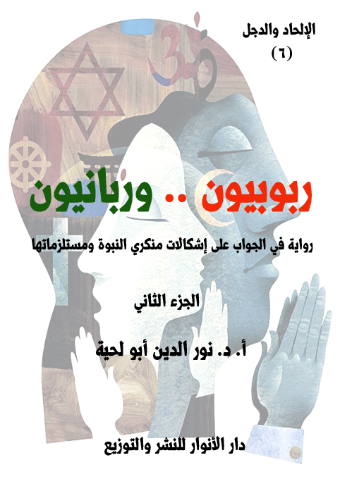

الكتاب: ربوبيون.. وربانيون ج2
الوصف: رواية في الجواب على إشكالات منكري النبوة ومستلزماتها
السلسلة: الإلحاد والدجل
المؤلف: أ. د. نور الدين أبو لحية
الناشر: دار الأنوار للنشر والتوزيع
الطبعة: الأولى، 1444 هـ
عدد الصفحات: 553
ISBN: 978-620-4-72146-0
لمطالعة الكتاب من تطبيق مؤلفاتي المجاني وهو أحسن وأيسر: هنا

يحاول هذا الكتاب ـ بأجزائه الثلاثة ـ أن يجيب على كل الإشكالات التي يطرحها من يطلقون على أنفسهم لقب [الربوبيين]، وهم الذين يرون إمكانية استبدال النبوة بالعقل، ويرون أن هداية الله لهم يمكن أن تتحقق من دون حاجة لأي دين أو نبوة، وقد استثمروا في ذلك ما وقع في تاريخ الأديان من انحرافات عما تقتضيه العقول السليمة، وتتطلبه القيم النبيلة.
ولذلك فإنه ـ وبصيغته الروائية الحوارية ـ يحاول ـ وبهدوء ـ أن يحاور هؤلاء، من خلال منطلقاتهم العقلية والفكرية أولا، ثم من خلال مستلزمات تلك المنطلقات، وهي الأدلة التفصيلية التي يسوقونها لبيان الانحرافات التي وقعت فيها الأديان.
وهذا السبب هو الذي دعانا إلى مناقشة كل الانحرافات التي وقعت فيها الأديان، وبمختلف أنواعها، وبيان الاتفاق عليها مع الربوبيين، ثم بيان وجه الحق في التعامل معها.
ولهذا يجد القارئ الرواية مملوءة بذكر الكثير من مواقف الأديان والمذاهب الفكرية في كل قضية تُطرح ابتداء من القضايا المرتبطة بالله والنبوة والكتب المقدسة، وانتهاء بكل القيم الإنسانية كالسلام والعدالة والرحمة وغيرها.
وبما أن مشكلة الربوبيين هي في ذلك التعميم الخاطئ لمواقفهم، فقد بينا في الرواية خطأ ذلك التعميم، وأن كل المعاني السليمة التي يسوقونها أو يدعون إليها موجودة في الإسلام، باعتباره الدين المهيمن والصحيح الباقي على وجه الأرض، مع التنبيه إلى الأخطاء التي وقع فيها المسلمون، والتي لا علاقة لها بالدين الإلهي.
ربوبيون وربانيون (2/7)
يتناول هذا الجزء من الكتاب الفصلين الرابع والخامس:
أما الفصل الرابع، فيتناول مقارنات بين القرآن الكريم والكتاب المقدس، بالإضافة إلى بيان البراهين الكثيرة الدالة على كون القرآن الكريم كلام الله المحفوظ الذي لم يبدل ولم يغير، وقد قسمنا الأدلة والمقارنات إلى سبعة أقسام، هي تشمل الحفظ والربانية والحق والحقيقة والعقلانية والروحانية والأدب.
وقد لخصنا معظمه مما ذكرناه من الحوارات والردود في كتاب [الكلمات المقدسة]، من سلسلة حقائق ورقائق، مع استبعاد الكثير من التفاصيل التي ذكرناها في ذلك الكتاب، بالإضافة إلى إضافات أخرى مهمة، بالإضافة إلى إعادة صياغة الأحداث بما يتناسب مع هذه الرواية.
أما الفصل الخامس، فيتناول كل ما يتعلق بعلاقة الدين بالسلام، وفيه ردود مفصلة على الشبهات المرتبطة برمي الإسلام بالعنف والإرهاب ونحوهما، وقد قسمناه بحسب المحال المرتبطة بالسلام إلى أربعة أقسام، هي تشمل السلام المرتبط بالكون والعالم والمجتمع والإنسان.
وقد لخصنا معظمه مما ذكرناه من الحوارات والردود في كتاب [سلام للعالمين]، من سلسلة حقائق ورقائق، مع استبعاد الكثير من التفاصيل التي ذكرناها في ذلك الكتاب، وخصوصا تلك التي تتعلق بالحوار الإسلامي المسيحي.
ربوبيون وربانيون (2/8)
بعد أن انتهى المتحدث الثالث، قام الرابع، وقال: لقد جاء الآن دوري.. واسمحوا لي أن أبدأ حديثي بما انتهى إليه حديث صاحبي، فقد مررت مثله بالكثير من المشاهد التي جعلتني أوقن بأن رحمة الله تقتضي هدايته، وأن هدايته تقتضي توفير وسائطها.. فكما أن رحمة الله لا تصل إلى العباد إلا من خلال الوسائط، فكذلك الهداية.
وكما اهتم صاحبي بالهداية المرتبطة بالسفير الإلهي، اهتممت أنا بالرسالة التي يحملها، فلذلك رحت أبحث عن كل الرسائل التي يدعي أصحابها أنها رسائل إلهية، لأرى مدى صدق ما يذكرون.
ومما شجعني على البحث وبذل كل الجهد والمال فيه أني علمت علما يقينيا أنه يستحيل أن تخلو الأرض من رسالة إلهية، تمثل الحقيقة المطلقة، وإلا خلت الأرض من الهداية، ومن جميع أسبابها.
وقد وفر الله لي الكثير من الأسباب التي أعانتني في البحث، وبكل سهولة ويسر.. فلم يكن لي من دور سوى الرحلة والاستماع.
وكما أن جميع أصحابي قد منّ الله عليهم بالصالحين الذين سلكوا بهم طريق الهداية، فقد منّ عليهم مثلهم بمثلهم.. ولهذا، فسأقص عليكم بعض المشاهد التي عشتها، والتي جعلتني أوقن تماما بأن كتاب الله المقدس الذي لم يُحرف ولم يبدل ولم يغير، بل بقي محفوظا كما هو.. هو القرآن الكريم.
وقبل أن أقصها عليكم، سأحدثكم حديث الرجل الذي كان سببا في دلالتي عليها، والذي التقيته في بعض الحدائق، وقد كان بين يدي حينها نسخة من الكتاب المقدس أطالع
ربوبيون وربانيون (2/9)
فيها (1).
وكنت حينها، وأثناء قراءته أمر بمواقف مضطربة.. ففي مواضع أشعر أنه كلام الله الجميل المتدفق بينابيع الرحمة واللطف والمودة، وأشعر حينها بأن كل ذرة من ذرات الوجود تشهد له بذلك، بل تترنم معي، وأنا أرتله بخشوع وتدبر.
وفي مواضع أشعر أنه لغو أو لهو فارغ لا يعنيني، ولا يعني البشرية المتشوفة للخلاص.. وفي مواضع أشعر بأنه كتاب خطير.. لو سرت تعاليمه إلى الأرض لأحرقت الأخضر واليابس، ومحت معها كل وجود اجتماعي على الأرض.
أحيانا أشعر أنه كلام من الله المتعال.. وأحيانا أشعر أنه كلام حكواتي فارغ يهتم بالتفاصيل التي لا حاجة لها.
أحيانا أشعر أنه كلام ينبع من منابع تمتلئ بالعنصرية والحقد واللاإنسانية.. وأحيانا أشعر أنه كلام يفيض من منابع الرحمة والحنان والإنسانية.
كنت أشعر بكل ذلك التناقض، وأنا أقرأ الكتاب المقدس، إلى أن سقط من يدي بعد أن جرى بجانبي بعض الأطفال، وهم يلهون ويلعبون.
فمد الرجل الجالس بجانبي يده إلى الكتاب، ثم أعطاه لي، وهو يقول: أمسك الكتاب بقوة، ففي الحديقة الكثير من الأطفال والمشاغبين الذين قد يجعلونه يسقط من يدك من جديد.
قلت: شكرا جزيلا.. إنه الكلمات المقدسة التي أنزلها الله على أنبيائه.
قال: ولكني لا أرى آثارها عليك.
__________
(1) نلخص في هذا الفصل أهم ما ذكرته في كتاب [الكلمات المقدسة] من الأدلة والردود على الشبهات، مع بعض الإضافات المهمة التي يقتضيها المقام.
ربوبيون وربانيون (2/10)
قلت: ما تقصد؟
قال: أكنت بالفعل تقرأ الرسالة التي أرسلها ربك لك؟
قلت: أجل.. لقد أرسلها لي كما أرسلها لجميع البشرية على لسان أنبيائه.
قال: ولكني لم أر على وجهك أي علامة تدل على أن الذي تقرأ كلامه هو الله.
قلت: وهل تحدث كلمات الله أثرا على الوجوه؟
قال: أجل.. أليست كلمات مقدسة؟
قلت: بلى.. هي كلمات مقدسة.
قال: إن الكلام المقدس يقدس صاحبه، ويطهره، ويملأ بالطمأنية قلبه، وبالانشراح صدره، وبالأسارير الصافية صفحة وجهه.
قلت: ألم تر ذلك حدث لي أثناء قراءته؟
قال: أنا لا أتهمك.. ولكني أسأل: هل كنت تقرأ حقيقة الكتاب المقدس؟
فتحت الكتاب، وقلت: انظر ها هو.. الكتاب المقدس.
قال: ليس الشأن في غلافه.. إنما الشأن في محتواه.
قلت: وهل تتصور المطابع تتلاعب بالكتاب المقدس لهذه الدرجة؟
قال: ألا يمكن أن تستبدل هذه المطابع أغلفة الكتب التي ظلت مكدسة في خزائنها بأغلفة للكتاب المقدس لتنشر سلعها، وتكسب من وراء ذلك؟
قلت: إنه الكتاب المقدس يا رجل!!
قال: أنا لا أفكر إلا بعقلي، فلذلك لا أتيقن إلا بعد أن أشك، ولا أطمئن إلا بعد أن أضطرب.
قلت: أتريد أن تشككني في الكتاب المقدس.. في كلمات ربي المقدسة؟
ربوبيون وربانيون (2/11)
قال: لا.. أنا لا أعطيك الشك، ولا اليقين.. ولكني أدعوك إلى البحث عن اليقين الذي لم ترثه.. فلا خير في يقين يورث.
قلت: أتريد مني أن أضع الكتاب المقدس على مشرحة البحث؟
قال: وما الذي يمنعك من ذلك؟
قلت: ربي.. إذا قال لي ربي يوم الدينونة: كيف تشك في كلامي؟.. وكيف تضعه في مشرحة البحث كما تضع أي كلام، فما عساي أقول له؟
قال: قل له: يارب.. لقد رأيت كلامك المقدس يحذرنا من المتنبئين الكذبة، فخشيت أن يختلط كلامك الجميل بكلام الكذبة.. وخشيت فوق ذلك أن أحمل صورة مشوهة عنك بسبب ما يرجف الكذبة عليك.. الكذبة الذين حملوا أقلام الكتبة.
قلت: أترى ذلك مجديا لي عند ربي؟
قال: بل ذلك ما يجديك عند ربك.. ألم يخلق الله لك عقلا؟
قلت: بلى.. ولولاه ما تحدثت معك، وناقشتك.
قال: لم ناقشتني؟
قلت: لأبحث عن الحقيقة.
قال: فناقش كلام ربك لتبحث فيه عن الحقيقة.. فلا خير في حقيقة لا تناقش.
قلت: ولكن كيف أبحث عن الحقيقة في هذا.. لو كان مؤلف هذا الكتاب بيننا لذهبت إليه، وتحدثت معه عن سر كل كلمة قالها.
قال: والله معنا لا يغيب.. لقد وضع في عقولنا برامج الحكمة التي نميز بها بين الحق والباطل.
قلت: ولكني لا أرى الناس يستعملونها.
ربوبيون وربانيون (2/12)
قال: لأنهم يبحثون عن المكاسب، لا عن الحقائق.
قلت: فما الطريق إلى الحقيقة؟
قال: الكلمات المقدسة تتصف بسبع صفات (1).. لا تكون مقدسة إلا بها.
قلت: فما هي؟
قال: الحفظ، والربانية، والحق، والحقيقة، والعقلانية، والروحانية، والأدب.
قلت: ما هذه الكلمات؟
قال: هذه أسوار الكلمات المقدسة التي تحميها من كذب الكذبة الذين يلبسون لباس الكتبة.
قلت: فما الحفظ؟
قال: أن لا يصلك كتاب ربك إلا من الأيدي الطاهرة.
قلت: لكني لا يمكنني أن أمنعه من الأيدي النجسة.
قال: لا تمنعه منها.. ولكن امنعها من الانفراد به حتى لا تحرفه وتبدله وتنجسه.
قلت: لم أفهم ما تقصد.
قال: أرأيت لو انفرد اللصوص والمجرمون ببنك من البنوك.. ولم يكن معهم رقيب ولا حفيظ.. هل سيتركونه سليما معافى؟
قلت: بل سيسطون عليه لا محالة.
قال: فهذه أموال لا تضر ولا تنفع.. احتاجت كل أولئك الحفظة.. فكيف بالكلمات المقدسة التي تفسر حقيقة الوجود، ومصير الوجود؟
__________
(1) اقتصرنا هنا من باب الاختصار على هذه السبعة، وقد أضفنا إليها في كتاب الكلمات المقدسة ثلاثة مقارنات أخرى بعناوين: الشمول، والتربية، والجمال.
ربوبيون وربانيون (2/13)
قلت: فهمت هذا، فما الربانية؟
قال: لن يكون الكلام مقدسا حتى يكون ربانيا.
قلت: فما الحق؟
قال: هل ترى في الكون أي عبث أو شيء لا قيمة له؟
قلت: لا.. ليس في مخلوقات ربك عبث.
قال: وليس في كلام ربك عبث ولا لغو ولا باطل.
قلت: فما الحقيقة؟
قال: هي الصدق الذي لا يحتاج برهانا.
قلت: فما العقلانية؟
قال: كلام ربك لا يتناقض مع خلق ربك، وبرمجة ربك.
قلت: فما الروحانية؟
قال: الكلام المقدس هو الذي يجعل روحك مقدسة.
قلت: فما الأدب؟
قال: هو الذي يرفع إنسانيتك عن البهيمية، ويرفع حقيقتك عن المستنقعات.
قلت: فكيف أصل إلى الكتاب الذي يحمل كل ما ذكرت؟
قال: بالصدق.. بالصدق وحده تصل إلى الأشعة التي تطل من شمس الحقيقة.
بعد أن قال لي هذا، أردت أن أسأله عن المحال التي يمكنني أن أتعرف فيها على هذا، لكنه غادر، وهو يقول: أعتذر إليك، لدي موعد مع بعضهم في هذا الوقت.
ثم مد يده ليصافحني، وهو يقول: عندما تكون صادقا ومخلصا وجادا، سيدلك الله على الطريق الأقصر الذي تصل به إلى الحق، ومن دون أي معاناة.
ربوبيون وربانيون (2/14)
وقد صدق الرجل في كلامه.. فمنذ فارقته، وأنا أجتهد كل صباح أن أوفر لنفسي كل ما استطعت من الصدق والإخلاص.. وقد جعلني ذلك أصل إلى الكثير من الحقائق، وبسهولة ويسر، وليس ما سأقصه عليكم من المشاهد السبعة إلا بعضها فقط.
قلنا: فحدثنا عن المشهد الذي عرفت فيه سور الحفظ، وعلاقته بالكتب المقدسة.
قال: لقد عرفت في هذا المشهد أن القرآن الكريم هو الكتاب الوحيد الذي لا يزال محفوظا، وكما أنزل على محمد صلى الله عليه وآله وسلم، ومن غير أي تبديل أو تغيير أو تحريف.. اللهم إلا تلك التبديلات التي طالت معانيه، والتي يمكن الخروج منها بسهولة، لأن في القرآن نفسه ما يدل على تحريفها.
قلنا: فكيف تم لك ذلك؟
قال: بعد مغادرتي مباشرة لتلك الحديقة قصدت بعض المكتبات الموجودة في المدينة، وقد قررت حينها أن أشتري كل الكتب المقدسة، لأبحث فيها عن الشروط التي ذكرها لي ذلك الرجل الغريب.. وقد شاء الله أن تكون تلك المكتبة وصاحبها بوابة لي للتعرف على السور الأول من أسوار الكتب المقدسة.
قلنا: فحدثنا عن ذلك.
قال: عندما دخلت المكتبة، وطلبت من صاحبها أن يبيعني ما لديه من الكتب المقدسة، فرح كثيرا، وقال: هذا شيء جميل جدا.. قل في هذا الزمان من يبحث عن أمثال هذه الكتب.. كلهم مغرم بالروايات والسخافات.
ثم سار بي إلى ركن خصصه لها ولترجماتها وتفاسيرها.. فوجدت كتبا مقدسة من كل
ربوبيون وربانيون (2/15)
الأديان.. لكني فوجئت به يضع القرآن الكريم في أفضل المواقع وأعلاها.
قلت: أليس هذا هو كتاب المسلمين المقدس؟
قال: بلى.. هو كتابهم المقدس.
قلت: أرى أن لك اهتماما خاصا به.. فأنت تضع مصحفه في محمل خاص بخلاف سائر الكتب.
قال: أصدقك القول.. فمع أني مسيحي.. بل من عائلة عريقة في تدينها بالمسيحية.. بل من عائلة كان الكثير من أفرادها رجال دين.. إلا أنه لم يحظ كتاب من الكتب بالأهمية عندي كما حظي كتاب المسلمين المقدس.. إني أقرؤه ولا أمل من قراءته.
قلت: لم؟
قال: لست أدري.. كأني أجده يخاطبني.. يعرفني بالعالم الذي جئت منه.. والذي نسيته، ولم تبق لي منه إلا ذكريات نسيتها.
قلت: وكتابنا المقدس بعهديه.. أتراك هجرته؟
قال: لا.. ولكني كلما مددت يدي لأقرأ ما فيه كلما وجدتني أعود لأحمل كتاب المسلمين لقراءته من جديد.
قلت: لعلك مغرم بالأدب.. فأنت تحب جمال أسلوبه.
قال: ليس هذا فقط.. لقد تعاملت مع نفسي كما أتعامل مع الأجنبي.. ورحت أحلل أسرار انجذابي للقرآن وثقتي فيه.. والتي تربو على ثقتي بكتابنا المقدس.
قلت: فما وجدت من هذه الدراسة التحليلية؟
قال: أشياء كثيرة جدا لا يمكنني أن أفصل لك ذكرها هنا.. ولكني من خلال اهتمامي بالأسانيد عرفت أن القرآن هو الكتاب الوحيد المحفوظ حفظا صحيحا من بين
ربوبيون وربانيون (2/16)
جميع الكتب المقدسة.. وقد كان ذلك مثار عجب عندي.. لقد ظللت أقول لنفسي: لو كان هذا الكتاب كاذبا على الله، فهل يأذن الله بحفظه بهذه الصورة العجيبة.. لكأن الكون كله خرسانة مسلحة حمي بها هذا الكتاب.. فلم يجرؤ جميع اللصوص على الاقتراب منه.
قلت: كيف عرفت ذلك؟.. إن البحث في هذا ليس بالسهولة التي تتصورها.
قال: أجل.. لكن الله يسر لي هذه المكتبة الضخمة التي ترجع الكثير من نسخها إلى القرون المتطاولة.. وقد بحثت فيها، فوصلت إلى الحقيقة التي ذكرتها لك.
قلت: فهل ستفصل لي خلاصة ما وصلت إليه؟
قال: إن لم يشغلك ذلك عما جئت من أجله.
قلت: لا.. لعلي لم أحضر إلا لأجل هذا.
قال: أول ما شدني إلى القرآن أنه الكتاب المقدس الوحيد الذي حفظ من أي تغيير وتبديل.. بل هو الكتاب الوحيد الذي لا يزال يُقرأ باللغة التي نزل بها.. بل بنفس مخارج الحروف التي كان ينطق بها محمد.. بل إن المسلمين لا يكتفون بحفظه مكتوبا كما نحفظ كتبنا، بل يضمون إليه حفظه في صدورهم.. حتى الأعاجم منهم يحفظونه.
قلت: وما الذي شدك إلى هذا؟
قال: شدني إلى هذا مقارنتي له بما تعامل به قومي وقومك مع كتبنا المقدسة.. لقد أهانوا قداستها بما أوقعوا فيها من تحريفات.
قلت: أنت مسيحي، وتقول بوقوع التحريف في كتبنا؟
قال: أنا مسيحي نعم.. ولكني مع ذلك إنسان عاقل.. يستعمل عقله.. ولا يمكنني أن ألغي عقلي.. ولا أرى أن مسيحيتي تتنافى مع استعمالي لعقلي.. لقد قمت بدراسة لكتبنا المقدسة من ناحية مدى الوثوق فيما دون فيها، وقد خرجت بنتائج مذهلة.
ربوبيون وربانيون (2/17)
قلت: فما الذي خرجت به؟
قال: لقد عرفت أن الحفظ بمعناه الحقيقي الكامل لم يتحقق في كتبنا، ولا في كتب اليهود التي نستمد منها، ولا في أي كتاب من الكتب التي تملأ أرجاء هذه القاعة، ما عدا كتاب المسلمين.. لقد أضيفت كتب كثيرة، وكلام كثير للكتب المقدسة جعلنا لا نستطيع التمييز بين المقدس منها وغير المقدس.
سكت قليلا، ثم قال: لقد ذكر كتاب المسلمين المقدس هذا، بل ذكر علله النفسية والاجتماعية، فقال: ﴿فَوَيْلٌ لِلَّذِينَ يَكْتُبُونَ الْكِتَابَ بِأَيْدِيهِمْ ثُمَّ يَقُولُونَ هَذَا مِنْ عِنْدِ اللَّهِ لِيَشْتَرُوا بِهِ ثَمَنًا قَلِيلًا فَوَيْلٌ لَهُمْ مِمَّا كَتَبَتْ أَيْدِيهِمْ وَوَيْلٌ لَهُمْ مِمَّا يَكْسِبُونَ﴾ [البقرة: 79].. بل وصف طريقة تلاعبهم بالكتاب وصفا دقيقا، فقال: ﴿وَإِنَّ مِنْهُمْ لَفَرِيقًا يَلْوُونَ أَلْسِنَتَهُمْ بِالْكِتَابِ لِتَحْسَبُوهُ مِنَ الْكِتَابِ وَمَا هُوَ مِنَ الْكِتَابِ وَيَقُولُونَ هُوَ مِنْ عِنْدِ اللَّهِ وَمَا هُوَ مِنْ عِنْدِ اللَّهِ وَيَقُولُونَ عَلَى اللَّهِ الْكَذِبَ وَهُمْ يَعْلَمُونَ﴾ [آل عمران: 78].. لقد مارس كثير من رجال الدين الذين امتلأوا بحب الدنيا هذه التجارة الرخيصة، تجارة التلاعب بالكتب المقدسة.
قلت: وكتاب المسلمين؟
قال: لقد توفرت ظروف كثيرة لكتاب المسلمين جعلته محفوظا حفظا تاما لا يزاد فيه حرف واحد، ولا ينقص منه حرف واحد.. أذكر أني قرأت عن أحد صحابة محمد.. هو عالم من علمائهم الكبار.. يقول متوجها للذين استهواهم ما في كتبنا من قصص: (يا معشر المسلمين، كيف تسألون أهل الكتاب عن شيء، وكتابكم الذي أنزل الله على نبيه، أحدث أخبار الله تقرؤونه محضا لم يشب؟.. وقد حدثكم الله تعالى أن أهل الكتاب قد بدلوا كتاب الله وغيروه، وكتبوا بأيديهم الكتاب، وقالوا: هو من عند الله ليشتروا به ثمنا قليلا؛ أفلا ينهاكم ما جاءكم من العلم عن مساءلتهم؟ ولا والله ما رأينا منهم أحدا قط سألكم عن
ربوبيون وربانيون (2/18)
الذي أنزل إليكم) (1).. لعل العناية الإلهية التي وعدت بحفظه جعلته بمنأى عن كل ما لحق بكتبنا من تحريفات.
أخذ مصحفا، وفتحه على مواضع محددة، وقال: اسمع.. إن إله المسلمين يعد بحفظ كتابه وعدا جازما، وهو ما تخلو منه كتبنا.. اسمع إليه، وهو يقول: ﴿إِنَّا نَحْنُ نَزَّلْنَا الذِّكْرَ وَإِنَّا لَهُ لَحَافِظُونَ﴾ [الحجر: 9].. بل هو يخبر بأن هذا الكتاب الذي أحمله لن يزاحمه أي باطل قدسيته، اسمع إليه: ﴿إِنَّ الَّذِينَ كَفَرُوا بِالذِّكْرِ لَمَّا جَاءَهُمْ وَإِنَّهُ لَكِتَابٌ عَزِيزٌ لَا يَأْتِيهِ الْبَاطِلُ مِنْ بَيْنِ يَدَيْهِ وَلَا مِنْ خَلْفِهِ تَنْزِيلٌ مِنْ حَكِيمٍ حَمِيدٍ﴾ [فصلت: 41 ـ 42].. بل هو يخبر أن مهمة جمعه تعود إليه، فيقول: ﴿لَا تُحَرِّكْ بِهِ لِسَانَكَ لِتَعْجَلَ بِهِ إِنَّ عَلَيْنَا جَمْعَهُ وَقُرْآنَهُ﴾ [القيامة: 16 ـ 17].. إن هذه الآيات وحدها تحمل إعجازا عظيما.. إنها تتحدى كل تلك الجيوش التي جيشت لتحريف هذا الكتاب أو تبديله أو محوه.
قلت: إن استنتاجك هذا يستدعي أدلة كثيرة.
قال: سأذكرها لك.. ولكن قبل أن نتحدث عن ذلك.. أو لنفهم ذلك.. فلنرجع إلى كتابنا المقدس الذي دنسته أيادي المحرفين.. لقد ذكرت لك أن كتاب المسلمين يحوي الوعد بحفظه، وأنه لن يصيبه سوء.
قلت: أجل.. لقد قرأت لي منه ما يدل على ذلك.
قال: وهذا ما تخلو منه كتبنا المقدسة.. فهي لا تحوي أي دلالة على أنها ستحفظ من التغيير والتبديل.. بل قد نص كتاب المسلمين على أن مهمة حفظ هذه الكتب كانت موكولة إلى رجال الدين الذين استهواهم الطمع، فراحوا يبدلون ويغيرون.. اسمع ما يقول كتاب
__________
(1) رواه البخاري.
ربوبيون وربانيون (2/19)
المسلمين.
فتح المصحف، وراح يقرأ: ﴿إِنَّا أَنْزَلْنَا التَّوْرَاةَ فِيهَا هُدًى وَنُورٌ يَحْكُمُ بِهَا النَّبِيُّونَ الَّذِينَ أَسْلَمُوا لِلَّذِينَ هَادُوا وَالرَّبَّانِيُّونَ وَالْأَحْبَارُ بِمَا اسْتُحْفِظُوا مِنْ كِتَابِ اللَّهِ وَكَانُوا عَلَيْهِ شُهَدَاءَ فَلَا تَخْشَوُا النَّاسَ وَاخْشَوْنِ وَلَا تَشْتَرُوا بِآيَاتِي ثَمَنًا قَلِيلًا وَمَنْ لَمْ يَحْكُمْ بِمَا أَنْزَلَ اللَّهُ فَأُولَئِكَ هُمُ الْكَافِرُونَ﴾ [المائدة: 44]
ثم أغلق المصحف، وقال: لطالما شدت هذه الآية انبتاهي.. إن قرآن المسلمين يحمل احتراما كبيرا للكتب المقدسة.. إنه يصف التوراة بأن فيها هدى ونور.. ولكن هذا الاحترام لا يحول بينه، وبين أن يذكر ما حصل فيها من تحريف.. وهو يحلل أسباب ذلك في أمرين: أشار إلى الأول منهما في قوله: ﴿فَلَا تَخْشَوُا النَّاسَ وَاخْشَوْنِ﴾ [المائدة: 44]، وأشار إلى الثاني في قوله: ﴿وَلَا تَشْتَرُوا بِآيَاتِي ثَمَنًا قَلِيلًا﴾ [المائدة: 44].. إنهما سببان خطيران.. أو مرضان قاتلان: الرغبة والرهبة.. الرغبة في المتاع القليل.. والرهبة من العناء القصير.
قلت: دعنا من كتاب المسلمين.. ولنرجع إلى كتابنا.
قال: مما ينقضي دونه العجب أن كتابنا المقدس نفسه يحوي هذه الحقيقة.. فهو لا يحمل أي وعد بحفظ ما فيه.. بل هو يخبر أن حفظ ما فيه كان موكولا لناس معينين ذوي أنساب معينة.. وهذا ما أتاح لهم أن يتلاعبوا به كما يشاءون.. انتظر.. سوف آتيك بشهادات كثيرة تثبت ما أقول.
ذهب إلى رف من الرفوف.. وحمل نسخة من الكتاب المقدس.. وقال: اسمع ما يقول: (أمر موسى اللاويين حاملي تابوت عهد الرب: خذوا كتاب التوراة هذا وضعوه بجانب تابوت عهد الرب إلهكم ليكون هناك شاهدا عليكم، لأني أنا عارف تمردكم ورقابكم الصلبة، هو ذا وأنا بعد حي معكم اليوم قد صرتم تقاومون الرب فكم بالحري
ربوبيون وربانيون (2/20)
بعد موتي!.. اجمعوا إلي كل شيوخ أسباطكم وعرفاءكم لأنطق في مسامعهم بهذه الكلمات وأشهد عليهم السماء والأرض، لأني عارف أنكم بعد موتي تفسدون وتزيغون عن الطريق الذي أوصيتكم به ويصيبكم الشر في آخر الأيام لأنكم تعملون الشر أمام الرب حتى تغيظوه بأعمال أيديكم) [سفر التثنية 31: 25 ـ 29]
ثم أغلق الكتاب، وقال: كيف ترى موسى، وهو يردد هذا الكلام؟
قلت: كأني أراه حزينا متأسفا على حال قومه.. وهو في نفس الوقت خائف من تلاعبهم بالرسالة التي جاء بها، وبالألواح التي أنزلت عليهم.
قال: أجل.. لقد غاب عنهم أربعين يوما فقط، ومع ذلك لم يصبروا على التغيير والتبديل.. بل راحوا يعبدون العجل الذي صنعه لهم السامري.. ومع أن هارون كان معهم إلا أنه لم يكن ليفعل شيئا أمام ما جبلوا عليه من تمرد.. التوراة تذكر هذا.. والقرآن يذكره (1).. لكن اسمع لقرآن المسلمين، فهو يصور هذا التغيير تصويرا جميلا.
فتح المصحف، وأخذ يقرأ بتدبر وخشوع: ﴿وَمَا أَعْجَلَكَ عَنْ قَوْمِكَ يَا مُوسَى﴾ [طه: 83]، ثم قال: الله يخاطب موسى في جبل الطور عند المناجاة.. ويذكر الله ما أجاب به موسى، فيقول: ﴿قَالَ هُمْ أُولَاءِ عَلَى أَثَرِي وَعَجِلْتُ إِلَيْكَ رَبِّ لِتَرْضَى﴾ [طه: 84].. فيجيبه الله: ﴿قَالَ فَإِنَّا قَدْ فَتَنَّا قَوْمَكَ مِنْ بَعْدِكَ وَأَضَلَّهُمُ السَّامِرِيُّ﴾ [طه: 85].. وحينذاك يرجع موسى إلى قومه غضبان أسفا على سرعة تغيرهم.. اسمع: ﴿فَرَجَعَ مُوسَى إِلَى قَوْمِهِ غَضْبَانَ أَسِفًا قَالَ يَا قَوْمِ أَلَمْ يَعِدْكُمْ رَبُّكُمْ وَعْدًا حَسَنًا أَفَطَالَ عَلَيْكُمُ الْعَهْدُ أَمْ أَرَدْتُمْ أَنْ يَحِلَّ عَلَيْكُمْ غَضَبٌ مِنْ رَبِّكُمْ فَأَخْلَفْتُمْ مَوْعِدِي﴾ [طه: 86].. لكن كبرياءهم وصلافتهم جعلتهم لا
__________
(1) ولكن الفرق بينهما عظيم فالتوراة تجعل هارون هو الذي قام بدور السامري كما في سفر الخروج (32/ 1 ـ 7)
ربوبيون وربانيون (2/21)
يبالون بغضب موسى، ولا بما يقولون، بل يردون عليه قائلين: ﴿مَا أَخْلَفْنَا مَوْعِدَكَ بِمَلْكِنَا وَلَكِنَّا حُمِّلْنَا أَوْزَارًا مِنْ زِينَةِ الْقَوْمِ فَقَذَفْنَاهَا فَكَذَلِكَ أَلْقَى السَّامِرِيُّ فَأَخْرَجَ لَهُمْ عِجْلًا جَسَدًا لَهُ خُوَارٌ فَقَالُوا هَذَا إِلَهُكُمْ وَإِلَهُ مُوسَى فَنَسِيَ﴾ [طه: 87 ـ 88].. هؤلاء هم بنو إسرائيل.. فهل تتصور أنهم سيحفظون ما أؤتمنوا عليه من كتاب؟
قلت: إن ألم موسى يبدو جليا في وصيته.. وكأنه يحاول أن يجد حيلة يحفظ بها كتابه من التغيير.
قال: أجل.. إنه يأمر بحفظه في تابوت العهد.. ثم يأمر بقراءته على بني إسرائيل، لعل فيهم من يحفظه، ويورث حفظه.. لكنه في نفس الوقت يعلم أنه سيأتي اليوم الذي يغيرون فيه كتابهم.. بل يرى أن ذلك اليوم قريب جدا.
فتح الكتاب المقدس، ثم قال: بل إن موسى يردد هذه الوصية كثيرا.. فهو يعلم ما سيلحق كتابه.. اسمع ما يقول: (لا تزيدوا على الكلام الذي أنا أوصيكم به ولا تنقصوا منه لتحفظوا وصايا الرب إلهكم التي أنا أوصيكم بها) [التثنية: 4/ 2]
صمت قليلا، ثم قال: ليس موسى وحده من قال هذا.. كل الأنبياء تحدثوا عن هذا.. اسمع ما يقول النبي إرميا: (فقال الرب لي، بالكذب يتنبأ الأنبياء باسمي، لم أرسلهم ولا أمرتهم ولا كلمتهم، برؤيا كاذبة وعرافة وباطل ومكر قلوبهم هم يتنبأون لكم) [إرميا: 14: 14]، ويقول: (الأنبياء يتنبأون بالكذب والكهنة تحكم على أيديهم وشعبي هكذا أحب، وماذا تعملون في آخرتها) [إرميا: 5: 31]
قلت: ولكن يا سيد.. ليست هناك أمة خلت من المتنبئين الكذبة حتى ما ذكرت عن المسلمين قد ظهر فيهم كثير من المتنبئين بعد محمد.
قال: نعم.. لقد ظهر فيهم مسيلمة، والأسود، وطلحة، وغيرهم كثير.
ربوبيون وربانيون (2/22)
قلت: فلم تشنع علينا؟
قال: هل رأيت في كتاب المسلمين سفرا أو سورة أو حتى آية لمسيلمة أو للأسود، أو لطلحة؟
قلت: لا.. حتى أن المسلمين يطلقون على مسيلمة لقب الكذاب.
قال: وهذه ميزتهم.. فكتابهم لم يخترق من الأنبياء الكذبة.. نعم ظهر أدعياء حاولوا أن يخترقوا كلام نبيهم، لكنه لم يجرؤ أحد على أن يخترق كتاب ربهم.. لكن بني إسرائيل اخترقوا الجميع.
فتح الكتاب المقدس، ثم قال: اسمع إلى أرميا، وهو يقول: (أما وحي الرب فلا تذكروه بعد لأن كلمة كل إنسان تكون وحيه إذ قد حرفتم كلام الإله الحي رب الجنود إلهنا) [إرميا: 23: 36].. وهو يقول: (هكذا قال رب الجنود لا تسمعوا لكلام الانبياء الذين يتنبأون لكم، فانهم يجعلونكم باطلا، يتكلمون برؤيا قلبهم لا عن فم الرب) [إرميا: 23/ 16].. وهو يقول: (لم أرسل الأنبياء بل هم جروا، لم أتكلم معهم بل هم تنبأوا) [إرميا: 23/ 21]
نظر إلي بحزن، وقال: فمن هم هؤلاء الأنبياء؟.. ولو كانوا جميعا قد تنجسوا.. جميعا.. فكيف تصدقونهم!؟.. وهو يقول: (لأن الأنبياء والكهنة تنجسوا جميعا بل في بيتي وجدت شرهم يقول الرب) [إرميا: 23/ 11].. وهو يصرح بكل ألم قائلا: (كيف تقولون نحن حكماء وشريعة الرب معنا.. حقا إنه إلى الكذب حولها قلم الكتبة الكاذب) [إرميا: 8: 8]
التفت إلي، وقال: ألا ترى هذا النص صريحا في وقوع التحريف.. إن إرميا هنا هو المتحدث لا رحمة الله الهندي، ولا ديدات.. إنه يخبرنا بالحقيقة المرة التي لا نجرؤ على
ربوبيون وربانيون (2/23)
التصريح بها.
قلت: لا.. يا صاحبي.. هو لا يقصد هذا.. هو يقصد ذلك التحريف المعنوي الذي لحق الكتاب المقدس.
قال: لا.. إنه يتحدث عن أقلام الكتبة.. هو يتحدث عن الكتبة، ولا يتحدث عن المؤولين.. هو يتحدث عن الكتبة المختصين بالنقل والنسخ.. فهم الذين غيروها وبدلوها وحرفوها وحولوها إلى الكذب.. بل هو يصرح بالسبب الذي ذكره القرآن.. وهو الرغبة.. اسمع إليه، وهو يقول: (لأنهم من صغيرهم إلى كبيرهم كل واحد مولع بالربح ومن النبي إلى الكاهن كل واحد يعمل بالكذب) [إرميا: 6: 13]
قلب بعض الصفحات من الكتاب المقدس، ثم قال: ليس إرميا وحده الذي صرح به.. اسمع ما جاء في المزامير: (اليوم كله يحرفون كلامي، علي كل افكارهم بالشر) [مزمور: 56/ 5].. واسمع ما جاء في (حزقيال): (ستاتي مصيبة على مصيبة، ويكون خبر على خبر.. فيطلبون رؤيا من النبي.. والشريعة تباد عن الكاهن والمشورة عن الشيوخ) [حزقيال: 7/ 26].. واسمع ما يقول إشعيا: (ويل للذين يقضون أقضية الباطل وللكتبة الذين يسجلون جورا ليصدوا الضعفاء عن الحكم ويسلبوا حق بائسي شعبي لتكون الارامل غنيمتهم وينهبوا الايتام) [إشعياء: 10/ 1 ـ 2]
ثم التفت إلي، وقال: إن إشعيا يتحدث عن المطامع التي جرت القضاة والكتبة إلى التحريف.. إنه يتحدث عن بيع كتاب الله بثمن بخس كما قال كتاب المسلمين، بل هو يصرح بذلك قطعا لكل تأويل، فيقول: (ويل للذين يتعمقون ليكتموا رأيهم عن الرب فتصير اعمالهم في الظلمة ويقولون من يبصرنا ومن يعرفنا، يا لتحريفكم، هل يحسب الجابل كالطين حتى يقول المصنوع عن صانعه لم يصنعني، أو تقول الجبلة عن جابلها لم يفهم)
ربوبيون وربانيون (2/24)
[إشعياء: 29/ 15 ـ 16]، ويقول: (ويل للبنين المتمردين يقول الرب حتى انهم يجرون رأيا وليس مني ويسكبون سكيبا وليس بروحي ليزيدوا خطيئة على خطيئة) [إشعياء: 30/ 1]
قلت: سمعت هذه النصوص.. لكني مع ذلك لا أستطيع أن أكتفي بها للدلالة على وقوع التحريف، أنا إنسان عاقل، ويغلب علي الحس.. ولا يكفيني الكلام المجمل الذي قد يساء فهمه.
قال: لن تجد عندي إلا ما يرضيك.. فأنا مثلك تماما.. لقد دفعتني هذه النصوص للبحث.. لقد جعلت الكتاب المقدس مادة للبحث من هذه الناحية.
قلت: فماذا وجدت؟
قال: ثلاثة أنواع من التحريف، لا يصيب واحد منها كتابا إلا رفع الثقة عنه.
قلت: فما هي؟
قال: الزيادة، والنقصان، والتبديل.
قلت: وهل حفظ كتاب المسلمين من هذه التحريفات؟
قال: أجل.. وسنبحث معا في هذا الركن من المكتبة لترى بعينيك صدق ما رأيته (1).
قلت: فلنبدأ بأول التحريفات.. وهو الزيادة.
قال: لا يصح نسبة القدسية إلى كتاب إلا إذا ثبت بالدليل القاطع أن هذا الكتاب منسوب للنبي الذي جاء به.. فالكتب المقدسة تستمد قدسيتها من نسبتها إلى الله.. فلذلك يؤثر فيها كل تدخل بشري قد يغير ما أراد الله أن يقوله لنا.
__________
(1) سنذكر هنا نماذج مختصرة عن هذه التحريفات، ومن أراد تفاصيل أكثر، يرجع إلى كتاب الكلمات المقدسة، ص 33، فما بعدها.
ربوبيون وربانيون (2/25)
قلت: ألم يتحقق هذا في كتبنا؟
قال: لا.. لقد ذكرت لك أن كتاب المسلمين أشار إلى هذا النوع من التحريف، فقال: ﴿فَوَيْلٌ لِلَّذِينَ يَكْتُبُونَ الْكِتَابَ بِأَيْدِيهِمْ ثُمَّ يَقُولُونَ هَذَا مِنْ عِنْدِ اللَّهِ لِيَشْتَرُوا بِهِ ثَمَنًا قَلِيلًا فَوَيْلٌ لَهُمْ مِمَّا كَتَبَتْ أَيْدِيهِمْ وَوَيْلٌ لَهُمْ مِمَّا يَكْسِبُونَ﴾ [البقرة: 79] وهو ما أشار إليه إرميا قبل ذلك بقوله: (وأقاوم الأنبياء الذين يسخرون ألسنتهم قائلين: الرب يقول هذا، ها أنا أقاوم المتنبئين بأحلام كاذبة ويقصونها مضلين شعبي بأكاذيبهم واستخفافهم) [إرميا: 23/ 31 ـ 32]
قلت: الكتاب المقدس قسمان: العهد القديم، والعهد الجديد، فهل دخل التحريف بالزيادة كلا القسمين.
قال: أجل.. ولنبدأ بالعهد القديم.. ولنبدأ القصة من أولها.. ولنبدأ بالسند من أوله.. لقد نزلت التوراة على موسى.. وكان ينبغي أن يحفظها جميع بني إسرائيل لتنقل إلينا بعد ذلك بالتواتر كما حفظ جميع المسلمين قرآنهم، ونقلوه إلينا بالتواتر.
قلت: ألم يحصل ذلك؟
قال: لا.. لم يسلم موسى التوراة إلى بني إسرائيل.
قلت: لم؟
قال: لقد كان يخاف من اختلافهم من بعده في تأويلها.. لقد ذكرنا ما جاء في سفر التثنية أن موسى قال لبني إسرائيل: (خذوا كتاب التوراة هذا، وضعوه بجانب التابوت عهد الرب إلهكم ليكون هناك شاهدا عليكم لأني أنا عارف بتمردكم ورقابكم الصلبة، هو ذا أنا بعد حي معكم اليوم قد صرتم تقاومون الرب فكم بالحري بعد موتي) [سفر التثنية: 24: 31]
ربوبيون وربانيون (2/26)
قلت: فمن تكفل بحفظ التوراة من بني إسرائيل؟
قال: لقد سلمها موسى إلى كهنة بني لاوي، فهم حاملو تابوت عهد الرب، كما في (سفر التثنية: 9/ 31)
قلت: فهل حافظ بنو لاوي على الثقة التي وضعها موسى فيهم؟
قال: يؤكد المؤرخون أن التوراة ظلت صحيحة في أيدي اليهود لم يغيروا منها حرفا واحدا إلى زمن الأسر البابلي عندما حاربهم نبوخذنصر ملك بابل عام 588 ق، م تقريبا فقام بدك أسوار القدس وأحرق المدينة والهيكل بعد أن أخذ منه التابوت، وتتبع الهارونيين، وسائر الكهنة فقتلهم، ثم سبى اليهود جميعا إلى بابل مقيدين بالسلاسل، ولم يترك فيها إلا شرذمة قليلة.. وفي هذه الحادثة انعدمت التوراة وسائر أسفار العهد القديم التي كانت مصنفة.
رأى استغرابي، فقال: لا تستغرب.. فنحن واليهود نقر بذلك.. لقد قتل جميع الهارونيين الذين كانوا يحفظون التوراة، ولم تكن التوراة محفوظة على ألسنة بني إسرائيل، فضاعت واندثرت كما اندثرت أمتهم، وتشتت بين نهري دجلة والفرات وما حولها، فذابوا بين تلك الشعوب وعبدوا آلهتهم، واستمر هذا النفي إلى عام 583 ق، م، ثم عاد كثير منهم إلى فلسطين، فأعادوا بناء المدينة والهيكل.
قلت: لا يهمنا الهيكل ولا المدينة.. ماذا حصل للتوراة؟ هل استعادوها؟
قال: في عام 458 ق، م عاد عزرا إلى القدس، ومعه جماعه من الكتبة اللاويين، وكان أول ما اهتموا به هو كتابة التوراة.
قلت: كيف.. وقد ضاعت؟
قال: لقد قام عزرا بجمع أسفار التوراة مرة أخرى، فجمع من محفوظاته، ومن
ربوبيون وربانيون (2/27)
الفصول التي يحفظها الكهنة ما لفق منه هذه التوراة التي بأيديهم، ولذلك بالغوا في تعظيمه غاية المبالغة، وزعموا أن النور على الأرض إلى الآن يظهر على قبره.
قلت: والتوراة التي كتبها موسى.. أي النسخة الأصلية من التوراة؟
قال: لم يعد لها أي أثر.
قلت: فأين ذهبت؟
قال: هذا ما لا يجد له أحد جوابا.
قلت: أليس من الممكن أن يكون عزرا والكتبة قد أعادوا التوراة كما هي بنسختها الأصلية؟
قال: لقد وضعت هذا الاحتمال.. ولكني ببحث بسيط يعتمد على الحس وحده عرفت استحالة ذلك.. لقد تضخمت التوراة كثيرا مقارنة بالتوراة التي أنزلت علي موسى.
أخذ نسخة من التوراة كانت بجانبه، وقال: انظر.. هذه هي التوراة بأسفارها الخمسة.. فهي تملأ 379 صفحة بالحروف الصغيرة.
قلت: وما في ذلك؟
قال: لو ذهبنا نبحث عن عدد صفحات النسخة الأصلية من التوراة لم نجد هذا العدد.
قلت: لقد ذكرت أنها ضاعت، فكيف عرفت عدد صفحاتها؟
قال: ذلك يسير.. فقد ورد في صفتها ما يبين حجمها، حيث يذكر سفر الخروج (24: 12)، أن موسى تلقي التوراة مكتوبة على لوحين من حجر، وهذا نص ما ورد: (وقال الرب لموسى: اصعد إلى الجبل وامكث هناك لأعطيك الوصايا والشرائع التي كتبتها على لوحي الحجر لتلقنها لهم).. وقد نص كتاب المسلمين على هذا، فقد ورد فيه: ﴿وَكَتَبْنَا
ربوبيون وربانيون (2/28)
لَهُ فِي الْأَلْوَاحِ مِنْ كُلِّ شَيْءٍ مَوْعِظَةً وَتَفْصِيلًا لِكُلِّ شَيْءٍ فَخُذْهَا بِقُوَّةٍ وَأْمُرْ قَوْمَكَ يَأْخُذُوا بِأَحْسَنِهَا سَأُرِيكُمْ دَارَ الْفَاسِقِينَ﴾ [الأعراف: 145].. وورد فيه: ﴿وَلَمَّا رَجَعَ مُوسَى إِلَى قَوْمِهِ غَضْبَانَ أَسِفًا قَالَ بِئْسَمَا خَلَفْتُمُونِي مِنْ بَعْدِي أَعَجِلْتُمْ أَمْرَ رَبِّكُمْ وَأَلْقَى الْأَلْوَاحَ وَأَخَذَ بِرَأْسِ أَخِيهِ يَجُرُّهُ إِلَيْهِ قَالَ ابْنَ أُمَّ إِنَّ الْقَوْمَ اسْتَضْعَفُونِي وَكَادُوا يَقْتُلُونَنِي فَلَا تُشْمِتْ بِيَ الْأَعْدَاءَ وَلَا تَجْعَلْنِي مَعَ الْقَوْمِ الظَّالِمِينَ﴾ [الأعراف: 150]
قلت: لا مانع عقلا من أن يكون اللوحان اللذان كتبت عليهما التوراة من العظم والاتساع، بحيث يملأ المسطر عليها 379 صفحة من الورق كما نراها الآن.
قال: ولكن التوراة نفسها تدفع هذا الاحتمال حين تحدد حجم اللوحين بالتابوت الذي أمر الله موسى أن يصنعه ويحفظ فيه التوراة، فقد جاء في سفر الخروج (25: 10، 16): (تابوتا من خشب طوله ذراعان ونصف وعرضه ذراع ونصف وارتفاعه ذراع ونصف، وتضع في التابوت الشهادة التي أعطيك)
قلت: ألا يمكن أن يكون ما كتب على اللوحين، بلغت حروفه حدا من الصغر، بحيث إذا نقلت كلماته على الورق، ملأت صفحات عديدة.. فنحن نرى الآن القرآن كتاب المسلمين يكتب في صفحة واحدة لا تزيد كثيرا عن ذراع في ذراع.
قال: يمكن ذلك.. ولكن التوراة نفسها تدفع هذا الاحتمال حين تحدد لنا الزمن الذي يستغرقه كتابتها وقراءتها، بحيث لا يبقى لدينا أدنى شك في تقدير حجمها، وأنها لا تزيد عن كلمات لا تملأ أكثر من بضع ورقات.. يقول كاتب سفر التثنية (31: 9): (وكتب موسى كلمات هذه التوراة وسلمها للكهنة بني لاوي حاملي تابوت عهد الرب وإلى سائر شيوخ بني إسرائيل، وأمرهم موسى قائلا: في ختام السبع السنوات، في ميعاد سنة الإبراء من الديون، في عيد المظال عندما يجتمع جميع الإسرائيليين للعبادة أمام الرب إلهكم في
ربوبيون وربانيون (2/29)
الموضع الذي يختاره، تتلون نصوص هذه التوراة في مسامعهم)
قلت: ولكن.. أليس من الجائز أن يكون موسى قد تلقى مع اللوحين نصوصا أخرى، وأن المجموع هو ما يطلق عليه التوراة؟
قال: وضعت هذا الاحتمال.. لكني وجدت نصوصا تنفيه، فقد ورد في سفر الملوك الأول (8: 9) أن سليمان حين نقل التابوت إلى المعبد الذي بناه، لم يكن فيه سوى اللوحين، وهذا نصه: (ولم يكن في التابوت سوى لوحي الحجر اللذين وضعهما موسى في حوريب حين عاهد الرب أبناء إسرائيل بعد خروجهم من ديار مصر)
قلت: فقد استدللت بالحجم إذن على الزيادات التي حصلت في التوراة؟
قال: لا.. ليس بالحجم الحسي وحده.. بل بحجم المضمون أيضا.. فالتوراة تعين لنا على لسان موسى قبل موته مضمونها، وأنها عبارة عن الوصايا العشر، وأنها فقط ما كتب في اللوحين: (ودعا موسى جميع إسرائيل، وقال لهم: اسمع يا إسرائيل الفرائض والأحكام التي أتكلم بها في مسامعكم اليوم وتعلموها واحترزوا لتعملوها، فقال: أنا هو الرب إلهك الذي أخرجك من أرض مصر من بيت العبودية، لا يكن لك آلهة أخرى أمامي، لا تصنع لك تمثالا منحوتا.. لا تنطق باسم الرب إلهك باطلا.. لا تقتل، ولا تزن، ولا تسرق، ولا تشهد على قريبك زور، ولا تشته امرأة قريبك، ولا تشته بيت قريبك ولا حقله ولا عبده ولا أمته ولا ثوره ولا حماره ولا كل ما لقريبك، هذه الكلمات كلم بها الرب كل جماعتكم في الجبل من وسط النار والسحاب والضباب وصوت عظيم ولم يزد، وكتبها على لوحين من حجر وأعطاني إياها) [تثنية: 5: 1، 22]
رأى صمتي، فقال: أعلم أنك لم تقتنع بعد.. يحق لك ذلك.. أجبني.. أرأيت لو أن مؤلفا من القرن العاشر ألف كتابا يتحدث فيه عن أحداث القرن الحادي عشر.. هل تجزم
ربوبيون وربانيون (2/30)
بتصديق نسبة الكتاب إلى صاحبه؟
قلت: لا.. ولا أظن عاقلا يمكن أن يصدق نسبة هذا الكتاب إلى صاحبه.
قال: فقد حصل هذا في التوراة.. إنها ـ بكل أسف ـ تذكر أحداثا حصلت بعد وفاة موسى في سيناء.. اسمع.
فتح التوراة، وأخذ يقرأ: (وأكل بنو إسرائيل المن أربعين سنة، حتى جاءوا إلى أرض عامرة، أكلوا المن حتى جاءوا إلى أرض كنعان) [خروج: 16/ 35].. أتدري متى جاءوا إلى أرض كنعان؟
قلت: أجل.. بعد وفاة موسى حين دخلوا الأرض المقدسة، وقد أشار إلى ذلك سفر يشوع، فقد جاء فيه: (فحل بنو إسرائيل في الجلجال.. في عربات أريحا، وأكلوا من غلة الأرض.. وانقطع المن في الغد عند أكلهم من غلة الأرض) [يشوع 5/ 10 ـ 12]
قال: فكيف يتحدث موسى عن أمر حدث بعد وفاته؟
قلت: أليس من الممكن أن يكون إخبارا بالغيب؟
قال: لا.. لقد جاء بصيغة الخبر الماضي، وهي بصيغ التأريخ لا بصيغ النبوءات.. وأنت تعرف صيغ النبوءات في الكتاب المقدس.
صمت، فقال: ليس ذلك فقط.. اسمع ما جاء في سفر العدد، فإن كاتبه يشعرك أنه قد كتبه بعد جلاء بني إسرائيل من برية سيناء ودخولهم فلسطين فهو يقول: (ولما كان بنو إسرائيل في البرية، وجدوا رجلا يحتطب في السبت) [العدد 15/ 32] فالكاتب ليس في البرية حتما.. مع أن موسى كان قد مات في البرية قبل دخول الأرض المقدسة.. ليس هذا فقط.. اسمع ما ورد في التثنية: (وسكنوا مكانهم كما فعل إسرائيل بأرض ميراثهم التي أعطاهم الرب) [التثنية: 2/ 12].. ألا يدل هذا على أن الكاتب قد أدرك دخول بني
ربوبيون وربانيون (2/31)
إسرائيل الأرض المقدسة، وهو ما حصل بعد وفاة موسى؟
فتح الكتاب المقدس على بعض صفحاته، وقال: اسمع ما جاء في سفر التكوين ـ الذي من المفترض أن يكون كاتبه موسى ـ: (اجتاز أبرام في الأرض إلى مكان شكيم إلى بلوطة مورة، وكان الكنعانيون حينئذ في الأرض (فلسطين)) [التكوين 12/ 5 ـ 6].. ألا ترى أن الكاتب قد أدرك خروج الكنعانيين من الأرض بعد دخول بني إسرائيل، وذلك ـ حتما ـ ليس موسى؟.. واسمع ما يقول نفس السفر: (وكان الكنعانيون والفرزيون حينئذ ساكنين في الأرض) [التكوين 13/ 7].. واسمع: (وهؤلاء هم الملوك الذين ملكوا في أرض أدوم قبلما ملك ملكٌ لبني إسرائيل) [التكوين 36/ 31].. فالكاتب لا يتحدث عن دخول بني إسرائيل الأرض المقدسة، فحسب.. بل يتحدث عن عهد الملكية الذي كان بعد موسى بأربعة قرون.
التفت إلي، فرآني صامتا، فقال: هل سمعت كاتبا يخبر عن وفاته والمحل الذي دفن فيه.
قلت: يمكن أن يكون ذلك في حالة واحدة.. وهي أن يكون قد كتب كتابه بعد وفاته.
قال: فاسمع هذا الخبر الذي ورد في أسفار موسى، والتي يفترض أن يكون كاتبها هو موسى: (فمات هناك موسى عبد الرب في أرض مؤاب حسب قول الرب، ودفنه في الجواء في أرض مؤاب مقابل بيت فغور، ولم يعرف إنسان قبره إلى هذا اليوم، وكان موسى ابن مائة وعشرين سنة حين مات، ولم تكل عينه ولا ذهبت نضارته، فبكى بنو إسرائيل في عربات مؤاب ثلاثين يوما، فكملت أيام بكاء مناحة موسى) [التثنية 34/ 5 ـ 8].. ألا ترى أن النص يتحدث عن الماضي البعيد؟.. إنه ليس نبوءة.. فهو لا يخبر عن المستقبل.. وليست
ربوبيون وربانيون (2/32)
هناك أي دلالة على ذلك.
كان ينظر إلي، ويتفرس في مدى تأثير أدلته على وجهي، قال: أجبني.. لو جاءك رجل بمخطوطة تتحدث عن التلفزيون.. وقال لك: إنها من القرن العاشر.. هل تراك تصدقه.. أم تجعل وصف التلفزيون فيها دليلا على أنها مخطوطة مزورة؟
قلت: بل أعتبرها مزورة.. إلا إذا أثبت لي بالسند الصحيح، أو بالدليل العلمي القوي أنها من القرن العاشر.. وحينذاك أعتبرها نبوءة لا خبرا.
قال: فإذا لم يأتك بأي من االأمرين.. بل كان في المخطوطة ما يدل على أنها كتبت في قرنك، لا في القرن العاشر.
قلت: حينذاك لا يبقى إلا أن أواجهه بالجقيقة، وهي أن المخطوطة مزورة.
قال: هذا نفسه ما حدث للتوراة.. فقد ذكرت أسماء كثيرة لمسميات لم يعرفها بنو إسرائيل إلا بعد موسى، ولم تسم بهذه الأسماء إلا بعد قرون من وفاة موسى.. والأمثلة على ذلك كثيرة.. منها ما جاء في سفر التكوين: (ثم رحل إسرائيل ونصب خيمته وراء مجدل عدر) [التكوين: 35/ 21] وهذا اسم لمنارة في هيكل سليمان بنيت بعد موسى بأربعمائة سنة.. وجاء في نفس السفر: (وتبعهم إلى دان) [التكوين 14/ 14] مع أنها سميت بهذا الاسم في عهد القضاة، أي بعد موسى بما يربو على مائة سنة، كما ورد في سفر القضاة: (وجاءوا إلى لايش.. ودعوا اسم المدينة دان، باسم دان أبيهم) [القضاة: 18/ 27 ـ 29]
التفت إلي، فرآني صامتا، فقال: قد تتهمني في بحثي.. وقد تظن أن هناك أجوبة على ما طرحته من إشكالات.. لا.. لدي شهادات كثيرة على ما أقول.
قام إلى المكتبة، وأخذ مخطوطا، وقال: لعل من أولها ما كتبه ابن عزرا، وهو الحبر اليهودي الغرناطي (تـ 1167 م) فقد ألغز ملاحظته فقال في شرحه لسفر التثنية: (فيما وراء
ربوبيون وربانيون (2/33)
نهر الأردن.. لو كنت تعرف سر الإثني عشر.. كتب موسى شريعته أيضا.. وكان الكنعاني على الأرض.. سيوحي به على جبل الله.. ها هوذا سريره، سرير من حديد، حينئذ تعرف الحقيقة)
قلت: ولكن ابن عزرا لم يصرح بشيء.
قال: هو لم يجرؤ على التصريح.. ولكن إلغازه لا يشير إلا إلى ذلك.. ولهذا فسر اليهودي الناقد اسبينوزا قول ابن عزرا بأنه أراد بأن موسى لم يكتب التوراة لأن موسى لم يعبر النهر، ثم سفر موسى قد نقش على اثني عشر حجرا بخط واضح، فحجمه ليس بحجم التوراة، ثم لا يصح أن تقول التوراة بأن موسى كتب التوراة، ثم كيف يذكر أن الكنعانيين كانوا حينئذ على الأرض؟، فهذا لا يكون إلا بعد طردهم منها، وأما جبل الله فسمي بهذا الاسم بعد قرون من موسى، وسرير عوج الحديدي جاء ذكره في التثنية (3/ 11 ـ 12) بما يدل على أنه كتب بعده بزمن طويل.
قلت: لقد حل اسبينوزا اللغز حلا جيدا.
قال: لقد حللت اللغز قبل أن أرى حل اسبينوزا.. هو واضح لكل من تأمل ما قاله ابن عزرا، لأني نفسي كنت أستغرب مثل تلك النصوص.
سكت قليلا، ثم قال: ليس ابن عزرا وحده.. هناك جموع من المشككين.
أخذ كتابا آخر، وفتحه، وقال: في القرن التاسع عشر صرح القس نورتن بعدم صحة نسبة الأسفار لموسى فقال: (التوراة جعلية يقينا، ليست من تصنيف موسى)
التفت إلي، فرآني مستغرقا في دهشتي، فقال: فهل ترى بعد ذلك أن هذه الأسفار الخمسة من كلام موسى أو كلام الله؟
قلت: ولكن الكتاب المقدس، أو العهد القديم منه ليس توراة موسى فحسب.
ربوبيون وربانيون (2/34)
قال: لقد بحثت فيها جميعا، فوجدت في كل واحد منها من الدلائل ما يشير إلى أن تلك الأسفار بين احتمالين.. إما أن الأنبياء لم يكتبوها إطلاقا.. وإما أنهم كتبوها، ولكن تحريفات كثيرة دخلت عليها.
قلت: كيف عرفت ذلك؟
قال: سنبحث هذا مع بعضنا هنا.. خذ نسخة من العهد القديم، وافتحها.. ولنبدأ بسفر يشوع.. إن قراءة متأنية لهذا السفر تكشف عن تأخر تاريخ كتابته عن يشوع بسنين طويلة فقد جاء فيه خبر موت يشوع.. افتح (يشوع: 29: 24 ـ 30) واقرأ علي.
فتحت في الموضع الذي حددت، وقرأت: (مات يشوع بن نون عبد الرب ابن مائة وعشر سنين، فدفنوه في تخم ملكه)
قال: هل رأيت كتابا يذكر مؤلفه فيه تاريخ وفاته، بل المحل الذي دفن فيه؟
صمت، فقال: ليس ذلك فقط.. بل إن السفر يذكر أحداثا بعد موته، كتعظيم بني إسرائيل له بعد موته.. انظر (يشوع 31: 24).. ليس ذلك فقط، بل السفر برمته يتحدث عن يشوع بضمير الغائب (انظر 35: 8، 27: 6).. دعنا من سفر يشوع.. وافتح سفر القضاة.. إن هذا السفر يتحدث عن الفترة التي تلت يشوع، والتي سبقت الملكية، وهي فترة مبكرة من تاريخ بني إسرائيل.. لكن السفر يحوى ما يدل على أنه كتب في عهد الملوك، فقد جاء فيه: (في تلك الأيام لم يكن ملك في إسرائيل) [قضاة 25: 21] وفيه: (وفي تلك الأيام لم يكن ملك في إسرائيل) [قضاة 6: 17].. بل إن الأب لوفيفر يقول: (إن سفر القضاة أعيدت كتابته وعدلت مرات كثيرة قبل أن يصل إلى صيغته النهائية، وأن أحداثه التاريخية تعوزها الدقة)، وقومي وقومك يعترفون بأنه لا يعلم كاتب السفر.. ويظنون أنه صموئيل.
ربوبيون وربانيون (2/35)
بعد أن ذكر لي الأمثلة الكثيرة على ذلك (1)، قلت: فهذه الأسفار جميعا تفتقر إلى الأسانيد التي تثبت نسبتها لمؤلفيها؟
قال: أجل.. وليس هذا قولي فقط.. بل هو قول كل محقق مدقق.. وسأذكر لك بعض الشهادات المؤيدة لهذا.
قام وأخرج كتابا من رف من رفوف ذلك الجناح، وقال: سأقرأ لك هنا بعض ما جاء في الدراسة القيمة المسماة: (مدخل إلى الكتاب المقدس)، والتي نقلتها الرهبانية اليسوعية من الترجمة المسكونية الفرنسية للكتاب المقدس (2).
فتح الكتاب، وأخذ يقرأ: (ما هو الكتاب المقدس؟ تكفي نظرة نلقيها على الفهرس لنرى: أنه مكتبة، بل مجموعة كتب مختلفة جدا.. ذلك أنها تمتد على أكثر من عشرة قرون، وتنسب إلى عشرات المؤلفين المختلفين، بعضها وضع بالعبرية مع بعض المقاطع بالآرامية، وبعضها الآخر باليونانية، وهي تنتمي إلى أشد الفنون الأدبية اختلافا كالرواية التاريخية ومجموعة القوانين والصلاة والقصيدة الشعرية والرسالة والقصة) (3)
أغلق الكتاب، ثم قال: هذا الكلام لم يقله مسلم.. ولم يقله شيوعي يكره الأديان.. هذا الكلام قاله رجال دين.. ورجال دين يعتقدون أن هذا هو كتابهم المقدس.. ومع ذلك، فهو يتضمن اعترافا صريحا لا لبس فيه أن هذه الأسفار المجمعة باسم (العهد القديم) والمعروفة باسم (الكتاب المقدس) ليست من عند الله مباشرة ولا أوحى الله بها لأحد من أنبيائه، بل هي عمل مؤلفين ومحررين استلهموا أعمالهم من تقاليد الشعب وآلامه
__________
(1) انظر المزيد من الأمثلة في الكلمات المقدسة، ص 43، فما بعدها.
(2) إصدار الرهبانية اليسوعية، بيروت، دار المشرق، 1985 م، كتب الشريعة الخمسة.
(3) نقلا عن: الكلمات المقدسة، ص 46.
ربوبيون وربانيون (2/36)
وأحلامه.. وكانت تلك الصياغات ديناميكية، أي أنها قابلة دوما للتغيير، وليست ثابتة.. بل كان القراء ينقحونها ويعلقون عليها.. بل ويقوم بعضهم بإعادة صياغتها مرة أخرى بحيث يغير النصوص السابقة.
ثم فتح الكتاب على موضع معلم عليه، وقال: وتقول هذه الدراسة أيضا: (لم يكن هناك حدود للكتابات المعترف بها لدى حاخامات اليهود باعتبارها وحيا من الله، لأن الإضافات كانت مستمرة والقائمة مفتوحة).. ويقول الآباء اليسوعيون في مقدمة الكتاب المقدس: (كثير من علامات التقدم تظهر في روايات هذا الكتاب وشرائعه مما حمل المفسرين من كاثوليك وغيرهم على التنقيب عن أصل الأسفار الخمسة الأدبي فما من عالم كاثوليكي في عصرنا يعتقد أن موسى ذاته قد كتب كل البانتاتيك منذ قصة الخلق إلى قصة موته، كما أنه لا يكفي أن يقال أن موسى أشرف على وضع النص الذي دونه كتبة عديدون في غضون أربعين سنة بل يجب القول مع لجنة الكتاب المقدس البابوية (1948) أنه يوجد ازدياد تدريجي في الشرائع الموسوية سببته مناسبات العصور التالية الاجتماعية والدينية تقدم يظهر أيضا في الروايات التاريخية) (1)
قلت: هذا اعتراف خطير.
قال: هذا غيض من فيض.. الاعترافات كثيرة جدا.
قلت: إن كل ما ذكرته مرتبط بالعهد القديم، فهل أصاب العهد الجديد ما أصاب العهد القديم؟
قال: أجل.. وعدم السند الصحيح في العهد الجديد أخطر منه في العهد القديم.
__________
(1) الكتاب المقدس للآباء اليسوعيين:1/ 4.
ربوبيون وربانيون (2/37)
قلت: كيف ذلك؟.. أليس العهد الجديد متأخرا عن العهد القديم؟
قال: نعم.. ولكن الظروف التي مرت بها المسيحية في بدايتها جعلت من الإنجيل الواحد الذي جاء به المسيح أناجيل عديدة، بل أضافت كتبا كثيرة للعهد الجديد.
قلت: فكيف نعرف مدى صحة أسانيد العهد الجديد؟
قال: إن ذلك يستدعي معرفة الكتبة الذين كتبوه.. لقد كان جهلنا بكتبة العهد القديم هو الذي جعلنا نشك في كثير مما ورد فيه.
قلت: ولكن كتبة العهد الجديد معروفون؟
قال: دعنا نسير رويدا.. ولنبدأ بالأناجيل المعروفة لنعرف علاقتها بالكتبة، ثم علاقة الكتبة بالمسيح.
نهض من مكانه، ثم أخذ كتابا صغيرا.. وقال: فلنبدأ بأول إنجيل يطالعك، وأنت تقرأ الكتاب المقدس، إنه إنجيل متى.. وهو يتكون من ثمانية وعشرين إصحاحا تحكي ـ كسائر الأناجيل ـ حياة المسيح ومواعظه من ميلاده حتى رحيله.
قلت: هذا الإنجيل من أهم الأناجيل، وأقربها لعهد المسيح.. فقد كتبه متى، وهو أحد التلاميذ الإثنى عشر الذين اصطفاهم المسيح، وقد كتبه ما بين 37 ـ 64 م، لليهود المتنصرين.. وهو لقربه من المسيح ألف بالعبرانية (1).
قال: فهل النسخ التي تعتمد اليوم من هذا الإنجيل نسخ عبرانية؟
قلت: لا.. لا توجد أي نسخة عبرانية من هذا الإنجيل اليوم.. كل المخطوطات الموجودة مخطوطات يونانية.
__________
(1) يرى بعضهم أنه ألف بالسريانية أو اليونانية.
ربوبيون وربانيون (2/38)
قلت: إذن لا يحق لك أن تفرح بقرب هذا الإنجيل من عهد المسيح.
قلت: لم؟
قال: لأن الأصل الذي كتبه يوحنا مفقود.. ولم يبق إلا الترجمة.. ونحن لا نعرف المترجم.. فنحن تحت رحمته.. فكيف ننسب كتابا مقدسا لمترجم لا نعرفه؟.. وليس لدينا الأصل الذي نعرف به مدى صحة الترجمة.
قلت: أليس من المحتمل أن يكون متى هو الذي ترجمه.. فقد قيل بذلك؟
قال: وقيل غير ذلك.. فقد ذكر القديس جيروم (420 م) أن الذي ترجم متى من العبرانية إلى اليونانية غير معروف.. بل لعل مترجمه أكثر من واحد، كما قال بابياس.. وقد قال نورتن الملقب بـ (حامي الإنجيل) عن عمل هذا المترجم المجهول: (إن مترجم متى كان حاطب ليل، ما كان يميز بين الرطب واليابس، فما في المتن من الصحيح، والغلط ترجمه).. ليست هذه شهادات مسلمين.. إنها شهادات قديسين.. اسمع شهادة أسقف هرابوليسن وهو الأسقف بابياس 155 م حيث قال: (قد كتب متى الأقوال بالعبرانية، ثم ترجمها كل واحد إلى اليونانية حسب استطاعته)
قلت: أراك بدأت تشكيكي في هذا الإنجيل انطلاقا من ترجمته؟
قال: أجل.. من أهم ما يمكن أن يؤثر في الكتاب المقدس ترجمته.. خاصة إن كان المترجم غير أمين.. ولهذا كان احتفاظ الكتاب المقدس للمسلمين بلغته الأصلية من أكبر دواعي إعجابي وثقتي.
قلت: فلنحسن الظن بالمترجم.. لماذا نسيء الظن؟
قال: لقد خطر هذا على بالي.. ولذلك رحت أبحث عن متى، وعن صلته بالإنجيل المنسوب إليه؟
ربوبيون وربانيون (2/39)
قلت: ولماذا تبحث عن متى؟
قال: لقد ذكرت لك أني لا أتيقن إلا بعد أن أشك.. ألست مثلي في هذا؟
قلت: إن متى معروف.. فهو أحد التلاميذ الاثنى عشر، وكان يعمل عشارا في كفر ناحوم، وقد تبع المسيح بعد ذلك، والمصادر التاريخية تذكر أنه رحل إلى الحبشة، وقتل فيها عام 70 م، وقد ذكر في العهد الجديد مرتين في إنجيله، أما المرة الأولى فعندما ناداه المسيح، وهو في مكان عمله في الجباية (انظر متى 10/ 3، ولوقا 6/ 15) والثانية في سياق تعداده لأسماء التلاميذ الاثني عشر (انظر متى 10/ 3)
قال: ولكن مرقس ولوقا ذكرا أن العشار هو لاوي بن حلفي (انظر مرقس 2/ 15، ولوقا 5/ 27) ولم يذكرا متى.. فمن نصدق؟
قلت: يمكن أن نصدق الجميع بأن نعتبر متى العشار هو لاوي بن حلفي.
قال: وما أدلة ذلك؟
قلت: لا يعقل أن إنجيلا خطيرا كهذا.. والذي هو أول الأناجيل.. ينسب إلى شخص مجهول.. بالإضافة إلى هذا فقد ذكر بابياس في القرن الثاني الميلادي أن متى قد جمع أقوال المسيح، ومما زادني وثوقا في هذا أن متى كان جابيا.. والجابي عادة يحتفظ بالسجلات بأمانة ودقة.. فلذلك احتفظ هذا الإنجيلي بأقوال المسيح بكل دقة.
قال: لا بأس.. إشاراتك جميلة.. ولكن عند دراستنا الموضوعية لإنجيل متى نجد أنه لا يمكن أن يكون مؤلفه هو متى حواري المسيح.
قلت: كيف ذلك؟
قال: أجبني أولا.. هل يمكن لتلميذ تربى على يدي المسيح، وشاهد أحواله أن ينقل سيرة حياة المسيح عمن لم يعرف المسيح، ولم يره، ولم يتأدب على يديه؟
ربوبيون وربانيون (2/40)
قلت: لا.. المعاصر أولى من غيره.
قال: لقد لاحظت من خلال دراستي الموضوعية لهذا الإنجيل أن كاتبه ليس متى الحواري.
قلت: ما تقول؟
قال: اصبر علي.. لقد رأيت كاتب هذا الإنجيل الذي هو في الأصل متى يعتمد في إنجيله على إنجيل مرقس، فقد نقل من مرقس ستمائة فقرة من فقرات مرقس الستمائة والاثني عشر.. وليست هذه ملاحظتي فقط.. بل يقول ج ب فيلبس في مقدمته لإنجيل متى: (إن القديس متى كان يقتبس من إنجيل القديس مرقس، وكان ينقحه محاولا الوصول إلى تصور أحسن وأفضل لله)
سكت قليلا، ثم قال: ويضيف القس فهيم عزيز أن اعتماد متى على مرقس حقيقة معروفة لدى جميع الدارسين، فإذا كان متى هو كاتب الإنجيل، فكيف ينقل عن مرقس الذي كان عمره عشر سنوات أيام دعوة المسيح؟ كيف لأحد التلاميذ الإثني عشر أن ينقل عنه؟.. بالإضافة إلى هذا.. فإن هناك في إنجيل متى ما يؤكد هذه الشكوك.. لقد ذكر متى العشار مرتين، ولم يشر أي إشارة إلى أنه الكاتب، فقد ذكره بين التلاميذ الإثنى عشر، ولم يجعله أولا ولا آخرا، ثم لما تحدث عن اتباعه للمسيح قال: (وفيما يسوع مجتاز هناك رأى إنسانا جالسا عند مكان الجباية اسمه متى فقال له: اتبعني فقام وتبعه) [متى: 9/ 9].. ألا ترى أنه استخدم أسلوب الغائب.. فلو كان هو الكاتب لقال: (قال لي).. (تبعته).. (رآني)
قلت: فمن مؤلف إنجيل متى إذن إذا لم يكن هو متى؟
قال: هذا سؤال وجيه.. سألته لنفسي.. وقد حاولت أن أدرس المؤلف دراسة نفسية، وقد وجدت أنه ـ كما يظهر في إنجيله ـ مسيحي يهودي يربط بين التوراة وحياة المسيح، وقد
ربوبيون وربانيون (2/41)
وجدت كولمان يصل إلى نفس النتيجة، فهو يصفه بقوله: (يقطع الحبال التي تربطه باليهودية مع حرصه على الاستمرار في خط العهد القديم، فهو كاتب يهودي يحترم الناموس، ويعتبر بذلك من البعيدين عن مدرسة بولس الذي لا يحترم الناموس، فهو يقول: (فمن نقض إحدى هذه الوصايا الصغرى وعلم الناس، هكذا يدعى أصغر في ملكوت السماوات) [متى 5/ 19].. وانطلاقا من هذا يرجح كولمان أنه عاش في فلسطين، ويرجح فنتون أنه كتب في حوالي الفترة من 85 ـ 105 م، مع أن متى مات سنة 70.. وهو يقارب ما ذهب إليه البرفسور هارنج حين قال: (إن انجيل متى ألف بين 80 ـ 100 م)
قلت: ولكن ما تقول فيما ذكر بابياس من أن متى كتب وجمع أقوال المسيح؟
قال: ولكن هل ما تراه في هذا الإنجيل هو أقوال المسيح.. إنه قصة كاملة عن المسيح وليس جمعا لأقواله.. زيادة على ذلك.. فإن كثيرا من الأناجيل ضاعت.. وقد يكون إنجيل متى الحقيقي من بينها.. زيادة على ذلك.. فإن من الأناجيل التي رفضتها الكنيسة إنجيلا يسمى إنجيل متى.. أليس من المحتمل أن يكون بابياس قد عناه بقوله هذا؟
أعاد إنجيل متى إلى محله من الرفوف، وقال: فلننتقل إلى إنجيل آخر.
أخذ كتابا آخر أصغر حجما، وقال: هذا إنجيل مرقس.. وهو ثاني الأناجيل التي تطالعنا في العهد الجديد.
أراني إياه، ثم قال: انظر إليه إنه أقصر الأناجيل، ولهذا يعتبره النقاد أصح إنجيل يتحدث عن حياة المسيح.. بل هم يكادون يجمعون على أنه أول الأناجيل تأليفا.. وقد عرفنا أنهم يذكرون أن متى نقل إنجيله عنه.
فتح أول صفحة، وقال: هذا الإنجيل هو الوحيد بين الأناجيل المسمى بإنجيل المسيح.. فأول فقرة فيه: (بدء إنجيل يسوع المسيح ابن الله) [مرقس 1/ 1]، وهو يتكون من
ربوبيون وربانيون (2/42)
من ستة عشر إصحاحا، تحكي قصة المسيح من لدن تعميده على يد يوحنا المعمداني إلى قيامة المسيح بعد قتله على الصليب.
قلت: فيمكن الاعتماد على الإنجيل إذن.. واعتباره كتابا مقدسا.
قال: ألا تعرف من هو مرقس؟
قلت: أعلم أنه ليس من الحواريين.. ولا علم لي بتفاصيل حياته بعد ذلك.
قال: هنا ترى الفرق عظيما بين أسانيد المسلمين وأسانيدنا.. إن المسلمين يتشددون كثيرا في الرواة.. حتى الرواة الذين ينقلون أحاديث نبيهم.. بل حتى الناقلين للأخبار والتواريخ.. فكيف بكتابهم المقدس؟.. إن كل راو من رواة هذه النصوص المقدسة وغير المقدسة يحمل تراجم مفصلة عن حياته، ثم حكما عليه بعد ذلك بالقبول أو الرفض.. وهذا ما نفتقده نحن في أهم مصادر ديننا.
قلت: فمن هو مرقس؟
قال: يتفق المحققون في ترجمته على ما رددته مصادرنا، والتي يجمعها ما جاء في قاموس الكتاب المقدس عنه، فهو الملقب بمرقس، واسمه يوحنا، وقد رافق برنابا وبولس في رحلتهما، ثم فارقهما، ثم عاد لمرافقة بولس.. وهم يتفقون على أنه كان مترجما لبطرس الذي له علاقة بهذا الإنجيل، ويذكر المؤرخ يوسيبوس أنه ـ أي مرقس ـ أول من نادى برسالة الإنجيل في الإسكندرية، وأنه قتل فيها، ومصادرنا لا تتفق على المحل الذي كتب فيه إنجيله.. فبعضها تذكر أنه كتبه في روما.. وبعضها ترى أنه كتبه في الإسكندرية.. وهي ترى أن كتابته تمت ـ على اختلاف في هذه المصادر ـ بين عام 39 ـ 75 م.. ورجح أكثرها أن كتابته تمت بين 44 ـ 75 م.. وهم يعتمدون في ذلك على شهادة المؤرخ ايرينايوس الذي قال: (إن مرقس كتب إنجيل بعد موت بطرس وبولس).. ويرى اسبينوزا أن هذا الإنجيل كتب
ربوبيون وربانيون (2/43)
مرتين إحداهما قبل عام 180 م والثانية بعده.. وقد كتب هذا الإنجيل باللغة اليونانية، ويذكر البعض أنه كتب باللغة الرومانية أو اللاتينية.
قلت: لقد ذكرت ترجمته.. فهل هناك ما يستدعي الشك في هذا الإنجيل؟
قال: إذا طبقنا المقاييس العلمية الدقيقة في النقل.. فإن شكوكا كثيرة تعترض الباحث المنصف.
قلت: مثل ماذا؟
قال: أولا.. مرقس ليس من تلاميذ المسيح، بل هو من تلاميذ بولس وبطرس.. وبولس الذي تتلمذ عليه مرقس لم يكن من تلاميذ المسيح.. بل كان أعدى أعداء المسيحيين، وللباحث المنصف معه مواقف لا مجال لذكرها هنا.. ولم يكن له من الشهرة ما يمكننا من الحكم عليه وعلى روايته.. لقد قال المفسر نينهام مفسر لوقا: (لم يوجد أحد بهذا الاسم عرف أنه كان على صلة وثيقة، وعلاقة خاصة بيسوع، أو كانت له شهرة خاصة في الكنيسة الأولى)
قلت: أرى شكوكا كثيرة تراودك حول هذا الإنجيل.
قال: أجل.. الإنجيل في الأصل هو ما أنزل على المسيح.. فالكتاب المقدس ـ في أصله ـ هو كلام الله الذي أنزل على عباده.. لكني بمطالعة هذا الإنجيل أراه مجرد سيرة للمسيح تحمل بعض أقواله، وهي بالتالي تحمل أثرا لشخصية الكاتب، وما يتصوره عن المسيح ودين المسيح.
قلت: لا.. أنت تحمل تصورا خاطئا للإنجيل.. أنت تقارن الإنجيل بالقرآن، وتدعو الإنجيل لأن يكون مثل القرآن.. نعم، القرآن ـ كما يدعي محمد ـ هو كلام الله.. وكل ما فيه كلام الله.. لكن الإنجيل لا يعني ذلك.. إن كلمة إنجيل ـ وهي كلمة ليست عربية ـ تعني
ربوبيون وربانيون (2/44)
البشارة، أي أن الإنجيل هو البشارة بيسوع المسيح، وهذه البشارة تتضمنها هذه الأناجيل التي بين أيدينا.
قال: لقد بحثت في هذه المسألة.. وطالعت الكتاب المقدس بدقة لأعرف حقيقة الإنجيل.. فوجدت ما ذكرته لك.. اسمع من إنجيل مرقس نفسه ما الذي ورد فيه.
قلب بعض الصفحات، وقرأ: (ويقول قد كمل الزمان واقترب ملكوت الله، فتوبوا وآمنوا بالانجيل) [مرقس: 1/ 15].. المسيح يدعوهم هنا إلى الإيمان بالإنجيل.. أي إنجيل يقصد.. هل يقصد حياته، أم أقواله؟
قلب صفحات أخرى، وقرأ: (الحق أقول لكم حيثما يكرز بهذا الإنجيل في كل العالم يخبر أيضا بما فعلته هذه تذكارا لها) [مرقس: 14/ 9].. هو هنا يشير إلى شيء معروف يسميه الإنجيل.
ثم قرأ: (وقال لهم اذهبوا إلى العالم اجمع واكرزوا بالإنجيل للخليقة كلها) [مرقس:، 16/ 15]
قلت: لا أرى أن هذه النصوص تتعارض مع ما ذكرت لك.. فالمسيح يأمرهم بالتبشير بظهوره وأقواله.
قال: ولكن كيف يقول: (توبوا وآمنوا بالانجيل)، والإنجيل لم يكتمل بعد؟.. ألا ترى أن أهم أبواب الإنجيل عندنا هي صلب المسيح وقيامته؟
سكت، فقال: ومع ذلك.. سأقرأ لك من مرقس نفسه ما ينفي ما ذكرت.. اسمع.. قال مرقس: (فأجاب يسوع وقال: الحق أقول لكم ليس احد ترك بيتا أو اخوة أو أخوات أو أبا أو أما أو امرأة أو أولادا أو حقولا لأجلي ولأجل الإنجيل) [مرقس: 10/ 29].. ألا ترى المسيح يفرق بين نفسه وبين الإنجيل.. ألا يدلك هذا على أنه كان هناك إنجيل بالفعل
ربوبيون وربانيون (2/45)
في زمن المسيح؟.. بل إني أرى أن اتفاق الجميع على وضع كتب يتفقون على تسميتها الإنجيل دليل على أنه كان هناك بالفعل كتاب للمسيح اسمه الإنجيل.. ولكنه ضاع دون أن نعلم أين ضاع ولا كيف ضاع.. صدقني.. إن حياة المسيح تمتلئ بأسرار كثيرة يصعب فكها.
قلت: فأنت تعتمد على هذه الأدلة لتنفي صفة الإنجيل عن كل الأناجيل.
قال: أنا لا أنفي عنها الصدق في كثير مما حدثت به من سيرة المسيح.. لكني أراها كتب سيرة وتاريخ.. ولا أراها كتبا تحمل تلك القداسة التي يحمل الكتاب الذي لا يتكلم فيه إلا الله.. ذلك أن قداسة الكتاب المقدس تكتسب من وحي الله.. اسمع.. سنرجع إلى كتاب المسلمين المقدس.. وهو كتاب لم أسمع منه إلا الصدق.. إنه يخبر أن هناك كتابا أنزل على المسييح اسمه الإنجيل.. وقد وصفه وصفا دقيقا.
أخذ مصحفا، وأخذ يقرأ: ﴿وَقَفَّيْنَا عَلَى آثَارِهِمْ بِعِيسَى ابْنِ مَرْيَمَ مُصَدِّقًا لِمَا بَيْنَ يَدَيْهِ مِنَ التَّوْرَاةِ وَآتَيْنَاهُ الْإِنْجِيلَ فِيهِ هُدًى وَنُورٌ وَمُصَدِّقًا لِمَا بَيْنَ يَدَيْهِ مِنَ التَّوْرَاةِ وَهُدًى وَمَوْعِظَةً لِلْمُتَّقِينَ﴾ [المائدة: 46].. واسمع: ﴿ثُمَّ قَفَّيْنَا عَلَى آثَارِهِمْ بِرُسُلِنَا وَقَفَّيْنَا بِعِيسَى ابْنِ مَرْيَمَ وَآتَيْنَاهُ الْإِنْجِيلَ وَجَعَلْنَا فِي قُلُوبِ الَّذِينَ اتَّبَعُوهُ رَأْفَةً وَرَحْمَةً وَرَهْبَانِيَّةً ابْتَدَعُوهَا مَا كَتَبْنَاهَا عَلَيْهِمْ إِلَّا ابْتِغَاءَ رِضْوَانِ اللَّهِ فَمَا رَعَوْهَا حَقَّ رِعَايَتِهَا فَآتَيْنَا الَّذِينَ آمَنُوا مِنْهُمْ أَجْرَهُمْ وَكَثِيرٌ مِنْهُمْ فَاسِقُونَ﴾ [الحديد: 27].. إن القرآن الكريم يخبر عن تنزيل الإنجيل على المسيح.. ويخبر أن فيه هدى ونورا.
قلت: القرآن يخبر أن الله آتى المسيح الإنجيل.. ولم يذكر الإنزال.
قال: لقد عبر في مواضع أخرى عن ذلك بالإنزال.. اسمع ما يقول القرآن: ﴿نَزَّلَ عَلَيْكَ الْكِتَابَ بِالْحَقِّ مُصَدِّقًا لِمَا بَيْنَ يَدَيْهِ وَأَنْزَلَ التَّوْرَاةَ وَالْإِنْجِيلَ﴾ [آل عمران: 3].. لقد ذكر
ربوبيون وربانيون (2/46)
هنا الإنزال.. وقرنه بالتوراة ليدل على أن الأصل في الكتاب المقدس هو كلام الله المنزل.. وفي آية أخرى ورد: ﴿يَا أَهْلَ الْكِتَابِ لِمَ تُحَاجُّونَ فِي إِبْرَاهِيمَ وَمَا أُنْزِلَتِ التَّوْرَاةُ وَالْإِنْجِيلُ إِلَّا مِنْ بَعْدِهِ أَفَلَا تَعْقِلُونَ﴾ [آل عمران: 65].. وفي آية أخرى: ﴿وَلْيَحْكُمْ أَهْلُ الْإِنْجِيلِ بِمَا أَنْزَلَ اللَّهُ فِيهِ وَمَنْ لَمْ يَحْكُمْ بِمَا أَنْزَلَ اللَّهُ فَأُولَئِكَ هُمُ الْفَاسِقُونَ﴾ [المائدة: 47].. بل إن القرآن يذكر بعض ما كان في ذلك الإنجيل، فيقول: ﴿مُحَمَّدٌ رَسُولُ اللَّهِ وَالَّذِينَ مَعَهُ أَشِدَّاءُ عَلَى الْكُفَّارِ رُحَمَاءُ بَيْنَهُمْ تَرَاهُمْ رُكَّعًا سُجَّدًا يَبْتَغُونَ فَضْلًا مِنَ اللَّهِ وَرِضْوَانًا سِيمَاهُمْ فِي وُجُوهِهِمْ مِنْ أَثَرِ السُّجُودِ ذَلِكَ مَثَلُهُمْ فِي التَّوْرَاةِ وَمَثَلُهُمْ فِي الْإِنْجِيلِ كَزَرْعٍ أَخْرَجَ شَطْأَهُ فَآزَرَهُ فَاسْتَغْلَظَ فَاسْتَوَى عَلَى سُوقِهِ يُعْجِبُ الزُّرَّاعَ لِيَغِيظَ بِهِمُ الْكُفَّارَ وَعَدَ اللَّهُ الَّذِينَ آمَنُوا وَعَمِلُوا الصَّالِحَاتِ مِنْهُمْ مَغْفِرَةً وَأَجْرًا عَظِيمًا﴾ [الفتح: 29]
قلت: فأنت بهذا تنفي صفة القداسة عن كل العهد الجديد.. لأن كل كتاب أو رسالة فيه هي كلام بشر.
قال: أنا لا أنفي عنها القداسة مطلقا.. ولكني أرى أن الكتبة ذكروا أشياء هي حقيقة من الإنجيل الحقيقي.. وأشياء أخرى كثيرة لا علاقة لها بالإنجيل.. وسنعرف ذلك في محله من مناقشتنا هذه.
قلت: فلنعد إلى مرقس.. أرانا قد أطلنا الحديث عنه.
قال: نعم.. لأنه أقرب الأناجيل المعروفة إلى الصحة، ومع ذلك تعتريه كل هذه الشبهات.
قلت: ألديك شكوك أخرى فيه؟
قال: أجل.. الإسناد بين المسيح ومرقس منقطع.. فلهذا لو طبقنا مقايسس المسلمين في دراسة الأسانيد على هذا الإنجيل لرأينا أنه من الأسانيد المنكرة التي لا يمكن التعويل
ربوبيون وربانيون (2/47)
عليها.. لا أنكر أن أحداثا كثيرة ذكرها مرقس أو ذكرها الإنجيليون من بعده لا شك في صحتها، ومثل ذلك أقوالا كثيرة للمسيح.. ولكن أي شيء منها غير صحيح.. هذا هو محل الشك.
بعد أن ذكر الكتبي الشكوك التي تراوده حول إنجيلي متى ومرقس.. حدثني بنفس المنهج عن الشكوك الكثيرة حول إنجيل لوقا ويوحنا، مما لا يسع المقام لذكره هنا (1).
وبعد أن انتهى من ذكر الأدلة على التحريفات التي لحقت الأناجيل كما لحقت قبلها العهد القديم، قال: هذا هو الجزء الأول من العهد الجديد.. وهو الأصل الذي كان ينبغي على الكنيسة أن تكتفي به.. لأنه ـ على الأقل ـ يرتبط بالمسيح.. وفيه كثير من نفحات الصدق.. لكن الذي لم يستطع عقلي أن يتقبله هو تلك الكتب الزائدة التي أقحمت في الكتاب المقدس إقحاما، مع أنه لا علاقة لمؤلفيها بالمسيح.. وهي لم تكتف بأن تكون كتبا زائدة.. بل راحت تحرف الكتب الأصلية، وتنسخ أحكامها.. فإن شئت أن نبحث في حقيقتها فعلنا.
قلت: المنهج العلمي يقتضي ذلك.. فلنفعل ما تتطلبه الحقيقة.
نظر إلي بسرور، وقال: لقد بدأت تفهمني.. نحن الآن نقترب أكثر فأكثر من بعضنا.
سار إلى رف من الرفوف، وقال: هذه هي ملحقات الكتاب المقدس.. لا شك أنك تعرفها.
قلت: وهل في ذلك شك؟.. لقد ألحق بالأناجيل الأربعة عدد من الرسائل، وهي سفر أعمال الرسل، ورسائل بولس الأربع عشر، ورسالة يعقوب، ورسالتا بطرس،
__________
(1) انظر التفاصيل المرتبطة بذلك في الكلمات المقدسة، ص 58، فما بعدها.
ربوبيون وربانيون (2/48)
ورسائل يوحنا الثلاث، ورسالة يهوذا، ورؤيا يوحنا اللاهوتي.. وهي خاتمة هذه الملحقات.
قال: فلنبدأ بأولها.
قلت: أعمال الرسل هو أولها.. وهو سفر يتكون من ثمان وعشرين إصحاحا، تتحدث عن الأعمال التي قام بها الحواريون والرسل الذي نزل عليهم روح القدس يوم الخمسين (2/ 1 ـ 4)، من دعوة ومعجزات، كما يتحدث عن شاول ودعوته ورحلاته وقصة تنصره وبعض معجزاته.
قال: أتعلم من هو مؤلف هذا السفر؟
قلت: أجل.. هو لوقا، مؤلف الإنجيل الثالث، وما في افتتاحيته يدل على ذلك، فقد جاء فيها: (الكلام الأول أنشأته يا ثاوفيلس عن جميع ما ابتدأ يسوع يفعله..) [أعمال 1/ 1]
قال: فقد عرفنا أن لوقا لم يكن حواريا.. ولم يكن له علاقة بالمسيح.. فكيف يكون كتابه مقدسا؟
قلت: لقد انعقدت المجامع على هذا.
قال: نعم.. لقد انعقدت تلك المجامع المشؤومة على هذا.. لقد انتقت ما رأته صالحا لإرضاء الأباطرة والوثنيين وردمت ما سوى ذلك.
صمت قليلا، ثم قال: ومع ذلك.. فإن هناك شكا في نسبة هذا السفر للوقا.
قلت: ما تقول؟.. وهل طال الشك هذه الملحقات أيضا؟
قال: لقد اختلف إنجيل لوقا مع سفر الأعمال في مسألة الصعود إلى السماء.. حيث يفهم من إنجيل لوقا أن صعود المسيح للسماء كان في يوم القيامة، كما في (لوقا 24/ 13 ـ 51)، بينما نراه في أعمال الرسل يتحدث عن ظهور المسيح بعد القيامة، فقد ذكر ظهوره بعد أربعين يوما، كما في (أعمال الرسل: 1/ 3).. وهذا الاختلاف يملؤنا بالشك في صحة نسبة
ربوبيون وربانيون (2/49)
هذا السفر إلى لوقا.
قلت: ورسائل بولس.. أتشك فيها أيضا؟
قال: هي الأجزاء الوحيدة من الكتاب المقدس التي قد لا يشك فيها أحد.
قلت: فقد ظفرنا بمصدر موثوق إذن.
قال: نعم لك أن تثق بها.. ولكن ليس لك أن تثق به.
قلت: ما تقصد.. فمن هي؟.. ومن هو؟
قال: هي رسائله.. وهو شخصه.
قلت: فما الذي يرفع الثقة عن شخصه؟
قال: لقد تتبعت سيرته، ثم قرأت رسائله قراءة متأنية، فاتضح لي بعد جهد مضن صدق مقالة المسلمين فيه.
قلت: وما يقولون؟
قال: سأقرأ عليك ما يقول بعضهم فيه.
ذهب إلى كتاب في المكتبة، لم أتبينه، وقلب صفحاته إلى أن وجد النص الذي يريد، ثم راح يقرأ: (.. إن كان بولس عند أهل التثليث في رتبة الحواريين، لكنه غير مقبول عندنا، ولا نعده من المؤمنين الصادقين، بل من المنافقين الكذابين، ومعلمي الزور، والرسل الخداعين، الذين ظهروا بالكثرة بعد عروج المسيح) (1)
انتفضت غاضبا.. وقلت: أغلق هذا الكتاب أو احرقه.. هذا كتاب هرطقات.
قال: اصبر.. ألم نتفق على البحث العلمي العقلي المجرد؟.. دعنا نسمع لهؤلاء، فقد
__________
(1) نقلا عن: الكلمات المقدسة، ص 69.
ربوبيون وربانيون (2/50)
يكون لديهم من الحقيقة ما ليس لدينا.
واصل القراءة، وواصلت الاستماع.. قال: لقد ذكر هذا الكاتب سر موقفه من بولس، فقال: (هو خرق الدين المسيحي، وأباح كل محرم لمعتقديه، وكان في ابتداء الأمر مؤذيا للطبقة الأولى من المسيحيين، جهرا، لكنه لما رأى أن هذا الإيذاء الجهري لا ينفع نفعا معتدا به، دخل على سبيل النفاق في هذه الملة وادعى رسالة المسيح، وأظهر الزهد الظاهري، ففعل في هذا الحجاب ما فعل، وقبله أهل التثليث لأجل زهده الظاهري، ولأجل فراغ ذمتهم عن جميع التكاليف الشرعية، كما قبل أناس كثيرون من المسيحيين في القرن الثاني منتش الذي كان زاهدا مرتاضا وادعى أنه هو البارقليط الموعود به، فقبلوه لأجل زهده ورياضته) (1)
قلت: أنت تنقل من المسلمين.. وهم أعداء ما جهلوا.
قال: ألسنا نبحث عن الحقيقة؟
قلت: بلى.. ولكن من فم الأصدقاء.. لا من أفواه الأعداء.
قال: ولكن هؤلاء الذين نتصورهم أعداء صادقون، وهم ينهجون المنهج الصحيح للحقيقة.. إنهم يطبقون ما ورد في كتابهم المقدس الذي ينهاهم عن الجور حتى مع الأعداء.. إنه يقول لهم بقوة وحزم: ﴿يَا أَيُّهَا الَّذِينَ آمَنُوا كُونُوا قَوَّامِينَ لِلَّهِ شُهَدَاءَ بِالْقِسْطِ وَلَا يَجْرِمَنَّكُمْ شَنَآنُ قَوْمٍ عَلَى أَلَّا تَعْدِلُوا اعْدِلُوا هُوَ أَقْرَبُ لِلتَّقْوَى وَاتَّقُوا اللَّهَ إِنَّ اللَّهَ خَبِيرٌ بِمَا تَعْمَلُونَ﴾ [المائدة: 8].. ويقول لهم بلطف ومودة ناصحا ومربيا: ﴿وَلا تَقْفُ مَا لَيْسَ لَكَ بِهِ عِلْمٌ إِنَّ السَّمْعَ وَالْبَصَرَ وَالْفُؤَادَ كُلُّ أُولَئِكَ كَانَ عَنْهُ مَسْؤُولاً﴾ [الاسراء: 36]، فهو لذلك قد زودهم
__________
(1) الكلمات المقدسة، ص 70.
ربوبيون وربانيون (2/51)
بالمنهج الصحيح للبحث عن الحقيقة.
قلت: دعنا منهم.. ولنعد إلى بولس.. ورسائل بولس.
قال: نعم هذه الرسائل قد تكون نسبتها صحيحة إلى بولس.. فهي تمتلئ بعبارات تدل على أنه كاتبها.. وهي لذلك تصطبغ بالصبغة الشخصية له، فهي ليست لاهوتية الطابع، بل رسائل شخصية لها ديباجة وخاتمة.. ومع ذلك كله، فليس ثمة إجماع على صحة نسبة هذه الرسائل إلى بولس، بل إن بعض المحققين يميل إلى أن أربع رسائل منسوبة إليه كتبت بيد بعض تلاميذه بعد وفاته بعشرين سنة كما ذكرت دائرة المعارف البريطانية، بل إن أرجن يشكك ـ في شرحه لإنجيل يوحنا ـ بجميع رسائل بولس المرسلة إلى الكنائس فيقول: (إن بولس ما كتب شيئا إلى جميع الكنائس، والذي كتبه هو سطران أو أربعة سطور)
قلت: عرفت موقفك من بولس.. فلنرجع إلى الرسائل الأخرى وأصحابها.
قال: أنت تعرف أنها سبع رسائل: ثلاث منها ليوحنا، وثنتان لبطرس، وواحدة لكل من يهوذا، ويعقوب، ثم رؤيا يوحنا اللاهوتي.. فلنؤخر الكلام عن الرؤيا.. ولنبدأ بالرسائل.
قلت: هذه الرسائل تكتسب قدسيتها من كون مؤلفيها من التلاميذ الإثنى عشر: فبطرس هو صياد سمك في كفر ناحوم، ويعرف بسمعان، بل إن محرري قاموس الكتاب المقدس يرجحون كونه من تلاميذ يوحنا المعمدان قبل صحبته المسيح، وذلك مما يزيدنا به ثقة، ولذلك يتقدم على سائر تلاميذ المسيح، وقد دعا في أنطاكية وغيرها، ثم قتل في روما في منتصف القرن الميلادي الأول.. وأما يعقوب، فهو ابن زبدى الصياد ـ أخو يوحنا الإنجيلي ـ وهو من المقربين للمسيح، وقد تولى رئاسة مجمع أورشليم سنة 34 م، وقد كانت
ربوبيون وربانيون (2/52)
وفاته قتلا على يد أغريباس الأول عام 44 م (1).. أما يهوذا، فقد اختلفت فيه المصادر، فبعضها يذكر أنه يهوذا أخو يعقوب الصغير أي انه ابن زبدى، وبعضها يذكر أنه الحواري الذي يدعى لباوس الملقب تداوس.. ولا يهم هذا الاختلاف ما دام لا يخرجه عن الحواريين.
قال: عندما أنظر إلى الطريقة التي تعامل بها المسلمون مع التراث العظيم الذي وصلهم من النصوص أشعر بالأسى والحزن.
قلت: لم؟
قال: إن المسلمين فرقوا بين كلام ربهم المقدس، وكلام نبيهم، وكلام أصحابه من بعده.. فوضعوا كل شيء في محله الصحيح.. بل إنهم في تعاملهم مع كلام أصحابه لم يثبتوا إلا ما يتعلق بآرائهم وأقوالهم جاعلين لأنفسهم كل الحرية في مناقشتهم والرد عليهم.
قلت: ونحن؟
قال: نحن وضعنا الكل في سلة واحدة.. ثم اعتبرنا الكل مقدسا.. بل إنا اكتفينا بأقوال من نعتبرهم تلاميذ أو تلاميذ التلاميذ ونسينا كلام المسيح والأنبياء.. بل نسخنا كلام المسيح والأنبياء.. فكيف نسمي هذا (كلمات مقدسة)
قلت: ولكن أليس الإلهام وحيا؟
قال: وهل أخبر المسيح أن الرسائل الشخصية لتلاميذه، أو تلاميذ تلاميذه ستتحول وحيا إلهيا.. إن الإلهام هو أخطر خرافة أوقعتنا في المتاهة التي لم نخرج منها.
قلت: أليس الإلهام مصدرا من مصادر الحقيقة؟
__________
(1) هذا على الأرجح، وقد ذهب آخرون إلى أن اليهود قتلوه حين طرحوه من جناح الهيكل ورموه بالحجارة سنة 62 م.
ربوبيون وربانيون (2/53)
قال: لو فتحنا هذا الباب لم نخرج.. ما أسهل أن يدعي أي مشعوذ أنه ملهم.. بل ما أسرع أن يدعي جميع من يملك نفسا مريضة أنه يوحى إليه.. أتعلم.. لقد تعرض المسلمون لهذا النوع من الناس.. بل نص قرآن المسلمين على وجود هذا النوع من الناس، فقال: ﴿وَكَذَلِكَ جَعَلْنَا لِكُلِّ نَبِيٍّ عَدُوًّا شَيَاطِينَ الْإِنْسِ وَالْجِنِّ يُوحِي بَعْضُهُمْ إِلَى بَعْضٍ زُخْرُفَ الْقَوْلِ غُرُورًا وَلَوْ شَاءَ رَبُّكَ مَا فَعَلُوهُ فَذَرْهُمْ وَمَا يَفْتَرُونَ﴾ [الأنعام: 112]
قلت: فكيف نفرق بينهما؟
قال: وحي الشياطين ليس له إلا هدف واحد هو نسخ كلام رب العالمين وتحريفه.. فهل ترى فرقا بين كلام المسيح وكلام التلاميذ؟
قلت: إن شئت الحقيقة، أنا أرى فروقا كثيرة بينهما.
قال: فكيف تزعمون أن الكل مقدس!؟.. المقدس معصوم محفوظ.
ثم صمت قليلا، ثم قال: ومع كل هذا.. فنسبة هذه الرسائل إلى كاتبيها كانت محل جدل طويل في القرون الأولى، لقد وقع في أكثرها نفس الخلاف الذي وقع في رسالة بولس إلى العبرانيين.. بالإضافة إلى أن الاعتراف برسالة بطرس الثانية ورسالتي يوحنا الثانية والثالثة ورسالتي يعقوب ويهوذا ورؤيا يوحنا اللاهوتي تأخر إلى أواسط القرن الرابع الميلادي.
قلت: فما تقول في رؤيا يوحنا اللاهوتي؟
ابتسم، وقال: وما تقول أنت؟
قلت: هي رؤيا عظيمة، ولكني لا أكاد أفهمها.
ابتسم، وقال: حدثني بعقلك.. لا بما لقنته.
قلت: لست أدري ما أقول.
ربوبيون وربانيون (2/54)
قال: أعرف القيود التي تحول بينك وبين أن تقول ما تريد.. ولكن لا بأس سأقول أنا.. أنا المتحرر من كل القيود.. عدا قيود العقل والمنطق.. أنت تعلم أن هذا السفر يحوي رؤيا منامية غريبة، ليس لها من غاية غير تقرير ألوهية المسيح، وإثبات سلطانه في السماء، وخضوع الملائكة له.. بالإضافة إلى بعض التنبؤات المستقبلية التي صيغت بشكل رمزي غامض.. أول ما يشدك إلى هذه الرؤيا هو الأسلوب الذي يوصف الله به، إنه يصف الله، فيقول: (من أجل ذلك هم أمام عرش الله، ويخدمونه نهارا وليلا في هيكله، والجالس على العرش يحل فوقهم، لن يجوعوا بعد ولن يعطشوا بعد، ولا تقع عليهم الشمس ولا شيء من الحر، لأن الخروف الذي في وسط العرش يرعاهم ويقتادهم إلى ينابيع ماء حية، ويمسح الله كل دمعة من عيونهم) [الرؤيا 7/ 15 ـ 18].. ألا ترى أنه يصف ربه على أنه خروف.. أي وصف هذا؟.. وأي أدب هذا؟.. ولا يكتفي بذلك.. بل يصور الصراع بين التنين وملائكته مع الخروف الجالس على العرش وملائكته، فيقول: (هؤلاء سيحاربون الخروف، والخروف يغلبهم، لأنه رب الأرباب وملك الملوك، والذين معه مدعوون ومختارون ومؤمنون) [الرؤيا 17/ 14].. سأكتفي بهذا.
قلت: هذه معاني رمزية قد لا يفهمها أنا ولا أنت.. ولكن ذلك لا يضرها.
قال: إذا كنت أنا وأنت.. ونحن ندرس الكتاب المقدس، ونتفرغ له لم نفهم هذا الكلام، فكيف يكون كلاما مقدسا يوحي به الله إلى عباده ليقرؤوه ويتعرفوا عليه من خلاله!؟.. قارن ذلك الوصف لله مع ما ورد في كتاب المسلمين المقدس الذين نضحك عليه، ونسخر منه.. لقد ورد فيه قوله: ﴿اللَّهُ لا إِلَهَ إِلَّا هُوَ الْحَيُّ الْقَيُّومُ لا تَأْخُذُهُ سِنَةٌ وَلا نَوْمٌ لَهُ مَا فِي السَّمَاوَاتِ وَمَا فِي الْأَرْضِ مَنْ ذَا الَّذِي يَشْفَعُ عِنْدَهُ إِلَّا بِإِذْنِهِ يَعْلَمُ مَا بَيْنَ أَيْدِيهِمْ وَمَا خَلْفَهُمْ وَلا يُحِيطُونَ بِشَيْءٍ مِنْ عِلْمِهِ إِلَّا بِمَا شَاءَ وَسِعَ كُرْسِيُّهُ السَّمَاوَاتِ وَالْأَرْضَ وَلا
ربوبيون وربانيون (2/55)
يَؤُودُهُ حِفْظُهُمَا وَهُوَ الْعَلِيُّ الْعَظِيمُ﴾ [البقرة: 255].. وورد فيه: ﴿فَاطِرُ السَّمَاوَاتِ وَالْأَرْضِ جَعَلَ لَكُمْ مِنْ أَنْفُسِكُمْ أَزْوَاجاً وَمِنَ الْأَنْعَامِ أَزْوَاجاً يَذْرَأُكُمْ فِيهِ لَيْسَ كَمِثْلِهِ شَيْءٌ وَهُوَ السَّمِيعُ الْبَصِيرُ﴾ [الشورى: 11].. إن إله المسلمين إله قدوس منزه عن كل نقص، بل منزه عن كل كمال لا يليق به.. وهو الذي يتناسب مع صانع هذا الكون.. فالكون يدل على أن صانعه منزه كامل.. فكيف ننزل بهذا الإله الكامل إلى هذا الوصف الذي وصفه به يوحنا في رؤيا منامية؟
صمت، فقال: ألا تستغرب أن تسطر رؤيا منامية في سبعة وعشرين صفحة؟
قلت: لا حرج في ذلك.. فهي ليست رؤيا كسائر الرؤى.
قال: صدقت.. هي ليست رؤيا كسائر الرؤى.. فلنترك هذا.. ولنترك اعتبارها من الإلهام الذي توحيه الشياطين.. ولنترك كونها من رجل لا علاقة له بالمسيح.. فلنترك كل ذلك، ومع ذلك نجد تشكيكات أخرى.. لا من المسلمين.. بل من آباء الكنيسة الأوائل.. فهذا كيس برسبتر الروم (212 م) يقول: (إن سفر المشاهدات (الرؤيا) من تصنيف سرنتهن الملحد)، ومثل هذا قاله ديونسيش الذي هو من قدماء الآباء.
قلت: قد علمت أدلتك على وجود الزيادة، فما أدلة نقصان الكتاب المقدس؟
أشار إلى ركن فارغ في الكتاب المقدس، وقال: هل ترى هذا الركن؟
قلت: أجل.. ولكنه فارغ.. هلا اشتريت الكتب التي تملؤه ليتناسق مع غيره؟
قال: لقد ظللت طول عمري أبحث عن الكتب التي تملؤه، فلم أجدها.
قلت: لو أنك حسبت أطوال الكتب وأحجامها، وذهبت إلى أي مطبعة لطبعت لك الحجم الذي تريد، وبالألوان التي تريد.. فيتناسق هذا الركن مع سائر الأركان.
ابتسم، وقال: إنك تذكرني بما يفعل قومي وقومك حين يتلاعبون بالكتب المقدسة..
ربوبيون وربانيون (2/56)
ولكني لا أستطيع أن أفعل هذا.. لقد تركت هذا الركن، وفي نفسي حلم عظيم أرجو أن ييسر الله لي تحقيقه.
قلت: وما هو؟
قال: أن يرزقني تلك الأسفار المقدسة التي خبأها قومنا في سراديب النسيان، فأنقصوها من الكتاب المقدس.
قلت: وهل حصل النقص في الكتاب المقدس؟
قال: أجل.. وهو كثير.. وقد أشار إليه قرآن المسلمين، فقال: ﴿إِنَّ الَّذِينَ يَكْتُمُونَ مَا أَنْزَلَ اللَّهُ مِنَ الْكِتَابِ وَيَشْتَرُونَ بِهِ ثَمَنًا قَلِيلًا أُولَئِكَ مَا يَأْكُلُونَ فِي بُطُونِهِمْ إِلَّا النَّارَ وَلَا يُكَلِّمُهُمُ اللَّهُ يَوْمَ الْقِيَامَةِ وَلَا يُزَكِّيهِمْ وَلَهُمْ عَذَابٌ أَلِيمٌ﴾ [البقرة: 174]
قلت: يمكن لكتاب المسلمين أن يقول أي شيء.. ولكني أريد أن أبحث عن مدى صدق ذلك في الواقع.. فهل هناك شك في نقص بعض الكتب المقدسة؟
قال: أجل.. ولننتهج النهج الذي استعملناه سابقا.. هناك نقص في الصحف، وهناك نقص في الكلمات.
قلت: فلنبدأ بالصحف التي تتصور نقصانها.
قال: أجل.. ولنبدأ بأسفار العهد القديم.
قلت: هل هناك صحف ناقصة من العهد القديم؟.. إني أراه ضخما لا يحتاج إلى أي زيادة.
قال: يمكنك أن تقسم كتب العهد القديم التي أصيبت بهذا الداء إلى قسمين: قسم فقد مطلقا، ولم نعد نعرفه إلا من خلال النصوص التي تذكره أو أتشير إليه.. وقسم لم يفقد، ولكن طوائف كثيرة من أهل ديننا ينكرونه، من غير حجة تدل على إنكاره إلا كونهم لا
ربوبيون وربانيون (2/57)
يرتضونه.
قلت: هذا كلام مجمل.. فهات تفاصيله.
قال: فلنبدأ بالقسم الأول.. ذلك القسم الذي تركت له هذا الركن.. وأنا آسف حزين على الثروة المقدسة التي أضاعها قومنا.
قلت: وما هي؟
قال: إذا رأيت كتابا تثق فيه يرجع إلى بعض المراجع، أو يثني عليه، أو يقدح فيه.. أيبقى عندك شك في وجود ذلك المرجع؟
قلت: لا.. إلا إذا كذبت بالمصدر الذي ذكر ذلك.
قال: فإن كان الكتاب المقدس هو الذي ذكر ذلك.
قلت: حينها.. أعتبر من الهرطقة أن أكذبه.
قال: فاحذر من الهرطقة.. واعلم أن هناك أسفارا كثيرة ضاعت.. سأذكر لك منها ما يشير إليه الكتاب المقدس فقط.. منها سفر حروب الرب، وقد جاء ذكر اسم هذا السفر في سفر العدد (21/ 14).. ومنها سفر ياشر، وقد جاء ذكر اسم هذا السفر في سفر يشوع (10/ 13).. ومنها سفر أمور سليمان، وقد جاء ذكره في سفر الملوك الأول (11: 41).. ومنها سفر مرثية أرميا، وجاء ذكر هذه المرثية في سفر أخبار الأيام الثاني (35: 25).. ومنها سفر أخبار ناثان النبي.. وسفر أخيا النبي الشيلوني.. وسفر رؤى يعدو الرائي.. وقد جاء ذكر هذه الاسفار جميعا في سفر أخبار الايام الثاني (9: 29).. ومنها سفر أخبار جاد الرائي، وقد جاء ذكره في سفر أخبار الأيام الأول (29: 31).. ومنها كتاب العهد لموسى، وقد جاء ذكره في سفر الخروج (24: 7).. وغيرها.
قلت: علمت أمثلة القسم الأول.. فما أمثلة القسم الثاني؟
ربوبيون وربانيون (2/58)
قال: هي أسفار كثيرة أيضا حذفتها طائفة كبيرة من قومنا.. وهي تتشير إلى طبيعة الانتقاء التي لا نزال نجني شوكها.
قلت: أي طائفة.. وما الكتب التي حذفتها؟
قال: كلنا تلك الطائفة.. كلنا حذفنا من الكتاب المقدس بأهوائنا ما لم نرغب فيه.. كما أنا كنا أثبتنا فيه ما أملاه علينا الهوى.
قلت: حدثني عن الطائفة المحددة والكتب المحددة.
قال: أحدثك عنها كمثال لتلاعبنا بالكتاب المقدس، لا كحقائق نهائية محصورة.
قلت: أعلم ذلك.
قال: فتلك الطائفة إذن هي طائفة البروتستانت التي انتقت من الكتاب المقدس ما تراه، وحذفت منه ما لم تره.
ثم قام إلى ركن من المكتبة، واخذ نسخة من الكتاب المقدس، وقال: انظر هذه الطبعة من الكتاب المقدس، هي طبعة دار الكتاب المقدس.. انظر إلى فهرستها.. فلن تجد بعضا من الأسفار المقدسة التي حذفها البروتستانت مخالفين بذلك كل المسيحيين من الأرثوذكس والكاثوليك.. فهم في كافة أنحاء العالم يؤمنون بقانونيتها.
قلت: أنت تقصد الأسفار القانونية الثانية.. أو ما يسميه البروتستانت (الأبوكريفا) التي تعني (المخفية)
قال: أجل.. وهم يعتبرونها بهذه التسمية أسفارا مدسوسة، لأنها لا ترقى إلى مستوى الوحي الإلهي كما أنها تضم موضوعات غير ذات أهمية وخرافات لا يقبلونها.
بعد أن ذكر لي ما ذكره البروتسنت حول أسباب حذفهم لبعض لأسفار الكتاب
ربوبيون وربانيون (2/59)
المقدس (1)، قال: أتعلم أن ما فعله البروتستنت هو نفس ما فعله قومي وقومك قبلهم في المجامع المختلفة مع الموحدين، وأسفار الموحدين؟
قلت: كيف ذلك؟
قال: سأقص عليك الحكاية من أولها.. لتعرف بعض العبث الذي أصاب كتابنا المقدس.. أنت تعلم أن الكتاب المقدس بشقه الأول نتاج عمل العشرات من المؤلفين الذين اجتهدوا في تسجيل تاريخ بني إسرائيل.. أتدري متى اكتسبت تلك النصوص قداستها؟
قلت: منذ كتابتها اكتسبت قداستها.
قال: لا.. لقد تأخر ذلك.. فالأسفار الخمسة أقرت في أواخر القرن الرابع قبل الميلاد، وتحديدا في عام 398 حين اعترفت الامبرطورية الفارسية بناموس اليهود حسبما جاء في دائرة المعارف الأمريكية.. ولم تعتبر هذه المجموعة معادلة لسلطة الأسفار الخمسة، ومع ذلك ألحقت بها، وقد كان ينظر إليها على أنها شروح وامتداد للأسفار الخمسة.. هذه هي المرحلة الأولى والتي تشكل بداية الاعتراف بالكتاب المقدس.. وبعدها بمدة طويلة.. وبالضبط في عام 90 م عقد الفريسيون مجمعا في جامينيا، وقرروا اعتبار بعض الأسفار أسفارا قانونية وهي: المزامير والأمثال ونشيد الإنشاد وراعوث، ودانيال، وأيوب، وعزرا، ونحميا، والأيام وغيرها.. واعتبروا هذه القائمة نهائية ورفضوا ما عداها من الأسفار، وقد بلغ عدد هذه الأسفار ستا وثلاثين سفرا.
سكت قليلا، ثم قال: وهذه الأسفار هي التي تبناها قومنا بعد ذلك.. وقد كان الخلاف الذين نقلنا عنهم هذه الأسفار شديدا.. فقد كان الفريسيون مثلا يعتبرون سفر
__________
(1) انظر تفاصيل ذلك في الكلمات المقدسة، ص 76، فما بعدها.
ربوبيون وربانيون (2/60)
دانيال قانونيا، فيما لم يعتبره الصدوقيون، وكذلك كان لجماعة قمران أسفار كثيرة لم ترد في القائمة القانونية منها أخنوخ واليوبيلات وغيرها، والأسفار التي لم تدخل في القائمة كانت خمسا وثلاثين سفرا كما عددها تشارلس في مقدمة كتابه (أبو كريفا).. وفي مرحلة تالية.. اجتمع قومي وقومك في مجمع (نيقية) سنة 325 م، وأقر المجتمعون النصارى سفر يهوديت فقط، وأبقوا ثمانية أسفار مشكوكا فيها.. وفي مرحلة تالية.. اجتمع قومي وقومك في مجمع (لوديسيا) سنة 364 م، وأقر المجتمعون سفرا آخر هو سفر استير.. وفي مرحلة تالية.. اجتمع قومي وقومك في مجمع (قرطاجة)، سنة 397 م بحضور اكستاين، فأضاف المجمع للقائمة ستة أسفار هي (زوم، وطوبيا وباروخ وايكليزنا سيتكس (يشوع بن سيراخ) والمكابيين الأول والثاني.. وفي مرحلة تالية.. اجتمع قومي وقومك في مجمع (ترلو) واعتبر المجتمعون سفر باروخ جزء من إرميا.. وفي مرحلة تالية.. اجتمع البروتسنت في مجامعهم، وحذفوا ما شاءوا أن يحذفوا.. وفي مرحلة تالية.. سنجتمع نحن لنضيف إلى كتبنا المقدسة ما نضيف.. أليس كل ذلك صحيحا؟
سكت، فقال: كيف نصف الكتاب بالقداسة.. وهو لا يتقدس إلا في مجامعنا التي لا نعرف من يحضر فيها.. ولا من يقف وراءها؟.. إن الكتاب المقدس ـ يا صاحبي ـ أعظم شأنا من أن يوضع بين يدي ثلة من الناس يلعبون بقداسته كما تلعبون بالكرة.
قلت: فلنتحدث عما تتصوره من نقص حصل للعهد الجديد.
قال: اقرأ لي مقدمة لوقا لإنجيله.
رحت أقرأ: (إذ كان كثيرون قد اخذوا بتأليف قصة في الأمور المتيقنة عندنا كما سلمها إلينا الذين كانوا منذ البدء معاينين وخداما للكلمة رأيت أنا أيضا إذ قد تتبعت كل شيء من الأول بتدقيق أن أكتب على التوالي إليك أيها العزيز ثاوفيلس لتعرف صحة الكلام
ربوبيون وربانيون (2/61)
الذي علمت به) [لوقا: 1: 1]
قال: ألم تر في سطور هذا الخطاب الموجه من لوقا إلى صاحب السمو ثاوفيلس ما يدلك على النقص الذي أصاب العهد الجديد؟
قلت: لا ألاحظ شيئا.. إن لوقا لم يسم أي كتاب ذكر حذفه من الكتاب المقدس.
قال: إن لوقا لا يحذف.. ألم تعلم بأن هذا دور المجامع!؟.. دور الكتبة هو الكتابة فقط.. أما المجامع فهي وحدها صاحبة الحق في أن تعطيهم شهادة القداسة التي لا تعادلها أي شهادة.
قلت: ما الذي أشار إليه لوقا من الأسفار المحذوفة؟
قال: لقد ذكر لوقا أن كثيرا من الكتبة كتبوا مثل ما كتبه لوقا في بيان حال المسيح.
قلت: ذلك صحيح؟
قال: من الواضح جدا أنه كانت هناك كثرة في كتابة الأناجيل في ذلك الزمن.. فأين هي؟
قلت: لا حاجة لك للاستدلال بقول لوقا.. فهذا أمر مشتهر تقر به الكنيسة.. نعم هناك أسفار كثيرة محذوفة من الكتاب المقدس في شقه الجديد.. ومن أشهرها إنجيل توما، وإنجيل بطرس، وإنجيل باسيليوس، وإنجيل فيلب، وإنجيل ماتياس، وإنجيل برثولماوس، وإنجيل أندراوس، وإنجيل الانكراتيين وإنجيل ثداوس، وإنجيل غمالائيل، وإنجيل أبللس، ورؤيا إستفانوس.. وغيرها من الأناجيل.
قال: فكيف اقتصرتم على الأناجيل الأربع؟
قلت: هذا يعود إلى مجامعنا التي قررت ذلك.. فقد حرمت المجامع الأولى قراءة الكتب التي تخالف الكتب الأربعة والرسائل التي اعتمدتها الكنيسة، فصار أتباعها يحرقون
ربوبيون وربانيون (2/62)
تلك الكتب ويتلفونها.
قال: فأنتم تعطون القداسة للمجامع، لا للكتبة.. فلولا رحمة المجامع بلوقا ويوحنا وغيرهما ما وصفتموهم بالإلهام.. ولا رتلتم أناجيلهم في المجامع.
صمت، فقال: سأقرأ لك نصا من باحث صادق.. نعم لقد اتبع دين محمد.. ولكنه مع ذلك.. كان عالما باحثا.. لا يهتم بغير البحث عن الحقيقة.
أخرج كتابا من ذلك الركن الذي كنا نقف بجانبه، وقال: اسمع ما يقول القس السابق عبد الأحد داود.. إنه يقول: (إن هذه السبعة والعشرين سفرا أو الرسالة الموضوعة من قبل ثمانية كتاب لم تدخل في عداد الكتب المقدسة باعتبار مجموعة هيئتها بصورة رسمية إلا في القرن الرابع بإقرار مجمع نيقية سنة 325 م، لذلك لم تكن أي من هذه الرسائل مصدقة لدى الكنيسة.. وهناك ـ أي في مجمع نيقية ـ تم انتخاب الأناجيل الأربعة من بين أكثر من أربعين أو خمسين إنجيلا، وتم انتخاب الرسائل الإحدى والعشرين من رسائل العهد الجديد من بين رسائل لا تعد ولا تحصى، وصودق عليها، وكانت الهيئة التي اختارت العهد الجديد هي تلك الهيئة التي قالت بألوهية المسيح، وكان اختيار كتب العهد الجديد على أساس رفض الكتب المسيحية المشتملة على تعاليم غير موافقة لعقيدة نيقية وإحراقها كلها) (1)
سكت قليلا، ثم قال: والغريب أن الكنيسة هي التي حددت الكتب الصحيحة التي يجب أن تداول وألغت الباقي واعتبرتها كتبا غير قانونية، ومنها كتب ورسائل للمسيح نفسه، وكتاب لمريم العذراء، وأناجيل أخرى كثيرة للحواريين تلاميذه.. ألا ترى أن هذه
__________
(1) الإنجيل والصليب صفحة 14.
ربوبيون وربانيون (2/63)
المجامع مارست دورا بوليسيا على الكتاب المقدس؟.. إنها تريد أن تفرض على الله ما يقول.. وتريد أن تفرض على الكتبة ما يلهم لهم.. أتدري سر هذا الحرص من مجمع نيقية؟.. إنه ليس الإخلاص للكتاب المقدس.. بل هو الإخلاص للامبراطور.
انتفضت قائلا: كأني بك تريد أن تقول بأن الامبراطور هو الذي حدد الكتب المقدسة، ونفى غيرها.
قال: أنا لا أقول ذلك.. بل التاريخ.. وحقائق التاريخ.. هي التي تقول ذلك.. لقد قال المؤرخ (ديورانت) في كتابه قصة الحضارة: (وصدر مرسوم إمبراطوري يأمر بإحراق كتب آريوس جميعها، ويجعل إخفاء أي كتاب منها جريمة يعاقب عليها بالإعدام)، وقال آدم كلارك في المجلد السادس من تفسيره: (إن الأناجيل الكاذبة كانت رائجة في القرون الأولى للمسيحية، وأن فايبر بسينوس جمع أكثر من سبعين إنجيلا من تلك الأناجيل وجعلها في ثلاث مجلدات)
التفت إلي، وقال: ألا تزال تنكر تأثير الامبراطور على المجمع.
صمت، فقال: كل الحقائق التاريخية تدل على أنه كان للامبراطور قسطنطين دور كبير في مجمع نيقية، لأنه كان يعلق أهمية كبرى في تكوين كنيسة واحدة في إمبراطورية واحدة، لذلك كان ينتقي الأساقفة المنوط بهم الإشتراك في المجمع، وبما أنه طوال سنوات كثيرة كان هناك مقاومة ـ على أساس الكتاب المقدس ـ للفكرة القائلة أن يسوع هو الله أو ابن الله، وفي محاولة لحل الجدال دعا قسطنطين الإمبراطور الروماني جميع الأساقفة إلى نيقية.. ومن الثابت تاريخيا أن قسطنطين قد أدار المؤتمر بصورة واقعية، فقد كان يشعر، بل ويتصرف كرئيس للمجمع، فكان يأمر الأساقفة بما يجب عمله، وما يجب تركه، وقد أعلن في مناسبة أخرى مؤكدا: (إني أرغب في قانون كنسي) وقد قبلت الكنيسة كل هذا صاغرة،
ربوبيون وربانيون (2/64)
لذلك أصبح القيصر أسقفها العام (الدولي) المعترف به.. ولم يكن غير قسطنطين الذي أدخل ما تعارف عليه بصيغة (هومسيوس) الشهيرة في قرارات مجمع نيقية وفرضها على الأساقفة المعارضين بإستعمال سطوته.. زيادة على ذلك، فإنه لم يكن له تأثير فعال وغير مباشر فقط على تكوين العقيدة، بل كان أيضا يصوت معهم.. ومثل ذلك تحولت قرارات المجامع الأربعة المسكونية الأخرى بهذه الطريقة إلى قوانين عامة.
قلت: أنت تتهم مجامعنا المقدسة.
قال: ما أكثر ما تستغلون القداسة.. وما أكثر ما تستغلنا القداسة.. أجبني.. وكن صادقا في إجابتي.
قلت: أفي شك أنت من ذلك؟
قال: أنا لا أشك في صدقك.. لكني أخاف من تهربك.
قلت: لا بأس.. سأكون مع الحق.. ولو على نفسي.. أو على قومي.
قال: أكبر دليل لكم.. بل الدليل الوحيد لكم على قدسية أي سفر من الأسفار هو ما أقرته المجامع الكنسية.. أليس ذلك صحيحا؟
قلت: بلى.. هو صحيح.. وهو مفخرة لنا.
قال: فأنتم تعتبرون بذلك هذه المجامع معصومة في آرائها.. بحيث لا تختار إلا المقدس حقيقة.
قلت: ذلك صحيح.. فقومنا يرون أنها معصومة في قراراتها.. ولولا ذلك لأمكننا مناقشتها فيما تختاره.. لقد جاء في وثائق المجمع المسكوني الفاتيكاني الثاني قولهم: (إن ما تتضمنه وتعرضه الكتب المقدسة من حقائق موحاة مكتوب كله بوحي من الروح القدس، وتؤمن أمنا الكنيسة المقدسة بموجب الإيمان الرسولي أن كتب العهدين القديم والجديد
ربوبيون وربانيون (2/65)
كلها وبجميع أجزائها مقدسة وقانونية، فالله هو مؤلفها مكتوبةٌ بوحي من الروح القدس) (1)
قال: فقد قرر المجمع المسكونى الخامس للكنيسة أن المرأة خالية من الروح الناجية التي تنجيها من جهنم.. وقرر مجمع آخر أن المرأة حيوان نجس، يجب الابتعاد عنه، وأنه لا روح لها ولا خلود، ولا تلقن مباديء الدين لأنها لا تقبل عبادتها، ولا تدخل الجنة، ولا الملكوت، ولكن يجب عليها الخدمة والعبادة، وأن يكمم فمها كالبعير أو كالكلب العقور، لمنعها من الضحك ومن الكلام لأنها أحبولة الشيطان... فلماذا لا تقرون بما قالت هذه المجامع؟
قلت: لقد أخطأت هذه المجامع في هذه القرارات.
قال: فالمجامع يمكن أن تخطئ.
قلت: نعم.. يمكن أن تخطئ.
قال: والبابا أيضا يمكن أن يخطئ.. فقبل سنوات خرج علينا بابا الفاتيكان باعتذارات رسمية عما قامت به الكنيسة في سالف عهدها من اضطهاد لمخالفيها في العقيدة أو الرأي.. إذن البابا والكنيسة والمجامع يمكن أن تخطيء؟
قلت: أجل.. ذلك صحيح.
قال: فكيف تجعلون مجامعكم مقدسة؟.. وكيف تهبون لهذه المجامع سلطة تعيين الكتاب المقدس؟.. ولماذا لا تطلبون من الكنيسة أن تريكم تلك الأسفار الكثيرة التي لم يرض عنها أعضاء المجامع لتدرس على ضوء البحث العلمي الموضوعي الدقيق.. اطلبوها
__________
(1) وثائق المجمع المسكوني الفاتيكاني الثاني ص 408.
ربوبيون وربانيون (2/66)
منهم.. واعلموا أنهم لن يسلموكم شيئا منها.. لقد حاولت ذلك مرارا.. أتدري لم؟
قلت: لم؟
قال: لأن سلطتهم ترتبط بهذه الأسفار.. لا بتلك الأسفار.. ولا يمكن لأي مجرم في الدنيا أن يقدم دليل إدانته.
صمت قليلا، ثم قال: هذا هو النوع الأول من أنواع النقصان الذي حصل للكتاب المقدس.. وهناك نوع آخر لا يقل خطرا.
قلت: ما هو؟
قال: إن قومي وقومك لم يكتفوا برفض الكتب التي لا تتناسب مع أذواقهم، بل سمحوا لأنفسهم بتعديل الكتب التي رضوا عنها لتتناسب مع أذواقهم.
قلت: ما تقول؟
قال: لا تخف.. لست أدعي ولا أكذب.. لقد ترك القوم أدلة على ما فعلوه من خيانة للكتاب المقدس.
قلت: أدلة خيانة!؟
قال: أجل.. ألا تعلم أنه لا يمكن أن تكون هناك جريمة كاملة!؟
قلت: عم تتحدث؟
قال: من أكبر الأدلة علي التحريف ما ترى في الكتاب المقدس من النصوص المنقوصة، والتي وضعوا مكانها نجوما أو نقطا، أو تركت فارغة.
هكذا فعل قومنا مع الكتاب المقدس.. لقد وضعوا مكان النصوص الناقصة نجوما أو نقاطا أو خطوطا مستقيمة أو تركوها فارغة.
أدركت ما يذكره، فقلت: أجل.. هناك أكثر من أربعين موضعا في أغلب النسخ في
ربوبيون وربانيون (2/67)
الكتاب المقدس وضعت خطوط مكانها.. وسبب ذلك أنها لم تكن واضحة في المخطوطة الأصلية، لذلك كان من باب الأمانة ما وضعه النساخ مكانها من نجوم أو خطوط.
قال: أهكذا بكل بساطة تتحدثون عن الكتاب المقدس.. هل الكتبة كتاب محققون.. أم أنهم حفظة لكتاب مقدس؟
قلت: هم كتبة، وهم حفاظ.
قال: فقد انفردوا بالكتاب المقدس إذن.
قلت: ما تقصد؟
قال: في العادة عندما يصعب على محقق أي مخطوطة قراءة ما فيها يلجأ إلى نسخة أخرى.. وهكذا حتى يعرف وجه الصواب.. أليس كذلك؟
قلت: بلى.
قال: فكيف لم يفعل هؤلاء الكتبة ذلك.. هل كانت النسخ محدودة لهذه الدرجة.. أنتم تزعمون أن للكتاب المقدس نسخا لا حصر لها.
صمت، فقال: لا بأس.. لقد حل قومي وقومك المشكلة.. وسوف تأتي أجيال لن تتساءل عن هذا؟
قلت: ما تقصد؟
قال: بعد أن أشار الناس إلى هذه الفراغات، واحتاروا فيما كان موجود مكانها، وبدأت تثير الشكوك في نفوس العقلاء جاء من علمائنا من يبيح إكمال الفراغات الناقصة في هذا الكتاب على طريقة (أكمل الفراغات).. كما كنا نتعلم في المدارس، فاختاروا كلمات على مزاجهم، وأكملوا بها النصوص الناقصة.
التفت إلي، وقال: ألا تعلم بأن كتاب المسلمين المقدس أشار إلى هذا.. لقد ورد فيه:
ربوبيون وربانيون (2/68)
﴿فَبِمَا نَقْضِهِمْ مِيثَاقَهُمْ لَعَنَّاهُمْ وَجَعَلْنَا قُلُوبَهُمْ قَاسِيَةً يُحَرِّفُونَ الْكَلِمَ عَنْ مَوَاضِعِهِ وَنَسُوا حَظًّا مِمَّا ذُكِّرُوا بِهِ وَلَا تَزَالُ تَطَّلِعُ عَلَى خَائِنَةٍ مِنْهُمْ إِلَّا قَلِيلًا مِنْهُمْ فَاعْفُ عَنْهُمْ وَاصْفَحْ إِنَّ اللَّهَ يُحِبُّ الْمُحْسِنِينَ﴾ [المائدة: 13]؟.. لقد أخبرت هذه الآية عن هذا التلاعب الذي لا يزال مستمرا.. إن الخيانة لا تزال مستمرة.. ولسنا ندري متى تنتهي.
قلت: علمت أدلتك على وجود النقصان، فما مرادك من التبديل؟.. وما أدلتك عليه؟
قال: من تجرأ على أن يزيد في كلام الله ما يمليه عليه هواه.. ثم تجرأ على أن ينقص منه ما لا يتناسب مع مصالحه، لن يتخاذل عن أي تبديل قد يتصادم مع هذه المصالح التي اتخذها إلها من دون الله.
قلت: أنت تعلل التبديل.. ولا تستدل له.
قال: أحيانا يكون التعليل أعظم استدلال.. أنت ترى المسيح كيف نهض في وجوه رجال الدين اليهودي في عصره.. أليس ذلك صحيحا؟
قلت: أجل.. بل إنه لم ينهض في وجه أحد كما نهض في وجههم، ولذلك لم يقاومه أحد كما قاوموه.
قال: فهؤلاء الذين بدلوا أحكام الله، وقاوموا رسل الله، ألا يسهل عليهم أن يبدلوا كلام الله؟
قلت: فرق بين الجواز العقلي، أو الجواز العادي، وبين الوقوع الفعلي.
قال: صدقت.. ولكن.. أنت تعلم بأن الأحكام العملية، أو العقائد النظرية، مرتبطة بالكتاب المقدس.. فلذلك قد تقف تلك النصوص حجر عثرة في طريقهم.. فهل ترى فيمن قتل الأنبياء من الورع ما يحول بينه وبين تبديل كلام الله؟
ربوبيون وربانيون (2/69)
قلت: لا أزال مصرا على طلب الدليل الحسي.. فكل ما تذكره الآن مجرد استنتاجات.
قال: سأذكر لك الأدلة.. ولكن قبل ذلك.. سأرجع بك إلى الكتاب الذي لا أثق في كتاب في العالم مثل ثقتي فيه.
قلت: تقصد قرآن المسلمين.
قال: أجل.. إنه يعطيك الحقائق من منبعها.. اسمع إليه، وهو يقول.
فتح المصحف على مواضع محددة وراح يقرأ بخشوع، وكأنه قديم الجذور في الإسلام: ﴿مِنَ الَّذِينَ هَادُوا يُحَرِّفُونَ الْكَلِمَ عَنْ مَوَاضِعِهِ وَيَقُولُونَ سَمِعْنَا وَعَصَيْنَا وَاسْمَعْ غَيْرَ مُسْمَعٍ وَرَاعِنَا لَيًّا بِأَلْسِنَتِهِمْ وَطَعْنًا فِي الدِّينِ وَلَوْ أَنَّهُمْ قَالُوا سَمِعْنَا وَأَطَعْنَا وَاسْمَعْ وَانْظُرْنَا لَكَانَ خَيْرًا لَهُمْ وَأَقْوَمَ وَلَكِنْ لَعَنَهُمُ اللَّهُ بِكُفْرِهِمْ فَلَا يُؤْمِنُونَ إِلَّا قَلِيلًا﴾ [النساء: 46].. واسمع ما يقول في سورة أخرى: ﴿فَبِمَا نَقْضِهِمْ مِيثَاقَهُمْ لَعَنَّاهُمْ وَجَعَلْنَا قُلُوبَهُمْ قَاسِيَةً يُحَرِّفُونَ الْكَلِمَ عَنْ مَوَاضِعِهِ وَنَسُوا حَظًّا مِمَّا ذُكِّرُوا بِهِ وَلَا تَزَالُ تَطَّلِعُ عَلَى خَائِنَةٍ مِنْهُمْ إِلَّا قَلِيلًا مِنْهُمْ فَاعْفُ عَنْهُمْ وَاصْفَحْ إِنَّ اللَّهَ يُحِبُّ الْمُحْسِنِينَ﴾ [المائدة: 13].. واسمع ما يقول في موضع آخر من هذه السورة: ﴿يَا أَيُّهَا الرَّسُولُ لَا يَحْزُنْكَ الَّذِينَ يُسَارِعُونَ فِي الْكُفْرِ مِنَ الَّذِينَ قَالُوا آمَنَّا بِأَفْوَاهِهِمْ وَلَمْ تُؤْمِنْ قُلُوبُهُمْ وَمِنَ الَّذِينَ هَادُوا سَمَّاعُونَ لِلْكَذِبِ سَمَّاعُونَ لِقَوْمٍ آخَرِينَ لَمْ يَأْتُوكَ يُحَرِّفُونَ الْكَلِمَ مِنْ بَعْدِ مَوَاضِعِهِ يَقُولُونَ إِنْ أُوتِيتُمْ هَذَا فَخُذُوهُ وَإِنْ لَمْ تُؤْتَوْهُ فَاحْذَرُوا وَمَنْ يُرِدِ اللَّهُ فِتْنَتَهُ فَلَنْ تَمْلِكَ لَهُ مِنَ اللَّهِ شَيْئًا أُولَئِكَ الَّذِينَ لَمْ يُرِدِ اللَّهُ أَنْ يُطَهِّرَ قُلُوبَهُمْ لَهُمْ فِي الدُّنْيَا خِزْيٌ وَلَهُمْ فِي الْآخِرَةِ عَذَابٌ عَظِيمٌ﴾ [المائدة: 41]
قلت: أنت تعلم أن عقلي عقل قاض لا تقنعه إلا الأدلة القوية.
قال: ليت كل مسيحي، بل كل صاحب دين يكون له مثل هذا العقل.. إذن لتوحدت البشرية كلها وجهة واحدة.. لقد بحثت في هذا كثيرا.. وسأذكر لك أربعة أمور
ربوبيون وربانيون (2/70)
تدلك على التبديلات الخطيرة التي أصابت كتابنا المقدس.
قلت: فما هي؟
قال: النسخ، والترجمات، والطبعات، والمعاني.
قلت: فحدثني عن التبديل الأول؟
قال: أول تبديل حصل بالكتاب المقدس هو تباين نسخه واختلافها.
قلت: ما تقصد بذلك؟
قال: لقد رأيت أن للمسلمين جميعا مهما اختلفت مذاهبهم وأعراقهم كتابا واحدا.. ولكن الكتاب المقدس له ثلاث نسخ.. كل نسخة تختلف عن الأخرى.
قلت: تقصد النسخ المختلفة للتوراة.
قال: أجل.. فهناك النسخة العبرية، وهي المقبولة والمعتبرة لدى اليهود وجمهور علماء البروتستانت، وهي مأخوذة من النسخة الماسورية وما ترجم عنها.. وهناك النسخة اليونانية، وهي المعتبرة عند النصارى الكاثوليك، والأرثوذكس وهي التي تسمى السبعينية وما ترجم عنها.. وهناك النسخة السامرية، وهي المعتبرة لدى السامريين من اليهود.
قلت: لا حرج في هذا الاختلاف.. أليس قرآن المسلمين يقرأ بقراءات مختلفة؟
قال: فرق كبير بين قراءات قرآن المسلمين وهذه النسخ.. إن الخلاف بين القراءات في قرآن المسلمين لا يعدو الوجوه اللغوية التي تقتضيها اللغة العربية، وهي في كلمات محدودة جدا.. وليس لها أي تأثير في معاني القرآن، لأن معظمها مرتبط بطريقة الأداء (1).
قلت: ونسخ الكتاب المقدس؟
__________
(1) تعرضنا بتفصيل لهذه المسألة في كتاب: القرآن وتحريف الغالين.
ربوبيون وربانيون (2/71)
قال: لو أجرينا مقارنة بين النسخ الثلاث، وجدنا الأدلة الكثيرة على ما أصاب الكتاب المقدس من تبديل.
قلت: أخيرا وصلت إلى ما أريد.
قال: منها الاختلاف في عدد الأسفار.. فبين النسخ الثلاث اختلاف كبير في عدد الأسفار.. فالنسخة العبرية عدد أسفارها تسعة وثلاثين سفرا، وما عدا ذلك لا يعتبرونه مقدسا.. أما النسخة اليونانية، فهي تزيد سبعة أسفار عن النسخة العبرية، وهذه الأسفار يعتبرها الكاثوليك والأرثوذكس قانونية ومقدسة كما عرفنا ذلك سابقا.. أما النسخة السامرية، فلا تضم إلا أسفار موسى الخمسة فقط، وقد يضمون إليها سفر يوشع فقط، وما عداه فلا يعترفون به ولا يعدونه مقدسا.
قلت: أعلم كل هذا.. ولكن ما دلالة هذا على التبديل؟
قال: وهل هناك أعظم من هذه الدلالة؟.. أخبرني لو أن ثلاثة نفر وقفوا بين يديك، وفي يد كل واحد منهم نسخة من كتاب، وكل نسخة من النسخ تختلف عن الأخرى.. وكل منهم يزعم أنه صاحب الكتاب الحقيقي.. قكيف تحكم بينهم؟
قلت: فيم؟
قال: كل منهم يريد أن يثبت أنه صاحب النسخة الأصلية.
قلت: ذلك سهل.. نتصل بالمؤلف، ليبين لنا النسخة الحقيقية لكتابه.
قال: فإن مات، أو غاب، أو لم يمكن الاتصال به؟
قلت: نبحث في تركته عن المخطوطة الأصلية للكتاب لنقارن النسخ المختلفة عليها.
قال: فإن لم يترك المؤلف أي تركة.
قلت: ننظر.. لعل النسخ متقاربة.. وأن التفاوت بينها لا يعدو التفاوت بين كلمات
ربوبيون وربانيون (2/72)
وحروف.. وحينها أنصحهم أن يضعوا في الهوامش ما يضعه المحققون.. فيختارون من كل نسخة ما يتناسب مع المعنى المراد.. وبذلك يرضى الجميع.
قال: فإن كان الاختلاف شديدا.. بحيث يشمل فصولا كاملة، ومباحث تامة.
قلت: حينها أؤكد جازما أن هناك إضافات في بعض النسخ، أو نقصا في بعضها.
قال: فكيف تعرف الحقيقة من الزور، والحق من الباطل؟
قلت: لا يمكن ذلك.. سيبقى الشك لا محالة.. لقد أخبرتني عن غياب المؤلف.. وعن غياب النسخة الأصلية.
قال: فكذلك الكتاب المقدس الذي تتناقلون نسخه.. لابد أن يكون بعضكم مصيبا، وبعضكم مخطئا.. ولا يمكن للمصيب أن يتيقن دلائل إصابته، ولا يمكن للمخطئ أن يجزم بخطئه.
بعد أن ذكر لي هذا، وذكر لي بعدها النماذج الكثيرة عن التحريفات المرتبطة بالترجمات والطبعات المختلفة للكتاب المقدس (1)، قال: أتكفيك هذه الأمثلة، أم أزيدك؟
صمت، فقال: أظن أنها تكفي.. فالذي تجرأ على أن يغير نصا واحدا لن يحول أي شيء بينه وبين تغيير غيره.
قلت: بقي تبديل المعاني.. فماذا تريد به؟
قال: لقد أشار إلى هذا التحريف الخطير قرآن المسلمين، فقد ورد فيه: ﴿وَقَالَتِ الْيَهُودُ يَدُ اللَّهِ مَغْلُولَةٌ غُلَّتْ أَيْدِيهِمْ وَلُعِنُوا بِمَا قَالُوا بَلْ يَدَاهُ مَبْسُوطَتَانِ يُنْفِقُ كَيْفَ يَشَاءُ وَلَيَزِيدَنَّ كَثِيرًا مِنْهُمْ مَا أُنْزِلَ إِلَيْكَ مِنْ رَبِّكَ طُغْيَانًا وَكُفْرًا وَأَلْقَيْنَا بَيْنَهُمُ الْعَدَاوَةَ وَالْبَغْضَاءَ
__________
(1) انظر الأمثلة على ذلك في الكلمات المقدسة، ص 96، فما بعدها.
ربوبيون وربانيون (2/73)
إِلَى يَوْمِ الْقِيَامَةِ كُلَّمَا أَوْقَدُوا نَارًا لِلْحَرْبِ أَطْفَأَهَا اللَّهُ وَيَسْعَوْنَ فِي الْأَرْضِ فَسَادًا وَاللَّهُ لَا يُحِبُّ الْمُفْسِدِينَ﴾ [المائدة: 64]
قلت: فما تشير هذه الآية؟
قال: تشير إلى عادة في اليهود نص عليها ما ورد في الآية الأخرى: ﴿وَإِذْ قُلْنَا ادْخُلُوا هَذِهِ الْقَرْيَةَ فَكُلُوا مِنْهَا حَيْثُ شِئْتُمْ رَغَدًا وَادْخُلُوا الْبَابَ سُجَّدًا وَقُولُوا حِطَّةٌ نَغْفِرْ لَكُمْ خَطَايَاكُمْ وَسَنَزِيدُ الْمُحْسِنِينَ﴾ [البقرة: 58]
قلت: فما معنى هذا؟
قال: لقد أُمروا بالتواضع عند دخولهم إلى بيت المقدس، فراحوا يتلاعبون ويستكبرون على بلاد الله وشعوب الله.. كما تراهم يفعلون الآن.
قلت: وما علاقة ذلك بالتبديل؟
قال: هذا أخطر تبديل.. أن تبدل صفات الله، وتبدل شرع الله، فهم قد بدلوا الصفات، فجعلوا الله الكريم شحيحا صاحب يد مقبوضة.. وحولوا أوامر الله إلى طقوس لا أرواح لها، وإلى حركات لا مقاصد من خلفها.
قلت: هذا على حسب كتاب المسلمين.
قال: لا.. بل هذا على حسب كتابنا المقدس.. ألا ترى تلك الأوصاف التي ألصقناها بالله، والتي تقشعر من هولها القلوب.
أدركت ما يرمي إليه، فسكت، فقال: لا تخف.. لن أذكر لك ما ورد في الكتاب المقدس من نصوص في هذا.. ولعلك ستجد من يحدثك عنها.. ولكني سأذكر لك مثالا واحدا فقط ليكون لك مجرد دليل.. لقد جاء في سفر ميخا (1: 8) هذا الحديث عن الله: (لهذا أنوح وأولول وأمشي حافيا عريانا، وأعول كبنات آوى، وأنتحب كالنعام).. أما في
ربوبيون وربانيون (2/74)
الشريعة، فاسمع هذه العنصرية التي تفوح من الكتاب المقدس: (للأجنبي تقرض بربا ولكن لأخيك لا تقرض بربا ليباركك الرب إلهك في كل ما تمتد إليه يدك في الأرض التي أنت داخل إليها لتمتلكها) [تثنية 23: 20]
بعد أن شرح لي بتفصيل الأدلة الكثيرة على وقوع التحريف في الكتاب المقدس، مما لا يمكنني في هذا المجلس أن أورده جميعا، قلت: لقد عرفنا الشكوك التي يمكن توجيهها لكثير من أسفار الكتاب المقدس.. فلنتحدث عن قرآن المسلمين.. هل ترى أنه ظل محفوظا مثل ما نطق به محمد.. لم يزيدوا حرفا واحدا.. ولم ينقصوا حرفا واحدا.. ولم يبدلوا شيئا، ولم يغيروا.
قال: لقد بحثت في هذا بحثا مضنيا.. بل لدي ركن من المكتبة خاص بذلك.. جمعت فيه النسخ والأسانيد.. وقد خرجت بنتيجة قد لا تعجبك.
قلت: ما هي؟
قال: إن كتاب المسلمين هو الكتاب الوحيد الذي حُفظ.. فلم يزد فيه حرف واحد، ولم ينقص منه حرف واحد، ولم تزده الأيام إلا ثبوتا ورسوخا.
أشار إلى مصحف، وقال: كل ما هو بين دفتي هذا المصحف مما أخبر محمد أنه نزل عليه.
قلت: إن هذا كلام مجمل يحتاج إلى توثيق وأدلة.. ألا تعلم أن لي عقل قاض؟
قال: وأنا جاهز لذلك حضرة القاضي.
قلت: ما هي أصناف الأدلة التي يمكن أن تستدل بها لكتاب وجد منذ أكثر من أربعة عشر قرنا.. هل سنبدأ الحكاية من أولها كما فعلنا مع الكتاب المقدس؟
ربوبيون وربانيون (2/75)
قال: أجل.. لا مناص لمن يريد أن يبحث في التوثيق أن يبدأ السند من أوله.
قلت: فما أول السند؟
قال: هو محمد.. أليس محمدا هو الذي أخبر بأن هذا القرآن هو كلام الله الذي أوحى به إليه؟
قلت: بلى.. لا شك في ذلك.. وهذا مما يعلمه العالم أجمع.
قال: وهذا يحوجنا أن نتأكد من أن محمدا قد ألقى إلى أصحابه كل ما أوحي إليه، وأنه لم يمت حتى ترك كتابه في أيد أمينة.
قلت: ذلك صحيح.. وهو نفس ما فعله موسى.. فقد ترك التوراة عند بني هارون.
قال: ولكن هناك فرق كبير بين الأمرين.
قلت: فيم؟
قال: لقد ترك موسى الألواح عند سبط واحد من أسباط بني إسرائيل.. لكن محمدا ترك القرآن عند الجماهير من الناس من العرب والعجم.. والفرق الثاني، أن أصحاب موسى لم يحفظوا عن ظهر قلب كتابهم، بينما أصحاب محمد حفظوه.
قلت: أتقصد أن كتاب المسلمين محفوظ في الصدور، ومحفوظ في السطور؟
قال: أجل.. وقد حفظ بهذا الأسلوب في كل فترات التاريخ بدءا من عهد محمد.. ولذلك ذكرت لك أنه ليس هناك كتاب مقدس في الدنيا أوثق من كتاب محمد.
قلت: هذا الكلام مجمل.. وهو يحتاج إلى أدلة كثيرة جدا.
قال: الأدلة أكثر مما تتصور.. فلندخل البيوت من أبوابها.. ولنبدأ بعهد محمد.
قلت: ولنبدأ بما ذكرت من حفظ الصدور.
قال: أول شيء قد لا تحتاج له الآن.. أو قد لا تؤمن به الآن.. هو أن تعلم بأن محمدا
ربوبيون وربانيون (2/76)
حفظ كل ما أوحي إليه.
قلت: هذا يلزمني بأن أؤمن بأنه أوحي إليه فعلا، وأنا لا أؤمن بذلك.. وأنت تشاركني في ذلك.
قال: لست أدري.. هل أشاركك في ذلك، أم لا أشاركك؟.. أنا أشعر بأن كل ما يقوله صحيح.. فمحال على تلك الشمس العظيمة أن تكذب.
قلت: فما الذي يحول بينك وبينها؟
قال: نفسي.. وأشياء كثيرة لا يمكنني أن أذكرها لك الآن.. ولكنه مهما كثرت هذه الحجب التي تحول بيني وبين محمد.. فليس من بينها العقل.. العقل وحده يقف في معارضة كل هذه الحجب.
قال ذلك بنبرة حزينة تخفي آلاما لست أدري سرها.. قلت: لا عليك.. حدثني عما يراه عقلك.. ودعنا من نفسك.
قال، وكأنه لم يسمع ما قلت له: أتدري.. إني أقرأ آية من القرآن، فأجدها تنطبق علي تماما.. لست أدري.. هل أنا هو المقصود منها، أم المقصود منها غيري.. لقد ورد في كتاب المسلمين: ﴿وَجَحَدُوا بِهَا وَاسْتَيْقَنَتْهَا أَنْفُسُهُمْ ظُلْمًا وَعُلُوًّا﴾ [النمل: 14].. إن هذه الآية تصور نفسي.. فهي مستيقنة بالحقيقة التي تنتشر أشعتها، كما تنتشر أشعة الشمس.. ولكني في نفس الوقت لا أستطيع أن أنطق بالحقيقة التي يمتلئ بها قلبي وعقلي ووجداني.
قلت: دعنا من هذا.. ولنعد إلى ما كنا فيه.
قال: لقد علمت ـ من خلال القرآن ـ أن محمدا بلغ كل ما أنزل إليه من ربه.. لم ينس حرفا واحدا.
قلت: ولكن القرآن الكريم أخبر بأن محمدا ينسى.. ألم تقرأ ما ورد فيه: ﴿سَنُقْرِئُكَ
ربوبيون وربانيون (2/77)
فَلَا تَنْسَى إِلَّا مَا شَاءَ اللَّهُ﴾ [الأعلى: 6 ـ 7]، فهذه الآية، والتي تليها، تدل ـ بطريق الاستثناء ـ على أن محمدا قد أنسي آيات لم يجد من يذكره إياها.. اقرأ الآيتين جيدا.. ألا تراها تدل على جواز النسيان على محمد؟
قال: إن ما ذكرته من الآية لا يدل على جواز نسيان محمد القرآن.. بل معنى الآية: (سنعلمك القرآن، فلا تنساه)، فهي تدل على عكس ما أوردته من الاستدلال.
قلت: والاستثناء!؟.. إنه محل الدليل.
قال: لقد ورد الاستثناء في الآية معلقا على مشيئة الله، وقد ورد في النصوص ما يبين أن رب محمد شاء أن يجمع قرآنه وبحفظه.. لقد ورد في القرآن ما يثبت هذا، لقد جاء فيه: ﴿إِنَّ عَلَيْنَا جَمْعَهُ وَقُرْآنَهُ﴾ [القيامة: 17]، وورد فيه: ﴿إِنَّا نَحْنُ نَزَّلْنَا الذِّكْرَ وَإِنَّا لَهُ لَحَافِظُونَ﴾ [الحجر: 9].. ألا ترى أن هناك تناقضا لو قلنا بأن محمد نسي بعض ما أوحي إليه من ربه وهذه الآيات؟.. ألا ترى أن هناك تناقضا بين دعوى النسيان، وبين ما ورد من النصوص التي تخبر بأن محمدا قد كمل دينه وتمت نعمة ربه على أمته، ألم تقرأ تلك الآية التي لا نجد مثلها في كتبنا: ﴿الْيَوْمَ يَئِسَ الَّذِينَ كَفَرُوا مِنْ دِينِكُمْ فَلَا تَخْشَوْهُمْ وَاخْشَوْنِ الْيَوْمَ أَكْمَلْتُ لَكُمْ دِينَكُمْ وَأَتْمَمْتُ عَلَيْكُمْ نِعْمَتِي وَرَضِيتُ لَكُمُ الْإِسْلَامَ دِينًا﴾ [المائدة: 3]؟
قلت: وما تقول في الاستثناء؟.. أراك تتهرب منه.
قال: إن من خصائص القرآن الكبرى ربانيته، فهو يدل على الله في كل آية، بل في كل لفظة، ويعرف بالله في كل محل حتى لا تنتشر الغفلة في النفوس.
قلت: وما علاقة ذلك بهذا المحل؟
قال: لو ذكر القرآن أن محمدا لن ينسى، ثم لم يستثن بذكر الله، فقد يتصور من يتصور من أن محمدا لن ينسى، لأن له من الذاكرة ما يجعله كذلك.. لكن الاستثناء ربط ذاكرة محمد
ربوبيون وربانيون (2/78)
بمشيئة الله وقوة الله.. وهو بذلك يجعل له من المدد ما يظل يفتقر إليه لو لم يذكر الاستثناء.. ربما لن تفهم ما أقصد الآن.. سأوضح لك أكثر.. لو قال الاستاذ لتلميذه النجيب الحافظ: (لن تنجح إلا أن أشاء أنا).. فما نسبة احتمال نجاح هذا التلميذ النجيب، بعد ما قال له أستاذه هذا؟
قلت: تبقى ثابتة.. سينجح هذا التلميذ لا محالة ما دام بالصفة التي ذكرت.
قال: لكن المعلم ذكر أنه لن ينجح إلا بمشيئته.
قلت: ربما يقصد المعلم هنا أن يبين فضله على تلميذه.. وأنا نجابة تلميذه وحدها لا تكفي لنجاحه، بل يحتاج معها إلى رضى أستاذه عنه.
قال: فطبق هذا المثال على ما ذكرت من النص.. ففيه الجواب الكافي لمن سأل عن الدواء الشافي.
قلت: لكن مع ذلك لا يمكن أن نثق في الذاكرة مهما قويت.
قال: وهكذا فعل محمد.. لقد كان حريصا على كلام ربه حرصا لا يمكن تصوره.. وقد ذكر القرآن هذا، فهو يصف هذا الحرص بقوله: ﴿وَلَا تَعْجَلْ بِالْقُرْآنِ مِنْ قَبْلِ أَنْ يُقْضَى إِلَيْكَ وَحْيُهُ وَقُلْ رَبِّ زِدْنِي عِلْمًا﴾ [طه: 114]، ويقول: ﴿لَا تُحَرِّكْ بِهِ لِسَانَكَ لِتَعْجَلَ بِهِ﴾ [القيامة: 16]
قلت: عرفت حرص محمد على حفظ كتابه، فهو كتابه الذي رفع ذكره، وأعلى شأنه.. لكن من الذي يضمن لنا صدق حفظ أتباعه لهذا الكتاب.. وليس لهم من المصالح ما لمحمد.
قال: لقد جعل القرآن ومحمد في أذهان المؤمنين وهممهم ما يدعوهم إلى حفظ الكتاب الذي جاء به.. لقد ورد في القرآن أن هذا الكتاب منزل عليهم ولهم.. هو رسالة
ربوبيون وربانيون (2/79)
من الله ليسمعوها ويعوها ويحفظوها.. وقد كان ذلك وحده كافيا ليملأ وعيهم بمفرداته وتراكيبه.. إن القرآن يقول للناس الذين أرسل إليهم محمد: ﴿لَقَدْ أَنْزَلْنَا إِلَيْكُمْ كِتَابًا فِيهِ ذِكْرُكُمْ أَفَلَا تَعْقِلُونَ﴾ [الأنبياء: 10].. فهو كتاب ذكرهم وشرفهم.. وهل يمكن لعاقل أن ينسى الكتاب الذي يشرفه هذا التشريف!؟.. ولهذا كان أتباع محمد يمتلئون سرورا بالقرآن الذي ينزل.. لقد كانوا يشعرون بأن الله يكلمهم.. لقد ورد هذا في القرآن، فهو يصف هذه الحالة النفسية وصفا دقيقا، فيقول: ﴿وَإِذَا مَا أُنْزِلَتْ سُورَةٌ فَمِنْهُمْ مَنْ يَقُولُ أَيُّكُمْ زَادَتْهُ هَذِهِ إِيمَانًا فَأَمَّا الَّذِينَ آمَنُوا فَزَادَتْهُمْ إِيمَانًا وَهُمْ يَسْتَبْشِرُونَ﴾ [التوبة: 124]، ويقول: ﴿قُلْ هُوَ لِلَّذِينَ آمَنُوا هُدًى وَشِفَاءٌ وَالَّذِينَ لَا يُؤْمِنُونَ فِي آذَانِهِمْ وَقْرٌ وَهُوَ عَلَيْهِمْ عَمًى﴾ [فصلت: 44]، ويقول: ﴿وَنُنَزِّلُ مِنَ الْقُرْآنِ مَا هُوَ شِفَاءٌ وَرَحْمَةٌ لِلْمُؤْمِنِينَ وَلَا يَزِيدُ الظَّالِمِينَ إِلَّا خَسَارًا﴾ [الإسراء: 82]، ويقول: ﴿إِنَّمَا الْمُؤْمِنُونَ الَّذِينَ إِذَا ذُكِرَ اللَّهُ وَجِلَتْ قُلُوبُهُمْ وَإِذَا تُلِيَتْ عَلَيْهِمْ آيَاتُهُ زَادَتْهُمْ إِيمَانًا وَعَلَى رَبِّهِمْ يَتَوَكَّلُونَ﴾ [الأنفال: 2].. إن هذه الآيات تصف المؤمنين، وهم يتسابقون لحفظ كتاب ربهم، وهم مستبشرون بما أنزل عليهم، يبشر بعضهم بعضا به.. فهل ترى مثل هؤلاء سينسون ما أنزل إليهم؟.. لقد كان الوحي هو الروح التي أحيت العرب وغيرهم من الأجناس.. أو كان هو المطر الذي نزل على صحرائهم الميتة.. وهل يمكن للبدوي أن ينسى الغيث الذي يأتيه بعد اليأس، أو الحياة التي تأتيه بعد الموت!؟
نظر إلي، فرآني ساكتا، فقال: لقد كان من أهم مزايا حفظ القرآن أن محمدا كان في بيئة لم يكن فيها رجال دين.. كان كل من حوله عبيدا أو تجارا أو عمالا بسطاء.. لقد كانت قلوبهم كالصفحات البيضاء التي تحفظ ما سجل عليها نقيا صافيا، فلا تتصرف فيه، ولا تعبث به.. ولم يكتف محمد بهذه الأحوال النفسية الجميلة التي كان يعيشها أصحابه، وهم يسمعون القرآن، بل كان يزيد في ترغيبهم في فضل حفظه ووعيه وتدبره.. ليضمن أعظم
ربوبيون وربانيون (2/80)
حفظ له.. لقد كان يقول لهم: (من قرأ القرآن، وعمل بما فيه، ألبس والداه تاجا يوم القيامة، ضوءه أحسن من ضوء الشمس في بيوت الدنيا ـ لو كانت فيكم، فما ظنكم بالذي عمل بهذا؟) (1).. أتدري ما أثر هذا القول؟
قلت: ما أثره؟
قال: لقد وهب أكثر المسلمين أبناءهم للكتاتيب ليحفظوا القرآن.. ويضمنوا بذلك من الشفعاء ما يقيهم حر جهنم.. ليس ذلك فقط.. بل كان يبشرهم بأن أهل القرآن هم أهل الله وخاصته، فقد قال: (إن لله أهلين من الناس) قالوا: يا رسول الله من هم؟ قال: (هم أهل القرآن، أهل الله وخاصته) (2)
قلت: ولكني مع ذلك قرأت حديثا لبعض أصحاب محمد يخبر فيه أنه لم يحفظ القرآن في عهد النبي إلا أربعة.. فكيف توفق بين ما ذكرت، وهذا الحديث.
قال: أجل.. هذه شبهة يتعلق بها الكثير ليطعنوا في تواتر القرآن.
قلت: ولم لا تسميها دليلا على عدم تواتره؟
قال: لأنها ليست دليلا.. لقد بحثت في هذا بحثا مفصلا.. هذا الحديث رواه البخاري في كتاب فضائل القرآن، وقد صرح أنس في هذه الرواية بصيغة الحصر، وهو الذي تعلق به من تعلق في إيراد هذه الشبهة.
قلت: ألا تزال تصر على تسميتها شبهة؟
قال: سأسميها كما تشتهي.. ولكن اسمع لي.. نص الحديث هو عن أنس بن مالك الذي هو أحد أصحاب محمد، لقد قال: مات النبي صلى الله عليه وآله وسلم ولم يجمع القرآن غير أربعة: أبو
__________
(1) أبو داود وأحمد.
(2) رواه ابن ماجه.
ربوبيون وربانيون (2/81)
الدرداء ومعاذ بن جبل وزيد بن ثابت وأبو زيد قال: ونحن ورثناه.. وفي رواية قتادة قال: قلت لأنس بن مالك: من جمع القرآن على عهد رسول الله صلى الله عليه وآله وسلم قال أربعة كلهم من الأنصار: أبي بن كعب ومعاذ بن جبل وزيد بن ثابت ورجل من الأنصار يكنى أبا زيد) (1)
قلت: هذا الحديث صريح لا يمكن لأحد أن يفر منه.
قال: أرأيت لو روي حديث آخر في قوة هذا الحديث من صحابي آخر، يذكر أن حفظة القرآن في عهد محمد كانوا أربعمائة، أكنت تقبله، أم ترفضه؟
قلت: دعنا من (أرأيت).. نحن الآن أمام حديث صريح.
قال: وهل قال هذا الحديث محمد؟
قلت: لقد قاله بعض أصحابه.
قلت: فماذا ذكر؟
قال: لقد أحصى حفظة القرآن في عهد محمد، فذكر أنهم أربع.
قلت: أرأيت إن جاء صحابي آخر، فأخبر بحفظه للقرآن، أو أخبر بحفظ غير الأربعة للقرآن.. أكنت تصدقه؟.. أم أنك لا تصدق غير أنس؟
لم أدر ما أجيبه به.. فقد كنت أدري ما يرمي إليه، فقال: لا شك أنك ستصدقه، لأنه لا ميزة لأنس تجعله الناطق الرسمي باسم الصحابة.. فكل صحابة محمد يمكنهم أن يعبروا عن آرائهم أو عن إحصائهم.
قلت: أجل.. فهل روي في ذلك شيء يناقض ما قال أنس؟
قال: روي الكثير.. لقد ثبت في الصحيح أنه قتل يوم بئر معونة سبعون ممن جمع
__________
(1) رواه البخاري ومسلم.
ربوبيون وربانيون (2/82)
القرآن (1)، وروي أنه قتل في وقعة اليمامة مثلهم.. هؤلاء فقط من قتلوا.. فكيف بمن لم يقتل.
قلت: وما تقول في حصر أنس للأربعة؟
قال: يمكنك أن تقول الكثير.. من ذلك أن تقول أن الحصر في كلام أنس إضافي، لا حقيقي.. أي أن قول أنس (أربعة) لا مفهوم له؛ أي هم أربعة بالإضافة إلى غيرهم.. ويمكنك أن تستدل لذلك باستحالة إحاطة أنس بحال كل الصحابة، وأنهم لم يجمعوا القرآن كله.. ويمكنك أن تستدل لذلك باختلاف الرواية عن أنس في تحديد الأربعة، ففي رواية ذكر أبي ومعاذ وزيد وأبو زيد (2)، وفي رواية أخرى أبو الدرداء مكان أبي (3).. وهذا دليل على عدم إرادته الحصر الحقيقي، لأنه ليس معقولا أن يكذب نفسه.. ويمكنك أن تعتبر الحصر حقيقيا.. ولكن لا على أن المراد ما توهمته من الحفظ.. بل على مراد آخر كان الصحابة يعتنون به، كما اعتنى به من بعدهم.
قلت: وما هو؟
قال: الكثير من العلوم المرتبطة بالقرآن.. فيكون المعنى حينئذ: (لم يجمعه كذلك إلا أولئك).. أو أن يكون المراد بجمعه تلقيه من فم رسول الله صلى الله عليه وآله وسلم بغير واسطة، بخلاف غيرهم، الذين يحتمل أن يكونوا قد تلقوا بعضه بالواسطة.. ومع كل ما ذكرته لك من أدلة إلا أن حديث أنس لو اعتبرناه بالمعنى الذي ذكرت من الحصر، فإنه لا يدل على انتفاء التواتر.
قلت: كيف ذلك؟
__________
(1) رواه البخاري، ومسلم.
(2) رواه البخاري ومسلم.
(3) رواه البخاري.
ربوبيون وربانيون (2/83)
قال: لأن كل جزء منه حفظ من خلائق لا يحصون، يحصل التواتر ببعضهم، وليس من شرط التواتر أن ينقل جميعهم جميعه، بل إذا نقل كل جزء عدد التواتر صارت الجملة متواترة بلا شك، ولا أظنك تخالفني في ذلك (1).
قلت: ما الذي تقصد؟
قال: أرأيت لو أن جميع وكالات الأنباء أوردت خبرا، بعضهم فصل فيه، وبعضهم قصر، لكن كل جزء من أجزاء الخبر اتفق على ذكره الكثير.. أكنت تنكر الخبر.. لكون بعضهم لم يذكر الخبر كاملا؟
قلت: لا.. لا يمكنني ذلك.. وإلا أغلقت أي وكالة أنباء لتعطي المبرر لسائر الوكالات لتكذيب الخبر.
قال: فهكذا الأمر.. لو فرضنا الأمر على ما قصدت.
قلت: هناك شيء آخر قد يكون محل شبهة.
قال: ما هو؟
قلت: لقد رأيت دوران أسانيد القراء على ثمانية من الصحابة فقط دون غيرهم.. أليس ذلك قادحا في التواتر؟
قال: ألستم تجعلون ناسا معينين في مؤتمراتكم توكلونهم بالنطق باسم المؤتمر؟
قلت: أجل.. ولا بد من ذلك.
قال: فلم لم تجعلوا كل واحد من المؤتمرين يتحدث باسم المؤتمر.
قلت: ذلك سيكلفهم عنتا.. وسيحتاج الصحفيون حينها لاستجواب الجميع.
__________
(1) شرح النووي على صحيح مسلم (16/ 20)، وفتح الباري (8/ 668)، والإتقان (1/ 200).
ربوبيون وربانيون (2/84)
قال: فهكذا الأمر في هذه المسألة.. لقد حفظ الكثير من الصحابة القرآن.. لكن أسانيد التابعين توقفت على هؤلاء الثماني، لا لعدم وجود غيرهم.. بل لكون هؤلاء قد تفرغوا للقرآن وتعليمه وتصحيح القراءات، كما تفرغ الناطقون في المؤتمرات.
قلت: فلم اكتفوا بالثماني؟
قال: أرأيت لو صارت الأسانيد ألفا.. من يحفظها.. ومن يهتم لها.. ألا تعلم أن التواتر لا يحتاج إلى تكلف البحث عن الأسانيد؟
قلت: ماذا تقصد؟
قال: عندما يأتيك الخبر من كم كبير من الناس، فإنك لا تهتم بدرجاتهم، ولا التفاصيل المرتبطة بهم، فالناس في العادة لا يجتمعون على الكذب، بل لا يقدرون على الاجتماع على الكذب.
قلت: كيف لا يقدرون؟
قال: هل يمكن أن تتصور ناسا مختلفين، من بلاد مختلفة، لا علاقات تربطهم، ولا مصالح تجذبهم.. ثم يتفقون بعد ذلك على رواية قصيدة ألقاها شاعر في حفلة من الحفلات.. فيأتون بها بحروفها وكلماتها.. أيظل عندك بعد ذلك شك في القصيدة، وفي الشاعر الذي قالها؟
قلت: لا.
قال: فقد نقل القرآن جيوش من الناس عن جيوش من الناس.. كلهم يحفظه حرفا حرفا، وكلمة كلمة.. فكيف نتهمهم بالتضييع، مع أنه الكتاب الذي أخرجهم من البداوة إلى الحضارة، ومن الخمول إلى الشهرة، ومن الذل إلى العزة، ومن الظلمات إلى النور.. لقد كان القرآن هو الدرة اليتيمة التي أخرجتهم من الهاوية التي كانوا يحبسون فيها.. أفترى من
ربوبيون وربانيون (2/85)
تكون له مثل هذه الدرة يفرط في حفظها، أو يتهاون في نقلها؟
قلت: عرفت كيف حفظ القرآن في الصدور.. وأنا أعلم الذاكرة القوية التي يتمتع بها البدو.. فحدثني كيف حفظ القرآن في السطور مع كونه كان في هذه البيئة التي تعتمد على الذاكرة أكثر من اعتمادها على التوثيق؟
قال: صدقت في هذا.. فقد كانت بيئة محمد تعتمد على توثيق الصدور أكثر من اعتمادها على توثيق السطور.. وهي ناحية مهمة ساهمت في حفظ القرآن.
قلت: كيف ذلك؟
قال: توثيق السطور قد يصبح هدفا للكتبة الكذبة.. فقد تتاح لهم من الفرص ما يملأون كتبهم بالكذب.
قلت: وحفظ الصدور؟
قال: حاول أن تخطئ أي عامي يحفظ القرآن في حرف واحد منه.. لقد رأيت عالما يحاول مثل هذا مع صبي صغير، فلم يفلح.. حرف واحد لم يستطع أن يضيفه.. لقد ذكرني ذلك بحديث قاله محمد يحكيه عن ربه: (إنما بعثتك لأبتليك، وأبتلي بك، وأنزلت عليك كتابا لا يغسله الماء، تقرؤه نائما ويقظان) (1)، فأخبر أن القرآن لا يحتاج في حفظه إلى صحيفة قد يصيبها الماء، فيذهب ما فيها من العلم.. وعامل آخر جعل من هذا النوع من الحفظ أهم من حفظ السطور هو الحفاظ على القرآن غضا طريا باللغة التي كان ينطق بها محمد.. وهو ما لم يتحقق في أي كتاب مقدس.. أليس كذلك؟
صمت، فقال: بلى.. فأكثر كتبنا منقولة عن العبرية إلى اليونانية، ثم نحن لا نقرؤها
__________
(1) رواه مسلم.
ربوبيون وربانيون (2/86)
باليونانية، بل نقرؤها بلغاتنا المحلية.
قلت: ولكن ـ مع ذلك ـ فإن لحفظ السطور أهميته، فكيف تسنى لمحمد أن يحفظ كتابه بهذا الأسلوب في تلك البيئة البدوية الأمية؟
قال: نعم هي بيئة بدوية أمية.. لكن مع ذلك كان فيها كتبة يكتبون، وكان للعربية حروف جميلة تكتب بها.. وكان لهم مقاييس في الكتابة يخضعون لها.. لقد ذكر القرآن الكتابة، ونوه بها، ودعا لاستعمالها في التوثيق، فهو يقول: ﴿ن وَالْقَلَمِ وَمَا يَسْطُرُونَ﴾ [القلم: 1]، ففي هذه الآية قسم بالقلم الذي يكتب به، وبالسطور التي تكتب، والقسم لا يكون إلا بمحترم، وهو يدعو إلى التوثيق بالكتابة في أطول آية قرآنية، هي آية الدَّين.
قلت: حدثني عن كتابة القرآن لا عن كتابة الدين.
قال: أترى الذي أمر بكتابة ديون قد لا تضر ولا تنفع يغفل عن الأمر بكتابة القرآن.. لقد كان القرآن أهم عندهم من أنفسهم وأموالهم، فكيف تتصور غفلتهم عن كتابته؟
قلت: عرفت حرص أصحاب محمد على حفظ كتابهم.. ولا يستغرب منهم ذلك، فقد عاشوا مع محمد، وسمعوا منه، بل حفظوا القرآن على يديه.. لكن الشك يعتري سائر الأجيال التي لم تسمع، ولم تحفظ، ولم يكن لها من الهمم ما كان لأصحابه؟
قال: لا.. بل سمعت، وحفظت، وكان لها من الهمم ما لا يقل عن همم أصحابه.. فلذلك لم تزد الأيام القرآن إلا رسوخا.. لقد انبرى كل صحابي حافظ يعلم أهله وجيرانه وأهل محلته، فصار الحفاظ بالآلاف.. بل صاروا على مدى العصور لا يعدون ولا يحصون.
قلت: أعلم ذلك.. لكني سأورد عليك شبهة خطيرة لم يقلها المبشرون، ولا المستشرقون.. بل ولا المستغربون.
قال: تقصد ما يقوله المتطرفون من المسلمين أولئك الذين يشهرون سيوف التكفير
ربوبيون وربانيون (2/87)
على إخوانهم.
قلت: لا يهمني من هم، ولكنهم يذكرون أن الشيعة ـ تلك الطائفة الكبيرة من طوائف المسلمين ـ تنص على تحريف القرآن.
قال: لقد قرأت ذلك، وبحثت فيه، فوجدته لا يعدو ما ذكرناه سابقا.. هي مجرد نصوص ضعيفة تعلق بها البعض ليواجهوا التواتر الذي اتفق جميع المسلمون عليه.
قلت: لكن هذا التواتر تخرقه هذه الطائفة الكبيرة.
قال: لقد عشت عمرا بين الشيعة في ديارهم، ولم أسمعهم يرددون أي قرآن غير هذا القرآن الذي تراه.. هم يحفظونه كما يحفظه إخوانهم، ويفسرونه كما يفسرونه، ويهتمون بترتيله وإقامة المجالس لذلك، سواء بسواء.. فكيف نترك ما علم لما جهل؟.. وكيف نترك التواتر لأجل آحاد ضعيفة لا يمكنها أن تقاوم آحادا صحيحة، فكيف تقاوم التواتر؟
قلت: وتلك الرواية التي استفاضت.. ألا يمكن أن تعتبر موقفا؟
قال: لقد روي مثلها عند إخوانهم من أهل السنة.. وكلا الفريقين يرون ضعف ما روي، ويتبرؤون منه.
قلت: فالفريقان إذن متفقان على تحريف القرآن؟
قال: لا.. بل الفريقان متفقان على سلامة القرآن من التحريف.. وأول ما يدلك على تهافت هذا القول هو تبرؤ العلماء العدول من الفريقين منه.
قلنا: وعينا هذا.. فحدثنا عن المشهد الذي عرفت فيه سور الربانية، وعلاقته بالكتب المقدسة.
ربوبيون وربانيون (2/88)
قال: لقد حصل لي هذا في مشاهد كثيرة متعددة، سأكتفي بذكر أربعة منها.
قلنا: فحدثنا عن المشهد الأول منها.
قال: لقد حصل لي هذا المشهد عند زيارتي لبعض الكنائس القديمة، قصدتها لأتذكر أيام الصبا، حين كان أبي رجل الدين، يأخذني إليها، لأتمسك مثله بما تمسك به الكثير من آبائي من دين.
لكني، وبعد أن شببت عن الطوق رحت أهجرها، بل أحاربها، إلى أن عاد لي بعض وعيي، فرحت أعيد النظر فيها، كما ذكرت لكم.
وقد تصورت عند ذهابي إلى تلك الكنيسة أني سأجد من يعيدني للكتاب المقدس، ويرغبني فيه، لأمسح بذلك ما علق بعقلي من حديث ذلك الكتبي إلا أن الله قدر لي أمرا مختلفا تماما.
لقد رأيت رجلا يجلس في حديقة الكنيسة، وهو يقرأ القرآن الكريم بتدبر وتركيز شديدين، فاقتربت منه، وقلت: عجبا.. لم أسمع أن قرآن المسلمين يمكن أن يقرأ في حديقة الكنيسة.
قال (1): هل تعرف حقيقة القرآن؟
لم أجد ما أقول، فقد فاجأني بهذا السؤال، فقلت: أنا أقول فيه ما تقول أنت، وما يقول فيه كل مسيحي صادق مخلص.
قال: وما يقول المسيحي الصادق المخلص؟
__________
(1) لخصنا هنا ما ذكرناه في كتاب: الكلمات المقدسة، ص 129، فما بعدها.
ربوبيون وربانيون (2/89)
قلت: هو نسخة مشوهة من الكتاب المقدس.. استغل فيه محمد ما أوتي من بيان.. ليؤسس دينا من مصادر لا يملكها.
قال: اسمح لي قبل أن أجيبك إلى ما سألتني أن أزيح عنك هذه الشبهة، فلا يمكنني أن أرى الحقائق تشوه دون أن أذب عنها.. إن الكلمات التي لا تغير على الحقائق كلمات منافقة لا صادقة.
قلت: قل ما تشاء.. كلي آذان صاغية، فما أحلى الحقيقة المقدسة من الشبهات.
قال: أنت ترمي القرآن بأنه نسخة مشوهة من الكتاب المقدس.
قلت: هكذا يقول كل مسيحي صادق مخلص.
قال: قد يقول هذا كل مسيحي مخلص يعميه إخلاصه عن الحقائق، فلا يرى إلا ما يحب أن يراه.. ولكن هذا لن يقوله أبدا أي مسيحي صادق.. فالصدق يقتضي البحث الموضوعي المجرد، وهو ما قد يرضي الإخلاص، وما قد يسخطه.
قلت: تعني الاستسلام لأحكام العقل.
قال: الاستسلام لأحكام الحق.. فالحق هو الذي يحررنا من الشهوات والشبهات.
قلت: فأنت لا تقول إذن بما أقول.
قال: ما كان لي أن أقول إلا ما هداني إليه الحق.
سكت قليلا، ثم قال: أتعرف من أين جاء محمد بهذه الآية: ﴿وَلَقَدْ خَلَقْنَا السَّمَاوَاتِ وَالْأَرْضَ وَمَا بَيْنَهُمَا فِي سِتَّةِ أَيَّامٍ وَمَا مَسَّنَا مِنْ لُغُوبٍ﴾ [ق: 38]
بادرت إلى الإجابة من غير تحقيق: مما ورد في الكتاب المقدس.. فقد جاء فيه: (لأنه في ستة أيام صنع الرب السماء والأرض، وفي اليوم السابع استراح وتنفس) [خروج 31: 17]
ربوبيون وربانيون (2/90)
قال: هل ترى النصان متفقان؟
قلت: أجل.. فكلا النصين ينص على أن خلق السموات والأرض تم في ستة أيام.
قال: وهل تريد من القرآن أن يذكر عشرة أيام أو عشرين يوما حتى يتجنب رميه بالاستمداد من الكتاب المقدس!؟
قلت: أجل.. فاتفاقه مع الكتاب المقدس دليل على استمداده منه.
قال: أرأيت لو أن كاتبا ذكر أن الأرض كروية.. فهل نزعم أنه كتاب مسروق، لأن هناك من سبقه إلى ذكر كروية الأرض!؟
قلت: لا.. فكروية الأرض حقيقة لا شك فيها.
قال: وقد اعتبر القرآن خلق السموات والأرض في ستة أيام حقيقة لا شك فيها.. بل اعتبرها من الحق الذي ورد في الكتاب المقدس.. فلذلك اتفق معه فيها.. أم أنك تريد أن يبرز القرآن ذاتيته، ولو بالمخالفة التي تدل بحد ذاتها على أنها تهدف إلى إبراز الذات، لا إلى إبراز الحقيقة؟
صمت، فقال: تأمل النصين جيدا.. هل تراهما متوافقان؟
قلت ـ من غير نظر ـ: لا شك في ذلك.
قال: أنت حجبت بلفظ الستة عن جميع الآية القرآنية.. سأقرأ عليك الآية من جديد.. وأرجو أن تنسى كلمة (الستة)
أعاد قراءة الآية، وقال: هل اكتشفت الفرق؟
قلت: أجل.. لقد ذكر القرآن أن الله خلق السموات والأرض من دون أن يمسه أي تعب، بينما ذكر الكتاب المقدس أن الله استراح وتنفس في اليوم السابع.
قال: فأيهما يتوافق مع العقل؟.. هل هو الطرح القرآني، أم الطرح التوراتي؟
ربوبيون وربانيون (2/91)
لم أدر بما أجيبه، فقال: أنت.. وكل مسيحي صادق.. يعلم أن الله أعلى وأعظم من أن يصيبه التعب، وأنه أعلى وأعظم من أن يحتاج إلى الراحة.. الله هو القدوس الذي لا تصيبه الأعراض التي تصيبنا.
قلت: أجل.. وفي الكتاب المقدس ما يدل على هذا.
قال: فالقرآن إذن لم يستمد من الكتاب المقدس هذه المسألة.. بل ذكر هذه المسألة ليصحح بها خطأ الكتاب المقدس.
قلت: كيف عرفت أنه لم يستمد؟
قال: سأضرب لك مثالا.. لو وقفت أمام خبير في الفلك، وذكرت حقيقة فلكية تعرفها، فوافقك في بعضها، وصحح لك الآخر.. هل ترى أنه استمد منك الحقيقة الأولى؟
قلت: لا.. هو خبير.. فكيف يستمد مني؟.. بل إن في تصحيحه لخطئي دليل على أن تلك الحقيقة كانت بديهية عنده، وأنه يعرفها على حقيقتها، بخلاف معرفتي السطحية.
قال: فهكذا النصوص التي يظهر من القرآن أنها تتفق مع الكتاب المقدس.
قلت: أهي لا تتفق؟
قال: هي تتفق.. ولا تتفق.
قلت: لم أفهم.
قال: لقد رأى القرآن أن الكتاب المقدس هو كتاب أمة عظيمة من الناس، وبما أنه كتاب هداية للناس جميعا، فقد رأى أن يذكر ما في هذا الكتاب من الصواب والخطأ، والحق والضلال.
قلت: فلم لم يأت بالجديد المجرد؟
قال: هو أتى بالجديد المجرد.. وأتى بالإصلاح.. ألست ترى أن كل الأنبياء الذين
ربوبيون وربانيون (2/92)
جاءوا بعد موسى لم ينقضوا الناموس؟.. وأنهم جميعا اكتفوا برسالة موسى.
قلت: أجل.. حتى المسيح روي عنه ذلك.
قال: فلماذا تتهمون محمدا أنه لص على الكتاب المقدس.. ولا تتهمون جميع الأنبياء.
قلت: هو لم يكن إسرائيليا.
قال: وهل الله عنصري لهذه الدرجة بحيث لا يختار إلا إسرائيليا؟
صمت، فقال: لقد ورد في القرآن تصحيح أوهام المشركين كما ورد تصحيحه لأوهام أهل الكتاب كما ورد تصحيحه للأوهام الكثيرة التي تعشش في عقول البشرية.. نعم أنت لا يعنيك إلا دينك.. ولذلك سأذكر لك أمثلة من الكتاب المقدس ومن القرآن، لترى كيف صحح القرآن الأوهام.. لا شك أنك تعرف هذه الآية: ﴿أَوَلَمْ يَرَ الَّذِينَ كَفَرُوا أَنَّ السَّمَاوَاتِ وَالْأَرْضَ كَانَتَا رَتْقًا فَفَتَقْنَاهُمَا وَجَعَلْنَا مِنَ الْمَاءِ كُلَّ شَيْءٍ حَيٍّ أَفَلَا يُؤْمِنُونَ﴾ [الأنبياء: 30]
قلت: أجل.. وهي مستمدة مما ورد في أول الكتاب المقدس: (في البدء خلق الله السموات والأرض، وكانت الأرض خربة وخالية وعلى وجه الغمر ظلمة وروح الله يرف على وجه المياه، وقال الله ليكن نور فكان نور، ورأى الله النور أنه حسن، وفصل الله بين النور والظلمة، ودعا الله النور نهارا والظلمة دعاها ليلا، وكان مساء وكان صباح يوما واحدا وقال الله ليكن جلد في وسط المياه، وليكن فاصلا بين مياه ومياه) [تكوين: 1/ 1 ـ 8]
قال: ألا ترى أن هناك فرقا عظيما بين التعبيرين.. القرآن يعبر عن الحقائق بشكل قوانين شاملة لا يمكن أن تخترق.. هو يذكر أن السموات والأرض كانت مجتمعة، ثم تفرقت، وهو نفس ما يقول العلم.. وهو يذكر أن الماء هو مادة أساسية للحياة في جميع الأشياء.. وهو نفس ما يقول العلم.. بينما التوراة قد تضم نفس الحقائق.. ولكنها تعبر عنها
ربوبيون وربانيون (2/93)
بطريقة خرافية.. هي أقرب إلى تعبير العجائز منها إلى تعبير الله.
سكت قليلا، ثم قال: ألا تلاحظ فرقا أساسيا.. قد لا تشعر به، وقد لا يشعر به كثير من الناس؟
قلت: ما هو؟
قال: في التوراة نجد حديث غائب.. فهي تقول: (ورأى الله النورأ حسن، وفصل الله بين النور والظلمة، ودعا الله النور نهارا والظلمة دعاها ليلا).. بينما يقول القرآن: ﴿فَفَتَقْنَاهُمَا وَجَعَلْنَا﴾ [الأنبياء: 30]، ألا تعلم أنه لا يمكن لبشر أن ينسب لنفسه مثل هذا الكلام.. إنه كلام عظيم تنهد له الجبال.. ولكن القرآن يمتلئ به.. اسمع فقط بعض ما ورد من مادة (خلق) منسوبا إلى الله بنون التعظيم: ﴿وَلَقَدْ خَلَقْنَا الْإِنْسَانَ مِنْ صَلْصَالٍ مِنْ حَمَإٍ مَسْنُونٍ﴾ [الحجر: 26].. ﴿وَمَا خَلَقْنَا السَّمَاوَاتِ وَالْأَرْضَ وَمَا بَيْنَهُمَا إِلَّا بِالْحَقِّ وَإِنَّ السَّاعَةَ لَآتِيَةٌ فَاصْفَحِ الصَّفْحَ الْجَمِيلَ﴾ [الحجر: 85].. ﴿وَمَا خَلَقْنَا السَّمَاءَ وَالْأَرْضَ وَمَا بَيْنَهُمَا لَاعِبِينَ﴾ [الأنبياء: 16]
سكت قليلا، ثم قال: هذه مجرد أمثلة عن كلمة واحدة.. لا يمكن لبشر أن ينسب لنفسه هذه القدرات.. أتتصور أن محمدا يمكن أن يقول: ﴿وَالسَّمَاءَ بَنَيْنَاهَا بِأَيْدٍ وَإِنَّا لَمُوسِعُونَ﴾ [الذاريات: 47]، أو أن يقول: ﴿وَبَنَيْنَا فَوْقَكُمْ سَبْعًا شِدَادًا﴾ [النبأ: 12]، في نفس الوقت الذي يدعوه القرآن إلى غاية التواضع والمذلة لله، فيقول له: ﴿فَإِنْ تَوَلَّوْا فَقُلْ آذَنْتُكُمْ عَلَى سَوَاءٍ وَإِنْ أَدْرِي أَقَرِيبٌ أَمْ بَعِيدٌ مَا تُوعَدُونَ﴾ [الأنبياء: 109].. ﴿قُلْ مَا كُنْتُ بِدْعًا مِنَ الرُّسُلِ وَمَا أَدْرِي مَا يُفْعَلُ بِي وَلَا بِكُمْ إِنْ أَتَّبِعُ إِلَّا مَا يُوحَى إِلَيَّ وَمَا أَنَا إِلَّا نَذِيرٌ مُبِينٌ﴾ [الأحقاف: 9].. ﴿قُلْ إِنْ أَدْرِي أَقَرِيبٌ مَا تُوعَدُونَ أَمْ يَجْعَلُ لَهُ رَبِّي أَمَدًا﴾ [الجن: 25]
سكت قليلا، ثم قال: لنترك هذا المثال، ولنأت بمثال آخر يصحح فيه القرآن ما ورد
ربوبيون وربانيون (2/94)
في كتبنا.. لقد ورد في كتابنا: (وقال الله نعمل الانسان على صورتنا كشبهنا) [تكوين 1: 26].. فهل وافق القرآن التوراة على هذا؟
قلت: لا.. لقد ورد في القرآن ما يدل على مخالفة الله لخلقه، وأنه لا يشبهه شيء.
قال: أجل.. لقد ورد فيه: ﴿لَيْسَ كَمِثْلِهِ شَيْءٌ وَهُوَ السَّمِيعُ الْبَصِيرُ﴾ [الشورى: 11].. وفيه: ﴿لَمْ يَلِدْ وَلَمْ يُولَدْ وَلَمْ يَكُنْ لَهُ كُفُوًا أَحَدٌ﴾ [الإخلاص: 3 ـ 4]
سكت قليلا، ثم قال: لقد ورد في كتبنا: (استيقظ لماذا تتغافى يا رب؟) [مزامير 44: 23].. وورد فيه: (فاستيقظ الرب كنائم كجبار معيط من الخمر) (مزمور 78: 65).. فهل في القرآن ما يوافق هذا؟
قلت: لا.. لقد نص القرآن على خلاف هذا.. فقد ورد فيه: ﴿اللَّهُ لا إِلَهَ إِلَّا هُوَ الْحَيُّ الْقَيُّومُ لا تَأْخُذُهُ سِنَةٌ وَلا نَوْمٌ لَهُ مَا فِي السَّمَاوَاتِ وَمَا فِي الْأَرْضِ مَنْ ذَا الَّذِي يَشْفَعُ عِنْدَهُ إِلَّا بِإِذْنِهِ يَعْلَمُ مَا بَيْنَ أَيْدِيهِمْ وَمَا خَلْفَهُمْ وَلا يُحِيطُونَ بِشَيْءٍ مِنْ عِلْمِهِ إِلَّا بِمَا شَاءَ وَسِعَ كُرْسِيُّهُ السَّمَاوَاتِ وَالْأَرْضَ وَلا يَؤُودُهُ حِفْظُهُمَا وَهُوَ الْعَلِيُّ الْعَظِيمُ﴾ [البقرة: 255]
قال: لقد ورد في كتبنا: (يا رب حتى متى أدعو وأنت لا تسمع؟) [حبقوق 1: 2]، فهل في القرآن ما يوافق هذا؟
قلت: لا.. لقد ورد فيه الإخبار عن سماع الله المطلق.. لقد ورد فيه: ﴿وَإِنْ تَجْهَرْ بِالْقَوْلِ فَإِنَّهُ يَعْلَمُ السِّرَّ وَأَخْفَى﴾ [طه: 7]، وفيه: ﴿لَقَدْ سَمِعَ اللَّهُ قَوْلَ الَّذِينَ قَالُوا إِنَّ اللَّهَ فَقِيرٌ وَنَحْنُ أَغْنِيَاءُ سَنَكْتُبُ مَا قَالُوا وَقَتْلَهُمُ الْأَنْبِيَاءَ بِغَيْرِ حَقٍّ وَنَقُولُ ذُوقُوا عَذَابَ الْحَرِيقِ﴾ [آل عمران: 181]
قال: لقد ورد في كتبنا: (يا رب الجنود الى متى أنت لا ترحم أورشليم) [زكريا 1: 12]، وفيها: (هل إلى الدهور يرفض الرب ولا يعود للرضا بعد؟ هل انتهت الى الأبد
ربوبيون وربانيون (2/95)
رحمته؟ هل نسي الله رأفة أو نقص برجزه مراحمه) [مزمور 77: 7]، وفيها: (بادت ثقتي ورجائي من الرب) [مراثي 3: 18].. فهل في القرآن ما يتفق مع هذا؟
قلت: لا.. القرآن يمتلئ بذكر رحمة الله بعباده.. بل إن أول سورة منه تبدأ بالرحمة الإلهية.. ﴿بِسْمِ اللَّهِ الرَّحْمَنِ الرَّحِيمِ الْحَمْدُ لِلَّهِ رَبِّ الْعَالَمِينَ الرَّحْمَنِ الرَّحِيمِ﴾ [الفاتحة: 1 ـ 3]
قال: القرآن كله حديث عن الرحمة الإلهية.. لقد قارنت بين القرآن والكتاب المقدس في هذا.. فلم أجد في جميع كتبنا نصوصا كهذه النصوص..: ﴿قُلْ يَا عِبَادِيَ الَّذِينَ أَسْرَفُوا عَلَى أَنْفُسِهِمْ لَا تَقْنَطُوا مِنْ رَحْمَةِ اللَّهِ إِنَّ اللَّهَ يَغْفِرُ الذُّنُوبَ جَمِيعًا إِنَّهُ هُوَ الْغَفُورُ الرَّحِيمُ﴾ [الزمر: 53].. ﴿وَإِلَهُكُمْ إِلَهٌ وَاحِدٌ لَا إِلَهَ إِلَّا هُوَ الرَّحْمَنُ الرَّحِيمُ﴾ [البقرة: 163].. ﴿قُلْ لِمَنْ مَا فِي السَّمَاوَاتِ وَالْأَرْضِ قُلْ لِلَّهِ كَتَبَ عَلَى نَفْسِهِ الرَّحْمَةَ﴾ [الأنعام: 12].. ابحث في جميع كتبنا.. بل في جميع كتب الدنيا، فلن تجد آية كهذه الآية: ﴿وَرَحْمَتِي وَسِعَتْ كُلَّ شَيْءٍ﴾ [الأعراف: 156]
سكت قليلا، ثم قال: في كتبنا المقدسة هذا النص: (افتح عينيك يا رب، وانظر (2 ملوك 19: 16).. فهل في القرآن ما يتفق معه؟
قلت: لا.. القرآن يخبر عن بصر الله المطلق.. ففيه: ﴿إِنَّ اللَّهَ يَعْلَمُ غَيْبَ السَّمَاوَاتِ وَالْأَرْضِ وَاللَّهُ بَصِيرٌ بِمَا تَعْمَلُونَ﴾ [الحجرات: 18]، وفيه: ﴿فَاسْتَقِمْ كَمَا أُمِرْتَ وَمَنْ تَابَ مَعَكَ وَلَا تَطْغَوْا إِنَّهُ بِمَا تَعْمَلُونَ بَصِيرٌ﴾ [هود: 112]
قال: بل أخبر القرآن أن من لا يبصر لا يستحق أن يكون إلها.. اسمع إليه: ﴿قُلْ مَنْ رَبُّ السَّمَاوَاتِ وَالْأَرْضِ قُلِ اللَّهُ قُلْ أَفَاتَّخَذْتُمْ مِنْ دُونِهِ أَوْلِيَاءَ لَا يَمْلِكُونَ لِأَنْفُسِهِمْ نَفْعًا وَلَا ضَرًّا قُلْ هَلْ يَسْتَوِي الْأَعْمَى وَالْبَصِيرُ أَمْ هَلْ تَسْتَوِي الظُّلُمَاتُ وَالنُّورُ أَمْ جَعَلُوا لِلَّهِ شُرَكَاءَ خَلَقُوا كَخَلْقِهِ فَتَشَابَهَ الْخَلْقُ عَلَيْهِمْ قُلِ اللَّهُ خَالِقُ كُلِّ شَيْءٍ وَهُوَ الْوَاحِدُ الْقَهَّارُ﴾ [الرعد: 16]
قلت: أجل.. هناك نصوص كثيرة تدل على ذلك.
ربوبيون وربانيون (2/96)
قال: لقد ورد في كتبنا المقدسة: (قال الرب: وأنكث ميثاقي معهم) [لاويين 26: 44]، وفيها: (قلت يا رب: (لا أنقض عهدي) لكنك رفضت ورذلت، غضبت على مسيحك، نقضت عهد عبدك، نجست تاجه في التراب.. فرحت جميع أعدائه، رددت حد سيفه ولم تنصره في القتال.. حتى متى يا رب تختباء كل الاختباء (مزمور 89: 19)، وفيها: (لا تنقض عهدك معنا) [ارميا 14: 8].. أفي القرآن مثل هذا؟
قلت: لا.. لقد ورد في القرآن وفاء الله بوعده، وعدم وقوع التبديل على كلماته، ففيه: ﴿وَقَالُوا لَنْ تَمَسَّنَا النَّارُ إِلَّا أَيَّامًا مَعْدُودَةً قُلْ أَتَّخَذْتُمْ عِنْدَ اللَّهِ عَهْدًا فَلَنْ يُخْلِفَ اللَّهُ عَهْدَهُ أَمْ تَقُولُونَ عَلَى اللَّهِ مَا لَا تَعْلَمُونَ﴾ [البقرة: 80]، وفيه: ﴿حَتَّى يَأْتِيَ وَعْدُ اللَّهِ إِنَّ اللَّهَ لَا يُخْلِفُ الْمِيعَادَ﴾ [الرعد: 31]]
قال: لقد ورد في كتبنا المقدسة: (مع الطاهر تكون طاهرا، ومع الملتوي تكون ملتويا) [2 صمو 22: 27]، وفيها: (هذا هو حكم الإبراء: يبرى كل صاحب دين يده مما أقرض صاحبه، لا يطالب صاحبه ولا أخاه، لأنه قد نودي بإبراء للرب، الأجنبي تطالب) [تثنية 15: 1]، وفيها قول المسيح: (ليس من الصواب أن يؤخذ خبز البنين ويطرح لجراء الكلاب) [متى 15: 26].. أفي القرآن مثل هذا؟
قلت: لا.. لقد ورد في القرآن: ﴿يَا أَيُّهَا الَّذِينَ آمَنُوا كُونُوا قَوَّامِينَ بِالْقِسْطِ شُهَدَاءَ لِلَّهِ وَلَوْ عَلَى أَنْفُسِكُمْ أَوِ الْوَالِدَيْنِ وَالْأَقْرَبِينَ﴾ [النساء: 135]، وفيه: ﴿يَا أَيُّهَا النَّاسُ إِنَّا خَلَقْنَاكُمْ مِنْ ذَكَرٍ وَأُنْثَى وَجَعَلْنَاكُمْ شُعُوبًا وَقَبَائِلَ لِتَعَارَفُوا إِنَّ أَكْرَمَكُمْ عِنْدَ اللَّهِ أَتْقَاكُمْ إِنَّ اللَّهَ عَلِيمٌ خَبِيرٌ﴾ [الحجرات: 13]
قال: في كتبنا المقدسة: (لأنه هكذا أحب الله العالم حتى أعطى ابنه مولوده الوحيد) [يوحنا 3: 16]، وفيها: (قال داود: إني أعلن قرار الرب الذي قال لي: أنت إبني، أنا اليوم
ربوبيون وربانيون (2/97)
ولدتك) [مزمور 7: 2].. وفيها النصوص الكثيرة مثل هذا.. أفي القرآن مثل هذا؟
قلت: لا.. لقد تشدد القرآن في مثل هذه الألفاظ.. بل ورد فيه: ﴿وَقَالُوا اتَّخَذَ اللَّهُ وَلَدًا سُبْحَانَهُ بَلْ لَهُ مَا فِي السَّمَاوَاتِ وَالْأَرْضِ كُلٌّ لَهُ قَانِتُونَ بَدِيعُ السَّمَاوَاتِ وَالْأَرْضِ وَإِذَا قَضَى أَمْرًا فَإِنَّمَا يَقُولُ لَهُ كُنْ فَيَكُونُ﴾ [البقرة: 116 ـ 117].. وفيه: ﴿قَالُوا اتَّخَذَ اللَّهُ وَلَدًا سُبْحَانَهُ هُوَ الْغَنِيُّ لَهُ مَا فِي السَّمَاوَاتِ وَمَا فِي الْأَرْضِ إِنْ عِنْدَكُمْ مِنْ سُلْطَانٍ بِهَذَا أَتَقُولُونَ عَلَى اللَّهِ مَا لَا تَعْلَمُونَ﴾ [يونس: 68]
قال: أفي الكتاب المقدس مثل هذا: (قالت مريم للملاك: كيف يكون هذا (أحمل بولد) وأنا لست أعرف رجلا؟ فقال لها الملاك: الروح القدس يحل عليك، وقوة العلي تظلك)؟
قلت: لقد ورد في القرآن قوله بدل ذلك: ﴿قَالَتْ رَبِّ أَنَّى يَكُونُ لِي وَلَدٌ وَلَمْ يَمْسَسْنِي بَشَرٌ قَالَ كَذَلِكِ اللَّهُ يَخْلُقُ مَا يَشَاءُ إِذَا قَضَى أَمْرًا فَإِنَّمَا يَقُولُ لَهُ كُنْ فَيَكُونُ﴾ [آل عمران: 47]
قال: لقد ورد في كتبنا المقدسة هذه النصوص: (قال الله لبني اسرائيل: حين تمضون من أرض فرعون: لا تمضوا فارغين، بل تطلب كل امرأة من جارتها أمتعة: فضة وذهب وثيابا، وتضعونها على بنيكم وبناتكم فتسلبون المصريين) [خروج 3: 21]، وفيها: (وفعل بنو اسرائيل بحسب قول موسى: طلبوا من المصريين أمتعة فضة وأمتعة ذهب وثيابا وأعطى الرب نعمة في عيون المصريين فسلبوا المصريين) [خروج 12: 35].. فهل في القرآن مثل هذا؟
قلت: لا.. لقد ورد في القرآن: ﴿وَإِذَا فَعَلُوا فَاحِشَةً قَالُوا وَجَدْنَا عَلَيْهَا آبَاءَنَا وَاللَّهُ أَمَرَنَا بِهَا قُلْ إِنَّ اللَّهَ لَا يَأْمُرُ بِالْفَحْشَاءِ أَتَقُولُونَ عَلَى اللَّهِ مَا لَا تَعْلَمُونَ﴾ [الأعراف: 28]، وفيه: ﴿إِنَّ اللَّهَ يَأْمُرُ بِالْعَدْلِ وَالْإِحْسَانِ وَإِيتَاءِ ذِي الْقُرْبَى وَيَنْهَى عَنِ الْفَحْشَاءِ وَالْمُنْكَرِ وَالْبَغْيِ
ربوبيون وربانيون (2/98)
يَعِظُكُمْ لَعَلَّكُمْ تَذَكَّرُونَ﴾ [النحل: 90]، وفيه: ﴿إِنَّ اللَّهَ يَأْمُرُكُمْ أَنْ تُؤَدُّوا الْأَمَانَاتِ إِلَى أَهْلِهَا وَإِذَا حَكَمْتُمْ بَيْنَ النَّاسِ أَنْ تَحْكُمُوا بِالْعَدْلِ إِنَّ اللَّهَ نِعِمَّا يَعِظُكُمْ بِهِ إِنَّ اللَّهَ كَانَ سَمِيعًا بَصِيرًا﴾ [النساء: 58]
قال: لقد ورد في كتبنا المقدسة: (أنا هو الرب.. أفتقد ذنوب الآباء في الأبناء وفي الجيل الثالث والرابع) [تثنية 5: 7]، وفيه: (هيئوا لبنيه قتلا بإثم آبائهم) [أشعيا 14: 21].. أفي القرآن مثل هذا؟
قلت: لا.. لقد ورد في القرآن: ﴿قُلْ أَغَيْرَ اللَّهِ أَبْغِي رَبًّا وَهُوَ رَبُّ كُلِّ شَيْءٍ وَلَا تَكْسِبُ كُلُّ نَفْسٍ إِلَّا عَلَيْهَا وَلَا تَزِرُ وَازِرَةٌ وِزْرَ أُخْرَى ثُمَّ إِلَى رَبِّكُمْ مَرْجِعُكُمْ فَيُنَبِّئُكُمْ بِمَا كُنْتُمْ فِيهِ تَخْتَلِفُونَ﴾ [الأنعام: 164]، وفيه: ﴿لَيْسَ بِأَمَانِيِّكُمْ وَلَا أَمَانِيِّ أَهْلِ الْكِتَابِ مَنْ يَعْمَلْ سُوءًا يُجْزَ بِهِ وَلَا يَجِدْ لَهُ مِنْ دُونِ اللَّهِ وَلِيًّا وَلَا نَصِيرًا﴾ [النساء: 123]
قال: لقد ورد في كتبنا المقدسة: (اعبروا في المدينة وراءه (أي يهوذا) واضربوه: لا تشفق أعينكم ولا تعفوا: الشيخ والشاب والعذراء والطفل والنساء: أقتلوا للهلاك.. نجسوا البيت واملأوا الدور قتلى.. وأنا أيضا لا تشفق عيني) [حزقيال 9: 5]
قلت: لا.. لقد ورد في القرآن: ﴿وَإِنْ عَاقَبْتُمْ فَعَاقِبُوا بِمِثْلِ مَا عُوقِبْتُمْ بِهِ وَلَئِنْ صَبَرْتُمْ لَهُوَ خَيْرٌ لِلصَّابِرِينَ﴾ [النحل: 126]
قال: بل ورد في القرآن الأمر بالرحمة بالمقاتلين أنفسهم بأن يكتفى بالإجهاز عليهم، أو جرحهم حتي يتمكن من أسرهم، ففيه: ﴿إِذْ يُوحِي رَبُّكَ إِلَى الْمَلَائِكَةِ أَنِّي مَعَكُمْ فَثَبِّتُوا الَّذِينَ آمَنُوا سَأُلْقِي فِي قُلُوبِ الَّذِينَ كَفَرُوا الرُّعْبَ فَاضْرِبُوا فَوْقَ الْأَعْنَاقِ وَاضْرِبُوا مِنْهُمْ كُلَّ بَنَانٍ﴾ [الأنفال: 12]
سكت قليلا، ثم قال: لقد ورد في كتبنا المقدسة: (إذن: نحسب أن الانسان يتبرر
ربوبيون وربانيون (2/99)
بالايمان بدون أعمال الناموس) [رومية 3: 28].. فهل ورد مثل هذا في القرآن؟
قلت: لا.. لقد ورد فيه: ﴿أَحَسِبَ النَّاسُ أَنْ يُتْرَكُوا أَنْ يَقُولُوا آمَنَّا وَهُمْ لَا يُفْتَنُونَ وَلَقَدْ فَتَنَّا الَّذِينَ مِنْ قَبْلِهِمْ فَلَيَعْلَمَنَّ اللَّهُ الَّذِينَ صَدَقُوا وَلَيَعْلَمَنَّ الْكَاذِبِينَ﴾ [العنكبوت: 2 ـ 3]، وفيه: ﴿أَفَمَنْ كَانَ مُؤْمِنًا كَمَنْ كَانَ فَاسِقًا لَا يَسْتَوُونَ أَمَّا الَّذِينَ آمَنُوا وَعَمِلُوا الصَّالِحَاتِ فَلَهُمْ جَنَّاتُ الْمَأْوَى نُزُلًا بِمَا كَانُوا يَعْمَلُونَ﴾ [السجدة: 18 ـ 19]
سكت، فاغتنمت فرصة سكوته، فقلت: لقد ورد في كتبنا المقدسة هذا النص العظيم: (لا تقاوموا الشر، بل من لطمك على خدك الأيمن فحول له الآخر أيضا، ومن أراد أن يخاصمك ويأخذ ثوبك فاترك له الرداء أيضا) [متى 5: 38].. فأين هذا في القرآن الذي جاء بالجهاد؟
قال: لقد جاء في القرآن: ﴿وَجَزَاءُ سَيِّئَةٍ سَيِّئَةٌ مِثْلُهَا فَمَنْ عَفَا وَأَصْلَحَ فَأَجْرُهُ عَلَى اللَّهِ إِنَّهُ لَا يُحِبُّ الظَّالِمِينَ﴾ [الشورى: 40].. لقد ذكرت هذه الآية العدل والفضل، حتى لا يعول المجرم على الفضل، فيقدم على إجرامه.. وفيه الفضل المحض المصحوب بالترغيب العظيم: ﴿وَلْيَعْفُوا وَلْيَصْفَحُوا أَلَا تُحِبُّونَ أَنْ يَغْفِرَ اللَّهُ لَكُمْ وَاللَّهُ غَفُورٌ رَحِيمٌ﴾ [النور: 22]
قلت: وعيت كل هذا، وأنا أسلمه لك، ولكن لم ذكر القرآن نفس القصص التي وردت في كتبنا.. أليس ذلك سطوا؟.. أليست تلك خيانة؟
قال: هذا من دلائل صدق القرآن.. بل هو من دلائل صدق كتبنا في تلك القصص.. ولكن هل ترى ما ورد في القرآن من قصص هو نفس ما ورد في كتبنا؟
قلت: أجل.
قال: قصة داود مثلا ترى أنها نفس قصة داود عندنا.. أم أن اسم داود فقط هو الذي نتفق عليه؟
ربوبيون وربانيون (2/100)
قلت: بل نتفق على الاسم والمسمى.
قال: لقد ورد في القرآن الثناء الطيب على داود الأواب الشكور المنيب الساجد.. الذي لم تذكر له أي خطيئة.. فهل هو نفس داود الذي عندنا.
سكت، فقال: أنت تعلم أنه مختلف.. داود الذي في كتابنا وأولاده لا يختلف عن أي منحرف من المنحرفين الذين تعج بهم الشوارع.. بل إن من المنحرفين من كان له من الشهامة، فلم يقع فيما وقع فيه داود.
قلت: فأنت لا ترى القرآن يتفق مع كتبنا المقدسة.
قال: القرآن يصحح كتبنا المقدسة، ويهذبها، ويقومها، ولهذا اعتبر مهيمنا على سائر الكتب، أي مصلحا لها، وجامعا لما فيها من خير: ﴿وَأَنْزَلْنَا إِلَيْكَ الْكِتَابَ بِالْحَقِّ مُصَدِّقًا لِمَا بَيْنَ يَدَيْهِ مِنَ الْكِتَابِ وَمُهَيْمِنًا عَلَيْهِ فَاحْكُمْ بَيْنَهُمْ بِمَا أَنْزَلَ اللَّهُ وَلَا تَتَّبِعْ أَهْوَاءَهُمْ عَمَّا جَاءَكَ مِنَ الْحَقِّ لِكُلٍّ جَعَلْنَا مِنْكُمْ شِرْعَةً وَمِنْهَاجًا وَلَوْ شَاءَ اللَّهُ لَجَعَلَكُمْ أُمَّةً وَاحِدَةً وَلَكِنْ لِيَبْلُوَكُمْ فِي مَا آتَاكُمْ فَاسْتَبِقُوا الْخَيْرَاتِ إِلَى اللَّهِ مَرْجِعُكُمْ جَمِيعًا فَيُنَبِّئُكُمْ بِمَا كُنْتُمْ فِيهِ تَخْتَلِفُونَ﴾ [المائدة: 48]
عندها طلبت منه أن يعرض لي أمثلة على ذلك، عرض الكثير من الأمثلة مما ورد في القرآن الكريم ومثله ما ورد في الكتاب المقدس، والبون الشديد بينهما (1).
بعدها قلت: لا بأس.. قد أسلم لك بهذا.. لكن لم لم يذكر القرآن قصصا أخرى بدل هذه القصص، فينفي عنه كل شبهة.. إنه حينها يصبح كتابا مختلفا تماما.
قال: أنت وقومي وقومك نطبق على القرآن ما نطبقه على القصاص والروائيين ومنتجي الأفلام.. نريد منهم إبداعا لا تربية.
__________
(1) انظر هذه الأمثلة في الكلمات المقدسة، ص 142.
ربوبيون وربانيون (2/101)
سكت قليلا، ثم قال: إن القرآن في هذا المجال بين أمرين لا ثالث لهما.. هكذا يقول المنطق العقلي الذي نتشبث به.. هو بين أن يأتي بقصص يعرفها الناس، ويعرفون تواريخها، والمحال التي حصلت فيها، ليجعل من ذلك ميدان عبرة يربي على أساسه الناس.. وبين أن يأتي بقصص جديدة، سيتيه الناس في البحث عن حقيقتها، وتاريخها، ومحالها، وينشغلون بكل ذلك عن المعاني التي جاء القرآن لتقريرها (1).
التفت إلي، وقال: هل ترى احتمالا آخر غير هذين؟
قلت: لا.. هذان احتمالان حاصران.. ولكن لم اختار القرآن القصص الواردة في الكتاب المقدس، لم لم يختر غيرها؟
قال: لو اختار غيرها من قصص الهنود أو الفرس لقلتم: إن القرآن مقتبس من الهنود أو الفرس.. هو لن ينجو لا محالة من اتهاماتكم.. ولكنه مع ذلك اختار القصص التي في الكتاب المقدس.. لأنه يعترف به كتابا مقدسا من جهة.. ويعترف بما حصل فيه من تحريف، ويذكر أن من أهدافه تقويم تلك التحريفات من جهة أخرى.. وبعد ذلك، فإن تلك القصص حدثت على الأرض التي نزل فيها، أو قريبا منها، ولهذا ترى القرآن يأمر بالاعتبار بتلك القرى التي لا تزال آثار هلاكها.. اسمع ما قال القرآن في لوط وقوم لوط: ﴿وَإِنَّ لُوطًا لَمِنَ الْمُرْسَلِينَ إِذْ نَجَّيْنَاهُ وَأَهْلَهُ أَجْمَعِينَ إِلَّا عَجُوزًا فِي الْغَابِرِينَ ثُمَّ دَمَّرْنَا الْآخَرِينَ وَإِنَّكُمْ لَتَمُرُّونَ عَلَيْهِمْ مُصْبِحِينَ وَبِاللَّيْلِ أَفَلَا تَعْقِلُونَ﴾ [الصافات: 133 ـ 138].. وهو يقول عن غيرهم: ﴿قُلْ سِيرُوا فِي الْأَرْضِ فَانْظُرُوا كَيْفَ كَانَ عَاقِبَةُ الْمُجْرِمِينَ﴾ [النمل: 69].. إن القرآن كتاب هداية.. ولذلك لا تهمه القصص بقدر ما تهمه العبر التي يستفاد منها، ولذلك هو
__________
(1) وقد ورد القرآن بمثل هذا النوع من القصص كقصة أهل الكهف وعاد وثمود وغيرها.
ربوبيون وربانيون (2/102)
يخاطب الناس بالقصص التي يعرفونها ليربيهم بها.
قلت: ولكنه قد يخرج أحيانا عن قصصنا ليؤلف قصصا جديدة.
ضحك، وقال: أرأيت.. أنت وقومك تضعون للقرآن فخين إن نجا من أحدهما وقع في الآخر.. إن أخذ من قصصكم قلتم: سارق، وإن جاء بقصص أخرى لا تعرفونها قلتم: كاذب.
سكت قليلا، ثم قال: نعم في القرآن قصص جديدة لتورايخ لا نعرفها.. والقرآن نبه إلى عدم أهمية البحث فيها.. فلنأخذ قصة أهل الكهف مثلا.. القرآن يقص علينا قصتهم، فيقول: ﴿أَمْ حَسِبْتَ أَنَّ أَصْحَابَ الْكَهْفِ وَالرَّقِيمِ كَانُوا مِنْ آيَاتِنَا عَجَبًا إِذْ أَوَى الْفِتْيَةُ إِلَى الْكَهْفِ فَقَالُوا رَبَّنَا آتِنَا مِنْ لَدُنْكَ رَحْمَةً وَهَيِّئْ لَنَا مِنْ أَمْرِنَا رَشَدًا فَضَرَبْنَا عَلَى آذَانِهِمْ فِي الْكَهْفِ سِنِينَ عَدَدًا ثُمَّ بَعَثْنَاهُمْ لِنَعْلَمَ أَيُّ الْحِزْبَيْنِ أَحْصَى لِمَا لَبِثُوا أَمَدًا نَحْنُ نَقُصُّ عَلَيْكَ نَبَأَهُمْ بِالْحَقِّ إِنَّهُمْ فِتْيَةٌ آمَنُوا بِرَبِّهِمْ وَزِدْنَاهُمْ هُدًى﴾ [الكهف: 9 ـ 13] إلى آخر الآيات التي تقص قصتهم.. بهذا اكتفى القرآن من القصة.. إنهم فتية مؤمنون ضحوا في سبيل إيمانهم يالحياة الهنية التي ينعم بها سائر الناس، وأووا في سبيل إيمانهم إلى كهف جعله الله محل رحمة لهم.. وقد جعلهم الله لذلك آية.. بهذا اكتفى القرآن ليملأ القلب بروعة الإيمان، وبعظمة ارتباط الفتوة بالإيمان، وبعظمة إكرام الله لمن آوى إليه.. تصور لو أن الكتاب المقدس ذكر هذه القصة.
ضحك، وقال: سيذكر طول كهفهم وعرضه وعدد حجارته ومحل إقامته.. وسيسمي كلبهم ويذكر من أوصافه ما يشغل عن تلك القضايا الجميلة التي جاء القرآن ليملأ النفوس بها.
قلت: ولكن القرآن ذكر تفاصيل لا أهمية لها فقد قال فيهم: ﴿وَنُقَلِّبُهُمْ ذَاتَ الْيَمِينِ
ربوبيون وربانيون (2/103)
وَذَاتَ الشِّمَالِ﴾ [الكهف: 18]، فهل ترى في ذكر تقليبهم أهم من ذكر أسمائهم أو بلدانهم؟
قال: أجل.. لأن أسماءهم لا تغنيك شيئا، بل قد تجعل من قصتهم تاريخا لا محل للعبرة فيه.
قلت: وتقليبهم ذات اليمين وذات الشمال؟
قال: تفيدك معان شعورية عظيمة.. فالله الذي آوى إليه هؤلاء، وتركوا بيوتهم وقصورهم، امتدت إليهم عناية الله، فجعلت تقلبهم ذات اليمين وذات الشمال كل حين حتى لا تتقرح جنوبهم من طول النوم على التراب.. ثم ذكرت ذلك منسوبا إلى الله، معبرة عنه بنون العظمة تشريفا لهم.. وتشويقا لكل من ضحى تضحيتهم، فهل هنالك عناية أكثر من هذا؟
سكت قليلا، ثم قلت: ولكن المسلمين انشغلوا بذكر التفاصيل المرتبطة بهذه القصة.
قال: المسلمون بشر.. وهم لا يختلفون عن الإسرائيليين تشوقا للتفاصيل.. ولكنهم في أثناء بحثهم ذلك كانوا مخالفين للقرآن.. والقرآن لا يمثله المسلمون.. ولا المفسرون.. القرآن تمثله حقائقه.. وألفاظه التي تحمل حقائقه.
قلت: والتفاسير؟
قال: تلك كتب منها ما اقترب من القرآن ومنها ما ابتعد.. هي فهوم بشرية محدودة تأثرت ببيئاتها.. وربما تأثرت بكتبنا وأساطيرنا.. فلذلك لا يصح أن نحكم على القرآن من خلال المفسرين.. القرآن يوضح ذاته بذاته.
قلت: أسلم لك كل ما ذكرت.. بل أراني خجلا بما رميت القرآن به من ذلك.. ولكن الأمر لا يتوقف عند هذا.
قال: تقصد شرائع القرآن، واقتباسها من كتبنا المقدسة.
ربوبيون وربانيون (2/104)
قلت: أجل.. اسمع ـ مثلا ـ ما ورد في التوراة من عد المحرمات من النساء: (عورة أبيك وعورة أمك لا تكشف، إنها أمك لا تكشف عورتها، عورة امرأة أبيك لا تكشف، إنها عورة أبيك، عورة أختك بنت أبيك أو بنت أمك المولودة فى البيت، أو المولودة خارجا لا تكشف عورتها، عورة ابنة ابنك أو ابنة بنتك لا تكشف عورتها إنها عورتك، عورة بنت امرأة أبيك المولودة من أبيك لا تكشف عورتها إنها أختك، عورة أخت أبيك لا تكشف إنها قريبة أبيك، عورة أخت أمك لا تكشف إنها قريبة أمك عورة أخى أبيك لا تكشف، إلى امرأته لا تقرب إنها عمتك، عورة كنتك لا تكشف، إنها امرأة ابنك لا تكشف عورتها، عورة امرأة أخيك لا تكشف إنها عورة أخيك، عورة امرأة، وبنتها لا تكشف، ولا تأخذ ابنة ابنتها أو ابنة بنتها لتكشف عورتها إنهما قريبتاها، إنه رذيلة، ولا تأخذ امرأة على أختها للضر لتكشف عورتها معها فى حياتها) [سفر اللاويين: 18/ 7 ـ 18] ألا يتفق هذا تماما مع ما ورد في القرآن من أصناف المحرمات من النساء؟
قال: مع أن الأمثلة المرتبطة بهذا الأمر محصورة جدا.. بل لا تكاد تذكر.. إلا أنه لا بأس أن أناقشك في هذا الأمر.. أنت تسلم لي بأن في الإسلام شريعة تنتظم الحياة جميعا، بما فيها حياة الأسرة.. أليس كذلك؟
قلت: بلى.. لقد ورد في القرآن النصوص الكثيرة الضابطة لهذا.
قال: أرأيت لو أن الشريعة الإسلامية لم تهتم بهذا الجانب، فلم تذكر المحرمات من النساء، ألا يكون ذلك تقصيرا منها؟
قلت: بل هو تقصير كبير، فهذه ناحية مهمة ينبغي على كل شريعة أن تهتم بها.. لا الشريعة الإسلامية وحدها.
قال: فهل تريد من الشريعة الإسلامية أن لا تعد الأم في المحرمات حتى لا نقول إنها
ربوبيون وربانيون (2/105)
مقتبسة من الكتاب المقدس؟
قلت: لا.. الأم يتفق عليها الجميع.
قال: والأخت؟
قلت: هي كذلك.
قال: والبنات؟
قلت: هن كذلك.
قال: وهكذا كل المحرمات.
قلت: ولكن العجب في اتفاق القرآن مع كل ما ذكره الكتاب المقدس.
قال: أنت نظرت إلى الألفاظ، ولم تتأمل المعاني.. إن هناك فروقا كثيرة واضحة بين القرآن والكتاب المقدس، سأعدد لك بعضها، لتعرف أن التوافق في بعض الأمور لا يعني الاقتباس.. فالتوراة لا تقيم شأنا للنسب من جهة الرضاعة، وهي تحرم نكاح امرأة العم وتدعوها عمة، وهي تحرم نكاح امرأة الأخ لأخيه، وهي لا تذكر حرمة النساء المتزوجات من رجال آخرين زواجهم قائم، وهي تجعل التحريم غالبا للقرابة من جهة غير الزوج مثل قرابة الأب الأم العم.. وهكذا.. أما القرآن، فيحريم من الرضاعة ما يحرم من النسب، ولا يحرم نكاح امرأة العم ولا يدعوها عمة، ولا يحرم نكاح امرأة الأخ لأخيه إذا طلقها أو مات عنها أخوه، وهو يحرم نكاح المتزوجات فعلا من آخرين زواجا قائما ويطلق عليهن وصف المحصنات من النساء، ويجعل التحريم لقرابة الزوج ممن حرمت عليه، أو قرابة زوجته أحيانا.. هذه فروق مهمة تنضم تحتها فروع كثيرة تجعل الأحكام مختلفة تماما بين الكتابين.
سكت قليلا، ثم قال: ليس لدي الوقت الكافي الذي أثبت لك فيه قيمة هذه الفروق، ولا المقاصد القرآنية منها، ولكني أردت فقط أن أثبت لك أن الاتفاق في بعض
ربوبيون وربانيون (2/106)
الأمور لا يعني الاقتباس وإلا لادعى كل متقدم أن كل متأخر مقتبس منه.. بالإضافة إلى هذا، فإن القرآن يعترف بصحة ما في الكتاب المقدس مما لم يمسه التحريف، بل هو يقول لأهل الكتاب: ﴿كُلُّ الطَّعَامِ كَانَ حِلًّا لِبَنِي إِسْرَائِيلَ إِلَّا مَا حَرَّمَ إِسْرَائِيلُ عَلَى نَفْسِهِ مِنْ قَبْلِ أَنْ تُنَزَّلَ التَّوْرَاةُ قُلْ فَأْتُوا بِالتَّوْرَاةِ فَاتْلُوهَا إِنْ كُنْتُمْ صَادِقِينَ﴾ [آل عمران: 93].. بالإضافة إلى هذا قارن بين جمال التعبير القرآني عن المحرمية، وبين التعبير التوراتي الموغل في الفحش والبذاءة وقارن ما ورد في القرآن من الاختصار مع ما ورد في الكتاب المقدس من التكرار.. فروق كبيرة لا تشمل المعنى فقط، بل تعدوه إلى التراكيب اللفظية نفسها، فكيف تزعم بعد ذلك أن هناك اقتباسا!؟
رآني مستغرقا فيما يقول، فسألني فجأة: هل قرأت المعلقات.. وما روي من شعر جاهلي؟
قلت: أجل.. هو شعر جميل.. ومن قومي من يزعم أن محمدا استلهم من ذلك الشعر.
قال: دعهم يقولون.. فمحمد عندهم كلأ مباح، لا يعرف إلا السطو على غيره.. فمرة يسطو على كتبنا التي تحوي تواريخ الماضي السحيق، ومرة يسطو على شعراء عصره، ليستلهم منها المعاني الرقيقة، ومرة يسطو على العلوم التي سجلها أهل عصرنا ليزين بها كتابه، ويثبت أنه يحوي علوما من علوم الله.
قلت: فما الذي تريد أن أقرأه عليك من هذا الشعر؟
قال: لا أريد أن تقرأ علي من أشعارهم.. وإنما أريد أن تخبرني بمضامينها.
قلت: هي لا تعدو الأغراض المعروفة من وصف الابل أو الخيل، أو سير الليل، أو وصف الحرب، أو وصف الروض، أو وصف الخمر، أو الغزل، وغير ذلك مما اشتملت
ربوبيون وربانيون (2/107)
عليه حياتهم وبيئتهم.
قال: أترى للبيئة التي عاشوها تأثيرا في نبوغهم؟
قلت: أجل.. ولذلك ضرب المثل بامرئ القيس إذا ركب، والنابغة إذا رهب، وبزهير إذا رغب.. ولهذا أيضا نجد من الشعراء من يجود في المدح دون الهجو، ومنهم من يبرز في الهجو دون المدح، ومنهم من يسبق في التقريظ دون التأبين، ومنهم من يجود في التأبين دون التقريظ، وهكذا.
قال: فلنرجع إلى بيئة القرآن.. أليست هي بيئتهم؟
قلت: أجل.. هي بيئتهم بخيلها وإبلها وصحرائها وأصناف معايشها.
قال: فاصدقني.. هل ترى تأثير البيئة في القرآن؟
قلت: أجل.. ففي القرآن: ﴿أَفَلَا يَنْظُرُونَ إِلَى الْإِبِلِ كَيْفَ خُلِقَتْ وَإِلَى السَّمَاءِ كَيْفَ رُفِعَتْ وَإِلَى الْجِبَالِ كَيْفَ نُصِبَتْ وَإِلَى الْأَرْضِ كَيْفَ سُطِحَتْ﴾ [الغاشية: 17 ـ 20].. فالبيئة العربية واضحة في هذه الآيات.. فلم يذكر القرآن الزرافة ولا الغزلان.. بل ذكر الإبل.. ولم يذكر البحار، بل ذكر الجبال.
قال: ألم تقرأ مقدمة الآية.. إنها تدعوهم إلى النظر.. ونظر العبرة ينصرف إلى أقرب مذكور، أم أنك تريد أن ينقلهم إلى حديقة الحيوانات ليتأملوا صنعة الله.. وكأن صنعة الله حكر على مكان دون مكان.. فلنترك لفظ (الإبل) الذي حجبك عن معناه، وننظر إلى غاية ذكرها في هذا النص، وغاية ذكرها في الشعر الجاهلي.. فهل هما متشابهتان؟
قلت: لاشك أنهما مختلفان، ففي الشعر الجاهلي نجد الوصف الطويل لها.
قال: لم توصف؟
قلت: هو تقليد ورثوه.. ولعلهم يرون في ذلك الوصف بعض الوفاء لما تقدمه لهم
ربوبيون وربانيون (2/108)
الإبل من الخدمات.
قال: وفي القرآن.. لم أمر بالنظر إلى الإبل؟
قلت: للتعرف على الله وعلى قدرات الله وعلى أفضال الله.
قال: فالقرآن قد نقلهم من عالم إلى عالم.. نعم هو استعمل عالمهم.. ولا بد أن يستعمل ما عرفوه لينتقل بهم إلى ما لم يعرفوه.. دعنا من هذا.. فأنت تعلم أن قارئ القرآن لا يستطيع أن يعرف بيئة القرآن.. فهو لا يذكر شيئا من تلك البيئة، ولا شيئا من الأسماء التي اعتاد بلغاؤهم على ذكرها.
قلت: هذا صحيح.
قال: فلنعد للكتاب المقدس.. ألست ترى فيه تأثير البيئة بعيدا؟
قلت: ما تقصد؟
قال: ألست تقرأ في الكتاب المقدس التفاصيل الطويلة المرتبطة بأنسابهم وحكامهم وحياتهم.
قلت: أجل.. حتى الصغير منها لا يغفل ذكره.. ولكن هل تستدل بهذا على ربانية القرآن؟
قال: أجل.. فالقرآن منزل لا وليد بيئة.. ولهذا ترى القرآن يعبر بصيغة الإنزال.
سكت قليلا، ثم قال: ألا ترى من العجب أن لا يذكر والد محمد ولا جد محمد ولا نسب محمد ولا أولاد محمد ولا أحبابه ولا أعداؤه، بينما نرى الكتاب المقدس يطفح بمثل هذا.. بل إن الإنجيل أول ما يبدأ.. يبدأ بنسب طويل للمسيح.. وهكذا كل الأسفار المقدسة لا تكاد تمر على صفحة منها إلا وتجد تأثير البيئة فيها عظيما.
قلت: كل ما قلته صحيح.. ولكن هناك شبهة أخرى.. وهي قديمة قدم القرآن..
ربوبيون وربانيون (2/109)
ولعلها أول ما ووجه به محمد من التحدي.
قال: عرفتها.. هي الشبهة التي أثارها في الجاهلية النضر بن الحارث وغيره من أهل الجاهلية، وأثارها في عصرنا المستشرقون أمثال نورمان دانيال ومن نحا نحوهم، من أن محمد ما جاء بجديد في القرآن، وإنما أخذ بعضا من اليهودية، وبعضا من النصرانية، وبعضا من قصص الفرس، فكون من هذا الخليط كله القرآن.
قلت: أجل.. وهذه من الشبه الخطيرة التي لا يزال قومي يتعلقون بها.
قال: لقد ذكر القرآن هذه الشبهة.. وهو دليل على أنها شبهة ساقطة، لأن الإنسان في العادة يفر من الأقوال التي يرى فيها خطرا عليه.. اسمع لما ورد في القرآن من تعلق المشركين بهذه الشبهة: ﴿وَمِنْهُمْ مَنْ يَسْتَمِعُ إِلَيْكَ وَجَعَلْنَا عَلَى قُلُوبِهِمْ أَكِنَّةً أَنْ يَفْقَهُوهُ وَفِي آذَانِهِمْ وَقْرًا وَإِنْ يَرَوْا كُلَّ آيَةٍ لَا يُؤْمِنُوا بِهَا حَتَّى إِذَا جَاءُوكَ يُجَادِلُونَكَ يَقُولُ الَّذِينَ كَفَرُوا إِنْ هَذَا إِلَّا أَسَاطِيرُ الْأَوَّلِينَ﴾ [الأنعام: 25].. ﴿وَإِذَا تُتْلَى عَلَيْهِمْ آيَاتُنَا قَالُوا قَدْ سَمِعْنَا لَوْ نَشَاءُ لَقُلْنَا مِثْلَ هَذَا إِنْ هَذَا إِلَّا أَسَاطِيرُ الْأَوَّلِينَ﴾ [الأنفال: 31]
قلت: علمت مصادر الشبهة، فما الرد عليها؟
قال: إن هؤلاء الذين يوردون هذه الشبهة يغيبون عن المعاني العميقة التي يحويها القرآن بالجدل في الوسائل التي يستعملها.. ولو أنهم تأملوا غايات القرآن لعرفوا سر اختيار هذا النوع من القصص، والذي سماه القرآن أحسن القصص: ﴿نَحْنُ نَقُصُّ عَلَيْكَ أَحْسَنَ الْقَصَصِ بِمَا أَوْحَيْنَا إِلَيْكَ هَذَا الْقُرْآنَ وَإِنْ كُنْتَ مِنْ قَبْلِهِ لَمِنَ الْغَافِلِينَ﴾ [يوسف: 3]
سكت قليلا، ثم قال: أحسن القصص هو ما توفرت فيه الواقعية بالإضافة إلى صلاحيته كنموذج سلوكي رفيع يمكن أن يحتذى.. ولهذا لما ذكر القرآن أسماء الأنبياء الذين وردت مشاهد من حياتهم فيه قال: ﴿أُولَئِكَ الَّذِينَ هَدَى اللَّهُ فَبِهُدَاهُمُ اقْتَدِهْ﴾ [الأنعام: 90]..
ربوبيون وربانيون (2/110)
أرأيت لو أن القرآن ذكر لهم اسما غريبا لم يعرفوه.. ثم ذكر لهم من المشاهد الرفيعة ما دعاهم إلى سلوك مثله.. أكانوا يقبلون؟.. سيقولون حينها: (افتراه).. لقد ذكر القرآن هذا: ﴿أَمْ يَقُولُونَ افْتَرَاهُ قُلْ فَأْتُوا بِسُورَةٍ مِثْلِهِ وَادْعُوا مَنِ اسْتَطَعْتُمْ مِنْ دُونِ اللَّهِ إِنْ كُنْتُمْ صَادِقِينَ﴾ [يونس: 38].. ﴿أَمْ يَقُولُونَ افْتَرَاهُ قُلْ فَأْتُوا بِعَشْرِ سُوَرٍ مِثْلِهِ مُفْتَرَيَاتٍ وَادْعُوا مَنِ اسْتَطَعْتُمْ مِنْ دُونِ اللَّهِ إِنْ كُنْتُمْ صَادِقِينَ﴾ [هود: 13].. ﴿أَمْ يَقُولُونَ افْتَرَاهُ قُلْ إِنِ افْتَرَيْتُهُ فَعَلَيَّ إِجْرَامِي وَأَنَا بَرِيءٌ مِمَّا تُجْرِمُونَ﴾ [هود: 35]، وغيرها من الآيات، وهي تدل على أن هناك فريقا لا بأس به من أعداء محمد كانوا يتصورونه مفتريا لتلك القصص وغيرها، مختلقا لها.. لقد كان هناك فريقان متناقضان.. لكن بغضهما لمحمد جعلهما يتفقان.. وهذان الفريقان لم يخلو منهما التاريخ.. إلى يومنا هذا لا زالت الأيام تلد هذين الصنفين من الناس: القائلين بابتداع محمد لدينه، والقائلين بنقله عن غيره.
تنفس الصعداء، وقال: ها قد انتهينا من عرض القرآن على العقل والحكمة لنعرف ربانية مصدره التي لا يمكن أن يجادل فيها مجادل.. ولنرجع إلى الكتاب المقدس.. ذلك الذي يحمل أهله سيوف العدواة للقرآن، ويروحون يفخرون على العالم بأنه لا يوجد كتاب مقدس إلا كتابهم.. وأن الكتاب المقدس الذي بأيديهم هو كتاب الله الوحيد للبشرية.
قلت: نعم.. أسمع قومي يقولون هذا، ويفخرون به.
قال: أهذا من الأدب مع الله؟.. كيف يحجرون الله على أن يتكلم غير الكلام الذي عندهم؟.. أتراهم يضعونه في الحجز الإجباري؟.. بحيث لا يتكلم أي كلام إلا الكلام الذي يرضيهم.. المسلمون يقولون غير هذا.. في القرآن توجد آيات كثيرة تبين عدم محدودية كلام الله.. اسمع: ﴿قُلْ لَوْ كَانَ الْبَحْرُ مِدَادًا لِكَلِمَاتِ رَبِّي لَنَفِدَ الْبَحْرُ قَبْلَ أَنْ تَنْفَدَ كَلِمَاتُ رَبِّي وَلَوْ جِئْنَا بِمِثْلِهِ مَدَدًا﴾ [الكهف: 109].. واسمع: ﴿وَلَوْ أَنَّمَا فِي الْأَرْضِ مِنْ شَجَرَةٍ أَقْلَامٌ وَالْبَحْرُ
ربوبيون وربانيون (2/111)
يَمُدُّهُ مِنْ بَعْدِهِ سَبْعَةُ أَبْحُرٍ مَا نَفِدَتْ كَلِمَاتُ اللَّهِ إِنَّ اللَّهَ عَزِيزٌ حَكِيمٌ﴾ [لقمان: 27]
سكت قليلا، ثم قال: أخبرني على ضوء العقل والحكمة: أيهما أقوم قيلا.. القائلون بأن الله يتكلم لمن يشاء، وبما يشاء، ومتى يشاء.. أم القائلون بأن الله لا يتكلم إلا لبني إسرائيل.. ثم لا يتكلم معهم إلا الكلام الذي يؤيد العنصرية التي تفوح بها عقائدهم وعباداتهم.. انظر إلى الكون الواسع.. وقل لي: هل يمكن لخالق هذا الكون أن يهتم بطائفة واحدة من الناس، فيدللها رغم جرائمها، ويشرفها بأنبيائه وكلماته، ويترك الأمم الأخرى كالكلاب.. لا قيمة لها ولا أهمية.
قلت: نحن المسيحيين نعتقد إنسانية الإنسان.. وليس فينا أي عنصرية.
قال: قد لا تكون العنصرية فيكم.. ولكنها في كتابكم.. لو قلنا: إن الكتاب المقدس كتبه بعض القوميين لم نبعد.. وسنستعرض الكتاب المقدس كما استعرضنا القرآن.. لنرى هل يمكن أن يكون مصدر هذه الأسفار جميعا مصدرا مقدسا.
قلت: فلنبدأ بأسفار العهد القديم.
قال: فلنبدأ بها، ولنقارنها بالقرآن.. كما قارنا القرآن بها.. القرآن يكثر من ذكر الله.. فلا تجد سورة ولا آية إلا وتتحدث عن الله وتصفه.. حتى قال بعضهم في القرآن: (إن الله تجلى في القرآن لعباده ليعرفوه).. فهل تجد هذا في الكتاب المقدس.. وفي عهده القديم؟
سكت، فقال: لنفتح سفر إستير مثلا.. ونعتبره كسورة من سور القرآن.. ولنجر مقارنة بينه وبين سورة من سور القرآن.. أنتم تفعلون هذا مع القرآن.. وأنا سأمارس نفس الأسلوب.. إنه يبدأ هكذا: (وحدث في أيام أحشويروش، الذي امتد حكمه من الهند إلى كوش، فملك على مئة وسبعة وعشرين إقليما، أنه جلس ذات يوم على عرش ملكه في شوشن القصر، في السنة الثالثة من عهده، وأقام مأدبة لجميع رؤساء جيش مادي وفارس
ربوبيون وربانيون (2/112)
وقادته، ومثل أمامه نبلاء المملكة وعظماؤها، وظلت الولائم قائمة طوال مئة وثمانين يوما، أظهر فيها الملك كل بذخ من غنى ملكه وعزة جلال عظمته..) [إستير: 1/ 1 ـ 9].. ويمضي السفر كما تمضي حكايات ألف ليلة وليلة لا يتحدث عن الله ولا يعرف به، فكيف تعتبر هذا كتابا مقدسا؟
قلت: إن هذا الكتاب يتحدث عن جزء من تاريخ بني إسرائيل.
قال: لقد مر محمد بظروف خطيرة جدا.. ولكنك لن ترى لها أي أثر في كتابه.. لقد ولد له ولد واحد بعد النبوة، كان هو الولد الوحيد الذكر، ومات الولد.. وحصل أن كسفت الشمس يوم موته حتى ظن الناس أنها كسفت بسبب موت ابنه.. لكنه لم يستغل الحادثة، ولم ينزل فيها أي قرآن.. اذهب إلى القرآن هل ترى فيه تلك المأساة العظيمة التي حصلت للمسلمين، وهم يؤذون في مكة.. لقد ضرب محمد في الطائف، فلم تنزل آية واحدة في سب أهل الطائف ولا في لعنتهم.. ومر محمد مع عشيرته بسنين حوصروا فيها وجوعوا.. فلم تنزل آية واحدة تخبر عن ذلك الموقف الشديد.. أتدري لم؟
قلت: لم؟
قال: لأن القرآن للبشرية جميعا، لا لفئة محدودة.. وهو لذلك يهتم بالتعريف بالله وبيان سبيل السلوك إليه، ولا يهتم بالتواريخ القومية التي تفوح من الكتاب المقدس.
سكت قليلا، ثم قال: لنرجع إلى سفر إستير.. أرانا تهنا عنه.. هل تعلم علاقة هذا السفر بالقومية الإسرائيلية؟
قلت: إن اليهود يعتبرون هذا السفر من الأسفار المهمة التي تحكى تاريخهم القومي، وقد وضعوه في الأدراج الأربعة المعروفة في العبرية باسم (مجلوث) التي كانوا يقرؤونها في المناسبات القومية، كل سفر في حينه ومناسبته، وآخر هذه المناسبات هو عيد الفوريم كما
ربوبيون وربانيون (2/113)
يسمونه، والذي كانوا يقرؤون فيه هذا السفر بالذات تذكارا لخلاصهم من المجزرة التي أعدها هامان لإفنائهم كشعب.
قال: إذن هذا كتاب قومي، فلماذا يدرج ضمن الأسفار المقدسة.
قلت: فأنت تذهب إلى أن هذا السفر مدسوس في الكتاب المقدس كما يقول البروتستنت؟
قال: لو شئت الصدق.. فإن أكثر ما في الكتاب المقدس مدسوس.. الكتاب المقدس هو كلام الله المقدس، ولا ينبغي لكلام الله أن يحمل أي صفة من صفات البشر.. اختر أي سورة من سور القرآن.. وقارنها بسفر إستير.. أو أي سفر شئت.. لترى الفرق العظيم بين الكلمات المقدسة التي تصدر من مصدر علوي، وبين الكلمات المدنسة التي تنتشر من القوميات التي تمتلئ بالزهو الكاذب.
سكت قليلا، ثم قال: اقرأ سورة الطلاق مثلا، وهي سورة قصيرة مقارنة بسفر إستير، وهي ـ من حيث عنوانها ـ تدل على أحكام الطلاق، وهو مسألة قد لا تحتاج إلى الحديث عن الله.. ولكنك تجدها تبدأ بهذه الآية: ﴿يَا أَيُّهَا النَّبِيُّ إِذَا طَلَّقْتُمُ النِّسَاءَ فَطَلِّقُوهُنَّ لِعِدَّتِهِنَّ وَأَحْصُوا الْعِدَّةَ وَاتَّقُوا اللَّهَ رَبَّكُمْ لَا تُخْرِجُوهُنَّ مِنْ بُيُوتِهِنَّ وَلَا يَخْرُجْنَ إِلَّا أَنْ يَأْتِينَ بِفَاحِشَةٍ مُبَيِّنَةٍ وَتِلْكَ حُدُودُ اللَّهِ وَمَنْ يَتَعَدَّ حُدُودَ اللَّهِ فَقَدْ ظَلَمَ نَفْسَهُ لَا تَدْرِي لَعَلَّ اللَّهَ يُحْدِثُ بَعْدَ ذَلِكَ أَمْرًا﴾ [الطلاق: 1].. إن هذه الآية الأولى وحدها تحتوي على اسم الله وحده أربع مرات.. وهي تحث على تقوى الله، وتنهى عن تعدي حدوده، من دون أن تخل بذكر مسألة مهمة من مسائل الطلاق.. قارن هذه الآية وحدها بسفر إستير جميعا.. إن سفر إستير كله ليس فيه ذكر لله، ولو مرة واحدة.. وليس فيه أي حث على التقوى، ولا أي نهي عن تعدي حدود الله مع أنه يفوق هذه الآية أضعافا كثيرة من حيث الحجم.
ربوبيون وربانيون (2/114)
سكت قليلا، ثم قال: اسمع باقي السورة لتقارن بها سفر إستير.. بل لتقارن من خلالها الكتاب المقدس جميعا.. إنها نزلت في الأصل لبيان أحكام الطلاق، ولكنك تراها مملوءة بالحديث عن الله وما يقرب إليه.. قارن هذا الكلام الممتلئ بالربانية بتلك الكلمات التي يمتلئ بمثلها الكتاب المقدس ذلك الذي يمتلئ بصنع محارق لله حتى لو كانت هذه المحارق من البشر، بل من الأولاد.. هل يعقل أن يكون الله قاسيا بهذه الدرجة، فيأذن لعبده أن يذبح ابنته، ليوفي بنذره؟
قلت: ولكن القرآن ينص على أن إبراهيم أمر بذبح ابنه.
قال: تلك قصة أخرى.. وهي تمتلئ بالمعاني السامية، ومع ذلك لم يحصل فيها أي ذبح.. ولم يكن سببها أي نذر.. اسمع لما ورد في القرآن.. وقارن بينه وبين ما ذكر الكتاب المقدس: ﴿وَقَالَ إِنِّي ذَاهِبٌ إِلَى رَبِّي سَيَهْدِينِ رَبِّ هَبْ لِي مِنَ الصَّالِحِينَ فَبَشَّرْنَاهُ بِغُلَامٍ حَلِيمٍ فَلَمَّا بَلَغَ مَعَهُ السَّعْيَ قَالَ يَا بُنَيَّ إِنِّي أَرَى فِي الْمَنَامِ أَنِّي أَذْبَحُكَ فَانْظُرْ مَاذَا تَرَى قَالَ يَا أَبَتِ افْعَلْ مَا تُؤْمَرُ سَتَجِدُنِي إِنْ شَاءَ اللَّهُ مِنَ الصَّابِرِينَ فَلَمَّا أَسْلَمَا وَتَلَّهُ لِلْجَبِينِ وَنَادَيْنَاهُ أَنْ يَا إِبْرَاهِيمُ قَدْ صَدَّقْتَ الرُّؤْيَا إِنَّا كَذَلِكَ نَجْزِي الْمُحْسِنِينَ إِنَّ هَذَا لَهُوَ الْبَلَاءُ الْمُبِينُ وَفَدَيْنَاهُ بِذِبْحٍ عَظِيمٍ وَتَرَكْنَا عَلَيْهِ فِي الْآخِرِينَ سَلَامٌ عَلَى إِبْرَاهِيمَ كَذَلِكَ نَجْزِي الْمُحْسِنِينَ إِنَّهُ مِنْ عِبَادِنَا الْمُؤْمِنِينَ وَبَشَّرْنَاهُ بِإِسْحَاقَ نَبِيًّا مِنَ الصَّالِحِينَ وَبَارَكْنَا عَلَيْهِ وَعَلَى إِسْحَاقَ وَمِنْ ذُرِّيَّتِهِمَا مُحْسِنٌ وَظَالِمٌ لِنَفْسِهِ مُبِينٌ﴾ [الصافات: 99 ـ 113].. أتدري لم أمر إبراهيم بذبح ابنه؟
قلت: لم؟
قال: لم يكن الذبح مرادا.. ولكن إبراهيم كان معدا لمكانة عظيمة من الله تستدعي أن يكون مستسلما لله استسلاما كليا.. والله العدل يمتحن عباده ليبرز ما تبطنه نفوسهم من طيبة أو خبث، وكان الله يعلم نفس إبراهيم الطيبة.. ولكن العالم لم يكن يعلم أن تلك النفس
ربوبيون وربانيون (2/115)
يمكن أن تضحي بولدها في سبيل الله.. فأمر الله إبراهيم بذبح ابنه لا ليذبحه، وإنما ليرى العالم ذلك.. وليكون نموذجا عن الإسلام المطلق لله، فلما عزم إبراهيم، وحصل منه التسليم المطلق لله، فداه الله.. ومنعه من ذبح ابنه.. القرآن يشير إلى هذا عندما يقول: ﴿وَإِذِ ابْتَلَى إِبْرَاهِيمَ رَبُّهُ بِكَلِمَاتٍ فَأَتَمَّهُنَّ قَالَ إِنِّي جَاعِلُكَ لِلنَّاسِ إِمَامًا﴾ [البقرة: 124].. فالكلمات التي ابتلي بها إبراهيم هي أنواع البلاء التي تعرض لها.
سكت قليلا، ثم قال: هل ترى في الكتاب المقدس كلاما مفصلا عن مصير الإنسان كما تجده في القرآن؟
قلت: إن القرآن يمتلئ بذكر اليوم الآخر ابتداء من الموت إلى أن يدخل أهل الجنة الجنة، وأهل النار النار.. بل فيها الوصف المفصل للجنة والنار.
قال: أنتم تضحكون من تلك الأوصاف وتستهزئون بها، بينما نرى الكتاب المقدس يمتلئ بتفاصيل من الدنيا لا حاجة إليها، وهو في نفس الوقت ليس فيه شيء يذكر عن الآخرة والجنة والنار (1)، حتى أن طائفة الصدوقيين، وهي طائفة كبيرة في اليهود لا تؤمن باليوم الآخر.
صمت قليلا، ثم قال: أرأيت لو أن رجلا جاءنا من كوكب من الكواكب التي توجد في مجرة من المجرات البعيدة، وتمكنا من خطابه، ماذا عسانا نسأله؟
هل نبحث عنده عن تواريخنا وأنسابنا وبنياننا وأكلنا وشربنا، أم نبحث عما يرتبط بكوكبه وتفاصيل الحياة فيه؟
قلت: لا شك أننا سنبحث معه عن كوكبه.
__________
(1) ففي جميع أسفار التوراة الخمسة مثلا لا نجد نصا صريحا عن الآخرة، وأقرب نص في الدلالة على يوم القيامة ما جاء في سفر التثنية: (أليس ذلك مكنوزا عندي مختوما عليه في خزائني، لي النقمة والجزاء في وقت تزل أقدامهم) (التثنية 32/ 34 ـ 35)
ربوبيون وربانيون (2/116)
قال: فهكذا الأمر مع الكلمات المقدسة.
قلت: ولكنها كلمات الله للبشر.
قال: وكلمات الله للبشر هي التي تجيبهم عن الأسئلة التي لا تعرف عقولهم الإجابة عنها.. أما الأنساب.. فلا ضرر أن تجهلها.. لقد قال فيها علماء المسلمين: (هي علم لا ينفع، وجهل لا يضر).. ما فائدة أن تحدث السكير المدمن بأنساب بني آدم، وأنت تريد أن تزرع فيه الإيمان الذي يجعله يرمي زجاجة الخمر من يده كما رماها المسلمون يوم أنزل تحريم الخمر؟
قلت: عرفت ما أصاب العهد القديم من تحريفات، ولذلك فإن الصبغة البشرية تبدو عليه واضحة للعيان.. ولكن العهد الجديد.. تلك البشارات والرسائل.. هل ترى فيها هي الأخرى ما يبعدها عن مصدرها الرباني؟
ضحك، وقال: ما الذي قاله بولس في رسالته الثانية إلي صديقه تيموثاوس عندما طلب منه أن يأتي سريعا؟
قلت: لقد قال له: (بادر أن تأتي إلي سريعا، لأن ديماس، إذ أحب الحياة الحاضرة، تركني وذهب إلى مدينة تسالونيكي، أما كريسكيس، فقد ذهب إلى مقاطعة غلاطية، وتيطس إلى دلماطية ولم يبق معي إلا لوقا وحده خذ مرقس وأحضره معك، فهو ينفعني في الخدمة، أما تيخيكس، فقد أرسلته إلى مدينة أفسس، وعندما تجيء، أحضر معك ردائي الذي تركته عند كاربس في ترواس، وكذلك كتبي، وبخاصة الرقوق المخطوطة) [تيموثاوس: 4: 9]
قال: فهل ترى هذا كلاما مقدسا قاله إله؟.. وهل ترى في ما قاله لصديقه تيطس: (حالما أرسل إليك أرتماس أو تيخيكس، اجتهد أن تأتيني إلى مدينة نيكوبوليس، لأني قررت
ربوبيون وربانيون (2/117)
أن أشتي هناك) [تيطس: 3: 12] كلاما مقدسا لإله؟.. وهل ترى في قوله في رسالته إلى أهل رومية (16: 21): (يسلم عليكم تيموثاوس معاوني، ولوكيوس وياسون وسوسيباترس أقربائي، وأنا، ترتيوس الذي أخط هذه الرسالة، أسلم عليكم في الرب، يسلم عليكم غايوس، المضيف لي وللكنيسة كلها، يسلم عليكم أراستس، أمين صندوق المدينة، والأخ كوارتس) كلاما مقدسا لإله؟
سكت قليلا، ثم قال: وهل ترى ما جاء في رسالته الثانية إلى تيموثاوس: (سلم على برسكا وأكيلا، وعائلة أونيسيفورس، أراستس مازال في مدينة كورنثوس، أما تروفيموس، فقد تركته في ميليتس مريضا، اجتهد أن تجيء إلي قبل حلول الشتاء، يسلم عليك إيوبولس، وبوديس، ولينوس، وكلوديا، والإخوة جميعا) [تيموثاوس: 4: 19] كلاما لإله؟.. أهذا هو الكلام المقدس الذي يتصف بالربانية؟
قلت: أنت تنتقي من الكتاب المقدس ما ترمي به جميع الكتاب المقدس.. الكتاب المقدس معان كثيرة جليلة.. نعم.. قد يتخللها ما نتصوره أنه ليس منها.. لكنها في جملتها كلمات مقدسة تحوي الحقائق الأبدية.
قال: سأتعامل معك بمثل ما تعاملتم به مع القرآن.. ألستم تعتبرون التشابه الذي بين القصص القرآني وقصص الكتاب المقدس وحده كافيا لاعتبار القرآن نسخة مشوهة عن الكتاب المقدس؟
صمت، فقال: فاقبلوا أن نتعامل مع الكتاب المقدس بمثل هذا.. ولكن لا في القصص وحدها، فمن السهل على المرء أن يخترع أي قصة.. ولكن في قضايا الدين الأساسية.. في العقائد التي يتميز بها الدين عن غيره.. المسيحية تعتمد على المسيح بالدرجة الأولى.. فسيرته هي الدين.. والدين هو سيرته.. بل إنها تجعله إلها، أو أقنوما من إله.. فإذا
ربوبيون وربانيون (2/118)
أثبت لك أن النصوص التي تعتمد عليها المسيحية في إثبات هذه العقائد توجد في كتب مقدسة سابقة عليها.. بل في ديانات سابقة عليها.. هل ستعامل الكتاب المقدس بمثل ما تعامل به القرآن.. أم ستعود إلى منطق الانحياز والكيل بالمكاييل المختلفة كما يفعل قومي وقومك؟
قلت: أهناك مصادر ترى أن قومنا استقوا منها عقائدنا غير ما في الكتاب المقدس؟
قال: كثيرون هم من قالوا بمثل ما قال قومنا، واعتقدوا ما اعتقد قومنا (1)، ونحن لا نلتفت إليهم، لأننا نلتفت بكل أبصارنا لتشويه دين محمد وقرآن محمد.. وإذا سمحت لي.. فسأعرض لك مقارنة بين ما يعتقد المسيحيون في المسيح وبين بعض الديانات الوثنية التي كانت سائدة في العصور السوالف لترى مدى التقارب بين الديانتين، أنتم تجرون كثيرا مثل هذه المقارنات وتبنون عليها نتائج كثيرة.. ولذلك سأنتهج هذا المنهج.. وأترك لك الحرية في أن تبني عليها ما تشاء.. هل تعرف ديانة مثرا الفارسية؟
قلت: أجل.. هي ديانة فارسية ازدهرت في فارس في القرن السادس قبل الميلاد، ثم نزحت إلى روما، وصعدت فى أوروبا فوصلت مدنا شمالية في إنجلترا.
قال: هذه الديانة تجتمع مع ما تقررونه من عقائد في كثير من النواحي، فهم يعتقدون في مثرا نفس ما تعقتدون في المسيح.. هم يعتبرونه وسيطا بين الله والبشر، كما تعتقدون في المسيح.. وهم يعتقدون أنه ولد في كهف كما أنكم تعتقدون أن المسيح نكم أأولد في مزود
__________
(1) ألفت كتب مهمة للدلالة على هذا لعل أهمها كتاب: (التجسد في الهندوسية والمسيحية: أسطورة الإله ـ الإنسان) لمؤلف وباحث أمريكي معاصر، وأمين مكتبة إلهيات في نيوجرسي، يدعى الأستاذ: دانييل إي. باسوك Daniel E. Bassuk وقد ترجمه إلى العربية وقدم له وعلق عليه: سعد رستم. ويتضمن الكتاب عرضا مقارنا لعقيدة التجسد ـ أي الاعتقاد بظهور الله بشكل إنسان على الأرض ـ في الديانة الهندوسية والديانة النصرانية. ومؤلف الكتاب من جملة المحققين الغربيين المعاصرين الذين ذهبوا إلى أن عقيدة التجسد في المسيحية عقيدة خرافية وفكرة وثنية دخيلة نفذت إلى المسيحية من وثنية اليونان والرومان، الأمتان اللتان كان لهما الدور الأساسي في انتشار المسيحية.
ربوبيون وربانيون (2/119)
البقر.. وهم يعتقدون أنه ولد فى الخامس والعشرين من ديسمبر، وهو نفس اعتقادكم.. وهم يعتقدون أن له إثنا عشر حواريا، كما تعتقدون.. وهم يعتقدون أنه مات ليخلص البشر من خطاياهم كما تعتقدون.. وهم يعتقدون أنه دفن وعاد للحياة بعد دفنه كما تعقتدون.. وهم يعتقدون أنه صعد إلى السماء أمام تلاميذه كما تعتقدون.. وهم يعتقدون أنه كان يدعى منقذا ومخلصا، ومن أوصافه أنه كان كالحمل الوديع.. وهي نفس اعتقاداتكم وأقوالكم.. وهم يعتقدون أن له أتباعا يعمدون باسمه، ويقيمون العشاء المقدس في ذكراه.
قلت: فأنت ترى من خلال هذه المقارنة أن المسيحية نسخة طبق الأصل من هذه الديانة؟
قال: أنا لا أقول ذلك.. ولو أن الباحثين متفقون على أن عبادة مثرا انتقلت إلى الدولة الرومانية، وامتزجت بعبادة إيزوريس المصرية، ومنهما جاءت عبادة ديمتر، وهى فى جملتها لا تعدو الديانة المصرية التى حوربت وقد صوروها فى صورة أم تختضن طفلها الرضيع دلالة على الحنان والبراءة.. والصورة هي هي صورة إيزيس وحوريس، ثم هى هى أيضا صورة مريم العذراء التى تختضن المسيح.. ومع ذلك.. فلا أقول بأن هذه الديانة هي نفسها التي تسمت بعد ذلك بالمسيحية.
قلت: لم؟
قال: لأن ديانات أخرى كان لها نفس التطابق مع المسيحية.. كانت هناك ديانة بعل، وهي ديانة بابلية انتقلت مع موجة الفتوحات البابلية إلى شمال الهلال الخصيب، وظل الكنعانيون يدينون بها وفي كثير من الأحيان، وكان اليهود يتركون ديانتهم ويعبدون بعلا، ونهاية هذا الإله تكاد تكون هي الصورة التى صورت بها نهاية المسيح.. فكل منهما أسر قبل محاكمته.. وكل منهما حوكم علنا.. وكل منهما اعتدي عليه بعد محاكمته.. وكل منهما نفذ
ربوبيون وربانيون (2/120)
الحكم عليه في أعلى الجبل.. وكل منهما كان معه مذنب آخر محكوم عليه.. وكل منهما لما أراد الحاكم العفو عنه طالب الشعب بإعدامه هو والعفو عن المجرم.. وكل منهما بعد تنفيذ الحكم عليه ظهر الظلام وعم اضطراب الناس، وعلا الرعد وزلزلت الأرض.. وكل منهما أقيم حرس على قبره.. وكل منهما قام من القبر وصعد إلى السماء.
قلت: هذه محض مصادفات.. ولا نستطيع أن نبني عليها أحكاما.
قال: لا بأس.. سأورد لك مقارنة بين ما تعقتدونه في المسيح وبين ما قاله الهنود عن إلههم كرشنا.. ولن أكتفي بالمقارنة المجردة، بل سأنقل لك النصوص لترى مدى تطابقها.. فأرجو أن تقرأ لي ما أطلبه منك من نصوص من الكتاب المقدس لأعرضها على كتب الهنود.
أعجبني ما طرحه من اقتراح، فأشرت له بالقبول، قال: ألم يرد في الكتاب المقدس: (ولد يسوع من العذراء مريم التي اختارها الله والدة لابنه بسبب طهارتها وعفتها)؟
قلت: بلى.
قال: ومثل هذا ورد في كتبهم، فقد جاء فيها: (ولد كرشنة من العذراء ديفاكي التي اختاراها الله والدة لابنه كذا بسب طهارتها) (1)
قلت: ولكن هذا النص وحده لا يكفي.
قال: اصبر علي... النصوص المتطابقة كثيرة جدا.. ألم يرد في الكتاب المقدس: (فدخل إليها الملاك وقال سلام لك أيها المنعم عليها الرب معك) [لوقا: 3/ 28 و29]؟
قلت: بلى.
قال: وقد ورد في كتب الهنود: (قد مجد الملائكة ديفاكي والدة كرشنة ابن الله وقالوا:
__________
(1) انظر: خرافات التوراة والإنجيل وما يماثلها من الديانات الأخرى، للعلامة دوان 278.
ربوبيون وربانيون (2/121)
يحق للكون أن يفاخر بابن هذه الطاهرة) (1)
ألم يرد في الكتاب المقدس: (لما ولد يسوع ظهر نجمه في المشرق وبواسطة ظهور نجمة عرف الناس محل ولادته) [متى: 2/ 3]؟
قلت: بلى.
قال: فقد ورد في كتب الهنود: (عرف الناس ولادة كرشنة من نجمه الذي ظهر في السماء) (2).. ألم يرد في الكتاب المقدس: (لما ولد يسوع المسيح رتل الملائكة فرحا وسوروا وظهر من السحاب أنغام مطربة) [لوقا: 2/ 13]؟
قلت: بلى.
قال: فقد ورد مثلها في كتب الهنود، لقد جاء فيها: (لما ولد كرشنة سبحت الأرض وأنارها القمر بنوره وترنمت الأرواح وهامت ملائكة السماء فرحا وطربا ورتل السحاب بأنغام مطربة) (3).. ألم يرد في الكتاب المقدس: (كان يسوع المسيح من سلالة ملوكانية ويدعونه ملك اليهود ولكنه ولد في حالة الذل والفقر بغار)؟
قلت: بلى.
قال: فقد ورد مثلها في كتب الهنود، لقد جاء فيها: (كان كرشنة من سلالة ملوكانية ولكنه ولد في غار بحال الذل والفقر) (4).. ألم يرد في الكتاب المقدس: (وعرف الرعاة يسوع وسجدوا له) [لوقا: 2/ 8 ـ 10]؟
قلت: بلى.
__________
(1) كتاب تاريخ الهند:2/ 329.
(2) كتاب تاريخ الهند:2/ 317 و236.
(3) كتاب فشنوا بورانا:502، وهو كتاب الهنود المقدس.
(4) خرافات التوراة والإنجيل وما يماثلها من الديانات الأخرى، للعلامة دوان 379.
ربوبيون وربانيون (2/122)
قال: فقد ورد مثلها في كتب الهنود، لقد جاء فيها: (.. وعرفت البقرة أن كرشنة إله وسجدت له) (1).. ألم يرد في الكتاب المقدس: (وآمن الناس بيسوع المسيح وقالوا بلاهوته وأعطوه هدايا من طيب ومر) [متى: 2/ 2]؟
قلت: بلى.
قال: فقد ورد مثلها في كتب الهنود، لقد جاء فيها: (.. وآمن الناس بكرشنة واعترفوا بلاهوته وقدموا له هدايا من صندل وطيب) (2).. ألم يرد في الكتاب المقدس: (ولما ولد يسوع في بيت لحم اليهودية في أيام هيرودس الملك إذ المجوس من المشرق قد جاءوا إلى أورشليم قائلين أين هو المولود ملك اليهود؟) [متى: 2/ 1 و2]؟
قلت: بلى.
قال: فقد ورد مثلها في كتب الهنود، لقد جاء فيها: (وسمع نبي الهنود نارد بمولد الطفل الإلهي كرشنة فذهب وزراه في كوكول وفحص النجوم فتبين له من فحصها أنه مولود إلهي يعبد) (3).. ألم يرد في الكتاب المقدس: (ولما ولد يسوع كان خطيب أمه غائبا عن البيت وأتى كي يدفع ما عليه من الخراج للملك) [لوقا: 2/ 1 ـ 17]؟
قلت: بلى.
قال: فقد ورد مثلها في كتب الهنود، لقد جاء فيها: (لما ولد كرشنة كان ناندا خطيب أمه ديفاكي غائبا عن البيت حيث أتى إلى المدينة كي يدفع ما عليه من الخراج للملك) (4).. أليس من مرتكزات المسيحية أن المسيح صلب ومات على صليب؟
__________
(1) خرافات التوراة والإنجيل وما يماثلها من الديانات الأخرى: 279.
(2) الديانات الشرقية:500، وكتاب الديانات القديمة:2/ 353.
(3) تاريخ الهند:2/ 317.
(4) كتاب فشنو بورانا، الفصل الثاني، من الكتاب الخامس.
ربوبيون وربانيون (2/123)
قلت: بلى.
قال: فالهنود يعتقدون هذا.. فهم يقولون أن كرشنة صلب، ومات على الصليب (1).. ألم يرد في الكتاب المقدس: (لما مات يسوع حدثت مصائب متنوعة، وانشق حجاب الهيكل من فوق إلى تحت وأظلمت الشمس من الساعة السادسة إلى التاسعة وفتحت القبور وقام كثيرون من القديسين وخرجوا من قبورهم) [متى: 22]؟
قلت: بلى.
قال: فقد ورد مثلها في كتب الهنود، لقد جاء فيها: (لما مات كرشنة حدثت مصائب وعلامات شر عظيم، وأحيط بالقمر هالة سوداء، وأظلمت الشمس في وسط النهار، وأمطرت السماء نارا ورمادا، وتأججت نار حامية، وصار الشياطين يفسدون في الأرض، وشاهد الناس ألوفا من الأرواح في جو السماء يتحاربون صباحا ومساء، وكان ظهورها في كل مكان) (2)
قال هذا، ثم صمت، أما أنا فقد بهت في هذا التطابق العجيب بين ديانة الهنود القدامى، وبين ما نقوله نحن عن المسيح (3).
التفت إلي، وقد رأى صمتي، فقال بعبارة ساخرة: ألا تقولون بأن محمدا لم يأت بجديد، فأي جديد جاءت به المسيحية بعد هذا؟.. أخبرني لو أن طالبا قدم بحثه لينال أي درجة.. ثم بعد أن قدم بحثه ونال درجته وجد أنه سبق لنفس البحث، ولو ببعض وجوه المطابقات.. هل تتركون له درجته؟
__________
(1) ذكره دوان في كتابه وأيضا كوينيو في كتاب الديانات القديمة.
(2) كتاب ترقي التصورات الدينية: 1/ 71.
(3) اكتفينا هنا ببعض الأمثلة، ومن أراد تفاصيل أكثر يرجع لكتاب: الكلمات المقدسة.
ربوبيون وربانيون (2/124)
قلت: لا.
قال: فكيف تتركون لمعتقداتكم التي هي نسخ طبق الأصل من هذه المعتقدات هذه المصداقية؟
سكت قليلا، ثم قال: لاشك أنك تحفظ نص قانون الإيمان المسيحي.
قلت: أجل.. وكيف لا أحفظه؟
قال: اقرأ علي.
رحت أقرأ عليه.. نؤمن بإله واحد، وأب ضابط الكل، خالق السماوات والأرض، كل ما يرى ولا يرى، وبرب واحد، يسوع المسيح ابن الله الوحيد، المولود من الأب قبل كل الدهور، نور من نور إله، حق من إله حق، مولود غير مخلوق، مساو للأب في الجوهر الذي به كان كل شيء، الذي من أصلنا نحن البشر، ومن أجل خلاص نفوسنا نزل من السماء، وتجسد من الروح القدس، ومن مريم العذراء، وتأنس (صار إنسانا) وصلب في عهد (بيلاطس) النبطي، وتألم، وقبر، وقام من بين الأموات في اليوم الثالث كما في الكتب، وصعد إلى السماء وجلس عن يمين الأب، وأيضا أتى في مجده ليدين الأحياء والأموات، الذي ليس لملكه انقضاء)
ابتسم، وقال: حتى هذا القانون له مصدر خارجي من عقيدة الهنود القدماء في الشمس، يقول (مافير) في كتابه المطبوع عام 1895 م والذي ترجمه إلى العربية (نخلة شفوات) عام 1913 م: (لقد ذكر في الكتب الهندية القديمة التي ترجمت إلى الإنكليزية شارحة عقيدة الهنود القدماء ما نصه: (نؤمن بسافستري (أي الشمس) إله واحد ضابط الكل، خالق السماوات والأرض، وبابنه الوحيد آتي (أي النار) نور من نور، مولود غير مخلوق، تجسد من فايو (أي الروح) في بطن مايا (أي العذراء)، ونؤمن (بفايو) الروح الحي،
ربوبيون وربانيون (2/125)
المنبثق من الأب والابن الذي هو مع الأب والابن يسجد له ويمجد).. فالثالوث الهندي القديم هو: سافستري التي تمثل الشمس، والتي تمثل للمسيحيين الآب السماوي، وآتي: أي الابن، وهو النار المنبثقة من الشمس، وهو المسيح بالنسبة للمسيحيين، وفايو، وهو نفخة الهواء أو الروح القدس عند المسيحيين.. ليس ذلك فقط.. بل إن مقارنة بسيطة بين ما يقوله البوذيون تؤكد أنه لا ينبغي لأي مسيحي في العالم أن يبحث مع مسلم هذه النقطة.. لأنه في بحثه معه عنها يكون كمن يبحث عن حتفه بظلفه.
قلنا: حدثتنا عن المشهد الأول.. فحدثنا عن الثاني.
قال: بعد أن سمعت كلمات ذلك الكتبي، تاقت نفسي للتعرف أكثر على القرآن الكريم، وعلى النبي الذي أوحي إليه.. ذلك أني أيقنت أن كل معارفي السابقة كان أكثرها مؤسسا على الأهواء.. إما الأهواء التي تسربت إلي من المسيحية التي تربيت عليها، أو من الربوبية التي فررت إليها.
وقد تضرعت حينها لله تعالى أن ييسر لي من الهداية ما يدلني على الحق الذي لا مرية فيه، وسرعان ما استجاب الله لي.
فبعد يوم واحد من ذلك الدعاء رحت إلى بعض الحدائق التي تقام للحوارات والمناقشات بين مختلف الطوائف، وهناك رأيت نفرا من الحكماء يجتمعون بجمع من الناس من مختلف الطوائف، وهم يسألونهم.
قال أحد الحاضرين: لاشك أنه لا يمكن إثبات كون القرآن وحيا إلهيا إلا بعد إثبات نبوة محمد.. ونحن نرى أن ذلك مستحيل.. لأنه يحتاج إلى أن يرسل الله لكل واحد منا رسالة تخبره بذلك.. وهو ما لم يحصل في جميع التاريخ.
ربوبيون وربانيون (2/126)
قال أحد الحكماء: شكرا جزيلا على سؤالك الوجيه.. لكن أرجو أن تخبرني: هل تطبق هذا الشرط على جميع الكتب المقدسة أم على القرآن وحده.
قال آخر: وبعبارة أخرى هل إيمانك بالكتاب المقدس قائم على ما ذكرت، أم أنك تلقيته تقليدا.. أم أن هناك بينات دلت عليه؟
قال الرجل: بل هناك آلاف البينات التي دلت عليه.
قال أحد الحكماء: فلم لا تعامل القرآن بمثل ذلك.. فتبحث عن الأدلة التي تدل عليه، وعلى نبوة من ادعى أنه وحي أوحي إليه، بدل أن تطالب الله بذلك.
سكت الرجل، فقال أحد الحكماء: لا بأس.. سنجيبك إلى سؤالك.. ونخبرك أولا أننا عندما نثبت نبوة محمد صلى الله عليه وآله وسلم، إنما نقوم بإثبات نبوة جميع الأنبياء عليهم السلام، لأن رسول الله صلى الله عليه وآله وسلم ما جاء إلا بما جاءوا به، ولذلك فإن نصرته نصرة لهم، والدفاع عنه دفاع عنهم.
قال آخر: وطبعا، فإن بعض العقول تريد أدلة من جنس تلك الأدلة التي طلبها المعاندون الذين وصفهم الله تعالى بقوله: ﴿الَّذِينَ قَالُوا إِنَّ اللَّهَ عَهِدَ إِلَيْنَا أَلَّا نُؤْمِنَ لِرَسُولٍ حَتَّى يَأْتِيَنَا بِقُرْبَانٍ تَأْكُلُهُ النَّارُ قُلْ قَدْ جَاءَكُمْ رُسُلٌ مِنْ قَبْلِي بِالْبَيِّنَاتِ وَبِالَّذِي قُلْتُمْ فَلِمَ قَتَلْتُمُوهُمْ إِنْ كُنْتُمْ صَادِقِينَ﴾ [آل عمران: 183].. ونحن لن نخاطب هذا النوع من العقول، لأنه لا يفكر بطريقة علمية، فالعالم والعاقل هو الذي يبحث عن الدليل الكاشف، لا أن يفرضه، ثم يطالب به.
قال آخر (1): ولذلك؛ فإن المنهج العلمي في البحث عن دلائل نبوة محمد صلى الله عليه وآله وسلم يعتمد نفس المعايير التي نعتمدها في التحقيق في مثل هذه القضايا، وهي الفرض، والملاحظة،
__________
(1) استفدنا المادة العلمية هنا من كتاب: الإسلام يتحدى، ص 112، فما بعدها.
ربوبيون وربانيون (2/127)
والتحقق.
قال آخر: فالمرحلة الأولى من الحقائق هي أن نفترضها، ثم نشاهدها وندرسها، لنتبين صدقها أو كذبها، فإن وجدناها صحيحة في ضوء الدراسة، قبلناها؛ لتصبح حقيقة علمية، وقد ينقلب هذا الوضع، فاننا في بعض الأحيان نشاهد أشياء نتوصل بها إلى نظرية، ثم نبدأ البحث في ضوئها.
قال آخر: وبناء على هذا الأساس، فإن دعوى النبوة (فرض)، وعلينا أن نفتش عما إذا كانت (الملاحظات) تؤيد هذا الفرض، فاذا أيدته المشاهدات أصبح (حقيقة) مصدقة، يلزمنا قبولها.
قال أحد الحضور: لكن ما الملاحظات التي نحتاج إليها لاختبار هذا الفرض؟.. وما المظاهر الخارجية التي تؤيد كون محمد نبيا حقا؟.. وما الخصائص والميزات التي اجتمعت فيه، ولانجد لها تفسيرا إلا اذا قلنا: إنه كان نبيا؟
قال أحد الحكماء: للإجابة على سؤالك نحتاج إلى مقياسين لاختبار الأنبياء.. أولهما: أن يكون رجلا مثاليا بصورة غير عادية، فإن الذي يصطفى ليكشف للإنسان برنامج الحياة وسرها، لابد أن يكون أسمى شخصية في النوع الإنساني، كما لابد أن يكون حاملا مُثل الحياة العليا، فاذا كانت حياته الذاتية متصفة بهذه الصفات فهي أكبر دليل على ما يقول؛ إذ لو كانت دعواه باطلة لما كان ممكنا أن تتجلى هذه الحقيقة الكبرى في حياته الذاتية، حتى تسمو به فوق سائر الإنسانية، خلقا وشمائل.
قال آخر: وثانيهما أن يكون كلامه ورسالته مملوئين بجوانب يستحيل حصولها للإنسان العادي، ولا تؤمَّل الا ممن ظفر بمعرفة رب الكون، بحيث لايمكن للعامة محاكاة ماجاء به النبي من وحي الله.
ربوبيون وربانيون (2/128)
قال آخر: وعندما نعود إلى سيرة محمد صلى الله عليه وآله وسلم نجد أن التاريخ شهد بكل قطعية أنه كان يتمتع بسيرة غير عادية.. لقد أخبر بالنبوة، وهو في الأربعين من عمره، وكان قد اشتهر قبل هذا بدور أخلاقي ممتاز، حتى لقبه الناس (بالصادق الأمين)، وكانت قريش قد أجمعت على أنه يستحيل أن يكذب، أو يخون الأمانة.
قال آخر: وعندما أعلن محمد صلى الله عليه وآله وسلم النبوة، لم يكن صدقه موضع شك، أو بحث مطلقا لدى أهل مكة؛ فإنهم كانوا على علم تام بحياته الكاملة، ولذلك لم يرمه أحد بتهمة الكذب أو الاحتيال، بل ذهبوا يدعون أنه فقد وعيه، أو أنه شاعر أو ساحر، أو أن الجن استولت على أعصابه، وما إلى ذلك من الدعاوى التي تحفل بذكرها الكتب التاريخية.
قال آخر: لكن هذه الكتب لا تشير إلى أية محاولة جرؤ صاحبها على النيل من أمانته وصدقه، بل يسجل التاريخ أنه ليس بمكة أحد عنده شيء يخشى عليه إلا وضعه عنده، لما يعلم من صدقه وأمانته.
قال آخر: وفي السنة الثالثة عشرة من النبوة، صمم بعض شبان قريش على قتله، وحاصروا بيته لاغتياله؛ وفي تلك الساعة الخطرة الحرجة قررالهجرة إلى يثرب، لكنه أوصى ابن عمه عليا أن يرد جميع الأمانات إلى أصحابها في الصباح.
قال آخر: بالإضافة إلى ذلك، فقد عانى محمد صلى الله عليه وآله وسلم من صنوف الأذى، وضروب العنت والاضطهاد عندما بدأ دعوته؛ وحاربه قومه، فوضعوا في طريق مروره الاشواك، وصبوا على جسمه الطاهر أكواما من النجاسة.
قال آخر: بل ووجدناه ذات مرة بينما كان يؤدي صلاته، واذا (عقبة بن أبي معيط) يلببه بردائه بشدة حتى وقع النبي على الأرض.
قال آخر: لكن هذه الاستفزازات لم تؤثر في مهمته، فاتبعوا معه أسلوبا آخر، وذلك
ربوبيون وربانيون (2/129)
حين قاطعوه هو وعشيرته من بني هاشم، وأجبروهم على أن يعتزلوا الناس، فلجأوا إلى شعب بني هاشم، ومنعوا عنهم الطعام، وحرموا التعامل معهم، ومضى على هذه المقاطعة والحصار التاريخي ثلاث سنين، وهم يأكلون أوراق شجر (الطلح) الجبلية المرة، لسد حاجة البطن إلى الطعام.
قال آخر: وعلى الرغم من هذا الأذى الشديد، فقد ظل الرسول صلى الله عليه وآله وسلم يدعو إلى الحق، حتى اجتمعت قريش على أنه لاسبيل إلى التخلص منه الا بالقتل، وبناء على مؤامرة دبروها، أحاط عدد من رؤسائهم وشبيبتهم ببيت الرسول، وفي أيديهم سيوفهم المسلولة، استعدادا لاغتيال الرسول صلى الله عليه وآله وسلم، عندما يخرج من بيته لتأدية صلاة الصبح، لكنه بإذن من الله، خرج من البيت دون أن يصاب بأذى، وهاجر إلى المدينة المنورة.
قال آخر: ثم أعلنت قريش قتالا منظما ضد النبي صلى الله عليه وآله وسلم وأعوانه، وجروه إلى الحرب، وورطوه في هذه الحروب زهاء عشر سنين، وقد سقطت في معاركها أسنانه الكريمة، وكسرت رباعيته، كما استشهد عدد كبير من صحابته، وعانى مع أصحابه كل ما تعانيه الشعوب الضعيفة بعد إعلان الحرب عليها.
قال آخر: وهكذا دارت رحى التاريخ خلال ثلاثة وعشرين عاما من الكفاح، وقبيل نهاية رسالته بعامين فُتحت مكة، ويومها وقف أمامه ألد خصومه، لايجدون نصيرا ولامعينا.. فهم يعرفون كيف يعامل المنتصر المغلوبين، ولكن الذي لقبه ربه بأنه (رحمة للعالمين) سألهم: (يامعشر قريش، ماتظنون أني فاعل بكم؟)، فقالوا: (خيرا، أخ كريم، وابن أخ كريم)، فقال رسول الله صلى الله عليه وآله وسلم: (اذهبوا فأنتم الطلقاء!) (1)
__________
(1) الترمذي (3214)
ربوبيون وربانيون (2/130)
قال آخر: ذلك، ولاشك، أعظم مثل للرحمة والعفو، وهو معجزة من معجزات التاريخ الإنساني، ولو كان هذا الحدث من أحداث ما قبل التاريخ، أو لم يكن مسلما به تاريخيا، لكذبه المكذبون الذين في قلوبهم زيغ، وقالوا: إنها أسطورة من أساطير التاريخ، فلم يخلق إنسان بهذه الشيم!
قال آخر: وما أصدق ماقاله البروفيسور بورسورث سميث حين قال: (عندما ألقى نظرة إجمالية أستعرض فيها صفاته وبطولاته ما كان منها في بدء نبوئه، وماحدث منها فيما بعد، وعندما أرى أصحابه الذين نفخ فيهم روح الحياة، وكم من البطولات المعجزة أحدثوا ـ أجده أقدس الناس، وأعلاهم مرتبة، حتى أن الإنسانية لم تعرف له مثيلا) (1)
قال آخر: إن المثل الأعلى الذي ضربه النبي في حياته الكاملة، من الأخلاق العالية، والزهد في الأموال والملذات، شيء لامثيل له في التاريخ.. لقد كان تاجرا ناجحا في مكة، وكانت زوجه السيدة خديجة من أثرى نساء العرب، لكن كل تجارته، وثراء زوجته، ذهبا في سبيل الدعوة، ثم ابتلى ببلاء شديد، حتى إنه قال مرة: (لقد أُخفت في الله، ومايخاف أحد (أي مثل ما أخفت)، ولقد أوذيت في الله، وما يؤذى أحد، ولقد أتت على ثلاثون من بين ليلة ويوم، ومالى ولبلال طعام يأكله ذو كبد، الا شيء يواريه إبط بلال) (2)
قال آخر: وما عانى النبي كل هذا إلا لأجل دعوته، فقد كان من الممكن أن يعيش حياة أخرى، تختلف كل الاختلاف عن الحياة البائسة التي عاشها، وقد عرضت عليه، حين كان بمكة، عروض مغرية تكفل له العيش الرخي، والمجد السني، لكنه رفضها جميعا.
قال آخر: وفي المدينة المنورة، كان النبي صلى الله عليه وآله وسلم رئيسا لدولة المسلمين، ومع ذلك بقي
__________
(1) الإسلام يتحدى، ص 118.
(2) أحمد (62212)، والترمذي (2474)، وابن ماجه (151)
ربوبيون وربانيون (2/131)
رجلا عاديا، غير ملتفت إلى شهوات الدنيا ومغرياتها، حتى لحق بالرفيق الأعلى، وقد روى بعض الصحابة أنه دخل حجرة النبي صلى الله عليه وآله وسلم: فاذا هو مضطجع على رمال حصير، ليس بينه وبينه فراش، قد أثر الرمل بجنبه، متكئا على وسادة حشوها ليف.. فقال له: يا رسول الله أدع الله، فليوسع على أمتك، فإن فارس والروم قد وسع عليهم، وهم لايعبدون الله، فقال: (أولئك عجلت لهم طيباتهم في الحياة الدنيا) (1)
قال آخر: إن هذه الوقائع من الإيثار، والإخلاص، وسمو الأخلاق، ليست حوادث استثنائية في حياة الرسول، وإنما هي حياته بأكملها، بل هي بالأحرى، صورة مصغرة وموجزة عن الوقائع التي كانت تحدث في حياته المثالية، لقد ارتفع بالإنسانية إلى أسمى قمة تحلم بها، حتى إنه لو لم يوجد، لاضطر المؤرخون إلى القول: بأنه لم يوجد إنسان من هذا الطراز، ولن يوجد في التاريخ.
قال آخر: ولهذا، فإنه ليس غريبا، مطلقا، أن يقال: إنه كان نبي الله، ولكن الغريب أن ينكره أحد منا عنادا وغرورا.. ونحن عندما نسلم بدعواه يمكننا أن نفسر حياته المعجزة؛ أما اذا أنكرنا نبوته، فسنفقد أي أساس لتفسير منبع أوصافه العجيبة، التي لم نجد لها مثيلا في التاريخ.
قال آخر: لقد اعترف البروفيسور (بوسورث سميث) بهذه الحقائق، حتى إنه ليدعو البشرية كلها إلى الإيمان برسالة محمد صلى الله عليه وآله وسلم، فيقول: (لقد ادعى محمد لنفسه في آخر حياته نفس ما ادعاه في بداية رسالته، واني لأجدني مدفوعا إلى الاعتقاد بأن كلا من الفلسفة العليا والمسيحية الصادقة سوف تضطران، يوما ما، إلى التسليم بأنه كان نبيا.. نبيا صادقا من عند
__________
(1) مسلم (1479) (34)، والترمذي (2461)
ربوبيون وربانيون (2/132)
الله) (1)
بعد أن ذكر الحكماء هذا، قام أحد الحضور، وقال: لقد علمنا من جهات متعددة أن المسلمين يعتبرون القرآن هو الدليل الأكبر على نبوة نبيهم؛ فهل لكم أن تحدثونا عن وجه الاستدلال؟
قال أحد الحكماء (2): ما ذكرتموه صحيح، فقد علم الناس أجمعون علما لا يخالطه شك أن القرآن الكريم جاء على لسان رجل عربي أمي ولد بمكة في القرآن السادس الميلادي، اسمه محمد بن عبد الله بن عبد المطلب، وهذا القدر لا خلاف فيه بين مؤمن وملحد؛ لأن شهادة التاريخ المتواتر به لا يماثلها ولا يدانيها شهادته لكتاب غيره ولا لحادث غيره ظهر على وجه الأرض.
قال آخر: وهذا يدعو إلى التساؤل عن المصدر الذي تلقى منه محمد صلى الله عليه وآله وسلم القرآن، وهل هو من عند نفسه ووحي ضميره، أم من عند معلم؟.. ومن هو ذلك المعلم؟
قال آخر: وعندما نقرأ القرآن الكريم ذاته نجد أنه يذكر أنه ليس من عمل صاحبه، وإنما هو ﴿لَقَوْلُ رَسُولٍ كَرِيمٍ ذِي قُوَّةٍ عِنْدَ ذِي الْعَرْشِ مَكِينٍ مُطَاعٍ ثَمَّ أَمِينٍ﴾ [التكوير: 19 ـ 21].. ذلكم هو جبريل عليه السلام تلقاه من لدن حكيم عليم، ثم نزله بلسان عربي مبين على قلب محمد صلى الله عليه وآله وسلم فتلقنه محمد منه كما يتلقن التلميذ عن أستاذه نصا من النصوص، ولم يكن له فيه من عمل بعد ذلك إلا الوعي والحفظ، ثم الحكاية والتبليغ، ثم البيان والتفسير، ثم التطبيق والتنفيذ.. أما ابتكار معانيه وصياغة مبانيه فما هو منهما بسبيل، وليس له من أمرهما شيء، إن هو إلا وحي يوحى.
__________
(1) الإسلام يتحدى، ص 118.
(2) استفدنا المادة العلمية هنا من كتاب: النبأ العظيم، ص 48، فما بعدها.
ربوبيون وربانيون (2/133)
قال آخر: وهكذا سماه القرآن حيث يقول: ﴿وَإِذَا لَمْ تَأْتِهِمْ بِآيَةٍ قَالُوا لَوْلَا اجْتَبَيْتَهَا قُلْ إِنَّمَا أَتَّبِعُ مَا يُوحَى إِلَيَّ مِنْ رَبِّي﴾ [الأعراف: 203] ويقول: ﴿قُلْ مَا يَكُونُ لِي أَنْ أُبَدِّلَهُ مِنْ تِلْقَاءِ نَفْسِي إِنْ أَتَّبِعُ إِلَّا مَا يُوحَى إِلَيَّ﴾ [يونس: 15]، وأمثال هذه النصوص كثيرة في شأن إيحاء المعاني.
قال آخر: ثم يقول في شأن الإيحاء اللفظي: ﴿إِنَّا أَنْزَلْنَاهُ قُرْآنًا عَرَبِيًّا﴾ [يوسف: 2] ﴿سَنُقْرِئُكَ فَلَا تَنْسَى﴾ [الأعلى: 6] ﴿لَا تُحَرِّكْ بِهِ لِسَانَكَ لِتَعْجَلَ بِهِ إِنَّ عَلَيْنَا جَمْعَهُ وَقُرْآنَهُ فَإِذَا قَرَأْنَاهُ فَاتَّبِعْ قُرْآنَهُ ثُمَّ إِنَّ عَلَيْنَا بَيَانَهُ﴾ [القيامة: 16 ـ 19] ﴿اقْرَأْ بِاسْمِ رَبِّكَ الَّذِي خَلَقَ خَلَقَ الْإِنْسَانَ مِنْ عَلَقٍ اقْرَأْ وَرَبُّكَ الْأَكْرَمُ﴾ [العلق: 1 ـ 3] ﴿الْحَمْدُ لِلَّهِ الَّذِي أَنْزَلَ عَلَى عَبْدِهِ الْكِتَابَ وَلَمْ يَجْعَلْ لَهُ عِوَجًا﴾ [الكهف: 1] ﴿أَوْ زِدْ عَلَيْهِ وَرَتِّلِ الْقُرْآنَ تَرْتِيلًا﴾ [المزمل: 4] فانظروا كيف عبر بالقراءة والإقراء، والتلاوة والترتيل، وتحريك اللسان، وكون الكلام عربيا، وكل أولئك من عوأرض الألفاظ لا المعاني البحتة.
قال آخر: وبذلك، فإن القرآن الكريم صريح في أنه لا صنعة فيه لمحمد صلى الله عليه وآله وسلم ولا لأحد من الخلق، وإنما هو منزل من عند الله بلفظه ومعناه.
قال آخر: والعجب أن يبقى بعض الناس في حاجة إلى الاستدلال على الشطر الأول من هذه المسألة، وهو أنه ليس من عند محمد صلى الله عليه وآله وسلم.. وفي الحق أن هذه القضية لو وجدت قاضيا يقضي بالعدل لاكتفى بسماع هذه الشهادة التي جاءت بلسان صاحبها على نفسه، ولم يطلب وراءها شهادة شاهد آخر من العقل أو النقل، ذلك أنها ليست من جنس الدعاوى، فتحتاج إلى بينة، وإنما هي من نوع الإقرار الذي يؤخذ به صاحبه ولا يتوقف صديق ولا عدو في قبوله منه.
قال آخر: ذلك أنه لا مصلحة له في أن ينسب بضاعته لغيره، وينسلخ منها انسلاخا،
ربوبيون وربانيون (2/134)
على حين أنه كان يستطيع أن ينتحلها فيزداد بها رفعة وفخامة شأن، ولو انتحلها لما وجد من البشر أحدا يعارضه ويزعمها لنفسه.
قال آخر: ذلك أن الذي نعرفه أن كثيرا من الأدباء يسطون على آثار غيرهم فيسرقونها أو يسرقون منها ما خف حمله وغلت قيمته وأمنت تهمته، حتى إن منهم من ينبش قبور الموتى ويلبس من أكفانهم ويخرج على قومه في زينة من تلك الأثواب المستعارة، أما أن أحدا ينسب لغيره أنفس آثار عقله وأغلى ما تجود به قريحته فهذا ما لم يلده الدهر بعد.
قال آخر: ولو أننا افترضناه افتراضا لما عرفنا له تعليلا معقولا ولا شبه معقول، اللهم إلا شيئا واحدا قد يحيك في صدر الجاهل، وهو أن يكون هذا الزعيم قد رأى أن في نسبته القرآن إلى الوحي الإلهي ما يعينه على استصلاح الناس باستيجاب طاعته عليهم ونفاذ أمره فيهم؛ لأن تلك النسبة تجعل لقوله من الحرمة والتعظيم ما لا يكون له لو نسبه إلى نفسه.
قال آخر: وهذا قياس فاسد في ذاته، فاسد في أساسه.. أما إنه فاسد في ذاته؛ فلأن صاحب هذا القرآن قد صدر عنه الكلام المنسوب إلى نفسه والكلام المنسوب إلى الله تعالى؛ فلم تكن نسبته ما نسبه إلى نفسه بناقصة من لزوم طاعته شيئا، ولا نسبة ما نسبه إلى ربه بزائدة فيها شيئا، بل استوجب على الناس طاعته فيهما على السواء، فكانت حرمتهما في النفوس على سواء، وكانت طاعته من طاعة الله، ومعصيته من معصية الله، فهلا جعل كل أقواله من كلام الله تعالى لو كان الأمر كما يهجس به ذلك الوهم.
قال آخر: وأما فساد هذا القياس من أساسه؛ فلأنه مبني على افتراض باطل، وهو تجويز أن يكون هذا الزعيم من أولئك الذين لا يأبون في الوصول إلى غاية إصلاحية أن يعبروا إليها على قنطرة من الكذب والتمويه، وذلك أمر يأباه علينا الواقع التاريخي كل الإباء، فإن من تتبع سيرته الشريفة في حركاته وسكناته، وعباراته وإشاراته، في رضاه
ربوبيون وربانيون (2/135)
وغضبه، في خلوته وجلوته.. لا يشك في أنه كان أبعد الناس عن المداجاة والمواربة، وأن سره وعلانيته كانا سواء في دقة الصدق وصرامة الحق في جليل الشئون وحقيرها، وأن ذلك كان أخص شمائله وأظهر صفاته قبل النبوة وبعدها، كما شهد ويشهد به أصدقاؤه وأعداؤه إلى يومنا هذا، كما قال تعالى: ﴿قُلْ لَوْ شَاءَ اللَّهُ مَا تَلَوْتُهُ عَلَيْكُمْ وَلَا أَدْرَاكُمْ بِهِ فَقَدْ لَبِثْتُ فِيكُمْ عُمُرًا مِنْ قَبْلِهِ أَفَلَا تَعْقِلُونَ﴾ [يونس: 16]
قال آخر: والأمثلة الدالة على ذلك من سيرته المطهرة كثيرة جدا، لا يمكن حصرها، ومنها أنه كانت تنزل به نوازل من شأنها أن تحفزه إلى القول، وكانت حاجته القصوى تلح عليه أن يتكلم بحيث لو كان الأمر إليه لوجد له مقالا ومجالا، ولكنه كانت تمضي الليالي والأيام تتبعها الليالي والأيام ولا يجد في شأنها قرآنا يقرؤه على الناس.
قال آخر: ومن الأمثلة على ذلك ما أرجف به المنافقون من حديث الإفك عن زوجته، وأبطأ الوحي، وطال الأمر والناس يخوضون، حتى بلغت القلوب الحناجر، وهو لا يستطيع إلا أن يقول بكل تحفظ واحتراس: (إني لا أعلم عنها إلا خيرًا) (1)، ثم إنه بعد أن بذل جهده في التحري والسؤال واستشارة الأصحاب، ومضى شهر بأكمله والكل يقولون: ما علمنا عليها من سوء، لم يزد على أن قال لزوجته آخر الأمر: (أما إنه بلغني كذا وكذا، فإن كنت بريئة فسيبرئك الله، وإن كنت ألممت بذنب فاستغفري الله) (2)
قال آخر: وهذا كلامه بوحي ضميره، وهو ـ كما نرى ـ كلام البشر الذي لا يعلم الغيب، وكلام الصديق المتثبت الذي لا يتبع الظن، ولا يقول ما ليس له به علم، على أنه لم يغادر مكانه بعد أن قال هذه الكلمات حتى نزل صدر سورة النور معلنا براءتها، ومصدرا
__________
(1) رواه البخاري، رقم 2467..
(2) رواه البخاري، رقم 2467..
ربوبيون وربانيون (2/136)
الحكم المبرم بشرفها وطهارتها.
قال آخر: فماذا كان يمنعه ـ لو أن أمر القرآن إليه ـ أن يتقول هذه الكلمة الحاسمة من قبل ليحمي بها عرضه ويذب بها عن عرينه وينسبها إلى الوحي السماوي لتنقطع ألسنة المتخرصين؟.. لكنه ما كان ليذر الكذب على الناس ويكذب على الله ﴿وَلَوْ تَقَوَّلَ عَلَيْنَا بَعْضَ الْأَقَاوِيلِ لَأَخَذْنَا مِنْهُ بِالْيَمِينِ ثُمَّ لَقَطَعْنَا مِنْهُ الْوَتِينَ فَمَا مِنْكُمْ مِنْ أَحَدٍ عَنْهُ حَاجِزِينَ﴾ [الحاقة: 44 ـ 47]
قال آخر: بالإضافة إلى ذلك، فإن القرآن الكريم كان يتنزل عليه أحيانا على غير ما يحبه ويهواه؛ فيخطئه في الرأي يراه، ويأذن له في الشيء لا يميل إليه، فإذا تلبث فيه يسيرًا تلقاه القرآن بالتعنيف الشديد، والعتاب القاسي، والنقد المر، حتى في أقل الأشياء خطرًا، كما قال تعالى: ﴿يَا أَيُّهَا النَّبِيُّ لِمَ تُحَرِّمُ مَا أَحَلَّ اللَّهُ لَكَ تَبْتَغِي مَرْضَاتَ أَزْوَاجِكَ وَاللَّهُ غَفُورٌ رَحِيمٌ﴾ [التحريم: 1]، وقال: ﴿وَتُخْفِي فِي نَفْسِكَ مَا اللَّهُ مُبْدِيهِ وَتَخْشَى النَّاسَ وَاللَّهُ أَحَقُّ أَنْ تَخْشَاهُ﴾ [الأحزاب: 37]، وقال: ﴿عَفَا اللَّهُ عَنْكَ لِمَ أَذِنْتَ لَهُمْ حَتَّى يَتَبَيَّنَ لَكَ الَّذِينَ صَدَقُوا وَتَعْلَمَ الْكَاذِبِينَ﴾ [التوبة: 43]، وقال: ﴿مَا كَانَ لِلنَّبِيِّ وَالَّذِينَ آمَنُوا أَنْ يَسْتَغْفِرُوا لِلْمُشْرِكِينَ وَلَوْ كَانُوا أُولِي قُرْبَى مِنْ بَعْدِ مَا تَبَيَّنَ لَهُمْ أَنَّهُمْ أَصْحَابُ الْجَحِيمِ﴾ [التوبة: 113]، وقال: ﴿مَا كَانَ لِنَبِيٍّ أَنْ يَكُونَ لَهُ أَسْرَى حَتَّى يُثْخِنَ فِي الْأَرْضِ تُرِيدُونَ عَرَضَ الدُّنْيَا وَاللَّهُ يُرِيدُ الْآخِرَةَ وَاللَّهُ عَزِيزٌ حَكِيمٌ لَوْلَا كِتَابٌ مِنَ اللَّهِ سَبَقَ لَمَسَّكُمْ فِيمَا أَخَذْتُمْ عَذَابٌ عَظِيمٌ﴾ [الأنفال: 67 ـ 68]، وقال: ﴿أَمَّا مَنِ اسْتَغْنَى فَأَنْتَ لَهُ تَصَدَّى وَمَا عَلَيْكَ أَلَّا يَزَّكَّى وَأَمَّا مَنْ جَاءَكَ يَسْعَى وَهُوَ يَخْشَى فَأَنْتَ عَنْهُ تَلَهَّى﴾ [عبس: 5 ـ 10].
قال آخر: أرأيت لو كانت هذه التقريعات المؤلمة صادرة عن وجدانه، معبرة عن ندمه ووخز ضميره حين بدا له خلاف ما فرط من رأيه.. أكان يعلنها عن نفسه بهذا التهويل
ربوبيون وربانيون (2/137)
والتشنيع؟.. ألم يكن له في السكوت عنها ستر على نفسه، واستبقاء لحرمة آرائه؟.. بلى؛ إن هذا القرآن لو كان يفيض عن وجدانه لكان يستطيع عند الحاجة أن يكتم شيئا من ذلك الوجدان، ولو كان كاتما شيئا لكتم أمثال هذه الآيات، لكنه الوحي لا يستطيع كتمانه ﴿وَمَا هُوَ عَلَى الْغَيْبِ بِضَنِينٍ﴾ [التكوير: 24]
قال آخر: وتأملوا قوله تعالى: ﴿مَا كَانَ لِنَبِيٍّ أَنْ يَكُونَ لَهُ أَسْرَى حَتَّى يُثْخِنَ فِي الْأَرْضِ تُرِيدُونَ عَرَضَ الدُّنْيَا وَاللَّهُ يُرِيدُ الْآخِرَةَ وَاللَّهُ عَزِيزٌ حَكِيمٌ لَوْلَا كِتَابٌ مِنَ اللَّهِ سَبَقَ لَمَسَّكُمْ فِيمَا أَخَذْتُمْ عَذَابٌ عَظِيمٌ﴾ [الأنفال: 67 ـ 68]، تجدون فيها ظاهرة عجيبة، فإنها لم تنزل إلا بعد إطلاق أسارى بدر وقبول الفداء منهم، وقد بدئت بالتخطئة والاستنكار لهذه الفعلة، ثم لم تلبث أن ختمت بإقرارها وتطبيب النفوس بها، بل صارت هذه السابقة التي وقع التأنيب عليها هي القاعدة لما جاء بعدها، فهل الحال النفسية التي يصدر عنها أول هذا الكلام ـ لو كان عن النفس مصدره ـ يمكن أن يصدر عنها آخره ولما تمض بينهما فترة تفصل بين زمجرة الغضب والندم وبين ابتسامة الرضا والاستحسان؟.. كلا، وإن هذين الخاطرين لو فرض صدورهما عن النفس متعاقبين لكان الثاني منهما إضرابا عن الأول ماحيا له، ولرجع آخر الفكر وفقا لما جرى به العمل، فأي داع دعا إلى تصوير ذلك الخاطر الممحو وتسجيله، على ما فيه من تقريع علني بغير حق، وتنغيص لهذه الطعمة التي يراد جعلها حلالا طيبة؟
قال آخر: إن الذي يفهمه علماء النفس من قراءة هذا النص أن ها هنا شخصيتين منفصلتين، وأن هذا صوت سيد يقول لعبده: لقد أسأت، لكني عفوت عنك وأذنت لك.
قال آخر: ولو نظرتم في هذه الذنوب التي رفع العتاب عليها لوجدناها تنحصر في شيء واحد، وهو أنه صلى الله عليه وآله وسلم كان إذا خُيّر بين أمرين اختار أقربهما إلى رحمة أهله وهداية قومه
ربوبيون وربانيون (2/138)
وتأليف خصمه، وأبعدهما عن الغلظة والجفاء، وعن إثارة الشبه في دين الله.. على أن الذي اختاره كان هو خير ما يختاره ذو حكمة بشرية، وإنما نبهه القرآن إلى ما هو أرجح في ميزان الحكمة الإلهية، وليس في ذلك ما يستوجب عند العقل التأنيب والتثريب.
قال آخر: وهكذا كلما درسنا مواقف الرسول صلى الله عليه وآله وسلم من القرآن في هذه المواطن أو غيرها تجلى لنا فيه معنى العبودية الخاضعة، ومعنى البشرية الرحيمة الرقيقة؛ وتجلى لك في مقابل ذلك من جانب القرآن، معنى القوة التي لا تتحكم فيها البواعث والأغراض بل تصدع بالبيان فرقانا بين الحق والباطل، وميزانا للخبيث والطيب، أحب الناس أم كرهوا، ورضوا أم سخطوا، آمنوا أم كفروا؛ إذ لا تزيدها طاعة الطائعين، ولا تنقصها معصية العاصين، فترى بين المقامين ما بينهما.. وشتات ما بين سيد ومسود، وعابد ومعبود.
قال آخر: بالإضافة إلى ذلك، فقد كانت الآية الكريمة تتنزل على رسول الله صلى الله عليه وآله وسلم بالأمر بالقول المجمل أو الأمر المشكل الذي لا يستبين هو ولا أصحابه تأويله حتى ينزل الله عليهم بيانه بعد.. فأي عاقل توحي إليه نفسه كلاما لا يفهم هو معناه، وتأمره أمرا لا يعقل هو حكمته؟.. أليس ذلك من الأدلة الواضحة على أنه ناقل لا قائل، وأنه مأمور لا آمر؟
قال آخر: ومن الأمثلة على ذلك أنه نزل على رسول الله صلى الله عليه وآله وسلم قوله تعالى: ﴿وَإِنْ تُبْدُوا مَا فِي أَنْفُسِكُمْ أَوْ تُخْفُوهُ يُحَاسِبْكُمْ بِهِ اللَّهُ﴾ [البقرة: 284] فانزعج الصحابة؛ لأنهم فهموا منها أنهم سيحاسبون على كل شيء حتى حركات القلوب وخطراتها، فقالوا: يا رسول الله، أنزلت علينا هذه الآية ولا نطيقها، فقال لهم النبي صلى الله عليه وآله وسلم: (أتريدون أن تقولوا كما قال أهل الكتابين من قبلكم: سمعنا وعصينا؟ بل قولوا: سمعنا وأطعنا غفرانك ربنا وإليك المصير)، فجعلوا يتضرعون بهذ الدعوات حتى أنزل الله بيانها بقوله: ﴿لَا يُكَلِّفُ اللَّهُ نَفْسًا
ربوبيون وربانيون (2/139)
إِلَّا وُسْعَهَا﴾ [البقرة: 286]، إلى آخر السورة (1)، وهناك علموا أنهم إنما يحاسبون على ما يطيقون من شأن القلوب، وهو ما كان من النيات المكسوبة والعزائم المستقرة، لا من الخواطر والأماني الجارية على النفس بغير اختيار.
قال آخر: وموضع الشاهد من الحديث أن النبي صلى الله عليه وآله وسلم لو كان يعلم تأويلها من أول الأمر لبين لهم خطأهم ولأزال اشتباههم من فوره؛ لأنه لم يكن ليكتم عنهم هذا العلم وهم في أشد الحاجة إليه، ولم يكن ليتركهم في هذا الهلع الذي كاد يخلع قلوبهم وهو بهم رؤوف رحيم، ولكنه كان مثلهم ينتظر تأويلها.. ولأمر ما أخر الله عنهم هذا البيان.. ولأمر ما وضع حرف التراخي في قوله تعالى: ﴿ثُمَّ إِنَّ عَلَيْنَا بَيَانَهُ﴾ [القيامة: 19]
قال آخر: لقد كان رسول الله صلى الله عليه وآله وسلم حين ينزل عليه القرآن في أول عهده بالوحي يتلقفه متعجلا فيحرك به لسانه وشفتيه؛ طلبا لحفظه، وخشية ضياعه من صدره، ولم يكن ذلك معروفا من عادته في تحضير كلامه، لا قبل دعواه النبوة ولا بعدها، ولا كان ذلك من عادة العرب، إنما كانوا يزورون كلامهم في أنفسهم.
قال آخر: فلو كان القرآن منبجسا من معين نفسه لجرى على سنة كلامه وكلامهم، ولكان له من الروية والأناة الصامتة ما يكفل له حاجته من اتضاج الرأي وتمحيص الفكرة، لكنه كان يرى نفسه أمام تعليم يفاجئه وقتيا ويلم به سريعا، بحيث لا تجدي الروية شيئا في اجتلابه لو طلب، ولا في تداركه واستذكاره لو ضاع منه شيء، وكان عليه أن يعيد كل ما يلقى إليه حرفيا، فكان لا بد له في أول عهده بتلك الحال الجديدة التي لم يألفها من نفسه أن يكون شديد الحرص على المتابعة الحرفية، حتى ضمن الله له حفظه وبيانه بقوله: ﴿لَا تُحَرِّكْ
__________
(1) مسلم (125)، وأبو عوانة 1/ 76 ـ 77 و77، وابن حبان (139)
ربوبيون وربانيون (2/140)
بِهِ لِسَانَكَ لِتَعْجَلَ بِهِ﴾ [القيامة: 16]، وقوله: ﴿وَلَا تَعْجَلْ بِالْقُرْآنِ مِنْ قَبْلِ أَنْ يُقْضَى إِلَيْكَ وَحْيُهُ وَقُلْ رَبِّ زِدْنِي عِلْمًا﴾ [طه: 114]
قال آخر: هذا طرف من سيرته بإزاء القرآن، وكلها شواهد ناطقة بدقه تدل على أن القرآن لم يصدر عنه، بل ورد إليه، وأنه لم يفض عن قلبه بل أفيض عليه.
بعد أن ذكر الحكماء هذا، قام أحد الحضور، وقال (1): لقد ذكرتم أنه كان لمحمد من الذكاء الفطري والبصيرة النافذة ما يؤهله لإدراك الحق والباطل من الآراء، والحسن والقبيح من الأخلاق، والخير والشر من الأفعال، حتى لو أن شيئا في السماء تناله الفراسة أو تلهمه الفطرة أو توحي به الفكرة لتناوله محمد بفطرته السليمة وعقله الكامل وتأملاته الصادقة.. ألا يمكن أن يكون كل ذلك هو مصدر القرآن؟
قال أحد الحكماء: ما ذكرت من ذكائه وبصيرته صحيح.. لكنا نسأل: هل كل ما في القرآن مما يستنبطه العقل والتفكير، ومما يدركه الوجدان والشعور؟.. اللهم كلا، ففي القرآن جانب كبير من المعاني النقلية البحتة التي لا مجال فيه للذكاء والاستنباط، ولا سبيل إلى علمها لمن غاب عنها إلا بالدراسة والتلقي والتعلم.
قال آخر: ماذا تقولون فيما قصه علينا القرآن من أنباء ما قد سبق، وما فصله من تلك الأنباء على وجهه الصحيح كما وقع؟.. أتقولون: إن التاريخ يمكن وضعه أيضا بإعمال الفكر ودقة الفراسة؟.. أم تقولون: إن محمدا قد عاصر تلك الأمم الخالية، وتنقل فيها قرنا، فشهد هذه الوقائع مع أهلها شهادة عيان، أو أنه ورث كتب الأولين وعكف على دراستها حتى أصبح من الراسخين في علم دقائقها!؟
__________
(1) استفدنا المادة العلمية هنا من كتاب: النبأ العظيم، ص 64، فما بعدها.
ربوبيون وربانيون (2/141)
قال آخر: إنه لا يسع أحدا أن يقول هذا ولا ذاك؛ لأنه معترف مع العالم كله بأنه صلى الله عليه وآله وسلم لم يكن من أولئك ولا من هؤلاء ﴿وَمَا كُنْتَ لَدَيْهِمْ إِذْ يُلْقُونَ أَقْلَامَهُمْ أَيُّهُمْ يَكْفُلُ مَرْيَمَ﴾ [آل عمران: 44] ﴿وَمَا كُنْتَ لَدَيْهِمْ إِذْ أَجْمَعُوا أَمْرَهُمْ وَهُمْ يَمْكُرُونَ﴾ [يوسف: 102] ﴿وَمَا كُنْتَ بِجَانِبِ الْغَرْبِيِّ إِذْ قَضَيْنَا إِلَى مُوسَى الْأَمْرَ﴾ [القصص: 44] ﴿وَمَا كُنْتَ تَتْلُو مِنْ قَبْلِهِ مِنْ كِتَابٍ وَلَا تَخُطُّهُ بِيَمِينِكَ إِذًا لَارْتَابَ الْمُبْطِلُونَ﴾ [العنكبوت: 48] ﴿تِلْكَ مِنْ أَنْبَاءِ الْغَيْبِ نُوحِيهَا إِلَيْكَ مَا كُنْتَ تَعْلَمُهَا أَنْتَ وَلَا قَوْمُكَ مِنْ قَبْلِ هَذَا﴾ [هود: 49] ﴿نَحْنُ نَقُصُّ عَلَيْكَ أَحْسَنَ الْقَصَصِ بِمَا أَوْحَيْنَا إِلَيْكَ هَذَا الْقُرْآنَ وَإِنْ كُنْتَ مِنْ قَبْلِهِ لَمِنَ الْغَافِلِينَ﴾ [يوسف: 3].
قال آخر: أليس من العجيب حقًّا أن يظهر رجل أمي بين أظهر قوم أميين، يحضر مشاهدهم ـ في غير الباطل والفجور ـ ويعيش معيشتهم مشغولا برزق نفسه وزوجه وأولاده، راعيا بالأجر، أو تاجرا بالأجر، لا صلة له بالعلم والعلماء؛ يقضي في هذا المستوى أكثر من أربعين سنة من عمره، ثم يطلع عليهم فيما بين عشية وضحاها فيكلمهم بما لا عهد له به في سالف حياته، وربما لم يتحدث إلى أحد بحرف واحد منه قبل ذلك، ويبدي من أخبار تلك القرون الأولى مما أخفاه أهل العلم في دفاترهم وقماطرهم.. أفي مثل هذا يقول الجاهلون: إنه استوحى عقله واستلهم ضميره؟.. أي منطق يسوغ أن يكون هذا الطور الجديد العلمي نتيجة طبيعية لتلك الحياة الماضية الأمية؟
قال آخر: إنه لا مناص في قضية العقل من أن يكون لهذا الانتقال الطفري سر آخر يلتمس خارجا عن حدود النفس وعن دائرة المعلومات القديمة.. وإن ملاحدة الجاهلية وهم أجلاف الأعراب في البادية كانوا في الجملة أصدق تعليلا لهذه الظاهرة وأقرب فهما لهذا السر من ملاحدة هذا العصر، إذ لم يقولوا كما قال هؤلاء، إنه استقى هذه الأخبار من وحي نفسه، بل قالوا: إنه لا بد أن تكون قد أمليت عليه منذ يومئذ علوم جديدة، فدرس
ربوبيون وربانيون (2/142)
منها ما لم يكن قد درس، وتعلم ما لم يكن يعلم ﴿وَكَذَلِكَ نُصَرِّفُ الْآيَاتِ وَلِيَقُولُوا دَرَسْتَ﴾ [الأنعام: 105] ﴿وَقَالُوا أَسَاطِيرُ الْأَوَّلِينَ اكْتَتَبَهَا فَهِيَ تُمْلَى عَلَيْهِ بُكْرَةً وَأَصِيلًا﴾ [الفرقان: 5]
قال آخر: ولقد صدقوا؛ فإنه درسها، ولكن على أستاذه الروح الأمين، واكتتبها، ولكن من صحف مكرمة مرفوعة مطهرة، بأيدي سفرة، كرام بررة ﴿قُلْ لَوْ شَاءَ اللَّهُ مَا تَلَوْتُهُ عَلَيْكُمْ وَلَا أَدْرَاكُمْ بِهِ فَقَدْ لَبِثْتُ فِيكُمْ عُمُرًا مِنْ قَبْلِهِ أَفَلَا تَعْقِلُونَ﴾ [يونس: 16]
قال آخر: ذلك شأن ما في القرآن من الأنباء التاريخية، لا جدال في أن سبيلها النقل لا العقل، وأنها تجيء من خارج النفس لا من داخلها.. وهكذا يقال في سائر العلوم القرآنية، ذلك أن العقول البشرية لها في إدراك الأشياء طريق معين تسلكه، وحد محدود تقف عنده ولا تتجاوزه؛ فكل شيء لم يقع تحت الحس الظاهر أو الباطن مباشرة، ولم يكن مركوزًا في غريزة النفس، إنما يكون إدراك العقول إياه عن طريق مقدمات معلومة توصل إلى ذلك المجهول، إما بسرعة كما في الحدس، وإما ببطء كما في الاستدلال والاستنباط والمقايسة.. وكل ما لم تمهد له هذه الوسائل والمقدمات لا يمكن أن تناله يد العقل بحال، وإنما سبيله الإلهام، أو النقل عمن جاءه ذلك الإلهام.
قال آخر: ومن الأمثلة على ذلك أن غاية ما يجتنبه العقل من أمر الدين من ثمرات بحثه المستقل فيه، بعد معاونة الفطر السليمة له، هو أن يعلم أن فوق هذا العالم إلها قاهرا دبره، وأنه لم يخلقه باطلا، بل وضعه على مقتضى الحكمة والعدالة، فلا بد أن يعيده كرة أخرى؛ لينال كل عامل جزاء عمله؛ إن خيرا وإن شرا.. هذا هو كل ما يناله العقل الكامل من أمر الدين، ولكن القرآن لا يقف في جانبه عند هذه المرحلة، بل نراه يشرح لنا حدود الإيمان مفصلة، ويصف لنا بدء الخلق ونهايته، ويصف الجنة وأنواع نعيمها، والنار وألوان
ربوبيون وربانيون (2/143)
عذابها، كأنهما رأي عين، حتى إنه ليحصي عدة الأبواب، وعدة الملائكة الموكلة بتلك الأبواب، فعلى أية نظرية عقلية بنيت هذه المعلومات الحسابية، وتلك الأوصاف التحديدية؟
قال آخر: إن ذلك ما لا يوحي به العقل بتة، بل هو إما باطل فيكون من وحي الخيال والتخمين، وإما حق فلا ينال إلا بالتعليم والتلقين، لكنه الحق الذي شهدت به الكتب واستيقنه أهلها ﴿وَمَا جَعَلْنَا أَصْحَابَ النَّارِ إِلَّا مَلَائِكَةً وَمَا جَعَلْنَا عِدَّتَهُمْ إِلَّا فِتْنَةً لِلَّذِينَ كَفَرُوا لِيَسْتَيْقِنَ الَّذِينَ أُوتُوا الْكِتَابَ وَيَزْدَادَ الَّذِينَ آمَنُوا إِيمَانًا﴾ [المدثر: 31] ﴿وَكَذَلِكَ أَوْحَيْنَا إِلَيْكَ رُوحًا مِنْ أَمْرِنَا مَا كُنْتَ تَدْرِي مَا الْكِتَابُ وَلَا الْإِيمَانُ﴾ [الشورى: 52] ﴿مَا كَانَ لِيَ مِنْ عِلْمٍ بِالْمَلَإِ الْأَعْلَى إِذْ يَخْتَصِمُونَ﴾ [ص: 69] ﴿وَمَا كَانَ هَذَا الْقُرْآنُ أَنْ يُفْتَرَى مِنْ دُونِ اللَّهِ وَلَكِنْ تَصْدِيقَ الَّذِي بَيْنَ يَدَيْهِ وَتَفْصِيلَ الْكِتَابِ لَا رَيْبَ فِيهِ مِنْ رَبِّ الْعَالَمِينَ﴾ [يونس: 37].
قال آخر: أما النبوءات الغيبية فهل تعرفون كيف يحكم فيها ذو العقل الكامل؟ إنه يتخذ من تجاربه الماضية مصباحا يكشف على ضوئه بضع خطوات من مجرى الحوادث المقبلة، جاعلا الشاهد من هذه مقياسا للغائب من تلك، ثم يصدر فيها حكمه محاطا بكل تحفظ وحذر، قائلا: (ذلك ما تقضي به طبيعة الحوادث لو سارت الأمور على طبيعتها ولم يقع ما ليس في الحسبان).. أما أن بيت الحكم بتا ويحدده تحديدا حتى فيما لا تدل عليه مقدمة من المقدمات العلمية، ولا تلوح منه أمارة من الأمارات الظنية العادية، فذلك ما لا يفعله إلا أحد رجلين: إما رجل مجازف لا يبالي أن يقول الناس فيه: صدق أو كذب، وذلك هو دأب جهلاء المتنبئين من العرافين والمنجمين، وإما رجل اتخذ عند الله عهدا فلن يخلف الله عهده، وتلك هي سنة الأنبياء والمرسلين، ولا ثالث لهما إلا رجلا روى أخباره عن واحد منهما.
ربوبيون وربانيون (2/144)
قال آخر: فأي الرجلين ترون في صاحب هذا القرآن حينما يجيء على لسانه الخير الجازم بما سيقع بعد عام وما سيقع في أعوام، وما سيكون أبد الدهر، وما لن يكون أبد الدهر؟ ذلك وهو لم يتعاطَ علم المعرفة والتنجيم، ولا كانت أخلاقه كأخلاقهم تمثل الدعوى والتقحم، ولا كانت أخباره كأخبارهم خليطًا من الصدق والكذب، والصواب والخطأ، بل كان مع براءته من علم الغيب وقعوده عن طلبه وتكلفه، يجيئه عفوًا ما تعجز صروف الدهر وتلقلباته في الأحقاب المتطاولة أن تنقض حرفًا واحدًا مما ينبئ به ﴿وَإِنَّهُ لَكِتَابٌ عَزِيزٌ لَا يَأْتِيهِ الْبَاطِلُ مِنْ بَيْنِ يَدَيْهِ وَلَا مِنْ خَلْفِهِ تَنْزِيلٌ مِنْ حَكِيمٍ حَمِيدٍ﴾ [فصلت: 41 ـ 42].
قال آخر: ومن الأمثلة على ذلك ما جاء في القرآن الكريم من بيان أن هذا الدين قد كتب الله له البقاء والخلود، وأن هذا القرآن قد ضمن الله حفظه وصيانته ﴿كَذَلِكَ يَضْرِبُ اللَّهُ الْحَقَّ وَالْبَاطِلَ فَأَمَّا الزَّبَدُ فَيَذْهَبُ جُفَاءً وَأَمَّا مَا يَنْفَعُ النَّاسَ فَيَمْكُثُ فِي الْأَرْضِ﴾ [الرعد: 17] ﴿أَلَمْ تَرَ كَيْفَ ضَرَبَ اللَّهُ مَثَلًا كَلِمَةً طَيِّبَةً كَشَجَرَةٍ طَيِّبَةٍ أَصْلُهَا ثَابِتٌ وَفَرْعُهَا فِي السَّمَاءِ تُؤْتِي أُكُلَهَا كُلَّ حِينٍ بِإِذْنِ رَبِّهَا﴾ [إبراهيم: 24 ـ 25] ﴿إِنَّا نَحْنُ نَزَّلْنَا الذِّكْرَ وَإِنَّا لَهُ لَحَافِظُونَ﴾ [الحجر: 9]
قال آخر: أتعلمون متى وأين صدرت هذه البشارات المؤكدة، بل العهود الوثيقة؟.. إنها آيات مكية من سور مكية.. وأنتم تعرفون ما أمر الدعوة المحمدية في مكة؟.. عشر سنوات كلها إعراض من قومه عن الاستماع لقرآنه، وصد لغيرهم عن الإصغاء له، واضطهاد وتعذيب لتلك الفئة القليلة التي آمنت به، ثم مقاطعة له ولعشيرته ومحاصرتهم مدة غير يسيرة في شعب من شعاب مكة، ثم مؤامرات سرية أو علنية على قتله أو نفيه.. فهل للمرء أن يلمح في ثنايا هذا الليل الحالك الذي طوله عشرة أعوام، شعاعًا ولو ضئيلًا
ربوبيون وربانيون (2/145)
من الرجاء أن يتنفس صبحه عن الإذن لهؤلاء المظلومين برفع صوتهم وإعلان دعوتهم؟
قال آخر: ولو شام المصلح تلك البارقة من الأمل في جوانب نفسه من طبيعة دعوته، لا في أفق الحوادث، فهل يتفق له في مثل هذه الظروف أن يربو في نفسه الأمل حتى يصير حكمًا قاطعًا؟
قال آخر: وهبه امتلأ رجاءً بظهور دعوته في حياته ما دام يتعهدها بنفسه، فمن يتكفل له بعد موته ببقاء هذه الدعوة وحمايتها وسط أمواج المستقبل العاتية؟.. وكيف يجيئه اليقين في ذلك وهو يعلم من عبر الزمان ما يفت في عضد هذا اليقين؟.. فكم من مصلح صرخ بصيحات الإصلاح فما لبثت أصواته أن ذهبت أدراج الرياح؟.. وكم من مدينة قامت في التاريخ ثم عفت ودرست آثارها؟.. وكم من نبي قتل؟.. وكم من كتاب فُقد أو انتُقص أو بُدل؟
قال آخر: وهل كان محمد صلى الله عليه وآله وسلم ممن تستخفه الآمال فيجري مع الخيال؟.. إنه ما كان قبل نبوته يطمع في أن يكون نبيًّا يوحي إليه ﴿وَمَا كُنْتَ تَرْجُو أَنْ يُلْقَى إِلَيْكَ الْكِتَابُ إِلَّا رَحْمَةً مِنْ رَبِّكَ﴾ [القصص: 86] ولا كان بعد نبوته يضمن لنفسه أن يبقى هذا الوحي محفوظًا لديه ﴿وَلَئِنْ شِئْنَا لَنَذْهَبَنَّ بِالَّذِي أَوْحَيْنَا إِلَيْكَ ثُمَّ لَا تَجِدُ لَكَ بِهِ عَلَيْنَا وَكِيلًا إِلَّا رَحْمَةً مِنْ رَبِّكَ إِنَّ فَضْلَهُ كَانَ عَلَيْكَ كَبِيرًا﴾ [الإسراء: 86 ـ 87]، فلا بد إذًا من كفيل بهذا الحفظ من خارج نفسه.
قال آخر: ومن ذا الذي يملك هذا الضمان على الدهر المنقلب المملوء بالمفاجآت؟ إلا رب الدهر الذي بيده زمام الحوادث كلها، والذي قدر مبدأها ومنتهاها، وأحاط علمًا بمجراها ومرساها.. فلولا فضل الله ورحمته الموعود بهما لما استطاع القرآن أن يقاوم تلك الحروب العنيفة التي أقيمت ولا تزال تقام عليه بين آن وآن.
ربوبيون وربانيون (2/146)
قال آخر: سلوا التاريخ: كم مرة تنكر الدهر لدول الإسلام، وتسلط الفجار على المسلمين فأثخنوا فيهم القتل، وأكرهوا أممًا منهم على الكفر، وأحرقوا الكتب، وهدموا المساجد، وصنعوا ما كان يكفي القليل منه لضياع هذا القرآن؛ كُلًّا أو بعضًا؛ كما فعل بالكتب قبله؛ لولا أن يد العناية تحرسه فبقي في وسط هذه المعامع رافعًا راياته، وأعلامه، حافظًا آياته وأحكامه.
قال آخر: بل سلوا صحف الأخبار اليومية: كم من القناطير المقنطرة من الذهب والفضة تنفق في كل عام لمحو هذا القرآن وصد الناس عن الإسلام بالتضليل والبهتان والخداع والإغراء، ثم لا يظفر أهلها من وراء ذلك إلا بما قال الله تعالى: ﴿إِنَّ الَّذِينَ كَفَرُوا يُنْفِقُونَ أَمْوَالَهُمْ لِيَصُدُّوا عَنْ سَبِيلِ اللَّهِ فَسَيُنْفِقُونَهَا ثُمَّ تَكُونُ عَلَيْهِمْ حَسْرَةً ثُمَّ يُغْلَبُونَ﴾ [الأنفال: 36]، ذلك بأن الذي يمسكه أن يزول هو الذي يمسك السماوات والأرض أن تزولا.. ذلك بأن الله ﴿هُوَ الَّذِي أَرْسَلَ رَسُولَهُ بِالْهُدَى وَدِينِ الْحَقِّ لِيُظْهِرَهُ عَلَى الدِّينِ كُلِّهِ وَلَوْ كَرِهَ الْمُشْرِكُونَ﴾ [الصف: 9]، والله بالغ أمره، ومتم نوره، فظهر وسيبقى ظاهرًا لا يضره من خالفه حتى يأتي أمر الله.
قال آخر: ومثال آخر مما جاء في التحدي بهذا القرآن وتعجيز العالم كله عن الإتيان بمثله ﴿قُلْ لَئِنِ اجْتَمَعَتِ الْإِنْسُ وَالْجِنُّ عَلَى أَنْ يَأْتُوا بِمِثْلِ هَذَا الْقُرْآنِ لَا يَأْتُونَ بِمِثْلِهِ وَلَوْ كَانَ بَعْضُهُمْ لِبَعْضٍ ظَهِيرًا﴾ [الإسراء: 88] ﴿فَإِنْ لَمْ تَفْعَلُوا وَلَنْ تَفْعَلُوا﴾ [البقرة: 24].. فانظروا هذا النفي المؤكد، بل الحكم المؤبد!.. هل يستطيع عربي يدري ما يقول أن يصدر هذا الحكم وهو يعلم أن مجال المساجلات بين العرب مفتوح على مصراعيه، وأن الناقد المتأخر متى أعمل الروية في تعقب قول القائل المتقدم لا يعييه أن يجد فيه فائتًا ليستدرك؛ أو ناقصًا ليكمل، أو كلامًا ليزدد كمالًا؟ ألم يكن يخشى بهذا التحدي أن يثير حميتهم الأدبية فيهبوا
ربوبيون وربانيون (2/147)
لمنافسته وهم جميع حذرون؟
قال آخر: وماذا عساه يصنع لو أن جماعة من بلغائهم تعاقدوا على أن يضع أحدهم صيغة المعارضة، ثم يتناولها سائرهم بالإصلاح والتهذيب كما كانوا يصنعون في نقد الشعر، فيكمل ثانيهم ما نقصه أولهم، وهكذا، حتى يخرجوا كلامًا إن لم يبزه فلا أقل من أن يساميَه ولو في بعض نواحيه؟
قال آخر: ثم لو طوعت له نفسه أن يصدر هذا الحكم على أهل عصره فكيف يصدره على الأجيال القادمة إلى يوم القيامة، بل على الإنس والجن؟ إن هذه مغامرة لا يتقدم إليها رجل يعرف قدر نفسه إلا وهو مالئٌ يديه من تصاريف القضاء، وخبر السماء، وهكذا رماها بين أظهر العالم، فكانت هي القضاء المبرم سُلَّط على العقول والأفواه، فلم يهم بمعارضته إلا باء بالعجز الواضح، والفشل الفاضح، على مر العصور والدهور.
قال آخر: ومن الأمثلة على ذلك تلك الآية التي يضمن الله بها لنبيه حماية شخصه والأمن على حياته حتى يبلِّغَ رسالات ربه: ﴿يَا أَيُّهَا الرَّسُولُ بَلِّغْ مَا أُنْزِلَ إِلَيْكَ مِنْ رَبِّكَ وَإِنْ لَمْ تَفْعَلْ فَمَا بَلَّغْتَ رِسَالَتَهُ وَاللَّهُ يَعْصِمُكَ مِنَ النَّاسِ﴾ [المائدة: 67].. إن هذا ضمان لايملكه بشر، ولو كان مَلَكًا محجبًا تسير الحفظة من بين يديه ومن خلفه؛ فكم رأينا ورأى الناس من الملوك والعظماء من اختطفتهم يد الغيلة وهم في مواكبهم تحيط بهم الجنود والأعوان.. لكن انظروا مبلغ ثقة الرسول صلى الله عليه وآله وسلم بهذا الوعد الحق، فقد ورد في الحديث عن أبي سعيد الخدري قال: كان النبي صلى الله عليه وآله وسلم يحرس بالليل، فلما نزلت هذه الآية ترك الحرس وقال: (يأيها الناس انصرفوا فقد عصمني الله) (1)
__________
(1) الترمذي، رقم (3049)
ربوبيون وربانيون (2/148)
قال آخر: وحقا لقد عصمه الله منهم في مواطن كثيرة كان خطر الموت فيها أقرب إليه من شراك نعله، ولم يكن له فيها عاصم إلا الله وحده.
قال آخر: من ذلك ما روي عن جابر قال: كنا إذا أتينا في سفرنا على شجرة ظليلة تركناها لرسول الله صلى الله عليه وآله وسلم فلما كنا بذات الرقاع نزل نبي الله تحت شجرة وعلق سيفه فيها، فجاء رجل من المشركين فأخذ السيف فاخترطه، وقال للنبي ـ صلى الله عليه وآله وسلم: أتخافني؟ قال: (لا)، قال: فمن يمنعك مني؟ قال: (الله يمنعني منك، ضع السيف)، فوضعه (1).. وحسبكم أن تعلموا أن هذا الأمن كان في الغزوة التي شرعت فيها صلاة الخوف.
قال آخر: ومن أعظم الوقائع تصديقا لهذا النبأ الحق ذلك الموقف المدهش الذي وقفه النبي صلى الله عليه وآله وسلم في غزوة حنين، منفردا بين الأعداء، وقد انكشف المسلمون وولوا مدبرين، فطفق هو يركض ببغلته إلى جهة العدو، والعباس بن عبد المطلب آخذ بلجامها يكفها إرادة ألا تسرع، فأقبل المشركون إلى رسول الله صلى الله عليه وآله وسلم فلما غشوه لم يفر ولم ينكص، بل نزل عن بغلته كأنما يمكنهم من نفسه، وجعل يقول: (أنا النبي لا كذب أنا ابن عبد المطلب) (2)، كأنما يتحداهم ويدلهم على مكانه، فو الله ما نالوا نيلا، بل أيده الله بجنده، وكف عنه أيديهم بيده.
قال آخر: وهكذا أمتع الله به أمته فلم يقبضه إليه حتى بلغ الرسالة وأدى الأمانة، وحتى أنزل عليه قوله: ﴿الْيَوْمَ أَكْمَلْتُ لَكُمْ دِينَكُمْ وَأَتْمَمْتُ عَلَيْكُمْ نِعْمَتِي وَرَضِيتُ لَكُمُ الْإِسْلَامَ دِينًا﴾ [المائدة: 3]
قال آخر: ومن الأمثلة على ذلك أن القرآن الكريم كان يقص على المسلمين في مكة من أنباء الرسل ما يثبت فؤادهم، ويعدهم الأمن والنصر الذي كان لمن قبلهم ﴿وَلَقَدْ
__________
(1) أبو يعلى (2686) والطبراني (13014)
(2) أبو داود (2658)، وأبو يعلى (1678)، وابن حبان (4775)
ربوبيون وربانيون (2/149)
سَبَقَتْ كَلِمَتُنَا لِعِبَادِنَا الْمُرْسَلِينَ إِنَّهُمْ لَهُمُ الْمَنْصُورُونَ وَإِنَّ جُنْدَنَا لَهُمُ الْغَالِبُونَ﴾ [الصافات: 171 ـ 173] ﴿إِنَّا لَنَنْصُرُ رُسُلَنَا وَالَّذِينَ آمَنُوا فِي الْحَيَاةِ الدُّنْيَا وَيَوْمَ يَقُومُ الْأَشْهَادُ﴾ [غافر: 51] فلما هاجروا إلى المدينة فرارًا بدينهم من الفتن ظنوا أنهم قد وجدوا مأمنهم في مهاجرهم، لكنهم ما لبثوا أن هاجمتهم الحروب المسلحة من كل جانب، فانتقلوا من خوف إلى خوف أشد، وأصبحت كل أمنيتهم أن يجيء يوم يضعون فيه أسلحتهم.
قال آخر: وفي هذه الأوقات العصيبة ينبئهم القرآن الكريم بما سيكون لهم من الخلافة والملك، علاوة على الأمن والاطمئنان، فما هذا؟.. أأحلام وأماني؟.. لا، بل وعد مؤكد بالقسم: ﴿وَعَدَ اللَّهُ الَّذِينَ آمَنُوا مِنْكُمْ وَعَمِلُوا الصَّالِحَاتِ لَيَسْتَخْلِفَنَّهُمْ فِي الْأَرْضِ كَمَا اسْتَخْلَفَ الَّذِينَ مِنْ قَبْلِهِمْ وَلَيُمَكِّنَنَّ لَهُمْ دِينَهُمُ الَّذِي ارْتَضَى لَهُمْ وَلَيُبَدِّلَنَّهُمْ مِنْ بَعْدِ خَوْفِهِمْ أَمْنًا يَعْبُدُونَنِي لَا يُشْرِكُونَ بِي شَيْئًا وَمَنْ كَفَرَ بَعْدَ ذَلِكَ فَأُولَئِكَ هُمُ الْفَاسِقُونَ﴾ [النور: 55]
قال آخر: وفي الحديث عن أبي بن كعب قال: لما قدم رسول الله صلى الله عليه وآله وسلم وأصحابه المدينة وآوتهم الأنصار رمتهم العرب عن قوس واحدة، وكانوا لا يبيتون إلا بالسلاح ولا يصبحون إلا فيه، فقالوا: أترون أنا نعيش نبيت آمنين مطمئنين لا نخاف إلا الله؟ فنزلت الآية.. وعن البراء قال: نزلت هذه الآية ونحن في خوف شديد (1).. فانظروا كيف جاء تأويلها على أوسع معانيها في عصر الصحابة أنفسهم الذين وقع لهم خطاب المشافهة في قوله: ﴿مِنْكُمْ﴾ [التكوير: 28] فبُدلوا من بعد خوفهم أمنًا لا خوف فيه، واستخلفوا في أقطار الأرض فورثوا مشارقها ومغاربها.
قال آخر: ومن الأمثلة على ذلك أن المسلمين مُنعوا من دخول مكة عام الحديبية،
__________
(1) ابن أبي حاتم في تفسيره 2628/ 8 (14767)
ربوبيون وربانيون (2/150)
واشترطت عليهم قريش إذا جاءوا في العام المقبل أن يدخلوها عزلًا من كل سلاح إلا السيوف في القُرُب، فهل كان لهم أن يثقوا بوفاء المشركين بعقدهم وقد بلوا منهم نكث العهود وقطع الأرحام وانتهاك شعائر الله؟.. أليسوا اليوم يحبسون هديهم أن يبلغ محله؟.. فماذا هم صانعون غدًا؟.. على أنهم لو صدقوا في تمكين المسلمين من الدخول فكيف يأمن المسلمون جانبهم إذا دخلوا عليهم دارهم مجردين من دروعهم وقوتهم، ألا تكون هذه مكيدة يراد منها استدراجهم إلى الفخ؟ وآية ذلك اشتراط تجردهم من السلاح إلا السيف في القراب، وهو سلاح قد يطمئن به المسلمون إلى أنهم لن ينالوهم بأيديهم ورماحهم، لكنهن لا يأمنون معه أن ينالوهم بسهامهم ونبالهم.
قال آخر: في هذه الظروف المريبة يجيئهم الوعد الجازم بالأمور الثلاثة مجتمعة: الدخول، والأمن، وقضاء الشعيرة: ﴿لَقَدْ صَدَقَ اللَّهُ رَسُولَهُ الرُّؤْيَا بِالْحَقِّ لَتَدْخُلُنَّ الْمَسْجِدَ الْحَرَامَ إِنْ شَاءَ اللَّهُ آمِنِينَ مُحَلِّقِينَ رُءُوسَكُمْ وَمُقَصِّرِينَ لَا تَخَافُونَ﴾ [الفتح: 27] فدخلوها في عمرة القضاء آمنين، ولبثوا فيها ثلاثة أيام حتى أتموا عمرتهم وقضوا مناسكهم.
قال آخر: ومن الأمثلة على ذلك أن المشركين كانوا يجادلون المسلمين في مكة قبل الهجرة، يقولون لهم: إن الروم يشهدون أنهم أهل كتاب، وقد غلبتهم المجوس، وأنتم تزعمون أنكم ستغلبوننا بالكتاب الذي أنزل عليكم، فسنغلبكم كما غلبت فارس الروم؛ فنزلت الآية: ﴿الم غُلِبَتِ الرُّومُ فِي أَدْنَى الْأَرْضِ وَهُمْ مِنْ بَعْدِ غَلَبِهِمْ سَيَغْلِبُونَ فِي بِضْعِ سِنِينَ لِلَّهِ الْأَمْرُ مِنْ قَبْلُ وَمِنْ بَعْدُ وَيَوْمَئِذٍ يَفْرَحُ الْمُؤْمِنُونَ بِنَصْرِ اللَّهِ يَنْصُرُ مَنْ يَشَاءُ وَهُوَ الْعَزِيزُ الرَّحِيمُ﴾ [الروم: 1 ـ 5]
قال آخر: لقد كان الإخبارُ بهذا النصر وبأنه كائن في وقت معين إخبارًا بأمرين كل منهما خارج عن متناول الظنون، ذلك أن دولة الروم كانت قد بلغت من الضعف حدًّا
ربوبيون وربانيون (2/151)
يكفي من دلائله أنها غزيت في عقر دارها وهزمت في بلادها كما قال تعالى: ﴿فِي أَدْنَى الْأَرْضِ﴾ [الروم: 3]، فلم يكن أحد يظن أنها تقوم لها بعد ذلك قائمة، فضلًا عن أن يحدد الوقت الذي سيكون لها فيه النصر؛ ولذلك كذب به المشركون وتراهنوا على تكذيبه.
قال آخر: على أن القرآن لم يكتف بهذين الوعدين، بل عززهما بثالث، حين يقول: ﴿وَيَوْمَئِذٍ يَفْرَحُ الْمُؤْمِنُونَ بِنَصْرِ اللَّهِ﴾ [الروم: 4 ـ 5] إشارة إلى أن اليوم الذي يكون فيه النصر هناك للروم على الفرس سيقع فيه ها هنا نصر للمسلمين على المشركين، وإذا كان كل واحد من النصرين في حد ذاته مستبعدًا عند الناس أشد الاستبعاد فكيف الظن بوقوعهما مقترنين في يوم؟.. لذلك أكده أعظم التأكيد بقوله: ﴿وَعْدَ اللَّهِ لَا يُخْلِفُ اللَّهُ وَعْدَهُ وَلَكِنَّ أَكْثَرَ النَّاسِ لَا يَعْلَمُونَ﴾ [الروم: 6]
قال آخر: ولقد صدق الله وعده، فتمت للروم الغلبة على الفرس، بإجماع المؤرخين في أقل من تسع سنين.. وكان يوم نصرها هو اليوم الذي وقع فيه النصر للمسلمين على المشركين في غزوة بدر الكبرى (1).
قال آخر: ومن الأمثلة على ذلك أن أهل مكة استعصوا على النبي صلى الله عليه وآله وسلم فدعا عليهم بسنين كسني يوسف، فانظروا ما قاله القرآن في جواب هذا الدعاء: ﴿فَارْتَقِبْ يَوْمَ تَأْتِي السَّمَاءُ بِدُخَانٍ مُبِينٍ يَغْشَى النَّاسَ هَذَا عَذَابٌ أَلِيمٌ﴾ [الدخان: 10 ـ 11] فماذا جرى؟.. أصابهم القحط حتى جعل الرجل ينظر إلى السماء فيرى ما بينه وبينها كهيئة الدخان من الجهد.
قال آخر: ثم انظروا قوله بعد ذلك: ﴿إِنَّا كَاشِفُو الْعَذَابِ قَلِيلًا إِنَّكُمْ عَائِدُونَ يَوْمَ نَبْطِشُ الْبَطْشَةَ الْكُبْرَى إِنَّا مُنْتَقِمُونَ﴾ [الدخان: 15 ـ 16] تروا فيها ثلاث نبوءات أخرى: كشف
__________
(1) رواه الترمذي، 3116.
ربوبيون وربانيون (2/152)
البؤس عنهم، ثم عودتهم إلى مكرهم السيئ، ثم الانتقام منهم بعد ذلك.
قال آخر: وقد كان ذلك كله؛ فإنهم لما جاءوا إلى رسول الله صلى الله عليه وآله وسلم يستسقون وتضرعوا إلى الله: ﴿رَبَّنَا اكْشِفْ عَنَّا الْعَذَابَ إِنَّا مُؤْمِنُونَ﴾ [الدخان: 12] سقاهم الله فأخصبوا، ولكنهم سرعان ما عادوا إلى عتوهم واستكبارهم، فبطش الله بهم البطشة الكبرى يوم بدر، حيث قُتل من صناديدهم سبعون، وأُسر سبعون.
قال آخر: وهكذا ترون القرآن الكريم يهدد المشركين بعذاب مجمل كما في قوله: ﴿وَلَا يَزَالُ الَّذِينَ كَفَرُوا تُصِيبُهُمْ بِمَا صَنَعُوا قَارِعَةٌ أَوْ تَحُلُّ قَرِيبًا مِنْ دَارِهِمْ حَتَّى يَأْتِيَ وَعْدُ اللَّهِ﴾ [الرعد: 31] وقوله: ﴿فَتَوَلَّ عَنْهُمْ حَتَّى حِينٍ وَأَبْصِرْهُمْ فَسَوْفَ يُبْصِرُونَ أَفَبِعَذَابِنَا يَسْتَعْجِلُونَ فَإِذَا نَزَلَ بِسَاحَتِهِمْ فَسَاءَ صَبَاحُ الْمُنْذَرِينَ وَتَوَلَّ عَنْهُمْ حَتَّى حِينٍ وَأَبْصِرْ فَسَوْفَ يُبْصِرُونَ﴾ [الصافات: 174 ـ 179]
قال آخر: وتارة يعين نوع العذاب بأنه الهزيمة الحربية كما في قوله تعالى: ﴿سَيُهْزَمُ الْجَمْعُ وَيُوَلُّونَ الدُّبُرَ﴾ [القمر: 45].. وهذا ـ كما ترون ـ من عجيب الأنباء في مكة، حيث لا مجال لأصل فكرة الحرب والتقاء الجموع، فضلًا عن توقع فرارها وهزيمتها، حتى إن عمر لما نزلت هذه الآية جعل يقول: أي جمع هذا؟ قال: فلما كان يوم بدر رأيت رسول الله صلى الله عليه وآله وسلم يقولها (1).
قال آخر: وتارة ينص القرآن الكريم على حوادث جزئية محددة منه ـ وهذا أعجب وأغرب ـ كما في قوله في شأن الرجل الذي كان يقول في القرآن (إنه أساطير الأولين): ﴿سَنَسِمُهُ عَلَى الْخُرْطُومِ﴾ [القلم: 16] فأصيب بالسيف في أنفه يوم بدر، وكان ذلك علامة له
__________
(1) الطبرانى فى الأوسط (4/ 145، رقم 3829)
ربوبيون وربانيون (2/153)
يعيَّر بها ما عاش (1).
قال آخر: ونظير هذه الأنباء في كفار قريش ما ورد في كفار اليهود.. فقد قال الله تعالى فيهم: ﴿لَنْ يَضُرُّوكُمْ إِلَّا أَذًى وَإِنْ يُقَاتِلُوكُمْ يُوَلُّوكُمُ الْأَدْبَارَ ثُمَّ لَا يُنْصَرُونَ﴾ [آل عمران: 111] وقد فعل.. ثم يقول: ﴿ضُرِبَتْ عَلَيْهِمُ الذِّلَّةُ أَيْنَ مَا ثُقِفُوا إِلَّا بِحَبْلٍ مِنَ اللَّهِ وَحَبْلٍ مِنَ النَّاسِ﴾ [آل عمران: 112].. ويقول: ﴿وَإِذْ تَأَذَّنَ رَبُّكَ لَيَبْعَثَنَّ عَلَيْهِمْ إِلَى يَوْمِ الْقِيَامَةِ مَنْ يَسُومُهُمْ سُوءَ الْعَذَابِ﴾ [الأعراف: 167]
قال آخر: فيا عجبًا لهذه الآيات! هل كانت مؤلفة من حروف وكلمات؟ أم كانت أغلالًا وضعت في أعناقهم إلى الأبد، وأصفادًا شدت بها أيديهم فلا فكاك؟ ألا تراهم منذ صدرت عليهم هذه الأحكام أشتاتًا في كل واد، أذلاء في كل ناد، لم تقم لهم في عصر من العصور دولة، ولم تجمعهم قط بلدة، وهم اليوم على الرغم من تضخم ثروتهم المالية إلى ما يقرب من نصف الثروة العالمية لا يزالون مشردين ممزقين عاجزين عن أن يقيموا لأنفسهم دويلة كأصغر الدويلات، بل تراهم في بلاد الغرب المسيحية يسامون أنواع الخسف والنكال، ثم تكون عاقبتهم الجلاء عنها مطرودين، وبلاد الإسلام التي هي أرحب أرض الله صدرًا، إنما تقبلهم رعية محكومين لا سادة حاكمين.
قال آخر: وقد زينت الآن لهم أحلامهم أن يتخذوا من الأرض المقدسة وطنًا قوميًّا تأوي إليه جالياتهم من أقطار الأرض، حتى إذا ما تألف هنالك شعب ملتئم الشمل وطال عليهم الأمد فلم يزعجهم أحد، سعوا إلى رفع هذا العار التاريخي عنهم بإعادة ملكهم القديم في تلك البلاد، وعلى برق هذا الأمل أخذ أفواج منهم يهاجرون إليها زرافاتٍ
__________
(1) تفسير الطبري (23/ 541)
ربوبيون وربانيون (2/154)
ووحدانًا، وينزلون بها خفافًا أو ثقالًا.. فهل استطاعوا أن يتقدموا هذه الخطوة الأولى ـ أو لعلها الأولى والأخيرة ـ مستندين إلى قوتهم الذاتية؟ كلا، ولكن مستندين إلى ﴿حَبْلٍ مِنَ النَّاسِ﴾ [آل عمران: 112]
قال آخر: فانظروا إلى عجيب شأن النبوءات القرآنية كيف تقتحم حجب المستقبل قريبا وبعيدا، وتتحكم في طبيعة الحوادث توقيتا وتأييدا، وكيف يكون الدهر مصداقا لها فيما قل وكثر، وفيما قرب وبعد؟
قال آخر: بل انظروا إلى جملة ما في القرآن من النواحي الإخبارية كيف يتناول بها محمد صلى الله عليه وآله وسلم ما وراء حسه وعقله من أنباء ما كان وما سيكون وما هو كائن، وكيف أنه كلما حدثنا فيها عن الماضي صدقته شواهد التاريخ، وكلما حدثنا عن المستقبل صدقته الليالي والأيام، وكلما حدثنا عن الله وملائكته وشئون غيبه صدقته الأنبياء والكتب.
قال آخر: أترون هذا الرجل الأمي جاء بهذا الحديث كله من عند نفسه؟.. أم إنه لا بد أن يكون قد استقى هذه الأنباء من مصدر علمي وثيق، واعتمد فيها على اطلاع واسع ودرس دقيق.. ولا يمكن أن تكون تلك الأنباء كلها وليدة عقله وثمرة ذكائه وعبقريته، وإلا فأين هذا الذكي أو العبقري الذي أعطاه الدهر عهدًا بأن يكون عاصمًا لظنونه كلها من الخطأ في كشف وقائع الماضي مهما قدم، وأنباء المستقبل مهما بعد؟
قال آخر: إن الأنبياء أنفسهم ـ وهم في الطبقة العليا من الذكاء والفطنة بشهادة الكافة ـ لم يظفروا من الدهر بهذا العهد في أقرب الحوادث إليهم، فقد كانوا فيما عدا تبليغ الوحي إذا اجتهدوا رأيهم فيما غاب عن مجلسهم أصابت فراستهم حينًا وأخطأت حينًا، فهذا يعقوب عليه السلام نراه يتهم بنيه حين جاءوا على قميصه بدم كذب، ثم يعود فيتهمهم حين قالوا له: إن ابنك سرق، فيقول لهم في كل مرة: ﴿بَلْ سَوَّلَتْ لَكُمْ أَنْفُسُكُمْ أَمْرًا فَصَبْرٌ
ربوبيون وربانيون (2/155)
جَمِيلٌ﴾ [يوسف: 83] وقد أصاب في الأولى، ولكنه في الثانية اتهمهم وهم برآء.. وهذا موسى عليه السلام نراه يقول للعبد الصالح ﴿سَتَجِدُنِي إِنْ شَاءَ اللَّهُ صَابِرًا وَلَا أَعْصِي لَكَ أَمْرًا﴾ [الكهف: 69] ثم ينسى فلا يطيق معه صبرًا ولا يطيع له أمرًا.. وهذا محمد صلى الله عليه وآله وسلم كان ربما هم الناس أن يضللوه في الأحكام، فيدافع عن المجرم ظنًّا أنه برئ، حتى ينبئه العليم الخبير.
قال آخر: واقرأوا إن شئتم قوله تعالى: ﴿وَلَا تَكُنْ لِلْخَائِنِينَ خَصِيمًا وَاسْتَغْفِرِ اللَّهَ إِنَّ اللَّهَ كَانَ غَفُورًا رَحِيمًا﴾ [النساء: 105 ـ 106]، وقد صح في سبب نزولها أن لصًّا عدا ذات ليلة على مشربة لرجل من الأنصار يقال له رفاعة، فنقب مشربته، وسرق ما فيها من طعام وسلاح، فلما أصبح الأنصاري افتقد متاعه حتى أيقن أنه في بيت بني أبيرق، وكان فيهم منافقون، فبعث ابن أخيه إلى النبي يشكو إليه، فقال صلى الله عليه وآله وسلم: (سأنظر في ذلك)، فلما سمع بذلك بنو أبيرق جاءوا إلى النبي فقالوا: يا رسول الله، إن قتادة بن النعمان وعمه رفاعة عمدا إلى أهل بيت منا أهل إسلام وصلاح يرمونهم بالسرقة من غير بينة ولا ثبت، فجاء قتادة فقال له النبي ـ صلى الله عليه وآله وسلم: (يا قتادة، عمدت إلى أهل بيت ذُكر منهم إسلام وصلاح ترميهم بالسرقة على غير ثبت وبينة!) فرجع قتادة إلى عمه فأخبره، فقال عمه: الله المستعان.. ثم لم تلبث أن نزلت الآية تبين للنبي صلى الله عليه وآله وسلم خيانة بني أبيرق، وتأمره بالاستغفار مما قال لقتادة (1).
قال آخر: بل اسمعوا قوله صلى الله عليه وآله وسلم عن نفسه: (إنما أنا بشر مثلكم، وإن الظن يخطئ ويصيب، ولكن ما قلت لكم (قال الله) فلن أكذب على الله) (2)، وقوله: (إنما أنا بشر، وإنكم تختصمون إلي، فلعل بعضكم أن يكون ألحن بحجته من بعض فأحسب أنه صادق فأقضي له على نحو ما أسمع، فمن قضيت له بحق مسلم فإنما هي قطعة من النار، فليأخذها أو
__________
(1) تفسير الطبري (9/ 176)
(2) مسلم 4/ 1835 (2361)
ربوبيون وربانيون (2/156)
ليتركها)
قال آخر: فمن كان هكذا عاجزًا بنفسه عن إدراك حقيقة ما وقع بين خصمين في زمنه وفي بلده، وقد رأى أشخاصهما وسمع أقوالهما، هو بلا شك أشد عجزًا عن إدراك ما فات، وما هو آت.
بعد أن ذكر الحكماء هذا، قام أحد الحضور، وقال (1): بناء على ما ذكرتم؛ فإنه لا مناص للباحث عن مصدر القرآن من توسيع دائرة بحثه، فإذ لم يظفر بمطلبه عند صاحب القرآن في ناحية عقله وفراسته، وجب أن يلتمسه ـ وأن يظفر به حتما ـ في ناحية تعليمه ودراسته؛ لأن المتكلم بكلام ما لا يعدو أن يكون قائلا له أو ناقلا، ولا ثالث لهما.
قال آخر: نعم؛ إن صاحب هذا القرآن لم يكن ممن يرجع بنفسه إلى كتب العلم ودواوينه، لأنه باعتراف الخصوم كما ولد أميا نشأ أميا وعاش أميا، فما كان يوما من الأيام يتلو كتابا في قرطاس ولا يخطه بيمينه، فلا بد له من معلم يكون قد وقفه على هذه المعاني لا بطريق الكتابة والتدوين بل بطريق الإملاء والتلقين، هذا هو حكم المنطق.
قال آخر: فمن هو ذلك المعلم؟
قال أحد الحكماء: أما أن محمدا صلى الله عليه وآله وسلم لم يكن له معلم من قومه الأميين فذلك ما لا شبهة فيه لأحد، ولا نحسب أحدا في حاجة إلى الاستدلال عليه بأكثر من اسم [الأمية] الذي يشهد عليهم بأنهم كانوا خرجوا من بطون أمهاتهم لا يعلمون من أمر الدين شيئا، وكذلك اسم [الجاهلية] الذي كان أخص الألقاب بعصر العرب قبل الإسلام، فهؤلاء الذين فقدوا أساس هذا العلم في أنفسهم حتى اشتق لهم من الجهل اسم، كيف يحملون وسام التعليم
__________
(1) استفدنا المادة العلمية هنا من كتاب: النبأ العظيم، ص 84، فما بعدها.
ربوبيون وربانيون (2/157)
فيه لغيرهم، بله التعليم لمعلمهم الذي وسمهم بالجهل غير مرة في كتابه، وسرد جهالاتهم في غير سورة من هذا الكتاب، حتى قيل: إذا سرك أن تعلم جهل العرب فاقرأ ما بعد المائة من سورة الأنعام.
قال آخر: وأما أنه لم يكن له معلم من غيرهم فحسب الباحث فيه أن نحيله على التاريخ وندعه يقلب صفحات القديم منه والحديث، والإسلامي منه والعالمي، ثم نسأله: هل قرأ فيه سطرا واحدا؟ يقول: إن محمد بن عبد الله بن عبد المطلب لقي قبل إعلان نبوته فلانا من العلماء فجلس إليه يستمع من حديثه عن علوم الدين، ومن قصصه عن الأولين والآخرين.
قال آخر: ليس علينا أن نقيم برهانا أكبر من هذا التحدي لإثبات أن ذلك لم يكن، وإنما على الذين يزعمون غير ذلك أن يثبتوا أن ذلك قد كان، فإن كان عندهم علم فليخرجوه لنا إن كانوا صادقين.
قال آخر: ونحن لا نقول: إن رسول الله صلى الله عليه وآله وسلم لم يلق ولم ير بعينه أحدا من علماء هذا الشأن لا قبل دعوى النبوة ولا بعدها، فنحن نعرف أنه رأى في طفولته راهبا اسمه بحيرا في سوق بصرى بالشام، وأنه لقي في مكة نفسها عالما اسمه ورقة بن نوفل، وكان هذا على إثر مجيء الوحي العلني، له وقبل إعلان نبوته بثلاثين شهرا، كما نعرف أنه لقي بعد إعلان نبوته كثيرا من علماء اليهود والنصارى في المدينة.. لكننا ندعي دعوى محدودة، نقول: إنه لم يتلق عن أحد من هؤلاء العلماء لا قبل ولا بعد، وإنه قبل نبوته لم يسمع منهم شيئا من هذه الأحاديث البتة.
قال آخر: أما الذين لقوه بعد النبوة فقد سمع منهم وسمعوا منه، ولكنهم كانوا له سائلين وعنه آخذين، وكان هو لهم معلما وواعظا ومنذرا ومبشرا.
ربوبيون وربانيون (2/158)
قال آخر: أما الذين رآهم قبل فإن لقائه إياهم لم يكن سرا مستورا، بل كان معه في كل مرة شاهد؛ فكان عمه أبو طالب رفيقا له حين رأى راهب الشام، وكانت زوجه خديجة رفيقة له حين لقي ورقة إن صحت الحادثة.
قال آخر: فماذا سمعه هذان الرفيقان من علوم الأستاذين؟ هلا حدثنا التاريخ بخبر ما جرى؟ وما له لا يحدثنا هذا الحديث العجب الذي جمع في تلك اللحظة القصيرة علوم القرآن وتفاصيل أخباره فيما بين بداية العالم ونهايته؟.. ولماذا لم يتخذ خصومه من هذه الحجة الواضحة سلاحا قاطعا لحجته مع شدة سعيهم في هدم دعواه، والتجائهم لأوهن الشبهات في تكذيبه، وقد كان هذا السلاح أقرب إليهم، وكان وحده أمضى في إبطال أمره من كل ما لجأوا إليه من مهاترة ومكابرة؟
قال آخر: إن سكوت التاريخ عن ذلك كله حجة كافية على عدم وجوده؛ لأنه ليس من الهنات الهينات التي يتغاضى عنها الناس الواقفون لهذا الأمر بالمرصاد.
قال آخر: على أن التاريخ لم يسكت، بل نبأنا بما كان من أمر الرجلين؛ فقد حدثنا عن راهب الشام أنه لما رأى هذا الغلام رأى فيه من سيما النبوة الأخيرة وحليتها في الكتب الماضية ما أنطقه بتبشير عمه قائلا: إن هذا الغلام سيكون له شأن عظيم.. وحدثنا عن ورقة أنه لما سمع ما قصه عليه النبي من صفة الوحي وجد فيها من خصائص الناموس الذي نزل على موسى ما جعله يعترف بنبوته ويتمنى أن يعيش حتى يكون من أنصاره.
قال آخر: فمن عرف للتاريخ حرمته وآمن بوقائعه كما هي، كانت هذه الوقائع حجة لنا عليه، ومن لم يستح أن يزيد في التاريخ حرفا من عنده فيقول: إن محمدا ضم السماع إلى اللقاء فليتقول ما يشاء، وليعلم أنه سوف يخرج لنا بهذه الزيادة تاريخا متناقضا يكذب أوله آخره، وآخره أوله؛ إذ كيف يعقل أن رجلا رأى علامات النبوة في امرئ فبشره بها قبل
ربوبيون وربانيون (2/159)
وقوعها، أو آمن بها بعد وقوعها، تطاوعه نفسه أن يقف من صاحب هذه النبوة موقف المرشد المعلم! فأين يذهبون!؟
قال آخر: على أننا نعود فنسأل: هل كان في العلماء يومئذ من يصلح أن تكون له على محمد وقرآنه تلك اليد العلمية؟.. إن المنكرين أنفسهم يذكرون أن القرآن هو الأثر التاريخي الوحيد الذي يمثل روح عصره أصدق تمثيل.. وهذه كلمة حق في حدود معناها الصحيح.. فنحن نأخذهم باعترافهم وندعوهم إلى استجلاء تلك الصورة التي حفظها القرآن في مرآته الناصعة مثالا واضحا لعلماء عصره.
قال آخر: فليقرؤوا القرآن الكريم؛ وما فيه من المحاورة لعلماء اليهود والنصارى في العقائد والتواريخ والأحكام، وليقرؤوا ما شاؤوا من السور المدنية أو المكية التي فيها ذكر أهل الكتاب، ولينظروا بأي لسان يتكلم عنهم القرآن، وكيف يصور لنا علومهم بأنها الجهالات، وعقائدهم بأنها الضلالات والخرافات، وأعمالهم بأنها الجرائم والمنكرات.
قال آخر: فإن أحببتم زيادة البيان فإليكم نموذجا من وصفه وتفنيده لأغلاطهم ومغالطاتهم التاريخية، قال تعالى: ﴿يَا أَهْلَ الْكِتَابِ لِمَ تُحَاجُّونَ فِي إِبْرَاهِيمَ وَمَا أُنْزِلَتِ التَّوْرَاةُ وَالْإِنْجِيلُ إِلَّا مِنْ بَعْدِهِ أَفَلَا تَعْقِلُونَ﴾ [آل عمران: 65]، وقال: ﴿أَمْ تَقُولُونَ إِنَّ إِبْرَاهِيمَ وَإِسْمَاعِيلَ وَإِسْحَاقَ وَيَعْقُوبَ وَالْأَسْبَاطَ كَانُوا هُودًا أَوْ نَصَارَى﴾ [البقرة: 140]، وقال: ﴿كُلُّ الطَّعَامِ كَانَ حِلًّا لِبَنِي إِسْرَائِيلَ إِلَّا مَا حَرَّمَ إِسْرَائِيلُ عَلَى نَفْسِهِ﴾ [آل عمران: 93]
قال آخر: وهذا طرف من وصفه وتفنيده لخرافاتهم الدينية، قال تعالى: ﴿وَمَا مَسَّنَا مِنْ لُغُوبٍ﴾ [ق: 38]، وقال: ﴿وَمَا كَفَرَ سُلَيْمَانُ﴾ [البقرة: 102]، وقال: ﴿لَقَدْ سَمِعَ اللَّهُ قَوْلَ الَّذِينَ قَالُوا إِنَّ اللَّهَ فَقِيرٌ وَنَحْنُ أَغْنِيَاءُ﴾ [آل عمران: 181]، وقال: ﴿وَقَالَتِ الْيَهُودُ يَدُ اللَّهِ مَغْلُولَةٌ﴾ [المائدة: 64]، وقال: ﴿وَقَالَتِ الْيَهُودُ عُزَيْرٌ ابْنُ اللَّهِ وَقَالَتِ النَّصَارَى الْمَسِيحُ ابْنُ اللَّهِ﴾
ربوبيون وربانيون (2/160)
[التوبة: 30]، وقال: ﴿وَقَالَتِ الْيَهُودُ وَالنَّصَارَى نَحْنُ أَبْنَاءُ اللَّهِ وَأَحِبَّاؤُهُ﴾ [المائدة: 18]، وقال: ﴿لَقَدْ كَفَرَ الَّذِينَ قَالُوا إِنَّ اللَّهَ هُوَ الْمَسِيحُ ابْنُ مَرْيَمَ﴾ [المائدة: 72]، وقال: ﴿لَقَدْ كَفَرَ الَّذِينَ قَالُوا إِنَّ اللَّهَ ثَالِثُ ثَلَاثَةٍ﴾ [المائدة: 73]، وقال: ﴿قُلْ يَا أَهْلَ الْكِتَابِ تَعَالَوْا إِلَى كَلِمَةٍ سَوَاءٍ بَيْنَنَا وَبَيْنَكُمْ أَلَّا نَعْبُدَ إِلَّا اللَّهَ وَلَا نُشْرِكَ بِهِ شَيْئًا وَلَا يَتَّخِذَ بَعْضُنَا بَعْضًا أَرْبَابًا مِنْ دُونِ اللَّهِ﴾ [آل عمران: 64]
قال آخر: فانظروا كيف صور القرآن عقيدة علماء الدين في زمنه، ولا سيما علماء النصارى، فقد كان طابع الشرك في ديانتهم لا يخفى على أحد، حتى إن الأميين فطنوا له فاتخذوا منه عزاء لهم في شركهم، كما قال تعالى: ﴿وَلَمَّا ضُرِبَ ابْنُ مَرْيَمَ مَثَلًا إِذَا قَوْمُكَ مِنْهُ يَصِدُّونَ وَقَالُوا أَآلِهَتُنَا خَيْرٌ أَمْ هُوَ﴾ [الزخرف: 57 ـ 58]، بل اتخذوا منه حجة على أن التوحيد الذي دعاهم إليه القرآن بدع في الدين لم يُسبق إليه فقالوا: ﴿مَا سَمِعْنَا بِهَذَا فِي الْمِلَّةِ الْآخِرَةِ﴾ [ص: 7] يعنون ملة النصرانية.
قال آخر: وهذه سلسلة أخرى من جرائمهم يسردها القرآن متواصلة الحلقات، قال تعالى: ﴿فَبِمَا نَقْضِهِمْ مِيثَاقَهُمْ وَكُفْرِهِمْ بِآيَاتِ اللَّهِ وَقَتْلِهِمُ الْأَنْبِيَاءَ بِغَيْرِ حَقٍّ وَقَوْلِهِمْ قُلُوبُنَا غُلْفٌ﴾ [النساء: 155] إلى أن قال: ﴿وَبِكُفْرِهِمْ وَقَوْلِهِمْ عَلَى مَرْيَمَ بُهْتَانًا عَظِيمًا وَقَوْلِهِمْ إِنَّا قَتَلْنَا الْمَسِيحَ عِيسَى ابْنَ مَرْيَمَ﴾ [النساء: 156 ـ 157] إلى أن قال: ﴿وَبِصَدِّهِمْ عَنْ سَبِيلِ اللَّهِ كَثِيرًا وَأَخْذِهِمُ الرِّبَا وَقَدْ نُهُوا عَنْهُ وَأَكْلِهِمْ أَمْوَالَ النَّاسِ بِالْبَاطِلِ﴾ [النساء: 160 ـ 161]
قال آخر: فهل ترون في هذا كله صورة أساتذة يتلقى عنهم صاحب القرآن علومه؟.. أم بالعكس ترى منه معلما يصحح لهم أغلاطهم وينعي عليه سوء حالهم.
قال آخر: لا ننكر أنه كان في أهل الكتاب قليل من العلماء الراسخين، لكن الراسخون في العلم منهم آمنوا بالقرآن وبنبي القرآن، كما قال تعالى: ﴿قُلْ كَفَى بِاللَّهِ شَهِيدًا
ربوبيون وربانيون (2/161)
بَيْنِي وَبَيْنَكُمْ وَمَنْ عِنْدَهُ عِلْمُ الْكِتَابِ﴾ [الرعد: 43] فلو كانوا له معلمين لآمنوا بأنفسهم بدل أن يؤمنوا به.
قال آخر: بالإضافة إلى ذلك، فاسمحوا لنا أن نسأل: هل كان علم العلماء يومئذ مبذولا لطالبيه مباحا لسائليه؟ أم كان حرصهم على هذا العلم أشد من حرصهم على حياتهم، وكانوا يضنون به حتى على أبنائهم استبقاء لرياستهم، أو طمعا في منصب النبوة الذي كانوا يستشرفون له في ذلك العصر؟
قال آخر: لنستنطق القرآن الذي رضيه المنكرون حكما بيننا وبينهم، فإنه يكفينا مئونة الجواب عن هذا السؤال، وها هو ذا يقول لنا: إنهم كانوا في سبيل الضن بكتبهم وعلومهم لا يتورعون عن منكر، فكانوا تارة ﴿يَكْتُبُونَ الْكِتَابَ بِأَيْدِيهِمْ ثُمَّ يَقُولُونَ هَذَا مِنْ عِنْدِ اللَّهِ لِيَشْتَرُوا بِهِ ثَمَنًا قَلِيلًا﴾ [البقرة: 79]، وتارة ﴿يَلْوُونَ أَلْسِنَتَهُمْ بِالْكِتَابِ لِتَحْسَبُوهُ مِنَ الْكِتَابِ وَمَا هُوَ مِنَ الْكِتَابِ وَيَقُولُونَ هُوَ مِنْ عِنْدِ اللَّهِ وَمَا هُوَ مِنْ عِنْدِ اللَّهِ﴾ [آل عمران: 78]، وتارة ﴿يُحَرِّفُونَ الْكَلِمَ عَنْ مَوَاضِعِهِ﴾ [المائدة: 13]، وتارة يبترون الكتب فيظهرون بعضها ويخفون بعضها ﴿قُلْ مَنْ أَنْزَلَ الْكِتَابَ الَّذِي جَاءَ بِهِ مُوسَى نُورًا وَهُدًى لِلنَّاسِ تَجْعَلُونَهُ قَرَاطِيسَ تُبْدُونَهَا وَتُخْفُونَ كَثِيرًا﴾ [الأنعام: 91]، وتارة يحاجون بمحفوظهم فإذا قيل لهم: ﴿فَأْتُوا بِالتَّوْرَاةِ فَاتْلُوهَا إِنْ كُنْتُمْ صَادِقِينَ﴾ [آل عمران: 93]، بُهتوا؛ فلم يجيبوا، وربما جاءوا بها فقرءوا ما قبل الشاهد وما بعده وستروا بكفهم مكان النص المجادل فيه.
قال آخر: ولذلك جاء القرآن يرميهم علنا باللبس والكتمان، كما قال تعالى: ﴿يَا أَهْلَ الْكِتَابِ لِمَ تَلْبِسُونَ الْحَقَّ بِالْبَاطِلِ وَتَكْتُمُونَ الْحَقَّ وَأَنْتُمْ تَعْلَمُونَ﴾ [آل عمران: 71]، بل جاء كاشفا لما ستروه مبينا لما كتموه حاكما فيما اختلفوا فيه، قال تعالى: ﴿يَا أَهْلَ الْكِتَابِ قَدْ جَاءَكُمْ رَسُولُنَا يُبَيِّنُ لَكُمْ كَثِيرًا مِمَّا كُنْتُمْ تُخْفُونَ مِنَ الْكِتَابِ﴾ [المائدة: 15]، وقال: ﴿إِنَّ هَذَا
ربوبيون وربانيون (2/162)
الْقُرْآنَ يَقُصُّ عَلَى بَنِي إِسْرَائِيلَ أَكْثَرَ الَّذِي هُمْ فِيهِ يَخْتَلِفُونَ﴾ [النمل: 76]، وقال: ﴿تَاللَّهِ لَقَدْ أَرْسَلْنَا إِلَى أُمَمٍ مِنْ قَبْلِكَ فَزَيَّنَ لَهُمُ الشَّيْطَانُ أَعْمَالَهُمْ فَهُوَ وَلِيُّهُمُ الْيَوْمَ وَلَهُمْ عَذَابٌ أَلِيمٌ وَمَا أَنْزَلْنَا عَلَيْكَ الْكِتَابَ إِلَّا لِتُبَيِّنَ لَهُمُ الَّذِي اخْتَلَفُوا فِيهِ﴾ [النحل: 63 ـ 64].. انظروا كيف اعتبرت هذه الآيات من سورتي النحل والنمل المكيتين من مقاصد القرآن الأساسية بيان ما اختلف فيه أهل الكتاب، بل جعلته أول تلك المقاصد حيث بدأت به، وثنت بالهدى والرحمة للمؤمنين.
قال آخر: بالإضافة إلى ذلك، فإننا نقول لمن يزعم أن محمدا كان يعلمه بشر: قل لنا ما اسم هذا المعلم؟.. ومن ذا الذي رآه وسمعه؟.. وماذا سمع منه؟.. ومتى كان ذلك؟.. وأين كان؟.. فإن كلمة (البشر) تصف لنا هذا العالم الذين يمشون على الأرض مطمئنين؛ ويراهم الناس غادين ورائحين، فلا تسمع دعواها بدون تحديد وتعيين، بل يكون مثل مدعيها كمثل الذين يخلقون لله شركاء لا وجود لهم إلا في الخيال والوهم، فيقال له كما قيل لهم: ﴿قُلْ سَمُّوهُمْ أَمْ تُنَبِّئُونَهُ بِمَا لَا يَعْلَمُ فِي الْأَرْضِ أَمْ بِظَاهِرٍ مِنَ الْقَوْلِ﴾ [الرعد: 33].
قال آخر: بل نقول: هل ولد هذا النبي أو نشأ في مكان قصي عن العالم، فلم يهبط على قومه إلا بعد أن بلغ أشده واستوى، ثم كانوا بعد ذلك لا يرونه إلا لمامًا؟.. ألم يولد في حجورهم؟.. ألم يكن يمشي بين أظهرهم يصبحهم ويمسيهم؟.. ألم يكونوا يرونه بأعينهم في حله ورحيله؟ ﴿أَمْ لَمْ يَعْرِفُوا رَسُولَهُمْ فَهُمْ لَهُ مُنْكِرُونَ﴾ [المؤمنون: 69]
قال آخر: نعم؛ إن قومه قد طوعت لهم أنفسهم أن يقولوا هذه الكلمة: ﴿إِنَّمَا يُعَلِّمُهُ بَشَرٌ﴾ [النحل: 103]، ولكن هل تراهم كانوا في هذه الكلمة جادين، وكانوا يشيرون بها إلى بشر حقيقي عرفوا له تلك المنزلة العلمية؟.. كلا؛ إنهم ما كان يعنيهم أن يكونوا جادين محقين، وإنما كان كل همهم أن يدرؤوا عن أنفسهم معرة السكوت والإفحام، بأية صورة
ربوبيون وربانيون (2/163)
تتفق لهم من صور الكلام: بالصدق أو بالكذب، بالجد أو باللعب.
قال آخر: لقد وجدوا أنفسهم مضطرين أن يلتمسوا شخصا يتحقق فيه شرطان.. أحدهما: أن يكون من سكان مكة نفسها لتروج عنهم دعوى أنه يلاقيه ويملي عليه بكرة وأصيلا.. وثانيهما: أن يكون من غير جلدتهم وملتهم ليمكن أن يقال: إن عنده علم ما لم يعلموا.. وقد التمسوا هذ الأوصاف فوجدوها في حداد رومي.. وقد كان غلاما في مكة تعرفه الحوانيت والأسواق، ولا تعرفه تلك العلوم في قليل ولا كثير، غير أنه لم يكن أميا ولا وثنيا مثلهم، بل كان نصرانيا يقرأ ويكتب، فكان من أجل ذلك خليقا في زعمهم أن يكون أستاذا لمحمد، وبالتالي أستاذا لعلماء اليهود والنصارى والعالم أجمعين.
قال آخر: ولئن سألتهم هل كان ذلك الغلام فارغا لدراسة الكتب وتمحيص أصيلها من دخيلها، ورد متشابهها إلى محكمها؟.. وهل كان مزودا في عقله ولسانه بوسائل الفهم والتفهيم؟.. لعرفت أنه كان حدادا منهمكا في مطرقته وسندانه، وأنه كان عامي الفؤاد لا يعلم الكتاب إلا أماني، أعجمي اللسان لا تعدو قراءته أن تكون رطانة لا يعرفها محمد ولا أحد من قومه، لكن ذلك كله لم يكن ليحول بينه وبين لقب الأستاذية الذي منحوه إياه على رغم أنف الحاسدين.
قال آخر: وهكذا ضاقت بهم دائرة الجد فما وسعهم إلا فضاء الهزل، وهكذا أمعنوا في هزلهم حتى خرجوا عن وقار العقل، فكان مثلهم كمثل من يقول: إن العلم يستقى من الجهل، وإن الإنسان يتعلم كلامه من الببغاء.. وكفى بهذا هزيمة وفضيحة لقائله ﴿لِسَانُ الَّذِي يُلْحِدُونَ إِلَيْهِ أَعْجَمِيٌّ وَهَذَا لِسَانٌ عَرَبِيٌّ مُبِينٌ﴾ [النحل: 103].
قال آخر: نعم، إنهم رأوا في هذا الأسلوب من حلاوة الفكاهة والملحة ما يسيغ مراة الزور والباطل، ورأوا في هذه الصورة الخيالية من التهكم والسخرية ما يشفي صدورهم
ربوبيون وربانيون (2/164)
ويجعلهم يتضاحكون بملء أفواههم، ولكنهم ما دروا أن في طي هذه السخرية سخرية بهم، وأنهم قد شهدوا فيها على أنفسهم أنهم أجهل الأمم، وأن كل غريب عنهم ـ ولو كان غلاما سوقيا ـ أهل لأن يقال عنه: إن عنده من العلم ما ليس عندهم.. فيا له من نطق كان العي في موضعه خيرا لهم وأستر عليهم، ويا له من سلاح أرادوا أن يجرحوا به خصمهم، فجرحوا به أنفسهم من حيث لا يشعرون.
قال آخر: أما الحق الذي كانوا يخاصمونه فقد زادوه بهذا الاتهام قوة إلى قوته، ذلك أنهم حين خرجوا يلتمسون واحدا من البشر يمكن أن ينسب إليه هذا العلم المحمدي لم يستطيعوا أن يفترضوا له مصدرا تعليميا خارج حدود قريته، بل كان آخر جهد بذلوه من حيلتهم وآخر سهم رموه من كنانتهم أن جاءوا من بين ظهرانيهم بهذا الغلام الذي عرفتم خبره.
قال آخر: وقد غفلوا عن أنه لو كان هذا الغلام قادرا أن يكون مرجعا علميا كما أرادوا أن يصفوه، فما الذي منعهم أن يأخذوا عنه كما أخذ صاحبهم؟.. وبذلك كانوا يستريحون من عنائه ويداوونه من جنس دائه.. بل ما منع ذلك الغلام أن يبدي للعالم صفحته فينال في التاريخ شرف الأستاذية، أو يتولى بنفسه تلك القيادة العالمية؟
قال آخر: ولماذا لم ينسبوا تلك العلوم الغريبة عنهم إلى أهلها الموسومين بها من الربانين والأحبار في المدينة أو من القسيسين والرهبان في الشام، أولئك الذين قضوا أعمارهم في دراستها وتعليمها؟.. أليس ذلك ـ لو كان ممكنا أو شبيها بالممكن ـ كان هو أحسن تلفيقا وأجود سبكا وأدنى إلى الرواج وأبعد عن الإحالة من نسبتها إلى حداد مكة؟ أم ضاقت بهم الأرض فلم يجدوا أحدا أمثل منه ولا أعلم بالدين والتاريخ؟
قال آخر: هؤلاء قوم محمد صلى الله عليه وآله وسلم وهم كانوا أحرص الناس على خصومته، وأدرى
ربوبيون وربانيون (2/165)
الناس بأسفاره ورحلاته، وأحصاهم لحركاته وسكناته، قد عجزوا كما ترون أن يعقدوا صلة علمية بينه وبين أهل العلم في عصره، فما للمنكرين اليوم وقد مضى نيف وثلاثة عشر قرنا انفضت فيها سوق الحوادث، وجفت الأقلام، وطويت الصحف، لا يزالون يبحثون عن تلك الصلة في قمامات التاريخ، وفي الناحية التي أنف قومه أن ينبشوها؟
قال آخر: بالإضافة إلى ذلك، فإنه لو كانت نسبة هذه العلوم القرآنية إلى تعليم البشر من الدعاوي التي تعبر عن فكرة أو شبهة قائمة بنفس صاحبها لوقف عندهم الطاعنون ولم يجاوزوها؛ ذلك لأن العقل إذا خُلِّي ونفسه في تعليل تلك المفارقة الكلية بين ماضي الحياة المحمدية وحاضرها ـ أي ما قبل النبوة وما بعدها ـ لم يسعه إلا الحكم بأن هذا العلم الجديد وليد تعليم جديد.
قال آخر: إذ لا عهد للناس بمعلمين في الأرض من غير البشر كان أول ما يخطر بالبال أن هنالك إنسانا تولى هذا التعليم، فلو وجد الطاعن أدنى تكأة من عوامل واقعية أو ممكنة تجعل له شيئا من الاقتناع بهذا التعليل فيما بينه وبين نفسه لما رضي به بديلا ولما عدل عنه إلى تعليل آخر أيا كان، لكن هؤلاء الطاعنين ما فتئوا منذ نزل القرآن إلى يومنا هذا حائرين في نسب هذا القرآن، لا يدرون أينسبونه إلى تعليم البشر كما سمعنا آنفا، أم يرجعون به إلى نفس صاحبه كما سمعنا من قبل، أم يجمعون له بين النسبتين فيقولون لصاحبه: إنه ﴿مُعَلَّمٌ مَجْنُونٌ﴾ [الدخان: 14]
قال آخر: ومن تتبع أنواع المجادلات التي حكاها القرآن عن الطاعنين فيه رأى أن نسبتهم القرآن إلى تعليم البشر كانت هي أقل الكلمات دورانا على ألسنتهم، وأن أكثرها ورودًا في جدلهم هي نسبته إلى نفس صاحبه، على اضطرابهم في تحديد تلك الحال النفسية التي صدر عنها القرآن: أشعر هي، أم جنون، أم أضغاث أحلام؟
ربوبيون وربانيون (2/166)
قال آخر: فانظروا: كم قلبوا من وجوه الرأي في هذه المسألة؛ حتى إنهم لم يقفوا عند الحدود التي يمكن افتراضها في كلام رصين كالقرآن، وفي عقل رصين كعقل صاحبه، بل ذهبوا إلى أبعد الأحوال النفسية التي يمكن أن يصدر عنها كلام العقلاء والمجانين.. إن ذلك لمن أوضح الأدلة على أنهم لم يكونوا يشيرون بهذا الوجه أو ذاك إلى تهمة محققة لها مثار في الخارج أو في اعتقادهم، وإنما أرادوا أن يدلوا بكل الفروض والتقادير مغمضين على ما فيها من محال وناب ونافر، ليثيروا بها غبارا من الأوهام في عيون المتطلعين إلى ضوء الحقيقة، وليلقوا بها أشواكا من الشك في طريق السائرين إلى روض اليقين.
قال آخر: ونحن نعلم أنهم كانوا في قرارة أنفسهم غير مطمئنين إلى رأي صالح يرضوه من بين تلك الآراء، وأنهم كانوا كلما وضعوا يدهم على رأي منها وأرادوا أن ينسجوا منه للقرآن ثوبا وجدوه نابيا عنه في ذوقهم، غير صالح لأن يكون لبوسا له، فيفزعون من فورهم إلى تجربة رأي ثان، فإذا هو ليس بأمثل قياسا مما رفضوه، فيعمدون إلى تجربة ثالثة.. وهكذا دواليك ما يستقرون على حال من القلق.
قال آخر: وقد وصف الله تعالى هذه الصورة المضحكة من البلبلة الجدلية، فقال: ﴿بَلْ قَالُوا أَضْغَاثُ أَحْلَامٍ بَلِ افْتَرَاهُ بَلْ هُوَ شَاعِرٌ﴾ [الأنبياء: 5] فهذه الجملة القصيرة تمثل لكم بما فيها من توالي حروف الإضراب مقدار ما أصابهم من الحيرة والاضطراب في رأيهم، وتريكم من خلالها صورة شاهد الزور إذا شعر بحرج موقفه: كيف يتقلب ذات اليمين وذات الشمال، وكيف تتفرق به السبل في تصحيح ما يحاوله من محال ﴿انْظُرْ كَيْفَ ضَرَبُوا لَكَ الْأَمْثَالَ فَضَلُّوا فَلَا يَسْتَطِيعُونَ سَبِيلًا﴾ [الفرقان: 9]
بعد أن ذكر الحكماء هذا، قام أحد الحضور، وقال: والآن بعد أن أثبتم لنا أن محمدا لم يتلق القرآن من لدن نفسه، ولا من لدن البشر، فمن أين تلقاه إذن؟
ربوبيون وربانيون (2/167)
قال أحد الحكماء (1): بعد أن عرفتم أنه لا يوجد للقرآن مصدر إنساني، لا في نفس صاحبه ولا عند أحد من البشر، وأن كل من حاول أن يجعل هذا القرآن عملا إنسانيا أعياه أمره، وأقام الحجة على فشله باضطرابه ولجاجته، وإحالته ومكابرته؛ فقد وجب علينا أن نبحث عن ذلك المصدر في أفق خارج من هذا الأفق الإنساني جملة؛ وألا نقف بالقرآن حيث وقف به المنكرون قديما وحديثا مذبذبين فيهن بين هذين الطرفين يأخذون بأحدهما تارة، وبالثاني تارة، وبهما مجتمعين تارة أخرى، متنقلين هكذا من فاسد إلى فاسد، إلى مركب منهما أشد فسادا من كليهما.
قال آخر: مع أن العقل يقضي علينا أن نبطل ما أبطله البرهان غير مكابرين، وأن نتابعه في سيره حتى نصل إلى الحق المبين.. بخلاف الطريقة التي اعتمدها المنكرون؛ فإنهم ما قعد بهم عن متابعة البحث ـ كما زعموا ـ رعايتهم لحرمة السنن الكونية، ومحافظتهم على الأسباب العادية التي يصدر عنها كلام الناس في معقولهم ومنقولهم.. ذلك أن هذا الذي ظنوه وفاء بطبيعة الأشياء قد انقلب بهم إلى ضده؛ إذ خرقوا في سبيله السياج الطبيعي للعقل الإنساني وللواقع التاريخي، فجمعوا المتناقضات وغيروا معالم التاريخ، وأرهقوا طبائع الأشياء فحملوها ما لا تطيق.. فأي عاقل يرضى أن يقف موقفا كهذا ينصر فيه عادته بإهدار عقله؟
قال آخر: بل الحق أن هناك مانعا آخر منعهم عن متابعة السير، لكنهم يكتمونه.. وهو الكبر الذي في صدورهم، والذي منعهم أن يعطوا مقادتهم لإنسان جاءهم من فوق رؤوسهم يزعم أنه رسول الله إليهم، فيأمرهم وينهاهم ويستوجب الطاعة عليهم، ثم هو
__________
(1) استفدنا المادة العلمية هنا من كتاب: النبأ العظيم، ص 98، فما بعدها.
ربوبيون وربانيون (2/168)
على ذلك يواجههم بالحقائق المرة، فيحول بينهم وبين ماض هم به مستمسكون، وهوى هم له عابدون ﴿بل جاءهم بالحق وأكثرهم للحق كارهون﴾ [المؤمنون: 70]
قال آخر: مع أنهم لو تخلوا عما تمليه عليهم أنفسهم، ودرسوا تلك الظاهرة العجيبة التي كانت تبدو على وجه رسول الله صلى الله عليه وآله وسلم في كل مرة حين ينزل عليه القرآن، وكان أمرها لا يخفى على أحد ممن ينظر إليه.. حيث كانوا يرونه قد احمر وجهه فجأة وأخذته البرحاء حتى يتفصد جبينه عرقا، وثقل جسمه حتى يكاد يرض فخذه فخذ الجالس إلى جانبه وحتى لو كان راكبا لبركت به راحلته، وكانوا مع ذلك يسمعون عند وجهه أصواتا مختلطة تشبه دوي النحل.. ثم لا يلبث أن تسرى عنه تلك الشدة فإذا هو يتلو قرآنا جديدا محدثا (1).
قال آخر: فمن شاء أن يبحث عن مصدر هذا القرآن، فها هنا أقرب مظانه، ففيها فليحصر الباحثون بحوثهم، ولينشد طلاب الحق ضالتهم، وأين تلتمس الأسباب الصحيحة لأثر ما إن لم تلتمس حيث يظهر ذلك الأثر، وحيث يدور وجوده وعدمه؟
قال آخر: فلننظر في هذه الظاهرة: هل كانت شيئا متكلفا مصنوعا وطريقة تحضيرية يستجمع بها الفكر والروية؟.. أم كانت أمرا لا دخل فيه للاختيار؟.. وإذا كانت أمرا غير اختياري فهل كان لها في داخل النفس منشأ من الأسباب الطبيعية العادية، كباعثة النوم، أو من الأسباب الطبيعية الشاذة، كاختلال القوى العصبية؟ أم كانت انفعالا بسبب خارجي منفصل عن قوى النفس؟
قال آخر: إن نظرة واحدة نلقيها على عناصر هذه الظاهرة لتهدينا إلى أنها لا يمكن أن تكون صناعة وتكلفا، وبخاصة لو تأملت تلك الأصوات المختلطة التي كانت تسمع
__________
(1) هذه الأوصاف كلها ثابتة في الأحاديث الصحيحة الواردة في المصادر المختلفة مما يغني عن توثيقها هنا.
ربوبيون وربانيون (2/169)
عند الوجه النبوي الشريف.. وأيضا لو كانت صناعة وتكلفا لكانت طوع يمينه فكان لا يشاء يوما أن يأتي بقرآن جديد إلا جاء به من هذا الطريق الذي اعتاده في تحضيره.. وقد علمتم أنه كثيرا ما التمسه في أشد أوقات الحاجة إليه، وكان لا يظفر به إلا حين يشاء الله.. فهي إذا حال غير اختيارية.
قال آخر: ثم إننا نرجع البصر كرة أخرى فنرى البعد شاسعا بينها وبين عارض السبات الطبيعي الذي يعتري المرء في وقت حاجته إلى النوم؛ فإنها كانت تعروه قائما أو قاعدا، وسائرا أو راكبا، وبكرة أو عشيا، وفي أثناء حديثه مع أصحابه أو أعدائه، وكان تعروه فجأة وتزول عنه فجأة، وتنقضي في لحظات يسيرة، لا بالتدريج الذي يعرض للوسنان، وكانت تصاحبها تلك الأصوات الغريبة التي لا تسمع منه ولا غيره عند النوم.. وبالإجمال كانت حالا تباين حال النائم في أوضاعها وأوقاتها وأشكالها وجملة مظاهرها.. فهي إذا عارض غير عادي.
قال آخر: ثم نرى المباينة التامة والمناقضة الكلية بينها وبين تلك الأعراض المرضية والنوبات العصبية التي تصفر فيها الوجوه، وتبرد الأطراف، وتصطك الأسنان، وتتكشف العورات، ويحتجب نور العقل، ويخيم ظلام الجهل؛ لأنها كانت كما علمتم مبعث نمو في قوة البدن، وإشراق في اللون، وارتفاع في درجة الحرارة، وكانت إلى جانب ذلك مبعث نور لا ظلمة، ومصدر علم لا جهالة، بل كان يجيء معها من العلم والنور ما تخضع العقول لحكمته، وتتضاءل الأنوار عند طلعته.
قال آخر: إن هذا يدعونا إلى أن نقف وقفة يسيرة لنرى مبعث هذا الضوء الذي كان يبدو حينا ويختفي أحيانا من حيث لا يد لصاحبه في ظهوره ولا في اختفائه: هل عسى أن يكون منبعثا من طبيعة هذه النفس المحمدية؟.. إذا والله لكان خليقا أن ينبعث منها أبدا
ربوبيون وربانيون (2/170)
ولكان أحق بأن ينبعث منها في حال اليقظة العادية والروية الفكرية أكثر مما ينبعث منها في تلك اللحظات اليسيرة حينما تغشيها هذه السحابة الرقيقة التي قد تشبه السنة أو الإغماء.
قال آخر: فلا بد إذا أن يكون وراء هذه السحابة مصدر نوراني يمد هذه النفس المحمدية بين آن وآن، فيسمو بها عن أفق شعورها المحدود، ويزودها بما شاء الله من العلوم، ثم يرسلها إلينا محملة بهذه الشحنة العلمية إلى أن يلاقيها مرة أخرى.
قال آخر: وكما آمن الناس بأن نور القمر ليس مستفادا من ذاته، وإنما هو مستفاد من ضياء الشمس؛ لأنهم رأوا اختلاف نوره تابعا أبدا لاختلاف مواقعه منها قربا وبعدا، فكذلك فليؤمنوا بأن نور هذا القمر النبوي إنما كان شعاعا منعكسا من ضوء تلك الشمس التي يرون آثارها وإن كانوا لا يرونها.. نعم إنهم لم يروها بأعينهم طالعة في رابعة النهار، ولم يسمعوا صوتها بآذانهم جرسا مفهوما وكلاما يفقهه الناس؛ ولكنهم كانوا يرون قبسا منها في الجبين، وكانوا يسمعون حسيسا حول الوجه الكريم.. وإن في ذلك لهدى للمهتدين.
قال آخر: هي إذا قوة خارجية؛ لأنها لا تتصل بهذه النفس المحمدية إلا حينا بعد حين.. وهي لا محالة قوة عالمة؛ لأنها توحي إليه علما.. وهي قوة أعلى من قوته؛ لأنها تحدث في نفسه وفي بدنه تلك الآثار العظيمة ﴿عَلَّمَهُ شَدِيدُ الْقُوَى ذُو مِرَّةٍ فَاسْتَوَى﴾ [النجم: 5 ـ 6].. وهي قوة خيرة معصومة، لأنها لا توحي إلا الحق ولا تأمر إلا بالرشد.
قال آخر: فلا جرم أنها لا تكون قوة طائشة شريرة كقوة الجن والشياطين؛ إذ ما للجن وعلم الغيب ولقد ﴿تَبَيَّنَتِ الْجِنُّ أَنْ لَوْ كَانُوا يَعْلَمُونَ الْغَيْبَ مَا لَبِثُوا فِي الْعَذَابِ الْمُهِينِ﴾ [سبأ: 14].. وما للشيطان وخبر السماء وهي محفوظة من كل شيطان رجيم ﴿وَمَا تَنَزَّلَتْ بِهِ الشَّيَاطِينُ وَمَا يَنْبَغِي لَهُمْ وَمَا يَسْتَطِيعُونَ إِنَّهُمْ عَنِ السَّمْعِ لَمَعْزُولُونَ﴾ [الشعراء: 210 ـ 212]؟
قال آخر: بل نقول: أو ليس المرء يعرف بقرينه، وشبه الشيء ينجذب إليه؟ فكيف
ربوبيون وربانيون (2/171)
تأتلف تلك الأرواح الخبيثة وذلك القلب النقي الطهور؟ أم كيف تأتلف تلك القوى الطائشة وهذا العقل الكامل الرصين؟.. وقد قال تعالى: ﴿هَلْ أُنَبِّئُكُمْ عَلَى مَنْ تَنَزَّلُ الشَّيَاطِينُ تَنَزَّلُ عَلَى كُلِّ أَفَّاكٍ أَثِيمٍ يُلْقُونَ السَّمْعَ وَأَكْثَرُهُمْ كَاذِبُونَ﴾ [الشعراء: 221 ـ 223]
قال آخر: فماذا عسى أن تكون هذه القوة إن لم تكن قوة ملك كريم؟.. ذلك هو مبلغ العلم في وصف هذه القوة الغيبية حسبما يهدي إليه البحث العقلي المستقيم.. وليس بالمؤمن المقتصد حاجة إلى أكثر من هذا القدر في إرضاء شهوته العلمية، ولا في تثبيت عقيدته الدينية؛ فمن شاء المزيد من وصفها وحليتها فليس سبيله الرجوع إلى دلالات العقول، وإنما سبيله الرجوع إلى النقل الصحيح عن مهبط سرها ومظهر نورها صلى الله عليه وآله وسلم فهو وحده الذي يستطيع أن يتحدث عن صاحب هذا السر حديث شاهد العيان الذي رأى شخصه وسمع صوته، بل حديث التلميذ الذي جلس إلى أستاذه غير مرة.
قال آخر: فأما الذي يؤمن بالغيب فسيؤمن بهذا الحديث عنه وإن لم يره؛ لأنه رأى أثره، ولأنه يؤمن بمن أخبره.. وأما الجاهلون الذي أوتوا قليلا من علم ظاهر الحياة فظنوا أنهم أحاطوا بكل شيء علما فإنهم سيكذبون بكل ما لم يحيطوا بعلمه، وسيقولون لك: لعله اضطراب في أعصاب البصر خيل إليه أنه يرى شيئا من لا شيء.. كلا ﴿مَا زَاغَ الْبَصَرُ وَمَا طَغَى﴾ [النجم: 17].. أو يقولون: لعله اضطراب في قوى الفكر صور له المعاني أشباحًا ماثلة، والأحلام حقائق مجسمة.. كلا ﴿مَا كَذَبَ الْفُؤَادُ مَا رَأَى﴾ [النجم: 11]
قال آخر: لقد عجبوا أن يرى إنسان الملائكة عيانا ويكلمهم جهارا، بل عجبوا أن يكون في الدنيا خلق لا يرونه بأعينهم، وصوت لا يسمعونه بآذانهم، فقالوا: كيف يرى محمد صلى الله عليه وآله وسلم ما لا نرى، ويسمع ما لا نسمع!.. ونحن أحق أن نعجب من هذا العجب؛ فإننا نفهم أنه لو ساغ مثله في عصور الجاهلية الأولى ما كان ليسوغ اليوم وقد ملئت الأرض
ربوبيون وربانيون (2/172)
بالآيات العلمية التي تفسر لعقولنا تلك الحقائق الغيبية.
قال آخر: إن من أقرب هذه الآيات إلى متناول الجمهور آية الهاتف؛ فقد أصبح الرجلان يكون أحدهما في أقصى المشرق والآخر في أقصى المغرب، ثم يتخاطبان ويتراءيان، من حيث لا يرى الجالسون في مجلس التخاطب شيئًا، ولا يسمعون إلا أزيزًا كدوي النحل الذي في صفة الوحي.
قال آخر: فإن كانوا يريدون آية علمية أوضح من هذا تمثل لهم الوحي تمثيلًا، وتريهم من طريق التجارب ـ التي لا يؤمنون إلا بها ـ أن اتصال النفس الإنسانية بقوة أعلى منها قد يُحدث فيها ظاهرةً من جنس هذه الظاهرة، وينقش فيها معلومات لم تكن مخزونة في العقل ولا في الحس قبل ذلك، فها قد أراهم الله تلك الآية العجيبة في أعجوبة التنويم المغناطيسي؛ فقد أصبح الرجل القوي الإرادة يستطيع أن يتسلط بقوة إرادته على من هو أضعف منه حتى يجعله ينام بأمره نومًا عميقًا لا يشعر فيه بوخز الإبر، وهناك يكون رهين إشارته، وتنمحي إرادته في إرادته.. فإذا كان فعل هذا الإنسان بالإنسان فما ظنك بمن هو أشد منه قوة؟
قال آخر: فذلك مثل حامل الوحي ومتلقيه عليهما السلام.. هذا بشر مطواع ذو روح صاف يقبل انطباع العلوم فيه.. وذاك ملك شديد القوي ذو مرة يحمل إليه رسالته ويقرئها إياه، فلا ينسى إلا ما شاء الله.
قال آخر: بيد أن هناك بعدا شاسعا بين هذا الوحي النبوي، ووحي الناس بعضه لبعض، فالناس كما عرفت قد يوحون زخرف القول غرورا، وكثيرا ما ترك وحيهم في نفس متلقيه أعراضا عقلية أو بدنية يصعب علاجها.. فأين هذا من الوحي بين رسولين مؤيدين اصطفاهما الله لرسالته: رسول الله من الملائكة، ورسول من الناس؟.. فأما الرسول الملكي
ربوبيون وربانيون (2/173)
فإنه لا يوحي إلا الحق، ولا يأمر إلا بالخير، وأما الرسول البشري فإنه لا يزال من بعد كما كان من قبل، ثابت الفؤاد كامل العقل قوي النفس والبدن ﴿اللَّهُ أَعْلَمُ حَيْثُ يَجْعَلُ رِسَالَتَهُ﴾ [الأنعام: 124]
قلنا: حدثتنا عن المشهد الثاني.. فحدثنا عن الثالث.
قال: بعد أن سمعت كلمات أولئك الحكماء، وزالت بسببها الكثير من العوائق التي تحول بيني وبين الإيمان بالقرآن، لكنها لم تزل جميعا.. تاقت نفسي للمزيد من الأدلة، فرحت أسير في تلك الحديقة، بعد أن غادرها أولئك الحكماء الذين قطعوا حديثهم بعد سماعهم لصوت المؤذن.
حينها سرت هائما على وجهي إلى أن قيض الله لي مجلسا آخر، ومع نفس أولئك الحكماء.. وقد سمعت حينها أحد الحضور، يخاطبهم قائلا: بعد أن حدثتمونا عن الطريق الذي ورد منه القرآن، حدثونا عن القرآن نفسه، وهل ورد فيه ما يدل على المصدر الذي تذكرونه.
قال أحد الحكماء (1): إننا إذا تأملنا بصدق في القرآن الكريم نجد أنه يأبى بطبيعته أن يكون من صنع البشر، فهو ينادي بلسان حاله أنه رسالة القضاء والقدر، حتى إنه لو وجد ملقى في صحراء لأيقن الناظر فيه أن ليس من هذه الأرض منبعه ومنبته، وإنما كان من أفق السماء مطلعه ومهبطه.
قال آخر: ذلك أن قدرة الناس وإن تفاوتت فإلى حدود محدودة لا تتعداها، وقدرة الخالق على الممكنات لا حد لها، فكل كائن يجاوز حدود القدرة العالمية واقع في حدود
__________
(1) استفدنا المادة العلمية هنا من كتاب: النبأ العظيم، ص 105، فما بعدها.
ربوبيون وربانيون (2/174)
القدرة الإلهية البتة، ولا ثالث.
قال آخر: مثال ذلك: أن الرجل قد يصرع الرجل وقد يصرع الرجلين وقد يصرع الآحاد والعشرات، ولكن هل من الناس من يقف في وجه العالم كله فيقهر الأمم أفرادا وجماعات؟.. والله يأتي بالشمس من المشرق فمن ذا الذي يأتي بها من المغرب؟
قال آخر: إنهم لا يستطيعون أن ﴿يَخْلُقُوا ذُبَابًا وَلَوِ اجْتَمَعُوا لَهُ وَإِنْ يَسْلُبْهُمُ الذُّبَابُ شَيْئًا لَا يَسْتَنْقِذُوهُ مِنْهُ ضَعُفَ الطَّالِبُ وَالْمَطْلُوبُ﴾ [الحج: 73].. فأنى لهم أن يضاهئوا تلك الكائنات العلوية التي لا تنالها أيديهم ولا قذائفهم، والتي لا يملكون من أمرها سوى النظر إليها والإعجاب بها والاستفادة منها والخضوع لها.
قال آخر: فذلك العجز العام عن مضاهاة الخلق وعن محاكاة الصنعة هو آية ليست من صنع الناس، وذلك هو الطابع الإلهي والمظهر السماوي الذي تمتاز به صنعة الخالق عن صنعة المخلوق، وهذا هو المثل الذي نريد أن نطبقه على القرآن الكريم.
قال آخر: غير أن من الناس فريقًا غريقًا في حمأة العناد؛ يقولون: ﴿مَهْمَا تَأْتِنَا بِهِ مِنْ آيَةٍ لِتَسْحَرَنَا بِهَا فَمَا نَحْنُ لَكَ بِمُؤْمِنِينَ﴾ [الأعراف: 132].. ﴿وَلَوْ أَنَّنَا نَزَّلْنَا إِلَيْهِمُ الْمَلَائِكَةَ وَكَلَّمَهُمُ الْمَوْتَى وَحَشَرْنَا عَلَيْهِمْ كُلَّ شَيْءٍ قُبُلًا مَا كَانُوا لِيُؤْمِنُوا إِلَّا أَنْ يَشَاءَ اللَّهُ﴾ [الأنعام: 111]، وآخرين لا يجدون طمأنينتهم إلا في اضطراب الشك، يقولون: ﴿إِنْ نَظُنُّ إِلَّا ظَنًّا وَمَا نَحْنُ بِمُسْتَيْقِنِينَ﴾ [الجاثية: 32].. ﴿وَلَوْ فَتَحْنَا عَلَيْهِمْ بَابًا مِنَ السَّمَاءِ فَظَلُّوا فِيهِ يَعْرُجُونَ لَقَالُوا إِنَّمَا سُكِّرَتْ أَبْصَارُنَا بَلْ نَحْنُ قَوْمٌ مَسْحُورُونَ﴾ [الحجر: 14 ـ 15].. ﴿وَلَوْ نَزَّلْنَا عَلَيْكَ كِتَابًا فِي قِرْطَاسٍ فَلَمَسُوهُ بِأَيْدِيهِمْ لَقَالَ الَّذِينَ كَفَرُوا إِنْ هَذَا إِلَّا سِحْرٌ مُبِينٌ﴾ [الأنعام: 7]
قال آخر: فهؤلاء وأولئك لا سبيل لنا عليهم، ولا ينفعهم نصحنا إن كان الله يريد أن يغويهم، إذ ليس من شأننا أن نُسمع الصم أو نهدي العمي ولا الذين يجعلون أصابعهم
ربوبيون وربانيون (2/175)
في آذانهم فإذا هم لا يسمعون، أو يضعون أكفهم على أعينهم فإذا الشمس الطالعة ليست بطالعة ﴿وَمَنْ يُرِدِ اللَّهُ فِتْنَتَهُ فَلَنْ تَمْلِكَ لَهُ مِنَ اللَّهِ شَيْئًا﴾ [المائدة: 41]، وإنما سبيلنا أن ننصب الحجة لجاهلها من طلاب الحق، ونوضح الطريق لسابلها من رواد اليقين.
قال آخر: ولهذا ندعو كل من يطلب الحق بإنصاف، أن ينظر معنا في القرآن من أي النواحي أحب: من ناحية أسلوبه، أو من ناحية علومه، أو من ناحية الأثر الذي أحدثه في العالم وغيَّر به وجه التاريخ، أو من تلك النواحي مجتمعة.
قال آخر: على أن يكون له الخيرة بعد ذلك أن ينظر إليه في حدود البيئة والعصر الذي ظهر فيه، أو يفترض أنه ظهر في أرقى الأوساط والعصور التاريخية.
قال آخر: وسواء علينا أيضا أن ينظر إلى شخصية الداعي الذي جاء به أو يلتمس شخصا خياليا تجمعت فيه مرانات الأدباء، وسلطات الزعماء، ودراسات العلماء بكافة العلوم الإنسانية.. ثم نسأله: هل يجد فيه إلا قوة شاذة تغلب كل مغالب، وتتضاءل دونها قوة كل عالم، وكل زعيم، وكل شاعر وكاتب، ثم تنقضي الأجيال والأحقاب ولا ينقضي ما فيه من عجائب، بل قد تنقضي الدنيا كلها ولما يحط الناس بتأويل كل ما فيه ﴿يَوْمَ يَأْتِي تَأْوِيلُهُ يَقُولُ الَّذِينَ نَسُوهُ مِنْ قَبْلُ قَدْ جَاءَتْ رُسُلُ رَبِّنَا بِالْحَقِّ﴾ [الأعراف: 53]
قال آخر: وبما أننا لا نطيق أن نتحدث لكم عن نواحي الإعجاز في القرآن الكريم، فسنكتفي لكم بثلاث منها: الإعجاز اللغوي، والإعجاز العلمي، والإعجاز الإصلاحي التهذيبي الاجتماعي.
قال آخر (1): وأول تلك النواحي الإعجاز اللغوي؛ فمن كان عنده شيء من الشك
__________
(1) استفدنا المادة العلمية هنا من كتاب: النبأ العظيم، ص 108، فما بعدها.
ربوبيون وربانيون (2/176)
في هذه القضية فليأذن لنا أن نستوضحه: فيمَ ذلك الشك؟.. وهل حدثته نفسه بأنه يستطيع أن يأتي بكلام في طبقة البلاغة القرآنية؟.. أم هو قد عرف من نفسه القصور عن تلك الرتبة، ولكنه لم يعرف عن الناس ما عرف عن نفسه؟.. أم علم أن الناس جميعًا قد سكتوا عن معارضة القرآن، ولكنه لم يعلم أن سكوتهم عنه كان عجزًا، ولا أن عجزهم جاء من ناحية القرآن ذاته؟.. أم علم أنهم قد عجزوا عنه وأنه هو الذي أعجزهم، ولكنه لم يعلم أن أسلوبه كان من أسباب إعجازه؟.. أم هو يوقن بأن القرآن الكريم كان وما زال معجزة بيانية لسائر الناس، ولكنه لا يوقن بأنه كان معجزًا كذلك لمن جاء به؟.. أم هو يؤمن بهذا كله؛ ولكنه لا يدري: ما أسراره وما أسبابه؟
قال آخر: هذه وجوه ستة، لكل وجه منها علاج يخصه.. أما الشبهة الأولى؛ فهي شبهة غِرٍّ ناشئ يتوهم القدرة على محاكاة القرآن.. فإن كان مثار الشبهة عنده أنه زاول شيئًا من صناعة الشعر أو الكتابة، وآنس من نفسه اقتدارًا في البيان فوسوس له شيطان الإعجاب بنفسه والجهل بالقرآن أنه يستطيع الإتيان بمثل أسلوبه، فذلك ظن لا يظنه بنفسه أحد من الكبار المنتهين، وإنما يعرض ـ إن عرض ـ للأغرار الناشئين.
قال آخر: ومثل هذا دواؤه عندنا نصح نتقدم به إليه أن يطيل النظر في أساليب العرب، وأن يستظهر على فهمها بدراسة طرف من علوم الأدب، حتى تستحكم عنده ملكة النقد البياني، ويستبين له طريق الحكم في مراتب الكلام وطبقاته، ثم ينظر في القرآن بعد ذلك.. وسيرى أن كل خطوة يخطوها في هذه السبيل ستزيده معرفة بقدره، وستحل عن نفسه عقدة من عقد الشك في أمره؛ إذ يرى هنالك أنه كلما ازداد بصيرة بأسرار اللغة، وإحسانًا في تصريف القول، وامتلاكًا لناصية البيان، ازداد بقدر ذلك هضمًا لنفسه، وإنكارًا لقوته، وخضوعًا بكليته أمام أسلوب القرآن.
ربوبيون وربانيون (2/177)
قال آخر: وهذا قد يبدو لكم عجيبًا، أن يزداد شعور المرء بعجزه عن الصنعة بقدر ما تتكامل فيها قوته ويتسع بها علمه، لكن لا عجب، فتلك سنة الله في آياته التي يصنعها بيديه: لا يزيدك العلم بها والوقوف على أسرارها إلا إذعانًا لعظمتها وثقة بالعجز عنها، ولا كذلك صناعات الخلق، فإن فضل العلم بها يمكنك منها ويفتح لك الطريق إلى الزيادة عليها، ومن هنا كان سحرة فرعون هم أول المؤمنين برب موسى وهارون.
قال آخر: فإن أبى المغرور إلا إصرارًا على غروره، وكبُر عليه أن يُقر بعجزه وقصوره، دعوناه إلى الميدان ليجرب نفسه ويبرز قوته، وقلنا له: أخرج لنا أحسن ما عندك لننظر أصدقت أم كنت من الكاذبين.. غير أننا نعظه بواحدة أخرى: ألا يخرج على الناس ببضاعته حتى يطيل الروية ويحكم الموازنة، وحتى يستيقن الإحسان والإجادة؛ فإنه إن فعل ذلك كان أدنى أن يتدارك غلطه ويواري سوءته، وإلا فقد أساء المسكين إلى نفسه من حيث أراد الإحسان إليها.
قال آخر: وإن في التاريخ لعبرا تؤثر عن أناس حاولوا مثل هذه المحاولة؛ فجاءوا في معارضة القرآن بكلام لا يشبه القرآن ولا يشبه كلام أنفسهم؛ بل نزلوا إلى ضرب من السخف والتفاهة بادٍ عَوارُه، باقٍ عارُه وشَنارُه: فمنهم عاقلٌ استحيا أن يُتم تجربته، فحطم قلمه ومزق صحيفته.. ومنهم ماكر وجد الناس في زمنه أعقل من أن تروج فيهم سخافاته، فطوى صحفه وأخفاها إلى حين.. ومنهم طائش برز بها إلى الناس، فكان سخرية للساخرين ومثلًا للآخرين.
قال آخر: ومنهم مسيلمة الكذاب، فقد زعم أنه يوحى إليه بكلام مثل القرآن، وما صنع شيئا إلا أنه كان يعمد إلى آي من القرآن فيسرق أكثر ألفاظها ويبدل بعضا، كقوله: (إنا أعطيناك الجماهر فصل لربك وجاهر)، أو يجيء على موازين الكلمات القرآنية بألفاظ
ربوبيون وربانيون (2/178)
سوقية ومعاني سوقية، كقوله: (والطاحنات طحنا والعاجنات عجنا والخابزات خبزا)
قال آخر: وهكذا لم يستطع، وهو عربي قح أن يحتفظ بأسلوب نفسه، بل نزل إلى حد الإسفاف، وأتى العبث الذي يأتيه الصبيان في مداعبتهم وتفكههم بقلب الأشعار والأغاني عن وجهها.
قال آخر: ولا يخفى أن هذا كله ليس من المعارضة في شيء، بل هو المحاكاة والإفساد، وما مثله إلا كمثل من يستبدل بالإنسان تمثالا لا روح فيه، وهو على ذلك تمثال ليس فيه شيء من جمال الفن.
قال آخر: وإنما المعارضة أن تعمد إلى معنى من المعاني فتؤديه نفسه بأسلوب آخر يوازي الأصل في بلاغته أو يزيد.. ومن يحاول ذلك في المعاني القرآنية فإنما يحاول محالا، والتجربة أصدق شاهد.
قال آخر: بل من يحاول أن يجيء بمثل أسلوب القرآن في معاني أخرى لا يتحرى فيها الصدق والحكمة، فقد طمع في غير مطمع، ولذا كان من طرق التحدي للعرب أن طولبوا بعثر سور مثله ﴿مُفْتَرَيَاتٍ﴾ [هود: 13]
قال آخر: ولذلك، فإن الذي نفهمه في أمر مسيلمة هو أنه لم يرد أن يعارض القرآن من ناحية الصناعة البيانية، إذ كانت هذه الناحية أوضح من أن يلتبس أمرها عليه، أو أن يستطيع تلبيسها على أحد من العرب، وإنما أراد أن يتخذ سبيله إلى استهواء قومه من ناحية أخرى ظنها أهون عليه وأقرب تأثيرا في نفوسهم، ذلك أن رأى العرب تعظم الكهان في الجاهلية، وكانت عامة أساليب الكهان من هذا السجع القلق الذي يزعمون أنه من كلام الجن، كقولهم (يا جليح، أمر نجيح، رجل فصيح) فكذلك جعل يطبع مثل هذه الأسجاع في محاكاة القرآن؛ ليوهمهم أنه يوحى إليه كما يوحى إلى محمد صلى الله عليه وآله وسلم كأنما النبوة والكهانة ضرب
ربوبيون وربانيون (2/179)
واحد.
قال آخر: على أنه لم يفلح في هذه الحيلة أيضًا، فقد كان كثيرون من أشياعه يعرفونه بالكذب والحماقة، ويقولون: إنه لم يكن في تعاطيه الكهانة حاذقا، ولا في دعواه النبوة صادقا، وإنما كان اتباعهم إياءه كما قال قائلهم: (كذاب ربيعة أحب إلينا عن صادق مضر)
قال آخر: ولذلك، فإن فمن حدثته نفسه أن يعيد هذه التجربة مرة أخرى فلينظر في تلك العبر وليأخذ بأحسنها، ومن لم يستحِ فليصنع ما يشاء.
قال آخر: أما إن كان مدخل الشبهة عنده أنه رأى في الناس من هو أعلى منه كعبا في هذه الصناعة، فقال في نفسه: (لئن لم أكن أنا من فرسان هذا الميدان، ولم يكن لي في معارضة القرآن يدان، لعل هذا الأمر يكون يسيرًا على من هو أفصح مني لسانًا وأسحر بيانًا)، فمثل هذا نقول له: ارجع إلى أهل الذكر من أدباء عصرك فاسألهم هل يقدرون أن يأتوا بمثله؟.. فإن قالوا لك: (لو نشاء لقلنا مثل هذا) فقل: (هاتوا برهانكم!) وإن قالوا: (لا طاقة لنا به) فقل: أي شيء أكبر من العجز شهادة على الإعجاز؟
قال آخر: ثم ارجعوا إلى التاريخ فاسألوه: ما بال القرون الأولى؟ ينبئكم أن أحدا لم يرفع رأسه أمام القرآن في عصر من أعصاره، وأن بضعة النفر الذين أنغضوا رؤوسهم إليه باءوا بالخزي والهوان، وسحب الدهر على آثارهم ذيل النسيان.
قال آخر: لقد سجل التاريخ هذا العجز على أهل اللغة أنفسهم في عصر نزول القرآن، وهو أزهى عصور البيان العربي، وأرقى أدوار التهذيب اللغوي.
قال آخر: وهل بلغت المجامع اللغوية في أمة من الأمم ما بلغته الأمة العربية في ذلك العصر من العناية بلغتها، حتى أدركت هذه اللغة أشدها؛ وتم لهم بقدر الطاقة البشرية تهذيب كلماتها وأساليبها؟
ربوبيون وربانيون (2/180)
قال آخر: وما هذه الجموع المحشودة في الصحراء، وما هذه المنابر المرفوعة هنا وهناك؟ إنها أسواق العرب تعرض فيها أنفس بضائعهم وأجود صناعاتهم؛ وما هي إلا بضاعة الكلام، وصناعة الشعر والخطابة، يتبارون في عرضها ونقدها، واختيار أحسنها والمفاخرة بها، ويتنافسون فيها أشد التنافس، يستوي في ذلك رجالهم ونساؤهم، وما أمر حسان والخنساء وغيرهما بخاف على متأدب.
قال آخر: فما هو إلا أن جاء القرآن.. وإذا الأسواق قد انفضت، إلا منه، وإذا الأندية قد صفرت، إلا عنه، فما قدر أحد منهم أن يباريه أو يجاريه، أو يقترح فيه إبدال كلمة بكلمة، أو حذف كلمة أو زيادة كلمة، أو تقديم واحدة وتأخير أخرى؛ ذلك على أنه لم يسد عليهم باب العارضة بل فتحه على مصراعيه، بل دعاهم إليه أفرادا أو جماعات.
قال آخر: بل تحداهم وكرر عليهم ذلك التحدي في صور شتى، متهكما بهم متنزلا معهم إلى الأخف فالأخف؛ فدعاهم أول مرة أن يجبئوا بمثله، ثم دعاهم أن يأتوا بعشر سور مثله، ثم أن يأتوا بسورة واحدة مثله، ثم بسورة واحدة من مثله.. وأباح لهم في كل مرة أن يستعينوا بمن شاءوا ومن استطاعوا، ثم رماهم والعالم كله بالعجز في غير مواربة؛ فقال: ﴿لَئِنِ اجْتَمَعَتِ الْإِنْسُ وَالْجِنُّ عَلَى أَنْ يَأْتُوا بِمِثْلِ هَذَا الْقُرْآنِ لَا يَأْتُونَ بِمِثْلِهِ وَلَوْ كَانَ بَعْضُهُمْ لِبَعْضٍ ظَهِيرًا﴾ [الإسراء: 88]، وقال: ﴿فَإِنْ لَمْ تَفْعَلُوا وَلَنْ تَفْعَلُوا فَاتَّقُوا النَّارَ الَّتِي وَقُودُهَا النَّاسُ وَالْحِجَارَةُ﴾ [البقرة: 24]
قال آخر: فانظروا أي إلهاب، وأي استفزاز.. لقد أجهز عليهم بالحكم البات المؤبد في قوله ﴿وَلَنْ تَفْعَلُوا﴾ [البقرة: 24]، ثم هددهم بالنار، ثم سواهم بالأحجار، فلو كان فيهم لسان يتحرك لما صمتوا عن منافسته وهم الأعداء الألداء، وأباة الضيم الاعزاء، وقد أصاب منهم موضع عزتهم وفخارهم، لكنهم لم يجدوا ثغرة ينفذون منها إلى معارضته، ولا سُلَّمًا
ربوبيون وربانيون (2/181)
يصعدون به إلى مزاحمته، بل وجدوا أنفسهم منه أمام طود شامخ، فما اسطاعوا أن يظهروه وما استطاعوا له نقبًا.
قال آخر: انظروا كيف تنزَّل معهم في هذه المرتبة من طلب المماثل إلى طلب شيء مما يماثل كأنه يقول: لا أكلفكم بالمماثلة العامة؛ بل حسبكم أن تأتوا بشيء فيه جنس المماثلة ومطلقها، ربما يكون مثلًا على التقريب لا التحديد.. وهذا أقصى ما يمكن من التنزُّل، ولذا كان هو آخر صيغ التحدي نزولًا، فلم يجئ التحدي بلفظ ﴿مِنْ مِثْلِهِ﴾ [البقرة: 23] إلا في سورة البقرة المدنية، وسائر المراتب بلفظ (مثله) في السور التي نزلت قبل ذلك بمكة.
قال آخر: لكنهم بعد أن استيأسوا من قدرتهم واستيقنوا عجزهم ما كان جوابهم إلا أن ركبوا متن الحتوف، واستنطقوا السيوف بدل الحروف.. وتلك هي الحيلة التي يلجأ إليها كل مغلوب في الحجة والبرهان، وكل من لا يستطيع دفعًا عن نفسه بالقلم واللسان.
قال آخر: ومضى عصر القرآن والتحدي قائم، فليجرب كل امرئ نفسه، وجاء العصر الذي بعده، وفي البادية وأطرافها أقوام لم تختلط أنسابهم، ولم تنحرف ألسنتهم، ولم تتغير سليقتهم، وفيهم من لو استطاعوا أن يأتوا هذا الدين من أساسه، ويثبتوا أنهم قادرون من أمر القرآن على ما عجز عنه أوئلهم، لفعلوا، ولكنهم ذلت أعناقهم له خاضعين، وحيل بينهم وبين ما يشتهون كما فعل بأشياعهم من قبل.
قال آخر: ثم مضت تلك القرون، وورث هذه اللغة عن أهلها الوارثون، غير أن هؤلاء الذين جاءوا من بعد، كانوا أشد عجزا وأقل طمعا في هذا المطلب العزيز.. فكانت شهادتهم على أنفسهم مضافة إلى شهادة التاريخ على أسلافهم، وكان برهان الإعجاز قائما أمامهم من طريقين: وجداني وبرهاني.. ولا يزال هذا دأب الناس والقرآن حتى يرث الله الأرض ومن عليها.
ربوبيون وربانيون (2/182)
قال أحد الحضور (1): ألا ترون من المستغرب أن تعتبروا القرآن معجزا من ناحيته اللغوية مع أنه لم يخرج عن لغة العرب في مفرداته ولا في قواعد تركيبه.
قال آخر: ذلك أننا عندما نقرأ القرآن لا نجده يخرج عن معهود العرب في لغتهم العربية.. فمن حروفهم ركبت كلماته.. ومن كلماتهم ألفت جمله وآياته.. وعلى مناهجهم في التأليف جاء تأليفه، فأي جديد في مفردات القرآن لم يعرفه العرب من موادها وأبنيتها؟.. وأي جديد في تركيب القرآن لم تعرفه العرب من طرائقها ولم تأخذ به في مذاهبها، حتى نقول: إنه قد جاءهم بما فوق طاقتهم اللغوية؟
قال أحد الحكماء: أما أن القرآن الكريم لم يخرج في لغته عن سنن العرب في كلامهم إفرادا وتركيبا فذلك في جملته حق لا ريب فيه، وبذلك كان أدخل في الإعجاز، وأوضح في قطع الأعذار ﴿وَلَوْ جَعَلْنَاهُ قُرْآنًا أَعْجَمِيًّا لَقَالُوا لَوْلَا فُصِّلَتْ آيَاتُهُ أَأَعْجَمِيٌّ وَعَرَبِيٌّ﴾ [فصلت: 44]
قال آخر: ذلك أن صنعة البيان مثل صنعة البنيان، فالمهندسون البناءون لا يخلقون مادة بناء لم تكن في الأرض، ولا يخرجون في صنعتهم عن قواعدها العامة، ولا يعدو ما يصنعونه أن يكون جدرانا مرفوعة، وسقفا موضوعة، وأبوابا مشرعة، ولكنهم تتفاضل صناعاتهم وراء ذلك في اختيار أمتن المواد وأبقاها على الدهر، وأكنها للناس من الحر والقر، وفي تعميق الأساس وتطويل البنيان، وتخفيف المحمول منها على حامله، والانتفاع بالمساحة اليسيرة في المرافق الكثيرة، وترتيب الحجرات والأبهاء، بحيث يتخللها الضوء والهواء، فمنهم من يفي بذلك كله أو جله، ومنهم من يخل بشيء منه أو أشياء.. إلى فنون من الزينة والزخرف يتفاوت الذوق الهندسي فيها تفاوتا بعيدا.
__________
(1) استفدنا المادة العلمية هنا من كتاب: النبأ العظيم، ص 117، فما بعدها.
ربوبيون وربانيون (2/183)
قال آخر: كذلك نرى أهل اللغة الواحدة يؤدون الغرض الواحد على طرائق شتى يتفاوت حظها في الحسن والقبول، وما من كلمة من كلامهم ولا وضع من أوضاعهم بخارج عن مواد اللغة وقواعدها في الجملة، لكنه حسن الاختيار في تلك المواد والأوضاع قد يعلو بالكلام حتى يسترعي سمعك، ويثلج صدرك، ويملك قلبك.. وسوء الاختيار في شيء من ذلك قد ينزل به حتى تمجه أذنك، وتغشى منه نفسك، وينفر منه طبعك.
قال آخر: ذلك أن اللغة فيها العام والخاص، والمطلق والمقيد، والمجمل والمبين، وفيها العبارة والإشارة والفحوى والإيماء، وفيها الخبر والإنشاء، وفيها الجمل الاسمية والفعلية، وفيها النفي والإثبات، وفيها الحقيقة والمجاز، وفيها الإطناب والإيجاز، وفيها الذكر والحذف، وفيها الابتداء والعطف، وفيها التعريف والتنكير، وفيها التقديم والتأخير، وهلم جرا.. ومن كل هذه المسالك ينفذ الناس إلى أغراضهم، غير ناكبين بوضع منها عن أوضاع اللغة جملة، بل في شعابها يتفرقون، وعند حدودها يلتقون.
قال آخر: بيد أنه ليس شيء من هذه المسالك بالذي يجمل في كل موطن، وليس شيء منها بالذي يقبح في كل موطن، إذا لهان الأمر على طالبه، ولأصبحت البلاغة في لسان الناس طعما واحدا، وفي سمعهم نغمة واحدة.
قال آخر: كلا، فإن الطريق الواحد قد يبلغك مأمنك حينا، ويقصر بك عن غايتك حينا آخر، ورب كلمة تراها في موضع كالخرزة الضائعة ثم تراها بعينها في موضع آخر، كالدرة اللامعة.. فالشأن إذا في اختيار هذه الطرق أيها أحق بأن يسلك في غرض غرض، وأيها أقرب توصيلا إلى مقصد مقصد؛ ففي الجدال أيها أقوم بالحجة، وأدحض للشبهة، وفي الوصف أيها أدق مثيلا للواقع، وفي موطن اللين أيها أخف على الأسماع وأرفق بالطباع، وفي موطن الشدة أيها أشد اطلاعا على الأفئدة بتلك النار الموقدة، وعلى الجملة أيها أوفى
ربوبيون وربانيون (2/184)
بحاجات البيان وأبقى بطراوته على الزمان.
قال آخر: والأمر في هذا الاختيار عسير غير يسير؛ لأن مجال الاختيار كثير الشعب، مختلف الألوان في صور المفردات والتراكيب، والناس ليسوا سواء في استعراض هذه الألوان، فضلا عن الموازنة بينها، فضلا عن حسن الاختيار فيها، فرب رجلين يهتدي أحدهما إلى ما غفل عنه صاحبه، ويغفل كل منهما عما هدي إليه الآخر، ورب وجه واحد يفوتك ها هنا يعدل وجهين تحصلهما هناك، أو بالعكس.
قال آخر: وعن جملة الملاحظات التي يلاحظها القائل في قوله، تتولد صورة خاصة مثلها في هذه المركبات المعنوية مثل (المزاج) في تلك المركبات العنصرية المادية، وهذا (المزاج) هو الذي نسميه بالأسلوب أو الطريقة، وعلى حسبه يقع التفاوت في درجات الكلام وفي حظه من الحسن والقبول.
قال آخر: فالجديد في لغة القرآن أنه في كل شأن يتناوله من شؤون القول يتخير له أشرف المواد، وأمسها رحما بالمعنى المراد، وأجمعها للشوارد، وأقبلها للامتزاج، ويضع كل مثقال ذرة في موضعها الذي هو أحق بها وهي أحق به، بحيث لا يجد المعنى في لفظه إلا مرآته الناصعة، وصورته الكاملة، ولا يجد اللفظ في معناه إلا وطنه الأمين، وقراره المكين، لا يوما أو بعض يوم، بل على أن تذهب العصور وتجيء العصور، فلا المكان يريد بساكنه بدلا، ولا الساكن يبغي عن منزله حولا.. وعلى الجملة يجيئكم من هذا الأسلوب بما هو المثل الأعلى في صناعة البيان.
قال آخر: وهذا مطلب له دليله، وإجمال له تفصيله، وليس من قصدنا أن نعجلكم الآن بالبحث في أدلته وتفاصيله، وإنما أردنا أن نزيح عنكم هذه الشبهة لتعلموا أن ليس كل كلام عربي ككل كلام عربي، وأن هذه الناحية اللغوية جديرة بأن تتافوت فيها القوى نازلة
ربوبيون وربانيون (2/185)
إلى حد العجز، أو صاعدة إلى حد الإعجاز.
قال آخر: فإن أحببتم أن تعرفوا للقرآن الكريم سبقه وبلوغه الغاية في هذا المضمار، وأنتم بعد لم ترزقوا قوة الفصل بين درجات الكلام، فاعلموا أنه لا سبيل لك إلى القضاء في هذا الشأن عن حس وخبرة، وإنما سبيلكم أن تأخذوا حكمه مسلما عن أهله وتقنعوا فيه بشهادة العارفين به.
قال آخر: ومن الأمثلة على ذلك الوليد بن المغيرة الذي جاء إلى رسول الله صلى الله عليه وآله وسلم فلما قرأ عليه القرآن كأنه رق له، فبلغ ذلك أبا جهل، فأتاه فقال له: يا عم، إن قومك يرون أن يجمعوا لك مالا ليعطوكه، فإنك أتيت محمدا لتتعرض لما قبله، قال الوليد: لقد علمت قريش أني من أكثرها مالا، قال: فقل فيه قولا يبلغ قومك أنك منكر له وكاره، قال: وماذا أقول؟ فوالله ما فيكم رجل أعلم مني بالشعر لا برَجَزِه ولا بقصيده ولا بأشعار الجن، والله ما يشبه الذي يقوله شيئًا من هذا، ووالله إن لقوله لحلاوة، وإن عليه لطلاوة، وإنه لمنير أعلاه، مشرق أسفله، وإنه ليعلو ولا يعلى، وإنه ليحطم ما تحته.
قال آخر: وقد روي أن أبا جهل ألح على الوليد، وقال له: لا يرضى عنك قومك حتى تقول فيه، فقال الوليد: دعني أفكر، فلما فكر قال: هذا سحر يأثره عن غيره، وفي ذلك نزل قوله تعالى: ﴿ذَرْنِي وَمَنْ خَلَقْتُ وَحِيدًا وَجَعَلْتُ لَهُ مَالًا مَمْدُودًا وَبَنِينَ شُهُودًا وَمَهَّدْتُ لَهُ تَمْهِيدًا ثُمَّ يَطْمَعُ أَنْ أَزِيدَ كَلَّا إِنَّهُ كَانَ لِآيَاتِنَا عَنِيدًا سَأُرْهِقُهُ صَعُودًا إِنَّهُ فَكَّرَ وَقَدَّرَ فَقُتِلَ كَيْفَ قَدَّرَ ثُمَّ قُتِلَ كَيْفَ قَدَّرَ ثُمَّ نَظَرَ ثُمَّ عَبَسَ وَبَسَرَ ثُمَّ أَدْبَرَ وَاسْتَكْبَرَ فَقَالَ إِنْ هَذَا إِلَّا سِحْرٌ يُؤْثَرُ إِنْ هَذَا إِلَّا قَوْلُ الْبَشَرِ﴾ [المدثر: 11 ـ 25]، فانظروا تصوير القرآن للجهد العنيف الذي بذله الرجل في إصدار حكمه الثاني، حيث يقول: إنه فكر وقدر، ثم نظر، ثم عبس وبسر، ثم أدبر واستكبر، ومعنى هذا كله أنه كان يقاوم فطرته، ويستكره نفسه على مخالفة وجدانه،
ربوبيون وربانيون (2/186)
وأنه كان في حيرة وضيق بما يقول.. وأخيرا استطاع أن يقول ما قال نزولا على إرادة قومه.. فانظروا الفرق بين هذا الحكم المصطنع وبين حكم البديهة العربية في قوله أول مرة: إنه يعلو وما يعلى، وأنه يحطم ما تحته.
قال آخر: نعم، إن كنتم لا تفرقون بين كلام وكلام فهذه شهادة حسبكم من شهادة، وناهيكم أنها شهادة أهل اللغة أنفسهم، بل شهادة الأعداء لعدوهم.. وإذا لم تر الهلال، فسلم لأناس رأوه بالأبصار.
قال آخر: وأما إن كنت قد أوتيتم حظا من معرفة فروق الكلام والمَيْز بين أساليبه فاقرؤوا ما شئتم من خطب العرب وأشعارها، وحكمها وأمثالها، ورسائلها ومحاوراتها، متتبعين في ذلك عصور الجاهلية والإسلام على اختلاف طبقاتها، ثم افتحوا صفحة من هذا الكتاب العزيز وانظروا ماذا ترون؟
قال آخر: ستجدون أسلوبا عجبا، ومنهجا من الحديث فذا مبتكرا، كأن ما سواه من أوضاع الكلام منقول، وكأنه بينها على حد قول بعض الأدباء: (وضع مرتجل)، لا ترى سابقا جاء بمثاله، ولا لاحقا طبع على غراره، فلو أن آية منه جاءتك في جمهرة من أقوال البلغاء لدلت على مكانها، واستمازت من بينها، كما يستميز اللحن الحساس بين ضروب الألحان، أو الفاكهة الجديدة بين ألوان الطعام.
بعد أن ذكر الحكماء هذا، قام أحد الحضور، وقال (1): قد نسلم لكم بما ذكرتموه، ولكن ألا يمكن أن يكون سبب عدم معارضة العرب لأسلوب القرآن هو عدم اهتمامهم، لا عجزهم؟
__________
(1) استفدنا المادة العلمية هنا من كتاب: النبأ العظيم، ص 113، فما بعدها.
ربوبيون وربانيون (2/187)
قال آخر: ذلك أنه ليس كل ما لم يفعله الناس يكون خارجا عن حدود قدرتهم، فربما ترك الإنسان فعلا هو من جنس أفعاله الاختيارية لعدم قيام الأسباب التي من شأنها أن تبعث عليه، أو لأن صارفا ثبط همته وصرف إرادته عنه مع توافر الأسباب الداعية إليه، أو لأن عارضا فجائيا عطل آلاته وعاق قدرته عن إحداث ذلك الفعل بعد توجه إرادته نحوه.
قال آخر: وعلى هذا يكون عدم معارضة القرآن قلة اكتراث بشأنه لا عجزا عن الإتيان بمثله.
قال أحد الحكماء: إن هذه الفروض كلها لا تنطبق على موضوعنا بحال.. وأول ذلك أن الأسباب الباعثة على المعارضة كانت موفورة متضافرة، وأي شيء أقوى في استثارة حمية خصمك من ذلك التقريع البليغ المتكرر الذي توجهه إليه معلنا فيه عجزه عن مضاهاة عملك؟
قال آخر: إن هذا التحدي كاف وحده في إثارة حفيظة الجبان وإشعال همته للدفاع عن نفسه بما تبلغه طاقته، فكيف لو كان الذي تتحداه مجبولا على الأنفة والحمية؟.. وكيف لو كان العمل الذي تتحداه به هو صناعته التي بها يفاخر، والتي هو فيها المدرب الماهر؟.. وكيف لو كنت مع ذلك ترميه بسفاهة الرأي وضلال الطريق؟.. وكيف لو كنت تبتغي من وراء هذه الحرب الجدلية هدم عقائده، ومحو عوائده وقطع الصلة بين ماضيه ومستقبله؟
قال آخر: بالإضافة إلى ذلك، فإن هذه الأسباب قد آتت بالفعل ثمراتها، وأيقظت همم المعارضين إلى أبعد حدودها، حتى كان أمر محمد صلى الله عليه وآله وسلم والقرآن هو شغلهم الشاغل، وهمهم الناصب، فلم يدعوا وسيلة من الوسائل لمقاومته باللطف أو بالعنف إلا استنبطوها وتذرعوا بها: أيخادعونه عن دينه ليلين لهم ويركن قليلًا إلى دينهم، أم يساومونه بالمال والملك ليكف عن دعوته، أم يتواصون بمقاطعته، وبحبس الزاد عنه وعن عشيرته الأقربين حتى
ربوبيون وربانيون (2/188)
يموتوا جوعًا أو يسلموه، أم يمنعون صوت القرآن أن يخرج من دور المسلمين خشية أن يسمعه أحد من أبنائهم، أم يلقون فيه الشبهات والمطاعن، أم يتهمون صاحبه بالسحر والجنون ليصدوا عنه من لا يعرفه من القبائل القادمة في المواسم، أم يمكرون به ليثبتوه أو يقتلوه أو يخرجوه، أم يخاطرون بمهجهم وأموالهم وأهليهم في محاربته، أفكان هذا كله تشاغلًا عن القرآن وقلة عناية بشأنه!؟
قال آخر: ثم لماذا كل هذا وهو قد دلهم على أن الطريق الوحيد لإسكاته هو أن يجيئوه بكلام مثل الذي جاءهم به؟ ألم يكن ذلك أقرب إليهم وأبقى عليهم لو كان أمره في يدهم؟.. لكنهم طرقوا الأبواب كلها إلا هذا الباب، وكان القتل والأسر والفقر والذل كل أولئك أهون عليهم من ركوب هذا الطريق الوعر الذي دلهم عليه.. فأي شيء يكون العجز إن لم يكن هذا هو العجز؟
قال آخر: لا ريب أن هذه الحملات كلها لم تكن موجهة إلى شخص النبي صلى الله عليه وآله وسلم وأصحابه، فقد كانوا من قبل تعطفهم عليهم أرحامهم، وتحببهم إليهم مكارم أخلاقهم.. كما أنها لم تكن موجهة إلى القرآن في الصدور ولا في داخل البيوت؛ فقد قبلوا منهم أن يعبد كل امرئ ربه في بيته كيف يشاء، إنما كانت مصوبة إلى هدف واحد، ومقاومة لخطر واحد، هو إعلان هذا القرآن ونشره بين العرب.
قال آخر: وهم ما نقموا من الإعلان بالقرآن لكونه دعوة جديدة إلى دين جديد فحسب.. كلا، فقد كان في العرب حنفاء من فحول الخطباء والشعراء؛ كقُس بن ساعدة، وأمية بن أبي الصلت، وغيرهما، وكانت خطبهم وأشعارهم مشحونة بالدعوة إلى ما دعا إليه القرآن من دين الفطرة.. فما بالهم قد أهمهم من أمر محمد وقرآنه ما لم يعنهم من أمر غيره؟
ربوبيون وربانيون (2/189)
قال آخر: ما ذاك إلا أنهم وجدوا له شأنا آخر لا يشبه شأن الناس، وأنهم أحسوا في قرآنه قوة غلابة وتيارا جارفا يريد أن يبسط سلطانه حيث يصل صدى صوته، وأنهم لم يجدوا سبيلا لمقاومته عن طريق المعارضة الكلامية التي هي هجيراهم، والتي هي الطريق المباشر الذي تحداهم به، فلا جرم كان الطريق الوحيد عندهم لمقاومته هو الحيلولة بمختلف الوسائل بين هذا القرآن وبين الناس مهما كلفهم ذلك من تضحية، وكذلك فعلوا، وكذلك مضت السنة فيمن بعدهم من أعداء القرآن إلى يومنا هذا.
قال آخر: وهكذا، فإنه لو كان عجزهم عن مضاهاة القرآن لعارض أصابهم حال بينهم وبين شيء في مقدورهم، لما استبان لهم ذلك العجز إلا بعد أن يبسطوا ألسنتهم إليه، ويجربوا قدرتهم عليه؛ لأنه ما كان لامرئ أن يحس بزوال قدرته عن شيء كان يقدر عليه كقدرته على القيام والقعود إلا بعد محاولة وتجربة، ونحن قد علمنا أنهم قعدوا عن هذه التجربة، ولم يشرع منهم في هذه المحاولة إلا أقلهم عددا، وأسفههم رأيا، فكان ذلك آية على بأسهم الطبيعي من أنفسهم، وعلى شعورهم بأن عجزهم عنهم عجز فطري عتيد، كعجزهم عن إزالة الجبال، وعن تناول النجوم من السماء، وأنهم كانوا في غنى بهذا العلم الضروري عن طلب الدليل عليه بالمحاولات والتجارب.
قال آخر: على أنهم لو كانوا لم يعرفوا عجزهم عنه بادئ ذي بدء، وإنما أدركهم العجز بعد شعورهم بأنه في مستوى كلامهم، لكان عجبهم إذا من أنفسهم: كيف عيوا به وهو منهم على طرف الثمام؟.. ولجعلوا يتساءلون فيما بينهم أي داء أصابنا فعقد ألسنتنا عن معارضة هذا الكلام هو ككل كلام؟.. أو لرجعوا إلى بيانهم القديم قبل أن يصيبهم العجز فجاءوا بشيء منه في محاذاته، ولكنهم لم يجيئوا فيه بقديم ولا جديد، وكان القرآن نفسه هو مثار عجبهم وإعجابهم، حتى إنهم كانوا يخرون سجدا لسماعه من قبل أن تمضي مهلة
ربوبيون وربانيون (2/190)
يوازنون فيها بينه وبين كلامهم، بل إن منهم من كان يغلبه هذا الشعور فيفيض على لسانه اعترافا صحيحا: (ما هذا بقول بشر)
قال أحد الحضور (1): فما تقولون لمن يزعم أن عدم قدرة الناس على مجاراة أسلوب القرآن ليس خصوصية للقرآن؛ لأن أسلوب كل قائل صورة نفسه ومزاجه فلا يستطيع غيره أن يحل محله.
قال آخر: ألم تذكروا لنا أن هذه الصناعة البيانية ليست في الناس بدرجة واحدة، وأن القوى تذهب فيه متفاوتة على مراتب شتى، فما نرى إذا علينا من حرج أن نعد الإعجاز الذي حدثتمونا عنه أمرا مشاعا يجري في أساليب الناس كما يجري في القرآن؟
قال آخر: ألا ترون أن كل قائل أو كاتب إنما يضع في بيانه قطعة من عقله ووجدانه على الصورة التي تهديه إليها فطرته ومواهبه؟ وأن اختلاف الناس في هذه الوسائل يتبعه البتة اختلاف طرائقهم في التعبير عن أغراضهم؟
قال آخر: إنكم تستطيعون أن تحصوا في اللغة العربية صورا كلامية بعدة الناطقين بها، بحيث لا تجدون كاتبا يكتب كما يكتب كاتب آخر على السواء، ولا قائلا كذلك، بل أنتم لا محالة واجدون عند كل واحد منهاجا خاصا في الأداء؛ فليس البدوي كالحضري، ولا الذكي كالغبي.. وليس الطائش كالحليم، ولا المريض كالسليم.. وليس الأدنى في هذا الباب يستطيع الصعود إلى الأعلى، ولا الأعلى يستطيع النزول إلى الأدنى.
قال آخر: بل المتشابهان فطرة ومزاجا، المتساويان تربية وتعليما قد يشربان من كأس واحدة ثم لا يتناطقان بالكلام على صورة واحدة× فكيف تريدون من الناس أن يجيئوكم
__________
(1) استفدنا المادة العلمية هنا من كتاب: النبأ العظيم، ص 122، فما بعدها.
ربوبيون وربانيون (2/191)
بمثل القرآن وهم لا يقدرون أن يجيء بعضهم بمثل كلام بعض؟.. وكيف تعدون عجزهم عنه آية على قدسيته وأنتم لا تعدون عجز كل امرئ عن الإتيان بأسلوب غيره آية على أن ذلك الأسلوب صنع إلهي محض لا كسب فيه للذي جرى على لسانه؟
قال آخر (1): أليس هذا القياس يسوغ لنا أن نفترض القرآن كلاما بشريا كسائر كلام البشر، غير أنه اختص أسلوبه بصاحبه كما اختص كل امرئ بأسلوب نفسه؟
قال أحد الحكماء: وعينا ما ذكرتم.. ولسنا نماريكم في أن كلام المتكلم إنما هو صورة تمليها عليه فطرته ومواهبه، ولا في أن هذه الفطر والمواهب لتفاوتها عند أكثر الناس لا بد أن تترك أثرها من التفاوت في صورة كلامهم، ولا في أن تلك الفطر والمواهب إن تشابهت عند فريق من الناس فأملت عليهم صورا متشابهة من القول فإنها لا تخرجها في عامة الأمر صورة واحدة.
قال آخر: كل هذا نسلمه ولا ننكره.. لكنه لا يضرنا ولا يوهن شيئا من حجتنا؛ ذلك أننا حين نتحدى الناس بالقرآن لا نطالبهم أن يجيئونا بنفس صورته الكلامية.
قال آخر: كلا، ذلك ما لا نطمع فيه، ولا ندعو المعارضين إليه، وإنما نطلب كلاما أيا كان نمطه ومنهاجه، على النحو الذي يحسنه المتكلم أيا كانت فطرته ومزاجه، بحيث إذا قيس مع القرآن بمقياس الفضيلة البيانية حاذاه أو قاربه في ذلك المقياس وإن كان على غير صورته الخاصة.
قال آخر: فالأمر الذي ندعوهم إلى التماثل أو المقاربة فيه هو هذا القدر الذي فيه يتنافس البلغاء، وفيه يتماثلون أو يتقاربون.. وذلك غير المعارض والصور المعينة التي لا بد
__________
(1) استفدنا المادة العلمية هنا من كتاب: النبأ العظيم، ص 123، فما بعدها.
ربوبيون وربانيون (2/192)
من الاختلاف فيها بين متكلم ومتكلم.
قال أحد الحضور: كيف ذلك.. فنحن لا نفهم كيف تجيء المماثلة مع هذا الاختلاف.. فهلا ضربتم لنا على ذلك مثلًا.
قال أحد الحكماء: أجل.. مثله مثل قوم يستبقون إلى غاية محدودة، وقد اتخذوا لذلك مجالا واسعا لا يزاحم بعضهم فيه بعضا، ولايضع أحدهم قدمه على موضع قدم صاحبه، بل جعل كل منهم يذهب في طريقه الخاص به موازيا لقرنه في المبدأ والوجهة، ثم يكون منهم المجلي والمصلي، والمقفي والتالي، ويكون منهم من لا حظ له في الرهان.. ويكون منهم المتكافئون المتعادلون.. وهكذا تراهم وهم مختلفو المنازل يقع بينهم التماثل كما يقع بينهم التفاضل بنسبة ما قطعه كل منهم من طريقه إلى الغاية المشتركة.
قال آخر: فكذلك المتنافسون في حلبة البيان يعمد كل منهم إلى الغرض من الطريق التي يرضاها، وعلى الوجه الذي يستمليه من نفسه، ثم يقع بينهم التماثل أو التفاضل على قدر ما يوفون من حاجة البيان أو ينقصون منها، وإن اختلفت المذاهب التي انتحاها كل منهم.
قال آخر: هبوا ـ إذًا ـ المدعوين لمعارضة القرآن فيهم الأكفاء والأنداء لنبي القرآن في الفطرة والسليقة العربية، أو من هم أكمل منه فيها، أو هبهم جميعا دونه في تلك المنزلة.. فأما الأعلون فسيجيئون على وفق سليقتهم بقول أحسن من قوله.. وأما الأنداد فسيجيئون بشيء مثله.. وأما الآخرون فلن يكبر عليهم أن يقاربوا ويجيئوا بشيء من مثله، وشيء من هذه المراتب الثلاث لو تم لكان كافيًا في رد الحجة وإبطال التحدي.
قال أحد الحضور: فما تذكرون لمن يختار الواقع، وهو أن العرب على اختلاف مراتبهم في البيان لم يرتفعوا إلى طبقة البلاغة المحمدية، وهذا القصور الذاتي الذي قعد بهم
ربوبيون وربانيون (2/193)
عن مجاراته في عامة كلامه هو الذي قعد بهم عن معارضة قرآنه.. وإذا لا يكون هذا العجز حجة لكم على قدسية الأسلوب القرآني كما لم يكن حجة عندكم على قدسية الأسلوب النبوي.
قال أحد الحكماء: أما أن محمدا صلى الله عليه وآله وسلم كان هو أفصح العرب، وكان له في هذه الفضيلة البيانية المقام الأول بينهم غير مزاحم، فذلك ما لا نماري ـ بل لا نمتري ـ فيه نحن ولا أحد ممن يعرف العربية، غير أننا نسأل ما مبلغ هذا التفاوت الذي كان بينهم وبينه؟.. أكان مما يتفق مثله في مجاري العادات بين بعض الناس وبعض في حدود القوة البشرية، أم كان أمرا شاذا خارقا للعادة بالكلية؟
قال آخر: فأما إن كان كما نعهد شبيها بما يكون في العادة بين البليغ والأبلغ، وبين الحسن والأحسن، فلا شك أن هذا النحو من العلو إن حال بينهم وبين المجيء بمثل كلامه كله لم يكن ليحول بينهم وبين قطعة واحدة منه، ولئن أعجزهم هذا القدر اليسير أن يحتذوه على التمام لم يكن ليعجزهم أن ينزلوا منه بمكان قريب.
قال آخر: ذلك أننا قد أرخينا لهم العنان في معارضة القرآن بهذا أو ذاك، وأغمضنا لهم فيما يجيئوننا به أن يكون كلا أو بعضا، وكثيرا أو يسيرا، ومماثلا أو قريبا من المماثل، فكان عجزهم عن ذلك كله سواء.
قال آخر: وأما إن قيل: إن التفاوت بينه صلى الله عليه وآله وسلم وبين سائر البلغاء كان إلى حد انقطاع صلتهم به جملة؛ لاختصاصه من بين العرب ومن بين الناس بفطرة شاذة لا تنتسب إلى سائر الفطر في قليل ولا كثير إلا كما تنتسب القدرة إلى العجز، أو الإمكان إلى الاستحالة، فلا شك أن القول بذلك هو أخو القول بأن الإنسان ما ليس بإنسان، أو هو التسليم بأن ما يجيء به هذا الإنسان لا يكون من عمل الإنسان؛ ذلك أن الطبيعة الإنسانية العامة واحدة،
ربوبيون وربانيون (2/194)
والطبائع الشخصية تقع فيها الأشباه والأمثال في الشيء بعد الشيء وفي الواحد بعد الواحد؛ إن لم يكن ذلك في عصر ففي عصور متطاولة، وإن لم يكن في كل فنون الكلام ففي بعض فنونه.
قال آخر: وكم رأينا من أناس كثيرة تتشابه قلوبهم وعقولهم وألسنتهم فتتوافق خواطرها وعباراتهم حينا، وتتقارب أحيانا، حتى لقد يخيل إليك أن الروح الساري في القولين روح واحد، وأن النفس ها هنا هو النفس هناك.. وكذلك رأينا من الأدباء المتأخرين من يكتب بأسلوب ابن المقفع وعبد الحميد، ومن يكتب بأسلوب الهمذاني والخوارزمي، وهلم جرا.
قال آخر: فلو كان أسلوب القرآن من عمل صاحبه الإنسان لكان خليقا أن يجيء بشيء من مثله من كان أشبه بهذا الإنسان مزاجا، وأقرب إليه هديا وسمتا، وألصق به رحما، وأكثر عنه أخذا وتعلما، أو لكان جديرا بأصحابه الذين نزل القرآن بين أظهرهم فقرأوه واستظهروه؛ وتذوقوا معناه وتمثلوه، وترسموا خطواته واغترفوا من مناهله، أن يدنوا أسلوبهم شيئا من أسلوبه على ما تقضي به غريزة التأسي، وشيمة نقل الطباع من الطباع، لكن شيئا من ذلك كله لم يكن، وإنما كان قصارى فضل البليغ فيهم كما هو جهد البليغ فينا أن يظفر بشيء يقتبسه منه في تضاعيف مقالته ليزيدها به علوا ونباهة شأن.
قال آخر: ولهذا؛ فإنه لو كان الأسلوب القرآني صورة لتلك الفطرة المحمدية لوجب على قياس ما أصلناه من المقدمات أن ينطبع من هذه الصورة على سائر الكلام المحمدي ما انطبع منها على أسلوب القرآن؛ لأن الفطرة الواحدة لا تكون فطرتين، والنفس الواحدة لا تكون نفسين.. ونحن نرى الأسلوب القرآني فنراه ضربًا وحده، ونرى الأسلوب النبوي، فنراه ضربا وحده لا يجري مع القرآن في ميدان إلا كما تجري محلقات الطير في جو السماء لا
ربوبيون وربانيون (2/195)
تستطيع إليها صعودا، ثم نرى أساليب الناس فنراها على اختلافها ضربا واحدا لا تعلو عن سطح الأرض، فمنها ما يحبو حبوا، ومنها ما يشتد عدوا، ونسبة أقواها إلى القرآن كنسبة هذه [السيارات] الأرضية إلى تلك [السيارات] السماوية.
قال آخر: نعم، لقد تقرؤون القطعة من الكلام النبوي فتطمعون في اقتناصها ومجاراتها كما تطمعون في اقتناص الطائر أو مجاراته؛ وقد تقرأ الكلمة من الحكمة فيشتبه عليكم أمرها: أمن كلمات النبوة هي أم من كلمات غيرها؟ ذلك على ما عملت من امتياز الأسلوب النبوي بمزيد الفصاحة ونقاء الديباجة وإحكام السرد.. لكنه امتياز قد يدق على غير المنتهين في هذا الفن، وقد يقصر الذوق وحده عن إدراكه، فيلجأ إلى النقل يستعينه في تمييز بعض الحديث المرفوع من الحديث الموقوف أو المقطوع.
قال آخر: أما الأسلوب القرآني فإنه يحمل طابعا لا يلتبس معه بغيره، ولا يجعل طامعا يطمع أن يحوم حول حماه؛ بل يدع الأعناق، تشرئب إليه ثم يردها ناكسة الأذقان على الصدور.
قال آخر: ذلك أن كل من يرى بعينين أو يسمع بأذنين إذا وضع القرآن بإزاء غير القرآن في كلفتي ميزان، ثم نظر بإحدى عينيه أو استمع بإحدى أذنيه إلى أسلوب القرآن، وبالأخرى إلى أسلوب الحديث النبوي وأساليب سائر الناس، وكان قد رزق حظا ما من الحاسة البيانية والذوق اللغوي فإنه لا محالة سيؤمن معنا بهذه الحقيقة الجلية، وهي أن أسلوب القرآن لا يدانيه شيء من هذه الأساليب كلها، ونحسب أنه بعد الإيمان بهذه الحقيقة لن يسعه إلا الإيمان بتاليتها.. استدلالا بصنعة (ليس كمثلها شيء) على صانع ﴿لَيْسَ كَمِثْلِهِ شَيْءٌ وَهُوَ السَّمِيعُ الْبَصِيرُ﴾ [الشورى: 11]
ربوبيون وربانيون (2/196)
قلنا: حدثتنا عن المشهد الثالث.. فحدثنا عن الرابع.
قال: بعد أن سمعت كلمات أولئك الحكماء، زالت الكثير من العوائق التي تحول بيني وبين الإيمان بالقرآن، لكنها لم تزل جميعا.. ولهذا عدت وتضرعت إلى الله من جديد في أن يكشف لبصيرتي الحق، حتى أراه رأي العين.
وقد استجاب الله دعوتي، فهيأ لي فرصا أخرى كثيرة، منها أني مررت على بعض النوادي الثقافية، وقد أعجبت كثيرا بما أتيح فيه من وسائل، وبالمجان، وقد استغربت حين علمت أن الذين قاموا بذلك كانوا من المسلمين، وفي بلاد غير إسلامية.
وقد سألت بعضهم عن سبب ذلك، فقال: لقد رأينا أن أكثر من يؤمن بالقرآن الكريم ينطلق من تلك المعارف العلمية التي وردت فيه، والتي لا يمكن أبدا لرجل أمي في ذلك الزمان البعيد، وفي تلك المناطق المقفرة أن يأتي بمثله.. ولذلك رحنا نستخدم العلم وسيلة للتعريف بالقرآن.
قلت: كيف ذلك؟
قال: نحن نشرح هنا النظريات العلمية، ومن خلال مصادرها الموثوقة، ونضع بجانب كل حقيقة ما ورد من القرآن الكريم، مترجما للغات المختلفة، ثم نترك الأمر بعد ذلك للزائر، إن شاء اكتفى بما نمده به من معلومات، وإن شاء أضاف إليها ما يراه من القرآن الكريم.. والحمد لله، فإن أكثر من يزورنا لا يكتفون بالمعلومات العلمية، بل يضمون إليها ما ورد في القرآن الكريم.
قلت: هل تقصدون بذلك دعوتهم للإسلام؟
قال: بل نقصد تمهيد الطريق لعقولهم ليفكروا فيه.. فالإسلام أعظم من أن تُحصر الدعوة له في هذا.. ولله الحجة البالغة على خلقه.
ربوبيون وربانيون (2/197)
ما سمعت هذا حتى رأيت جمعا من الناس، يلتف حول بعض الأساتذة، وقد قال أحدهم يسألهم: لقد سمعنا أن القرآن تعرض لبعض الحقائق العلمية التي لم تكن معروفة في عصره، فهل هذا صحيح؟
قال أحد الأساتذة: أجل.. هو صحيح.. وهو من الدلائل التي يستدل بها العقلاء على نبوة رسول الله صلى الله عليه وآله وسلم.. فما كان له، وهو الذي يعيش في تلك البيئة الأمية، وفي تلك العصور المملوءة بالخرافات أن يأتي بكل تلك الحقائق التي لم تُعرف إلا في العصور المتأخرة، وبوسائل متطورة.
قال آخر: بالإضافة إلى ذلك، فإنه رغم نزول القرآن الكريم قبل قرون كثيرة من عصر العلوم الحديثة، لم يتمكن أحد من اثبات أية أخطاء علمية فيه، ولو أنه كان كلاما بشريا لكان هذا ضربا من المستحيل.
قال آخر: لقد نزل القرآن الكريم في عصر لم يكن الإنسان يعرف فيه عن الطبيعة إلا القليل النادر، وكانوا يرون أن الأمطار تنزل من السماء، وأن الأرض مستوية كالفراش، وأن السماء سقف الأرض، وكانوا يرون أن النجوم مسامير لامعة من الفضة مركبة في قبة السماء، أو أنها قناديل معلقة في الفضاء.. وكان أهل الهند الأقدمون يؤمنون بأن الأرض محمولة على أحد قرني (البقرة الأم)، وهي حين تقوم بنقل الأرض من قرن إلى آخر يحدث زلزال على البسيطة، وكان العلماء يرون أن الشمس ساكنة بلا حراك، وأن الأرض تدور حولها، إلى أن جاء (كوبرنيك) (1473/ 1543 م)، وعرض فكرته الشهيرة عن حركة الشمس.
قال آخر: وهكذا تقدم العلم رويدا رويدا، إلى أن زادت قوة المشاهدة والدراسة لدى الإنسان، فكشف عن أسرار كثيرة، والآن لانجد جزءا ما من معلوماتنا عن أجزاء الجسم،
ربوبيون وربانيون (2/198)
وشعب العلم المختلفة، الا وقد تغيرت نظرتنا اليه كلية، وثبت بطلان عقائد العصر القديم.
قال آخر: ويدل هذا بوضوح على أنه لاوجود لكلام إنساني تدوم صحته كليا.. لأن الإنسان يتكلم عما هو معروف من المعتقدات والعلوم في عصره.. إنه يسرد ما وجده في زمنه، سواء وقع كلامه في دائرة الشعور أو اللاشعور، ولذلك لانجد كتابا مضى عليه حين من الدهر إلا وهو مملوء بالأغلاط والأخطاء من سائر نواحيه، نظرا إلى الكشوف الجديدة في كل الميادين.
قال آخر: لكن مسألة القرآن الكريم تختلف تمام الختلاف عن هذه الكلية.. فهو حق وصادق في كل ما قال، كما كان في القرون الغابرة، ولم يطرأ على مقاله أي تغير رغم مضي قرون وعصور طويلة، وهذا في نفسه دليل على أن منبعه عقل جبار يحيط بالأزل وبالأبد علما، وهو يعلم سائر الحقائق في صورها النهائية والحقيقية، ولايخضع علمه ومعرفته لحواجز الزمان والمكان والأحوال، ولو كان هذا الكلام صادرا عن بشر محدودي النظر والعلم لكان الزمان قد أبطله منذ عصور عديدة، كما يحدث لكل كلام إنساني في مستقبله.
قال آخر: إن المحور الحقيقي لرسالة القرآن هو السعادة الأخروية، فهو بذلك لايدخل في دائرة أي من علومنا وفنوننا الحديثة، ولكن حيث إنه يخاطب الإنسان في حقيقة الأمر، فهو يمس كل ما هو متعلق بالإنسان، وهي مسألة دقيقة، وموقف جد خطير.. لأن المرء حين يكون جاهلا، أو ناقص المعلومات حول مشكلة ما، ثم يتجرأ ليتكلم عن تلك المشكلة ـ ولو إجمالا ـ فلابد أن يكبو في حديثه، وذلك حين يستخدم كلمات أو عبارات لاعلاقة لها بالواقع والحقائق.
قال آخر: وكمثال على ذلك أن أرسطو استدل على أسبقية الرجل على المرأة بأن فم المرأة يحوي أسنانا أقل عددا من أسنان الرجل.. ومن المعروف أن هذا الكلام لاعلاقة له
ربوبيون وربانيون (2/199)
بعلم الأجسام، بل هو يدل على أن صاحبه جاهل بهذا العلم، فإن عدد الأسنان سواء لدى الرجل والمرأة.
قال آخر: لكن من المدهش حقا أن القرآن ـ حتى فيما يمس أكثر العلوم الحديثة من ناحية أو أخرى ـ لايحتوي كلمة ما أثبت العلم فيما بعد، أنها من صنع رجل جاهل بذلك الموضوع، وهذا يوضح صراحة أنه كلام موجود فوق الطبيعة؛ وهو على معرفة تامة بكل شيء على حين لم يكن أحد يعلم شيئا، وهو يعلم أيضا كل ما يجهله البشر في هذا العصر؛ مع تقدم العلوم.
قال أحد الحضور: فكيف لم يصدم ما ذكره القرآن من تلك الحقائق مع ما كان متعارفا عليه في عصره وبيئته، مثلما حصل للعلماء في عصر النهضة الذين أُحرقوا بسبب ما ذكروه من الحقائق التي اصطدمت مع ما عليه أقوامهم؟
قال أحد الأساتذة: إشكالك هو الجواب على إشكال من يطالبون القرآن الكريم بأن يذكر الحقائق العلمية بأسلوب صريح، وباللغة التي نعتمدها اليوم.. ولو أنه فعل ذلك لجعل الناس ينصرفون عن غرضه الذي تنزل من أجله، وهو الهداية.
قال آخر (1): ذلك أن القرآن ليس كتابا من كتب العلوم الطبيعية أو الطبية أو النفسية أو الرياضية، بل إنه كتاب هداية وبناء لروح الإنسان، فهو لا يترك شيئا ضروريا في هذا السبيل إلا وأتى به، لذلك ليس لنا بالطبع أن نرى في القرآن دائرة معارف عامة، بل إنه عبارة عن نور الإيمان والهداية والتقوى والإنسانية والأخلاق والنظام والقانون، فهو يضم كل هذه الأمور.. والقرآن ومن أجل الوصول الى هذه الأهداف، يشير أحيانا الى جانب من
__________
(1) سلسلة دروس في العقائد الاسلامية، ج 1، ص:172.
ربوبيون وربانيون (2/200)
العلوم الطبيعية وأسرار الخلق وعجائب عالم الوجود وخاصة خلال بحوث التوحيد والاستدلال بنظام الكون، فيرفع الستار عن بعض أسرار عالم الخلق ويكشف أمورا لم يكن أحد يعرف عنها شيئا في ذلك الزمان وفي تلك البيئة، حتى العلماء منهم.
قال آخر (1): ونستطيع من خلال هذا أن نقسم الآيات القرآنية المتعلقة بهذا الجانب إلى نوعين.. أولهما ما عرف عنه الإنسان ـ حتى ذلك العصر ـ أمورا جانبية وسطحية.. والثاني: ما لم يعرف عنه ذلك الإنسان شيئا، مطلقا.
قال آخر: ذلك أن هناك أشياء كثيرة كان الأقدمون يعرفون عنها بعض المعارف الجزئية، وكانت معرفتهم هذه ناقصة جدا بالنسبة إلى المعرفة التي أتيحت للإنسان اليوم، بفضل الاختراعات الحديثة، وقد واجه القرآن في هذا الصدد مشكلة كبرى، فهو لم يكن كتابا في العلوم والهندسة، ولذلك لو أنه بدأ يكشف عن أسرار الطبيعة لاختلف الناس فيما بينهم حول ما جاء في القرآن، ولاستحال عندئذ بلوغ الهدف الحقيقي من نزول القرآن، وهو اصلاح العقل الإنساني وتزكيته، فمن اعجاز القرآن أنه تكلم في لغة العلم، قبل كشفه، كما أنه استعمل كلمات وتعبيرات لم يستوحشها أذواق الأقدمين ولامعارفهم، على حين أحاطت بكشوف العصر الحديث.
قال أحد الحضور: فهلا حدثتنا عن أمثلة من النوع الأول.
قال أحد الأساتذة: من الأمثلة على ذلك أن القرآن الكريم ذكر قانونا خاصا بالماء في سورتين هما الفرقان والرحمن، وجاء في السورة الأولى قوله تعالى: ﴿وَهُوَ الَّذِي مَرَجَ الْبَحْرَيْنِ هَذَا عَذْبٌ فُرَاتٌ وَهَذَا مِلْحٌ أُجَاجٌ وَجَعَلَ بَيْنَهُمَا بَرْزَخًا وَحِجْرًا مَحْجُورًا﴾ [الفرقان:
__________
(1) استفدنا المادة العلمية هنا من كتاب: الإسلام يتحدى، ص 142، فما بعدها.
ربوبيون وربانيون (2/201)
53]، وأما الآية التي وردت في السورة الأخرى فهي تقول: ﴿مَرَجَ الْبَحْرَيْنِ يَلْتَقِيَانِ بَيْنَهُمَا بَرْزَخٌ لَا يَبْغِيَانِ﴾ [الرحمن: 19 ـ 20]
قال آخر: إن الظاهرة الطبيعية التي يذكرها القرآن الكريم في هذه الآيات معروفة عند الإنسان منذ أقدم العصور وهي أنه إذا ما التقى نهران في ممر مائي واحد، فماء أحدهما لا يدخل أي لا يذوب في الآخر.. إن هذه الظاهرة كانت معروفة لدى الإنسان القديم.. لكنا لم نكشف قانونها إلا منذ بضع عشرات من السنين، فقد أكدت المشاهدات والتجارب أن هناك قانونا ضابطا للأشياء السائلة، يسمى بقانون المط السطحي، وهو يفصل بين السائلين، لأن تجاذب الجزئيات يختلف من سائل إلى آخر، ولذا يحتفظ كل سائل باستقلاله في مجاله.
قال آخر: وقد استفاد العلم الحديث كثيرا من هذا القانون، الذي عبر عنه القرآن الكريم بقوله سبحانه: ﴿بَيْنَهُمَا بَرْزَخٌ لَا يَبْغِيَانِ﴾ [الرحمن: 20]، وملاحظة هذا البرزخ لم تخف عن أعين القدماء، كما لم تتعارض مع المشاهدة الحديثة.. ونستطيع بكل ثقة أن نقول إن المراد من البرزخ إنما هو المط أو التمدد السطحي الذي يوجد في الماءين والذي يفصل أحدهما عن الآخر.
قال آخر: ومن الأمثلة على ذلك قوله تعالى: ﴿اللَّهُ الَّذِي رَفَعَ السَّمَاوَاتِ بِغَيْرِ عَمَدٍ تَرَوْنَهَا﴾ [الرعد: 2]، وقوله: ﴿خَلَقَ السَّمَاوَاتِ بِغَيْرِ عَمَدٍ تَرَوْنَهَا﴾ [لقمان: 10].. فهذه الآيات مطابقة لما كان يراه الرجل القديم؛ فإنه كان يشاهد عالما كبيرا قائما بذاته في الفضاء مكونا من الشمس والقمر والنجوم، لكنه لم ير لها أية ساريات أو أعمدة، والرجل الجديد يجد في هذه الآية تفسيرا لمشاهدته، التي تثبت أن الأجرام السماوية قائمة دون عمد في الفضاء اللانهائي، بيد أن هنالك (عمدا غير مرئية)؛ تتمثل في قانون (الجاذبية)، وهي التي تساعد
ربوبيون وربانيون (2/202)
كل هذه الأجرام على البقاء في أمكنتها المحددة.
قال آخر: ومن الأمثلة على ذلك قوله تعالى: ﴿لَا الشَّمْسُ يَنْبَغِي لَهَا أَنْ تُدْرِكَ الْقَمَرَ وَلَا اللَّيْلُ سَابِقُ النَّهَارِ وَكُلٌّ فِي فَلَكٍ يَسْبَحُونَ﴾ [يس: 40].. فقد كان الإنسان في العصر الغابر يشاهد أن النجوم تتحرك وتبتعد عن أمكنتها بعد وقت معين، ولذلك لم يكن هذا التعبير القرآني موضع دهشتهم واستغرابهم، لكن البحوث الحديثة قد خلعت على هذه التعبيرات ثوبا جديدا؛ فليس هنالك تعبير أروع ولا أدق من (السباحة) لدوران الأجرام السماوية في الفضاء البسيط اللطيف.
قال آخر: ومن الأمثلة على ذلك قوله تعالى عن الليل والنهار: ﴿يُغْشِي اللَّيْلَ النَّهَارَ يَطْلُبُهُ حَثِيثًا﴾ [الأعراف: 54]، فهذه الآية الكريمة تشرح للإنسان القديم سر مجئ الليل بعد النهار.. لكنها تحوي إشارة رائعة إلى دوران الأرض محوريا، وهو الدوران الذي يعتبر سبب مجئ الليل والنهار طبقا لمعلوماتنا الحديثة.
قال أحد الحضور: وعينا هذا.. فاذكر لنا أمثلة عن النوع الثاني.. وهي المعلومات التي لم يعرف عنها الرجل القديم شيئا على الإطلاق.. فهي أكثر دلالة على الإعجاز.
قال أحد الأساتذة: لقد شاء الله تعالى أن يوزع تلك المعارف على مجالات مختلفة.. ليكون في ذلك الحجة البالغة.. فلا يوجد عالم يختص في كل المجالات، ويبدع فيها جميعا.
قال آخر: وأول تلك المجالات ما يرتبط بـ[علم الفلك]؛ فقد طرح القرآن الكريم فكرة معينة ومحدودة المعالم حول بداية الكون المادي ونهايته، وكانت هذه الفكرة غير معروفة لدى الإنسان الجديد قبل قرن من الزمان.. أما الإنسان القديم فلا مجال للقول بأنه كان من الممكن أن يتطرق عقله الصغير إلى هذه الفكرة أو أجزائها، وجاء العلم الجديد ليشهد على ما جاء في القرآن الكريم.
ربوبيون وربانيون (2/203)
قال آخر: لقد عبر الله تعالى عن بداية الكون بقوله: ﴿أَوَلَمْ يَرَ الَّذِينَ كَفَرُوا أَنَّ السَّمَاوَاتِ وَالْأَرْضَ كَانَتَا رَتْقًا فَفَتَقْنَاهُمَا﴾ [الأنبياء: 30].. وقال عن نهاية الكون: ﴿يَوْمَ نَطْوِي السَّمَاءَ كَطَيِّ السِّجِلِّ لِلْكُتُبِ كَمَا بَدَأْنَا أَوَّلَ خَلْقٍ نُعِيدُهُ وَعْدًا عَلَيْنَا إِنَّا كُنَّا فَاعِلِينَ﴾ [الأنبياء: 104]
قال آخر (1): إن كل كلمة في قوله تعالى: ﴿أَوَلَمْ يَرَ الَّذِينَ كَفَرُوا أَنَّ السَّمَاوَاتِ وَالْأَرْضَ كَانَتَا رَتْقًا فَفَتَقْنَاهُمَا﴾ [الأنبياء: 30] تحمل معاني عميقة لها دلالتها العلمية.. فالعلم الحديث يسمى بداية الكون (كتلة).. وهذه تسمية غير صحيحة علميا، فالكتلة لا تشير إلى أي نوع من أنواع البناء أو الحركة.. وهم يعدون أن حدوث مثل هذه الحادثة كان أمرا واقعا، إذ كانت المادة الموجودة حاليا في الكون مركزة بكثافة عالية جدا في هيئة بيضة كونية تتركز فيها كتلة الكون.. بينما هذه الآية تعطينا مصطلحا دقيقا، وهو (الرتق).. وفي هذه الكلمة إشارة إلى البنية النسيجية للكون.. وفيها إشارة إلى وجود النظام منذ بداية الخلق، وليس كما نذكر نحن بأن الكتلة الابتدائية التي خلق منها الكون كانت تعج بالفوضى.
قال آخر: وفي كلمة ﴿فَفَتَقْنَاهُمَا﴾ يتجلّى كل النظام في عملية فتق الكون، وتشكيل هذه المجرات التي نراها.. والعلم يسمي هذه العملية بالانفجار، وكلمة (انفجار) لا تفيد إلا الفوضى، فلا يمكن للانفجار أن يكون منظما أبدا.. بينما الكلمات التي يستخدمها القرآن كلمات واقعية: (الرَّتق) و(الفتق)، فالنسيج الكوني كان رتقاً ففتق.
قال آخر: بالإضافة إلى هذا، فإن كلمة ﴿فَفَتَقْنَاهُمَا﴾ تعبر عن الطاقة والقدرة العظيمة التي بدأ بها خلق الكون.
قال آخر: بالإضافة إلى ذلك، فإن قوله تعالى: ﴿أَوَلَمْ يَرَ الَّذِينَ كَفَرُوا﴾، يشير إلى أن
__________
(1) لخصنا هنا ما ذكرناه في كتاب: معجزات علمية، ص 54، فما بعدها.
ربوبيون وربانيون (2/204)
هذا الأمر سيعرف.. بل سترى دلائله.. وأن الذي يكتشفه لا علاقة لهم بالقرآن.. إنها تسميهم ﴿الَّذِينَ كَفَرُوا﴾.. وهي تعبر عن ذلك بالرؤية.. وصدقت الآية، فقد رأينا ذلك فعلا.
قال آخر: ومن الأمثلة على ذلك قوله تعالى: ﴿وَالسَّمَاءَ بَنَيْنَاهَا بِأَيْدٍ وَإِنَّا لَمُوسِعُونَ﴾ [الذريات: 47] فهذه الآية الكريمة تشير إلى حقيقتين علميتين، أولاهما توسع السماء.. والثانية، البناء الكوني، وهي المذكورة في قوله تعالى: ﴿وَالسَّمَاءَ بَنَيْنَاهَا﴾ [الذاريات: 47]، وقوله: ﴿اللَّهُ الَّذِي جَعَلَ لَكُمُ الْأَرْضَ قَرَارًا وَالسَّمَاءَ بِنَاءًوَصَوَّرَكُمْ فَأَحْسَنَ صُوَرَكُمْ وَرَزَقَكُمْ مِنَ الطَّيِّبَاتِ ذَلِكُمُ اللَّهُ رَبُّكُمْ فَتَبَارَكَ اللَّهُ رَبُّ الْعَالَمِينَ﴾ [غافر: 64] وغيرها من الآيات.
قال آخر: فكلمة ﴿وَإِنَّا لَمُوسِعُونَ﴾ [الذريات: 47]، وهي من (وسعه توسيعا) ضد ضيقه، وهذا يدل على توسع الكون وتمدده باستمرار.. لأن الجملة الإسمية تفيد الاستمرار.
قال آخر: وهو ما يتوافق مع ما ذكره العلم الحديث مما لم يعرف سابقا، فقد أعلن عالم الفلك المشهور (هابل) عام 1929 بأن المجرات تبتعد بسرعة عنا في جميع الاتجاهات، وأنها تخضع لعلاقة طردية مباشرة بين المسافة والزحزحة الطيفية نحو الأحمر، واستنتج وفقاً لظاهرة دوبلر أن الكون يتمدد.. بل قد تمكن هابل في عام 1930 من إيجاد هذه العلاقة وسميت باسمه وهي تنص بأن (سرعة ابتعاد المجرات الخارجية تتناسب طردياً مع بعدها عنا)
قال آخر: وقانون هابل يدل على أن الأجرام السماوية في الكون تبتعد بسرعة عنا في جميع الاتجاهات، أي أن الكون في حالة تمدد أينما كان موقعنا في الكون.
قال آخر: وقد كانت البشرية منذ القديم.. وحتى بداية القرن العشرين تعتقد أن هذا
ربوبيون وربانيون (2/205)
الكون ثابت لا يتغير، وجد هكذا وسيستمر إلى مالا نهاية على ما هو عليه.. فالشمس تطلع كل يوم من الشرق وتغيب من الغرب، والقمر أيضا له منازل محددة طيلة الشهر، وفصول السنة من شتاء وصيف وربيع وخريف تتعاقب باستمرار، والنجوم كما هي.. لقد كان الكون في مخيلاتهم يشبه قصرا جميلا اكتمل بناؤه، ولم يبق إلا التمتع به والاستفادة من من مرافقه.. ولم يكن هناك من كان يتخيل بأن حجم الكون يكبر ويتوسع باستمرار.
قال آخر: وفي النصف الأول من القرن العشرين، وبعد أن تم اختراع أجهزة دقيقة قادرة على تحليل الضوء القادم من النجوم البعيدة، كانت المفاجأة التي أذهلت العالم هي انحراف هذا الضوء نحو اللون الأحمر.. وهو دليل على ابتعادها عنا.. تماما مثل صوت صفارة القطار أثناء حركته بعيدا عن الرصد، فإن ذلك الصوت يكون خشنا غليظا، أما إذا كان القطار مقتربا، فإن الصوت المسموع يكون حادا ورفيعا.
قال آخر: وهكذا، وبأدلة كثيرة استطاع العلماء أن يثبتوا تمدد الكون واتساعه، وهو ما أشارت إليه تلك الآية الكريمة إشارة صريحة.
قال أحد الحضور: وعينا هذا.. فحدثونا عن مجال آخر من المجالات التي تحدث عنها القرآن.
قال أحد الأساتذة (1): من المجالات التي اهتم القرآن الكريم بذكر بعض الحقائق فيها [علم طبقات الأرض]، ومن الأمثلة عنها ما ورد في القرآن الكريم غير مرة من أن الجبال أرسيت في الأرض حفاظا على توازنها.. ومن الأمثلة على ذلك قوله تعالى: ﴿وَأَلْقَى فِي الْأَرْضِ رَوَاسِيَ أَنْ تَمِيدَ بِكُمْ﴾ [النحل: 15]، وقوله: ﴿خَلَقَ السَّمَاوَاتِ بِغَيْرِ عَمَدٍ تَرَوْنَهَا
__________
(1) استفدنا المادة العلمية هنا من كتاب: الإسلام يتحدى، ص 145، فما بعدها.
ربوبيون وربانيون (2/206)
وَأَلْقَى فِي الْأَرْضِ رَوَاسِيَ أَنْ تَمِيدَ بِكُمْ﴾ [لقمان: 10]
قال آخر: لقد ظل العلم جاهلا بهذه الحقيقة طوال القرون الثلاثة عشر الماضية، لكن دارسي الجغرافيا الحديثة يعرفونها جيدا تحت اسم [قانون التوازن].. ولا يزال العلم الحديث في مراحله البدائية بالنسبة إلى أسرار هذا القانون.. يقول الأستاذ إنجلن: (من المفهوم الآن أن المادة الأقل وزنا ارتفعت على سطح الأرض، على حين أصبحت أمكنة المادة الثقيلة خنادق هاوية، وهي التي نراها في شكل البحار.. وهكذا استطاع الارتفاع والانخفاض أن يحافظا على توازن الأرض)
قال آخر (1): والقرآن الكريم يعرف الجبال بأنها أوتاد للأرض، كما قال تعالى: ﴿أَلَمْ نَجْعَلِ الْأَرْضَ مِهَادًا وَالْجِبَالَ أَوْتَادًا﴾ [النبأ: 6 ـ 7]، والوتد يكون جزء منه ظاهرا على سطح الأرض، ومعظمه غائر فيها، ووظيفته التثبيت لغيره.
قال آخر: ولم تكتشف هذه الحقيقة إلا في النصف الأخير من القرن التاسع عشر عندما تقدم السير جورج ايري بنظرية مفادها أن القشرة الأرضية لا تمثل أساسا مناسبا للجبال التي تعلوها، وافترض أن القشرة الأرضية وما عليها من جبال لا تمثل إلا جزءا طافيا على بحر من الصخور الكثيفة المرنة، وبالتالي فلا بد أن يكون للجبال جذور ممتدة داخل تلك المنطقة العالية الكثافة لضمان ثباتها واستقرارها.
قال آخر: وقد أصبحت نظرية ايري حقيقة ملموسة مع تقدم المعرفة بتركيب الأرض الداخلي عن طريق القياسات الزلزالية، فقد أصبح معلوما على وجه القطع أن للجبال جذورا مغروسة في الأعماق يمكن أن تصل إلى ما يعادل 15 مرة من ارتفاعاتها فوق
__________
(1) لخصنا هنا ما ذكرناه في كتاب: معجزات علمية، ص 192، فما بعدها.
ربوبيون وربانيون (2/207)
سطح الأرض.
قال آخر: بل ثبت فوق ذلك أن للجبال دورا كبيرا في إيقاف الحركة الأفقية الفجائية لصفائح طبقة الأرض الصخرية.. وقد بدأ فهم هذا الدور في إطار تكتونية الصفائح منذ أواخر الستينيات.. وبذلك تكون الجبال التي نراها عبارة عن قمم لكتل عظيمة من الصخور تطفو في طبقة أكثر كثافة كما تطفو جبال الجليد في الماء.
قال آخر: لقد عبر القرآن الكريم عن كل هذه المعلومات المرتبطة بالشكل والوظيفة في قوله تعالى: ﴿وَالْجِبَالَ أَوْتَادًا﴾ [النبأ: 7]، وقوله: ﴿وَأَلْقَى فِي الْأَرْضِ رَوَاسِيَ أَنْ تَمِيدَ بِكُمْ﴾ [لقمان: 10]، وقوله: ﴿وَجَعَلْنَا فِي الْأَرْضِ رَوَاسِيَ أَنْ تَمِيدَ بِهِمْ وَجَعَلْنَا فِيهَا فِجَاجًا سُبُلًا لَعَلَّهُمْ يَهْتَدُونَ﴾ [الأنبياء: 31].. فكما يختفي معظم الوتد في الأرض للتثبيت، كذلك يختفي معظم الجبل في الأرض لتثبيت قشرة الأرض، وكما تثبت السفن بمراسيها التي تغوص في ماء سائل، فكذلك تثبت قشرة الأرض بمراسيها الجبلية التي تمتد جذورها في طبقةٍ لزجةٍ نصف سائلة تطفو عليها القشرة الأرضية.
قال آخر: بل إن في قوله تعالى: ﴿وَأَلْقَى فِي الْأَرْضِ رَوَاسِيَ﴾ [لقمان: 10] إشارة إلى الطريقة التي تكونت بها الجبال البركانية بإلقاء مادتها من باطن الأرض إلى الأعلى، ثم عودتها لتستقر على سطح الأرض.. ذلك أن أول الجبال تشكلا هي الجبال البركانية، فعندما تشكلت القارات بدأت في شكل قشرة صلبة رقيقة تطفو على مادة الصهير الصخري، فأخذت تميد وتضطرب، فتشكلت الجبال البركانية التي كانت تخرج من تحت تلك القشرة، فترمي بالصخور خارج سطح الأرض، ثم تعود منجذبة إلى الأرض وتتراكم بعضها فوق بعض مكونة الجبال، وتضغط بأثقالها المتراكمة على الطبقة اللزجة، فتغرس فيها جذرا من مادة الجبل، الذي يكون سببا لثبات القشرة الأرضية واتزانها.
ربوبيون وربانيون (2/208)
قال آخر (1): ومن الأمثلة على ذلك أيضا الإشارات العلمية الواردة في قوله تعالى: ﴿وَالْأَرْضَ بَعْدَ ذَلِكَ دَحَاهَا أَخْرَجَ مِنْهَا مَاءَهَا وَمَرْعَاهَا﴾ [النازعات: 30 ـ 31]، فهذه الآية الكريمة تطابق مطابقة عجيبة أحدث الكشوف العلمية المتعلقة بـ[نظرية تباعد القارات] أو انتشارها.. وهي التي تنص على أن جميع القارات كانت في وقت من الأوقات أجزاء متصلة، ثم انشقت وبدأت تنقذف، أو تنتشر من تلقاء نفسها، وهكذا وجدت قارات تحول دونها بحار واسعة.
قال آخر: وقد طرحت هذه النظرية في العالم عام 1915، لأول مرة حين أعلن خبير طبقات الأرض الألماني الأستاذ (الفريد واجنر) أنه لو قربت القارات جميعا، فسوف تتماسك ببعضها.
قال آخر: بالإضافة إلى ذلك، فإن أول ما يدل عليه قوله تعالى: ﴿أَخْرَجَ مِنْهَا مَاءَهَا وَمَرْعَاهَا﴾ [النازعات: 31] بحسب ظاهر النص هو (إخراج كل ماء الأرض من جوفها)، ونحن نعلم جميعا أن كوكب الأرض هو أغني كواكب مجموعتنا الشمسية في المياه، ولذلك يطلق عليه اسم (الكوكب المائي) أو (الكوكب الأزرق)، حيث تغطي المياه نحو 71 بالمائة من مساحة الأرض، بينما تشغل اليابسة نحو 29 بالمائة فقط من مساحة سطحها، وتقدر كمية المياه علي سطح الأرض بنحو 1360 مليون كيلومتر مكعب.
قال آخر (2): وقد حار العلماء منذ القدم في تفسير كيفية تجمع هذا الكم الهائل من المياه علي سطح الأرض، من أين أتي؟ وكيف نشأ؟.. وقد وضعت نظريات عديدة لتفسير نشأة الغلاف المائي للأرض.. فبعضها اعتبر نشأة ماء الأرض في المراحل الأولى من خلق
__________
(1) استفدنا المادة العلمية هنا من كتاب: الإسلام يتحدى، ص 149.
(2) لخصنا هنا ما ذكرناه في كتاب: معجزات علمية، ص 196.
ربوبيون وربانيون (2/209)
الأرض، وذلك بتفاعل كل من غازي الأيدروجين والأوكسجين في حالتهما الذرية في الغلاف الغازي المحيط بالأرض.. وبعضها ذكر أن ماء الأرض أصله من جليد المذنبات.
قال آخر: ويدل لهاتين النظريتين الآيات التي تشير إلى أن أصل الماء من السماء كقوله تعالى: ﴿وَنَزَّلْنَا مِنَ السَّمَاءِ مَاءً مُبَارَكًا﴾ [ق: 9]، فالله تعالى ذكر أنه أنزل من السماء الماء، وذكر مادة الماء منكرة دون تعريف ليدل على أن عموم جنس الماء نزل من السماء.
قال آخر: بل ذكر ذلك في أكثر من عشرين آية.. فالله تعالى يقول ـ مثلا ـ: ﴿الَّذِي جَعَلَ لَكُمُ الْأَرْضَ فِرَاشًا وَالسَّمَاءَ بِنَاءً وَأَنْزَلَ مِنَ السَّمَاءِ مَاءً﴾ [البقرة: 22]، ويقول: ﴿وَمَا أَنْزَلَ اللَّهُ مِنَ السَّمَاءِ مِنْ مَاءٍ﴾ [البقرة: 164]، ويقول: ﴿وَهُوَ الَّذِي أَنْزَلَ مِنَ السَّمَاءِ مَاءً﴾ [الأنعام: 99] ويقول: ﴿أَنْزَلَ مِنَ السَّمَاءِ مَاءً﴾ [الزمر: 21]
قال آخر: وترى ثالثة أن كل ماء الأرض قد أخرج أصلا من داخل الأرض، وهذه الآية تشير إلى هذه النظرية وتؤكدها، والشواهد العديدة التي تجمعت لدى العلماء تؤكد أن كل ماء الأرض قد أخرج أصلا من جوفها؛ فالصخور المكونة للطبقة الواقعة بين نواة الأرض والقشرة الأرضية.. أي طبقة السيما كانت تنصهر في بعض المواقع تحت تأثير الحرارة الناشئة عن التفكك الإشعاعي للنظائر المشعة، حيث تنطلق منها مكونات طيارة كالأوزون والكلور ومركبات الكربون المختلفة والكبريت، وأكثرها أبخرة الماء.
قال آخر: وكانت هذه المكونات تقذف إلى الطبقات السطحية أو على السطح بواسطة الثورات البركانية خلال تاريخ الأرض الطويل، وتكفي هذه الكمية لملء جميع المحيطات على سطح الكرة الأرضية.
قال أحد الحضور: ألا ترون تناقضا في القرآن بسبب هذا؟
قال أحد الأساتذة: لا نرى تناقضا في هذا.. بل نرى تكاملا.. فكل النظريات التي
ربوبيون وربانيون (2/210)
قيلت في هذا مؤسسة على حقائق علمية، ولا تنافر بينها بحيث نرجح إحداها على الأخرى، وبالتالي يمكن الجمع بينها جميعا، فيكون الماء الموجود على الأرض بعضه من السماء، وبعضه من جوف الأرض.
قال أحد الحضور: وعينا هذا.. فحدثونا عن مجال آخر من المجالات التي تحدث عنها القرآن.
قال أحد الأساتذة (1): من المجالات التي اهتم القرآن الكريم بذكر بعض الحقائق فيها [علم الأغذية]؛ فقد رأينا القرآن الكريم يذكر من الأغذية المحرمة [الدم]، وكان الإنسان غافلا عن أهمية هذا التحريم، لكن التحليلات التي أجريت للدم قد أكدت أن هذا القانون كان مبنيا على أهمية خاصة بالنسبة إلى الصحة.. فالتحليل يثبت أن (الدم] يحتوي كمية كبيرة من (حمض البوليك)، وهو مادة سامة تضر بالصحة لو استعملت غذاء، وهذا هو السر في الطريقة الخاصة التي أمر بها القرآن في ذبح الحيوانات، وذلك حتى يخرج سائر الدم من جسم الحيوان.
قال آخر: ومثل ذلك ما ورد في القرآن الكريم من تحريم لحم (الخنزير)، حيث لم يعرف الإنسان في الماضي شيئا عن أسرار هذا التحريم، لكنه يعرف اليوم أن لحم الخنزير يسبب أمراضا كثيرة، لأنه يحتوي أكبر كمية من (حمض البوليك) بين سائر الحيوانات على ظهر الأرض، أما الحيوانات الأخرى غير الخنزير فهي تفرز هذه المادة بصفة مستمرة عن طريق البول، وجسم الإنسان يفرز تسعين بالمائة من هذه المادة بمساعدة (الكليتين)، لكن الخنزير لا يتمكن من إخراج (حمض البوليك) إلا بنسبة اثنين بالمائة، والكمية الباقية تصبح
__________
(1) استفدنا المادة العلمية هنا من كتاب: الإسلام يتحدى، ص 151، فما بعدها.
ربوبيون وربانيون (2/211)
جزءا من لحمه، ولذلك يشكو الخنزير من آلام المفاصل، والذين يأكلون لحمه هم الآخرون يشكون من آلام المفاصل والروماتيزم، وغيرها من الأمراض المماثلة.
بعد أن ذكر الأساتذة هذا وغيره مما لا يتسع الوقت لذكره جميعا (1)، قام أحد الحضور، وقال: مع احترامنا لما ذكرتم، إلا أنا نجد الكثير من أعلام المسلمين ينكرون ما تذكرونه، بل يدعون إلى أن يُربأ بالقرآن الكريم والزج به في هذه المحال.
قال آخر: وقد سمعت بعضهم يقول: (لماذا لا يكتشف لنا الاعجاز إلا بَعْدِيا؛ أي بعد أن يكون أحد العلماء الغربيين قد اكتشف حقيقة علمية، ثم هو يأتي بتأويل يرجحه على أنه مقصود الآية، مقصودها الذي لم يره قبل حصول الاكتشاف؟.. كيف يدعي أن القرآن سبق إليها: بأي معنى؟.. بمعناه الذي في اللوح المحفوظ؟.. لكن أليس هذا من الغيب الذي لا يعلمه إلا الله؟.. إذا صحت دعواهم فلِمَ لا يستخرجون هذه المعجزات قبل علماء الغرب فيمكنونا من التقدم عليهم، ويصبحون هم المتعلمين علينا، مع فضل الاستغناء عن البحث العلمي، وتكاليفه الباهضة، وتكوين الجامعات ومعاهد البحوث، ما دام هؤلاء الدجالون يكفوننا هذه المؤونة.. يكفي سخفا وتلاعبا بعقول المسلمين) (2)
قال أحد الأساتذة (3): إن الإشكال الذي ذكره من ذكرت يستلزم أن تكون المعاني الإعجازية بينة لأهل القرآن لمحض معرفتهم بلغته، وهذا ليس بضروري، لأن القرآن منه المحكم والمتشابه، وقد ذكر القرآن الكريم أن خفاء المعنى مؤقت، وأنه سيأتي عليه الأجل الذي يزول ويستبين ويصبح مثل المحكم، كما قال الله تعالى: ﴿وَقُلِ الْحَمْدُ لِلَّهِ سَيُرِيكُمْ آيَاتِهِ
__________
(1) لمزيد من التفاصيل انظر كتاب: معجزات علمية، من سلسلة حقائق ورقائق.
(2) أقصد [أبو يعرب المرزوقي]، وهو من مقال له بعنوان: كيف نفهم إشكالية الثبات والتغير في مقرر العلوم الاسلامية ومناهجها، ونفس قوله هذا يردد للأسف من جهات متعددة.
(3) استفدنا المادة العلمية هنا من كتاب: براءة التفسير والإعجاز العلمي في القرآن من الشكوك عليه: 2/ 412، فما بعدها.
ربوبيون وربانيون (2/212)
فَتَعْرِفُونَهَا وَمَا رَبُّكَ بِغَافِلٍ عَمَّا تَعْمَلُونَ﴾ [النمل: 93].. ولا ينبغي أن يقول قائل إن هذا سيكون يوم القيامة، لأن الآيات لا تكون إلا في الدنيا.
قال آخر: سأضرب لك مثالا على ذلك، وهو ما ورد في تفسير قوله تعالى: ﴿وَتَرَى الْجِبَالَ تَحْسَبُهَا جَامِدَةً وَهِيَ تَمُرُّ مَرَّ السَّحَابِ صُنْعَ اللَّهِ الَّذِي أَتْقَنَ كُلَّ شَيْءٍ إِنَّهُ خَبِيرٌ بِمَا تَفْعَلُونَ﴾ [النمل: 88]، فالقارئ للتفاسير القديمة يرى أنها فسرت هذه الآية الكريمة بحركة الجبال يوم القيامة، رغم أن قرائن الآية من ذكر بديع صنع الله وإتقانه، لا تدل على ذلك، إذ أن العبرة وقتئذ بهول ذلك اليوم، ولا يلائمها أبدا جمال وإتقان آياته ومظاهره، بل يلائمها الرهبة من أحداثه.. لكن لما ظهر للناس حديثا أن الجبال تتحرك في الدنيا مع اليابسة، واللتان كانوا يحسبونهما ساكنين، أسقط القرآن ما كان في حسبان الناس من جمود الجبال.. فاللفظ صريح، والقرائن قوية، وكان التصور بعيدا، وكانت الثقافة مختلفة؛ فلما اتسعت المعارف، رأى المعاصرون ما لم يكن يراه الأقدمون، فلانت النفوس لقبول معاني ما كان يمكن أن تعيها من قبل.. وهذا دليل على أن انكشاف المعاني على علاقة طردية بالمستوى المعرفي للمفسر.
قال آخر: ثم بعد ذلك.. من كان يجرؤ من قدماء المفسرين على مجرد لفت الانتباه إلى أن مرور الجبال ربما يكون من أحداث الدنيا التي نعيشها؛ لأنه لو فعل ذلك، فسيُعرِّض نفسه للسخرية وسقوط المصداقية، رغم أنه على حق.. وليس كل حق يُقال.. ولهذا؛ فإن القرآن الكريم لم يصدم المسلمين الأوائل بالحديث الصريح عن حركة الأرض، وغيرها مما يمكننا الآن أن نفهمه.
قال آخر: لقد كان هذا الاشتباه مقصوداً في القرآن لهذه المعاني، كما قال تعالى: ﴿هُوَ الَّذِي أَنْزَلَ عَلَيْكَ الْكِتَابَ مِنْهُ آيَاتٌ مُحْكَمَاتٌ هُنَّ أُمُّ الْكِتَابِ وَأُخَرُ مُتَشَابِهَاتٌ﴾ [آل عمران: 7]،
ربوبيون وربانيون (2/213)
ولا يغيب عن عاقل أن ذلك من الحكمة الإلهية، كما أشار إلى ذلك الإمام علي بقوله: (حدثوا الناس بما يعرفون، ودعوا ما ينكرون، أتحبون أن يكذب الله ورسوله!؟)، وقال ابن مسعود: (ما من رجل يحدث قوما حديثا لا تبلغه عقولهم إلا كان فتنة لبعضهم)
قال آخر: أما دعوته إلى أن نستخرج نحن هذه المعجزات قبل علماء الغرب لنتمكن من التقدم عليهم.. فإن كنوز القرآن باقية، وعجائبه لا تنقضي، ولذلك نحن ندعو إلى ذلك كما يدعون.
قال آخر: بالإضافة إلى ذلك، فإن الحديث عن الإسلام شيء، والحديث عن المسلمين شيء آخر.. والخلط بينهما مربك ومشوش.. فالتفسير والإعجاز العلمي أمر يتعلق بالإسلام بالدرجة الأولى، سواء كان الطريق إليه مشحون بأعمال مسلمين أو غير مسلمين، أما السبق الحضاري، فأمر يتعلق بالدرجة الأولى بالمسلمين وليس بالإسلام، سواء كان الطريق إليه مشحون بالإسلام أو بغير الإسلام.
قال آخر: فلنفرض أن المسلمين هم الذين اكتشفوا تلك الحقائق، وأنهم كانوا متطورين، ثم رأوا من خلال تدبرهم للقرآن الكريم أنه يوافق ويؤكد ما اكتشفوه.. هل يبقى الموقف حينها واحدا؟.. لا شك أن الموقف سيختلف حينها بحسب ما يذكر المخالفون.. وبذلك، فهم لا يكتفون بأن يتخلفوا عن التطور العلمي، وإنما يريدون من القرآن الكريم أن يكون أيضا متخلفا معهم.
قال آخر: بالإضافة إلى ذلك، فإن الله تعالى لا ينصر دينه فقط بحركة المؤمن، بل بالمؤمن والكافر، والحي والميت.. ولذلك ليس من الغريب أن يُظهر الله الحق وتصديق كتابه على يد الكافر، بل إن هذا أدعى للحق من نصرته على يد المؤمن؛ إذ عندها سيقول الذين كفروا، هذه اكتشافات مفبركة، أتى بها المسلمون لتوافق كتاب دينهم، ولا نؤمن لهم فيها؛
ربوبيون وربانيون (2/214)
فإذا ما تمت هذه الكشوف على أيدي الكافرين أنفسهم، انقطعت حجتهم في ذلك.
قال آخر: لقد أشار القرآن إلى مثل هذا الذي يجريه الله على أيدي غير المسلمين، فيكون آية لهم، لقد قال الله تعالى: ﴿أَوَلَمْ يَرَ الَّذِينَ كَفَرُوا أَنَّ السَّمَاوَاتِ وَالْأَرْضَ كَانَتَا رَتْقًا فَفَتَقْنَاهُمَا وَجَعَلْنَا مِنَ الْمَاءِ كُلَّ شَيْءٍ حَيٍّ أَفَلَا يُؤْمِنُونَ﴾ [الأنبياء: 30]، وقال: ﴿سَنُرِيهِمْ آيَاتِنَا فِي الْآفَاقِ وَفِي أَنْفُسِهِمْ حَتَّى يَتَبَيَّنَ لَهُمْ أَنَّهُ الْحَقُّ أَوَلَمْ يَكْفِ بِرَبِّكَ أَنَّهُ عَلَى كُلِّ شَيْءٍ شَهِيدٌ﴾ [فصلت: 53].. فهذه الآيات الكريمة تذكر أن لله رسائل مباشرة إليهم، وحجة الله تعالى غالبة علينا وعليهم، وقد ينتصر الله سبحانه للحق بنا أو بغيرنا.
قال آخر: ألا تعلمون أن الله تعالى استخدم الكفرة لتحقيق الانتصار في غزوة بدر على نحوِ قدّره سبحانه، وذلك عندما بيَّن ذلك، فقال: ﴿وَإِذْ يُرِيكُمُوهُمْ إِذِ الْتَقَيْتُمْ فِي أَعْيُنِكُمْ قَلِيلًا وَيُقَلِّلُكُمْ فِي أَعْيُنِهِمْ لِيَقْضِيَ اللَّهُ أَمْرًا كَانَ مَفْعُولًا وَإِلَى اللَّهِ تُرْجَعُ الْأُمُورُ﴾ [الأنفال: 44]
قال آخر: ومسألة التفسير والإعجاز العلمي في القرآن ليست مسألة حضارية؛ تجري المنافسة فيها بين المسلمين والكافرين.. بل مسألة دين الله؛ فهو سبحانه يقيم حجته على عباده على النحو الذي يُقدِّره، ويستخدم في سبيل ذلك من يستخدم، ولا رادّ لأمره، ﴿وَمَا يَعْلَمُ جُنُودَ رَبِّكَ إِلَّا هُوَ﴾ [المدثر: 31]
قال بعض الحضور: لا بأس.. قد نسلم لكم بهذا.. لكن ما تقولون في بعض الآيات التي يدل ظاهرها على مخالفة الحقائق العلمية.
قال أحد الأساتذة: يستحيل ذلك.. وكل ما قيل في ذلك مجرد ادعاءات ناشئة عن عدم معرفة اللغة العربية وأساليبها في التعبير، أو ناشئة عن تفاسير قديمة فهمت من القرآن الكريم ما دلت عليه ثقافة عصرها.. والفهوم ليست ملزمة.
ربوبيون وربانيون (2/215)
قال آخر: لقد بحثنا في تلك التشكيكات، فوجدنا أنها لا تعدو ثلاث جهات.. أولاها أولئك المتسرعون الذين ينطلقون من مسائل ظنية لم تصل إلى مرحلة الحقيقة العلمية المستقرة المتفق عليها (1)، مثل نظرية التطور التي تنص على أن أصل الإنسان مر بمراحل حتى وصل إلى هذا المستوى (2)، التي تتعارض مع كون ابتداء خلق الناس كان من آدم عليه السلام الذي خلقه الله تعالى مرة واحدة من غير تدرج، والعلماء المتخصصون أنفسهم ينكرون هذه النظرية، ويردون عليها بقوة (3).
قال آخر (4): والثانية أولئك الذين لا يعرفون اللغة العربية، وأساليبها في التعبير، ولذلك يحملون ألفاظه على ما يشتهون من المعاني، ومنها تلك التي تخالف العلم، مثل دعوى مخالفة القرآن الكريم لكون الأرض تدور حول الشمس، استنادا لقوله تعالى: ﴿وَتَرَى الشَّمْسَ إِذَا طَلَعَتْ تَزَاوَرُ عَنْ كَهْفِهِمْ ذَاتَ الْيَمِينِ وَإِذَا غَرَبَتْ تَقْرِضُهُمْ ذَاتَ الشِّمَالِ﴾ [الكهف: 17]، حيث نسب فعل الدوران للشمس، وهذا غير صحيح؛ فإن اللفظ ليس قاطعا في هذا المعنى، بل إنه ابتدأ بقول: ﴿وَتَرَى الشَّمْسَ﴾، أي أن هذا الأمر بالنسبة لرؤية الإنسان، وسياق الآية كما هو ظاهر ليس مقصودا في إثبات دوران الأرض حول الشمس أو العكس، فلا ينبغي تحميل النص ما لا يحتمل.
قال آخر (5): والثالثة.. تلك التي تخلط بين ما ورد في القرآن الكريم، والفهوم المرتبطة بها، والتي قد تكون وليدة عصرها، ولا علاقة لها بما ورد في القرآن.. ومن الأمثلة
__________
(1) التفسير والمفسرون، للذهبي ((2) / (470))، والمدخل إلى علم التفسير، د. بلتاجي ص (208).
(2) مدخل إلى علم التفسير، ص (203)، حيث نقلها عن ميلر بروز رئيس قسم لغات الشرق الأدنى.
(3) انظر الردود المفصلة على هذه النظرية في كتاب [الحياة تصميم لا صدفة)، سلسلة [الإلحاد والدجل)
(4) التفسير والمفسرون ((2) / (480))
(5) رد مفتريات على الإسلام، ص (142).
ربوبيون وربانيون (2/216)
على ذلك الشبهات التي يثيرونها حول قوله تعالى في أول سورة (ق): ﴿ق وَالْقُرْآنِ الْمَجِيدِ﴾ [ق: 1]، حيث قد بنوا على تلك التفاسير أن هذا خطأ؛ لأن العلم يبين أن أعلى قمة هي (إفرست)، مع أن هذه خرافة مصدرها كتاب اليهود الذي يتحدث عن جبل قاف الخرافي؛ أما القرآن الكريم فلم يذكر جبالا ولا قمما، والحرف (ق) أحد الحروف الكثيرة التي بدئت بها سور من القرآن مثل: ص، ن، حم، الر.. وهكذا.. وإذا كانت هذه خرافة منشؤها كتاب يهودي، فكيف يؤاخذ بها القرآن!؟
قال أحد الحضور: فما تقولون في مخالفة القرآن لنظرية التطور، فقد ورد في القرآن عند الحديث من هيئة خلق الإنسان: ﴿الَّذِي أَحْسَنَ كُلَّ شَيْءٍ خَلَقَهُ وَبَدَأَ خَلْقَ الْإِنْسَانِ مِنْ طِينٍ ثُمَّ جَعَلَ نَسْلَهُ مِنْ سُلَالَةٍ مِنْ مَاءٍ مَهِينٍ ثُمَّ سَوَّاهُ وَنَفَخَ فِيهِ مِنْ رُوحِهِ وَجَعَلَ لَكُمُ السَّمْعَ وَالْأَبْصَارَ وَالْأَفْئِدَةَ قَلِيلًا مَا تَشْكُرُونَ﴾ [السجدة: 7 ـ 9]، وقال: ﴿وَإِذْ قَالَ رَبُّكَ لِلْمَلَائِكَةِ إِنِّي خَالِقٌ بَشَرًا مِنْ صَلْصَالٍ مِنْ حَمَإٍ مَسْنُونٍ فَإِذَا سَوَّيْتُهُ وَنَفَخْتُ فِيهِ مِنْ رُوحِي فَقَعُوا لَهُ سَاجِدِينَ﴾ [الحجر: 28 ـ 29]
قال أحد الأساتذة (1): نظرية التطور لم تكن في وقت من الأوقات حقيقة علمية قطعية يمكن أن تقاس عليها النصوص الدينية، فهي لم تزد في وقت ما ـ منذ قيل بها ـ عن أن تكون مجرد فرض لم يقم عليه أبدا دليل قاطع، أو قريب من القطع واليقين، ومنذ أعلنها داروين وجد لها معارضون من رجال العلم التجريبي؛ لأنه لم يقم أبدا دليل محسوس على صحتها، وإنما هي مجرد فرضية فسر بها داروين بعض الظواهر والمشاهدات، لكن لم يرصد أحد من المؤمنين بها إطلاقا تطورا ماديا يقطع بصحتها.
__________
(1) المدخل إلى علم التفسير، ص (203).
ربوبيون وربانيون (2/217)
قال أحد الحضور: فما تقولون في التناقض الوارد في القرآن حول وصف مادة خلق الإنسان، ففيه: ﴿ثُمَّ جَعَلَ نَسْلَهُ مِنْ سُلَالَةٍ مِنْ مَاءٍ مَهِينٍ﴾ [السجدة: 8]، وقوله: ﴿فَلْيَنْظُرِ الْإِنْسَانُ مِمَّ خُلِقَ خُلِقَ مِنْ مَاءٍ دَافِقٍ﴾ [الطارق: 5 ـ 6]، وفيه: ﴿أَوَلَمْ يَرَ الْإِنْسَانُ أَنَّا خَلَقْنَاهُ مِنْ نُطْفَةٍ فَإِذَا هُوَ خَصِيمٌ مُبِينٌ﴾ [يس: 77]، وفيه: ﴿هُوَ الَّذِي خَلَقَكُمْ مِنْ طِينٍ﴾ [الأنعام: 2]، وقوله: ﴿خَلَقَ الْإِنْسَانَ مِنْ عَلَقٍ﴾ [العلق: 2]، وفيه: ﴿وَلَقَدْ خَلَقْنَا الْإِنْسَانَ مِنْ صَلْصَالٍ مِنْ حَمَإٍ مَسْنُونٍ﴾ [الحجر: 26]، وفيه: ﴿أَوَلَا يَذْكُرُ الْإِنْسَانُ أَنَّا خَلَقْنَاهُ مِنْ قَبْلُ وَلَمْ يَكُ شَيْئًا﴾ [مريم: 67]
قال أحد الأساتذة (1): ليس هناك أدنى تناقض، بل ولا حتى شبهة تناقض بين ما جاء فى القرآن الكريم من معلومات عن خلق الإنسان، وحتى يتضح ذلك، يلزم أن يكون هناك منهج علمي فى رؤية هذه المعلومات، التى جاءت فى عديد من آيات القرآن الكريم.
قال آخر: وهذا المنهج العلمى يستلزم جمع هذه الآيات.. والنظر إليها فى تكاملها.. مع التمييز بين مرحلة خلق الله للإنسان الأول آدم عليه السلام ومرحلة الخلق لسلالة آدم، التى توالت وتكاثرت بعد خلق حواء، واقترانها بآدم، وحدوث التناسل عن طريق هذا الاقتران والزواج.
قال آخر: لقد خلق الله تعالى الإنسان الأول ـ آدم عليه السلام ـ فأوجده بعد أن لم يكن موجودًا.. أى أنه قد أصبح شيئًا بعد أن لم يكن شيئًا موجودًا، وإنما كان وجوده فقط فى العلم الإلهى.. وهذا هو معنى الآية الكريمة: ﴿أَوَلَا يَذْكُرُ الْإِنْسَانُ أَنَّا خَلَقْنَاهُ مِنْ قَبْلُ وَلَمْ يَكُ شَيْئًا﴾ [مريم: 67]، وقوله: ﴿هَلْ أَتَى عَلَى الْإِنْسَانِ حِينٌ مِنَ الدَّهْرِ لَمْ يَكُنْ شَيْئًا مَذْكُورًا﴾ [الإنسان: 1]
__________
(1) استفدنا المادة العلمية هنا من كتاب: حقائق الإسلام في مواجهة شبهات المشككين، ص 239، فما بعدها.
ربوبيون وربانيون (2/218)
قال آخر: أما مراحل خلق الله تعالى لآدم عليه السلام؛ فلقد بدأت بـ[التراب] الذى أضيف إليه [الماء] فصار [طينًا] ثم تحول هذا الطين إلى [حمأ] أى أسود منتنًا، لأنه تغير والمتغير هو [المسنون].. فلما يبس هذا الطين من غير أن تمسه النار سمى [صلصالاً] لأن الصلصال هو الطين اليابس من غير أن تمسه نار، وسمى صلصالاً لأنه يصلّ، أى يُصوِّت، من يبسه أى له صوت ورنين.
قال آخر: وبعد مراحل الخلق هذه: التراب.. فالماء.. فالطين.. فالحمأ المسنون.. فالصلصال، نفخ الله تعالى فى مادة الخلق هذه من روحه، فغدا هذا المخلوق إنسانًا هو آدم عليه السلام.. وعن هذه المراحل تعبر الآيات القرآنية، فتصور تكامل المراحل ـ وليس التعارض المتوهم والموهوم ـ فتقول هذه الآية الكريمة: ﴿إِنَّ مَثَلَ عِيسَى عِنْدَ اللَّهِ كَمَثَلِ آدَمَ خَلَقَهُ مِنْ تُرَابٍ ثُمَّ قَالَ لَهُ كُنْ فَيَكُونُ﴾ [آل عمران: 59]، فبالتراب كانت البداية ﴿الَّذِي أَحْسَنَ كُلَّ شَيْءٍ خَلَقَهُ وَبَدَأَ خَلْقَ الْإِنْسَانِ مِنْ طِينٍ﴾ [السجدة: 7]، وذلك عندما أضيف الماء إلى التراب ﴿فَاسْتَفْتِهِمْ أَهُمْ أَشَدُّ خَلْقًا أَمْ مَنْ خَلَقْنَا إِنَّا خَلَقْنَاهُمْ مِنْ طِينٍ لَازِبٍ﴾ [الصافات: 11]، وذلك عندما زالت قوة الماء عن الطين، فأصبح لازبًا، أى جامدًا.
قال آخر: وفى مرحلة تغير الطين، واسوداد لونه، ونتن رائحته، سمى [حمأً مسنونًا]، لأن الحمأ هو الطين الأسود المنتن.. والمسنون هو المتغير.. بينما الذى ﴿لم يَتَسَنَّه﴾ هو الذى لم يتغير.. وعن هذه المرحلة عبرت الآيات: ﴿وَلَقَدْ خَلَقْنَا الْإِنْسَانَ مِنْ صَلْصَالٍ مِنْ حَمَإٍ مَسْنُونٍ وَالْجَانَّ خَلَقْنَاهُ مِنْ قَبْلُ مِنْ نَارِ السَّمُومِ وَإِذْ قَالَ رَبُّكَ لِلْمَلَائِكَةِ إِنِّي خَالِقٌ بَشَرًا مِنْ صَلْصَالٍ مِنْ حَمَإٍ مَسْنُونٍ فَإِذَا سَوَّيْتُهُ وَنَفَخْتُ فِيهِ مِنْ رُوحِي فَقَعُوا لَهُ سَاجِدِينَ فَسَجَدَ الْمَلَائِكَةُ كُلُّهُمْ أَجْمَعُونَ إِلَّا إِبْلِيسَ أَبَى أَنْ يَكُونَ مَعَ السَّاجِدِينَ قَالَ يَا إِبْلِيسُ مَا لَكَ أَلَّا تَكُونَ مَعَ السَّاجِدِينَ قَالَ لَمْ أَكُنْ لِأَسْجُدَ لِبَشَرٍ خَلَقْتَهُ مِنْ صَلْصَالٍ مِنْ حَمَإٍ مَسْنُونٍ قَالَ فَاخْرُجْ مِنْهَا
ربوبيون وربانيون (2/219)
فَإِنَّكَ رَجِيمٌ وَإِنَّ عَلَيْكَ اللَّعْنَةَ إِلَى يَوْمِ الدِّينِ﴾ [الحجر: 26 ـ 35]
قال آخر: تلك هى مراحل خلق الإنسان الأول، توالت فيها وتتابعت وتكاملت معانى المصطلحات: التراب.. والماء.. والطين.. والحمأ المسنون.. والصلصال.. دونما أية شبهة للتعارض أو التناقض.
قال آخر: وكذلك الحال مع المصطلحات التى وردت في الآيات القرآنية التى تحدثت عن خلق سلالة آدم عليه السلام؛ فكما تدرج خلق الإنسان الأول آدم من التراب إلى الطين.. إلى الحمأ المسنون.. إلى الصلصال.. حتى نفخ الله فيه من روحه.. كذلك تدرج خلق السلالة والذرية بدءاً من [النطفة]ـ التى هى الماء الصافى ـ ويُعَبَّرُ بها عن ماء الرجل [المنىّ].. إلى [العَلَقَة] التى هى الدم الجامد، الذى يكون منه الولد، لأنه يعلق ويتعلق بجدار الرحم إلى [المضغة] وهى قطعة اللحم التى لم تنضج، والمماثلة لما يمضغ بالفم.. إلى [العظام].. إلى [اللحم] الذى يكسو العظام.. إلى [الخلق الآخر] الذى أصبح بقدرة الله فى أحسن تقويم.
قال آخر: ومن الآيات التى تحدثت عن توالى وتكامل هذه المراحل فى خلق وتكوين نسل الإنسان الأول وسلالته، قول الله سبحانه وتعالى: ﴿يَا أَيُّهَا النَّاسُ إِنْ كُنْتُمْ فِي رَيْبٍ مِنَ الْبَعْثِ فَإِنَّا خَلَقْنَاكُمْ مِنْ تُرَابٍ ثُمَّ مِنْ نُطْفَةٍ ثُمَّ مِنْ عَلَقَةٍ ثُمَّ مِنْ مُضْغَةٍ مُخَلَّقَةٍ وَغَيْرِ مُخَلَّقَةٍ لِنُبَيِّنَ لَكُمْ وَنُقِرُّ فِي الْأَرْحَامِ مَا نَشَاءُ إِلَى أَجَلٍ مُسَمًّى ثُمَّ نُخْرِجُكُمْ طِفْلًا ثُمَّ لِتَبْلُغُوا أَشُدَّكُمْ وَمِنْكُمْ مَنْ يُتَوَفَّى وَمِنْكُمْ مَنْ يُرَدُّ إِلَى أَرْذَلِ الْعُمُرِ لِكَيْلَا يَعْلَمَ مِنْ بَعْدِ عِلْمٍ شَيْئًا﴾ [الحج: 5]، وقوله: ﴿وَلَقَدْ خَلَقْنَا الْإِنْسَانَ مِنْ سُلَالَةٍ مِنْ طِينٍ ثُمَّ جَعَلْنَاهُ نُطْفَةً فِي قَرَارٍ مَكِينٍ ثُمَّ خَلَقْنَا النُّطْفَةَ عَلَقَةً فَخَلَقْنَا الْعَلَقَةَ مُضْغَةً فَخَلَقْنَا الْمُضْغَةَ عِظَامًا فَكَسَوْنَا الْعِظَامَ لَحْمًا ثُمَّ أَنْشَأْنَاهُ خَلْقًا آخَرَ فَتَبَارَكَ اللَّهُ أَحْسَنُ الْخَالِقِينَ﴾ [المؤمنون: 12 ـ 14]
ربوبيون وربانيون (2/220)
قال آخر: وإذا كانت [النطفة] هى ماء الرجل؛ فإنها عندما تختلط ببويضة المرأة، توصف بأنها [أمشاج]ـ أى مختلطة ـ كما جاء فى قوله تعالى: ﴿إِنَّا خَلَقْنَا الْإِنْسَانَ مِنْ نُطْفَةٍ أَمْشَاجٍ نَبْتَلِيهِ فَجَعَلْنَاهُ سَمِيعًا بَصِيرًا﴾ [الإنسان: 2]
قال آخر: كما توصف هذه [النطفة] بأنها [ماء مهين] لقلته وضعفه، وإلى ذلك يشير قوله تعالى: ﴿الَّذِي أَحْسَنَ كُلَّ شَيْءٍ خَلَقَهُ وَبَدَأَ خَلْقَ الْإِنْسَانِ مِنْ طِينٍ ثُمَّ جَعَلَ نَسْلَهُ مِنْ سُلَالَةٍ مِنْ مَاءٍ مَهِينٍ﴾ [السجدة: 7 ـ 8]، وقوله: ﴿أَلَمْ نَخْلُقْكُمْ مِنْ مَاءٍ مَهِينٍ فَجَعَلْنَاهُ فِي قَرَارٍ مَكِينٍ إِلَى قَدَرٍ مَعْلُومٍ فَقَدَرْنَا فَنِعْمَ الْقَادِرُونَ﴾ [المرسلات: 20 ـ 23]
قال آخر: كما توصف هذه [النطفة] بأنها [ماء دافق] لتدفقه واندفاعه.. كما قال تعالى: ﴿فَلْيَنْظُرِ الْإِنْسَانُ مِمَّ خُلِقَ خُلِقَ مِنْ مَاءٍ دَافِقٍ يَخْرُجُ مِنْ بَيْنِ الصُّلْبِ وَالتَّرَائِبِ﴾ [الطارق: 5 ـ 7]
قال آخر: هكذا عبر القرآن الكريم عن مراحل الخلق.. خلق الإنسان الأول.. وخلق سلالات وذريات هذا الإنسان.. وهكذا قامت مراحل الخلق، ومصطلحات هذه المراحل، شواهد على الإعجاز العلمى للقرآن الكريم، عندما جاء العلم الحديث ليصدق على هذه المراحل ومصطلحاتها.. فكيف يجوز ـ بعد ذلك ومعه ـ أن يتحدث إنسان عن وجود تناقضات بين هذه المصطلحات.
قال أحد الحضور: فما تقولون فيما ورد في القرآن من الدلالة على أن الأرض راسية وثابتة، مثل: ﴿وَأَلْقَى فِي الْأَرْضِ رَوَاسِيَ أَنْ تَمِيدَ بِكُمْ وَأَنْهَارًا وَسُبُلًا لَعَلَّكُمْ تَهْتَدُونَ﴾ [النحل: 15]؟
قال أحد الأساتذة (1): الجواب على ذلك هو أن معنى ﴿تميد﴾ تضطرب وتتزلزل،
__________
(1) استفدنا المادة العلمية هنا من كتاب: رد مفتريات على الإسلام، ص (130)، فما بعدها.
ربوبيون وربانيون (2/221)
ولا يراد بالميدان مجرد حركة متزنة، والمصدر الثلاثي (فعلان) يأتي لإفادة هذا المعنى، مثل ميدان وغليان وثوران وجولان.. وهكذا، والآية تذكر أن الله ثبت الأرض حتى يستطيع البشر أن يستقروا عليها في نومهم، ويزرعوا ويرعوا ماشيتهم، ولو كانت مضطربة ما استطاع الناس أن يطمئنوا عليها وأن يعملوا هذه الأعمال.
قال آخر: والدليل على ذلك أننا ننام في الطائرة وفي القطار وفي السفينة، فإذا اضطرب واحد منها استيقظنا وشعرنا بالتعب، وقد نطلب من السائق أن يعمل شيئا يسكنها لتثبت، ولا يعني تثبيته أنه يقف ولا يتحرك، بل أن ينقطع اضطرابه.
قال آخر: بالإضافة إلى ذلك؛ فقد ذكر القرآن الكريم حركة كل الكواكب والنجوم، فقال: ﴿لَا الشَّمْسُ يَنْبَغِي لَهَا أَنْ تُدْرِكَ الْقَمَرَ وَلَا اللَّيْلُ سَابِقُ النَّهَارِ وَكُلٌّ فِي فَلَكٍ يَسْبَحُونَ﴾ [يس: 40]، و﴿كل﴾ كلمة تشمل الشمس وتوابعها من القمر والأرض والكواكب الأخرى، فالقرآن إذن يقرر حركة كل هذه الكواكب.
قال أحد الحضور: فما تقولون فيما ورد في القرآن من جعل النجوم والكواكب في حجم الحجارة، ترمي بها الملائكة الشياطين، والعلم الحديث يثبت أن كل كوكب عالم ضخم.
قال أحد الأساتذة: وهذا ناتج عن التسرع وعدم التدبر، ذلك أن الآيات الكريمة ذكرت أن هناك أجساما نارية تصيب الشياطين، ولم تذكر أن الشيطان يسقط عليه نجم أو أن الملائكة ترميه به.. تأملوا جيدا في قوله تعالى: ﴿إِنَّا زَيَّنَّا السَّمَاءَ الدُّنْيَا بِزِينَةٍ الْكَوَاكِبِ وَحِفْظًا مِنْ كُلِّ شَيْطَانٍ مَارِدٍ لَا يَسَّمَّعُونَ إِلَى الْمَلَإِ الْأَعْلَى وَيُقْذَفُونَ مِنْ كُلِّ جَانِبٍ دُحُورًا وَلَهُمْ عَذَابٌ وَاصِبٌ إِلَّا مَنْ خَطِفَ الْخَطْفَةَ فَأَتْبَعَهُ شِهَابٌ ثَاقِبٌ﴾ [الصافات: 6 ـ 10]، وقوله: ﴿وَلَقَدْ زَيَّنَّا السَّمَاءَ الدُّنْيَا بِمَصَابِيحَ وَجَعَلْنَاهَا رُجُومًا لِلشَّيَاطِينِ وَأَعْتَدْنَا لَهُمْ عَذَابَ السَّعِيرِ﴾
ربوبيون وربانيون (2/222)
[الملك: 5]
قال آخر: وأنتم تعلمون أن العلم الحديث، ورواد الفضاء يتحدثون عن النيازك التي ترى في الفضاء الواسع مذنبات مضيئة، ومنها الناري الذي ينطفئ ويتفتت في سيره، وبعضها يصل إلى الأرض، وهي تشبه المقذوفات البركانية، والذين درسوا الجغرافيا الفلكية يعرفون هذا.. فهذه المقذوفات قطع تنفصل من الكواكب وتتحرك في الفضاء، خصوصا إذا كان النجم أو الكوكب قريبا من الأرض، والله تعالى يصيب بها من يشاء ويحفظ بها من يشاء، وقد تكون قطعا باردة لكنها مضيئة كالقمر.
قال آخر: أما التشكيك في قوله تعالى: ﴿وَجَعَلْنَا السَّمَاءَ سَقْفًا مَحْفُوظًا وَهُمْ عَنْ آيَاتِهَا مُعْرِضُونَ﴾ [الأنبياء: 32]، وتوهمهم أن (السماء سقف قابل للسقوط)، فالجواب عليه هو أن كل لغة فيها الحقيقة وفيها المجاز، والتعبير الوارد في الآية الكريمة على المجاز، ذلك أن السماء شبه سقف البيت، والمانع للسقف من السقوط على الحقيقة هو الأعمدة، وعلى المجاز هو الله؛ لأن كل شاء بقدرته.
قال أحد الحضور: فما تقولون فيما ورد في القرآن من الحديث عن السموات السبع، ومثلها من الأراضي السبع، ألا ترون في ذلك مخالفة للعلم؟
قال أحد الحضور (1): الجواب على ذلك هو أن هذا ناتج عن التسرع، ذلك أن ما ذكره الله تعالى غيب لم يصل العلم إلى كشفه بعد، فقد تكون السماء التي توصل علمنا إليها بكل ما فيها من كواكب ونجوم وأفلاك إحدى السماوات السبع، والكرة الأرضية التي نعيش عليها هي أيضا كذلك.. فعلم الفلك الحديث يؤيد هذا، ويذكر أن المجموعة الشمسية التي يتعلق بها عالمنا هذا ليست إلا واحدة من مجموعات أخرى لا يعلمها إلا الله
__________
(1) استفدنا المادة العلمية هنا من كتاب: دعاوى الطاعنين في القرآن الكريم، ص 381، فما بعدها.
ربوبيون وربانيون (2/223)
الذي خلقها.
قال آخر: بالإضافة إلى ذلك؛ فإن العدد في اللغة العربية يذكر لإرادة التكثير، ويعبرون عنه بأنه عدد لا مفهوم له، وهذا كما تقول لصديقك: زرتك ألف مرة ولم تزرني، فأنت لا تريد ألفا بعدده، وإنما تريد زرتك مرات كثيرة، فإذا حملنا العدد في الآية هذا المحمل، فالمعنى أن الله خلق سماوات كثيرة وأرضين كثيرة، وهذا حق وواضح.
قال آخر: بالإضافة إلى ذلك؛ فقد يكون المراد بالسبع الأرضين أنواعا مختلفة من تربة الأرض، ويسمى كل نوع أرضا، وهذا كما نقول: أصبح فلان ثريا يملك أراض كثيرة، والأرض أنواع بحسب تربتها وما بكل تربة من عناصر تكونت منها، بعضها رملي وبعضها جيري، وببعضها معادن حديدية وبالأخرى عناصر نحاسية وهكذا، كما قال تعالى: ﴿وَمِنَ الْجِبَالِ جُدَدٌ بِيضٌ وَحُمْرٌ مُخْتَلِفٌ أَلْوَانُهَا وَغَرَابِيبُ سُودٌ﴾ [فاطر: 27]
قال آخر: بالإضافة إلى ذلك؛ فقد يكون المراد من أنواع الأرض ما تصلح لإنباته، فأرض بها غابات وأرض بها زهور، وثالثة قاحلة لا تنبت شيئا.
قال أحد الحضور: فما تقولون فيما ورد في القرآن من الحديث عن جعل الأرض فراشا، كما في هذه الآية: ﴿الَّذِي جَعَلَ لَكُمُ الْأَرْضَ فِرَاشًا﴾ [البقرة: 22]، أو جعلها مسطحة، كما في هذه الآية: ﴿وَإِلَى الْأَرْضِ كَيْفَ سُطِحَتْ﴾ [الغاشية: 20]
قال أحد الأساتذة: معنى ﴿فِرَاشًا﴾ [البقرة: 22] في الآية الكريمة أنها مبسوطة تحت أقدامنا، منبسطة كالفراش، ننام عليها ونمشي ونزرع، ونستقر أيضا أنعامنا ومساكننا، ولو جعلها الله تعالى كثيرة التعاريج شديدة التحدب، ما استطعنا أن نستريح عليها، ولا أن نجري كل هذه الأعمال، فالآية تذكر نعمة من نعم الله علينا، وليس في هذا ما يفيد أن الأرض قابلة للسقوط.
ربوبيون وربانيون (2/224)
قال آخر (1): أما تسطيح الأرض، فقد ورد في سياق قوله تعالى: ﴿أَفَلَا يَنْظُرُونَ إِلَى الْإِبِلِ كَيْفَ خُلِقَتْ وَإِلَى السَّمَاءِ كَيْفَ رُفِعَتْ وَإِلَى الْجِبَالِ كَيْفَ نُصِبَتْ وَإِلَى الْأَرْضِ كَيْفَ سُطِحَتْ﴾ [الغاشية: 17 ـ 20].. فالله تعالى يدعو الإنسان في هذه الآيات الكريمة إلى النظر إلى الإبل التي لو تدبروا في خلقها لرأوا خلقا بديعا لا يشاكل خلق أكثر الحيوان، فلها من عظم الجثة، وشدة القوة، وعظيم الصبر على الجوع والعطش ما لا يشاركها فيه حيوان آخر، حتى لقبوها: سفينة الصحراء.. ويدعوهم إلى النظر إلى السماء وقد رفعت رفعا سحيق المدى بغير عمد.. وإلى الجبال كيف وضعت وضعا ثابتا لا ميدان فيه ولا اضطراب، فيتسنى ارتقاؤها في كل حين، وتجعل أمارة للسالكين في تلك الفيافي والقفار، وتنزل عليها المياه التي ينتفع بها في سقى النبات وري الحيوان.. وإلى الأرض كيف سطحت ومهدت على ما يقتضيه صلاح أمور ساكنيها وانتفاعهم بما في ظاهرها من المنافع وما في باطنها من المعادن.
قال آخر: وكل ذلك يدل على أنه لو نظر هؤلاء الجاحدون المعاندون فيما تقع عليه أنظارهم من هذه الأشياء وفكروا فيها، لعلموا أنها صنعة لا توجد إلا بموجد عظيم، ولا تحفظ إلا بحافظ قدير، ولأدركوا أن القادر على خلق هذه المخلوقات وسواها وحفظها ووضعها على قواعد الحكمة ـ قادر على أن يرجع الناس في يوم يوفى فيه كل عامل جزاء عمله، وأن ينشئ النشأة الآخرة من غير أن يعرفوا طريق إنشائها، فلا ينبغى أن يكون جهلهم بكيفية يوم القيام سببا في جحده وإنكاره.
قال آخر: هذا هو سياق الآية الكريمة، وهذا ما ذكره المفسرون حولها، فهي تصور تمهيد الله تعالى للأرض وبسطها ليتيسر العيش فيها، ولا تدل أبدا على شكل الأرض.
__________
(1) استفدنا المادة العلمية هنا من كتاب: تفسير المراغي (30/ 136)، فما بعدها.
ربوبيون وربانيون (2/225)
قال آخر: وقد ذكر العلماء القدامى هذا، في الوقت الذي كانت تنتشر فيه الخرافات التي تصور الأرض بصور مختلفة.. فهذا أبو عبد الله الداراني يجيب عن الشبهة التي طرحتموها بقوله: (ثبت بالدليل أن الأرض كرة، ولا ينافي ذلك قوله: مد الأرض، وذلك أن الأرض جسم عظيم.. والكرة إذا كانت في غاية الكبر كان قطعة منها تشاهد كالسطح) (1)
قال آخر (2): ثم إنكم تروننا اليوم، ومع أننا نزعم أننا نعيش عصر العلم، وقد عرفنا ـ بلا شك ـ أن الأرض كرة، ومع ذلك لا نزال نتحدث عنها على أنها مسطحة، بل نسميها البسيطة.. كما أننا في حياتنا وقياستنا العادية لا ندخل انحناء سطحها في اعتبارنا، فالمهندس يقيس المسافات على سطح الأرض في مستوى واحد دون أن يدرك للأرض انحناء أو عمقاً عن مستوى القياس في أول الطريق.
قال آخر: بعد هذا، فإن الآية الكريمة التي ذكرت تسطيح الأرض وردت في سياق استفهام استنكاري لما ينظرون.. فهي تشير إلى رؤيتهم الأرض.. ولاشك أن كل من يرى الأرض بعينه المجردة لا يراها إلا مسطحة.
قال آخر: ومع ذلك فقد ورد في آيات أخرى ما يشير، بل يكاد يصرح بكروية الأرض، بل بشكلها الحقيقي الذي يميل إلى البيضوية.
قال أحد الحضور: ما دام القرآن يحوي هذه الحقيقة الجليلة، وهذا السبق العلمي العظيم، فلم لم يصرح به؟
قال أحد الأساتذة: لقد ذكرنا لكم أن القرآن الكريم كتاب هداية، لا كتاب جغرافيا،
__________
(1) انظر: تفسير البحر المحيط 7/ 80.
(2) لخصنا هنا ما ذكرناه في كتاب: معجزات علمية، ص 168، فما بعدها.
ربوبيون وربانيون (2/226)
وهو يذكر الحقائق العلمية ليبين من خلالها عظمة قدرة الله، وعظم منة الله على عباده، فلذلك لا يشتغل بالتفاصيل.
قال آخر: ومن جهة أخرى.. فإن التصريح في مثل هذه المحال ربما يسيء إلى التعاليم التي جاء بها.. تصور أن يخاطب القرآن قوما، فيذكر لهم أن الأرض كروية، وهم يعتقدونها غير ذلك.. إلام سيؤدي هذا؟
قال أحد الحضور: سينشر القرآن بذلك العلم حقيقة، ويرفع خرافة.
قال أحد الأساتذة: وما ضرر تلك الخرافة على عقائد الناس أو سلوكهم.. لقد ظل الناس قرونا طويلة يعتقدون أشياء كثيرة لم تكن صحيحة، ولكن مع ذلك لم تتأثر حياتهم ولا سلوكهم.. ونحن اليوم قد نعتقد خرافات قد لا تقل عن تلك الخرافات، ومع ذلك فحياتنا وسلوكنا لا يتحكم فيهما مثل هذه الأمور.
قال آخر: ثم.. تصور القرآن الذي جاء بالحقائق الكبرى التي لا تساوي معها هذه الحقيقة شيئا.. يترك كل تلك الحقائق ليجادل في شيء مثل هذا.. مع العلم أنه لم يثبت بالرؤية الحسية كروية الأرض إلا في هذا القرن.. فهل يظل البشر كل تلك القرون محرومين من هداية القرآن بسبب الحرص على التصريح بمثل هذا؟
قال أحد الحضور: لا بأس.. قد نسلم لكم بهذا.. فاذكروا لنا ما ذكرتموه عن تلميح القرآن بكروية الأرض.
قال أحد الأساتذة: التلميح في أحيان كثيرة أفصح من التصريح.. لأنه لا يفهمه حق فهمه إلا العلماء.. وقد انتهجه القرآن في هذا الباب، وفي أبواب أخرى، ليخاطب به الراسخين في العلم.. فمن العلم ما يتضرر بفهمه العوام، كما قال تعالى يبين منهج القرآن في هذا: ﴿هُوَ الَّذِي أَنْزَلَ عَلَيْكَ الْكِتَابَ مِنْهُ آيَاتٌ مُحْكَمَاتٌ هُنَّ أُمُّ الْكِتَابِ وَأُخَرُ مُتَشَابِهَاتٌ فَأَمَّا
ربوبيون وربانيون (2/227)
الَّذِينَ فِي قُلُوبِهِمْ زَيْغٌ فَيَتَّبِعُونَ مَا تَشَابَهَ مِنْهُ ابْتِغَاءَ الْفِتْنَةِ وَابْتِغَاءَ تَأْوِيلِهِ وَمَا يَعْلَمُ تَأْوِيلَهُ إِلَّا اللَّهُ وَالرَّاسِخُونَ فِي الْعِلْمِ يَقُولُونَ آمَنَّا بِهِ كُلٌّ مِنْ عِنْدِ رَبِّنَا وَمَا يَذَّكَّرُ إِلَّا أُولُو الْأَلْبَابِ﴾ [آل عمران: 7]
قال آخر: هذا مجرد استطراد بسيط نخاطب به من لا يعون أسلوب القرآن الكريم، ويتعاملون معه كما يتعاملون مع كتب الجغرافية والطبيعة.. أما عن النصوص الدالة على شكل من الأرض من القرآن فهي كثيرة.. وبما أنكم تفهمون العربية، فلن نتكلف كثيرا في شرح ذلك لكم.
قال آخر: أول آية هي قوله تعالى: ﴿خَلَقَ السَّمَاوَاتِ وَالْأَرْضَ بِالْحَقِّ يُكَوِّرُ اللَّيْلَ عَلَى النَّهَارِ وَيُكَوِّرُ النَّهَارَ عَلَى اللَّيْلِ﴾ [الزمر: 5]، فقد فهم ابن حزم وغيره من علماء الإسلام القدامى منها النص على كروية الأرض.. ذلك أن الفعل [يكور] معناه: يلف في استدارة، فيقال في اللغة: كار العمامة على رأسه وكورها، يمعنى لفها.
قال آخر: وقد فهم المفسرون القدماء هذه الآية بهذا المعنى على (أنها لف زمن النهار على زمن الليل، ولف زمن الليل على زمن النهار) أي: إدخال ساعات أحدهما في الآخر، باعتبار كل من النهار والليل ظرف زمان فقط بحقيقة اللفظ.. وليس المراد بهذا المفهوم الزمني لليل والنهار، فإن هذا التفسير لا يعطي المعنى المقصود في الآية، لأنه لا معنى مطلقاً للف زمن على زمن، ولكن المعنى المقصود هو ما يسمى في البلاغة بالمجاز المرسل، فالله تعالى ذكر لفظ الليل والنهار في معظم الآيات القرآنية كإشارة إلى لازمين من لوازمهما الستة: ظلمة الليل ونور النهار، أو مكان حدوثهما، أو السبب فيهما.
قال آخر: ولو تدبرنا علميا الاحتمال الصحيح في اللوازم الستة المذكورة، كمجاز مرسل، فإننا نستنتج أن المعنى المقصود للآية هو: يكور الله تعالى أو ينشر في شكل كروي
ربوبيون وربانيون (2/228)
ظلمة الليل على مكان النهار على الأرض فيصير ليلا، ويكور أو ينشر ويلف في شكل كروي نور النهار على مكان الليل فيصير نهارا، وقرينة هذا التفسير كلمة (يكور)، فالتكوير لا يعقل أبدا في زمن الليل والنهار ويتطلب لف شيء على آخر، وهما ظلمة الليل على مكان النهار، ثم لف نور النهار على مكان الليل في الغلاف الجوي الكروي المحيط بالكرة الأرضية.
قال آخر: ويترتب على هذا المعنى المقصود من آية التكوير حقيقة علمية هامة، وهي أن الله تعالى يلف الأرض الكروية حول محورها، فيحدث تتابع وتبادل الليل والنهار، كما أن الليل والنهار رغم هذا التتابع موجودان في آن واحد على سطح الأرض الكروي، لأن الشمس تنير نصف الكرة الأرضية المواجه لها نهاراً، بينما في نفس الوقت يكون النصف الآخر في ظلام، أي: ليلاً، نتيجة كروية الأرض.
قال أحد الحضور: فهمنا هذا.. لكنه يصعب على العامي فهمه.. مع أن القرآن كما يذكر متوجه لعامة الناس.
قال أحد الأساتذة (1): لقد ذكرنا لكم سر أسلوب القرآن في مثل هذا.. فلا يمكن للقرآن أن يخاطب عاميا بسيطا، هو أشبه بالطفل في عقله ومعارفه ليقول له: أنت تقف على كرة.. وغيرك يمكنك أن يقف تحتك على هذه الكرة.. إن ذلك قد يثير الدهشة في العامة البسطاء.. فلذلك اكتفى القرآن بالإيماء إلى هذا.. وكرر الإيماء في صيغ مختلفة ليتيقن منها العلماء مراد القرآن من غير أن يتضرر العامة بذلك.
قال آخر: سنذكر لكم آية أخرى تدل على هذا.. وهي في نفس الوقت لا يفهمها
__________
(1) لخصنا هنا ما ذكرناه في كتاب: معجزات علمية، ص 171، فما بعدها.
ربوبيون وربانيون (2/229)
العوام إلا بحسب معارفهم البسيطة، وكلا المعنيين صحيح.. ووهذه الآية هي قوله تعالى: ﴿وَالْأَرْضَ بَعْدَ ذَلِكَ دَحَاهَا﴾ [النازعات: 30]، فلفظ (دحاها] في الآية لها معان كثيرة، منها ما يتوافق مع أفهام العامة البسطاء، ومنها ما لا يدركه إلا أهل العلم، فمن معانيها التي يفهمها العامة، وقد يتعلق بها مثيرو الشبه، هو (مدها وبسطها)، وهو معنى صحيح كما ذكرنا سابقا، بل فيه دلالة على كروية الأرض، فلا يمكن أن تمد الأرض، وتبسط إلا إذا كانت كروية.
قال آخر: زيادة على هذا، فالفعل (دحا) له معاني أخرى وردت في اللغة، منها معنى (رمى من المقر)، وهذا فعلاً ما حدث للأرض عند انفصالها من الشمس منذ ملايير السنين، خاصة وأن الفعل (دحا) أتى بعد تمام إخراج الضحى في السماء كما في في قوله تعالى: ﴿وَأَخْرَجَ ضُحَاهَا﴾ [النازعات: 29]، أي: أتمّ صنع النوم فيها.
قال آخر: ومنها معنى (أزاح)، كما ورد باللغة دحا المطر الحصى عن الأرض، والإزاحة معناها حركة بسرعة معينة مما يشير إلى حركة الأرض، وهو ما كشفه العلم الحديث من حركات الأرض.
قال آخر: ويشير إلى هذا قوله تعالى: ﴿إِنَّ رَبَّكُمُ اللَّهُ الَّذِي خَلَقَ السَّمَاوَاتِ وَالْأَرْضَ فِي سِتَّةِ أَيَّامٍ ثُمَّ اسْتَوَى عَلَى الْعَرْشِ يُغْشِي اللَّيْلَ النَّهَارَ يَطْلُبُهُ حَثِيثاً وَالشَّمْسَ وَالْقَمَرَ وَالنُّجُومَ مُسَخَّرَاتٍ بِأَمْرِهِ أَلا لَهُ الْخَلْقُ وَالْأَمْرُ تَبَارَكَ اللَّهُ رَبُّ الْعَالَمِينَ﴾ [الأعراف: 54]، ففي هذه الآية الكريمة إشارة صريحة إلى كروية الأرض.. فهي تذكر أن النهار يطلب الليل حثيثا، وذلك يعني أنه يلاحقه سريعا، دون توقف.
قال آخر: في إمكانكم أن تتصوروا هذا.. النهار كائن من ضياء منبعث من الشمس، يملأ الفضاء والجو في كل الجهات، والليل كائن آخر لا ضوء فيه إلا بصيص الشهب يلاحق
ربوبيون وربانيون (2/230)
النهار بسرعة، والنهار يلاحقه، هذا يجري وذاك يطلبه دون توقف.. لكن إلى أين؟ وكيف؟ هل يجريان في طريق مستقيمة طرفها اللانهاية؟.. لوكان ذلك لما مر على الأرض إلا نهار واحد لحقه ليل، وينتهي الأمر، لكنا نراهما متعاقبين، فالنهار يطلع كل يوم من نفس الجهة التي طلع منها في اليوم السابق، وتسير شمسه لتغيب في نفس الجهة التي غربت فيها بالأمس.
قال آخر: وهكذا العتمة من الشرق وتغور في الغرب، ثم يتكرر المشهد.. انظروا الحركة في قوله تعالى ﴿يَطْلُبُهُ حَثِيثًا﴾ [الأعراف: 54].. إن هذا يدل على أن الطريق دائرية لا لبس فيها.. فالآية تصور بوضوح صورة طريق دائرية حول الأرض، يجري عليها الليل والنهار، ذاك يغشى هذا، وهذا يغشى ذاك.
قال أحد الحضور: لا بأس.. وعينا هذا، وقد نسلم لكم به.. لكن ما تقولون فيما ورد في القرآن من أن الله خلق العالم في ستة أيام.
قال أحد الأساتذة (1): الجواب على ذلك هو أن الآيات الكريمة التي تقرر أن الله تعالى خلق السماوات والأرض وما بينهما في ستة أيام لا تعرض لعمر الكون المخلوق منذ خلقه الله تعالى حتى يومنا هذا.. بل هي تقرر فحسب الزمن الذي خلق الله تعالى فيه الكون، دون أن تعرض لما بعد الخلق من الزمن الذي مر على الكون المخلوق حتى يومنا هذا.
قال آخر (2): بالإضافة إلى هذا، فإن المراد باليوم في القرآن الكريم هو المراحل أو الحقب الزمنية لخلق الكون، وليس المراد منها الأيام التي نعدها نحن البشر.
قال آخر: فالقرآن الكريم يذكر نسبية الزمن، وأن اليوم قد يكون طوله ألف سنة،
__________
(1) انظر: المدخل إلى علم التفسير، ص (203).
(2) لخصنا هنا ما ذكرناه في كتاب: معجزات علمية، ص 153، فما بعدها.
ربوبيون وربانيون (2/231)
كما قال تعالى: ﴿وَيَسْتَعْجِلُونَكَ بِالْعَذَابِ وَلَنْ يُخْلِفَ اللَّهُ وَعْدَهُ وَإِنَّ يَوْمًا عِنْدَ رَبِّكَ كَأَلْفِ سَنَةٍ مِمَّا تَعُدُّونَ﴾ [الحج: 47]، وقال: ﴿يُدَبِّرُ الْأَمْرَ مِنَ السَّمَاءِ إِلَى الْأَرْضِ ثُمَّ يَعْرُجُ إِلَيْهِ فِي يَوْمٍ كَانَ مِقْدَارُهُ أَلْفَ سَنَةٍ مِمَّا تَعُدُّونَ﴾ [السجدة: 5]، بل قد يكون خمسين ألف سنة، كما قال تعالى: ﴿تَعْرُجُ الْمَلَائِكَةُ وَالرُّوحُ إِلَيْهِ فِي يَوْمٍ كَانَ مِقْدَارُهُ خَمْسِينَ أَلْفَ سَنَةٍ﴾ [المعارج: 4].. وبما أن الآيات التي ذكرت خلق السموات والأرض لم يرد فيها عبارة (مما تعدون)، فإن ذلك يدل على أن المراد بالأيام هي الحقب الزمنية، لا الأيام المعهودة.
قال أحد الحضور: لا بأس.. وعينا هذا، فما تقولون فيما ورد في القرآن في حكايته عن ذي القرنين: ﴿حَتَّى إِذَا بَلَغَ مَغْرِبَ الشَّمْسِ وَجَدَهَا تَغْرُبُ فِي عَيْنٍ حَمِئَةٍ وَوَجَدَ عِنْدَهَا قَوْمًا قُلْنَا يَا ذَا الْقَرْنَيْنِ إِمَّا أَنْ تُعَذِّبَ وَإِمَّا أَنْ تَتَّخِذَ فِيهِمْ حُسْنًا﴾ [الكهف: 86]، فهذا مخالف صراحة للعلم الثابت.
قال أحد الأساتذة (1): ليس هناك أدنى تعارض ـ ولا حتى شبهة تعارض ـ بين النص القرآنى وبين الحقائق العلمية.. ذلك أن حديث القرآن هنا هو عن الرؤية البصرية للقوم الذين ذهب إليهم ذو القرنين، فمنتهى أفق بصرهم قد جعلهم يرون اختفاء الشمس ـ غروبها ـ فى هذه البحيرة ـ العين الحمئة ـ وذلك مثل من يجلس أحدنا على شاطئ البحر عند غروب الشمس، فإن أفق بصره يجعله يرى قرص الشمس يغوص ـ رويدا رويدا ـ فى قلب ماء البحر.
قال آخر: فالحكاية هنا عما يحسبه الرائى غروبا فى العين الحمئة، أو فى البحر المحيط.. وليست الحكاية عن إخبار القرآن بالحقيقة العلمية الخاصة بدوران الأرض حول الشمس،
__________
(1) استفدنا المادة العلمية هنا من كتاب: حقائق الإسلام في مواجهة شبهات المشككين، ص 274.
ربوبيون وربانيون (2/232)
وعن ماذا يعنيه العلم فى مسألة الغروب.
قال آخر: وقد نقل بعض علمائنا القدامى وهو أبو بكر الشاشي الذي توفي سنة 507 هـ عن بعض العلماء تفسيرا لهذه الرؤية، متسقا مع الحقيقة العلمية، فقال: (ليس المراد أنه [أى ذو القرنين] انتهى إلى الشمس مشرقا ومغربا حتى وصل إلى جرمها ومسها.. فهى أعظم من أن تدخل فى عين من عيون الأرض، بل هى أكبر من الأرض أضعافا مضاعفة، وإنما المراد أنه انتهى إلى آخر العمارة [أى البقاع المعمورة والمأهولة] من جهة المغرب ومن جهة المشرق، فوجدها فى رأي العين تغرب فى عين حمئة، كما أنا نشاهدها فى الأرض الملساء كأنها تدخل فى الأرض، ولهذا قال: ﴿حَتَّى إِذَا بَلَغَ مَطْلِعَ الشَّمْسِ وَجَدَهَا تَطْلُعُ عَلَى قَوْمٍ لَمْ نَجْعَلْ لَهُمْ مِنْ دُونِهَا سِتْرًا﴾ [الكهف: 90]، ولم يرد أنها تطلع عليهم بأن تماسّهم وتلاصقهم، بل أراد أنهم أول من تطلع عليهم) (1)
قلنا: وعينا هذا.. فحدثنا عن المشهد الذي عرفت فيه سور الحق، وعلاقته بالكتب المقدسة.
قال: مع كل ما سمعت من كل تلك البينات الدالة على ربانية القرآن الكريم، إلا أن عقلي لم يستطع أن يخضع لها.. ولست أدري السبب، ولهذا، فقد عدت أبتهل إلى الله من جديد، وأسأله أن يزيل عن عقلي كل العقبات التي تحول بيني وبين الوصول إلى الحق.
وما انتهيت من دعائي ذلك حتى رأيت قسيسين كانا صدقين لوالدي، فرحت أتصنت إليهما من غير أن يشعرا.. وكل هذا المشهد هو نتيجة لذلك التصنت الذي لم أقصد
__________
(1) الجامع لأحكام القرآن، ج 11 ص 49، 50.
ربوبيون وربانيون (2/233)
منه التجسس، وإنما البحث عن الحق، والتحري عنه، وبكل الوسائل المشروعة.
كان أولهما يحمل كراسة صغيرة، سلمها للثاني، ومعها الكتاب المقدس بحجمه الضخم، وهو يقول له (1): أنا رجل جاد بطبعي.. لا أحب الكلام الكثير الذي لا تكون له أي فائدة.. وقد رأيت الكتاب المقدس ممتلئا كلاما كثيرا لا أرى أن هناك من يحتاج إليه في جميع هذه الدنيا.. بل رأيت أنه نوع من الثقل يحول بين هذا الخلق وفوائد الكتاب المقدس التي جاء من أجلها.. ورأيت فوق ذلك رجال ديننا منشغلين بفك الألغاز التي لا تفك عن الحقائق التي تصرخ كغريق لا يجد له منجدا.
قال الثاني: فما فعلت؟.. وما هذا الكراس الذي وضعته بجانبي مع الكتاب المقدس؟
قال الأول: هذا الكراس هو مشروعي لاختصار الكتاب المقدس.. فبدل أن تكلفوا أنفسكم بطباعة هذا الكتاب الضخم، اكتفوا بطباعة هذه الكراسة، أو مثلها.. بحيث يستفيد منها كل مسيحي.. بل يمكن أن يحفظها بسهولة.
قال الثاني: أتقصد أن الكتاب المقدس جميعه في هذه الكراسة؟
قال الأول: أجل.. لقد حذفت من الكتاب المقدس كل ما لا يستفيد منه قارئه.. أنا لي خبرة طويلة في هذا المجال.. بل لي كتب كثيرة كلها مختصرات للكتب المطولة.
قال الثاني: طرحك جميل.. ولكن يحتاج إلى بعض المناقشة.. اذكر لي ـ أولا ـ سر لجوئك إلى هذا السبيل للتعامل مع الكتاب المقدس.
__________
(1) لخصنا هنا ما ذكرناه في كتاب: الكلمات المقدسة، ص 200، فما بعدها.
ربوبيون وربانيون (2/234)
قال الأول: أنت تعلم أن لي علاقة بالقرآن.. كتاب المسلمين.. بطبيعة البلد الذي ذهبت إليه للتبشير.. بل أنا أحفظ القرآن.. وقد بهرت بجماله واختصاره.. تصور أنه يلخص كل عقائد المسلمين في الله في سورة واحدة.. يسمونها ثلث القرآن.. سأقرؤها عليك: ﴿قُلْ هُوَ اللَّهُ أَحَدٌ اللَّهُ الصَّمَدُ لَمْ يَلِدْ وَلَمْ يُولَدْ وَلَمْ يَكُنْ لَهُ كُفُوًا أَحَدٌ﴾ [الإخلاص: 1 ـ 4].. هذه السورة القصيرة ذوات الآيات القصيرة والكلمات القليلة تحوي كل حقائق التوحيد الذي يعتقده المسلمون.. ليست هناك أي كلمة زائدة، أو في غير محلها.. مثل ذلك آية أخرى تصف الله، فتقول: ﴿وَإِلَهُكُمْ إِلَهٌ وَاحِدٌ لَا إِلَهَ إِلَّا هُوَ الرَّحْمَنُ الرَّحِيمُ﴾ [البقرة: 163].. ومثل ذلك آية أخرى تقول: ﴿نَبِّئْ عِبَادِي أَنِّي أَنَا الْغَفُورُ الرَّحِيمُ﴾ [الحجر: 49]، تليها آية أخرى خلفها تكمل معناها تقول: ﴿وَأَنَّ عَذَابِي هُوَ الْعَذَابُ الْأَلِيمُ﴾ [الحجر: 50]
سكت قليلا، ثم قال: والقرآن يعلم المسلمين كيف يحاورون أهل الكتاب من اليهود والنصارى، فيقتصر على جملة تحتاج سفرا لتحليلها، واستنباط الفوائد منها.. إنها هذه الجملة الرائعة: ﴿وَلَا تُجَادِلُوا أَهْلَ الْكِتَابِ إِلَّا بِالَّتِي هِيَ أَحْسَنُ إِلَّا الَّذِينَ ظَلَمُوا مِنْهُمْ وَقُولُوا آمَنَّا بِالَّذِي أُنْزِلَ إِلَيْنَا وَأُنْزِلَ إِلَيْكُمْ وَإِلَهُنَا وَإِلَهُكُمْ وَاحِدٌ وَنَحْنُ لَهُ مُسْلِمُونَ﴾ [العنكبوت: 46].. بل إن القرآن جميعا تلخص أغراضه ومعانيه في سورة واحدة يكررها المسلمون في صلواتهم.. لا شك أنك تسمع بها.. هي سورة الفاتحة.. وهم يسمونها كذلك (أم الكتاب).. سأقرؤها عليك لترى مدى جمالها.. وترى كثرة المعاني التي تحويها: ﴿بِسْمِ اللَّهِ الرَّحْمَنِ الرَّحِيمِ الْحَمْدُ لِلَّهِ رَبِّ الْعَالَمِينَ الرَّحْمَنِ الرَّحِيمِ مَالِكِ يَوْمِ الدِّينِ إِيَّاكَ نَعْبُدُ وَإِيَّاكَ نَسْتَعِينُ اهْدِنَا الصِّرَاطَ الْمُسْتَقِيمَ صِرَاطَ الَّذِينَ أَنْعَمْتَ عَلَيْهِمْ غَيْرِ الْمَغْضُوبِ عَلَيْهِمْ وَلَا الضَّالِّينَ﴾ [الفاتحة: 1 ـ 7]
قال الثاني بسخرية: وما الذي اكتشفته أيضا مما يوجد في القرآن ولا يوجد في كتابنا
ربوبيون وربانيون (2/235)
المقدس؟
قال الأول: لقد اكتشفت أن الجمال والفائدة والمتعة في الاختصار.. ألا ترى الشجر المشذب الأغصان كيف يكسى بحلل الجمال.. وكيف بعد ذلك يعطينا لذيذ الثمار؟
سكت قليلا، ثم قال: لم أر الاختصار فقط في صنعة البشر.. بل رأيتها قبل ذلك في صنعة الخالق.. فالخالق صنع كل شيء بمقدار محدد لا يتجاوزه.. لقد ذكر القرآن هذا.. اسمح لي أن أذكر القرآن.. لأني للأسف لم أجد في كتابنا المقدس ما يصلح أن يستشهد به.. لقد ذكر القرآن هذا، فقال: ﴿إِنَّا كُلَّ شَيْءٍ خَلَقْنَاهُ بِقَدَرٍ﴾ [القمر: 49].. ولخص القانون الذي وزعت به الأشياء في الكون، فقال: ﴿وَإِنْ مِنْ شَيْءٍ إِلَّا عِنْدَنَا خَزَائِنُهُ وَمَا نُنَزِّلُهُ إِلَّا بِقَدَرٍ مَعْلُومٍ﴾ [الحجر: 21]
سكت قليلا، ثم قال: حتى اللغة التي نتكلمها.. حروفها قليلة محدودة.. ولكنها باجتماعها تجمع الأغراض الكثيرة.. ومثلها المواد الأساسية التي يتشكل منها الكون.. هي قليلة من حيث عناصرها.. ولكنها كثيرة جدا من حيث محتوياتها.
قال الثاني: لكل ذلك رأيتَ أنه يجب اختصار الكتاب المقدس.
قال الأول: أجل.. فليس بالضرورة أن يكون كلامنا كثيرا.. يكفينا الكلام القليل الذي يستطيع العقل أن يركب منه معاني كثيرة نستفيد منها في حياتنا جميعا.. ألست ترى المعادلات الرياضية كيف تصاغ برموز قليلة مختصرة مملوءة بالدقة؟.. إن ذلك هو ما حول الرياضيات أما للعلوم.
قال الثاني: أتريد أن نحول صياغة الكتاب المقدس إلى معادلات رياضية؟
قال الأول: لا أقصد هذا.. ولكني أقصد أن يحول إلى ما يشبه هذه المعادلات من حيث تلخيص الحقائق، والبعد عن الشوائب الكثيرة التي قد تحول بيننا وبين رؤية الحقائق.
ربوبيون وربانيون (2/236)
قال الثاني: فلنبدأ بالأمر العملي.. ماذا فعلت؟
قال الأول: أولا.. رأيت في الكتاب المقدس كلاما كثيرا.. لا يمكن أن يفيد أي فائدة.. هو مجرد ثقل ينوء به ظهر الكتاب، وفي نفس الوقت يحول بين القراء وجمال هذا الكتاب ومعانيه السامية.
قال الثاني: اضرب لي مثالا على ذلك.
قال الأول: سأضرب لك أمثلة.. لترى أي معنى يمكن أن يحمله مثل هذا الكلام:
فتح الكتاب المقدس، ثم قال: اسمع لما يقول بولس في رسالته الثانية إلي صديقه تيموثاوس: (بادر أن تأتي إلي سريعا، لأن ديماس، إذ أحب الحياة الحاضرة، تركني وذهب إلى مدينة تسالونيكي، أما كريسكيس، فقد ذهب إلى مقاطعة غلاطية، وتيطس إلى دلماطية ولم يبق معي إلا لوقا وحده خذ مرقس وأحضره معك، فهو ينفعني في الخدمة، أما تيخيكس، فقد أرسلته إلى مدينة أفسس، وعندما تجيء، أحضر معك ردائي الذي تركته عند كاربس في ترواس، وكذلك كتبي، وبخاصة الرقوق المخطوطة) [تيموثاوس: 4: 9].. أرجو أن توضح لي.. ما الفائدة التي يمكن أن يجنيها قارئ هذا النص.. إن هذا الكلام مجرد رسالة شخصية محضة تتعلق بطلب بولس من صديقه الحضور سريعا، وتتعلق بردائه الشخصي.. فلذلك ما ضرورة وجود مثل هذا الكلام في الكتاب المقدس!؟
قلب بعض الصفحات، ثم قال: اسمع ما يقول بولس لصديقه تيطس: (حالما أرسل إليك أرتماس أو تيخيكس، اجتهد أن تأتيني إلى مدينة نيكوبوليس، لأني قررت أن أشتي هناك) [تيطس: 3: 12].. ما علاقة هذا بالمعرفة أو التربية التي جاء الكتاب المقدس لأجلها؟.. هل ترى ـ حضرة الحبر ـ أن في قول بولس لصديقه (تيطس) أنه قرر أن يشتي في المكان الفلاني أي فائدة؟
ربوبيون وربانيون (2/237)
قلب بعض الصفحات، ثم قال: اسمع ما يقول بولس في رسالته إلى أهل رومية (16: 21): (يسلم عليكم تيموثاوس معاوني، ولوكيوس وياسون وسوسيباترس أقربائي، وأنا، ترتيوس الذي أخط هذه الرسالة، أسلم عليكم في الرب، يسلم عليكم غايوس، المضيف لي وللكنيسة كلها، يسلم عليكم أراستس، أمين صندوق المدينة، والأخ كوارتس).. ما علاقة هذه التحيات وهذه الأسماء الكثيرة بالمعاني التي جاء الكتاب المقدس من أجلها؟
قلب صفحات الكتاب المقدس، ثم قال: اسمع ما جاء في رسالة بولس الثانية إلى تيموثاوس: (سلم على برسكا وأكيلا، وعائلة أونيسيفورس، أراستس مازال في مدينة كورنثوس، أما تروفيموس، فقد تركته في ميليتس مريضا، اجتهد أن تجيء إلي قبل حلول الشتاء، يسلم عليك إيوبولس، وبوديس، ولينوس، وكلوديا، والإخوة جميعا) [تيموثاوس: 4: 19].. إن هذا الكلام لا يحوي ـ فقط ـ لغوا كثيرا لا نحتاج إليه، بل هو فوق ذلك يحوي أسماء كثيرة تجعل من الكتاب المقدس كتاب خاصة الخاصة.. أذكر أن بعضنا قرأ الكتاب المقدس.. بل قرأ هذا النص بالذات في مجمع من المجامع، فراح يحرف الأسماء واحدا واحدا مما ملأ الحضور ضحكا عليه، وربما على الكتاب المقدس.
سكت قليلا، ثم قال: لقد قرأت القرآن كما ذكرت لك.. فلم أجد فيه إلا أسماء محصورة معدودة مما تحوج تعاليمه تسميتها.. فهو يكتفي بذكر المعنى والعبرة.. ولا يذكر الاسم إلا إذا اقتضى المقام ذلك.
قال الثاني: فهلا ضربت لي أمثلة على ذلك.
قال الأول: بكل سرور.. اسمع ما يقول القرآن عن مؤمن آل فرعون الذي دافع عن موسى: ﴿وَقَالَ رَجُلٌ مُؤْمِنٌ مِنْ آلِ فِرْعَوْنَ يَكْتُمُ إِيمَانَهُ أَتَقْتُلُونَ رَجُلًا أَنْ يَقُولَ رَبِّيَ اللَّهُ وَقَدْ
ربوبيون وربانيون (2/238)
جَاءَكُمْ بِالْبَيِّنَاتِ مِنْ رَبِّكُمْ وَإِنْ يَكُ كَاذِبًا فَعَلَيْهِ كَذِبُهُ وَإِنْ يَكُ صَادِقًا يُصِبْكُمْ بَعْضُ الَّذِي يَعِدُكُمْ إِنَّ اللَّهَ لَا يَهْدِي مَنْ هُوَ مُسْرِفٌ كَذَّابٌ﴾ [غافر: 28].. أرأيت كيف اكتفى القرآن بموضع الحاجة سماه رجلا.. بما تعنيه الرجولة من شهامة ونبل وكرم خلق.. وسماه مؤمنا.. وذكر أنه يكتم إيمانه.. ثم ذكر نص مرافعته.. ولم يذكر مع كل هذا اسمه ولا لقبه ولا نسبه ولا بلده ولا وظيفته.. مما نرى الكتاب المقدس حريصا على ذكره.. بل مبالغا في تفاصيل ذكره.
سكت قليلا، ثم قال: اسمع موضعا آخر يقول فيه القرآن: ﴿وَجَاءَ مِنْ أَقْصَى الْمَدِينَةِ رَجُلٌ يَسْعَى قَالَ يَا قَوْمِ اتَّبِعُوا الْمُرْسَلِينَ﴾ [يس: 20].. لم يسم المدينة.. بل اكتفى بكون الرجل من أقصاها ليبين مدى الجهد الذي بذله لينصر إخوانه المرسلين.. وفي آية أخرى ذكر لهذا.. ولكن الغرض فيها هو حماية مؤمن من التعرض للقتل: ﴿وَجَاءَ رَجُلٌ مِنْ أَقْصَى الْمَدِينَةِ يَسْعَى قَالَ يَا مُوسَى إِنَّ الْمَلَأَ يَأْتَمِرُونَ بِكَ لِيَقْتُلُوكَ فَاخْرُجْ إِنِّي لَكَ مِنَ النَّاصِحِينَ﴾ [القصص: 20]
قال الثاني: فهل استفدت من هذا المنهج في اختصارك للكتاب المقدس؟
قال الأول: أجل.. لقد رحت أستبدل كثيرا من أسماء الكتاب المقدس التي يصعب على العامة النطق بها بلغتها الأصلية.. بمثل ما ورد في القرآن.
قال الثاني: فهل تيسر لك أن تفعل هذا؟.. أرى أنه من الصعوبة أن تفعل هذا.
قال الأول: أجل.. لذلك اضطررت إلى استعمال المقص.. وحذف الكثير.. واضطررت ـ كذلك ـ إلى استعمال بعض التعبيرات الخاصة.
قال الثاني: فهلا ضربت لي بعض الأمثلة عن القص.
قال الأول: أجل.. لقد قصصت أكثر ما ورد في أخبار الأيام.. سأسوق لك هذا
ربوبيون وربانيون (2/239)
المثال من الإصحاح الأول من هذا السفر كاملا.. اسمع.
قلب بعض الصفحات، ثم راح يقرأ: (آدم شيث انوش.. قينان مهللئيل يارد.. اخنوخ متوشالح لامك.. نوح سام حام يافث.. بنو يافث جومر وماجوج وماداي وياوان وتوبال وماشك وتيراس.. وبنو جومر أشكناز وريفاث وتوجرمة.. وبنو ياوان اليشة وترشيشة وكتيم ودودانيم.. بنو حام كوش ومصرايم وفوط وكنعان.. وبنو كوش سبا وحويلة وسبتا ورعما وسبتكا، وبنو رعما شبا وددان.. وكوش ولد نمرود الذي ابتدأ يكون جبارا في الأرض.. ومصرايم ولد لوديم وعناميم ولهابيم ونفتوحيم.. وفتروسيم وكسلوحيم الذين خرج منهم فلشتيم وكفتوريم..)
ثم قال: وهكذا يمضي أكثر السفر بهذا الأسلوب الذي قد يستفيد منه المؤرخ.. ولكن لن يستفيد منه أبدا أي طالب للحق أو الحقيقة.. إن هذه التفاصيل الكثيرة تشغل عن المبادئ السامية والحكم المقدسة.
سكت قليلا، ثم قال: إن القرآن كتاب محمد لم يذكر أي شيء.. لا عن نسب محمد.. ولا عن أبناء محمد.. ولا عن قبيلة محمد.. بل إنه بالكاد يسمي اسمه.. وبمثل ذلك تعامل مع سائر الأنبياء.. هو لم يذكر إلا نسب المسيح.. نسبه إلى أمه للضرورة التي رآها تستدعي ذلك.. أما سائر الأنبياء فإنه يذكر أسماءهم غير مخلوطة بآبائهم ولا أمهاتهم ولا قبائلهم.. أما كتبنا المقدسة.. فتمتلئ بمثل هذه الأنساب التي لا أرى حاجة إليها.. حتى المسيح، وأناجيله لم تسلم من هذا.. فبينما يبدأ القرآن بحمد الله وتمجيده وذكر أسمائه الحسنى والدعاء.. ويبدأ في السورة التالية مباشرة بذكر أصناف الناس ومواقفهم من الإيمان.. ليبدأ التفصيل المرتبط بكل ذلك نجد أناجيلنا تبدأ بسرد مفصل لنسب المسيح.
فتح الكتاب المقدس.. وقال: اسمع ما ورد في أول سورة من إنجيل متى.
ربوبيون وربانيون (2/240)
راح يقرأ: (كتاب ميلاد يسوع المسيح ابن داود ابن ابراهيم.. ابراهيم ولد اسحق، واسحق ولد يعقوب، ويعقوب ولد يهوذا واخوته.. ويهوذا ولد فارص وزارح من ثامار، وفارص ولد حصرون، وحصرون ولد ارام.. وارام ولد عميناداب، وعميناداب ولد نحشون، ونحشون ولد سلمون.. وسلمون ولد بوعز من راحاب، وبوعز ولد عوبيد من راعوث، وعوبيد ولد يسى.. ويسى ولد داود الملك، وداود الملك ولد سليمان من التي لأوريا..)، ثم قال: وهكذا يستمر ذكر النسب الطويل، ومعه الأسماء الكثيرة.
قال الثاني: لكن القرآن ذكر كثيرا من الأسماء في موضع واحد ألم تقرأ ما ورد في سورة الأنعام: ﴿وَتِلْكَ حُجَّتُنَا آتَيْنَاهَا إِبْرَاهِيمَ عَلَى قَوْمِهِ نَرْفَعُ دَرَجَاتٍ مَنْ نَشَاءُ إِنَّ رَبَّكَ حَكِيمٌ عَلِيمٌ وَوَهَبْنَا لَهُ إِسْحَقَ وَيَعْقُوبَ كُلاًّ هَدَيْنَا وَنُوحاً هَدَيْنَا مِنْ قَبْلُ وَمِنْ ذُرِّيَّتِهِ دَاوُودَ وَسُلَيْمَانَ وَأَيُّوبَ وَيُوسُفَ وَمُوسَى وَهَارُونَ وَكَذَلِكَ نَجْزِي الْمُحْسِنِينَ وَزَكَرِيَّا وَيَحْيَى وَعِيسَى وَإِلْيَاسَ كُلٌّ مِنْ الصَّالِحِينَ وَإِسْمَاعِيلَ وَالْيَسَعَ وَيُونُسَ وَلُوطاً وَكُلاًّ فَضَّلْنَا عَلَى الْعَالَمِينَ وَمِنْ آبَائِهِمْ وَذُرِّيَّاتِهِمْ وَإِخْوَانِهِمْ وَاجْتَبَيْنَاهُمْ وَهَدَيْنَاهُمْ إلى صِرَاطٍ مُسْتَقِيمٍ﴾ [الأنعام: 83 ـ 87]
قال الأول: فرق كبير بين النصين.. إن القرآن لا يذكر هنا إلا أسماء محترمة لأنبياء كرام سبق له أن ذكر فضائلهم.. يذكرهم في موكب واحد ليملأ القلوب بمحبتهم.
قال الثاني: ومثل ذلك يفعل الكتاب المقدس.. إن كل اسم يمثل قصة من قصص الكتاب المقدس.
قال الأول: وبماذا يذكر الاسم.. بماذا يذكر قول متى في إنجيله عند ذكر نسب المسيح: (وداود الملك ولد سليمان من التي لأوريا) [متى: 1/ 6].. ما فائدة ذكر زوجة أوريا هنا مع أنه لم يذكر زوجات السابقين.. أنت تعلم ذلك.. إن زوجة أوريا تمثل جريمة من
ربوبيون وربانيون (2/241)
أخطر الجرائم.. فهل ذكرها في النسب تكريم للمسيح أم إهانة له؟.. أترى لو أنك ذكرت نسب رجل.. فرحت تنتقي من نسبه ما تهينه به.. ألا يعتبر ذلك إهانة منك؟
سكت الثاني، فقال الأول: أكثر ما ورد من أسماء في ذلك النسب تمتلئ بالزناة والمنحرفين والمجرمين، فكيف توازن بينها وبين ما ورد في القرآن؟.. حتى لو فرضنا صلاحهم، أفلم يكن كافيا أن يذكروا على سبيل الإجمال لا التفصيل.. انظر ماذا قال القرآن بعد أن عدد تلك الأسماء المحدودة: ﴿وَمِنْ آبَائِهِمْ وَذُرِّيَّاتِهِمْ وَإِخْوَانِهِمْ وَاجْتَبَيْنَاهُمْ وَهَدَيْنَاهُمْ إلى صِرَاطٍ مُسْتَقِيمٍ﴾ [الأنعام: 87].. كان هذا كافيا.. ولا حاجة لكل تلك التفاصيل المملة.
سكت قليلا، ثم قال: لا بأس.. مع ذلك فأولئك بشر محترمون.. وقد نحتاج إلى معرفة أسمائهم.. ولكن ما الحاجة إلى ما ورد في سفر صموئيل.. اسمع: (فبادرت أبيجال وأخذت مائتي رغيف خبز وزقي خمر، وخمسة خرفان مهيئة، وخمس كيلات من الفريك ومائتي عنقود من الزبيب، ومائتي قرص من التين، ووضعتها على الحمير) [صموئيل الأول: 25/ 18].. لقد رأيت أنه لا فائدة من كل هذا الكلام الطويل.. فما فائدة هذه الأعداد والأرقام التي لا حاجة لها.. إنها مجرد تطويل يشغل صاحبها عن تأمل المعاني السامية التي يحويها الكتاب المقدس.
سكت قليلا، ثم قال: لقد قارنت بين الأعداد في القرآن والكتاب المقدس.. فوجدت الفرق شاسعا.. فالقرآن لا يذكر الأعداد إلا للضرورة القصوى.. فلذلك لا تجد مثل هذه التفاصيل.. بل القرآن ينبه إلى عدم أهمية الأعداد وتفاصيلها.. وأنه لا ينبغي الاشتغال بها عن الغايات السامية.. لقد ورد في القرآن عند ذكر أهل الكهف: ﴿سَيَقُولُونَ ثَلَاثَةٌ رَابِعُهُمْ كَلْبُهُمْ وَيَقُولُونَ خَمْسَةٌ سَادِسُهُمْ كَلْبُهُمْ رَجْمًا بِالْغَيْبِ وَيَقُولُونَ سَبْعَةٌ وَثَامِنُهُمْ
ربوبيون وربانيون (2/242)
كَلْبُهُمْ قُلْ رَبِّي أَعْلَمُ بِعِدَّتِهِمْ مَا يَعْلَمُهُمْ إِلَّا قَلِيلٌ فَلَا تُمَارِ فِيهِمْ إِلَّا مِرَاءً ظَاهِرًا وَلَا تَسْتَفْتِ فِيهِمْ مِنْهُمْ أَحَدًا﴾ [الكهف: 22].. وقال عندما ذكر مدة لبثهم: ﴿وَلَبِثُوا فِي كَهْفِهِمْ ثَلاثَ مِائَةٍ سِنِينَ وَازْدَادُوا تِسْعاً قُلْ اللَّهُ أَعْلَمُ بِمَا لَبِثُوا لَهُ غَيْبُ السَّمَوَاتِ وَالأَرْضِ أَبْصِرْ بِهِ وَأَسْمِعْ مَا لَهُمْ مِنْ دُونِهِ مِنْ وَلِيٍّ وَلا يُشْرِكُ فِي حُكْمِهِ أَحَداً﴾ [الكهف: 26]
سكت قليلا، ثم قال: ليس الأمر قاصرا على هذا.. ليس قاصرا على جرائد الأسماء التي لا حاجة لها.. ولا على جرائد الأعداد.. لقد طال الأمر أشياء لا تكاد تحتمل وهي الثقل بعينه.. اسمع هذا الوصف الطويل الثقيل.. واصبر علي، فليس هو كلامي.. بل كلام الكتاب المقدس.. ولا شك أننا نتعبد بتلاوته.
فتح الكتاب المقدس، وراح يقرأ: (.. وكان في سنة الاربع مئة والثمانين لخروج بني اسرائيل من ارض مصر في السنة الرابعة لملك سليمان على اسرائيل في شهر زيو وهو الشهر الثاني انه بنى البيت للرب.. والبيت الذي بناه الملك سليمان للرب طوله ستون ذراعا وعرضه عشرون ذراعا وسمكه ثلاثون ذراعا.. والرواق قدام هيكل البيت طوله عشرون ذراعا حسب عرض البيت وعرضه عشر أذرع قدام البيت.. وعمل للبيت كوى مسقوفة مشبكة.. وبنى مع حائط البيت طباقا حواليه مع حيطان البيت حول الهيكل والمحراب وعمل غرفات في مستديرها.. فالطبقة السفلى عرضها خمس أذرع والوسطى عرضها ست أذرع والثالثة عرضها سبع أذرع لأنه جعل للبيت حواليه من خارج اخصاما لئلا تتمكن الجوائز في حيطان البيت.. والبيت في بنائه بني بحجارة صحيحة مقتلعة ولم يسمع في البيت عند بنائه منحت ولا معول ولا أداة من حديد.. وكان باب الغرفة الوسطى في جانب البيت الأيمن وكانوا يصعدون بدرج معطف إلى الوسطى ومن الوسطى إلى الثالثة.. فبنى البيت واكمله وسقف البيت بألواح وجوائز من الارز.... وبنى الغرفات على البيت كله سمكها
ربوبيون وربانيون (2/243)
خمس أذرع وتمكنت في البيت بخشب ارز) [ملوك 6: 1 ـ 10]
ثم قال: كل هذا الكلام لم أر حاجة إليه، فلهذا لم أذكره في هذا المختصر.. إن هذا الكلام قد ينفع المهندسين.. لكنه لن ينفع أبدا طالبي الله، والباحثين عنه.
سكت قليلا، ثم قال: أتعلم.. لقد طرق القرآن نفس المسألة عند ذكره لبناء الكعبة.. لكنه ذكره بطريقة مختلفة تماما.. اسمع لما جاء في القرآن: ﴿وَإِذْ يَرْفَعُ إِبْرَاهِيمُ الْقَوَاعِدَ مِنَ الْبَيْتِ وَإِسْمَاعِيلُ رَبَّنَا تَقَبَّلْ مِنَّا إِنَّكَ أَنْتَ السَّمِيعُ الْعَلِيمُ رَبَّنَا وَاجْعَلْنَا مُسْلِمَيْنِ لَكَ وَمِنْ ذُرِّيَّتِنَا أُمَّةً مُسْلِمَةً لَكَ وَأَرِنَا مَنَاسِكَنَا وَتُبْ عَلَيْنَا إِنَّكَ أَنْتَ التَّوَّابُ الرَّحِيمُ رَبَّنَا وَابْعَثْ فِيهِمْ رَسُولًا مِنْهُمْ يَتْلُو عَلَيْهِمْ آيَاتِكَ وَيُعَلِّمُهُمُ الْكِتَابَ وَالْحِكْمَةَ وَيُزَكِّيهِمْ إِنَّكَ أَنْتَ الْعَزِيزُ الْحَكِيمُ﴾ [البقرة: 127 ـ 129].. أرأيت كيف انشغل القرآن بذكر دعاء إبراهيم وإسماعيل عن وصف الحجارة وطول البيت وعرضه؟
قال الثاني: فماذا فعلت بأمثال تلك النصوص من الكتاب المقدس؟
قال الأول: في هذا الإصحاح بالذات.. لم أنتق منه إلا هذا النص: (وكان كلام الرب إلى سليمان قائلا: هذا البيت الذي أنت بانيه إن سلكت في فرائضي وعملت أحكامي وحفظت كل وصاياي للسلوك بها فإني أقيم معك كلامي الذي تكلمت به إلى داود أبيك، واسكن في وسط بني اسرائيل ولا أترك شعبي إسرائيل فبنى سليمان البيت وأكمله) [ملوك 6: 11 ـ 14]
سكت قليلا، ثم قال: لكن الكتاب المقدس لم يلبث أن عاد لعادته، فراح يفصل من جديد فيما لا يستفاد منه أي فائدة.. اسمع ما قال بعد هذا: (وبنى حيطان البيت من داخل بأضلاع أرز من أرض البيت إلى حيطان السقف وغشاه من داخل بخشب وفرش أرض البيت بأخشاب سرو، وبنى عشرين ذراعا من مؤخر البيت باضلاع ارز من الارض إلى
ربوبيون وربانيون (2/244)
الحيطان، وبنى داخله لاجل المحراب اي قدس الاقداس، واربعون ذراعا كانت البيت اي الهيكل الذي امامه، وارز البيت من داخل كان منقورا على شكل قثاء وبراعم زهور، الجميع ارز، لم يكن يرى حجر، وهيأ محرابا في وسط البيت من داخل ليضع هناك تابوت عهد الرب، ولاجل المحراب عشرون ذراعا طولا وعشرون ذراعا عرضا وعشرون ذراعا سمكا، وغشاه بذهب خالص، وغشى المذبح بأرز، وغشى سليمان البيت من داخل بذهب خالص، وسد بسلاسل ذهب قدام المحراب، وغشاه بذهب..) إلى آخر الإصحاح.. وهو بمثابة سورة من سور القرآن.. فانظر ما الذي يمكن أن تجنيه من فوائد.
سكت قليلا، ثم قال: ألا ترى التركيز على الذهب.. أليس في هذا نفحة من نفحات اليهود؟.. فهم قوم يحبون الذهب ويعشقونه.. بل باعوا الله من أجله.. لقد ذكرهم القرآن بهذا، فقال: ﴿وَاتَّخَذَ قَوْمُ مُوسَى مِنْ بَعْدِهِ مِنْ حُلِيِّهِمْ عِجْلًا جَسَدًا لَهُ خُوَارٌ أَلَمْ يَرَوْا أَنَّهُ لَا يُكَلِّمُهُمْ وَلَا يَهْدِيهِمْ سَبِيلًا اتَّخَذُوهُ وَكَانُوا ظَالِمِينَ﴾ [الأعراف: 148]، وذكر مقولتهم التي ردوا بها على موسى عندما أنكر عليهم، فقال: ﴿قَالُوا مَا أَخْلَفْنَا مَوْعِدَكَ بِمَلْكِنَا وَلَكِنَّا حُمِّلْنَا أَوْزَارًا مِنْ زِينَةِ الْقَوْمِ فَقَذَفْنَاهَا فَكَذَلِكَ أَلْقَى السَّامِرِيُّ فَأَخْرَجَ لَهُمْ عِجْلًا جَسَدًا لَهُ خُوَارٌ فَقَالُوا هَذَا إِلَهُكُمْ وَإِلَهُ مُوسَى فَنَسِيَ﴾ [طه: 87 ـ 88]
قارن هذا بما ورد في الكتاب المقدس.. وفي الإصحاح الثاني الذي أكمل ما بدأه الإصحاح الأول بنفس الوتيرة.. اسمع: (وترك سليمان وزن جميع الآنية لانها كثيرة جدا جدا، لم يتحقق وزن النحاس، وعمل سليمان جميع آنية بيت الرب المذبح من ذهب والمائدة التي عليها خبز الوجوه من ذهب، والمنائر خمسا عن اليمين وخمسا عن اليسار امام المحراب من ذهب خالص والازهار والسرج والملاقط من ذهب، والطسوس والمقاص والمناضح والصحون والمجامر من ذهب خالص، والوصل لمصاريع البيت الداخلي اي لقدس
ربوبيون وربانيون (2/245)
الاقداس ولابواب البيت اي الهيكل من ذهب، واكمل جميع العمل الذي عمله الملك سليمان لبيت الرب، وادخل سليمان اقداس داود ابيه، الفضة والذهب والآنية وجعلها في خزائن بيت الرب).. هل تسمع أصوات الذهب، وهي ترن من جنبات الكتاب المقدس؟.. إنها نصوص تمجد الذهب أكثر مما تمجد الرب.
قال الثاني: لكن القرآن الذي ترجع إليه كل حين تحدث عن الذهب.
قال الأول: لقد رغب القرآن في ذهب الجنة لا في ذهب الدنيا.. هو يعلم أن البشر بطبعهم يحبون هذا النوع من المعادن، فراح يستغل هذا الجانب النفسي في تنمية السلوك الصالح بترغيبهم في ذهب الآخرة.. اسمع ما ورد في القرآن من هذا، ثم قارنه بالكتاب المقدس: ﴿أُولَئِكَ لَهُمْ جَنَّاتُ عَدْنٍ تَجْرِي مِنْ تَحْتِهِمُ الْأَنْهَارُ يُحَلَّوْنَ فِيهَا مِنْ أَسَاوِرَ مِنْ ذَهَبٍ وَيَلْبَسُونَ ثِيَابًا خُضْرًا مِنْ سُنْدُسٍ وَإِسْتَبْرَقٍ مُتَّكِئِينَ فِيهَا عَلَى الْأَرَائِكِ نِعْمَ الثَّوَابُ وَحَسُنَتْ مُرْتَفَقًا﴾ [الكهف: 31].. القرآن يذكر هذا وغيره في معرض الترغيب في الآخرة التي هي حصاد زرع الدنيا.. وهو بذكره هذا يزهد في ذلك الذهب الخالص الذي أغرمت بذكره كتبنا المقدسة.
قال الثاني: سلمت لك بكثير من هذا.. لكن القرآن نفسه يحتوي لغوا كثيرا.
قال الأول: أين تجد هذا اللغو؟.. اذكر لي آية واحدة.. بل كلمة واحدة.
قال الثاني: بل سأذكر لك كلمات.. لقد جاء فى فواتح تسع وعشرين سورة من القرآن حروفا عاطلة، لا معاني لها.. وأنت تعلم أن ما خوى من المعنى المفيد كان لغوا.
قال الأول: تقصد الحروف القرآنية المقطعة؟
قال الثاني: أجل.. هم يسمونها كذلك، ونحن نسميها الحروف العاطلة.. لأنه إن كانت هذه الحروف لا يعلمها إلا الله، كما يقول المسلمون، فما فائدتها لنا، إن الله لا يوحى
ربوبيون وربانيون (2/246)
إلا بالكلام الواضح أليسوا يقولون ذلك؟
قال الأول: لست أدري هل تصدقني إن قلت لك بأن دهشة عظيمة تأخذني، عندما أقرأ هذه الحروف، وأقرأ بعدها آيات القرآن المحكمة الصادقة الجادة.
قال الثاني: فأنت معي في هذا إذن؟
قال الأول: إن الدهشة التي تصيبني ليست كالدهشة التي تصيبنا من ذلك اللغو.. أنا أشعر أن هذه الكلمات التي بدئت بهذه السور تحوي معان رمزية عميقة.. لست أدري هل هي تهديد، أم معارف.. هل هي وعد أم وعيد.. لكني أدخل إلى السورة من بوابتها، فأشعر بتلك الهيبة.
قال الثاني: الشعور وحده لا يكفي لأن يخرج اللغو من كونه لغوا.
قال الأول: اللغو هو ما ليس له فائدة أبدا.. أما ما كان فيه فائدة، فليس لغوا.. أرأيت لو أن قوما من الناس خشوا أن يخترقوا، فاتفقوا فيما بينهم على حروف لا صلة تربطها.. ليكون ذلك واصلة عقدهم.. فهل تعتبر هذه الكلمة لغوا؟
قال الثاني: هي لغو من حيث معناها.
قال الأول: ولكنها أهم من كل كلام من حيث فائدتها.
قال الثاني: أتتصور أن هذه الحروف لها هذا الدور؟
قال الأول: قد يكون لها بعض هذا الدور.. أنا أتصور أن هذه الحروف العجيبة لها دلالة عميقة لا يفهمها إلا من أوتي حظا من علم الكتاب.. القرآن لا يعتبر الناس جميعا محلا لتنزل المعاني القرآنية العميقة.. فلذلك يقسم الناس إلى العامة.. والعلماء.. والراسخين في العلم.. اسمع ما يقول في هذا ومثله: ﴿هُوَ الَّذِي أَنْزَلَ عَلَيْكَ الْكِتَابَ مِنْهُ آيَاتٌ مُحْكَمَاتٌ هُنَّ أُمُّ الْكِتَابِ وَأُخَرُ مُتَشَابِهَاتٌ فَأَمَّا الَّذِينَ فِي قُلُوبِهِمْ زَيْغٌ فَيَتَّبِعُونَ مَا تَشَابَهَ مِنْهُ ابْتِغَاءَ الْفِتْنَةِ
ربوبيون وربانيون (2/247)
وَابْتِغَاءَ تَأْوِيلِهِ وَمَا يَعْلَمُ تَأْوِيلَهُ إِلَّا اللَّهُ وَالرَّاسِخُونَ فِي الْعِلْمِ يَقُولُونَ آمَنَّا بِهِ كُلٌّ مِنْ عِنْدِ رَبِّنَا وَمَا يَذَّكَّرُ إِلَّا أُولُو الْأَلْبَابِ﴾ [آل عمران: 7]، واسمع ما يقول عن قومنا من الراسخين في العلم: ﴿لَكِنِ الرَّاسِخُونَ فِي الْعِلْمِ مِنْهُمْ وَالْمُؤْمِنُونَ يُؤْمِنُونَ بِمَا أُنْزِلَ إِلَيْكَ وَمَا أُنْزِلَ مِنْ قَبْلِكَ وَالْمُقِيمِينَ الصَّلَاةَ وَالْمُؤْتُونَ الزَّكَاةَ وَالْمُؤْمِنُونَ بِاللَّهِ وَالْيَوْمِ الْآخِرِ أُولَئِكَ سَنُؤْتِيهِمْ أَجْرًا عَظِيمًا﴾ [النساء: 162].. أتدري ما معنى الرسوخ؟
قال الثاني: أجل.. هو التمكن.
قال الأول: فكذلك هذه المعاني الحقيقة، والتي تبدو عاطلة في أسماع العامة والعلماء، هي أسرار عظيمة وحكم جليلة عند الراسخين في العلم.. المتمكنين منه، وهي بذلك الشيفرة التي يتواصلون بها.. أو تتواصل بها المعاني فيما بينهم.
قال الثاني: لكنها تظل محصورة بينهم.. والقرآن للجميع.
قال الأول: نعم القرآن للجميع.. لكن معانيه العميقة لخاصة الخاصة.. نعم الكل يفهمونها.. لكن الراسخين هم الذين يعيشونها.. سأضرب لك مثالا.. هل تستطيع أن تشرح النظرية النسبية لعامي.. إن معادلاتها تشبه هذه الحروف.. يفهمها الخاصة.. ولكن العامة يضحكون منها أو يستغربون أو تأخذهم الدهشة.
قال الثاني: فهل ترى من الراسخين من عرف محتواها؟
قال الأول: كل عبر عنها بأسلوبه.. وكل شرب منها بحسب رسوخه.
قال الثاني: فما ذكروا عن مشاربهم؟
قال الأول: منهم من رأى أن هذه الفواتح تشير إلى إعجاز القرآن، وأنه مؤلف من الحروف التى عرفها العرب، وصاغوا منها مفرداتهم، وصاغوا من مفرداتهم تراكيبهم، وأن القرآن لم يغير من أصول اللغة ومادتها شيئا، ومع ذلك كان القرآن معجزا؛ لا لأنه نزل بلغة
ربوبيون وربانيون (2/248)
تغاير لغتهم، ولكن لأنه نزل بعلم الله، كما يتفوق صانع على صانع آخر فى حذقه ومهارته فى صنعته مع أن المادة التى استخدمها الصانعان فى النموذج المصنوع واحدة وفى هذا قطع للحجة عنهم.. ومنهم من رأى أن هذه الحروف أدوات صوتية مثيرة لانتباه السامعين، يقصد بها تفريغ القلوب من الشواغل الصارفة لها عن السماع من أول وهلة.. وهكذا.. كل يعبر عن ذوقه وفهمه.
قال الثاني: فما تقول أنت؟
قال الأول: لا يزال عقلي مندهشا.. ولو أني أعلم أن هذه الحروف تخبئ أسرارا عميقة لن يطول الزمان حتى نعرفها.. بل أرانا نقترب منها اقترابا.
قال الثاني: سلمت لك بهذا.. وعلى أقل تقدير فإن هذه الحروف جعلت العقول تبذل كل جهدها لمحاولة فهمها.. وهو ما يخرجها عما صورناها به من الفراغ واللغو.. ولكن مع ذلك، فالقرآن يحوي تفاصيل طويلة في بعض الأمور.. ألم تقرأ آية الدين.. أو آيات المواريث.. أو آيات المحرمات من النساء.. إن فيها كلاما طويلا مملا؟
قال الأول: لا.. كل كلمة من تلك الكلمات بحر من بحار المعاني.. والشريعة تقتضي تلك التفاصيل.. زيادة على أنها في قضايا كبرى تمس الحياة الإنسانية جميعا.. والاختصار في مثلها تقصير.. سأضرب لك مثلا بما ورد في تقسيم المواريث.. لقد جاء محمد في بيئة تجور كثيرا في تقسيم التركات، فلذلك احتاج إلى وضع نظام عادل يقضي على ذلك الجور.. وهو جور خطير.. فالمال الذي ظل صاحبه يجمعه طول عمره سينتقل إلى أياد أخرى.. وهو أمر لا يتعلق بتلك الأيادي فقط.. بل بالمجتمع جميعا.. ولهذا ترى القرآن يذكر هذا، بل يكرر الألفاظ من باب التأكيد حتى لا يأتي من ينكر مثل هذه الأحكام بحجة عدم ورودها في
ربوبيون وربانيون (2/249)
القرآن.
سكت قليلا، ثم قال: ومثل ذلك القول في آية المداينة.. فقد جاء القرآن بتحريم الربا، ووضع بدله القرض الحسن.. القرض الذي ليس فيه أي فائدة.. ولكن هذا القرض قد يسيء البعض استغلاله، فيجحد صاحبه، فلذا اهتم القرآن بتفاصيل توثيقه حتى لا يتلاعب به العابثون.. وهكذا.. زيادة على ذلك.. قارن بين طول آية الدين والمعاني الكثيرة التي تحويها.. وهي معان تشمل العقيدة والسلوك بالإضافة إلى الأحكام المرتبطة بالدين بما ورد في الكتاب المقدس من أحكام كثيرة قد لا ترتبط بأمر ذي أهمية كبرى.
سكت قليلا، ثم قال: قارن هذا بما ورد في التوراة من أحكام البرص.. ألا ترى أنه من الغرابة أن يحتل موضوع البرص ثلاثة إصحاحات كاملة في سبع صفحات من الكتاب المقدس!؟.. لقد محوتها جميعا من هذه الكراسة.. لأنها أحكام لم يعد يؤمن بها ولا يطبقها إلا من يمتلئ عقله بالخرافة، ولا أحسب أن هناك في الدنيا من بقي يؤمن بها.
قال الثاني: لست أدري ما أقول لك.. ولكن.
قال الأول: قبل أن تقرر أي شيء.. دعني أضرب لك مثالا آخر في موضوع واحد.. لترى الفرق بينهما.. إنه الحيض الذي يعتري النساء بصفة دورية، ولهذا اهتمت الشريعة ببيان أحكامه، سواء الشريعة التي في التوراة، أم الشريعة التي جاء بها القرآن.. أما القرآن.. فاكتفى بهذا النص: ﴿وَيَسْأَلُونَكَ عَنِ الْمَحِيضِ قُلْ هُوَ أَذًى فَاعْتَزِلُوا النِّسَاءَ فِي الْمَحِيضِ وَلَا تَقْرَبُوهُنَّ حَتَّى يَطْهُرْنَ فَإِذَا تَطَهَّرْنَ فَأْتُوهُنَّ مِنْ حَيْثُ أَمَرَكُمُ اللَّهُ إِنَّ اللَّهَ يُحِبُّ التَّوَّابِينَ وَيُحِبُّ الْمُتَطَهِّرِينَ﴾ [البقرة: 222]، وهي آية واحدة تحدثت إجابة عن تساؤلات الناس عن أحكام الحائض، المرتبطة بالمعاشرة الزوجية، وقد أجاب القرآن إجابة شافية عن ذلك، فذكر أن دم الحيض يحمل أذى صحيا لكل من الزوجين، وقد رتب على هذه المضرة حكمه بوجوب
ربوبيون وربانيون (2/250)
اعتزال النساء إلى أن يطهرن، فإذا حصل الطهر، وتطهرت المرأة حينذاك تباح معاشرتها بالشروط التي وضعها الشرع، ثم ختمت الآية ببيان حب الله للتوابين والمتطهرين.. لتنسجم الأحكام العادية مع الصلة بالله التي جاء القرآن لتوثيقها.. هذا كل ما في القرآن من أحكام الحيض.. أما التوراة.. فتنص على أحكام كثيرة جدا.. سأقرأ عليك بعضها.
فتح الكتاب المقدس، وأخذ يقرأ: (وإذا حاضت المرأة فسبعة أيام تكون في طمثها، وكل من يلمسها يكون نجسا إلى المساء، كل ما تنام عليه في أثناء حيضها أو تجلس عليه يكون نجسا، وكل من يلمس فراشها يغسل ثيابه ويستحم بماء ويكون نجسا إلى المساء، وكل من مس متاعا تجلس عليه، يغسل ثيابه ويستحم بماء، ويكون نجسا إلى المساء، وكل من يلمس شيئا كان موجودا على الفراش أو على المتاع الذي تجلس عليه يكون نجسا إلى المساء، وإن عاشرها رجل وأصابه شيء من طمثها، يكون نجسا سبعة أيام، وكل فراش ينام عليه يصبح نجسا، إذا نزف دم امرأة فترة طويلة في غير أوان طمثها، أو استمر الحيض بعد موعده، تكون كل أيام نزفها نجسة كما في أثناء طمثها، كل ما تنام عليه في أثناء نزفها يكون نجسا كفراش طمثها، وكل ما تجلس عليه من متاع يكون نجسا كنجاسة طمثها، وأي شخص يلمسهن يكون نجسا، فيغسل ثيابه ويستحم بماء، ويكون نجسا إلى المساء) [سفر اللاويين: 15: 19 ـ 27]
ثم قال: أرأيت هذه التفاصيل المشددة التي تجعل المرأة الحائض كالكلب العقور يخشى الكل من الاقتراب منه.. تخيل المرأة يأتيها الطمث لمدة سبعة أيام تكون فيها نجسة ومنبوذة من الآخرين، ثم تستمر بعد فترة نجاستها أسبوعا آخر، أى نصف شهر، وهذا يعنى نصف سنة.. أي أنها ستظل نصف عمرها نجسة منبوذة.. إن هذه التعاليم جميعا تخلو منها شريعة محمد.. لأنها تعتبر الأذى مقصورا على محله.
ربوبيون وربانيون (2/251)
فتح الكتاب المقدس، وقال: ليس هذا فقط هو كل شريعة التوراة المرتبطة بالحائض.. هناك تكاليف أخطر.. اسمع: (وفي اليوم الثامن تأخذ لنفسها يمامتين أو فرخي حمام وتأتي بهما إلى الكاهن إلى باب خيمة الاجتماع، فيعمل الكاهن الواحد ذبيحة خطية والآخر محرقة ويكفر عنها الكاهن أمام الرب من سيل نجاستها) [اللاويين (15: 29 ـ 30].. هل ترى هذا حكما معقولا.. إن المرأة في العادة تستحي من علم أي أحد بحيضها، فكيف تفعل هذا أمام الناس، وأمام الكاهن؟.. ثم ما جريمتها حتى تصبح نجسة؟.. ولماذا ترتبط أكثر أحكام التوراة بالحمام والكباش والشواء!؟
فتح الكتاب المقدس، وقال: ومثل ذلك أحكام النفاس في الكتاب المقدس.. اسمع: (إذا حملت امرأة وولدت ذكرا، تظل الأم في حالة نجاسة سبعة أيام، كما في أيام فترة الحيض.. وعلى المرأة أن تبقى ثلاثة وثلاثين يوما أخرى إلى أن تطهر من نزيفها، فلا تمس أي شيء مقدس، ولا تحضر إلى المقدس، إلى أن تتم أيام تطهيرها، وإن ولدت أنثى فإنها تظل في حالة نجاسة مدة أسبوعين كما في فترة الحيض، وتبقى ستة وستين يوما حتى تتطهر من نزيفها) [اللاويين: 12: 1 ـ 5].. ألا ترى الجور الذي تحمله هذه النصوص على الإناث؟.. ألا ترى كيف تجعل مدة طهارة المرأة في حال كون المولود أنثى ضعف طهارة كون المولود ذكرا!؟
أشار إلى الكراسة، وقال: لن ترى جميع هذه النصوص في كراستي التي اختصرت فيها الكتاب المقدس.
سكت قليلا، ثم قال: ناحية أخرى تأثرت فيها بالقرآن كثيرا، وحاولت أن أطبقها في هذا المختصر الذي وضعته للكتاب المقدس، فلم أطق.
قال الثاني: ما هي؟
ربوبيون وربانيون (2/252)
قال الأول: لقد رأيت القرآن يعبر عن المعاني الكثيرة جدا بألفاظ موجزة غاية في البلاغة.. فهو ينتقي الألفاظ كما ينتقي التراكيب.. وكأنه يحرص على وقت القارئ أو المستمع أن يضيع في فوائد قليلة، فهو يجمعها له جمعا.
قال الثاني: لم أفهم.
قال الأول: انظر مثلا قوله: ﴿إِنَّ الَّذِينَ قَالُوا رَبُّنَا اللَّهُ ثُمَّ اسْتَقَامُوا﴾ [الأحقاف: 13]، هذه كلمات محدودة.. ولكنها جمعت كل أنواع الفضائل.. فـ (ربنا الله) جمعت جميع حقائق الإيمان.. و(استقاموا) جمعت جميع حقائق السلوك.. ومثلها: ﴿أَلَا إِنَّ أَوْلِيَاءَ اللَّهِ لَا خَوْفٌ عَلَيْهِمْ وَلَا هُمْ يَحْزَنُونَ﴾ [يونس: 62] لقد أدرج في هذا النص الموجز ذكر إقبال كل محبوب عليهم، وزوال كل مكروه عنهم، فلا شيء أضر بالإنسان من الحزن والخوف.. وهكذا في كل القرآن.. بل إن ألفاظه أصبحت أمثالا وحكما يسارع الخطباء والحكماء لحفظها ليزينوا بها كلامهم.
لست أدري كيف خطر على بالي التكرار الذي في القرآن الكريم، فقلت من غير أن أشعر: ولكن القرآن مليء بالتكرار.. أليس في ذلك ما يخل بالإيجاز الذي تتحدث عنه!؟.. فكيف تعتبر القرآن نموذجا حسنا للكتاب الموجز، وهو يكرر الكلمة الواحدة، بل المعنى الواحد مرات كثيرة!؟
قال الأول: صدقت في هذا.. وقد وجدت هذه الظاهرة في الكتاب المقدس، وحاولت المقارنة بين الأمرين، وسأذكر لك هنا ما وجدت، فاصبر علي.
قال الثاني: تكلم كما تشاء.. لقد سرتني موضوعيتك وحرصك.. فلا تتحرج من ذكر أي شيء.. فليس لنا من هدف إلا البحث عما نستطيع أن نخدم به كتابنا المقدس.
ربوبيون وربانيون (2/253)
قال الأول: لا شك أنك قرأت سفر الملوك الثاني (19/ 1 ـ 12) والذي يبدأ بـ: (فلما سمع الملك حزقيا ذلك مزق ثيابه وتغطى بمسح ودخل بيت الرب، وأرسل الياقيم الذي على البيت وشبنة الكاتب وشيوخ الكهنة متغطين بمسح إلى إعياء النبي ابن آموص) إلى قوله: (هل انقذت آلهة الامم هؤلاء الذين اهلكهم آبائي جوزان وحاران ورصف وبني عدن الذين في تلاسار)
قال الثاني: أجل.
قال الأول: فهل تراه مكررا في محل آخر؟
قال الثاني: أجل.. هو متطابق تماما مع إشعيا (37/ 1 ـ 12) كلمة كلمة، وحرفا حرفا.
قال الأول: ونفس هذا التكرار نجده في إصحاحات أخرى مع تغيير بسيط لا يكاد يذكر.. قارن بين (أيام 17، وصموئيل 7).. أو بين (أيام 18، وصموئيل 8).. أو بين (أيام 19، وصموئيل 10).. وغير ذلك كثير.
قال الثاني: أنا أعرف ما في الكتاب المقدس من تكرار.
قال الأول: فلا تنظر القذى في عين أخيك، وتنسى الجذع في عينك.
قال الثاني: أنا لم أرد أن أبرئ الكتاب المقدس.. بل أردت فقط أن أذكر أن هذا الإيجاز الذي تتحدث عنه لم يتحقق في القرآن كما لم يتحقق في الكتاب المقدس.. فهما سواء في ذلك.
قال الأول: ألم أطلب منك أن تصبر؟.. لقد ذكرت لك الشق الأول من المقارنة.. ولا يصح أن نسمع في المقارنة لواحد، ونغفل عن الثاني.
قال الثاني: فما الذي وجدته في أسرار التكرير في القرآن؟
قال الأول: إن شئت الصراحة والموضوعية، فالقرآن لا يحتوي على أي تكرار..
ربوبيون وربانيون (2/254)
بحثت عن التكرار في كل القرآن.. فلم أجده.
قال الثاني: كيف تقول ذلك؟.. خذ هذا المثال البسيط عن التكرار.. ففي آية يقول القرآن: ﴿وَإِذْ نَجَّيْنَاكُمْ مِنْ آلِ فِرْعَوْنَ يَسُومُونَكُمْ سُوءَ الْعَذَابِ يُذَبِّحُونَ أَبْنَاءَكُمْ وَيَسْتَحْيُونَ نِسَاءَكُمْ وَفِي ذَلِكُمْ بَلَاءٌ مِنْ رَبِّكُمْ عَظِيمٌ﴾ [البقرة: 49]، وفي آية أخرى من سورة أخرى يقول: ﴿وَإِذْ قَالَ مُوسَى لِقَوْمِهِ اذْكُرُوا نِعْمَةَ اللَّهِ عَلَيْكُمْ إِذْ أَنْجَاكُمْ مِنْ آلِ فِرْعَوْنَ يَسُومُونَكُمْ سُوءَ الْعَذَابِ وَيُذَبِّحُونَ أَبْنَاءَكُمْ وَيَسْتَحْيُونَ نِسَاءَكُمْ وَفِي ذَلِكُمْ بَلَاءٌ مِنْ رَبِّكُمْ عَظِيمٌ﴾ [إبراهيم: 6]
قال الأول: نعم.. هاتان الآيتان تتحدثان عن موضوع واحد.. ولكن هناك اختلافا واضحا بين الآيتين.. فالآية الأولى خطاب من الله إلى بنى إسرائيل يذكرهم بنعمه عليهم، ويمن عليهم بأنه نجاهم من آل فرعون الذين يسومونهم سوء العذاب، أما الثانية، فهي خطاب من موسى إلى قومه يذكرهم بنعم الله عليهم، ويذكرهم بالذات بتلك النعمة الكبرى، وهى تنجيتهم من آل فرعون الذين يسومونهم سوء العذاب.. بالإضافة إلى اختلاف مهم في الجزء الخاص بالعذاب الذى كان يوقعه آل فرعون ببنى إسرائيل، ففي الآية الأولى: ﴿يَسُومُونَكُمْ سُوءَ الْعَذَابِ يُذَبِّحُونَ أَبْنَاءَكُمْ وَيَسْتَحْيُونَ نِسَاءَكُمْ﴾ [البقرة: 49].. وفي الثانية: ﴿يَسُومُونَكُمْ سُوءَ الْعَذَابِ وَيُذَبِّحُونَ أَبْنَاءَكُمْ وَيَسْتَحْيُونَ نِسَاءَكُمْ﴾ [إبراهيم: 6].. إن الفارق بين العبارتين لا يعدو حرفا واحدا، هو الواو التى جاءت فى الآية الثانية قبل كلمة (يذبحون)، ولكن انظر كم أحدث الحرف الواحد من الاختلاف بين الصورتين: فى الصورة الأولى ينحصر العذاب فى قتل الأولاد واستحياء النساء، وفى الثانية يصبح هذا الأمر واحدا فقط من ألوان العذاب التى تصب على بنى إسرائيل، وإن كان السياق يوحى بأنه من أبرزها، وأشدها وأخبثها، إذ أجمل (سوء العذاب) وفصل (قتل الأولاد واستحياء النساء).. وهكذا في كل ما يبدو متشابها في القرآن.. إنه مثل تشابه ثمار
ربوبيون وربانيون (2/255)
الجنة التي ورد وصفها في القرآن في قوله: ﴿وَبَشِّرِ الَّذِينَ آمَنُوا وَعَمِلُوا الصَّالِحَاتِ أَنَّ لَهُمْ جَنَّاتٍ تَجْرِي مِنْ تَحْتِهَا الْأَنْهَارُ كُلَّمَا رُزِقُوا مِنْهَا مِنْ ثَمَرَةٍ رِزْقًا قَالُوا هَذَا الَّذِي رُزِقْنَا مِنْ قَبْلُ وَأُتُوا بِهِ مُتَشَابِهًا وَلَهُمْ فِيهَا أَزْوَاجٌ مُطَهَّرَةٌ وَهُمْ فِيهَا خَالِدُونَ﴾ [البقرة: 25]، فهي متشابهة الشكل متغيرة المعاني، وهذا التشابه الذى يؤدى إلى التنوع هو ذاته لون من الجمال والقوة في المعاني القرآنية.
قال الثاني: فما تقول في التكرار الوارد في ﴿وَجَاءَ مِنْ أَقْصَى الْمَدِينَةِ رَجُلٌ يَسْعَى﴾ [يس: 20]، ومثلها: ﴿وَجَاءَ رَجُلٌ مِنْ أَقْصَى الْمَدِينَةِ يَسْعَى﴾ [القصص: 20]؟
قال الأول: لا شك أن الآيتين متشابهتان من حيث المحتوى العام، ولكنهما مختلفتان في الدلالة.. فالتركيز فى الأولى على المجئ من أقصى المدينة، بما يوحى بأهمية الأمر الذى حفز الرجل على قطع تلك المسافة الكبيرة، والتركيز فى الثانية على الرجل ذاته، بما يوحى باهتمامه الخاص بالأمر، وأنه حريص على سلامة موسى.. فالفرق بينهما لم يعدو التقديم والتأخير.. ومع ذلك كان للثانية من الدلالة ما ليس للأولى.
قال الثاني: فما تقول في التكرار الوارد فيما جاء عن اليهود من أنهم ﴿يُحَرِّفُونَ الْكَلِمَ عَنْ مَوَاضِعِهِ﴾ [المائدة: 13] في آية.. وفي آية أخرى ورد: ﴿يُحَرِّفُونَ الْكَلِمَ مِنْ بَعْدِ مَوَاضِعِهِ﴾ [المائدة: 41]؟
قال الأول: سر الاختلاف بينهما يرجع إلى أن الأولى تشير إلى تحريفهم لكلام الله، وما فى ذلك من لؤم والتواء، أما الثانية فتشير إلى تجرؤهم على الله، بأن يقرر الأمر فيقرروا غيره من بعد تقرير الله له، وما فى ذلك من وقاحة وتمرد على الله.
قال الثاني: فهمت هذا.. وربما لا أجادلك فيه، ولكني أتحدث عن مواضع يكاد يكون الشبه فيها تاما.. فكيف لا يكون ذلك تكرارا؟
ربوبيون وربانيون (2/256)
قال الأول: لا.. ليس تكرارا.. ألست ترانا نتحدث كلاما كثيرا له معاني لا حصر لها ومع ذلك نستخدم حروفا واحدة لا نقوم سوى بتغيير تركيبها.. وهكذا ما يتوهم من تشابه في القرآن.. فهو ليس تشابها، بل هو تنوع تحتاجه المعاني.. فالموضوع الواحد يعرض مرارا، ولكنه يعرض فى كل مرة مختلفا عما سبقه نوعا من الاختلاف، فيكون جديدا فى كل مرة، ويكون ـ مع التلاوة المستمرة للقرآن ـ متجددا على الدوام.
قال الثاني: لم أفهم ما تقصد؟
قال الأول: ألسنا نضع الملح في طعامنا.. بل والزيت والماء والدقيق.. وأشياء كثيرة في أطعمة مختلفة؟
قال الثاني: أجل.. وما علاقة ذلك بما نحن فيه؟
قال الأول: هي مكررة في أكثر الأطعمة.. ولكن الأطعمة مع ذلك تتعدد أذواقها وألوانها.. أليس كذلك؟
قال الثاني: بلى.. ذلك صحيح.
قال الأول: فهكذا هذا الأمر.. لقد رأيت من خلال تأملي في تكرار القرآن تشابها كبيرا بينه وبين البناء الكوني.. فالكون مبني على لبنات محدودة.. وهكذا القرآن.. فالقصص مثلا محدودة.. ولكنها تستعمل كل مرة لبيان غرض معين.
قال الثاني: فلم لم يستخدم القرآن قصصا أخرى.. أم أن خزان معلوماته خال من المعلومات؟
قال الأول: خطأ الذين يرمون القرآن بالتكرار هو تصورهم أن القرآن كتاب معلومات.. هو ليس كذلك.. لذلك لا تجده يؤرخ لشيء.
قال الثاني: فما هو إذن؟
ربوبيون وربانيون (2/257)
قال الأول: لقد نص على أنه كتاب هداية ووعظ وتربية.. وكونه كذلك يستدعي الاقتصار من القصص والأمثال على موضع الشاهد لا يعدوه إلى تفاصيله.
قال الثاني: فلم لم يذكر التفاصيل؟
قال الأول: لئلا ينشغل المهتدي بالتفاصيل عن موضع العبرة.
قال الثاني: فلم ذكرت التفاصيل في كتبنا؟
قال الأول: لأنها كتبت من الإسرائيليين وهم مغرمون بالتفاصيل.. لقد ذكر القرآن ذلك عنهم في قصة البقرة.. اسمع هذه القصة الرائعة التي تبين لك النفسية الإسرائيلية: ﴿وَإِذْ قَالَ مُوسَى لِقَوْمِهِ إِنَّ اللَّهَ يَأْمُرُكُمْ أَنْ تَذْبَحُوا بَقَرَةً قَالُوا أَتَتَّخِذُنَا هُزُوًا قَالَ أَعُوذُ بِاللَّهِ أَنْ أَكُونَ مِنَ الْجَاهِلِينَ قَالُوا ادْعُ لَنَا رَبَّكَ يُبَيِّنْ لَنَا مَا هِيَ قَالَ إِنَّهُ يَقُولُ إِنَّهَا بَقَرَةٌ لَا فَارِضٌ وَلَا بِكْرٌ عَوَانٌ بَيْنَ ذَلِكَ فَافْعَلُوا مَا تُؤْمَرُونَ قَالُوا ادْعُ لَنَا رَبَّكَ يُبَيِّنْ لَنَا مَا لَوْنُهَا قَالَ إِنَّهُ يَقُولُ إِنَّهَا بَقَرَةٌ صَفْرَاءُ فَاقِعٌ لَوْنُهَا تَسُرُّ النَّاظِرِينَ قَالُوا ادْعُ لَنَا رَبَّكَ يُبَيِّنْ لَنَا مَا هِيَ إِنَّ الْبَقَرَ تَشَابَهَ عَلَيْنَا وَإِنَّا إِنْ شَاءَ اللَّهُ لَمُهْتَدُونَ قَالَ إِنَّهُ يَقُولُ إِنَّهَا بَقَرَةٌ لَا ذَلُولٌ تُثِيرُ الْأَرْضَ وَلَا تَسْقِي الْحَرْثَ مُسَلَّمَةٌ لَا شِيَةَ فِيهَا قَالُوا الْآنَ جِئْتَ بِالْحَقِّ فَذَبَحُوهَا وَمَا كَادُوا يَفْعَلُونَ وَإِذْ قَتَلْتُمْ نَفْسًا فَادَّارَأْتُمْ فِيهَا وَاللَّهُ مُخْرِجٌ مَا كُنْتُمْ تَكْتُمُونَ فَقُلْنَا اضْرِبُوهُ بِبَعْضِهَا كَذَلِكَ يُحْيِي اللَّهُ الْمَوْتَى وَيُرِيكُمْ آيَاتِهِ لَعَلَّكُمْ تَعْقِلُونَ﴾ [البقرة: 67 ـ 73].. لا شك أنك قرأت هذه الآيات من قبل.. إنها تمثل نفوس بني إسرائيل المجادلة.. إنها تصورها تصويرا كاملا.. وعندما أقرأ ما ورد في صفة التابوت كما ورد في الكتاب المقدس لا يخطر على بالي إلا هذه الصورة.. صورة موقفهم من الأمر الإلهي بذبح بقرة.. أي بقرة.
قال الثاني: وعيت هذا.. فهل هذا كل ما رأيت حذفه أو اختصاره من الكتاب
ربوبيون وربانيون (2/258)
المقدس؟
قال الأول: لا.. هناك ناحية أخرى مهمة جدا.. رأيت التقصير فيها بليغا.
قال الثاني: ما هي؟
قال الأول: النسخ.
قال الثاني: لا.. لم نر قومنا يقصرون في الحديث عنها.. إنها أمضى سلاح نشهره في وجوه المسلمين.. فنحن نطعن في القرآن باعتباره ينسخ ما ورد في كتب الأنبياء.. وكتب الأنبياء لا ينبغي أن تنسخ، لأنه لو قلنا بنسخها فإن ذلك يعني أن الرب عندما ينسخ حكما، فهو دليل على أنه اكتشف خطأه في الحكم السابق، وطبعا لا يصح أن ينسب هذا لإله.
قال الأول: أنا لم أرد هذا.. ولكني مع ذلك سأحدثك عن الحقيقة التي وصلت إليها في هذا الموضوع.. والتي قد تصحح هذا الوهم الذي يضحك علينا صغار المسلمين؟
قال الثاني: أتقول في أمضى سلاح نشهره وهما؟
قال الأول: إن أردت ما يتطلبه العقل الصريح من الحقائق فما ذكره قومنا وهم.. بل وهم كبير.. أما إن أردت التقليد، ولو على حساب الحقائق.. فلنسمه من باب المجاملة سلاحا ماضيا.. ولو أننا نراه سلاحا نقتل به أنفسنا لا المسلمين.
قال الثاني: كيف تقول هذا؟
قال الأول: أترى هذه الكراسة التي اختصرت فيها الكتاب المقدس؟
قال الثاني: أجل.. ما بها؟
قال الأول: لم أضع فيها حكما واحدا من أحكام الكتاب المقدس.. هذه الكراسة خالية من الشريعة خلوا تاما.
قال الثاني: لم.. أأنت ضد الشريعة؟
ربوبيون وربانيون (2/259)
قال الأول: ما فائدة شريعة أضعها في الكتاب المقدس.. ثم أرى التعبد في خلافها؟
قال الثاني: وضح لي ما تريد قوله.
قال الأول: اصبر علي.. وسأثبت لك كل ما أقوله.
قال الثاني: تحدث كما تشاء.
قال الأول: ألم تقرأ ما ورد في أعمال الرسل عن بولس، أنه وأتباعه نسخوا جميع الأحكام العملية للتوراة إلا أربعة: ذبيحة الصنم، والدم، والمخنوق، والزنا، فأبقوا على حرمتها، كما جاء في (أعمال الرسل: 15/ 24 – 29)
قلت: أجل.. وقد أبقوا على حرمة تلك الأربعة لئلا ينفر اليهود الذين اعتنقوا المسيحية حديثا، وكانوا يحبون أحكام التوراة، ثم لما رأى بولس أن هذه الرعاية لم تعد ضرورية نسخها إلا حرمة الزنا كما في (رومية: 14/ 14): (فأنا عالم، بل مقتنع من الرب يسوع، أنه لا شيء نجس في ذاته، أما إن اعتبر أحد شيئا ما نجسا، فهو نجس في نظره)
قال الأول: حتى الزنا.. فتحريمه يكاد يكون منسوخا.. دعنا الآن نعود إلى بولس، وموقفه من الشريعة.. ألم يعتبر بولس البر بالإيمان، لا بالشريعة؟
قال الثاني: بلى.. وقد قال في رسالته إلى أهل غلاطية (2/ 20 – 21): (مع المسيح صلبت، وفيما بعد لا أحيا أنا بل المسيح يحيا في، أما الحياة التي أحياها الآن في الجسد، فإنما أحياها بالإيمان في ابن الله، الذي أحبني وبذل نفسه عني، إني لا أبطل فاعلية نعمة الله، إذ لو كان البر بالشريعة، لكان موت المسيح عملا لا داعي له)
قال الأول: لم يكتف بذلك، بل قال ما هو أخطر من ذلك.. لقد قال في رسالته إلى أهل إفسس (2/ 15): (أي العداء: إذ أبطل بجسده شريعة الوصايا ذات الفرائض، لكي يكون من الفريقين إنسانا واحدا جديدا، إذ أحل السلام بينهما)، وقال في رسالته إلى
ربوبيون وربانيون (2/260)
العبرانيين (7/ 12): (وحين يحدث أي تغير في الكهنوت، فمن الضروري أن يقابله تغير مماثل في شريعة الكهنوت).. ألا ترى أن في هذا القول دليلا قويا للمسلمين الذين غيروا شريعة موسى باعتبار تغير الدين؟
قال الثاني: أجل.. ولكن من قال بأن الكهنوت قد تغير؟
قال الأول: بولس نفسه قال ذلك.. ألم تقرأ رسالته إلى العبرانيين، لقد ورد فيها: (فلو كان العهد السابق بلا عيب، لما ظهرت الحاجة إلى عهد آخر يحل محله والواقع أن الله نفسه يعبر عن عجز العهد السابق، وهذا واضح في قول أحد الأنبياء قديما: (لابد أن تأتي أيام، يقول الرب، أبرم فيها عهدا جديدا مع بني إسرائيل وبني يهوذا، هذا العهد الجديد ليس كالعهد الذي أبرمته مع آبائهم، حين أمسكت بأيديهم وأخرجتهم من أرض مصر، فبما أنهم خرقوا ذلك العهد، يقول الرب، أصبح من حقي أن ألغيه! فهذا هو العهد الذي أبرمه مع بني إسرائيل، بعد تلك الأيام، يقول الرب: أضع شرائعي داخل ضمائرهم، وأكتبها على قلوبهم، وأكون لهم إلها، وهم يكونون لي شعبا، بعد ذلك، لا يعلم أحد منهم ابن وطنه ولا أخاه قائلا: تعرف بالرب! ذلك لأن الجميع سوف يعرفونني حق المعرفة، من الصغير فيهم إلى العظيم، لأني سأصفح عن آثامهم، ولا أعود أبدا إلى تذكر خطاياهم ومخالفاتهم!) وهكذا، نلاحظ أن الله بكلامه عن عهد جديد، جعل العهد السابق عتيقا، وطبيعي أن كل ما عتق وشاخ، يكون في طريقه إلى الزوال!) [العبرانيين 8/ 7 – 13]
صمت قليلا، ثم قال: أعلم أن كثيرا من الناس لا يقنعهم هذا الإجمال.. فلذلك سأذكر لك من تفاصيل الأمثلة ما يقنعك.. أنت تعلم أن الطلاق يجوز في الشريعة الموسوية لأي سبب من الأسباب، وأنه يجوز أن يتزوج أي رجل آخر بتلك المطلقة.
قال الثاني: أجل.. وقد ورد النص على ذلك في (التثنية 24/ 1 ـ 3)
ربوبيون وربانيون (2/261)
قال الأول: بينما نجد الطلاق محرما في شريعة عيسى إلا بعلة الزنا، كما في (متى 5/ 31): (وقيل أيضا: من طلق زوجته، فليعطها وثيقة طلاق، أما أنا فأقول لكم: كل من طلق زوجته لغير علة الزنى، فهو يجعلها ترتكب الزنى، ومن تزوج بمطلقة، فهو يرتكب الزنى)، ولما اعترض الفريسيون عليه قال كما في (متى 19/ 8 – 9): (أجاب: بسبب قساوة قلوبكم، سمح لكم موسى بتطليق زوجاتكم، ولكن الأمر لم يكن هكذا منذ البدء، 9 ولكني أقول لكم: إن الذي يطلق زوجته لغير علة الزنى، ويتزوج بغيرها، فإنه يرتكب الزنى، والذي يتزوج بمطلقة، يرتكب الزنى).. إن هذه النصوص تبين علة النسخ.. وهي اختلاف أحوال الناس الذي يقتضي اختلاف الشرائع.. ولهذا أخبر المسيح أن الطلاق كان محرما، فنسخت شريعة موسى حرمته، وصار مباحا، ثم نسخت شريعة المسيح الإباحة مرة أخرى ورجع حكم الطلاق إلى التحريم.
سكت قليلا، ثم قال: إليك مثالا آخر على وقوع النسخ في الكتاب المقدس.. ما الذي جاء في الختان في العهد القديم؟
قال الثاني: لقد ورد النص على أحكامه في (سفر التكوين: 17/ 9 ـ 13)
قال الأول: لقد نص ذلك السفر على أن الختان حكم أبدي.. ومع ذلك نرى بولس ينسخه، كما في رسالته إلى أهل غلاطية (5/ 2 ـ 6): (ها أنا بولس أقول لكم: إن ختنتم، لا ينفعكم المسيح شيئا.. ففي المسيح يسوع، لا نفع للختان ولا لعدم الختان، بل للإيمان العامل بالمحبة).. وفي نفس الرسالة إلى أهل غلاطية (6/ 13): (لأن الذين يختتنون هم لا يحفظون الناموس، بل يريدون أن تختتنوا أنتم لكي يفتخروا في جسدكم)، أليس هذا نسخا صريحا لحكم نص الكتاب المقدس على أنه حكم أبدي.. بل إن الأنبياء كلهم من عهد إبراهيم وأبناءه قالوا به، ولم يجرؤ أحد على نسخه.. بل إن المسيح نفسه مختتن وبولس نفسه
ربوبيون وربانيون (2/262)
مختتن والتلاميذ كلهم مختتنون.. لكن بولس أبى ذلك ورفض أن يختتن الناس، ونسخ شريعة الختان، وحرم الختان على الناس.
سكت قليلا، ثم قال: ألم يرد في الكتاب المقدس أن تعظيم السبت كان حكما أبديا في الشريعة الموسوية، وما كان لأحد أن يعمل فيه أدنى عمل؟
قال الثاني: أجل.
قال الأول: فما حكم من نقض السبت في العهد القديم؟
قال الثاني: لقد جاء في (سفرالعدد 15/ 32 ـ 36): (ولما كان بنو إسرائيل في البرية وجدوا رجلا يحتطب حطبا في يوم السبت، فقدمه الذين وجدوه يحتطب حطبا إلى موسى وهارون وكل الجماعة، فوضعوه في المحرس لأنه لم يعلن ماذا يفعل به، فقال الرب لموسى: (قتلا يقتل الرجل، يرجمه بحجارة كل الجماعة خارج المحلة)، فأخرجه كل الجماعة إلى خارج المحلة ورجموه بحجارة فمات كما أمر الرب موسى)
قال الأول: أرأيت جميع هذه النصوص التي تجعل من السبت شريعة من أعظم الشرائع.. لقد محوتها جميعا من نسختي هذه التي اختصرت فيها الكتاب المقدس.
قال الثاني: لم؟
قال الأول: لأنه ليس في ذكرها أي فائدة.. بالإضافة إلى أنها تعلم المسيحيين التهاون بالله وبأوامر الله.. أليس تعظيم السبت منسوخا؟
قال الثاني: بلى.. فقد قال بولس في رسالته إلى كولوسي (2/ 16 ـ 17): (فلا يحكم عليكم أحد في قضية الأكل والشرب، أو في القضايا المتعلقة بالأعياد ورؤوس الشهور والسبوت؛ فهذه كانت ظلالا لما سيأتي، أي للحقيقة التي هي المسيح)
قال الثاني: فهمت هذا ووعيته.. ولكن قرآن المسلمين لم يخلو من نسخ.. وهو بذلك
ربوبيون وربانيون (2/263)
يتفق مع الكتاب المقدس في وجود ما لا فائدة فيه.
قال الأول: مع أن أكثر علماء المسلمين يقولون بوجود المنسوخ في القرآن إلا أني بعد البحث والنظر لم أجد شيئا من ذلك (1).. كل ما وجدته أن هناك أحكاما معينة ترتبط بظروف خاصة، فترتفع تلك الأحكام بارتفاع الظروف التي وجدت فيها.. ولذلك فقد رأيت القرآن جميعا كتابا محكما يمكن الاستفادة من كل آية من آياته، بل من كل من كلماته، بل من كل حرف من حروفه، وهذا ما نص عليه قرآن المسلمين، فقد ورد فيه: ﴿الر كِتَابٌ أُحْكِمَتْ آيَاتُهُ ثُمَّ فُصِّلَتْ مِنْ لَدُنْ حَكِيمٍ خَبِيرٍ﴾ [هود: 1].. ووصف في آية أخرى بأنه ﴿لَا يَأْتِيهِ الْبَاطِلُ مِنْ بَيْنِ يَدَيْهِ وَلَا مِنْ خَلْفِهِ تَنْزِيلٌ مِنْ حَكِيمٍ حَمِيدٍ﴾ [فصلت: 42]
قال الثاني: فقد جاء في القرآن: ﴿يَا أَيُّهَا النَّبِيُّ حَرِّضِ الْمُؤْمِنِينَ عَلَى الْقِتَالِ إِنْ يَكُنْ مِنْكُمْ عِشْرُونَ صَابِرُونَ يَغْلِبُوا مِائَتَيْنِ وَإِنْ يَكُنْ مِنْكُمْ مِائَةٌ يَغْلِبُوا أَلْفًا مِنَ الَّذِينَ كَفَرُوا بِأَنَّهُمْ قَوْمٌ لَا يَفْقَهُونَ﴾ [الأنفال: 65].. فهذه الآية منسوخة بالآية الأخرى في نفس السورة: ﴿الْآنَ خَفَّفَ اللَّهُ عَنْكُمْ وَعَلِمَ أَنَّ فِيكُمْ ضَعْفًا فَإِنْ يَكُنْ مِنْكُمْ مِائَةٌ صَابِرَةٌ يَغْلِبُوا مِائَتَيْنِ وَإِنْ يَكُنْ مِنْكُمْ أَلْفٌ يَغْلِبُوا أَلْفَيْنِ بِإِذْنِ اللَّهِ وَاللَّهُ مَعَ الصَّابِرِينَ﴾ [الأنفال: 66]، ألست ترى بين الآيتين نسخا واضحا، فالآية الأولى توجب مواجهة المؤمنين لعدوهم بنسبة العشر، أما الثانية، فتوجب مواجهة المؤمنين للعدو بنسبة النصف؟
قال الأول: لقد وضح القرآن السر في كلا النسبتين.. وليس بينهما أي نسخ.. فالنسبة الأولى من العزيمة المرتبطة بأولي العزم.. وأما الثانية، فرخصة مرتبطة بأصحاب الرخص.
قال الثاني: فقد ذكر المفسرون أن قوله: ﴿لَا إِكْرَاهَ فِي الدِّينِ قَدْ تَبَيَّنَ الرُّشْدُ مِنَ الْغَيِّ﴾
__________
(1) ذكرت الأدلة المفصلة على ذلك في كتاب [القرآن وتحريف الغالين]
ربوبيون وربانيون (2/264)
[البقرة: 256] منسوخ بقوله: ﴿قَاتِلُوا الَّذِينَ لَا يُؤْمِنُونَ بِاللَّهِ وَلَا بِالْيَوْمِ الْآخِرِ وَلَا يُحَرِّمُونَ مَا حَرَّمَ اللَّهُ وَرَسُولُهُ وَلَا يَدِينُونَ دِينَ الْحَقِّ مِنَ الَّذِينَ أُوتُوا الْكِتَابَ حَتَّى يُعْطُوا الْجِزْيَةَ عَنْ يَدٍ وَهُمْ صَاغِرُونَ﴾ [التوبة: 29]، وهو واضح.. فإحدى الآيتين تمنع الإكراه فى الدين، والأخرى تأمر بالقتال والإكراه فى الدين.
قال الأول: لقد أخطأوا خطأ شنيعا.. إن هذا تحريف لمعاني القرآن السامية.. ألا ترى الفرق بين الآيتين واضحا؟.. إن قوله: ﴿لَا إِكْرَاهَ فِي الدِّينِ﴾ [البقرة: 256] سلوك دائم ليس هناك ما يبطله، فلا يمكن أن يكره أحد على الدين.. أما الآية الثانية، والتي زعموا أنها الناسخة، فلها سبب نزول خاص، فقد كان اليهود قد نقضوا العهود التى أبرموها معهم المسلمون، وتآمروا مع أعداء المسلمين للقضاء على الدولة الإسلامية فى المدينة، وأصبح وجودهم فيها خطرا على أمنها واستقرارها، فأمر الله المسلمين بقتالهم حتى يكفوا عن أذاهم بالخضوع لسلطان الدولة، ويعطوا الجزية فى غير استعلاء.. إن هذه الآية لم تأمر بقتال اليهود لإدخالهم فى الإسلام، ولو كان الأمر كذلك ما جعل الله إعطاءهم الجزية سببا فى الكف عن قتالهم، ولاستمر الأمر بقتالهم سواء أعطوا الجزية أم لم يعطوها، حتى يسلموا أو يقتلوا وهذا غير مراد ولم يثبت فى تاريخ الإسلام أنه قاتل غير المسلمين لإجبارهم على اعتناق الإسلام.
قال الثاني: فما تقول في قوله: ﴿يَسْأَلُونَكَ عَنِ الْخَمْرِ وَالْمَيْسِرِ قُلْ فِيهِمَا إِثْمٌ كَبِيرٌ وَمَنَافِعُ لِلنَّاسِ وَإِثْمُهُمَا أَكْبَرُ مِنْ نَفْعِهِمَا﴾ [البقرة: 219] مع قوله: ﴿يَا أَيُّهَا الَّذِينَ آمَنُوا إِنَّمَا الْخَمْرُ وَالْمَيْسِرُ وَالْأَنْصَابُ وَالْأَزْلَامُ رِجْسٌ مِنْ عَمَلِ الشَّيْطَانِ فَاجْتَنِبُوهُ لَعَلَّكُمْ تُفْلِحُونَ﴾ [المائدة: 90].. أليست الثانية ناسخة للأولى؟
قال الأول: لا.. بل إن فى الآية الثانية توكيدا لما فى الآية الأولى، فقد جاء فى الآية
ربوبيون وربانيون (2/265)
الأولى: ﴿فِيهِمَا إِثْمٌ كَبِيرٌ وَمَنَافِعُ لِلنَّاسِ وَإِثْمُهُمَا أَكْبَرُ مِنْ نَفْعِهِمَا﴾ [البقرة: 219]، أما الثانية، فقد أكدت هذا المعنى، فبينت أن الخمر ﴿رِجْسٌ مِنْ عَمَلِ الشَّيْطَانِ فَاجْتَنِبُوهُ﴾ [المائدة: 90]
قال الثاني: والمنافع التي ذكرت في الآية الأولى؟
قال الأول: لقد ذكر القرآن أن للخمر منافع، ولكنه ذكر أن فيها أضرارا.. ثم ذكر أن نسبة الضرر أكبر من نسبة المنفعة.. والعاقل هو من لا يقبل على ما فيه مضرة، فكيف بمن غلبت مضرته منفعته؟.. ولهذا توقف العقلاء عن تناول الخمر من الآية الأولى، واحتاج غيرهم إلى ذلك البيان الشافي الذي نزلت به الآية الثانية.
نظر الثاني إلى الكراسة التي اختصر فيها الكتاب المقدس، ثم قال: أهذا فقط ما أبقيت من الكتاب المقدس؟
قال الأول: لا ينبغي أن نغفل بحجم الكتاب المقدس عن حقائقه.. لقد رأيت الكثير من الناس يستغل الحجم الضخم للكتاب المقدس ليتلاعب بالدين وبالأخلاق كما يشاء.. هو يفعل تماما ما يفعله المحامون الذين يبحثون في القوانين الطويلة العريضة، ليضربوا بعضها ببعض، ولذلك رأيت أن هذه الكراسة تكفي عن كثير من اللغو الذي يمتلئ به كتابنا المقدس.
قلنا: وعينا هذا.. فحدثنا عن المشهد الذي عرفت فيه سور الحقيقة، وعلاقته بالكتب المقدسة.
قال: ما إن انصرف صديقا والدي عن ذلك المحل، حتى جاء أحد القساوسة إلي، ومعه الكثير من الأوراق، ومعها آلة حاسبة، وقال لي: هل لك أن تعينني في التدقيق في
ربوبيون وربانيون (2/266)
بعض الأمور المرتبطة بالكتاب المقدس، فقد أعيتني كل الحيل معه.
قلت: ما تريد مني؟
قال: تعال إلى مكتبي، وهناك سأشرح لك الخدمة التي طلبتها منك، ولو استطعت أن تقدمها، فسأصبح عبدا وخادما لك طيلة حياتي.
ذهبت إلى مكتبه، فوجدته مملوءا بالكثير من الأوراق المتناثرة، ومعها نسخ مختلفة من الكتاب المقدس.. وعندما سألته عن الخدمة التي طلبها مني أعطاني الآلة الحاسبة، وقال: احسب أنت.. لقد مللت من تكرار الحساب.. ولست أدري هل الآلة هي المخطئة.. أم هذه النسخ هي المخطئة؟
أمسكت بالآلة، فراح يقرأ دون أن ينتظر مني أي إجابة: (لجرشون عشيرة اللبنيين وعشيرة الشمعيين. هذه هي عشائر الجرشونيين. المعدودون منهم بعدد كل ذكر من ابن شهر فصاعدا المعدودون منهم سبعة آلاف وخمس مئة) [العدد 3/ 21 ـ 22]
التفت إلي، وقال: عدد الجرشون من ابن شهر فصاعدا 7500 فردا.. اكتب 7500.
كتبتها، ثم راح يقرأ: (ولقهات عشيرة العمراميين وعشيرة اليصهاريين وعشيرة الحبرونيين وعشيرة العزيئيليين. هذه عشائر القهاتيين بعدد كل ذكر من ابن شهر فصاعدا ثمانية آلاف وست مئة حارسين حراسة القدس) [العدد: 3/ 27 ـ 28]
التفت إلي، وقال: عدد بنى قهات أليعازر 8600.. أضف إلى العدد السابق 8600.
أضفتها، ثم راح يقرأ: (ولمراري عشيرة المحليين وعشيرة الموشيين. هذه هي عشائر مراري. والمعدودون منهم بعدد كل ذكر من ابن شهر فصاعدا ستة آلاف ومئتان) [العدد: 3/ 33 ـ 34]
ربوبيون وربانيون (2/267)
التفت إلي، وقال: عدد مرارى 6200.. أضف إلى ما سبق 6200.
أضفتها، فقال: احسب الآن المجموع.. كم تجده؟
حسبت، فقلت: 7500 + 8600 + 6200 تساوي 300 22.
قال: ولكن الكتاب المقدس يقول غير هذا.. اسمع.. راح يقرأ: (جميع المعدودين من اللاويين الذين عدهم موسى وهارون حسب قول الرب بعشائرهم كل ذكر من ابن شهر فصاعدا اثنان وعشرون ألفا) [العدد: 3/ 39].. أين الثلاثمائة من بني لاوي.. أين ذهب الثلاثمائة من بني لاوي..!؟
راح يكرر ذلك، ويضع يده على رأسه، وكأنه مسؤول عن ضياعهم، ثم قال: هل الرب الذي خلق كل هذا الكون المؤسس على حساب دقيق لا يعرف كيف يحل مسألة جمع بهذه البساطة.. إن هذا النص يكاد يجنني.
لم أجد ما أقول له.. لكنه تماسك قليلا، ثم شرب قليلا من العصير كان بجانبه، وقال: لا بأس.. قد نقبل هذا الخطأ.. لكنه ليس الخطأ الوحيد.
أعطاني ورقة، وقال: اكتب كل ما أمليه عليك، ولا تكتب غيره.. إياك أن تكتب غيره.. نحن الآن نتعامل مع الكتاب المقدس، لا مع حسابات البشر.
أمسكت بالورقة، وأنا محتار في تصرفات هذا الرجل.. ولكني لم أظهر أي ضيق، فقد كان سلوكه العلمي يتناسب مع اهتمامي بالتحقيق والتوثيق، وبغض للتقليد والإذعان.
راح يقرأ: (وما لبث الآراميون أن اندحروا أمام الإسرائيليين، فقتلت قوات داود رجال سبع مئة مركبة، وأربعين ألف فارس. وأصيب شوبك رئيس الجيش ومات هناك) [صموئيل الثاني: 10/ 18]
التفت إلي، وقال: اكتب.
ربوبيون وربانيون (2/268)
قلت: ما أكتب؟
قال: ما سمعته من فقرة صموئيل الثاني.. لقد ذكر أن جيش داوود قتل من الآراميين سبع مئة مركبة وأربعين ألف فارس كما قتل شوبك رئيس الجيش.
كتبت العدد الذي طلبه مني، ثم قال: هل كتبته؟
قلت: أجل.
قال: اسمع ما ورد في (الأيام الأول 19 عدد 18) حول نفس الموضوع: (وقتل داود سبعة آلاف من قادة المركبات، وأربعين ألفا من المشاة، كما قتل شوبك رئيس الجيش)
التفت إلي، وقال: اكتب.
قلت: ما أكتب؟
قال: ما سمعته من فقرة الأيام الأول (19 عدد 18).. فقد ذكر أن جيش داوود قتل في نفس المعركة مع الآراميين سبعة آلاف من قادة المركبات وأربعين ألف من المشاة وأيضا قتل شوبك رئيس الجيش.
كتبت العدد الذي طلبه مني، ثم قال: هل كتبته؟
قلت: أجل.
قال: هل هما متفقان في كل ما ذكراه؟
لم أجد إلا أن أقول: لا.. لكنهما متفقان في موت شوبك رئيس الجيش.
قال: أعلم ذلك.. وهذا ما يؤكد أن الحادثة واحدة.. أريد سائر الأعداد.
قلت: الفرق بين الفقرتين كبير في عدد المقتولين من المحاربين على المركبات ففي الأولى رجال سبعمائة، وفي الثانية سبعة آلاف.. واختلف النصان في كون الأربعين ألفا المقتولين من المشاة، أم من الفرسان.
ربوبيون وربانيون (2/269)
أمسك برأسه وقال: لطالما احترت هل الحقيقة هي 700 مركبة أم 7000؟، وهل هم 40. 000 فارس أم هم من المشاة؟
ابتسمت، وقلت: وما الذي يحيرك في هذا.. وما اهتمامك له؟
لم أدر أنه سيغضب ذلك الغضب الذي أبداه لي، لقد احمر وجهه، وراح يصيح: كيف تقول هذا.. الموثق البسيط.. الذي يوثق المتر والمترين والدرهم والدرهمين.. لا يضيع قيراطا واحدا.. بل ولا حبة واحدة.. فكيف بالكتاب المقدس.. كلام الله الأزلي الوحيد.. كيف يقع في مثل هذه الأخطاء!؟
صمت، فتمالك نفسه قليلا، وقال: ارم تلك الورقة.. وخذ ورقة جديدة، واكتب ما سأمليه عليك.. لا تكتب إلا ما أمليه عليك.
راح يقرأ من (صموئيل الثاني: 8/ 4).: (وأسر من جيشه ألفا وسبع مئة فارس وعشرين ألف راجل، وعرقب داود كل خيول المركبات باستثناء مئة مركبة)
التفت إلي، وقال: اكتب الذين أسرهم داوود (1700) فارس و(20. 000) راجل، أي من المشاة.. هذا حسب عبارة صموئيل الثاني: 8/ 4.. اكتب هذا أيضا.
كتبت ما طلب مني، ثم راح يقرأ من (الأيام الأول: 18/ 4): (واستولى داود على ألف مركبة من مركباته، وأسر سبعة آلاف فارس وعشرين ألف راجل، وعرقب داود كل خيل المركبات)
التفت إلي، وقال: اكتب الذين أسرهم داوود ـ حسب نص الأيام الأول 18 عدد 4 ـ هم (7000) فارس.
كتبت ما أمرني.. فقال: هل هنا فرق بين النصين؟
قلت: أجل.. وهو واضح.. زيادة على أن نص صموائيل الثاني لم يذكر الألف مركبة
ربوبيون وربانيون (2/270)
التي استولى عليها داود كما في الأيام الأول.. واستثني نص صموائيل الثاني مئة مركبة من المركبات، بينما الأيام الأول لم يستثن شيئا من المركبات.
نظر إلي، وكأنه يتهمني بالتحريف، وقال: لماذا كل هذا؟.. ألم تكن النسخ بينهم؟.. فلم لم يصححوها كما صححوا غيرها.. ماذا عساي أقول لمن يضحك علي من المسلمين؟
قلت: وما علاقة المسلمين بهذا؟.. ألهم إرث من غنائم داود؟
قال: لقد شرّحت كتابهم كما شرحت الكتاب المقدس.. وحاولت أن أعثر على خطأ واحد، فلم أجد.. بل وضعت جائزة قيمة لمن يكتشف لي خطأ واحدا.. فلم يأخذ جائزتي أحد.. وهي لا تزال مرصدة.. وأنا أعلم أني سأموت وأتركها.. فلن يجد أحد أي تخلف لذلك الكلام العظيم.. لقد قال ربهم في وصف كتابه، وهو يتحدى الكل: ﴿لَا يَأْتِيهِ الْبَاطِلُ مِنْ بَيْنِ يَدَيْهِ وَلَا مِنْ خَلْفِهِ تَنْزِيلٌ مِنْ حَكِيمٍ حَمِيدٍ﴾ [فصلت: 42]
سكت قليلا، ثم قال بقوة: ارم تلك الورقة.. سأحرقها بعد أن تخرج.
قلت: لم؟
قال: لأنها ستحرق الكتاب المقدس لو وقعت في يد عاقل من قومي وقومك.
أعطاني ورقة، وقال: خذ هذه الورقة الجديدة.. وسنجري مقارنة أخرى.. ولا تكتب إلا ما أطلبه منك.. لا تفعل مثلما فعل الكتبة الكذبة.
أمسكت الورقة، وراح يقرأ من (صموئيل الثاني: 23/ 8).: (وهذه أسماء رجال داود الأبطال: يوشيب بشبث التحكموني، وكان قائد الثلاثة، هاجم برمحه ثماني مئة وقتلهم دفعة واحدة)
التفت إلي، وقال: اكتب: اسم أحد رجال داود الأبطال هو (يوشيب بشبث التحكموني).. واكتب بأن هذا الرجل قد هاجم برمحه 800 رجل، فقتلهم دفعة واحدة
ربوبيون وربانيون (2/271)
فضلا عن أنه كان قائد الأبطال الثلاثة.. هذا كله بحسب صموائيل الثاني.
كتبت ما أمرني به، ثم راح يقرأ من (الأيام الأول: 11/ 11): (وهؤلاء هم أبطال داود: يشبعام بن حكموني، رئيس الأبطال الثلاثة، هاجم برمحه ثلاث مئة وقتلهم دفعة واحدة)
التفت إلي، وقال: اكتب: نفس الرجل إسمه يشبعام بن حكموني، وقد هاجم برمحه 300 رجل فقتلهم دفعة واحدة فضلا عن أنه كان قائد الأبطال الثلاثة.. هذا ما نفهمه من فقرة أخبار الأيام الأول.
كتبت ما أمرني به، فقال: هل هناك فرق بين النصين؟
قلت: أجل.. فهناك اختلاف في اسم الرجل.. واختلاف في عدد الذين قتلهم.. ففي صموائيل ذكر (800) وفي الأخبار ذكر (300) فهناك فرق بين العددين مقداره (500) رجل.
قال: أجل.. وهو فرق كبير.. ولكن ما الصحيح؟.. هل هو يوشيب أم هو يشبعام؟.. وهل هم ثمانمائة أم ثلاثمائة؟
أمسك رأسه بيده، وقال: وفوق ذلك كله هل يعقل أن رجلا واحدا هاجم برمحه هذا العدد من الناس، فقتلهم دفعة واحدة!؟
ضحك، وقال: هل وقف كل هؤلاء في صف واحد منضبط تماما ينتظرون أن يقذف هذا البطل الهمام برمحه بقوة عظيمة ليخترق هذا الصف من أوله إلى آخره، فيقتل الجميع دفعة واحدة.. ثم أي رمح يطيق أن يفعل هذا!؟
سكت قليلا، ثم قال: لماذا أكلف نفسي بتوثيق مثل هذا الكتاب.. إن توثيق عقود اللصوص والمجرمين أسهل من توثيق مثل هذه النصوص.. إن المجرمين أكبر عقولا من
ربوبيون وربانيون (2/272)
أن يقعوا في مثل هذه الحماقات.
نظر إلي بعبوس، وكأني شريك في الجريمة، وقال: ارم تلك الورقة بسرعة.. إنها ستحرق علينا المكتب لو بقيت.
رميت الورقة على الأرض المملوءة بالأوراق الممزقة.. أعطاني ورقة أخرى، وقال: اكتب ما أمليه عليك.. ولا تكتب إلا ما أمليه عليك.
راح يقرأ من (ملوك الأول: 5/ 11): (وأعطى سليمان حيرام عشرين ألف كر حنطة طعاما لبيته وعشرين كر زيت رض. هكذا كان سليمان يعطي حيرام سنة فسنة)
التفت إلي، وقال: اكتب ما أعطى سليمان لحيرام ملك صور مقابل الاخشاب.
كتبت ما ذكره، فراح يقرأ من (أخبار الثانى: 2/ 10): (وهانذا أعطي للقطاعين القاطعين الخشب عشرين ألف كر من الحنطة طعاما لعبيدك، وعشرين الف كر شعير، وعشرين ألف بث خمر، وعشرين ألف بث زيت)
التفت إلي، وقال: اكتب ما أعطى سليمان لحيرام ملك صور مقابل الاخشاب.
كتبت.. فقال، وقد بدا عليه التعب: أهناك فرق بينهما؟
قلت: أجل.. فروق كبيرة.
قال بصوت ضعيف: ارم الورقة إذن.. وخذ ورقة أخرى.. واكتب ما أمليه عليك.
را ح يقرأ من (أخبار الثانى: 36/ 9): (كان يهوياكين ابن ثماني سنين حين ملك وملك ثلاثة اشهر وعشرة أيام في أورشليم. وعمل الشر في عيني الرب)
التفت إلي، وقال: اكتب عمر يهوياكين حينما أصبح ملكا حسب هذا السفر.
كتبت ما طلب مني، فراح يقرأ من (ملوك الثانى: 24/ 8): (كان يهوياكين ابن ثماني عشرة سنة حين ملك وملك ثلاثة اشهر في أورشليم. واسم أمه نحوشتا بنت الناثان من
ربوبيون وربانيون (2/273)
أورشليم)
التفت إلي، وقال: اكتب عمر يهوياكين حينما أصبح ملكا حسب هذا السفر.
كتبت ما طلب مني، فقال بصوت ضعيف: هل تجد من فرق بينهما؟
قلت: أجل.. ففي (أخبار الأيام الثاني 36 عدد 9) أن عمر يهوياكين حينما تولى الحكم هو ثماني سنوات، وأن مدة ملكه هو ثلاثة أشهر وعشرة أيام (100 يوم) وأنه كفر في خلال مدة حكمه هذه أو عصى الرب وأن حكمه كان في أورشليم.
وما نفهمه من فقرة (الملوك الثاني 24 عدد 8) أن عمر يهوياكين حينما تولى الحكم أو الملك هو ثماني عشرة سنة، وأن مدة ملكه هو ثلاثة أشهر فقط (90 يوم) وأن إسم أمه نحوشتا بنت ناثان وأنها من أورشليم.
قال: هناك فرق واضح إذن بينهما؟
قلت: أجل.. ولكن مع ذلك، فاسمح لي أن أتدخل في ترجيح أحد السفرين.
نظر إلي باهتمام، وأمسك ورقة، وقال: إذن سأظفر بالحقيقة التي عشت عمري تائها في البحث عنها.. أي السفرين محق فيما ذهب؟
قلت: الثانية أكثر معقولية، لقد ورد في (الملوك الثاني 24 عدد 15): (وسبى يهوياكين الى بابل وام الملك ونساء الملك وخصيانه واقوياء الارض سباهم من اورشليم الى بابل).. فهذا النص يدل على أن لهذا الملك نساء.. ومن الممتنع عقلا أن يكون هناك رجل عمره ثماني سنوات، وعنده نساء زوجات وسراري (1).
__________
(1) اعترف قاموس الكتاب المقدس نفسه بالوقوع في هذا الخطأ فلقد جاء في قاموس الكتاب تحت ترجمة إسم (يهوياكين) هكذا نصا: يهوياكين: اسم عبري معناه (يهوه يثبت)، وهو ابن يهوياقيم ملك يهوذا وخليفته. تبوأ العرش سنة 597 ق. م. وكان، كما جاء في (2 مل 24: 8) ابن 18 سنة، وابن 8 سنين كما جاء في أخبار الثانى 36 عدد 9. ولكن الأرجح أن رواية سفر الملوك الثاني في الرواية الصحيحة.
ربوبيون وربانيون (2/274)
ضحك، وقال: عن أي عقل تتحدث؟.. عقلك، أم العقل الذي صاغ الكتاب المقدس؟.. ألا تعلم أن في الكتاب المقدس طفلة بمجرد أن فطمت حبلت وولدت؟.. ألا تعرف لورحامة بنت هوشع التي أنجبها من زوجة زانية حينما أمره الرب أن يتزوج زانية؟
قلت: بلى أعرفها.. لقد ورد ذكرها في الكتاب المقدس.
قال: فهذه البنت.. لورحامة.. بمجرد أن فطمت حبلت وولدت ابنا.. ولا أدري كيف تحبل بعد أن تفطم.. ومن هو زوجها؟.. لقد جاء في (هوشع: 1/ 8): (ثم فطمت لورحامة وحبلت فولدت ابنا)
رمى الورقة من يده، وقال: إذا تكلمت في المرة القادمة فتكلم كلاما معقولا.. أعطاني ورقة أخرى بيضاء، وقال: ارم تلك التي في يدك، وخذ هذه الورقة.. ولا تكتب إلا ما أمليه عليك.
راح يقرأ من (تكوين 6 عدد 3): (فقال الرب: (لن يمكث روحي مجاهدا في الإنسان إلى الأبد. هو بشري زائغ، لذلك لن تطول أيامه أكثر من مئة وعشرين سنة فقط)
التفت إلي، وقال: اكتب: لا ينبغي أن يتجاوز عمر بشر أكثر من 120 سنة.. هذا هو قرار الرب حسب (تكوين 6 عدد 3).
كتبت ما طلبه مني، فراح يقرأ (تكوين 9 عدد 29): (من ثم مات وله من العمر تسع مئة وخمسون سنة) وقال: هذا عمر نوح.. اكتبه.
كتبت ما طلبه مني، فراح يقرأ من (تكوين: 11/ 32): (وكانت أيام تارح مئتين وخمس سنين)، وقال: هذا عمر تارح.. اكتبه إنه 205 سنة؟
كتبت ما طلبه مني، فراح يقرأ من (تكوين: 11/ 21): (وعاش رعو بعد ما ولد سروج مئتين وسبع سنين وولد بنين وبنات)، وقال: عاش رعو أكثر من 207 سنة؟
ربوبيون وربانيون (2/275)
كتبت ما طلبه مني، فراح يقرأ من (تكوين: 11/ 23): (وعاش سروج بعد ما ولد ناحور مئتي سنة وولد بنين وبنات)، وقال: عاش سروج أكثر من 200 سنة.
كتبت ما طلبه مني، فقال: لدي نصوص كثيرة.. فلنكتف بالمقارنة بين هذه النصوص وما ورد في النص الأول.. النص الذي ورد في (تكوين 6 عدد 3).. والذي قرر فيه الرب أن الروح لن تبقى في الإنسان أكثر من مائة وعشرين سنة.. هذا قول الرب.. فهل عاش أي إنسان أكثر من مائة وعشرين سنة؟
قلت: كل من ذكرتهم عاشوا أكثر من هذا العدد.
قال: وغيرهم كثير عندي العشرات من الفقرات في الكتاب المقدس تناقض ذلك النص.. لكن قومي مع ذلك يصرون على أنه ليس محرفا.. فما هو الصحيح؟
أمسك يده برأسه، وقال: هل يمكن أن تكون 120 أكبر من 950..!؟ أو هل يمكن أن تكون 120 أكبر من 205..!؟ وهل يمكن أن تكون 120 أكبر من 200..!؟ أجبي.. فإن عقلي يكاد يطير من رأسي.
لم أجد ما أجيبه به، تمالك نفسه، ثم قال: ارم تلك الورقة، وخذ ورقة جديدة، ولا تكتب إلا ما أمليه عليك.
أمسكت ورقة جديدة، ورحت أخضع لإملائه.. راح يقرأ من (ملوك الثانى: 8/ 26): (كان اخزيا ابن اثنتين وعشرين سنة حين ملك وملك سنة واحدة في أورشليم. واسم أمه عثليا بنت عمري ملك إسرائيل)
التفت إلي، وقال: اكتب عمر اخزيا حين ملك أورشليم حسب هذا السفر.
كتبت ما طلب مني، فراح يقرأ من (أخبار الأيام الثانى: 22/ 2): (كان اخزيا ابن اثنتين وأربعين سنة حين ملك، وملك سنة واحدة في أورشليم واسم أمه عثليا بنت عمري)
ربوبيون وربانيون (2/276)
التفت إلي، وقال: اكتب عمر اخزيا حين ملك أورشليم حسب هذا السفر.
كتبت ما طلب مني، فقال: هل ترى من فرق بين النصين؟
قلت: أجل.. فبين النصين إختلاف بمقدار عشرين سنة.
قال: ولكن قومي وقومك يصرون على أن الكتاب خال من أي تحريف.. فكيف يكون هذا!؟
سكت قليلا، ثم قال: تعال لنتأمل ما ورد في أبعاد سفينة نوح.. لقد أمر الرب نوحا أن يبنى فلكا.. وكان هذا هو نص الأمر: (اصنع لنفسك فلكا من خشب جفر. تجعل الفلك مساكن وتطليه من داخل ومن خارج بالقار. وهكذا تصنعه: ثلاث مئة ذراع يكون طول الفلك وخمسين ذراعا عرضه وثلاثين ذراعا ارتفاعه) [تكوين: 6/ 14 ـ 16]، وأمره الرب أن يدخل السفينة نفسه وامرأته وبنيه ونساءهم، ومن كل حى يأخذ زوجين اثنين ذكرا وأنثى إضافة إلى طعام هذه الكائنات كما في (تكوين: 6/ 19 ـ 22)، ثم أمره أن يأخذ من البهائم الطاهرة وطيور السماء سبعة أزواج ذكورا وإناثا، ومن البهائم غير الطاهرة زوجين اثنين ذكرا وأنثى، ففعل نوح كل ما أمره الرب به، كما في (تكوين: 7/ 2 ـ 5)
التفت إلي، وقال: ضع القلم.. وفكر معي جيدا.. هل يمكن أن تكفى سفينة بهذا الحجم كل هؤلاء البشر والبهائم والطيور، وكل ما يدب على الأرض، إضافة إلى طعام يكفيهم عشرة أشهر، أو سبعة أشهر؟
صمت، فقال: لماذا لم يكتف الكتاب المقدس بما اكتفى به القرآن حينما قال في نفس المشهد التوراتي: ﴿فَأَوْحَيْنَا إِلَيْهِ أَنِ اصْنَعِ الْفُلْكَ بِأَعْيُنِنَا وَوَحْيِنَا فَإِذَا جَاءَ أَمْرُنَا وَفَارَ التَّنُّورُ فَاسْلُكْ فِيهَا مِنْ كُلٍّ زَوْجَيْنِ اثْنَيْنِ وَأَهْلَكَ إِلَّا مَنْ سَبَقَ عَلَيْهِ الْقَوْلُ مِنْهُمْ وَلَا تُخَاطِبْنِي فِي الَّذِينَ ظَلَمُوا إِنَّهُمْ مُغْرَقُونَ﴾ [المؤمنون: 27].. إن هذه آية واحدة.. ولكنها شملت كل شيء..
ربوبيون وربانيون (2/277)
لم تته كما تاه الكتبة في التفاصيل التي جعلتهم يقعون في هذه الأخطاء التي لا تغتفر.
قلت: إن بعض قومي يذكرون أنهم وجدوا بعض الأخطاء الحسابية في القرآن (1).
امتلأ وجهه سرورا مشوبا ببعض الحزن، وقال: أين.. أخبرني بها.. وخذ تلك الجائزة؟
قلت: لقد ورد في سورة البقرة: ﴿وَالْوَالِدَاتُ يُرْضِعْنَ أَوْلَادَهُنَّ حَوْلَيْنِ كَامِلَيْنِ لِمَنْ أَرَادَ أَنْ يُتِمَّ الرَّضَاعَةَ﴾ [البقرة: 233] وورد في سورة لقمان: ﴿وَوَصَّيْنَا الْإِنْسَانَ بِوَالِدَيْهِ حَمَلَتْهُ أُمُّهُ وَهْنًا عَلَى وَهْنٍ وَفِصَالُهُ فِي عَامَيْنِ أَنِ اشْكُرْ لِي وَلِوَالِدَيْكَ إِلَيَّ الْمَصِيرُ﴾ [لقمان: 14]
التفت إليه، وقلت: خذ ورقة واكتب: مدة الرضاعة حولين.
أخذ ورقة، وكتب ما طلبته منه، فرحت أقرأ: ﴿وَوَصَّيْنَا الْإِنْسَانَ بِوَالِدَيْهِ إِحْسَانًا حَمَلَتْهُ أُمُّهُ كُرْهًا وَوَضَعَتْهُ كُرْهًا وَحَمْلُهُ وَفِصَالُهُ ثَلَاثُونَ شَهْرًا﴾ [الأحقاف: 15]
التفت إليه، وقلت: اكتب.. مدة الحمل والرضاعة جميعا ثلاثون شهرا.
كتب ما طلبته منه، وقال: ثم ماذا؟
قلت: ما الفرق بينهما؟
قال: ليس هناك من فرق بينهما.. فالأولى تتحدث عن الرضاعة، والثانية تتحدث عن الحمل مع الرضاعة.. والأصل في المقارنة أن تكون بين متناظرين.
قلت: ألا ترى أنه من الواضح أن مدة الرضاعة أقل من سنتين خلافا لما ورد في سورة البقرة؟
قال: لم أفهم.
__________
(1) انظر: شبهة ادعاء وجود أخطاء حسابية في القرآن الكريم، الأستاذ عبد الرحيم الشريف.
ربوبيون وربانيون (2/278)
قلت: مدة الحمل تسعة أشهر.. ونضيف إليها مدة الرضاعة أربعة وعشرين شهرا، وهي مدة سنتين.. كم المجموع؟
قال: أربعة وعشرون يضاف إليها تسعة أشهر.. المجموع ثلاثة وثلاثون شهرا.
قلت: أتريد خطأ فوق هذا.. لقد ذكر القرآن أن مجموع حمله وفصاله هو ثلاثون شهرا.
تأمل قليلا، ثم قال: ولكن القرآن لم يذكر مدة الحمل.. أهناك آية تتحدث عن مدة الحمل في القرآن؟
قلت: لا.. ولا حاجة إلى ذلك.. فمدة الحمل معروفة للجميع.
قال: لو اعتبرنا ما قال القرآن.. فكم ستكون مدة الحمل؟
قلت، وأنا فرح من مجاراته لي: ستكون المدة بذلك ستة أشهر.
قال: وهل يمكن أن يعيش الإنسان لو ولد وله ستة أشهر؟
قلت: لست أدري.. ولعله لا يمكن أن يعيش.
قال: بل يمكن أن يعيش.. بل لقد بينت الدراسات أنه نادرا ما يعيش مواليد أسبوع أكثر من ساعة، أما مواليد أسبوعا فاحتمال عيشهم يكون (10%) في حين أن مواليد أسبوع لديهم فرصة (50%) للعيش بلا مشاكل و(20 ـ 35%) منهم لديهم مشاكل عصبية، ولكن (10%) من المصابين تكون حالتهم خطرة، بينما (2 ـ 3. 5 %) من الأحياء يتعرضون لمشاكل تستدعي التدخل الطبي.
قلت: أفترى القرآن يشير إلى أقل مدة للحمل؟
قال: قد يشير.. وقد لا يشير.. ولكن القرآن ذكر أن مدة الرضاعة ليست هي الحولين بالضبط، فقد جاء بعد ذكر الحولين: ﴿لِمَنْ أَرَادَ أَنْ يُتِمَّ الرَّضَاعَةَ﴾ [البقرة: 233].. وفي
ربوبيون وربانيون (2/279)
ذلك دلالة على أن الرضاعة يمكن أن لا تحتاج عامين كاملين، بخلاف من ولد لستة أشهر، فقد يحتاج إلى إكمال الرضاعة عامين كاملين باعتباره حاجته لذلك، وبذلك يتوافق القرآن توافقا تاما مع ما يقوله الواقع والعلم.
سكت قليلا، ثم قال: أتعلم أن هذا الاستدلال أنقذ امرأة من تهمة الزنا؟
قلت: كيف ذلك؟
قال: يروي المحدثون أن رجلا تزوج امرأة من جهينة، فولدت له لتمام ستة أشهر، فانطلق زوجها إلى عثمان، فذكر ذلك له، فبعث إليها. فلما قامت لتلبس ثيابها، بكت أختها فقالت: وما يبكيك، فوالله ما التبس بي أحد من خلق الله تعالى غيره قط، فيقضي الله سبحانه وتعالى في ما شاء. فلما أتي بها عثمان أمر برجمها، فبلغ ذلك عليا فأتاه فقال له: ما تصنع؟ قال: ولدت تماما لستة أشهر، وهل يكون ذلك؟ فقال له علي: أما تقرأ القرآن؟ قال: بلى. قال: أما سمعت الله عز وجل يقول: ﴿وَحَمْلُهُ وَفِصَالُهُ ثَلَاثُونَ شَهْرًا﴾ [الأحقاف: 15]، وقال: ﴿حَوْلَيْنِ كَامِلَيْنِ﴾ [البقرة: 233] فلم نجده بقي إلا ستة أشهر، فقال عثمان: والله ما فطنت بهذا، علي بالمرأة.. قال معمر: فوالله ما الغراب بالغراب، ولا البيضة بالبيضة، بأشبه منه بأبيه، فلما رآه أبوه قال: ابني والله، لا أشك فيه.. إن كان بقي لديك بعض الشك في هذا.. فاذهب إلى المستشفيات التي تستقبل الحوامل، فستجد الأمثلة الكثيرة على ما ذكرت لك.
سكت قليلا، ثم قال: دعنا من عالم الأرقام (1).. لقد عرفت من خلال تشريح الكتاب المقدس أن الكتبة لم يتلقوا دروسا جيدة في الحساب.. بل هم والحساب على خطين
__________
(1) انظر أمثلة أخرى كثيرة عن الأخطاء الحسابية في الكتاب المقدس: الكلمات المقدسة، ص 262.
ربوبيون وربانيون (2/280)
متوازيين.. دعنا من الحساب.. ولنذهب إلى العقل.. فليس بالحساب وحده تقوم الحياة.
فتح الكتاب المقدس، وقال: اسمع.. ولا تكتب شيئا.. وحاول أن تتخيل ما سأقرؤه عليك.
أخذ يقرأ من (سفر يشوع: 6/ 5): (ويكون عند امتداد صوت قرن الهتاف عند استماعكم صوت البوق أن جميع الشعب يهتف هتافا عظيما، فيسقط سور المدينة في مكانه، ويصعد الشعب كل رجل مع وجهه)
ثم قال: هل يمكن لعقلك أن يتصور هذا.. أن يهتف بنو إسرائيل فينهار سور اريحا.. ينهار السور كله حول المدينة عن طريق الهتاف!؟
سكت قليلا، ثم قال: قد يكون هذا كرامة.. لا بأس.. فلنسمع نصا آخر.. فلنسمع هذه الوليمة الأسطورية.
أخذ يقرأ من (أخبار الأيام الثاني: 7/ 5): (وذبح الملك سليمان ذبائح من البقر اثنين وعشرين الفا ومن الغنم مئة وعشرين الفا ودشن الملك وكل الشعب بيت الله).. هل يمكن هذا.. لقد ذبح سليمان حسب هذا النص 22 ألف من البقر، و120 ألف من الغنم.. لقد قضى على جميع الثروة الحيوانية التي لبني اسرائيل في وقته، هذا كله بخلاف ما ذبحه الشعب.
سكت قليلا، ثم قال: لا بأس.. لقد كان بنو إسرائيل مغرمين بالشواء.. فلذلك ربما احتاجوا إلى جميع هذه الأبقار والأغنام لتملأ شهوات بطونهم.. لننتقل إلى نص آخر.
فتح الكتاب المقدس على (سفر القضاة: 15/ 4)، وراح يقرأ: (وذهب شمشون وأمسك ثلاث مئة ابن آوى، وأخذ مشاعل وجعل ذنبا إلى ذنب، ووضع مشعلا بين كل ذنبين في الوسط، ثم أضرم المشاعل نارا وأطلقها بين زروع الفلسطينيين، فأحرق الأكداس
ربوبيون وربانيون (2/281)
والزرع وكروم الزيتون)
نظر إلي، وقال: هل يمكن هذا!؟.. كيف تركت الثعالب شمشون يقوم بربط كل ذيلين مع بعضهما البعض؟.. وكيف تركوه يشعل النار فيهما؟
تخيل معي الثعالب.. وهي تنظر إليه.. وهو يربط كل ثعلبين مع بعضهما.. تنظر وهي تنتظر أدوارها.. مع أنه لا يمكن أن تتحرك الثعالب بهذه الصورة، لأن كل ثعلب يحاول جذب الآخر إلى الإتجاه المعاكس.
سكت قليلا، ثم قال: هل سمعت عن حيطان تصاب بمرض البرص؟
سكت، فقال: الكتاب المقدس يذكر هذا.. فهو يذكر أن حيطان المنازل تصاب بالبرص.. ويضع لذلك خطة لعلاجها.. اسمع ما ورد في (سفر اللاويين: 14: 35)
فتح الكتاب المقدس، وراح يقرأ: (يأتي صاحب البيت ويخبر الكاهن أن داء البرص قد يكون متفشيا بالبيت، فيأمر الكاهن بإخلاء البيت قبل أن يدخل إليه لئلا يتنجس كل ما في البيت، ثم يدخل الكاهن البيت ليفحصه، فإذا عاين الإصابة ووجد أن في حيطان البيت نقرا لونها ضارب إلى الخضرة أو إلى الحمرة، وبدا منظرها غائرا في الحيطان، يغادر الكاهن البيت ويغلق بابه سبعة أيام، فإذا رجع في اليوم السابع وفحصه، ووجد أن الإصابة قد امتدت في حيطان البيت، يأمر الكاهن بقلع الحجارة المصابة وطرحها خارج المدينة في مكان نجس، وتكشط حيطان البيت الداخلية، ويطرحون التراب المكشوط خارج المدينة في مكان نجس)
سكت كالمشدوه، ثم قال: هل سمعت عن أقمشة تصاب بمرض البرص؟
لم أدر بما أجبه، فقال: الكتاب المقدس يقول هذا.. اسمع ما ورد في (سفر اللاويين: 13: 47 ـ 54): (وإذا بدا داء البرص المعدي، في ثوب صوف أو كتان أو في قطعة قماش
ربوبيون وربانيون (2/282)
منسوجة أو محيكة من صوف أو كتان، أو في جلد، أو في كل مصنوع من جلد، وكانت إصابة الثوب أو الجلد أو قطعة القماش المنسوجة أو المحيكة، أو في شيء مصنوع من جلد، ضاربة إلى الحمرة أو الخضرة، فإنها إصابة برص تعرض على الكاهن فيفحص الإصابة ويحجز الشيء المصاب سبعة أيام، ثم يفحصها في اليوم السابع، فإن وجدها قد امتدت في الثوب أو قطعة القماش، أو في الجلد أو في كل ما يصنع من جلد، ويستخدم في عمل ما، فإن الإصابة تكون برصا معديا وتكون نجسة فيحرق الكاهن بالنار الثوب أو قطعة قماش الصوف أو الكتان أو متاع الجلد المصاب، لأنه داء معد لكن إن وجد الكاهن أن الإصابة لم تمتد في الثوب أو في قطعة القماش المنسوجة أو المحيكة أو في متاع الجلد، يأمر بغسل الشيء ويحجزه سبعة أيام أخرى)
سكت كالمشدوه، ثم قال: هل سمعت عن أرنب يجتر؟
لم أدر بما أجبه، فقال: الكتاب المقدس يقول هذا.. اسمع ما ورد في (سفر اللاويين: 11: 6): (أما الأرنب فإنه مجتر ولكنه غير مشقوق الظلف، لذلك هو نجس لكم)
سكت كالمشدوه، ثم قال: هل سمعت عن ثعبان يأكل التراب؟
لم أدر بما أجبه، فقال: الكتاب المقدس يقول هذا.. اسمع ما ورد في (سفر التكوين: 3: 14): (فقال الرب الإله للحية: (لأنك فعلت هذا، ملعونة أنت من بين جميع البهائم ومن جميع وحوش البرية، على بطنك تسعين، ومن التراب تأكلين طوال حياتك وأثير عداوة دائمة بينك وبين المرأة، وكذلك بين نسليكما، هو يسحق رأسك وأنت تلدغين عقبه)
سكت قليلا، ثم قال: لا أزال أحتار منذ زمن طويل.. لماذا لم يرفع الله العقوبة عن الحية بعد صلب المسيح.. ألم يأت المسيح ليكفر عن خطيئة آدم!؟
قلت: إن العقوبة المرادة هنا عقوبة للشيطان.. وليس للحية التي لا تعقل.
ربوبيون وربانيون (2/283)
قال: لكن النص واضح في أن المراد هو الحية.. فالنص يصور حال الحية على هذه الأرض، بعد أن عوقبت بالسعي على البطن، وأنها ملعونة من بين جميع البهائم والحيوانات.
ثم هل رأيت حية تميز بين المرأة والرجل في العداوة.. الكتاب المقدس ينص على هذا.. فهو يقول عن الحية: (أثير عداوة دائمة بينك وبين المرأة، وكذلك بين نسليكما، هو يسحق رأسك وأنت تلدغين عقبه)، ثم لماذا خص العقب باللدغ!؟.. إن ضرر الحية لا يقتصر على لدغ قدم الانسان بل ان البعض منها يقذف بالسم على بعد أمتار، وهناك أنواع منها تقوم بخنق فريستها ثم بلعها.
سكت قليلا، ثم قال: ما دمنا مع الحية.. ألا تعلم خرافة إغواء الحية لحواء في الكتاب المقدس.
قلت: هي حقيقة نص عليها الكتاب المقدس، وليست خرافة.. فالتوراة تؤكد في قصة الخلق أن المرأة هي المسؤولة عن الخطيئة البشرية الأولى، وقد كان ذلك بسبب اغواء الحية لها، وقد اعتنق بولس فكرة مسؤولية المرأة عن الخطيئة، فهي التي أغويت، وليس آدم، وهي التي تعدت حد الله فوقعت في الخطيئة، فهو يقول: (لأن آدم كون أولا، ثم حواء، ولم يكن آدم هو الذي انخدع بل المرأة انخدعت، فوقعت في المعصية) [الرسالة الأولى إلى تيموثاوس: 2: 12 _ 14]
قال: أجل.. أعلم ذلك.. فالكتاب المقدس سجل تاريخ بداية الخلق.. وفيه (هذا وصف مبدئي للسماوات والأرض يوم خلقها الرب الإله، ولم يكن قد نبت بعد في الأرض شجر بري ولا عشب بري، لأن الرب الإله لم يكن قد أرسل مطرا على الأرض، ولم يكن هناك إنسان ليفلحها، إلا أن ضبابا كان يتصاعد من الأرض فيسقي سطحها كله، ثم جبل الرب الإله آدم من تراب الأرض ونفخ في أنفه نسمة حياة، فصار آدم نفسا حية، وأقام
ربوبيون وربانيون (2/284)
الرب الإله جنة في شرقي عدن ووضع فيها آدم الذي جبله) [تكوين: 2: 4]
وفيه: (وكانت الحية أمكر وحوش البرية التي صنعها الرب الإله، فسألت المرأة: أحقا أمركما الله ألا تأكلا من جميع شجر الجنة؟) فأجابت المرأة: (يمكننا أن نأكل من ثمر الجنة كلها، ماعدا ثمر الشجرة التي في وسطها، فقد قال الله: لا تأكلا منه ولا تلمساه لكي لا تموتا)، فقالت الحية للمرأة: (لن تموتا، بل إن الله يعرف أنه حين تأكلان من ثمر هذه الشجرة تنفتح أعينكما فتصيران مثله، قادرين على التمييز بين الخير والشر)، وعندما شاهدت المرأة أن الشجرة لذيذة للمأكل وشهية للعيون، ومثيرة للنظر قطفت من ثمرها وأكلت، ثم أعطت زوجها أيضا فأكل معها) [تكوين: 3: 1 ـ 6]
وقد ذكرت التوراة العقوبة التي تلقتها الحي بسبب ذلك، فقد ورد في (تكوين: 3: 14): (فقال الرب الإله للحية: لأنك فعلت هذا، ملعونة أنت من بين جميع البهائم ومن جميع وحوش البرية، على بطنك تسعين، ومن التراب تأكلين طوال حياتك)
سكت قليلا، القرآن يذكر هذه القصة، ولكنه لا يتطرق إلى الحية، ولا ينسب الوقوع في أكل الشجرة لحواء، بل ينسبها لكليهما جميعا، وعندما نزلت العقوبة لم تختص بها المرأة.. بل شملتهما جميعا، ثم تاب الله عليهما جميعا.. اسمع ما يقول القرآن: ﴿وَإِذْ قُلْنَا لِلْمَلَائِكَةِ اسْجُدُوا لِآدَمَ فَسَجَدُوا إِلَّا إِبْلِيسَ أَبَى فَقُلْنَا يَا آدَمُ إِنَّ هَذَا عَدُوٌّ لَكَ وَلِزَوْجِكَ فَلَا يُخْرِجَنَّكُمَا مِنَ الْجَنَّةِ فَتَشْقَى إِنَّ لَكَ أَلَّا تَجُوعَ فِيهَا وَلَا تَعْرَى وَأَنَّكَ لَا تَظْمَأُ فِيهَا وَلَا تَضْحَى فَوَسْوَسَ إِلَيْهِ الشَّيْطَانُ قَالَ يَا آدَمُ هَلْ أَدُلُّكَ عَلَى شَجَرَةِ الْخُلْدِ وَمُلْكٍ لَا يَبْلَى فَأَكَلَا مِنْهَا فَبَدَتْ لَهُمَا سَوْآتُهُمَا وَطَفِقَا يَخْصِفَانِ عَلَيْهِمَا مِنْ وَرَقِ الْجَنَّةِ وَعَصَى آدَمُ رَبَّهُ فَغَوَى ثُمَّ اجْتَبَاهُ رَبُّهُ فَتَابَ عَلَيْهِ وَهَدَى قَالَ اهْبِطَا مِنْهَا جَمِيعًا بَعْضُكُمْ لِبَعْضٍ عَدُوٌّ فَإِمَّا يَأْتِيَنَّكُمْ مِنِّي هُدًى فَمَنِ اتَّبَعَ هُدَايَ فَلَا يَضِلُّ وَلَا يَشْقَى وَمَنْ أَعْرَضَ عَنْ ذِكْرِي فَإِنَّ لَهُ مَعِيشَةً ضَنْكًا وَنَحْشُرُهُ يَوْمَ الْقِيَامَةِ
ربوبيون وربانيون (2/285)
أَعْمَى﴾ [طه: 116 ـ 124].. هكذا يتناول القرآن القصة بكل بساطة وعقلانية وجمال.
سكت قليلا، ثم قال: هل ترى القرآن سمى الشجرة؟
قلت: لا.
قال: والتوراة؟
قلت: سمتها.
قال: وقد ذكرت أنها شجرة تجعل صاحبها يميز بين الخير والشر.. فهل في التمييز بين الخير والشر مفسدة؟.. وذكرت أن من أكلها يصير مثل الله.. فهل يمكن لأحد أن يصير إلها؟
سكت، فقال: ما ذنب الحية المسكينة.. نحن نراها كما نرى سائر المخلوقات.. ولماذا اختصت بعقوبة الزحف بينما يطير الشيطان وهو المجرم الأكبر حيث يشاء من دون عقوبة!؟
التفت إلي، وقال: لقد جرت هذه المآزق بعض مفسري الكتاب المقدس إلى اعتبار دخول الحية في هذه القصة خرافة دخيلة على الكتاب المقدس.. اسمع ما قال بعضهم عن مصادر سفر التكوين: (لم يتردد مؤلفو الكتاب المقدس، وهم يرون بداية العالم والبشرية أن يستقوا معلوماتهم بطريقة مباشرة أو غير مباشرة من تقاليد الشرق الأدني القديم، ولا سيما من تقاليد ما بين النهرين ومصر والمنطقة الفينيقية الكنعانية، فالاكتشافات الأثرية منذ نحو قرن تدل على وجود كثير من الأمور المشتركة بين الصفحات الأولى من سفر التكوين وبين بعض النصوص الغنائية والحكمية والليترجية الخاصة بسومر وبابل وطيبة وأوغاريت، ولا عجب في ذلك)
سكت كالمشدوه، ثم قال: هل سمعت بطيور تمشي على أربع؟
ربوبيون وربانيون (2/286)
لم أدر بما أجبه، فقال: الكتاب المقدس يقول هذا.. اسمع ما ورد في (سفر اللاويين: 11: 23): (أما سائر دبيب الطير ذوات الأربع الأرجل فهو محظور عليكم)
سكت كالمشدوه، ثم قال: هل سمعت ما يقول الكتاب المقدس عن النعام؟
سكت، فقال: اسمع ما ورد في (سفر أيوب: 39: 13 ـ 17): (يرفرف جناحا النعامة بغبطة، ولكن أهما جناحان مكسوان بريش المحبة؟ فهي تترك بيضها على الأرض ليدفأ بالتراب، وتنسى أن القدم قد تطأ عليه، وأن بعض الحيوانات الكاسرة قد تحطمه، إنها تعامل صغارها بقسوة كأنها ليست لها، غير آسفة على ضياع تعبها، لأن الله قد أنساها الحكمة، ولم يمنحها نصيبا من الفهم، ولكن ما إن تبسط جناحيها، لتجري حتى تهزأ بالفرس وراكبه)
سكت قليلا، ثم قال: إن الموسوعات العلمية تصف النعام كآباء مهتمين جدا ببيضهم وأولادهم.. فالأنثى تلقي بيضها على الأرض، كما يفعل الكثير من الطيور الأخرى، وفي غياب الأنثى، يقوم الذكر بالرقود على العش لحماية البيض.. وحين الخروج من البيض يلقى الفراخ اهتماما كبيرا من أمهم، وهذا يثبت أنها أم حنون.
بعدها ذكر لي قصة شمشون الطويلة، والخرافات المرتبطة بها، والتي لن أزعجكم بذكرها (1)، قال: ليس شمشون هو البطل الوحيد في الكتاب المقدس.. هناك غيره.. هناك البطل يوشيبا الذي (هز رمحه على ثمانمائة قتلهم دفعة واحدة) [صموئيل 23/ 8] فكم كان طول هذا الرمح؟ وكيف تم هذا!؟.. وهناك أبيشاي ويشبعام، فكلاهما قتل ثلاثمائة دفعة واحدة، وبهزة رمح، (انظر أيام 11/ 11، 20).. وهناك شمجر بن عناة قتل من الفلسطينيين ستمائة رجل بمنساس البقر (انظر القضاة 3/ 31)، كيف يحصل هذا؟ كيف لم
__________
(1) انظر القصة بطولها في: الكلمات المقدسة، ص 284.
ربوبيون وربانيون (2/287)
يهربوا؟ هل انتظر كل منهم دوره!؟
ضحك بصوت عال، ثم قال: ليست البطولة في القتل فقط.. هناك بطولة أخرى في الأكل.. لقد ذكر الكتاب المقدس الوجبة الدسمة التي كان يأكلها سليمان الحكيم كل يوم.. اسمع: (كان طعام سليمان لليوم الواحد ثلاثين كرسميذ، وستين كر دقيق، وعشر ثيران مسمنة، وعشرين ثورا من المراعي، ومائة خروف عدا الأيائل واليمامير والأوز المسمن) [ملوك 4/ 22 ـ 23]
وضع يده على رأسه.. وقال: هذا غيض من فيض من بطولات الكتاب المقدس.. فإن شئت المزيد، فعد لتقرأه من جديد.
سكت قليلا، ثم قال: دعنا من كل هذه الخرافات، ولنبحث في علوم الكتاب المقدس.. علم الله لابد أن يظهر أثره في كتابه.. لنبحث في علم الفلك، ذلك العلم الذي اهتم به السابقون.. لكنهم وقعوا في خرافات كثيرة بسب إعمال عقولهم ومخيلاتهم.. لننظر ما يقول كلام الله الوحيد في هذا.. ولنفتح الكتاب المقدس من أوله.. من سفر التكوين.
فتح الكتاب المقدس، وراح يقرأ الإصحاح الأول كاملا: (في البدء خلق الله السموات والارض، وكانت الارض خربة وخالية وعلى وجه الغمر ظلمة وروح الله يرف على وجه المياه، وقال الله ليكن نور فكان نور، وراى الله النور انه حسن، وفصل الله بين النور والظلمة، ودعا الله النور نهارا والظلمة دعاها ليلا، وكان مساء وكان صباح يوما واحدا وقال الله ليكن جلد في وسط المياه، وليكن فاصلا بين مياه ومياه، فعمل الله الجلد وفصل بين المياه التي تحت الجلد والمياه التي فوق الجلد..)
بعد أن أنهى قراءة الإصحاح أغلق الكتاب، وقال: هكذا يصف الكتاب المقدس
ربوبيون وربانيون (2/288)
بداية الخلق.. وهو يذكر أن السموات والأرض خلقت في ستة أيام.
وجدت المجال للكلام، فقلت: وهكذا قال القرآن.. لقد ورد فيه هذا النص: ﴿اللَّهُ الَّذِي خَلَقَ السَّمَاوَاتِ وَالْأَرْضَ وَمَا بَيْنَهُمَا فِي سِتَّةِ أَيَّامٍ ثُمَّ اسْتَوَى عَلَى الْعَرْشِ مَا لَكُمْ مِنْ دُونِهِ مِنْ وَلِيٍّ وَلَا شَفِيعٍ أَفَلَا تَتَذَكَّرُونَ﴾ [السجدة: 4]
قال: لا.. كلام القرآن في المسألة مختلف تماما.. وأول ذلك وأظهره أن القرآن أخبر عن سعة القدرة الإلهية التي لم يصبها أي مشقة في كل ذلك.. اسمع ما يقول القرآن: ﴿وَلَقَدْ خَلَقْنَا السَّمَاوَاتِ وَالْأَرْضَ وَمَا بَيْنَهُمَا فِي سِتَّةِ أَيَّامٍ وَمَا مَسَّنَا مِنْ لُغُوبٍ﴾ [ق: 38] بينما نرى التوراة تقول: (وفرغ الله في اليوم السابع من عمله الذي عمل فاستراح في اليوم السابع من جميع عمله الذي عمل وبارك الله اليوم السابع وقدسه، لأنه فيه استراح من جميع عمله الذي عمل الله خالقا) [تكوين: 2/ 2 ـ 3]، والثاني أن اليوم في هذه الآيات ورد مطلقا، فلم يذكر فيه الصباح والمساء كما في التوراة، بالإضافة إلى أن اليوم في لغة العرب، وفي لغة القرآن يعني مرحلة زمنية.. وكأن القرآن يذكر لنا أن السموات والأرض خلقت في ست مراحل زمنية.. القرآن يدل على هذا المعنى، فأنت تجد فيه اليوم الواحد يساوي ألف سنة أو خمسين ألف سنة عند الله.. اسمع نص القرآن في ذلك: ﴿وَيَسْتَعْجِلُونَكَ بِالْعَذَابِ وَلَنْ يُخْلِفَ اللَّهُ وَعْدَهُ وَإِنَّ يَوْمًا عِنْدَ رَبِّكَ كَأَلْفِ سَنَةٍ مِمَّا تَعُدُّونَ﴾ [الحج: 47].. وفيه: ﴿تَعْرُجُ الْمَلَائِكَةُ وَالرُّوحُ إِلَيْهِ فِي يَوْمٍ كَانَ مِقْدَارُهُ خَمْسِينَ أَلْفَ سَنَةٍ﴾ [المعارج: 4].. بالإضافة إلى أن القرآن يعتبر ما يحدث في القيامة من أحداث طويلة تستغرق آلاف السنين يوما واحدا، فيقول: ﴿وَاتَّقُوا يَوْمًا لَا تَجْزِي نَفْسٌ عَنْ نَفْسٍ شَيْئًا وَلَا يُقْبَلُ مِنْهَا شَفَاعَةٌ وَلَا يُؤْخَذُ مِنْهَا عَدْلٌ وَلَا هُمْ يُنْصَرُونَ﴾ [البقرة: 48]
قلت: فأنت ترى في التفاصيل التي ذكرتها التوراة أخطاء علمية؟
ربوبيون وربانيون (2/289)
قال: لست أنا الذي يقول ذلك.. بل علم الفلك هو الذي يقول ذلك.. سأضرب لك مثلا على ذلك بما ذكرت التوراة أن الأرض خلقت في اليوم الثالث، بينما خلق الشمس والقمر في اليوم الرابع.. أنت تعلم أن الأرض في أصلها جزء من أمها الشمس.. وهذا يعني أنها لم تخلق قلبها.. بالإضافة إلى أن التوراة تذكر في الأعداد من 11 إلى 13 أن النبات والعشب والشجر خلقوا فى اليوم الثالث، أي قبل الشمس التي خلقت في اليوم الرابع، كما ورد في الأعداد 14 إلى 19.. وأنت تعرف أن ذلك مستحيل.. فالنباتات والأشجار لا يمكن أن توجد بدون ضوء الشمس.. لا شك أنك تعرف نظرية التمثيل الضوئي.
قلت: لقد ورد في القرآن مثل هذا الخطأ.. بل لعله أعظم من خطأ التوراة.
قال: ما هو؟.. اذكره لتنال تلك الجائزة العظيمة التي أعددتها لمن يجد تناقضا واحدا في القرآن.
قلت: اسمع ما ورد في القرآن حول هذا الموضوع: ﴿قُلْ أَئِنَّكُمْ لَتَكْفُرُونَ بِالَّذِي خَلَقَ الْأَرْضَ فِي يَوْمَيْنِ وَتَجْعَلُونَ لَهُ أَنْدَادًا ذَلِكَ رَبُّ الْعَالَمِينَ وَجَعَلَ فِيهَا رَوَاسِيَ مِنْ فَوْقِهَا وَبَارَكَ فِيهَا وَقَدَّرَ فِيهَا أَقْوَاتَهَا فِي أَرْبَعَةِ أَيَّامٍ سَوَاءً لِلسَّائِلِينَ ثُمَّ اسْتَوَى إِلَى السَّمَاءِ وَهِيَ دُخَانٌ فَقَالَ لَهَا وَلِلْأَرْضِ ائْتِيَا طَوْعًا أَوْ كَرْهًا قَالَتَا أَتَيْنَا طَائِعِينَ فَقَضَاهُنَّ سَبْعَ سَمَاوَاتٍ فِي يَوْمَيْنِ وَأَوْحَى فِي كُلِّ سَمَاءٍ أَمْرَهَا وَزَيَّنَّا السَّمَاءَ الدُّنْيَا بِمَصَابِيحَ وَحِفْظًا ذَلِكَ تَقْدِيرُ الْعَزِيزِ الْعَلِيمِ﴾ [فصلت: 9 ـ 12]
قال: نعم.. هذا صحيح.. عندما نجمع هذه الأيام من دون أن يكون معنا وعي نجمع به نحصل على ثمانية أيام.. مع أن القرآن ذكر في كل المواضع أنه خلق السماوات والأرض في ستة أيام.. هذا هو التناقض الذي تقصده.. وهذا هو التناقض الذي يملأ قومنا به الأرض ضجيجا.
ربوبيون وربانيون (2/290)
قلت: هو تناقض واضح.. فكيف لا تسلم به؟
قال: أنا باحث صادق.. ولا يمكنني أن أخون الحقيقة لأن الذي يقول بها غيري.. لقد بحثت في هذه المسألة، وحلها ليس بالعويص.. ذلك أن الأيام الأربعة الأولى هي حصيلة جمع اثنين واثنين، فقد خلق الله ـ بحسب القرآن ـ الأرض خلقا أوليا في يومين، ثم جعل فيها الرواسي التي هي الجبال، ووضع فيها بركتها من الماء، والزرع، وما ادخره فيها من الأرزاق في يومين آخرين، فكانت أربعة أيام وهذا ما نص عليه القرآن في قوله: ﴿وَجَعَلَ فِيهَا رَوَاسِيَ مِنْ فَوْقِهَا وَبَارَكَ فِيهَا وَقَدَّرَ فِيهَا أَقْوَاتَهَا فِي أَرْبَعَةِ أَيَّامٍ سَوَاءً لِلسَّائِلِينَ﴾ [فصلت: 10]، وهذه الأيام الأربعة هي حصيلة اليومين الأولين، ويومين آخرين، فيكون المجموع أربعة.. وليست هذه الأربعة هي أربعة أيام مستقلة أخرى زيادة على اليومين الأولين.. ومن هنا جاء الخطأ.. ثم إن الله ـ بحسب القرآن ـ خلق السماوات في يومين، فيكون المجموع ستة أيام بجمع أربعة واثنين.
التفت إلي، وقال: لا شك أنك لم تفهم ما قلت، سأضرب لك مثالا: لو أن رجلا زار مصر، فقال: زرت مصرا، فتجولت في القاهرة في يومين، وأنهيت جولتي في الإسكندرية في أربعة أيام ثم عدت إلى بلدي.. لا شك أن هذا لم يمكث في مصر إلا أربعة أيام فقط، وليس ستة أيام لأن قوله: في يومين في أربعة أيام.. يعني يومين في القاهرة ويومين في الإسكندرية.. ويشبه هذا ما ورد في الحديث من قول محمد: (إن أحدكم يجمع خلقه في بطن أمه أربعين يوما نطفة، ثم يكون علقة في مثل ذلك، ثم يكون مضغة في مثل ذلك) فإن هذا جميعه في أربعين يوما فقط، وليس في مائة وعشرين يوما، كما فهمه من فهمه خطأ، ويدل لهذا ما ورد من النصوص من أن الخلق يتم بعد اثنين وأربعين يوما.
سكت قليلا، ثم قال: لهذه المسألة تفاصيل كثيرة لا تبرئ القرآن فقط من التناقض..
ربوبيون وربانيون (2/291)
بل تبرز نواح من الإعجاز لن أذكرها لك أنا.. ولعلك تجد في مستقبل حياتك من الفلكيين من يشرحها لك.
قلت: لدي نص آخر يدل على مخالفة القرآن للعلم لا يمكنك أن تجادل فيه.
قال: وما هو؟
قلت: أليست الأرض هي التي تدور حول الشمس؟
قال: بلى.. لا شك في ذلك.
قلت: ولكن القرآن يذكر أن الشمس هي التي تدور حول الأرض.
قال: أين هذا.. لقد قرأت القرآن.. بل أحفظ الكثير منه، ولم أسمع نصا يحوي هذه الخرافة.
قلت: لو تأملت جيدا لوجدتها واضحة للعيان.. إنها في سورة الكهف.
ضحك، وقال: تقصد ما ورد في قوله: ﴿حَتَّى إِذَا بَلَغَ مَغْرِبَ الشَّمْسِ وَجَدَهَا تَغْرُبُ فِي عَيْنٍ حَمِئَةٍ وَوَجَدَ عِنْدَهَا قَوْمًا قُلْنَا يَا ذَا الْقَرْنَيْنِ إِمَّا أَنْ تُعَذِّبَ وَإِمَّا أَنْ تَتَّخِذَ فِيهِمْ حُسْنًا﴾ [الكهف: 86]، وفيها: ﴿حَتَّى إِذَا بَلَغَ مَطْلِعَ الشَّمْسِ وَجَدَهَا تَطْلُعُ عَلَى قَوْمٍ لَمْ نَجْعَلْ لَهُمْ مِنْ دُونِهَا سِتْرًا﴾ [الكهف: 90]؟
قلت: أجل.. فهذا مخالف للعلم الثابت، ذلك لأن الشمس لا تغرب في عين.
ابتسم، وقال: لقد ذكرتني بحادثة قبل سنوات ترتبط بهذا.
قلت: ما الذي حصل؟
قال: لقد تقدم أحدهم لينال تلك الجائزة بسبب هذا الاكتشاف العظيم.. ولكنه ما إن كاد ينال ما طلبه حتى شعرت بصوته يتغير.. ونبراته ترتجف.. ثم بكى.. وصاح: لا أريدها.. خذوها أنتم.. خذوها أنتم.. لا يمكن لهذه الجائزة أن يأخذها أحد من الناس..
ربوبيون وربانيون (2/292)
ثم خرج.. ومن ذلك اليوم لم أره.
قلت: لم أفهم القصة.. وما علاقتها بهذا؟
قال: لقد بحثت في السبب الذي جعله يقول هذا.. فوجدته سببا معقولا.. إن الرجل كان صادقا.. ولكنه في نفس الوقت كان محتاجا.. فأراد أن يضحي بصدقه من أجل حاجته، ولكن الله وقاه من ذلك.. لقد أنجاه صدقه.
قلت: دعنا من حديث الرجل.. واذكر لنا ما وجدت أنت.
قال: أنت تعرف القرآن.. هو لا يهتم بالتفاصيل.. فلهذا لم يذكر لنا اسم المكان الذي ذهب إليه ذو القرنين، واكتفى من ذلك بوصفه بصفات قد تدل عليه، أو على الأقل تعرف بطبيعة المنطقة التي ذهب إليها.
قلت: لم أفهم.
قال: ألم يكن الناس.. ولعلهم لا زالوا يستدلون بالنجوم.
قلت: أجل.. وقد أشار القرآن إلى هذا في قوله: ﴿وَعَلَامَاتٍ وَبِالنَّجْمِ هُمْ يَهْتَدُونَ﴾ [النحل: 16]
قال: فهل ترى النجم ينزل إلى الأرض ليصبح لافتة تدل على المكان، أو إشارة مرور تدل على الاتجاه؟
قلت: يستحيل ذلك.. فأين منا النجوم؟
قال: فما مقصد القرآن من ذكر هذا إذن؟
قلت: بما أن لبعض النجوم مواقع معينة، فهم يستدلون من خلالها على الأرض، فيفرقون بين الاتجاهات.
قال: وهكذا هذا الأمر.
ربوبيون وربانيون (2/293)
قلت: لم أفهم.
قال: ألست ترى السواح يقصدون الشواطئ مع غروب الشمس؟
قلت: بلى.
قال: لم؟
قلت: يدهشهم جمال الشمس وهي تغرب في البحر.. لكأن البحر يبتلعها.. أو لكأنها تغتسل بمائه.
قال: فهل يحصل ذلك فعلا؟
قلت: لا.. هذا ما نراه.
قال: لقد فعل القرآن هذا.. لقد عبر القرآن عن الرؤية البصرية ليدل من خلالها على المكان الذي قصده ذو القرنين، ولم يقصد أن الشمس بجرمها تغوص في ذلك الموضع بعينه.. أتدري.. لقد فهم المسلمون البسطاء هذا.. مع أن العلم لم يكشف لهم في ذلك الحين ما كشف لنا.. لقد نقل القفال (429 ـ 507 هـ /1037 ـ 1114 م) عن بعض العلماء تفسيرا لهذه الرؤية، متسقا مع الحقيقة العلمية، فقال: (ليس المراد أنه (أى ذو القرنين) انتهى إلى الشمس مشرقا ومغربا حتى وصل إلى جرمها ومسها.. فهى أعظم من أن تدخل فى عين من عيون الأرض، بل هى أكبر من الأرض أضعافا مضاعفة، وإنما المراد أنه انتهى إلى آخر العمارة (أى البقاع المعمورة والمأهولة) من جهة المغرب ومن جهة المشرق، فوجدها فى رأى العين تغرب فى عين حمئة، كما أنا نشاهدها فى الأرض الملساء كأنها تدخل فى الأرض، ولهذا قال: ﴿وَجَدَهَا تَطْلُعُ عَلَى قَوْمٍ لَمْ نَجْعَلْ لَهُمْ مِنْ دُونِهَا سِتْرًا﴾ [الكهف: 90] ولم يرد أنها تطلع
ربوبيون وربانيون (2/294)
عليهم بأن تماسهم وتلاصقهم، بل أراد أنهم أول من تطلع عليهم) (1)
سكت قليلا، ثم قال: دعنا من هذا، ولنبحث في تواريخ الكتاب المقدس.. لا شك أن الله يعرف تفاصيل الماضي، كما يعرف تفاصيل الحاضر والمستقبل، ولا يمكن أن يسجل في كلماته المقدسة ما يتناقض مع الماضي أو الحاضر أو المستقبل.
فتح الكتاب المقدس، وقال: اسمع عن تاريخ ميلاد المسيح كما ورد في (متى: 1/ 2).. لقد ذكر أن المسيح ولد في منطقة اليهودية على عهد الملك هيرودس.. التاريخ يقول: إن هيرودس هو الذي حكم من 37 قبل الميلاد الى 4 قبل الميلاد، لذلك قد يكون المسيح قد ولد ما بين 6 ـ 4 قبل الميلاد، بينما يذكر إنجيل لوقا أن المسيح ولد في عهد إحصاء السكان، والذي كان فيه كيرينيوس واليا على سوريا.. اسمع ما ورد في (لوقا: 2/ 2): (وفي تلك الأيام صدر أمر من أوغسطس قيصر بأن يكتتب كل المسكونة).. وهذا الاكتتاب الأول جرى اذ كان كيرينيوس والي سورية، وقد حصل هذا الإحصاء ما بين سنة 6 ـ 7 بعد الميلاد حسب بعض الوثائق التاريخية، أي بعد مضي عشر سنوات على موت هيرودوس.. ومن تلك الوثائق ما ذكره المؤرخ اليهودي يوسيفوس حول هذا الإحصاء، وتولي كيرينيوس للولاية.
ثم التفت إلي، وقال: هناك تناقض واضح بين الإنجيلين.. فهنالك فرق زمني مدته عشرة سنوات بين الرواية الموجودة في الإنجيل المنسوب إلى متى، والرواية الموجودة في الإنجيل المنسوب إلى لوقا حول ولادة المسيح.. اسمع ما ورد في إنجيل متى.
__________
(1) القرطبى، الجامع لأحكام القرآن،11/ 49.
ربوبيون وربانيون (2/295)
فتح الكتاب المقدس وراح يقرأ: (وعندما أدرك هيرودس أن المجوس سخروا منه، استولى عليه الغضب الشديد، فأرسل وقتل جميع الصبيان في بيت لحم وجوارها، من ابن سنتين فما دون، بحسب زمن ظهور النجم كما تحققه من المجوس عندئذ تم ما قيل بلسان النبي إرميا القائل: (صراخ سمع من الرامة: بكاء ونحيب شديد! راحيل تبكي على أولادها، وتأبى أن تتعزى، لأنهم قد رحلوا)
أغلق الكتاب المقدس، وقال: لقد انفرد إنجيل متى بهذه الرواية، وهذه الحادثه لم يذكرها التاريخ، بل إنه لو قام هيرودوس بأمر كهذا لقامت عليه قائمة اليهود، ولقاموا بعزله.. بل إن المؤرخ اليهودي يوسيفوس لم يذكر هذه الحادثه مع كونه كان يذكر كل صغيرة وكبيره لهيرودوس بسبب كرهه له، بالإضافه الى هذا كله فإن إنجيل متى يعتمد على النبوءة المزعومه في سفر ارمياء النبي مع أن هذه النبوءة ليس فيها أي دليل على ذلك.
فتح الكتاب المقدس، ثم قال: اسمع النبوءة من سفر (ارمياء: 31/ 15): (وهذا ما يعلنه الرب: (قد تردد في الرامة صوت ندب وبكاء مر، راحيل تنوح على أبنائها وتأبى أن تتعزى عنهم لأنهم غير موجودين)، وهذا ما يعلنه الرب: (كفي صوتك عن البكاء وعينيك عن العبرات لأن لعملك ثوابا)، يقول الرب، (إذ لابد أن يرجع أولادك من أرض العدو، فلغدك رجاء)، يقول الرب، (إذ سيرجع أولادك إلى موطنهم)، ثم قال: هذه النبوءة ليست كما فهمه متى.. كل ما في الأمر أن هذا السفر يتحدث عن بكاء راحيل على بنى إسرائيل بعد سبيهم.. وليس في النص أي نبوة عن المسيح القادم، بل ليس فيها أي إشارة الى ذبح الصبيان.. والراجح أن كاتب انجيل متى قام بتأليف هذه الرواية، وكان النص الوارد في سفر إرميا أحد مصادره المعتمده في اختراعها.
سكت قليلا، ثم قال: اسمع ما يقول متى عن ستار الهيكل المنشق وقارن بينه وبين
ربوبيون وربانيون (2/296)
ما يقول المؤرخون.
فتح الكتاب المقدس، وراح يقرأ: (ومن الساعة الثانية عشرة ظهرا إلى الساعة الثالثة بعد الظهر، حل الظلام على الأرض كلها ونحو الساعة الثالثة صرخ يسوع بصوت عظيم: (إيلي، إيلي، لما شبقتني؟) أي: (إلهي، إلهي، لماذا تركتني؟) فلما سمعه بعض الواقفين هناك، قالوا: (إنه ينادي إيليا!) فركض واحد منهم، وأخذ إسفنجة غمسها في الخل، وثبتها على قصبة وقدم إليه ليشرب؛ ولكن الباقين قالوا: (دعه وشأنه! لنر هل يأتي إيليا ليخلصه!) فصرخ يسوع مرة أخرى بصوت عظيم، وأسلم الروح وإذا ستار الهيكل قد انشق شطرين، من الأعلى إلى الأسفل، وتزلزلت الأرض، وتشققت الصخور، وتفتحت القبور، وقامت أجساد كثيرة لقديسين كانوا قد رقدوا؛ وإذ خرجوا من القبور، دخلوا المدينة المقدسة بعد قيامة يسوع، ورآهم كثيرون (متى: 3/ 45 ـ 53).. لقد ذكر متى حلول الظلام على الأرض كلها، وهي حادثه لم يذكرها إلا متى.. بالإضافه إلى أن المؤرخين الرومان واليهود الذين عاينوا ذلك العصر لم يذكروها، بل لم ترد في أي مخطوطه تاريخيه في العالم مع أن النص يذكر أن الظلام حل على كل الأرض.. ثم يذكر حوادث كثيرة ليس هنالك أي ذكر لهذه الاحداث في كتب التاريخ.. ولم يخبرنا الكاتب ماذا حدث للقديسيين الذين قاموا، وهل رجعوا إلى قبورهم بعد أن رآهم كثيرون أم أنهم عاشوا، ثم ماتوا، ولم يذكر لنا من هم هؤلاء القديسين.. ولم يذكر لنا أشياء كثيرة.. العقل يتيه في البحث عنها.
بعد أن ذكر لي الكثير من النماذج عن الأخطاء التاريخية في الكتاب المقدس (1)، قلت: لقد وقع القرآن في مثل هذه الأخطاء التاريخية.
__________
(1) انظر أمثلة أخرى في: الكلمات المقدسة، ص 302.
ربوبيون وربانيون (2/297)
قال: أين.. أخبرني لتنال جائزتك.. وإياك ان تسخر مني كما سخر غيرك.
قلت: لقد ذكر القرآن أن وزير فرعون يقال له (هامان).. اسمع ما يقول القرآن: ﴿وَقَالَ فِرْعَوْنُ يَا أَيُّهَا الْمَلَأُ مَا عَلِمْتُ لَكُمْ مِنْ إِلَهٍ غَيْرِي فَأَوْقِدْ لِي يَا هَامَانُ عَلَى الطِّينِ فَاجْعَلْ لِي صَرْحًا لَعَلِّي أَطَّلِعُ إِلَى إِلَهِ مُوسَى وَإِنِّي لَأَظُنُّهُ مِنَ الْكَاذِبِينَ﴾ [القصص: 38]، واسمع: ﴿وَقَالَ فِرْعَوْنُ يَا هَامَانُ ابْنِ لِي صَرْحًا لَعَلِّي أَبْلُغُ الْأَسْبَابَ﴾ [غافر: 36]
قال: وما في ذلك؟.. هل ترى عجبا في كون اسمه هامان؟
قلت: أجل.. هامان المذكور في القرآن في ستة مواضع مختلفة كأحد المقربين إلى فرعون ليس له وجود إلا في آيات القرآن.. ذلك أن التوراة لم تذكر أن هامان كان في حياة موسى على الإطلاق.. هي لم تذكر إلا هامان الذي كان وزيرا وخليلا لأحشوريش ملك الفرس الذي يدعوه اليونان زركيس، أفليس هذا خطأ تاريخيا عظيما؟
ابتسم، وقال: ومن قال لنا بأن التوارة استوعبت كل ما يتعلق بفرعون.. ألم يضف القرآن الكثير من المعلومات التي أغفل الكتاب المقدس ذكرها؟.. ثم إن هذه الآيات تليت على اليهود في زمن محمد، وكان فيهم العلماء والأحبار فلم ينكر أحد منهم هذا الأمر.. ثم من من أخبرك بأن هامان كان وزيرا لفرعون؟
قلت: القرآن يقول ذلك.
قال: وفرعون.. هل كان اسم شخص.. أم كان لقبا للحاكم؟
قلت: بل كان لقبا للحاكم.
قال: فقد يكون هامان كذلك لقبا لا اسما.
سكت قليلا، ثم قال: لقد ذكرتني برجل جاءني ذات مرة بنفس ما طرحته من الشبهة، وكان غرضه تلك الجائزة.
ربوبيون وربانيون (2/298)
قلت: هل بكى هو الآخر، وتركها؟
قال: لا.. لقد استمر يجادل عن شبهته.. لكن لست أدري كيف التفت إلى جريدة كان يحملها معه، وطلبت منه أن يسلمني لأقرأها، فوجدت يها ما ملأني عجبا، فأريته إياه، فقرأه، ثم انصرف خجلا من نفسه.
قلت: وما كان في الجريدة مما جعله يخجل من نفسه؟
قال: لقد كان فيها مقال مهم يوضح فيه صاحبه أن شخصية هامان شخصية حقيقية تاريخية كشفت الآثار عن وجودها.. أنا لا أزال أحتفظ بنص المقال في خزانتي هذه.
بعد أن أراني المقال (1)، قال: إن هذا النص لا يكشف عن تصحيح خطأ فقط، وإنما يكشف عن إعجاز تاريخي للقرآن.. فهامان في هذه الوظيفة يتناسب معه تماما مع ما نص عليه القرآن في قوله: ﴿وَقَالَ فِرْعَوْنُ يَا أَيُّهَا الْمَلَأُ مَا عَلِمْتُ لَكُمْ مِنْ إِلَهٍ غَيْرِي فَأَوْقِدْ لِي يَا هَامَانُ عَلَى الطِّينِ فَاجْعَلْ لِي صَرْحًا لَعَلِّي أَطَّلِعُ إِلَى إِلَهِ مُوسَى وَإِنِّي لَأَظُنُّهُ مِنَ الْكَاذِبِينَ﴾ [القصص: 38]
قلت: لدي شبهة أخرى لا شك في قوتها، وهي مما يحرص قومنا على إشاعته.
قال: اذكرها.. وخذ جائزتك.
قلت: لقد أخطأ القرآن خطأ عظيما حين اعتبر مريم أختا لهارون، وهي بذلك تكون أختا لموسى.. اسمع: ﴿فَأَتَتْ بِهِ قَوْمَهَا تَحْمِلُهُ قَالُوا يَا مَرْيَمُ لَقَدْ جِئْتِ شَيْئًا فَرِيًّا يَا أُخْتَ هَارُونَ مَا كَانَ أَبُوكِ امْرَأَ سَوْءٍ وَمَا كَانَتْ أُمُّكِ بَغِيًّا﴾ [مريم: 27 ـ 28]، لقد خلط محمد بين مريم أم المسيح، ومريم أخرى كانت أختا لهارون الذى كان أخا لموسى ومعاصرا له، ولا يوجد مثل هذا التناقض فى الكتاب المقدس.. زيادة على ذلك، فإن الثابت فى القرآن كما في الكتاب
__________
(1) انظر: الكلمات المقدسة، ص 304.
ربوبيون وربانيون (2/299)
المقدس أن مريم هى ابنة عمران.. ﴿وَمَرْيَمَ ابْنَتَ عِمْرَانَ الَّتِي أَحْصَنَتْ فَرْجَهَا فَنَفَخْنَا فِيهِ مِنْ رُوحِنَا وَصَدَّقَتْ بِكَلِمَاتِ رَبِّهَا وَكُتُبِهِ وَكَانَتْ مِنَ الْقَانِتِينَ﴾ [التحريم: 12].. وعمران هذا هو من نسل داود أى من سبط ونسل يهوذا، وليس من سبط ونسل هارون سبط اللاويين، فكيف اعتبرها القرآن أختا لهارون؟
قال: ألست ترى فرقا بين الآيتين اللتين ذكرتهما؟
قلت: أي فرق تراه أنت.. أنا لا أرى إلا أن الأولى ذكرت أن مريم أخت لهارون، وأما الثانية، فذكرت أن عمران أب لها.
قال: أما الثانية، فنعم.. وأما الأولى فلم تذكره تقريرا، وإنما ذكرته في معرض عتاب الإسرائيليين لمريم، وهم يوبخونها.
قلت: وما الفرق بين هذين؟
قال: الفرق بينهما عظيم.. لأننا قد ننسب من نتهمه للفسقة، كما ننسب من نظن فيه الصلاح إلى الصديقين والقديسين.
قلت: أهذا ما يريد النص؟
قال: هذا ما علل به بعضهم النص، وهو تعليل قوي، وقد ذكروا ـ من باب التخمين ـ أن هارون المشار إليه كان رجلا فاسقا، اشتهر بفسقه، فنسبها قومها إليه، إعلانا عن إدانتهم لها.. وخالفهم آخرون فذكروا أن هارون كان رجلا صالحا، مشهورا بالصلاح والعفة.. فنسبها قومها إليه سخرية منها، وتهكما عليها، وتعريضا بما فعلت، واستهزاء بدعواها الصلاح والتقوى والتبتل فى العبادة بينما هى ـ فى زعمهم ـ قد حملت سفاحا.
قلت: كل هذه تعليلات تخمينية لا تنهض لنصرة القرآن.
قال: فلم يبق إلا أن تكون مريم أختا حقيقية لهارون.
ربوبيون وربانيون (2/300)
قلت: وبذلك يقع القرآن في هذا الخطأ العظيم، فهارون سبق مريم قرونا طوالا.
قال: أليس في الدنيا من له اسم هارون غير أخي موسى؟
قلت: لا.. لا زال الناس إلى الآن يتسمون باسمه.
قال: فقد يكون ما ذكره القرآن على سبيل الحقيقة.. لا على سبيل المجاز.
قلت: ماذا تقصد؟
قال: أن يكون لمريم أخ اسمه هارون.
قلت: ولكن الكتاب المقدس لم يذكر ذلك.
قال: أنت تعلم أن الكتاب المقدس لم يحط بكل المعلومات التاريخية، بالإضافة إلى أن القرآن يضيف كثيرا لما ورد في قصصه، ويصحح منه ما لا يراه.. ثم كيف نعتبر الكتاب المقدس هو الحكم، وقد رأيتنا أخطاءه الكثيرة، وتناقضاته اللامحدودة، أفلا يمكن أن يكون هذا من نقصه وتقصيره؟
صمت قليلا، ثم قال: لقد تذكرت.
ذهب إلى الخزانة، وأخرج كتابا، وقال: لقد أجاب محمد عن هذه الشبهة، وأرى أن ما في إجابته كاف عن كل ما قيل.. اسمع.
راح يقرأ: روى أحمد ومسلم والترمذي والنسائي وغيرهم عن المغيرة بن شعبة قال: بعثني رسول الله صلى الله عليه وآله وسلم إلى أهل نجران ـ وكانوا نصارى ـ فقالوا: أرأيت ما تقرؤون: يا أخت هارون؟ وموسى قبل عيسى بكذا وكذا؟ يعترضون على المغيرة.. قال: فرجعت فذكرت ذلك لرسول الله صلى الله عليه وآله وسلم فقال النبي صلى الله عليه وآله وسلم: (ألا أخبرتهم أنهم كانوا يسمون بالأنبياء والصالحين
ربوبيون وربانيون (2/301)
قبلهم؟) (1)
قلت: لدي شبهة أخرى لست أدري مدى صحتها.
قال بنوع من التثاقل: ما هي.. أرجو أن لا تكون مثل أخواتها.
قلت: لقد ذكر القرآن أن السامري هو الذي أضل بني إسرائيل، فقد جاء في الآية: ﴿قَدْ فَتَنَّا قَوْمَكَ مِنْ بَعْدِكَ وَأَضَلَّهُمُ السَّامِرِيُّ﴾ [طه: 85] مع أن السامريين لم يجيئوا إلا بعد سبي بابل كما في سفر (1 ملوك 16: 24)، بالإضافة إلى ذلك، فإن مدينة السامرة المنسوب إليها السامري لم تكن موجودة آنذاك، بل هي بعد موسى بمئات السنين.
قال: وهل ذكر القرآن أن السامري من مدينة السامرة؟
قلت: لا.. ولكن النسبة إليها تكفي.
قال: ومن قال بأن ما ذكره القرآن نسبة وليست اسما؟
سكت، فقال: هل لديك إثبات بأن هذا الاسم لم يعرف إلا بعد بناء السامرة؟
قلت: ليس لدي هذا الإثبات.
قال: وأنا لدي إثبات بأن هذا الاسم عرف قبل بناء المدينة، فقد اشترى عمري أحد ملوك بني إسرائيل مكان هذه المدينة بوزنتين من الفضة من شخص اسمه سامر، ولم يكن اسمها معروفا، وقد سماها الملك: السامرة، باسم من اشتراها منه، ثم جعلها عاصمة مملكة إسرائيل.
قلت: ولكن الرجل اسمه سامر، وليس السامري؟
قال: أنت تعلم أن نقل الأسماء من لغة إلى لغة أخرى لا يسلم من مثل هذا التصرف،
__________
(1) مسلم (2135) والترمذي (3155)
ربوبيون وربانيون (2/302)
ثم ما أدرانا بصدق ما تقول التوارة.. أنت تعرف غرائبها، فإن أردت أن ترد على القرآن، فاذكر مصدرا آخر أكثر تحقيقا.. بالإضافة إلى هذا.. أنت تعلم ما يقول الكتاب المقدس، فلا تنظر القذى في عين أخيك، وتنسى الجذع في عينك.
قلت: لدي شبهة أخرى.. فالقرآن يذكر عن طالوت أنه ابتلى جنوده بعدم الشرب من النهر، كما في قوله: ﴿فَلَمَّا فَصَلَ طَالُوتُ بِالْجُنُودِ قَالَ إِنَّ اللَّهَ مُبْتَلِيكُمْ بِنَهَرٍ فَمَنْ شَرِبَ مِنْهُ فَلَيْسَ مِنِّي وَمَنْ لَمْ يَطْعَمْهُ فَإِنَّهُ مِنِّي إِلَّا مَنِ اغْتَرَفَ غُرْفَةً بِيَدِهِ فَشَرِبُوا مِنْهُ إِلَّا قَلِيلًا مِنْهُمْ﴾ [البقرة: 249]، بينما يذكر الكتاب المقدس أن هذا ليس من فعل طالوت الذي هو شاول، وإنما هو من فعل جدعون كما في (القضاة 7: 5 ـ 7) (فنزل بالشعب الى الماء، وقال الرب لجدعون كل من يلغ بلسانه من الماء كما يلغ الكلب فأوقفه وحده، وكذا كل من جثا على ركبتيه للشرب، وكان عدد الذين ولغوا بيدهم الى فمهم ثلاث مئة رجل، واما باقي الشعب جميعا فجثوا على ركبهم لشرب الماء، فقال الرب لجدعون بالثلاث مئة الرجل الذين ولغوا اخلصكم وادفع المديانيين ليدك، واما سائر الشعب فليذهبوا كل واحد الى مكانه)
قال: أنت تعلم أن سفر القضاة سفر تاريخى، ومثله سفر صموئيل الأول الذى أورد قصة طالوت وداود.. فأى مانع من خطأ المؤرخ فى نقل جزء من قصة إلى قصة أخرى مشابهة لها.
قلت: ولكنه الكتاب المقدس.. وليس كتاب تاريخ.
قال: لقد علمت كثرة الأخطاء الواردة في هذا.. ولا يمكن أن تحكم بكتاب يحوي كل تلك الأخطاء على كتاب آخر إلا إذا حكمت بشهادات المجرمين لتثبت اتهام العدول.
قلت: لدي شبهة أخرى حول خلاف القرآن للكتاب المقدس فى عصر نمرود، فحسب قول القرآن والمفسرين فإن نمرودا ألقى إبراهيم فى النار، وليس من المعقول أن
ربوبيون وربانيون (2/303)
يكون نمرود حيا فى زمن إبراهيم، كما في الكتاب المقدس.
قال: لنكتفي بالقرآن.. ولنترك أقوال المفسرين.. فأقوال المفسرين ليست قرآنا.. هل ذكر القرآن أن اسم الملك الذي حاجه إبراهيم كان هو النمروذ؟
قلت: لا.. ليس في القرآن هذا الاسم.
قال: فكيف تحكم على القرآن من خلال من حاول أن يفهمه على ضوء مصادرنا، بالإضافة إلى ذلك، فإن القرآن لم يذكر أن النمروذ هو الذي حاول إحراق إبراهيم.. لقد ذكر القرآن قصتين منفصلتين، أما الأولى، فترتبط بإبراهيم مع قومه من عبدة الأصنام، كما في هذه الآيات التي تنص على موقف قوم إبراهيم منه بعد أن حطم الأصنام التى كانوا يعبدونها: ﴿قَالُوا حَرِّقُوهُ وَانْصُرُوا آلِهَتَكُمْ إِنْ كُنْتُمْ فَاعِلِينَ قُلْنَا يَا نَارُ كُونِي بَرْدًا وَسَلَامًا عَلَى إِبْرَاهِيمَ وَأَرَادُوا بِهِ كَيْدًا فَجَعَلْنَاهُمُ الْأَخْسَرِينَ﴾ [الأنبياء: 68 ـ 70].. أما الثانية، فهي محاجة إبراهيم للملك، كما في قوله: ﴿أَلَمْ تَرَ إِلَى الَّذِي حَاجَّ إِبْرَاهِيمَ فِي رَبِّهِ أَنْ آتَاهُ اللَّهُ الْمُلْكَ إِذْ قَالَ إِبْرَاهِيمُ رَبِّيَ الَّذِي يُحْيِي وَيُمِيتُ قَالَ أَنَا أُحْيِي وَأُمِيتُ قَالَ إِبْرَاهِيمُ فَإِنَّ اللَّهَ يَأْتِي بِالشَّمْسِ مِنَ الْمَشْرِقِ فَأْتِ بِهَا مِنَ الْمَغْرِبِ فَبُهِتَ الَّذِي كَفَرَ وَاللَّهُ لَا يَهْدِي الْقَوْمَ الظَّالِمِينَ﴾ [البقرة: 258]
قلت: لدي شبهة أخرى حول ما يذكره القرآن عن الإسكندر ذى القرنين.. لقد مدح القرآن الإسكندر الأكبر الذي هو ذو القرنين باعتباره عبدا صالحا يؤمن بالله مع أن جميع مؤرخى الإغريق يجمعون على أنه كان من عبدة الأوثان.. فكيف يجاب عن هذا؟
ابتسم، وقال: ما أهون قومنا.. لما عز عليهم أن يجدوا أخطاء في القرآن ذهبوا إلى الفهوم البشرية يضربون بها القرآن.
قلت: ما تقول؟
قال: هل ترى في القرآن اسم الإسكندر؟
ربوبيون وربانيون (2/304)
قلت: لا.. ولكنه سماه ذا القرنين.
قال: ومن ذكر لك أن ذا القرنين هو الإسكندر؟
قلت: لقد ذكر المفسرون ذلك.. فقد روي عن وهب بن منبه، وهو من سلف المفسرين هذا القول؟
قال: هل تعرف من هو وهب من منبه؟
قلت: هو من مفسري السلف الأول من المسلمين.
قال: بل هو من اليهود الذين أسلموا، ثم راحوا يفسرون القرآن على حسب ما درسوه في الكتاب المقدس، أو في الأساطير التي كانت تنتشر بينهم.. لقد كان خطر هؤلاء على القرآن لا يقل عن خطر من حاول أن يحرف ديانة موسى.
قال هذا، ثم نهض من مكانه، وقال: لو ظللت معي شهرا كاملا تورد ما تشاء من الشبه، فلن تجد شبهة واحدة تصلح لتخطئة القرآن.
قال ذلك، ثم توجه للنسخ التي أمامه من الكتاب المقدس يخاطبها كما يخاطب البشر، ويعاتبها كما يعاتب الأب أبناءه، ويضرب لها المثل بالقرآن، كما يضرب الأب لأبنائه المثل بالناجحين من الناس.
قلنا: وعينا هذا.. فحدثنا عن المشهد الذي عرفت فيه سور العقلانية، وعلاقته بالكتب المقدسة.
قال: لقد حصل ذلك بتوفيق من الله بعد أن تضرعت إليه بأن يهديني إلى كلماته المقدسة الحقيقية، والتي لم تتدنس بأي دنس.. بعدها مباشرة، رأيت رجلين يتحدثان أمام
ربوبيون وربانيون (2/305)
بعض المكتبات الخاصة بالكنيسة.
أخرج أولهما من محفظته نسخة من الكتاب المقدس، وقال: لقد جئتك لما أخبرتك عنه.. فأرجو أن تسمع لي بهدوء.. ولا تستعجل في الرد علي.
ثم سكت قليلا، مترددا، ثم قال: لقد جئتك لنقوم بإخضاع هذا الكتاب لموازين العقل.. لأنه لا يصح أن نسكن عقولنا بيوتا لا ترضاها.
قال الثاني: أتريد أن تنتقد الكتاب المقدس الذي هو وحي وإلهام.
قال الأول: نحن لا ننتقد الوحي والإلهام.. ولكنا نريد أن نبحث عن الحقيقة.. قد يكون كثير مما في هذا الكتاب وحيا أو إلهاما صادقا.. لكن الكثير منه أيضا قد يكون هرطقات لبست لباس الوحي.. أو خرافات تزينت بزينة الإلهام.
قال الثاني: فأنت تريد أن تنقي الكتاب المقدس مما يخالف العقل.
قال الأول: وأتقرب إلى الله بذلك.. ألا ترى أننا لا نزرع الزرع إلا بعد أن ننقي التربة؟
قال الثاني: بلى.
قال الأول: فكذلك لا يصح أن نعبد الله وفي عقولنا من بذور أشواك الكتاب المقدس ما قد يجرحنا في أي لحظة.
قال الثاني: فكيف ننقي الكتاب المقدس؟.. وهل لديك مشروع لذلك؟
قال الأول: أجل.. وقد جئت لأجله.. وأنا لا أمل من طرحه.
قال الثاني: فما يتضمن هذا المشروع؟
قال الأول: شيئان.. الإيمان والسلوك.. وإن شئت سميتهما العقيدة والشريعة.
قال الثاني: أترى في عقائد الكتاب المقدس وشرائعه ما يخالف العقل؟
ربوبيون وربانيون (2/306)
قال الأول: فيه ما يخالف العقل، كما أن فيه ما يوافقه.. وسأطرح عليك كلا الأمرين لتميز بين الطيب والخبيث، والحكمة والخرافة.
قال الثاني: فلنبدأ بالعقيدة.
قال الأول: لقد رأيت في الكتاب المقدس نصوصا كثيرة تنسجم مع العقل انسجاما تاما، بل تنسجم مع الكون جميعا.. وقد اعتبرتها أصلا في الكتاب المقدس، واعتبرت كل ما خالفها هرطقات زجها الدجالون ليأكلوا بها الخبز.
قال الثاني: فما هي هذه النصوص المحكمة التي هي أم الكتاب المقدس وأصله؟
قال الأول: هي نصوص كثيرة تاه عنها المحرفون، أو كتبوها وهم غافلون.. هي ـ باختصار ـ كل النصوص التي توحد الله وتعظمه وتفرده بالعبادة.. منها مثلا ما في (سفر التثنية: 6: 4): (الرب إلهنا رب واحد).. ومنها ما في (سفر إشعياء: 44: 24): (أنا الرب صانع كل شيء).. وفيه (45: 5): (أنا الرب وليس آخر، لا إله سواي).. وفيه (46: 9): (لأني أنا الله وليس آخر، الإله وليس مثلي).. ومنها ما في (سفر هوشع: 13: 4): (وإلها سواي لست تعرف).. ومنها ما في (سفر حبقوق: 1: 12): (ألست أنت منذ الأزل يا رب إلهي قدوسي لا تموت).. ومنها ما في (إنجيل متى: 4: 10) من أقوال المسيح: (للرب إلهك تسجد وإياه وحده تعبد)، وفيه: ((6: 24): (لا يقدر أحد أن يخدم سيدين)، وفيه (22: 37 ـ 38) من أقوال المسيح: (تحب الرب إلهك من كل قلبك..... هذه هي الوصية الأولى والعظمى)، وفيه (23: 9) من أقوال المسيح: (لأن أباكم واحد الذي في السماء) وفيه (19: 17)، وفي (إنجيل مرقس: 10: 18) من أقوال المسيح: (ليس أحد صالحا إلا واحد وهو الله).. وغيرها.
ربوبيون وربانيون (2/307)
قال الثاني: فما الذي تراه في الكتاب المقدس يخالف العقل من أمور العقيدة؟
قال الأول: نصوص كثيرة تصور الله في صورة حقيرة لا تليق بجلاله، ولا تليق بهذا الكون الذي خلقه.
قال الثاني: ومن الذي أخبرك بأن تلك صورة مشوهة؟.. ألا يمكن أن تكون هي الصورة الحقيقية؟
قال الأول: يستحيل ذلك.. فأحكام العقل والمنطق تحيل على مبدع هذا الكون أن يكون بتلك الصفة المشوهة التي رسمه بها أولئك الكتبة الأغبياء المشعوذون.. لقد ذكر القرآن.. وهو كتاب المسلمين المقدس.. بعض التحريف الذي كان يمارسه الكتبة على صفات الله، فقد نص على أنهم ينسبون لله أوصافا لا تليق بكرمه ولطفه وجلاله.. اسمع لما يقول القرآن: ﴿وَقَالَتِ الْيَهُودُ يَدُ اللَّهِ مَغْلُولَةٌ غُلَّتْ أَيْدِيهِمْ وَلُعِنُوا بِمَا قَالُوا بَلْ يَدَاهُ مَبْسُوطَتَانِ يُنْفِقُ كَيْفَ يَشَاءُ﴾ [المائدة: 64]
قال الثاني: فكيف صدقت القرآن.. وكذبت اليهود؟
قال الأول: بالعقل.. العقل دلني على صدق القرآن.. وعلى كذب اليهود.
قال الثاني: فهل رأى عقلك يد ربك المبسوطة؟
قال الأول: أجل.. إن الكرم العظيم الذي وفر على مائدة الأرض لينعم به الكل من الإنسان والحيوان والنبات والجماد، ما نعلمه وما لا نعلمه.. يحيل البخل على صاحب هذا الكون ومبدعه.
قال الثاني: ألا يمكن أن يكون ما نسبه محمد لليهود نوعا من الدعاية ضدهم؟.. لقد كان بينه وبينهم عداوة.
قال الأول: ولكن عداوته لهم، أو عداوتهم له لم تخرجه عن الحق.. لقد قرأت كتاب
ربوبيون وربانيون (2/308)
محمد بكل موضوعية وحياد، وعرضته على موازين العقل، فرأيته ينسجم انسجاما تاما معها.. بل إني استفدت منه فوق ذلك موازين عقلية كبرى.. كانت عندي أدق من الموازين التي ذكرها أرسطو وغيره من الفلاسفة.. إن القرآن ـ يا صاحبي ـ كتاب العقل.. ولا يفهمه إلا صاحب عقل.
سكت قليلا، ثم قال: ليس هناك كتاب في الدنيا مجد العقل، ودعا لاستعماله كالقرآن.. أقول ذلك مع أني مسيحي.. ولكن مسيحيتي لن تحول بيني وبين الإقرار بالحق لأهله.. اسمع ما يقول القرآن، وهو ينعى المقلدين الذين اكتفوا بما ورثوه عن آبائهم، ولم يعملوا عقولهم: ﴿وَإِذَا قِيلَ لَهُمُ اتَّبِعُوا مَا أَنْزَلَ اللَّهُ قَالُوا بَلْ نَتَّبِعُ مَا أَلْفَيْنَا عَلَيْهِ آبَاءَنَا أَوَلَوْ كَانَ آبَاؤُهُمْ لَا يَعْقِلُونَ شَيْئًا وَلَا يَهْتَدُونَ﴾ [البقرة: 170].. بل إنه يعتبر عدم سلوك سبيل العقل نوعا من العبودية للشياطين، فهو يقول: ﴿وَإِذَا قِيلَ لَهُمُ اتَّبِعُوا مَا أَنْزَلَ اللَّهُ قَالُوا بَلْ نَتَّبِعُ مَا وَجَدْنَا عَلَيْهِ آبَاءَنَا أَوَلَوْ كَانَ الشَّيْطَانُ يَدْعُوهُمْ إِلَى عَذَابِ السَّعِيرِ﴾ [لقمان: 21].. ولهذا أخبر القرآن أن الحجاب الأكبر بين هؤلاء الذين حجبوا بأسلافهم عن عقولهم واتباع الحق هو عدم استعمال عقولهم.. لقد ورد فيه: ﴿فَلَا تَكُ فِي مِرْيَةٍ مِمَّا يَعْبُدُ هَؤُلَاءِ مَا يَعْبُدُونَ إِلَّا كَمَا يَعْبُدُ آبَاؤُهُمْ مِنْ قَبْلُ وَإِنَّا لَمُوَفُّوهُمْ نَصِيبَهُمْ غَيْرَ مَنْقُوصٍ﴾ [هود: 109].. ولهذا لا يوجد في الإسلام أسرار.. وبناء على هذا لا يوجد في المسلمين (رجل دين) كما نعرفه عندنا.. بل حقائق الإسلام جميعا يتضمنها القرآن الذي يقرؤه الكل.. الصغار والكبار والنساء والرجال والعامة والخاصة سواء بسواء.
قال الثاني: أراك وقعت في استطراد طويل عما كنا فيه.
قال الأول: لا.. لم أقع في استطراد.. بل كان هذا من صلب ما جئت من أجله.
قال الثاني: حسبتك جئتك لأجل الكتاب المقدس.
ربوبيون وربانيون (2/309)
قال الأول: نعم.. جئت لأجله.. ولكن الكتاب المقدس الذي يعرض في بلادكم ليس هو الكتاب المقدس الذي ينبغي أن يعرض في بلاد المسلمين الذين نريد تبشيرهم.
قال الثاني: ما تقول؟
قال الأول: نحن في مجتمع يمجد العقل.. ويخضع جميع أحكامه للعقل، فكيف تريد منا أن نعرض عليهم الكتاب المقدس بما يمتلئ به من خرافات وأساطير.. أتريد أن يرموه في وجوهنا.
قال الثاني: لكن مجتمعنا كذلك يمجد العقل.. وهل هناك فرق بين المجتمعات في هذا حتى يكون لكل مجتمع كتابه المقدس؟
قال الأول: نعم هناك فرق بين المجتمعات.. بل هناك فروق كبرى في المجتمعات في هذا.
سكت قليلا، ثم قال: أنا لم أقل هذا لأسيء إلى مجتمعاتكم، ولا لأثني على مجتمعاتنا، فمجتمعاتكم تستعمل العقل.. بل قد تستعمله أكثر من مجتمعاتنا.. ولكنها تستعمله في الرياضيات والفيزياء والتكنولوجيا.. لذلك تفرغ طاقاتها العقلية في هذه المجالات.. فإذا جاءت لشؤون الدين استراح عقلها.. واكتفى بأن يسمع ويقلد ويخضع.. هي تتصور ذلك كمالا.. لأنها تتصور قضايا الدين قضايا ثانوية، بينما في مجتمعاتنا التي يهيمن عليها الفكر القرآني تعتبر هذه القضايا قضايا أساسية، فلذلك تجادل وتناقش وتبحث.
سكت قليلا، ثم قال: إن القرآن دعا إلى النظر والاعتبار.. فامتلأت به عقول الناس.. فصاروا يخضعون كل شيء لعقولهم.. بما فيها الدين نفسه، فالقرآن يقول لهم: ﴿قَدْ خَلَتْ مِنْ قَبْلِكُمْ سُنَنٌ فَسِيرُوا فِي الْأَرْضِ فَانْظُرُوا كَيْفَ كَانَ عَاقِبَةُ الْمُكَذِّبِينَ﴾ [آل عمران: 137].. لقد ورد الأمر بالنظر والبحث في مواضع كثيرة من القرآن.. فهو يقول: ﴿فَاعْتَبِرُوا
ربوبيون وربانيون (2/310)
يَا أُولِي الْأَبْصَارِ﴾ [الحشر: 2]، ويقول: ﴿قُلِ انْظُرُوا مَاذَا فِي السَّمَاوَاتِ وَالْأَرْضِ﴾ [يونس: 101]، ويقول: ﴿كَذَلِكَ يُبَيِّنُ اللَّهُ لَكُمُ الْآيَاتِ لَعَلَّكُمْ تَتَفَكَّرُونَ﴾ [البقرة: 266].. لقد ذكر القرآن التفكر في أكثر من سبعة عشر موضعا.. فكيف تسوي بين مجتمع هذا فكره.. وبين مجتمعكم الذي حجر العقل على المادة وما يرتبط بالمادة.. وترك الدين لرجال الدين ليحتكروه لأنفسهم؟
قال الثاني: أتريد منا إذن أن نغير الكتاب المقدس الخاص بمجتمعاتكم؟
قال الأول: إذا أردتم أن تبقى المسيحية في مجتمعاتنا.. فعدلوا في الكتاب المقدس كما عدله أسلافنا وأسلافكم.
قال الثاني: اذكر لي أمثلة عن هذه التعديلات التي تريد إجراءها.
قال الأول: في العقيدة.. لا زلنا في العقيدة.
قال الثاني: أجل.
قال الأول: سأقرأ عليك نصوصا من الكتاب المقدس لترى هل يمكن أن تظل هذه النصوص نصوصا مقدسة نعتبرها وحيا لله ونتعبد الله بتلاوتها ونشرها؟
قال الثاني: اقرأ.
فتح الكتاب المقدس، وراح يقرأ: (لأجل ذلك يا أهوليبة، قال السيد الرب: ها أنذا أهيج عليك عشاقك: ينزعون عنك ثيابك.. ويتركونك عريانة وعارية، فتنكشف عورة زناك ورذيلتك وزناك، تمتلئين سكرا وحزنا كأس التحير والخراب.. فتشربينها وتمتصينها وتقضمين شقفها، وتجتثين ثدييك لأني تكلمت، فهو ذا جاءوا، هم الذين لأجلهم استحممت، وكحلت عينيك وتحليت بالحلي، وجلست على سرير فاخر.. فقلت عن البالية في الزنا الآن يزنون زنا معها) [حزقيا 23: 22]
ربوبيون وربانيون (2/311)
أغلق الكتاب المقدس، وقال: هكذا يتكلم السيد الرب في الكتاب المقدس.. قارن هذا الكلام بما في القرآن.. قارنه بما يتحدث به الله لعباده عندما يقول: ﴿يَا عِبَادِيَ الَّذِينَ أَسْرَفُوا عَلَى أَنْفُسِهِمْ لَا تَقْنَطُوا مِنْ رَحْمَةِ اللَّهِ إِنَّ اللَّهَ يَغْفِرُ الذُّنُوبَ جَمِيعًا إِنَّهُ هُوَ الْغَفُورُ الرَّحِيمُ﴾ [الزمر: 53].. وقارنه بقوله: ﴿وَإِذَا سَأَلَكَ عِبَادِي عَنِّي فَإِنِّي قَرِيبٌ أُجِيبُ دَعْوَةَ الدَّاعِ إِذَا دَعَانِ فَلْيَسْتَجِيبُوا لِي وَلْيُؤْمِنُوا بِي لَعَلَّهُمْ يَرْشُدُونَ﴾ [البقرة: 186].. وقارنه بقوله: ﴿قُلْ لِعِبَادِيَ الَّذِينَ آمَنُوا يُقِيمُوا الصَّلَاةَ وَيُنْفِقُوا مِمَّا رَزَقْنَاهُمْ سِرًّا وَعَلَانِيَةً مِنْ قَبْلِ أَنْ يَأْتِيَ يَوْمٌ لَا بَيْعٌ فِيهِ وَلَا خِلَالٌ﴾ [إبراهيم: 31].. وقارنه بقوله: ﴿يَا عِبَادِيَ الَّذِينَ آمَنُوا إِنَّ أَرْضِي وَاسِعَةٌ فَإِيَّايَ فَاعْبُدُونِ﴾ [العنكبوت: 56].. قارن هذه النصوص القرآنية بما ورد مثلها من الكتاب المقدس من خطاب الرب لعباده.. اسمع.
فتح الكتاب المقدس وراح يقرأ من مواضع متفرقة:
اسمع من (عامو 7: 16): (وقال الرب لمصيا: أنت تقول لا تتنبأ على إسرائيل، لذلك قال الرب: امرأتك تزني في المدينة وبنوك وبناتك يسقطون بالسيف)
اسمع من (ارميا 8: 10): (قد رفضوا كلمة الرب.. لذلك أعطي نساءهم لآخرين وحقولهم لمالكين، لأنهم من الصغير إلى الكبير، كل واحد منهم مولع بالربح من النبي إلى الكاهن)
اسمع من (إشعيا 3: 16): (قال الرب: من أجل أن بنات صهيون يتشامخن ويمشين ممدوات الأعناق وغامزات بعيونهن وخاطرات في مشيهن ويخشخشن بأرجلهن يصلع السيد هامة بنات صهيون ويعري الرب عورتهن)
اسمع من (إرميا 13: 22): (لأجل عظمة إثمك: هتك ذيلاك وانكشف عقباك.. فسقك وصهيلك ورذالة زناك: فأنا أرفع ذيليك على وجهك فيرى خزيك)
ربوبيون وربانيون (2/312)
اسمع من (ناحوم 3: 4): (من أجل زنا الزانية الحسنة الجمال صاحبة السحر البائعة أمما بزناها وقبائل بسحرها، ها أنذا عليك يقول رب الجنود: فأكشف أذيالك إلى فوق وجهك، وأري الأمم عورتك)
اسمع من (تثنية 28: 15): (خاطب الرب بني إسرائيل مهددا إياهم: أن لم تسمع لصوت الرب إلهك: تأتي عليك جميع اللعنات وتدركك.. تخطب امرأة، ورجل آخر يضطجع معها)
اسمع من (هوشع 2: 2): (حاكموا أمكم لأنها ليست امرأتي وأنا لست رجلها لكي تعزل زناها عن وجهها وفسقها من بين ثدييها لئلا أجردها عارية ولا أرحم أولادها لأنهم أولاد زنا.. والآن أكشف عورتها أمام عيون محبيها)
أغلق الكتاب، وقال: أهذا هو الرب الذي يدل على كل شيء.. أهذا هو الرب الرحيم الودود.. لماذا نفخر على المسلمين بأن (الله محبة) بينما نحن ننجسه بهذه الهرطقات التي نملأ بها كتابنا المقدس.
سكت قليلا، ثم قال: ألا ترى العقل يدل على العدل الإلهي، والرحمة الإلهية؟
قال الثاني: بلى.
قال الأول: لكن الكتاب المقدس يخبرنا عن رب عنصري.. رب مختص بإرضاء بني إسرائيل.. أما من عداهم فهم كلاب أبناء كلاب.. اسمع بما يوصينا الرب في الكتاب المقدس.. اسمع ما ورد في (تثنية 23: 19): (لا تقرض أخاك بربا.. للأجنبي تقرض بربا، ولكن لأخيك لا تقرض بربا لكي يباركك الرب إلهك في كل ما تمتد إليه يدك في الأرض التي أنت داخل إليها لتمتلكها).. واسمع (تثنية 15: 1): (هذا هو حكم الإبراء: يبرى كل صاحب دين يده مما أقرض صاحبه لا يطالب صاحبه ولا أخاه، لأنه قد نودي بإبراء للرب،
ربوبيون وربانيون (2/313)
الأجنبي تطالب).. بل حتى المسيح قوله الكتاب المقدس عن الله وعن عنصرية الله ما لا يرضاه البشر لأنفسهم.. اسمع ما ورد في (متى 15: 26) فأجاب: (ليس من الصواب أن يؤخذ خبز البنين ويطرح لجراء الكلاب).. واسمع ما ورد في (مرقص 7/ 27): (وارتمت على قدميه، 27 ولكنه قال لها: (دعي البنين أولا يشبعون! فليس من الصواب أن يؤخذ خبز البنين ويطرح للكلاب)
سكت قليلا، ثم قال: بينما قرآن المسلمين ينطق بما ينطق به العقل حينما يقول: ﴿يَا أَيُّهَا النَّاسُ إِنَّا خَلَقْنَاكُمْ مِنْ ذَكَرٍ وَأُنْثَى وَجَعَلْنَاكُمْ شُعُوبًا وَقَبَائِلَ لِتَعَارَفُوا إِنَّ أَكْرَمَكُمْ عِنْدَ اللَّهِ أَتْقَاكُمْ إِنَّ اللَّهَ عَلِيمٌ خَبِيرٌ﴾ [الحجرات: 13].. وعندما يقول: ﴿لَيْسَ بِأَمَانِيِّكُمْ وَلَا أَمَانِيِّ أَهْلِ الْكِتَابِ مَنْ يَعْمَلْ سُوءًا يُجْزَ بِهِ وَلَا يَجِدْ لَهُ مِنْ دُونِ اللَّهِ وَلِيًّا وَلَا نَصِيرًا﴾ [النساء: 123].. بل إن القرآن يأمر بالعدل مع الأعداء.. اسمع هذه الآية التي نفتقد مثلها في كتابنا المقدس: ﴿يَا أَيُّهَا الَّذِينَ آمَنُوا كُونُوا قَوَّامِينَ لِلَّهِ شُهَدَاءَ بِالْقِسْطِ وَلَا يَجْرِمَنَّكُمْ شَنَآنُ قَوْمٍ عَلَى أَلَّا تَعْدِلُوا اعْدِلُوا هُوَ أَقْرَبُ لِلتَّقْوَى وَاتَّقُوا اللَّهَ إِنَّ اللَّهَ خَبِيرٌ بِمَا تَعْمَلُونَ﴾ [المائدة: 8].. بل إن القرآن يتنزل في الدفاع عن يهودي.. لا يزال قومه أعدى أعداء محمد.. اسمع: ﴿وَلَا تُجَادِلْ عَنِ الَّذِينَ يَخْتَانُونَ أَنْفُسَهُمْ إِنَّ اللَّهَ لَا يُحِبُّ مَنْ كَانَ خَوَّانًا أَثِيمًا﴾ [النساء: 107].. لقد نزلت هذه الآية وما بعدها دفاعا عن يهودي.. فالناس سواسية أمام الله.. العقل يقول هذا.. والقرآن يقول هذا.. ولكن كتابنا المقدس المشحون بالعنصرية الإسرائيلية يخالف هذا.. ليجعل من هذا الكون العريض دائرة محورها ومركزها شعب إسرائيل المدلل.
فتح الكتاب المقدس، وقال: اسمع جمال تعبير الكتاب المقدس حينما يريد أن يعبر عن علم الله: (لأن جهالة الله أحكم من الناس، وضعف الله أقوى من الناس) [كورنثوس 1: 25]، بينما يعبر القرآن عن نفس المعنى، فيقول: ﴿وَعِنْدَهُ مَفَاتِحُ الْغَيْبِ لَا يَعْلَمُهَا إِلَّا هُوَ
ربوبيون وربانيون (2/314)
وَيَعْلَمُ مَا فِي الْبَرِّ وَالْبَحْرِ وَمَا تَسْقُطُ مِنْ وَرَقَةٍ إِلَّا يَعْلَمُهَا وَلَا حَبَّةٍ فِي ظُلُمَاتِ الْأَرْضِ وَلَا رَطْبٍ وَلَا يَابِسٍ إِلَّا فِي كِتَابٍ مُبِينٍ﴾ [الأنعام: 59]، ويقول على لسان لقمان، وهو يعظ ابنه: ﴿يَا بُنَيَّ إِنَّهَا إِنْ تَكُ مِثْقَالَ حَبَّةٍ مِنْ خَرْدَلٍ فَتَكُنْ فِي صَخْرَةٍ أَوْ فِي السَّمَاوَاتِ أَوْ فِي الْأَرْضِ يَأْتِ بِهَا اللَّهُ إِنَّ اللَّهَ لَطِيفٌ خَبِيرٌ﴾ [لقمان: 16]، ويعبر عن طلاقة قدرته، فيقول: ﴿أَوَلَمْ يَسِيرُوا فِي الْأَرْضِ فَيَنْظُرُوا كَيْفَ كَانَ عَاقِبَةُ الَّذِينَ مِنْ قَبْلِهِمْ وَكَانُوا أَشَدَّ مِنْهُمْ قُوَّةً وَمَا كَانَ اللَّهُ لِيُعْجِزَهُ مِنْ شَيْءٍ فِي السَّمَاوَاتِ وَلَا فِي الْأَرْضِ إِنَّهُ كَانَ عَلِيمًا قَدِيرًا﴾ [فاطر: 44].. بينما يقول الكتاب المقدس عن هذا: (وكان الرب مع يهوذا فملك الجبل، ولكن لم يطرد سكان الوادي لأن لهم مركبات حديد) [القضاة: 1: 19]
فتح الكتاب المقدس، وراح يقرأ: (وحدث لما ابتدأ الناس يكثرون على الارض وولد لهم بنات أن ابناء الله رأوا بنات الناس أنهن حسنات، فاتخذوا لانفسهم نساء من كل ما اختاروا، فقال الرب لا يدين روحي في الانسان الى الابد، لزيغانه هو بشر وتكون ايامه مئة وعشرين سنة، كان في الارض طغاة في تلك الايام، وبعد ذلك ايضا اذ دخل بنو الله على بنات الناس وولدن لهم اولادا، هؤلاء هم الجبابرة الذين منذ الدهر ذوو اسم ورأى الرب ان شر الانسان قد كثر في الارض، وان كل تصور افكار قلبه انما هو شرير كل يوم، فحزن الرب انه عمل الانسان في الارض، وتأسف في قلبه فقال الرب امحو عن وجه الارض الانسان الذي خلقته، الانسان مع بهائم ودبابات وطيور السماء، لأني حزنت اني عملتهم وأما نوح فوجد نعمة في عيني الرب) [تكوين: 6/ 1 ـ 8]
التفت إلي، وقال: وبعد أن محا الرب الحياة من على وجه الأرض بالطوفان ـ ماعدا نوح الذي كان من نسل أبناء الله وبنات الله ولم يكن من نسل بنات الناس ـ ندم الرب مرة أخرى، (وقال الرب في قلبه: لا أعود ألعن الأرض أيضا من أجل الإنسان لأن تصور قلب
ربوبيون وربانيون (2/315)
الإنسان شرير منذ حداثته ولا أعود أيضا أميت كل حي كما فعلت) [سفر التكوين: 8/ 20 ـ 22]
ابتسم بسخرية، ثم قال: وحتى لاينسى الله عهده مع نوح بألا يغرق الأرض مرة أخرى وضع قوسه في السحاب، فعندما يرى المطر هاطلا يضع قوس قزح، فيذكر أنه قد عقد عقدا مع نوح ألا يغرق الأرض فيكف المطر.. اسمع هذا الخبر العلمي الذي يقوله الكتاب المقدس: (وقال الله: هذه علامة الميثاق الذي أنا واضعه بيني وبينكم وبين كل ذوات الأنفس الحية التي معكم الى أجيال الدهر، وضعت قوسي في السحاب فتكون علامة ميثاق بيني وبين الأرض فيكون متى أنشر سحابا على الأرض وتظهر القوس في السحاب، أني أذكر ميثاقي الذي بيني وبينكم فلا تكون أيضا المياه طوفانا.. فمتى كان القوس في السحاب أبصرهم لأذكر ميثاقا أبديا بين الله وبين كل نفس حية في كل جسد على الأرض) [سفر التكوين: 9/ 12 ـ 17]
سكت قليلا، ثم قال: لم يندم الله في هذه المرات فقط.. بل له أيام ندم أخرى.. اسمع ما ورد في سفر يونان (5: 3 ـ 10) عندما نادى أهل نينوى بصوم لعل الله يندم عن حمو غضبه، فلما رأى الله أعمالهم: (ندم الله على الشر الذي تكلم أن يصنعه بهم).. أو اقرأ ما ورد في سفر العدد: (وقال الرب لموسى: حتى متى يهينني هذا الشعب!! حتى متى أغفر لهذه الجماعة الشريرة المتذمرة علي).. ولكنه ما إن قدمت له قرابين اللحم المشوي حتى عفا عنهم وأعطاهم كل طلباتهم، وندم على مانوى أن يفعله بهم.. وفوق ذلك كتب ميثاقا جديدا ليعطيهم أرض كنعان.
سكت قليلا، ثم قال: والعجب كل العجب أن يثبت كل هذا الكلام المدنس بتشويه الرب بمثل هذا الكلام المقدس الذي في سفر العدد (: 23: 19): (ليس الله إنسانا فيكذب
ربوبيون وربانيون (2/316)
ولا ابن إنسان فيندم، هل يقول ولا يفعل أو يتكلم ولا يفي).. إن هذا الكلام هو الذي يتوافق مع ما ورد في القرآن من وصف الله، فالله في القرآن فعال لما يشاء، لا يؤثر فيه شيء، ولا يتأثر لشيء.. وهو ما يتناسب مع صفات الله التي يدل عليها العقل.. فخالق هذا الكون له من العظمة والعلم والقدرة والإرادة ما لا يقهره أي قاهر.. والندم حالة من حالات الضعف لا يتصف بها الأقوياء من البشر، فكيف يتصف بها الله.. إن الندم يدل على جهل النادم بعواقب عمله.. والأكياس من البشر بنظراتهم الثاقبة للمستقبل يتحرزون منه بتلك النظرات.. فكيف بالله العليم الخبير.. اسمع ما يقول القرآن في وصف قرارات الله: ﴿وَتَمَّتْ كَلِمَتُ رَبِّكَ صِدْقًا وَعَدْلًا لَا مُبَدِّلَ لِكَلِمَاتِهِ وَهُوَ السَّمِيعُ الْعَلِيمُ﴾ [الأنعام: 115] وفيه: ﴿لَا تَبْدِيلَ لِكَلِمَاتِ اللَّهِ ذَلِكَ هُوَ الْفَوْزُ الْعَظِيمُ﴾ [يونس: 64]، وفيه: ﴿وَيُحِقُّ اللَّهُ الْحَقَّ بِكَلِمَاتِهِ وَلَوْ كَرِهَ الْمُجْرِمُونَ﴾ [يونس: 82]، وفيه: ﴿وَاتْلُ مَا أُوحِيَ إِلَيْكَ مِنْ كِتَابِ رَبِّكَ لَا مُبَدِّلَ لِكَلِمَاتِهِ وَلَنْ تَجِدَ مِنْ دُونِهِ مُلْتَحَدًا﴾ [الكهف: 27]
التفت إلي، وقال: وسر ذلك هو أن الله خبير عليم بالأشياء وبتفاصيل الأشياء لا يعزب عنه شيء في الأرض ولا في السماء.. العقل يدل على ذلك.. والقرآن يدل على ذلك.. فالله الذي خلق الإنسان، ويعلم خصائصه الظاهرة والباطنة، كيف لا يعلم مستقبل الإنسان.. ورد في القرآن في وصف الله: ﴿أَلَا يَعْلَمُ مَنْ خَلَقَ وَهُوَ اللَّطِيفُ الْخَبِيرُ﴾ [الملك: 14]، وذلك، كما أن صانع الآلة ومخترعها هو خبير بإمكانيتها، وبما يحصل لها من عطب، وبما يؤول إليه أمرها، فيتعامل معها، وكأنها جزء منه، بخلاف من يتعامل معها تعامل المستهلك الذي لا يرى منها إلا جانبها المنفعي المحدود.
سكت قليلا، ثم قال: ليس هذا فقط ما ورد في الكتاب المقدس من تشويه لله.. الكتاب المقدس مليء بتشبيهات غريبة لا تليق بالله.. هل ترضى أن يشبهك بعضهم
ربوبيون وربانيون (2/317)
بصخرة؟.. لا شك أنك لا ترضى.. ولكن الله ربنا يشبهه الكتاب المقدس بالصخرة.. اسمع ما ورد في (1 صموئيل 1: 2): (قالت حنة: ارتفع قرني بالرب، اتسع فمي على أعدائي، وليس صخرة مثل إلهنا، قسي الجبابرة انحطمت.. والضعفاء تمنطقوا بالبأس).. نعم نحن نتملص من الألفاظ ومن ظواهر الألفاظ.. ولكن التشويهات التي يمتلئ بها الكتاب المقدس تغلبنا بل تصرعنا.
سكت قليلا، ثم قال: إن أوصاف الكتاب المقدس لا تعدو وصف بشر.. هو إله بشر.. وليس إلها حقيقيا.. بل هو بشر إسرائيلي.. فنفسية الإنسان إسرائيلي تتجلى فيه أكثر مما تتجلى أي نفسية أخرى.. هل تتصور أن الذي خلق كل هذا الكون الواسع يصيبه التعب.. الكتاب المقدس ينص على هذا.. اسمع ما ورد في سفر التكوين: (وفرغ الله في اليوم السابع من عمله الذي عمل فاستراح في اليوم السابع من جميع عمله الذي عمل، وبارك الله اليوم السابع وقدسه لأنه فيه إستراح من جميع عمله الذي عمل الله خالقا)، هذا يناقض العقل.. ولذلك جاء القرآن ـ الذي نزعم أنه أخذ من الكتاب المقدس ـ ليرد عليه.. اسمع ما يقول القرآن: ﴿وَلَقَدْ خَلَقْنَا السَّمَاوَاتِ وَالْأَرْضَ وَمَا بَيْنَهُمَا فِي سِتَّةِ أَيَّامٍ وَمَا مَسَّنَا مِنْ لُغُوبٍ﴾ [ق: 38].. واسمع هذا الرد البليغ الذي ورد في آية أخرى: ﴿أَوَلَمْ يَرَوْا أَنَّ اللَّهَ الَّذِي خَلَقَ السَّمَوَاتِ وَالأرْضَ وَلَمْ يَعْيَ بِخَلْقِهِنَّ بِقَادِرٍ عَلَى أَنْ يُحْيِيَ الْمَوْتَى بَلَى إِنَّهُ عَلَى كُلِّ شَيْءٍ قَدِيرٌ﴾ [الأحقاف: 33].. هذه هي صفات الإله الحقيقي التي يدل عليها العقل، وتنسجم مع الوجدان.
سكت قليلا، ثم قال: هذه هي صفات الله.. أما أوامره فيعتريك منها العجب.. بل الجنون.. اسمع ما قال الرب لبني إسرائيل حين أرادوا الخروج: (حين تمضون من أرض فرعون: لا تمضوا فارغين، بل تطلب كل امرأة من جارتها أمتعة: فضة وذهب وثيابا،
ربوبيون وربانيون (2/318)
وتضعونها على بنيكم وبناتكم فتسلبون المصريين) [خروج 3: 21].. وتمكن بنو إسرائيل بهذا أن يسرقوا أموال المصريين، وفعل بنو إسرائيل بحسب قول موسى: (اطلبوا من المصريين أمتعة فضة وأمتعة ذهبا وثيابا، وأعطى الرب نعمة للشعب في عيون المصريين حتى أعاروهم فسلبوا المصريين) [سفر الخروج 3: 12].. اسمع ما يقول القرآن في مقابل هذا الأمر: ﴿إِنَّ اللَّهَ يَأْمُرُكُمْ أَنْ تُؤَدُّوا الْأَمَانَاتِ إِلَى أَهْلِهَا وَإِذَا حَكَمْتُمْ بَيْنَ النَّاسِ أَنْ تَحْكُمُوا بِالْعَدْلِ إِنَّ اللَّهَ نِعِمَّا يَعِظُكُمْ بِهِ إِنَّ اللَّهَ كَانَ سَمِيعًا بَصِيرًا﴾ [النساء: 58].. نعم.. هذا ما ينص عليه قرآن المسلمين.. إنها مواعظ.. بل نعم المواعظ.. وهذا ما يدل عليه العقل.. فالخالق المنعم الذي دبر هذا الكون يستحيل أن يأمر بمثل تلك الأوامر.
سكت قليلا، ثم قال: ليست هذه فقط أوامر الرب في الكتاب المقدس.. له أوامر أخرى غاية في الغرابة.. اسمع ما ورد في سفر هوشع (1: 1): (أول ماكلم الرب هوشع قال الرب لهوشع: اذهب خذ لنفسك امرأة زنى وأولاد زنى).. واسمع ما ورد في (حزقيال 4: 12) قال الرب لحزقيال: وتأكل كعكا من الشعير على الخراء الذي يخرج من الإنسان: تخبزه أمام عيونهم.. هكذا يأكل بنو إسرائيل خبزهم النجس.. قال الثاني: آه يا سيد الرب: ها نفسي لم تتنجس ومن صباي إلى الآن لم آكل ميتة ولا فريسة ولا دخل فمي لحم نجس، فقال لي: انظر قد جعلت لك خثي البقر بدل خراء الإنسان، فتصنع خبزك عليه)
أغلق الكتاب المقدس، وقال: هذه هي صفة الرب في الكتاب المقدس.. فهل تتصور هذا الكون الواسع العظيم البديع من صنع مثل هذا الإله.. أصدقك القول: ليس هناك كتاب في الدنيا وصف الله فأقره العقل على وصفه مثل قرآن المسلمين.
لم يجد الثاني ما يجيبه به، فراح يقول: هذه هي عقيدة كتابنا المقدس.. وسأحدثك عن
ربوبيون وربانيون (2/319)
الشق الثاني الذي جئت من أجله.. إنه الشريعة.. أنا لا يهمني ما ذكر من أحداث تاريخية مما لا يتوافق مع العقل، ذلك أن الدين لا يرتبط بالتاريخ.. بل يرتبط بالله.. وبالعقيدة نعرف الله.. وبالشريعة نعبده، ونتعرف على مراضيه.. بل بالشريعة نزداد حبا له، أو بغضا له.
قال الثاني: أفي شريعة الكتاب المقدس ما يسيء إلى الله؟
قال الأول: أرأيت لو نسبت إلى كنيستكم الموقرة قرارات مثل القرارات التي امتلأ بها الكتاب المقدس.. أكنت ترضى بذلك؟
قال الثاني: اضرب لي مثالا على هذه القرارات.
قال الأول: سأضرب لك مثالا بما ورد في الكتاب المقدس من أحكام ترتبط بمن أصيب بداء البرص.. وهو داء نادر على العموم، بالإضافة إلى أن عصرنا قد عرف الكثير من أسراره وعلاجه، ولكنه في الكتاب المقدس يحتل مساحة مهمة.. اسمع ما سأقرؤه عليك، وقارنه بأي شريعة تشاء وردت في كتاب محمد.
فتح الكتاب، وراح يقرأ: (وعلى المصاب بداء البرص أن يشق ثيابه ويكشف رأسه ويغطي شاربيه، وينادي: (نجس! نجس!)، ويظل طول فترة مرضه نجسا يقيم وحده خارج المخيم معزولا) [سفر الللاويين: 13: 45]، ثم قال: لم تنته أحكام البرص بعد.. فهناك برص الثياب، وهو الآخر يحتاج إلى الكثير من التفاصيل.. اسمع: (وإذا بدا داء البرص المعدي، في ثوب صوف أو كتان أو في قطعة قماش منسوجة أو محيكة من صوف أو كتان، أو في جلد، أو في كل مصنوع من جلد، وكانت إصابة الثوب أو الجلد أو قطعة القماش المنسوجة أو المحيكة، أو في شيء مصنوع من جلد، ضاربة إلى الحمرة أو الخضرة، فإنها إصابة برص تعرض على الكاهن، فيفحص الإصابة ويحجز الشيء المصاب سبعة أيام، ثم يفحصها في اليوم السابع، فإن وجدها قد امتدت في الثوب أو قطعة القماش، أو في الجلد أو
ربوبيون وربانيون (2/320)
في كل ما يصنع من جلد، ويستخدم في عمل ما، فإن الإصابة تكون برصا معديا وتكون نجسة، فيحرق الكاهن بالنار الثوب أو قطعة قماش الصوف أو الكتان أو متاع الجلد المصاب، لأنه داء معد، لكن إن وجد الكاهن أن الإصابة لم تمتد في الثوب أو في قطعة القماش المنسوجة أو المحيكة أو في متاع الجلد، يأمر بغسل الشيء ويحجزه سبعة أيام أخرى) [اللاويين: 13: 47 ـ 53].. أهذا كلام يقرؤه مئات الملايين من المسيحيين في العالم، ويترجمونه إلى لغاتهم المختلفة!؟.. ألا تعلم أن هذا الكلام يقرؤه الأطباء والصيادلة والعلماء على اعتباره كلاما لله.. فأي فائدة سيجنونها من المعرفة بالله، وهم يرونه يحدثهم عن أمور يضحك منها أبسط شخص منهم!؟
ابتسم، ثم قال: ألا ترى أن في هذا الكلام استغلالا خطيرا لا يختلف عن استغلال الكهان والعرافين والسحرة.. إن هذا الأبرص المسكين مكلف بكل التكاليف الثقيلة.. بالعصافير الحية.. وبالكبشين الصحيحين.. وبالنعجة الحولية.. وبالزيت.. وبالعجين.. أي تعاليم هذه تحتاج كل هذه التفاصيل!؟
سكت قليلا، ثم قال: هناك أحكام أخرى ترتبط بالطهارة لم أجد في العقل ما يبررها.. لقد جمعت تعاليم الطهارة في القرآن في آية واحدة لخصت جميع أحكامها، وربطتها بحب الله للتوبة والطهارة لتربط في انسجام جميل بين الطهارة الحسية والطهارة المعنوية.. اسمع ما يقول القرآن: ﴿يَا أَيُّهَا الَّذِينَ آمَنُوا إِذَا قُمْتُمْ إِلَى الصَّلاةِ فَاغْسِلُوا وُجُوهَكُمْ وَأَيْدِيَكُمْ إِلَى الْمَرَافِقِ وَامْسَحُوا بِرُؤُوسِكُمْ وَأَرْجُلَكُمْ إِلَى الْكَعْبَيْنِ وَإِنْ كُنْتُمْ جُنُباً فَاطَّهَّرُوا وَإِنْ كُنْتُمْ مَرْضَى أَوْ عَلَى سَفَرٍ أَوْ جَاءَ أَحَدٌ مِنْكُمْ مِنَ الْغَائِطِ أَوْ لامَسْتُمُ النِّسَاءَ فَلَمْ تَجِدُوا مَاءً فَتَيَمَّمُوا صَعِيداً طَيِّباً فَامْسَحُوا بِوُجُوهِكُمْ وَأَيْدِيكُمْ مِنْهُ مَا يُرِيدُ اللَّهُ لِيَجْعَلَ عَلَيْكُمْ مِنْ حَرَجٍ وَلَكِنْ يُرِيدُ لِيُطَهِّرَكُمْ وَلِيُتِمَّ نِعْمَتَهُ عَلَيْكُمْ لَعَلَّكُمْ تَشْكُرُونَ﴾ [المائدة: 6].. في هذه الآية اجتمعت
ربوبيون وربانيون (2/321)
جميع أحكام الطهارة في الإسلام من الوضوء والغسل والتيمم، ولم تكتف بذلك.. بل ضمت إليها نواح إيمانية، ومقاصد أخلاقية عالية.
سكت قليلا، ثم قال: قارن هذا بالنصوص الكثيرة التي لا تستطيع العقول تعقلها عن أحكام الطهارة في الكتاب المقدس.. اسمع..: (وإذا عاشر رجل زوجته يستحمان كلاهما بماء ويكونان نجسين إلى المساء) [سفر اللاويين: 15: 18]، لقد ظللت مدة أفكر في سر استمرار نجاستهما إلى المساء، مع كونهما اغتسلا، فلم أجد لذلك جوابا.
ثم راح يقرأ من الكتاب المقدس: (أما سائر دبيب الطير ذوات الأربع الأرجل فهو محظور عليكم، فإنها تنجسكم، وكل من يلمس جثثها يتنجس حتى المساء، وعلى كل من حمل جثثها أن يغسل ثيابه ويكون نجسا حتى المساء، وكذلك جميع البهائم ذوات الأظلاف غير المشقوقة وغير المجترة تكون نجسة لكم، وكل من يلمسها يتنجس، وأيضا كل حيوان يمشي على كفوفه من جميع الحيوانات ذوات الأربع الأرجل، فهو نجس لكم، وكل من يمس جثثها يكون نجسا حتى المساء، ومن يحمل جثثها يغسل ثيابه ويكون نجسا إلى المساء، جميعها محظورة عليكم.. إن وقعت جثة أحد هذه الحيوانات على شيء فإنه يتنجس، سواء أكان آنية من خشب أم قماش أم جلد أم مسح، أم أي شيء يستخدم في عمل ما، يوضع في ماء ويكون نجسا إلى المساء، ثم يطهر، أما إن وقعت جثة أحدها في إناء خزفي، فإن ما في الإناء يتنجس، وأما الإناء فيكسر) [اللاويين: 11: 23]
ثم قال: لست أدري لماذا تظل النجاسة حتى المساء؟.. ولماذا يكسر الوعاء الخزفي، ولا يغسل؟.. وما سبب نجاسة الحيوان الذي لا يؤكل؟
سكت قليلا، ثم قال: بالإضافة إلى هذا.. فإن هناك أحكام تعجيزية غاية في الغرابة.. اسمع هذا الحكم الغريب الذي ورد في سفر العدد (19: 1 ـ 10): (وقال الرب لموسى
ربوبيون وربانيون (2/322)
وهرون: (هذه هي متطلبات الشريعة التي آمر بها: قل لبني إسرائيل أن يأتوك ببقرة حمراء سليمة خالية من كل عيب، لم يعلها نير، فتعطونها لألعازار الكاهن، ليأخذها إلى خارج المخيم وتذبح أمامه، ويغمس الكاهن إصبعه بدمها ويرش منه نحو وجه خيمة الاجتماع سبع مرات، وتحرق البقرة بجلدها ولحمها ودمها مع فرثها على مشهد منه، ثم يأخذ خشب أرز وزوفا، وخيطا أحمر، ويطرحها في وسط النيران، ثم يغسل الكاهن ثيابه ويستحم بماء، وبعد ذلك يدخل المخيم، ويظل الكاهن نجسا إلى المساء، ويغسل الرجل الذي أحرق البقرة ثيابه بماء ويستحم، ويظل أيضا نجسا إلى المساء، ويجمع رجل طاهر رماد البقرة ويلقيه خارج المخيم في موضع طاهر، فيظل محفوظا لجماعة إسرائيل لاستخدامه في ماء التطهير، إنها ذبيحة خطيئة، وعلى من جمع رماد البقرة أن يغسل ثيابه ويظل نجسا إلى المساء، فتكون هذه فريضة دائمة لبني إسرائيل وللغريب المقيم في وسطهم)
قال الثاني: إن شريعة التطهير بالبقرة الحمراء هي شريعة موسى لا شريعتنا.. لأننا قد طهرنا بدماء المسيح.. ابن الله.
قال الأول: ذلك أغرب وأعجب.. ولن أجادلك فيه الآن.. ولعلك ستجد من يبحث معك فيه.
فتح الكتاب المقدس، وقال: سأقرأ عليك أحكاما أخرى ترتبط بالطهارة ظللت طول عمري أبحث لها عن مناسبة عقلية، فلم أجد.. اسمع من سفر العدد (19: 11 ـ 16): (11 من لمس جثمان إنسان ميت يبقى نجسا سبعة أيام، 12 وعليه أن يتطهر بماء التطهير في اليوم الثالث، وفي اليوم السابع يصبح طاهرا، وإن لم يتطهر في اليوم الثالث، فلا يكون طاهرا في اليوم السابع، 13 كل من لمس جثمان إنسان ميت ولم يتطهر، ينجس مسكن الرب، ويجب استئصاله من الشعب لأنه نجس، إذ إن ماء التطهير لم يرش عليه، 14 أما
ربوبيون وربانيون (2/323)
شريعة من مات في خيمة، فإن كل من دخل الخيمة وكل من كان فيها، يكون نجسا سبعة أيام، 15 وكل إناء مفتوح، لا غطاء عليه، أو غير محكم السد، يصبح نجسا، 16 وكل من لمس على وجه الصحراء قتيلا بسيف أو ميتا، أو عظم إنسان أو قبرا، يكون نجسا سبعة أيام).. إن هذا النص يعتبر من لامس جثة إنسان يكون نجسا لسبعة أيام، وعليه أن يتطهر في اليوم الثالث، أما إذا امتنع فيقتل أو يقطع من بني اسرائيل لأنه يتسبب بنجاسته في تنجيس بيت الرب.. ولسنا ندري ما مصير من لامس جثة أمه أو أبيه أو أحد أقاربه الأقربين، فنسي التطهر في اليوم الثالث هل يباد ويقتل كحال غيره من بني اسرائيل!؟
سكت قليلا، ثم قال: بل إن الكتاب المقدس يقرر نجاسة الخيمة التي توضع فيها الجثة، ومن دخلها ومن فيها.. بل أنه يحكم بنجاسة ما فيها من أوان سواء تركت مفتوحة أو كانت عليها أغطية غير محكمة الاغلاق.. بل إنه يدعي أنه إذا كان أحدهم سائرا في الصحراء ولامس عن طريق الخطأ جثة أو عظم إنسان أو حتى قبرا يصبح نجسا ولمدة سبعة أيام.
ثم ابتسم، وكأنه تذكر شيئا، ثم قال: أتدري ما حكم المرأة التي تتدخل لتنقذ زوجها من قبضة يد ضاربه؟
قال الثاني: أعلم ذلك.
قال الأول: وتستحي من ذكره.. أو يستحيي عقلك من قبوله.. ساقرأ النص نيابة عنك.. أحيانا نضطر لنرفع جلباب الحياء حتى نتعرف على الحقائق.. أخذ يقرأ من سفر التثنية (25: 11): (إذا تعارك رجلان فتدخلت زوجة أحدهما لتنقذ زوجها من قبضة يد ضاربه ومدت يدها وأمسكت بخصيته، فاقطعوا يدها ولا تشفقوا عليها).. أتدري ماذا يفعل المحارب إذا ظفر بإمرأة جميلة؟
ربوبيون وربانيون (2/324)
سكت، فقال الأول: لقد نص على ذلك في سفر التثنية، لقد ورد فيه (21: 10 – 15): (إذا ذهبتم لمحاربة أعدائكم، وأظفركم الرب إلهكم بهم، وسبيتم منهم سبيا، وشاهد أحدكم بين الأسرى امرأة جميلة الصورة فأولع بها وتزوجها، فحين يدخلها إلى بيته يدعها تحلق رأسها وتقلم أظفارها، ثم ينزع ثياب سبيها عنها، ويتركها في بيته شهرا من الزمان تندب أباها وأمها، ثم بعد ذلك يعاشرها وتكون له زوجه، وإن لم تسر بها فأطلقها لنفسها)
قلب بعض الصفحات من الكتاب المقدس، وقال: أتعلم.. لقد اكتشفت اكتشافا عجيببا في الكتاب المقدس له علاقة بالعقيدة، وعلاقة في نفس الوقت بالشريعة.. لقد عرفت أن الرب يعشق المحارق، وأن أشهى الأشياء إليه اللحم المشوي.. فلا يكاد إصحاح واحد يخلو من ذكر هذه القرابين، ومن اللحم المشوي، بل في الإصحاح الواحد نجد ذكر القرابين عشرات المرات.. وفي خضم هذه الروائح التي تفوح من ذبائح القرابين لا نجد الأنبياء من لدن آدم إلى آخر أنبياء بني إسرائيل يعبدون الله أو يدعون الناس إلى عبادة الإله الواحد الأحد.. ولا نراهم يأمرون بمعروف أو ينهون عن منكر.. بل نجدهم مع الكهنة مشغولون جدا باللحم المشوي، والذين يحصلون بروائحه على جميع طلباتهم من تعذيب الأمم، وقتلها، وحرقها، يدخل المعارك معهم في وسطهم داخل تابوت، ويقاتل معهم، ويعطيهم أراضي الغير.. ويجعل الكل عبيدا لهم، ولا يهم بعد ذلك إن عبدوا الأوثان أو سرقوا الأموال كما لا يهم أن يكون اللحم المشوي من عجول أغنام مسروقة، كما يزعمون أن يعقوب سرق أغنام خاله وقدم اللحم المشوي للرب فتنسم الرب نسيم الرضا، وأعطى يعقوب العهد له ولأولاده وأعطاهم أرض فلسطين، وأعطاهم الأرض حولها من النيل إلى الفرات.
ما إن وصل من حديثه إلى هذا الموضع حتى قال الثاني: أرى لك تعلقا شديدا
ربوبيون وربانيون (2/325)
بالقرآن.
قال الأول: أجل.. أنا أقرؤه.. ولا أمل من قراءته.. أشعر أن جميع حقائق الأزل تختزن في كلماته.
قلنا: وعينا هذا.. فحدثنا عن المشهد الذي عرفت فيه سور الروحانية، وعلاقته بالكتب المقدسة.
قال الأول: لقد تم ذلك قرب الكنيسة، ويوم الأحد، ونحن نستعد لسماع بعض المواعظ، حينها رأيت رجلين يتحدثان، فاقتربت منهما، سمعت أولهما يقول: لقد رجعت إلى القرآن كما طلبت مني.. وأنا في كل يوم أكتشف أشياء كثيرة.. أشياء تملأ روحي بمشاعر لا أجدها عند قراءة الكتاب المقدس، ولا عند قراءة غيره.
قال الثاني: أريدك أن تصور لي بعض هذه المشاعر.
فتح المصحف، وقال: اسمع هذه الآيات مثلا: ﴿إِنَّ فِي خَلْقِ السَّمَاوَاتِ وَالْأَرْضِ وَاخْتِلَافِ اللَّيْلِ وَالنَّهَارِ لَآيَاتٍ لِأُولِي الْأَلْبَابِ الَّذِينَ يَذْكُرُونَ اللَّهَ قِيَامًا وَقُعُودًا وَعَلَى جُنُوبِهِمْ وَيَتَفَكَّرُونَ فِي خَلْقِ السَّمَاوَاتِ وَالْأَرْضِ رَبَّنَا مَا خَلَقْتَ هَذَا بَاطِلًا سُبْحَانَكَ فَقِنَا عَذَابَ النَّارِ رَبَّنَا إِنَّكَ مَنْ تُدْخِلِ النَّارَ فَقَدْ أَخْزَيْتَهُ وَمَا لِلظَّالِمِينَ مِنْ أَنْصَارٍ رَبَّنَا إِنَّنَا سَمِعْنَا مُنَادِيًا يُنَادِي لِلْإِيمَانِ أَنْ آمِنُوا بِرَبِّكُمْ فَآمَنَّا رَبَّنَا فَاغْفِرْ لَنَا ذُنُوبَنَا وَكَفِّرْ عَنَّا سَيِّئَاتِنَا وَتَوَفَّنَا مَعَ الْأَبْرَارِ رَبَّنَا وَآتِنَا مَا وَعَدْتَنَا عَلَى رُسُلِكَ وَلَا تُخْزِنَا يَوْمَ الْقِيَامَةِ إِنَّكَ لَا تُخْلِفُ الْمِيعَادَ فَاسْتَجَابَ لَهُمْ رَبُّهُمْ أَنِّي لَا أُضِيعُ عَمَلَ عَامِلٍ مِنْكُمْ مِنْ ذَكَرٍ أَوْ أُنْثَى بَعْضُكُمْ مِنْ بَعْضٍ فَالَّذِينَ هَاجَرُوا
ربوبيون وربانيون (2/326)
وَأُخْرِجُوا مِنْ دِيَارِهِمْ وَأُوذُوا فِي سَبِيلِي وَقَاتَلُوا وَقُتِلُوا لَأُكَفِّرَنَّ عَنْهُمْ سَيِّئَاتِهِمْ وَلَأُدْخِلَنَّهُمْ جَنَّاتٍ تَجْرِي مِنْ تَحْتِهَا الْأَنْهَارُ ثَوَابًا مِنْ عِنْدِ اللَّهِ وَاللَّهُ عِنْدَهُ حُسْنُ الثَّوَابِ﴾ [آل عمران: 190 ـ 195]
ثم قال: في هذه الآيات تجتمع جميع أشواق الروح المنسجمة مع العقل.. تبدأ الآيات بمنظر السموات والأرض، وهما ينزعان ثياب نظر الغفلة ليلبسا ثياب نظر الاعتبار.. ويبرز بعدها أولو الألباب الذين اكتحلت عيونهم بتلك النظرة المقدسة، فيهرعون إلى ذكر الله، والبحث عنه في ملكه وملكوته.. ثم لا يلبثون أن يهتدوا إلى الله، فتحلق أرواحهم إليه، وتجلس بين يديه، وتمد يدها إليه بالدعاء.. وتنتهي الآيات بذكر استجابة الله لدعواتهم وتبشيره لهم.. إنه مشهد حي يمكن أن يفعله أي مسلم في أي محل ومن غير حاجة إلى أي واسطة.
ذرفت بعض الدموع من عينيه، ثم قال: بالقرآن تعيش أجواء روحية عالية تفتقد مثلها، وأنت تقرأ الكتاب المقدس.. لقد قارنت بين الدعاء في القرآن، والدعاء في الكتاب المقدس، فوجدت فرقا كبيرا.. الدعاء في القرآن ينبئ عن علاقة روحية عميقة للداعي بالله، فهو يستشعر قربه وحضوره، وكرمه، فهو لا يدعوه فقط ليحقق مطالبه، وإنما يشعر بأنه يتقرب إليه، ويقترب منه.. اسمع إخبار الله عن إجابة دعوات عباده.. يقول القرآن: ﴿وَإِذَا سَأَلَكَ عِبَادِي عَنِّي فَإِنِّي قَرِيبٌ أُجِيبُ دَعْوَةَ الدَّاعِ إِذَا دَعَانِ فَلْيَسْتَجِيبُوا لِي وَلْيُؤْمِنُوا بِي لَعَلَّهُمْ يَرْشُدُونَ﴾ [البقرة: 186]
سكت قليلا، ثم قال: في الوقت الذي يهتم فيه الكتاب المقدس بتفاصيل بنيان الهيكل، وما وضع فيه من الذهب الخالص، وفي الوقت الذي يذكر الصفحات الكثيرة في صفة التابوت.. يقتصر القرآن عند إخباره عن بناء إبراهيم للكعبة، هو وابنه إسماعيل على
ربوبيون وربانيون (2/327)
دعاء الله والتوجه إليه.. اسمع ما يقول القرآن: ﴿وَإِذْ قَالَ إِبْرَاهِيمُ رَبِّ اجْعَلْ هَذَا بَلَدًا آمِنًا وَارْزُقْ أَهْلَهُ مِنَ الثَّمَرَاتِ مَنْ آمَنَ مِنْهُمْ بِاللَّهِ وَالْيَوْمِ الْآخِرِ قَالَ وَمَنْ كَفَرَ فَأُمَتِّعُهُ قَلِيلًا ثُمَّ أَضْطَرُّهُ إِلَى عَذَابِ النَّارِ وَبِئْسَ الْمَصِيرُ وَإِذْ يَرْفَعُ إِبْرَاهِيمُ الْقَوَاعِدَ مِنَ الْبَيْتِ وَإِسْمَاعِيلُ رَبَّنَا تَقَبَّلْ مِنَّا إِنَّكَ أَنْتَ السَّمِيعُ الْعَلِيمُ رَبَّنَا وَاجْعَلْنَا مُسْلِمَيْنِ لَكَ وَمِنْ ذُرِّيَّتِنَا أُمَّةً مُسْلِمَةً لَكَ وَأَرِنَا مَنَاسِكَنَا وَتُبْ عَلَيْنَا إِنَّكَ أَنْتَ التَّوَّابُ الرَّحِيمُ رَبَّنَا وَابْعَثْ فِيهِمْ رَسُولًا مِنْهُمْ يَتْلُو عَلَيْهِمْ آيَاتِكَ وَيُعَلِّمُهُمُ الْكِتَابَ وَالْحِكْمَةَ وَيُزَكِّيهِمْ إِنَّكَ أَنْتَ الْعَزِيزُ الْحَكِيمُ﴾ [البقرة: 126 ـ 129]
قال الثاني: أجل.. وهكذا تجد في المواقف المختلفة إبراهيم، وهو دائم الصلة بالله، يلجأ إليه كل حين داعيا، أو مناجيا.. اسمع هذه الدعوات الرقيقة التي صاحت بها روح إبراهيم بعد أن ترك زوجه وابنها في تلك البرية التي لا تنبت زرعا، ولا تمطر غيثا: ﴿وَإِذْ قَالَ إِبْرَاهِيمُ رَبِّ اجْعَلْ هَذَا الْبَلَدَ آمِنًا وَاجْنُبْنِي وَبَنِيَّ أَنْ نَعْبُدَ الْأَصْنَامَ رَبِّ إِنَّهُنَّ أَضْلَلْنَ كَثِيرًا مِنَ النَّاسِ فَمَنْ تَبِعَنِي فَإِنَّهُ مِنِّي وَمَنْ عَصَانِي فَإِنَّكَ غَفُورٌ رَحِيمٌ رَبَّنَا إِنِّي أَسْكَنْتُ مِنْ ذُرِّيَّتِي بِوَادٍ غَيْرِ ذِي زَرْعٍ عِنْدَ بَيْتِكَ الْمُحَرَّمِ رَبَّنَا لِيُقِيمُوا الصَّلَاةَ فَاجْعَلْ أَفْئِدَةً مِنَ النَّاسِ تَهْوِي إِلَيْهِمْ وَارْزُقْهُمْ مِنَ الثَّمَرَاتِ لَعَلَّهُمْ يَشْكُرُونَ رَبَّنَا إِنَّكَ تَعْلَمُ مَا نُخْفِي وَمَا نُعْلِنُ وَمَا يَخْفَى عَلَى اللَّهِ مِنْ شَيْءٍ فِي الْأَرْضِ وَلَا فِي السَّمَاءِ الْحَمْدُ لِلَّهِ الَّذِي وَهَبَ لِي عَلَى الْكِبَرِ إِسْمَاعِيلَ وَإِسْحَاقَ إِنَّ رَبِّي لَسَمِيعُ الدُّعَاءِ رَبِّ اجْعَلْنِي مُقِيمَ الصَّلَاةِ وَمِنْ ذُرِّيَّتِي رَبَّنَا وَتَقَبَّلْ دُعَاءِ رَبَّنَا اغْفِرْ لِي وَلِوَالِدَيَّ وَلِلْمُؤْمِنِينَ يَوْمَ يَقُومُ الْحِسَابُ﴾ [إبراهيم: 35 ـ 41]
قال الأول: أجل.. وفي موقف آخر يقول لقومه، وهو يمزج خطابه لهم بدعاء الله: ﴿أَفَرَأَيْتُمْ مَا كُنْتُمْ تَعْبُدُونَ أَنْتُمْ وَآبَاؤُكُمُ الْأَقْدَمُونَ فَإِنَّهُمْ عَدُوٌّ لِي إِلَّا رَبَّ الْعَالَمِينَ الَّذِي خَلَقَنِي فَهُوَ يَهْدِينِ وَالَّذِي هُوَ يُطْعِمُنِي وَيَسْقِينِ وَإِذَا مَرِضْتُ فَهُوَ يَشْفِينِ وَالَّذِي يُمِيتُنِي ثُمَّ
ربوبيون وربانيون (2/328)
يُحْيِينِ وَالَّذِي أَطْمَعُ أَنْ يَغْفِرَ لِي خَطِيئَتِي يَوْمَ الدِّينِ رَبِّ هَبْ لِي حُكْمًا وَأَلْحِقْنِي بِالصَّالِحِينَ وَاجْعَلْ لِي لِسَانَ صِدْقٍ فِي الْآخِرِينَ وَاجْعَلْنِي مِنْ وَرَثَةِ جَنَّةِ النَّعِيمِ وَاغْفِرْ لِأَبِي إِنَّهُ كَانَ مِنَ الضَّالِّينَ وَلَا تُخْزِنِي يَوْمَ يُبْعَثُونَ يَوْمَ لَا يَنْفَعُ مَالٌ وَلَا بَنُونَ إِلَّا مَنْ أَتَى اللَّهَ بِقَلْبٍ سَلِيمٍ﴾ [الشعراء: 75 ـ 89]
قال الثاني: اسمع هذه الدعوات الرقيقة الخاشعة الحامدة لله والمنيبة له، وقارنها بما ذكرته أناجيلنا عن المسيح، فقد كتب متى في الباب السابع والعشرين: (ونحو الساعة التاسعة صرخ يسوع بصوت عظيم قائلا: إيلي إيلي لما شبقتني، أي إلهي إلهي لماذا تركتني)، وفي الباب الخامس عشر من إنجيل مرقس: (الوى الوى لما شبقتني، الذي تفسيره إلهي إلهي لماذا تركتني).. قارن تلك الدعوات المتوجهة لله المسلمة له بهذه الشكوى.
قال الأول: أجل.. القرآن يذكر لجوء الأنبياء الدائم إلى الله في الوقت الذي يظهر الكتاب المقدس هؤلاء الأنبياء بصورة مشوهة تجعل كل هممهم متوجهة لمكاسب بسيطة لا تعدو المجتمع الإسرائيلي البسيط الذي كانوا يعيشون فيه.
قال الثاني: أحسنت.. فموسى الذي شوهت صورته في الكتاب المقدس يظهر في القرآن بصورة مختلفة تماما.. يظهر بصورة الأواب اللاجئ إلى الله في كل حين.. اسمع قصة موسى في القرآن وقارنها بمثيلتها في الكتاب المقدس.. القرآن يخبر عن صلة موسى الدائمة بالله.. اسمع: ﴿وَجَاءَ رَجُلٌ مِنْ أَقْصَى الْمَدِينَةِ يَسْعَى قَالَ يَا مُوسَى إِنَّ الْمَلَأَ يَأْتَمِرُونَ بِكَ لِيَقْتُلُوكَ فَاخْرُجْ إِنِّي لَكَ مِنَ النَّاصِحِينَ فَخَرَجَ مِنْهَا خَائِفًا يَتَرَقَّبُ قَالَ رَبِّ نَجِّنِي مِنَ الْقَوْمِ الظَّالِمِينَ﴾ [القصص: 20 ـ 21]، ثم سار إلى مدين هربا من المصريين، القرآن يخبر عن ذلك، فيقول: ﴿وَلَمَّا تَوَجَّهَ تِلْقَاءَ مَدْيَنَ قَالَ عَسَى رَبِّي أَنْ يَهْدِيَنِي سَوَاءَ السَّبِيلِ وَلَمَّا وَرَدَ مَاءَ مَدْيَنَ وَجَدَ عَلَيْهِ أُمَّةً مِنَ النَّاسِ يَسْقُونَ وَوَجَدَ مِنْ دُونِهِمُ امْرَأَتَيْنِ تَذُودَانِ قَالَ مَا خَطْبُكُمَا قَالَتَا لَا
ربوبيون وربانيون (2/329)
نَسْقِي حَتَّى يُصْدِرَ الرِّعَاءُ وَأَبُونَا شَيْخٌ كَبِيرٌ فَسَقَى لَهُمَا ثُمَّ تَوَلَّى إِلَى الظِّلِّ فَقَالَ رَبِّ إِنِّي لِمَا أَنْزَلْتَ إِلَيَّ مِنْ خَيْرٍ فَقِيرٌ فَجَاءَتْهُ إِحْدَاهُمَا تَمْشِي عَلَى اسْتِحْيَاءٍ قَالَتْ إِنَّ أَبِي يَدْعُوكَ لِيَجْزِيَكَ أَجْرَ مَا سَقَيْتَ لَنَا فَلَمَّا جَاءَهُ وَقَصَّ عَلَيْهِ الْقَصَصَ قَالَ لَا تَخَفْ نَجَوْتَ مِنَ الْقَوْمِ الظَّالِمِينَ قَالَتْ إِحْدَاهُمَا يَا أَبَتِ اسْتَأْجِرْهُ إِنَّ خَيْرَ مَنِ اسْتَأْجَرْتَ الْقَوِيُّ الْأَمِينُ قَالَ إِنِّي أُرِيدُ أَنْ أُنْكِحَكَ إِحْدَى ابْنَتَيَّ هَاتَيْنِ عَلَى أَنْ تَأْجُرَنِي ثَمَانِيَ حِجَجٍ فَإِنْ أَتْمَمْتَ عَشْرًا فَمِنْ عِنْدِكَ وَمَا أُرِيدُ أَنْ أَشُقَّ عَلَيْكَ سَتَجِدُنِي إِنْ شَاءَ اللَّهُ مِنَ الصَّالِحِينَ قَالَ ذَلِكَ بَيْنِي وَبَيْنَكَ أَيَّمَا الْأَجَلَيْنِ قَضَيْتُ فَلَا عُدْوَانَ عَلَيَّ وَاللَّهُ عَلَى مَا نَقُولُ وَكِيلٌ﴾ [القصص: 22 ـ 28]
قال الأول: هذه القصة نجد مثلها تماما في العهد القديم، لكنها تفتقد أهم شيء.. تفتقد تلك الروحانية العميقة التي تفيض بها روح موسى.. إن التوراة تقصها كما تقص قصة أي رجل قتل قتيلا، ثم هرب خوفا من أن يقتلوه.
قال الثاني: أجل، فقد ورد في التوراة: (وحدث في تلك الأيام لما كبر موسى أنه خرج إلى إخوته لينظر في أثقالهم، فرأى رجلا مصريا يضرب رجلا عبرانيا من إخوته فالتفت الى هنا وهناك ورأى أن ليس أحد فقتل المصري وطمره في الرمل) [الخروج: 2/ 11 ـ 12]
قال الأول: لاحظ.. إن التوراة تجعل موسى متعمدا للقتل.. وتعتبره عنصريا، فهو لم يقتله إلا لأنه مصري، بينما القرآن يصور هذا بصورة مختلفة تماما.. لقد جاء في القرآن: ﴿وَلَمَّا بَلَغَ أَشُدَّهُ وَاسْتَوَى آتَيْنَاهُ حُكْمًا وَعِلْمًا وَكَذَلِكَ نَجْزِي الْمُحْسِنِينَ وَدَخَلَ الْمَدِينَةَ عَلَى حِينِ غَفْلَةٍ مِنْ أَهْلِهَا فَوَجَدَ فِيهَا رَجُلَيْنِ يَقْتَتِلَانِ هَذَا مِنْ شِيعَتِهِ وَهَذَا مِنْ عَدُوِّهِ فَاسْتَغَاثَهُ الَّذِي مِنْ شِيعَتِهِ عَلَى الَّذِي مِنْ عَدُوِّهِ فَوَكَزَهُ مُوسَى فَقَضَى عَلَيْهِ قَالَ هَذَا مِنْ عَمَلِ الشَّيْطَانِ إِنَّهُ عَدُوٌّ مُضِلٌّ مُبِينٌ قَالَ رَبِّ إِنِّي ظَلَمْتُ نَفْسِي فَاغْفِرْ لِي فَغَفَرَ لَهُ إِنَّهُ هُوَ الْغَفُورُ الرَّحِيمُ قَالَ رَبِّ بِمَا أَنْعَمْتَ عَلَيَّ فَلَنْ أَكُونَ ظَهِيرًا لِلْمُجْرِمِينَ فَأَصْبَحَ فِي الْمَدِينَةِ خَائِفًا يَتَرَقَّبُ فَإِذَا الَّذِي
ربوبيون وربانيون (2/330)
اسْتَنْصَرَهُ بِالْأَمْسِ يَسْتَصْرِخُهُ قَالَ لَهُ مُوسَى إِنَّكَ لَغَوِيٌّ مُبِينٌ فَلَمَّا أَنْ أَرَادَ أَنْ يَبْطِشَ بِالَّذِي هُوَ عَدُوٌّ لَهُمَا قَالَ يَا مُوسَى أَتُرِيدُ أَنْ تَقْتُلَنِي كَمَا قَتَلْتَ نَفْسًا بِالْأَمْسِ إِنْ تُرِيدُ إِلَّا أَنْ تَكُونَ جَبَّارًا فِي الْأَرْضِ وَمَا تُرِيدُ أَنْ تَكُونَ مِنَ الْمُصْلِحِينَ﴾ [القصص: 14 ـ 19]
قال الثاني: أجل.. فموسى في القرآن يظهر بمظهر المنيب التائب بينما تصوره التوراة بصورة المجرم الذي يتلفت ذات اليمين وذات الشمال ليمارس جريمته.
قال الأول: القرآن لا يقصر هذا اللجوء على أنبياء الله.. بل هو يعممه على كل الصالحين الذين يرجعون إلى الله في كل حين، ولكل سبب.. اسمع ما يقول القرآن عن الجيش الذي قاتل مع طالوت الذي ندعوه شاول: ﴿وَلَمَّا بَرَزُوا لِجَالُوتَ وَجُنُودِهِ قَالُوا رَبَّنَا أَفْرِغْ عَلَيْنَا صَبْرًا وَثَبِّتْ أَقْدَامَنَا وَانْصُرْنَا عَلَى الْقَوْمِ الْكَافِرِينَ﴾ [البقرة: 250]
قال الثاني: أجل.. ومثل ذلك هذه الدعوات الفائضة من حناجر المؤمنين: ﴿آمَنَ الرَّسُولُ بِمَا أُنْزِلَ إِلَيْهِ مِنْ رَبِّهِ وَالْمُؤْمِنُونَ كُلٌّ آمَنَ بِاللَّهِ وَمَلَائِكَتِهِ وَكُتُبِهِ وَرُسُلِهِ لَا نُفَرِّقُ بَيْنَ أَحَدٍ مِنْ رُسُلِهِ وَقَالُوا سَمِعْنَا وَأَطَعْنَا غُفْرَانَكَ رَبَّنَا وَإِلَيْكَ الْمَصِيرُ لَا يُكَلِّفُ اللَّهُ نَفْسًا إِلَّا وُسْعَهَا لَهَا مَا كَسَبَتْ وَعَلَيْهَا مَا اكْتَسَبَتْ رَبَّنَا لَا تُؤَاخِذْنَا إِنْ نَسِينَا أَوْ أَخْطَأْنَا رَبَّنَا وَلَا تَحْمِلْ عَلَيْنَا إِصْرًا كَمَا حَمَلْتَهُ عَلَى الَّذِينَ مِنْ قَبْلِنَا رَبَّنَا وَلَا تُحَمِّلْنَا مَا لَا طَاقَةَ لَنَا بِهِ وَاعْفُ عَنَّا وَاغْفِرْ لَنَا وَارْحَمْنَا أَنْتَ مَوْلَانَا فَانْصُرْنَا عَلَى الْقَوْمِ الْكَافِرِينَ﴾ [البقرة: 285 ـ 286]
قال الأول: ليس ذلك فقط.. الكتاب المقدس يركز كثيرا على الطقوس.. ويتصور الطهارة ـ التي هي في عمومها طهارة حسية ـ قمة قمم الرقي الإنساني، بينما القرآن يعتبر الطهارة هي بداية الرقي.. فالروح تبدأ من الطهارة لترتقي في درجات الكمال التي لا تنتهي.
قال الثاني: أحسنت.. فدرجات الكمال في القرآن تبدأ من القلب.. بتطهيره من كل
ربوبيون وربانيون (2/331)
الأوزار التي تحول بينه وبين صحبة الله.. فالله لا يحب إلا الطاهرين، ولا يصحبه إلا الطاهرون، ولذلك لا ينجو عند الله إلا أصحاب القلوب السليمة: ﴿إِلَّا مَنْ أَتَى اللَّهَ بِقَلْبٍ سَلِيمٍ﴾ [الشعراء: 89]، وقد أثنى القرآن على إبراهيم أعظم الثناء، ففيه: ﴿إِذْ جَاءَ رَبَّهُ بِقَلْبٍ سَلِيمٍ﴾ [الصافات: 84]، فإذا تطهر القلب نال من الكمال الروحي بحسب سيره.
قال الأول: أجل، فالقرآن يذكر هذا السير القلبي، ويركز عليه، ويعتبره حقيقة الإيمان، فالإيمان لا يعبر عنه اللسان بل يعبر عنه القلب، ولهذا يقول القرآن في أوصاف المؤمنين: ﴿لَا تَجِدُ قَوْمًا يُؤْمِنُونَ بِاللَّهِ وَالْيَوْمِ الْآخِرِ يُوَادُّونَ مَنْ حَادَّ اللَّهَ وَرَسُولَهُ وَلَوْ كَانُوا آبَاءَهُمْ أَوْ أَبْنَاءَهُمْ أَوْ إِخْوَانَهُمْ أَوْ عَشِيرَتَهُمْ أُولَئِكَ كَتَبَ فِي قُلُوبِهِمُ الْإِيمَانَ وَأَيَّدَهُمْ بِرُوحٍ مِنْهُ وَيُدْخِلُهُمْ جَنَّاتٍ تَجْرِي مِنْ تَحْتِهَا الْأَنْهَارُ خَالِدِينَ فِيهَا رَضِيَ اللَّهُ عَنْهُمْ وَرَضُوا عَنْهُ أُولَئِكَ حِزْبُ اللَّهِ أَلَا إِنَّ حِزْبَ اللَّهِ هُمُ الْمُفْلِحُونَ﴾ [المجادلة: 22].. هذه الآية تتحدث عن هذا السير القلبي.. فالولاء القلبي لله، والرضى التام عن الله، هو الذي يجعل المؤمن من حزب الله المفلحين.
قال الثاني: ونتيجة لكون السير الروحي لله هو الأساس في علاقة المؤمن بالله، فالله ينفي الإيمان عمن تمسك بالطقوس، ولم تكن تلك الطقوس نابعة من القلب، اسمع: ﴿قَالَتِ الْأَعْرَابُ آمَنَّا قُلْ لَمْ تُؤْمِنُوا وَلَكِنْ قُولُوا أَسْلَمْنَا وَلَمَّا يَدْخُلِ الْإِيمَانُ فِي قُلُوبِكُمْ﴾ [الحجرات: 14]
قال الأول: أحسنت.. فالإيمان لا يصح.. ولا يكمل.. والسير إلى الله لا يبدأ إلا إذا انطلق من القلب.. القلب الذي هو روح الإنسان الواعية.. فالقلب ـ لا الجسد ـ هو الذي يؤمن، وهو الذي يكفر، ولذلك يركز القرآن كثيرا على القلب، فيربط كل سلوك به.
قال الثاني: أجل.. فالكافر إنما يكفر لأنه ختم على قلبه، وطبع عليه، فصار لا يعي
ربوبيون وربانيون (2/332)
الحقائق التي يشرق بها الوجود: ﴿خَتَمَ اللَّهُ عَلَى قُلُوبِهِمْ وَعَلَى سَمْعِهِمْ وَعَلَى أَبْصَارِهِمْ غِشَاوَةٌ وَلَهُمْ عَذَابٌ عَظِيمٌ﴾ [البقرة: 7]، والله لا يطبع على قلوب عباده، ولا يختم عليها إلا بعد أن تمارس من الرذائل ما يعميها عن الحقائق.. فالختم من الله، ولكن المتسبب هي القلوب نفسها، كما ورد في القرآن عن بني إسرائيل: ﴿فَبِمَا نَقْضِهِمْ مِيثَاقَهُمْ وَكُفْرِهِمْ بِآيَاتِ اللَّهِ وَقَتْلِهِمُ الْأَنْبِيَاءَ بِغَيْرِ حَقٍّ وَقَوْلِهِمْ قُلُوبُنَا غُلْفٌ بَلْ طَبَعَ اللَّهُ عَلَيْهَا بِكُفْرِهِمْ فَلَا يُؤْمِنُونَ إِلَّا قَلِيلًا﴾ [النساء: 155]
قال الأول: ولهذا فإن القرآن يرجع كل سلوك ظاهري إلى منبعه الباطني سواء كان سلوكا طيبا، أو سلوكا خبيثا.. فالقرآن يرجع سر عدم التضرع إلى الله، وعدم اللجوء إليه إلى قساوة القلوب: ﴿فَلَوْلَا إِذْ جَاءَهُمْ بَأْسُنَا تَضَرَّعُوا وَلَكِنْ قَسَتْ قُلُوبُهُمْ وَزَيَّنَ لَهُمُ الشَّيْطَانُ مَا كَانُوا يَعْمَلُونَ﴾ [الأنعام: 43]
قال الثاني: أجل.. وهو يرجع كل سلوك طيب إلى منبعه القلبي: ﴿إِنَّمَا الْمُؤْمِنُونَ الَّذِينَ إِذَا ذُكِرَ اللَّهُ وَجِلَتْ قُلُوبُهُمْ وَإِذَا تُلِيَتْ عَلَيْهِمْ آيَاتُهُ زَادَتْهُمْ إِيمَانًا وَعَلَى رَبِّهِمْ يَتَوَكَّلُونَ﴾ [الأنفال: 2].. ﴿وَأَلَّفَ بَيْنَ قُلُوبِهِمْ لَوْ أَنْفَقْتَ مَا فِي الْأَرْضِ جَمِيعًا مَا أَلَّفْتَ بَيْنَ قُلُوبِهِمْ وَلَكِنَّ اللَّهَ أَلَّفَ بَيْنَهُمْ إِنَّهُ عَزِيزٌ حَكِيمٌ﴾ [الأنفال: 63].. ﴿الَّذِينَ آمَنُوا وَتَطْمَئِنُّ قُلُوبُهُمْ بِذِكْرِ اللَّهِ أَلَا بِذِكْرِ اللَّهِ تَطْمَئِنُّ الْقُلُوبُ﴾ [الرعد: 28]
قال الأول: ولأهمية الباطن والقلب في التوجيه الروحي للقرآن نجد القرآن هو المنبع الذي استقى منه علماء السلوك من المسلمين جميع مقامات الدين ومنازله.. فمنزلة الإرادة التي هي نقطة بداية السالكين نص عليها في قوله: ﴿وَلَا تَطْرُدِ الَّذِينَ يَدْعُونَ رَبَّهُمْ بِالْغَدَاةِ وَالْعَشِيِّ يُرِيدُونَ وَجْهَهُ مَا عَلَيْكَ مِنْ حِسَابِهِمْ مِنْ شَيْءٍ وَمَا مِنْ حِسَابِكَ عَلَيْهِمْ مِنْ شَيْءٍ فَتَطْرُدَهُمْ فَتَكُونَ مِنَ الظَّالِمِينَ﴾ [الأنعام: 52]، وقوله: ﴿وَاصْبِرْ نَفْسَكَ مَعَ الَّذِينَ يَدْعُونَ رَبَّهُمْ
ربوبيون وربانيون (2/333)
بِالْغَدَاةِ وَالْعَشِيِّ يُرِيدُونَ وَجْهَهُ وَلَا تَعْدُ عَيْنَاكَ عَنْهُمْ تُرِيدُ زِينَةَ الْحَيَاةِ الدُّنْيَا وَلَا تُطِعْ مَنْ أَغْفَلْنَا قَلْبَهُ عَنْ ذِكْرِنَا وَاتَّبَعَ هَوَاهُ وَكَانَ أَمْرُهُ فُرُطًا﴾ [الكهف: 28]
قال الثاني: ومثلها منزلة التوكل التي تدل على ثقة المؤمن في الله ثقة تجعله يسلم كل أمرو إليه، نجد أصولها ومبادئها وكيفية التحقق بها في القرآن.. اسمع لما تبثه هذه الآيات من أصول التوكل: ﴿وَلَئِنْ سَأَلْتَهُمْ مَنْ خَلَقَ السَّمَاوَاتِ وَالْأَرْضَ لَيَقُولُنَّ اللَّهُ قُلْ أَفَرَأَيْتُمْ مَا تَدْعُونَ مِنْ دُونِ اللَّهِ إِنْ أَرَادَنِيَ اللَّهُ بِضُرٍّ هَلْ هُنَّ كَاشِفَاتُ ضُرِّهِ أَوْ أَرَادَنِي بِرَحْمَةٍ هَلْ هُنَّ مُمْسِكَاتُ رَحْمَتِهِ قُلْ حَسْبِيَ اللَّهُ عَلَيْهِ يَتَوَكَّلُ الْمُتَوَكِّلُونَ﴾ [الزمر: 38]
قال الأول: إن هذا التوكل هو الذي ملأ نفوس المؤمنين بالسعادة والسكينة في الوقت الذي تنخلع فيه القلوب.. ﴿الَّذِينَ قَالَ لَهُمُ النَّاسُ إِنَّ النَّاسَ قَدْ جَمَعُوا لَكُمْ فَاخْشَوْهُمْ فَزَادَهُمْ إِيمَانًا وَقَالُوا حَسْبُنَا اللَّهُ وَنِعْمَ الْوَكِيلُ﴾ [آل عمران: 173]، لقد أخبر القرآن عن موقف موسى المتوكل على الله عندما صار البحر أمامهم، والعدو خلفهم، فقال الأول: ﴿فَلَمَّا تَرَاءَى الْجَمْعَانِ قَالَ أَصْحَابُ مُوسَى إِنَّا لَمُدْرَكُونَ قَالَ كَلَّا إِنَّ مَعِيَ رَبِّي سَيَهْدِينِ﴾ [الشعراء: 61 ـ 62]
قال الثاني: لقد نصت التوراة على هذه الحادثة، ولكن البون شاسع بين كلا التعبيرين.. التعبير الذي تمتلئ به الروح شفافية، والتعبير الغارق في الحس والكثافة.
قال الأول: وهكذا في مقام يسميه العلماء مقام الخشية، وهو هيبة مختلطة بحب.. نعم.. قومنا يضحكون من هذا، ويسخرون منه.. لكن لابد من هذا المقام.. فالنفس الغارقة في الأوحال لا بد لها من سياط تنبهها، وتعيد إليها توازنها.
قال الثاني: فلم لا نعيد لها توازنها بالمحبة؟.. لماذا يكثر القرآن من الحديث عن العذاب المولد للخشية.. لماذا لم يسلك في التربية والإصلاح مسالك أخرى تطغى فيها اللذة
ربوبيون وربانيون (2/334)
على الألم، والترغيب على الترهيب، والحب على الخوف؟
قال الأول: كلاهما علاج.. ولا ينبغي للعاقل أن يترك دواء من الأدوية لأنه يتناول دواء آخر.. ألا ترى الطبيب يحذر مريضه من أنواع كثير من الشهوات، وقد يبين له آثارها الخطيرة على مستقبل قالبه الطيني، ومثله الشرطي الذي يحذر المدني من كل سلوك لا ينسجم مع القوانين التي كلف برعايتها، ويفتح له أبواب السجون أو ينصب له حبال المشانق إن خالف تلك القوانين، ومثلهما الأستاذ الذي يحذر طلبته من كل تهاون في مذاكرتهم ويحذرهم من الرسوب وعواقبه عند مخالفته لأوامره.. وهكذا.. كل شخص يمارس كل أساليب الترهيب مع غيره ويمارسها معه غيره، وقد تتحقق بعض المصالح في ذلك وقد تتخلف، وقد يفي هؤلاء بوعيدهم وقد يتخلفون.. وهكذا الأمر إذا تعلق بإخبارات الله ووعيده، فالله كما نرجوا وعده نخاف وعيده، وكما نطلب رحمته نفر من عذابه، والخطأ الذي يقع فيه من لم يجمع بين هاتين المعرفتين هو أنه رسم صورة خاطئة في ذهنه عن ربه، بل هو يراه من زاوية أهوائه ومصالحه لا من الزاوية الحقيقية التي تدل عليها كل الدلائل.
قال الثاني: لكن المسيحية تركز على المحبة.
قال الأول: هذه المعرفة المتكاملة هي الطريق للمحبة، لأن المحبة المبنية على بعض المعرفة محبة ناقصة، قد يؤثر فيها ما ينكشف لصاحبها من جهله المركب بربه، والدلائل تدل على إمكانية وجود العذاب في الكون، فالآلام نراها من حولنا، ونعيشها في أنفسنا، ونذوقها بين الحين والآخر بصور مختلفة محتملة، وهي تنبيه لما هو أكبر منها، لنعبر إلى ما لانراه بما نراه.. وكما أن لنعيم الجنة بعض المظاهر الدنيوية الدالة عليه، والتي تقرب صورته للذهن، وتملأ القلب بالرجاء له والشوق إليه، فكذلك لعذاب الله مظاهره الدنيوية الدالة عليه،
ربوبيون وربانيون (2/335)
والتي تملأ القلب مخافة منه، وحذرا من أسبابه.
قال الثاني: لكني أرى المسلمين يمارسون من الطقوس ما نمارس.. إنهم يغرقون في عبودية الظاهر، وفي الاشتغال بالرسوم.
قال الأول: صدقت.. وقد تأملت في هذه الظواهر السلوكية، وحاولت أن أبحث في علاقتها بالباطن الذي يعبد الله به، فوجدت تلازما كبيرا بين السلوك الظاهر والترقي الباطن.
قال الثاني: أجل.. فالله يعبد بالظاهر ويعبد بالباطن، ولا يمكن للباطن أن يصلح إلا بأسلحة الظاهر، ولهذا نص القرآن على الاستعانة على التحقق بالإيمان الباطني بالسلوك الظاهري، فهو يقول: ﴿وَاسْتَعِينُوا بِالصَّبْرِ وَالصَّلَاةِ وَإِنَّهَا لَكَبِيرَةٌ إِلَّا عَلَى الْخَاشِعِينَ﴾ [البقرة: 45]، ويقول: ﴿يَا أَيُّهَا الَّذِينَ آمَنُوا اسْتَعِينُوا بِالصَّبْرِ وَالصَّلَاةِ إِنَّ اللَّهَ مَعَ الصَّابِرِينَ﴾ [البقرة: 153]
قال الأول: والقرآن يضع لتحقيق ذلك من العبادات الظاهرة ما يملأ النفس بالمعاني الباطنة.. وأولها الصلاة، فالصلاة تشكل ركنا أساسيا من أركان الإسلام، وهي لذلك يكثر الأمر بها في القرآن.. ويكثر الأمر بها بصيغة الإقامة المعبرة عن الأداء الحقيقي الكامل، والقرآن يخبر أن مثل هذه الصلاة سوف توفر لصاحبها الاستقامة على منهج الله: ﴿اتْلُ مَا أُوحِيَ إِلَيْكَ مِنَ الْكِتَابِ وَأَقِمِ الصَّلَاةَ إِنَّ الصَّلَاةَ تَنْهَى عَنِ الْفَحْشَاءِ وَالْمُنْكَرِ وَلَذِكْرُ اللَّهِ أَكْبَرُ وَاللَّهُ يَعْلَمُ مَا تَصْنَعُونَ﴾ [العنكبوت: 45]
قال الثاني: والقرآن يأمر بالصلاة الخاشعة التي يجتمع فيها الجسد والقلب على التوجه لله، ففي القرآن في صفة المفلحين: ﴿الَّذِينَ هُمْ فِي صَلَاتِهِمْ خَاشِعُونَ﴾ [المؤمنون: 2]..
ربوبيون وربانيون (2/336)
بل هو يخبر أنه لا ينتفع بالصلاة إلا الخاشعون الذين تخف عليهم حركاتهم لإدراكهم لرموزها: ﴿وَاسْتَعِينُوا بِالصَّبْرِ وَالصَّلَاةِ وَإِنَّهَا لَكَبِيرَةٌ إِلَّا عَلَى الْخَاشِعِينَ﴾ [البقرة: 45]
قال الأول: لقد تأملت في جميع حركات الصلاة وأقوالها، فوجدتها كلها تنهض لترسيخ معاني العبودية لله.. كل حركة منها سلم يرتقي فيه القلب إلى الله.
قال الثاني: أما أنا فقد ذهبت أبحث في كتابنا المقدس عن الصلاة التي نؤديها الآن في كنائسنا، فلم أجد لها وجودا.. بل وجدت أن الصلاة التي في الكتاب المقدس تشبه كثيرا الصلاة التي يصليها المسلمون.. لقد ورد في أعمال الرسل (20/ 36): (ولما قال هذا جثا على ركبتيه مع جميعهم وصلى)، وفيها (9/ 40): (فأخرج بطرس الجميع خارجا وجثا على ركبتيه وصلى ثم التفت الى الجسد وقال يا طابيثا قومي، ففتحت عينيها، ولما ابصرت بطرس جلست)، وفي (2 صموائيل: 1/ 12): (وندبوا وبكوا وصاموا الى المساء على شاول وعلى يوناثان ابنه وعلى شعب الرب وعلى بيت اسرائيل لأنهم سقطوا بالسيف)، وفي (تكوين: 22: 5: 5): (فقال ابراهيم لغلاميه اجلسا انتما ههنا مع الحمار، وأما انا والغلام فنذهب الى هناك ونسجد ثم نرجع اليكما).. وفي (لوقا 4/ 8): (فأجابه يسوع وقال اذهب يا شيطان انه مكتوب للرب الهك تسجد واياه وحده تعبد)، وفيه (24/ 52): (فسجدوا له ورجعوا الى اورشليم بفرح عظيم).. هذه هي الصلاة كما بقيت أصولها في الكتاب المقدس، ولكنا لا نجد لها في واقعنا أي أثر.. لأنا اقتفينا آثار المضللين المبتدعين.
قال الأول: بالإضافة إلى ذلك، فقد اكتشفت نوعا جميلا من الروحانية في القرآن لم أجده في كتابنا المقدس.
قال الثاني: ما هو؟
ربوبيون وربانيون (2/337)
قال الأول: يمكنك أن تسميها (الروحانية الاجتماعية)
قال الثاني: لم أسمع بهذا المصطلح من قبل.
قال الأول: لأنا تعودنا على أن العلاقات الاجتماعية ترتبط بروابط مادية، أو روابط ألفة طبعية شكلية.. لكن القرآن يؤسس لروابط روحية.. تبدأ من محبة الله لتنطلق إلى محبة خلقه.. في سورة الفاتحة التي هي صلاة المؤمنين تتجلى هذه الروحانية في أعمق صورها، فالمؤمن فيها لا يكتفي بالدعاء لنفسه، بل هو يدعو للمؤمنين الذين يرتبط بهم في عالم الروح: ﴿إِيَّاكَ نَعْبُدُ وَإِيَّاكَ نَسْتَعِينُ اهْدِنَا الصِّرَاطَ الْمُسْتَقِيمَ﴾ [الفاتحة: 5 ـ 6]، وهو يفسر الصراط المستقيم بأنه صراط المنعم عليهم: ﴿صِرَاطَ الَّذِينَ أَنْعَمْتَ عَلَيْهِمْ غَيْرِ الْمَغْضُوبِ عَلَيْهِمْ وَلَا الضَّالِّينَ﴾ [الفاتحة: 7]، وكأن المؤمن بذلك يطلب من الله أن يلحقه بأولئك الذين أنعم عليهم.
قال الثاني: أحسنت، لقد نص القرآن على ذلك، فقال: ﴿وَمَنْ يُطِعِ اللَّهَ وَالرَّسُولَ فَأُولَئِكَ مَعَ الَّذِينَ أَنْعَمَ اللَّهُ عَلَيْهِمْ مِنَ النَّبِيِّينَ وَالصِّدِّيقِينَ وَالشُّهَدَاءِ وَالصَّالِحِينَ وَحَسُنَ أُولَئِكَ رَفِيقًا﴾ [النساء: 69]، حتى أن الله يخبر أن روح المؤمن إذا قبضت تدخل في عباده الصالحين.. اسمع: ﴿يَا أَيَّتُهَا النَّفْسُ الْمُطْمَئِنَّةُ ارْجِعِي إِلَى رَبِّكِ رَاضِيَةً مَرْضِيَّةً فَادْخُلِي فِي عِبَادِي وَادْخُلِي جَنَّتِي﴾ [الفجر: 27 ـ 30]
قال الأول: وفي الجنة يلتقي الإخوان المؤمنون بعضهم ببعض.. اسمع: ﴿وَنَزَعْنَا مَا فِي صُدُورِهِمْ مِنْ غِلٍّ إِخْوَانًا عَلَى سُرُرٍ مُتَقَابِلِينَ﴾ [الحجر: 47]
قال الثاني: لم أفهم سر هذا النوع من الروحانية وما آثاره.
قال الأول: القرآن يؤسس لتوحد اجتماعي في عبادة الله وفي معرفته.
قال الثاني: ما تقصد؟
ربوبيون وربانيون (2/338)
قال الأول: أن يصبح هم المجتمع جميعا التعرف على الله ومحبته.. ولذلك يكون اللقاء بينهم على هذا الأساس.. وتصير الألفة بينهم على هذا الأساس.
قال الثاني: سألتك عن ثمرة هذا.
قال الأول: عندما تصل القلوب إلى هذه الحالة يتأسس بنيان اجتماعي وروحي عظيم.. لن تبقى هناك طبقية اجتماعية.. لأن الكل متوجه لله بالعبودية.. لقد أمر الله محمدا وكل الأمة أن لا تميل إلى الدنيا، وتنسى صحبة أولئك الطيبين الذين لا يريدون إلا وجه الله: ﴿وَاصْبِرْ نَفْسَكَ مَعَ الَّذِينَ يَدْعُونَ رَبَّهُمْ بِالْغَدَاةِ وَالْعَشِيِّ يُرِيدُونَ وَجْهَهُ وَلَا تَعْدُ عَيْنَاكَ عَنْهُمْ تُرِيدُ زِينَةَ الْحَيَاةِ الدُّنْيَا وَلَا تُطِعْ مَنْ أَغْفَلْنَا قَلْبَهُ عَنْ ذِكْرِنَا وَاتَّبَعَ هَوَاهُ وَكَانَ أَمْرُهُ فُرُطًا﴾ [الكهف: 28]، فهذه الآيات تشير إلى العلاقة الروحية التي ينبغي أن تكون بين المؤمنين.
قلنا: وعينا هذا.. فحدثنا عن المشهد الذي عرفت فيه سور الأدب، وعلاقته بالكتب المقدسة.
قال: لقد كان هذا آخر الأسوار التي تعرفت فيها على الفرق بين القرآن الكريم والكتاب المقدس، وهو ما جعلني أكتفي به عن غيره.
قلنا: فكيف تم لك ذلك؟
قال: لقد تم ذلك من خلال حوار عامي بسيط مع بعض القسس من رجال الدين، وأمام الكنيسة التي تعودت الذهاب إليها، مراعاة لوصية والدي.
وهناك، وفي ذلك اليوم المبارك، رأيت رجلا حزينا يقترب من قسيس كان من أصدقاء والدي، وقال: لقد سمعتك مرة تذكر حاجة الكتاب المقدس الدائمة للرعاية، ولو
ربوبيون وربانيون (2/339)
ببعض التحويرات البسيطة التي لا تؤثر على معانيه السامية؟
قال القس: أجل.. ذلك صحيح.
قال العامي: صدقت.. وقد فتحت لي الباب على مصراعيه لأحدثك عما ظللت طول عمري أفكر فيه.. وأخبرك أولا بأني مسيحي.. بل مسيحي متدين.. ولهذا، فأنا أحرص الناس على هذا الكتاب.. على هذه الثروة الإلهية العظيمة.. ولكني مع ذلك أشعر أن هذه الثروة تبتذل من بعض السفهاء، أو هم يسيئون فهمها، فلذلك رأيت أن نحذف من الكتاب المقدس ما يؤدي إلى هذا.. ألم تخبرني بأن الكتاب المقدس قد وضع بين أيدي أهل الله ليتصرفوا فيه وفق ما يتطلبه واقعهم؟
قال القس: أنا معك فيما تقول.. فما الكلمات التي تريد حذفها؟
قال العامي: ليست كلمات فقط.. بل فقرات كثيرة.. بل أسفارا، لا أراها تختلف عن أي كتاب من تلك الكتب المنحرفة التي تنشر الرذيلة، وتسد أبواب الفضيلة.
قال القس: ما تقول يا رجل!؟
قال العامي: ما ذكرت لك.. فمع أني مسيحي.. بل مسيحي متدين.. إلا أني لا أضع في بيتي نسخة واحدة من الكتاب المقدس.
قال القس: لم؟
قال العامي: خشية على أولادي المراهقين من أن تؤثر فيهم تلك العبارات الخطيرة التي تفوح بروائح الرذيلة.
قال القس: فحدثني عن خطة الحذف التي تريدها.
أشار العامي إلى نسخة من الكتاب المقدس كان يحملها، وقال: لقد وضعت في هذه النسخة نماذج لأكثر ما نحتاج إلى حذفه أو تعديله من الكتاب المقدس.
ربوبيون وربانيون (2/340)
قال القس: فأخبرني عما تريد حذفه.
قال العامي: أو تعديله.. ليس بالضرورة نحذف.
قال القس: لا بأس.. إن اضطررنا فلنحذف.
قال العامي: لو فعلنا ذلك فإن الكتاب المقدس سيصغر حجمه كثيرا.. ولذلك أرى أن نستبدل الحذف بالتعديل.
قال القس: لا بأس.. ما الذي تريد تعديله؟
فتح العامي الكتاب المقدس، وقال: فلنبدأ بسفر نشيد الإنشاد.
قال القس: اقرأ علي النص.
قال العامي: يبدأ الإصحاح الأول من هذا السفر بقوله: (ليقبلني بقبلات فمه، لأن حبك أطيب من الخمر، لرائحة أدهانك الطيبة، اسمك دهن مهراق، لذلك أحبتك العذارى، اجذبني وراءك فنجري، أدخلني الملك إلى حجاله، نتبهج ونفرح بك، نذكر حبك أكثر من الخمر.. ما أجمل خديك بسموط، وعنقك بقلائد، نصنع لك سلاسل من ذهب مع جمان من فضة.. حبيبي لي، بين ثديي يبيت..) [نشيد 1/ 1 ـ 15]، وبهذا الأسلوب الفاضح تستمر بقية إصحاحات السفر، بل تصل أحيانا إلى قمة السوء حين تنزع كل أثواب الحياء.. اسمع: (في الليل على فراشي طلبت من تحبه نفسي، طلبته فما وجدته.. حتى وجدت من تحبه نفسي فأمسكته، ولم أرخه حتى أدخلته بيت أمي، وحجرة من حبلت بي.. قد خلعت ثوبي فكيف ألبسه.. حبيبي مد يده من الكوة، فأنت عليه أحشائي) [نشيد 3/ 1 ـ 5]
فتح الكتاب المقدس على موضع آخر، وقال: واسمع إلى هذا الأدب المكشوف
ربوبيون وربانيون (2/341)
الصريح في هذه الفقرات: (ما أجمل رجليك بالنعلين يا بنت الكريم، دوائر فخذيك مثل الحلي، صنعة يدي صناع، سرتك كأس مدورة لا يعوزها شراب ممزوج، بطنك صبرة حنطة مسيجة بالسوسن، ثدياك كخشفتين توأمي ظبية، عنقك كبرج من عاج، عيناك كالبرك.. ما أجملك وما أحلاك أيتها الحبيبة باللذات، قامتك هذه شبيهة بالنخلة، وثدياك بالعناقيد.. وتكون ثدياك كعناقيد الكرم ورائحة أنفك كالتفاح، وحنكك كأجود الخمر لحبيبي السائغة المرقرقة السائحة على شفاه النائمين، أنا لحبيبي، وإلي اشتياقه، تعال يا حبيبي لنخرج إلى الحقل ولنبت في القرى، لنبكرن إلى الكروم لننظر هل أزهر الكرم هل تفتح القعال؟ هل نور الرمان، هنالك أعطيك حبي.. ليتك كأخ لي، الراضع ثديي أمي، فأجدك في الخارج وأقبلك، ولا يخزونني، وأقودك وأدخل بك بيت أمي، وهي تعلمني، فأسقيك من الخمر الممزوجة من سلاف رماني، شماله تحت رأسي، ويمينه تعانقني) [نشيد 7/ 1 ـ 13]
قاطعه القس، وقال: أولا.. هذا السفر يمكن أن يفهم فهما سليما، وسيبعد عنه ذلك الفهم السيئ الذي يبدو في ظاهر عباراته.
قال العامي: فما هو هذا الفهم الذي يزيل عنا هذا الوهم؟
قال القس: أولا.. يمكن أن يقبل ظاهره على أساس أنه يصف الحياة الزوجية بما فيها من متع جنسية.. ولا خطأ في الجنس الذي هو في إطار الزواج.
قال العامي: فلنمنعه إذن عن غير المتزوجين.. إنهم يتضررون به كثيرا.. أو فلنكتب على هذا السفر عبارة تحذير حتى لا يقدم على قراءته المراهقون.
قال القس: أو فلننشر بدل ذلك المعاني الرمزية الجميلة التي يفهمها القديسون من هذا السفر؟
قال العامي: وما تلك المعاني الجميلة؟
ربوبيون وربانيون (2/342)
قال القس: لقد اعتبر علماء اللاهوت أسلوب هذا السفر أسلوبا رمزيا يعلن عن الحب المتبادل بين الله وكنيسته، أو بين الله والنفس البشرية كعضو فى الكنيسة، وهو لذلك يذكر مناجاة الكنيسة للسيد المسيح الذي هو عريسها، فتطلب قبلات فم الآب، أى تدابيره الخلاصية.
قال العامي: ولكن أسلوب هذا السفر واضح في الدلالة على أن الخطاب من امرأة لعشيقها، والعشيق يرد.. إن الأسلوب الخطابي واضح لا يمكن أن يفهم منه إلا ظاهره.
قال القس: فلنرفع وعينا لنفهم أسرار الكتاب المقدس.. فشخصيات السفر ـ على حسب فهم القديسين ـ هي العريس الذي هو السيد المسيح (شيبارد) الذى يخطب الكنيسة عروسا مقدسة له (أف 5: 27)، ويشبه السيد المسيح بالظبى (الغزال)، والعروس هى الكنيسة الجامعة، أو المؤمن كعضو حى فيها، وتسمى (شولميث)، والعذارى هم المؤمنون الذين لم يبلغوا بعد العمق الروحى، لكنهم أحرزوا بعض التقدم فى طريق الخلاص، وبنات أورشليم يمثلن الأمة اليهودية التى كان يليق بها أن تكرز بالمسيا المخلص.. وأصدقاء العريس هم الملائكة الذين بلغوا الأنسان الكامل (أف 4: 13).. والأخت الصغيرة تمثل البشرية المحتاجة من يخدمها ويرعاها فى المسيح يسوع.. وبناء على هذا، فإن الكنيسة (شولميث) تطلب من اليسوع (شيبارد) أن يقبلها من فمها، لأن فمه أطيب من الخمر ورائحة الطيب المنبعثة منه والتي من خلالها أحبه الذي آمنوا به.
قال العامي: أنا لا أجادلك في كل هذا، فهذا السفر يحوي معاني رمزية سامية.. ولكن هل تتصور أن هؤلاء العامة يفهمون هذه المعاني؟.. إن وعيهم لا يعدو ظواهر العبارات، فلذلك يتضررون بسماعها، ولهذا أقترح أن نبدل هذه العبارات الفاضحة بمعانيها الرمزية.. وبذلك نيسر على الناس فهم الكتاب المقدس من جهة، ونقي كتابنا
ربوبيون وربانيون (2/343)
المقدس من أيادي الابتذال من جهة أخرى.
قال القس: أهذا هو النص الذي تريد حذفه؟
قال العامي: أنا أطالب بتعديله فقط.. فأنا لا أجرؤ على حذف هذا النص بالذات.
قال القس: هل لديك نصوص أخرى؟
قال العامي: أجل.. وهي للأسف كثيرة.
قال القس: فاذكر لي بعضها.
قال العامي: أرى أن نعدل النصوص الكثيرة التي تصف المرأة وصفا مكشوفا، فتصف ثدييها وحلقات فخذيها، وترائب عذرتها، وما خلف ذلك وما أمامه، وما أعلاه وما أدناه.
قال القس: اذكر لي هذه النصوص.
قال العامي: هي كثيرة.. ولا شك أنك تعلمها.. ولكن ـ بناء على طلبك ـ سأذكر لك منها غرام الكتاب المقدس بوصف الثديين.. ولست أدري لم الثديين خاصة!؟.. ففي سفر الأمثال (5/ 19): (الظبية المحبوبة والوعلة الزهية، ليروك ثدياها في كل وقت وبمحبتها اسكر دائما)، وفي (نشيد 1/ 13): (صرة المر حبيبي لي، بين ثديي يبيت).. وفيه: (قامتك هذه شبيهة بالنخلة وثدياك بالعناقيد قلت إني اصعد إلى النخلة وأمسك بعذوقها، وتكون ثدياك كعناقيد الكرم ورائحة انفك كالتفاح) [نشيد 7 عدد 7 ـ 8]، وغيرها من النصوص الكثيرة التي تتحدث عن الثديين لحاجة وغير حاجة.
قال القس: فهل ترى استبدال هذه النصوص بنصوص أخرى؟
قال العامي: نعم.. نرى من الأصلح أن نستبدل النصوص الفاضحة بما ترمز إليه من رمز حتى نحفظ أولادنا وأنفسنا من آثار هذا الكلام.
ربوبيون وربانيون (2/344)
سكت قليلا، ثم قال: أتعلم.. لقد رأيت بعض المسلمين يتهكم من هذه النصوص.. وهو يجمعها ليرميها في وجوهنا بعد ذلك، ويسبنا بها؟.. هل ترضى أن يصبح الكتاب المقدس لعبة بأيدي هؤلاء؟
قال القس: فتعلموا كيف تواجهون هؤلاء.. اقرأوا عليهم فضائح كتابهم المقدس ليحذروا من الكلام في كتابكم المقدس.
قال العامي: وتحسب أنا لم نفعل.. ولكنا لم نجد في كتابهم ما يرضينا.. لقد قرأنا كتابهم المقدس مرات ومرات.. فلم نجد شيئا يستحق أن يلمزوا بسببه.. لقد بحثت عن الثدي في كتابهم المقدس.. كما بحثت عنه في كتابنا، فلم أجد له أي وجود.. فرحت أبحث عن الرضاعة.. لعلي أجد فيها ما يمكن أن ينهرهم، فوجدت هذا اللفظ في خمسة مواضع.
قال القس: فواجههم بها.. نعم خمسة أقل بكثير مما عندنا.. ولكن مع ذلك، فإن حجم كتابنا المقدس أكبر من حجم قرآنهم.
قال العامي: بماذا أواجههم ـ يا سيدي ـ ليس في هذه المواضع الخمسة أي شيء يخدش الحياء، أو يسيء إلى الأدب.. لقد ذكرت الآية الأولى أحكام الرضاعة، ومدتها، وحق المرأة فيها، وواجب الرجل.. وهي أحكام غاية في السمو، جاءت بألفاظ غاية في الأدب.. اسمع ما تقول: ﴿وَالْوَالِدَاتُ يُرْضِعْنَ أَوْلَادَهُنَّ حَوْلَيْنِ كَامِلَيْنِ لِمَنْ أَرَادَ أَنْ يُتِمَّ الرَّضَاعَةَ وَعَلَى الْمَوْلُودِ لَهُ رِزْقُهُنَّ وَكِسْوَتُهُنَّ بِالْمَعْرُوفِ لَا تُكَلَّفُ نَفْسٌ إِلَّا وُسْعَهَا لَا تُضَارَّ وَالِدَةٌ بِوَلَدِهَا وَلَا مَوْلُودٌ لَهُ بِوَلَدِهِ وَعَلَى الْوَارِثِ مِثْلُ ذَلِكَ فَإِنْ أَرَادَا فِصَالًا عَنْ تَرَاضٍ مِنْهُمَا وَتَشَاوُرٍ فَلَا جُنَاحَ عَلَيْهِمَا وَإِنْ أَرَدْتُمْ أَنْ تَسْتَرْضِعُوا أَوْلَادَكُمْ فَلَا جُنَاحَ عَلَيْكُمْ إِذَا سَلَّمْتُمْ مَا آتَيْتُمْ بِالْمَعْرُوفِ وَاتَّقُوا اللَّهَ وَاعْلَمُوا أَنَّ اللَّهَ بِمَا تَعْمَلُونَ بَصِيرٌ﴾ [البقرة: 233].. وفي سورة النساء وردت عند ذكر المحرمات من النساء معتبرة المرأة المرضع بمثابة الأم، وابنتها بمثابة الأخت، لقد جاء
ربوبيون وربانيون (2/345)
فيها عند عد المحرمات: ﴿وَأُمَّهَاتُكُمُ اللَّاتِي أَرْضَعْنَكُمْ وَأَخَوَاتُكُمْ مِنَ الرَّضَاعَةِ﴾ [النساء: 23].. وفي سورة الحج ذكر لذهول المرضع عن ابنها نتيجة الأهوال التي تعاينها: ﴿يَوْمَ تَرَوْنَهَا تَذْهَلُ كُلُّ مُرْضِعَةٍ عَمَّا أَرْضَعَتْ﴾ [الحج: 2].. وفي سورة القصص ذكر لأم موسى: ﴿وَأَوْحَيْنَا إِلَى أُمِّ مُوسَى أَنْ أَرْضِعِيهِ فَإِذَا خِفْتِ عَلَيْهِ فَأَلْقِيهِ فِي الْيَمِّ وَلَا تَخَافِي وَلَا تَحْزَنِي إِنَّا رَادُّوهُ إِلَيْكِ وَجَاعِلُوهُ مِنَ الْمُرْسَلِينَ﴾ [القصص: 7].. وفي سورة الطلاق ذكر لوجوب إعطاء المطلقة المرضع أجرة رضاعها: ﴿أَسْكِنُوهُنَّ مِنْ حَيْثُ سَكَنْتُمْ مِنْ وُجْدِكُمْ وَلَا تُضَارُّوهُنَّ لِتُضَيِّقُوا عَلَيْهِنَّ وَإِنْ كُنَّ أُولَاتِ حَمْلٍ فَأَنْفِقُوا عَلَيْهِنَّ حَتَّى يَضَعْنَ حَمْلَهُنَّ فَإِنْ أَرْضَعْنَ لَكُمْ فَآتُوهُنَّ أُجُورَهُنَّ وَأْتَمِرُوا بَيْنَكُمْ بِمَعْرُوفٍ وَإِنْ تَعَاسَرْتُمْ فَسَتُرْضِعُ لَهُ أُخْرَى﴾ [الطلاق: 6]، وليس في هذه النصوص جميعا ـ حضرة الحبر ـ أي نص تستحيي من قراءته مع أولادك.. بالإضافة إلى أن كل ذلك وضع في موضعه السليم.. فهي أحكام غاية في السمو.. بالإضافة إلى كل ذلك، فهي معان ظاهرة بألفاظ ظاهرة لا تحتاج إي تفسيرات تحل رموزها، وتوضح معانيها.
قال القس: لقد ورد في كتابهم ذكر ملاعبة الرجل لزوجته.. أليس كذلك؟
قال العامي: بلى.
قال القس: فواجهوهم بتلك النصوص؟
قال العامي: لقد بحثت في هذا أيضا.. لكني لم أجد إلا الأدب الصرف.. والتعبير الجميل.. لقد ذكر القرآن ذلك عند ذكر أحكام الصوم، فقال العامي: ﴿أُحِلَّ لَكُمْ لَيْلَةَ الصِّيَامِ الرَّفَثُ إِلَى نِسَائِكُمْ هُنَّ لِبَاسٌ لَكُمْ وَأَنْتُمْ لِبَاسٌ لَهُنَّ عَلِمَ اللَّهُ أَنَّكُمْ كُنْتُمْ تَخْتَانُونَ أَنْفُسَكُمْ فَتَابَ عَلَيْكُمْ وَعَفَا عَنْكُمْ فَالْآنَ بَاشِرُوهُنَّ وَابْتَغُوا مَا كَتَبَ اللَّهُ لَكُمْ وَكُلُوا وَاشْرَبُوا حَتَّى يَتَبَيَّنَ لَكُمُ الْخَيْطُ الْأَبْيَضُ مِنَ الْخَيْطِ الْأَسْوَدِ مِنَ الْفَجْرِ ثُمَّ أَتِمُّوا الصِّيَامَ إِلَى اللَّيْلِ وَلَا
ربوبيون وربانيون (2/346)
تُبَاشِرُوهُنَّ وَأَنْتُمْ عَاكِفُونَ فِي الْمَسَاجِدِ تِلْكَ حُدُودُ اللَّهِ فَلَا تَقْرَبُوهَا كَذَلِكَ يُبَيِّنُ اللَّهُ آيَاتِهِ لِلنَّاسِ لَعَلَّهُمْ يَتَّقُونَ﴾ [البقرة: 187]
قال القس: فقد ذكرت هذه الآية الرفث.. والرفث هو مقدمات المباشرة، أو هو المباشرة ذاتها.
قال العامي: أجل.. ولكن القرآن لم يفصل في ذكر شيء من هذه الملاعبات، كما نرى الكتاب المقدس.. ولو كان الأمر يتعلق بالزوجين.. لأن هذه من الخصوصيات التي لا تحتاج تعليمات إلهية تبين كيفيتها، بالإضافة إلى هذا، فإن القرآن يرفع من هذه المباشرة ليملأها بالمعاني الإنسانية الرفيعة، فيعتبر المرأة لباسا للرجل، والرجل لباس للمرأة.. واللباس لا يوحي إلا بالستر والصيانة والأدب.
سكت قليلا، ثم قال: لا كما رأينا في الكتاب المقدس من الحديث عن العري.. لقد بحثت في هذا.. بحثت في النصوص التي تتحدث عن العري، فرأيتها لا تقل عن النصوص التي تتحدث عن الأثداء.. ففي (سفر حزقيال: 16/ 35): (لذلك اسمعي أيتها الزانية قضاء الرب: من حيث أنك أنفقت مالك وكشفت عن عريك في فواحشك لعشاقك.. ها أنا أحشد جميع عشاقك الذين تلذذت بهم، وجميع محبيك مع كل الذين أبغضتهم فأجمعهم عليك من كل ناحية، وأكشف عورتك لهم لينظروا كل عورتك.. وأسلمك لأيديهم فيهدمون قبتك ومرتفعة نصبك، وينزعون عنك ثيابك ويستولون على جواهر زينتك ويتركونك عريانة وعارية)، بل إن النصوص المقدسة لا تكتفي بذكر العري المرتبط بالزانيات، بل تتعداهن، فتذكر عري الأنبياء.. بل تغرم بذكر هذا.. لقد ذكرت عن نوح: (وابتدأ نوح يكون فلاحا وغرس كرما، وشرب من الخمر فسكر وتعرى داخل خبائه) [تكوين 9: 20].. وذكرت عن داود: (ورجع داود ليبارك بيته فخرجت ميكال بنت شاول
ربوبيون وربانيون (2/347)
لاستقبال داود وقالت: ما كان أكرم ملك اسرائيل اليوم حيث تكشف اليوم في أعين إماء عبيده كما يتكشف احد السفهاء) [صموئيل الثاني: 6: 20].. وغيرها كثير.
قال القس: لقد ذكر القرآن عين العملية الجنسية في قوله: ﴿نِسَاؤُكُمْ حَرْثٌ لَكُمْ فَأْتُوا حَرْثَكُمْ أَنَّى شِئْتُمْ وَقَدِّمُوا لِأَنْفُسِكُمْ وَاتَّقُوا اللَّهَ وَاعْلَمُوا أَنَّكُمْ مُلَاقُوهُ وَبَشِّرِ الْمُؤْمِنِينَ﴾ [البقرة: 223].. وفي قوله: ﴿هُوَ الَّذِي خَلَقَكُمْ مِنْ نَفْسٍ وَاحِدَةٍ وَجَعَلَ مِنْهَا زَوْجَهَا لِيَسْكُنَ إِلَيْهَا فَلَمَّا تَغَشَّاهَا حَمَلَتْ حَمْلًا خَفِيفًا فَمَرَّتْ بِهِ فَلَمَّا أَثْقَلَتْ دَعَوَا اللَّهَ رَبَّهُمَا لَئِنْ آتَيْتَنَا صَالِحًا لَنَكُونَنَّ مِنَ الشَّاكِرِينَ﴾ [الأعراف: 189]
قال العامي: لقد قرأت هاتين الآيتين.. ولكنهما لا تصلحان لمواجهتهم بها.
قال القس: لماذا؟.. إنها تتكلم عن هذه العملية بكل صراحة.
قال العامي: ولكنها تتكلم عنها بأدب.. إنها تعلمهم الغاية من العملية، وآدابها، ومثل ذلك ما ورد في اعتزال الحائض، فقد جاء فيها: ﴿وَيَسْأَلُونَكَ عَنِ الْمَحِيضِ قُلْ هُوَ أَذًى فَاعْتَزِلُوا النِّسَاءَ فِي الْمَحِيضِ وَلَا تَقْرَبُوهُنَّ حَتَّى يَطْهُرْنَ فَإِذَا تَطَهَّرْنَ فَأْتُوهُنَّ مِنْ حَيْثُ أَمَرَكُمُ اللَّهُ إِنَّ اللَّهَ يُحِبُّ التَّوَّابِينَ وَيُحِبُّ الْمُتَطَهِّرِينَ﴾ [البقرة: 222]، إن هذه الآية كالتي قبلها تتحدث بأدب رفيع عن آداب العملية الجنسية حتى لا يجاوز بها حدها المؤذي.. إنها تضع الضوابط التي تقي هذه العملية من كل شذوذ.
سكت قليلا، ثم قال: قارن هذه النصوص التي تمتلئ بالأدب بما ورد في كتابنا المقدس.. لقد ورد في سفر حزقيال هذه العبارة المملوءة بالبذاءة: (وعشقت معشوقيهم الذين لحمهم كلحم الحمير ومنيهم كمني الخيل) [حزقيال: 23: 20]
قال القس: أجل.. هذه عبارة لا تصلح.. وهي تحتاج إلى تغيير ترجمتها.
قال العامي: إن السلطات في كثير من دول العالم تحظر طبع ونشر بعض الكتب
ربوبيون وربانيون (2/348)
لورود الكلام الفاحش الخارج عن الذوق العام فيها، وهو أقل فحشا من مثل هذا الكلام المطبوع المنشور على صفحات الكتاب المقدس.. فكيف نرضى إبقاءه.. بل كيف نجعله مواعظ نعظ بها الناس؟.. هل ترى أن نسلم الكتاب المقدس لهؤلاء الذين ملأت الشوارع نفوسهم شهوات ونزوات حيوانية ليتخلصوا بالكتاب المقدس من تلك النزوات؟.. ألا نخاف على هؤلاء أن يجعلوا من الكتاب المقدس كتابا يمد شهوات بالغرائز الحيوانية الآثمة؟
سكت قليلا، ثم قال: لقد تعجب ول ديورانت في (قصة الحضارة)، وحق له أن يتعجب، لقد قال: (مهما يكن من أمر هذه الكتابات الغرامية فإن وجودها في العهد القديم سر خفي.. ولسنا ندرى كيف غفل أو تغافل رجال الدين عما في هذه الأغاني من عواطف شهوانية وأجازوا وضعها في الكتاب المقدس)، ولهذا جاء في مقدمة الآباء اليسوعيين: (لا يقرأ نشيد الإنشاد إلا القليل من المؤمنين، لأنه لا يلائمهم كثيرا)
قال القس: لا بأس.. ما دام الأمر يرتبط بمجموعة ألفاظ تجرح الحياء العام.. فسنفكر في السبيل الذي نعدل به كتابنا المقدس ليتناسب مع هذا الذوق.. خاصة، وأن ذوق هذا العصر ذوق ناقد، لا يسلم كما سلمت سائر العصور.
قال العامي: ليس هذا فقط، حضرة الحبر.
قال القس: أهناك شيء آخر؟
قال العامي: ليس الأمر قاصرا على ألفاظ يمكن تبديلها، بل هو أخطر من ذلك.
قال القس: ما تقصد؟
قال العامي: ألم يرد في (تيموثاوس): (كل الكتاب هو موحى به من الله، ونافع
ربوبيون وربانيون (2/349)
للتعليم والتوبيخ، للتقويم والتأديب الذي في البر) [تيموثاوس 3/ 16]
قال القس: أجل.. صدق بولس فيما قال، وما كان له إلا أن يصدق.. أليس هو رسول الأمم؟
قال العامي: فهل تحقق هذا في الكتاب المقدس؟
تغير وجه القس، فقال العامي: لا أقصد ما فهمت.. أنا مسيحي كما ذكرت لك.. ولم يدفعني إلى التكلم معك في هذا إلا حبي للمسيحية، وتعصبي لها، وتعصبي للكتاب المقدس.. إنني مثل والد يحب ولده، ويحرص عليه، ويحرص على سمعته، فلذلك اعذرني إن كان في كلامي أي إساءة.
قال القس: لا.. تكلم.. يظهر عليك الصدق.. تكلم كما تشاء، ولن تجد مني إلا الآذان الصاغية.. بل إني أحاول خدمتك بقدر الإمكان.
قال العامي: لقد امتلأت أسفار الكتاب المقدس ـ بكل أسف ـ بالحديث عن رذائل مارسها بنو إسرائيل وغيرهم، وحكت طويلا عن سكرهم وزناهم ووثنيتهم.
قال القس: نعم.. إن الكتاب المقدس كتاب واقعي.. يذكر الواقع كما هو.. ثم ينثني ليصلحه.
قال العامي: أما الشطر الأول من كلامك فصحيح.. فهو يذكر الواقع بصفة مفضوحة تماما.. لكني لا أرى أنه ينثني عليه ليصلحه.
قال القس: كيف ذلك؟
قال العامي: لقد ذكر العهد القديم أمثلة كثيرة من هذا الأدب الواقعي المكشوف، وقد بحثت في كل هذه الأمثلة عن عقوبة للمجرم فلم أجد.. إذ لم يخبرنا أن حد الزنا المذكور في سفر اللاويين (20/ 17) قد طبق مرة واحدة.
ربوبيون وربانيون (2/350)
قال القس: لقد ورد في سفر صموئيل عن عالي رئيس الكهنة وقاضي بني إسرائيل هذا النص الذي يفيد إنكار مثل هذه الرذائل: (وشاخ عالي جدا، وسمع بكل ما عمله بنوه بجميع إسرائيل، وبأنهم كانوا يضاجعون النساء المجتمعات في باب خيمة الاجتماع، فقال لهم: لماذا تعملون مثل هذه الأمور؟ لأني أسمع بأموركم الخبيثة من جميع هذا الشعب، لا يا بني لأنه ليس حسنا الخبر الذي أسمع) [صموئيل 2/ 22 ـ 24]
ضحك العامي، فقال القس: ما الذي يضحكك؟
قال: يضحكني هذا الرجل.. بل هذا القاضي الذي هو رئيس الكهنة.. أهذا كل ما استطاع قوله لهم.. وهو رجل الدين وهو القاضي في نفس الوقت، أهذا كل ما صنعه مع أولئك الذين يزنون في خيمة الاجتماع!؟
صمت القس، فقال العامي: ليت الأمر كان قاصرا على هذا.. إن كثيرا من نصوص الكتاب المقدس لا تكتفي بعدم النهي عن الرذيلة، بل هي تكاد تحث عليها.
قال القس: ماذا تقول؟
قال العامي: سأقرأ عليك بعض النصوص التي أقترح التصرف فيها.. فهي خطيرة جدا على مراهقينا وعلى كتابنا المقدس.
فتح الكتاب المقدس، وقال: اسمع..: (وأوحى إلي الرب بكلمته قائلا: (ياابن آدم، كانت هناك امرأتان، ابنتا أم واحدة، زنتا في صباهما في مصر حيث دوعبت ثديهما، وعبث بترائب عذرتهما..) [حزقيال: 23: 1 ـ 21]
بعد أن قرأ النص المملوء بالبذاءة بطوله، والذي لا يمكنني قراءته في هذا المجلس المحترم، أغلق الكتاب، وقال: ما فائدة جميع هذه التفاصيل التي ليس لها من أثر إلا تهييج الشهوات والحث على الرذيلة!؟
ربوبيون وربانيون (2/351)
قال القس: إن التقصير ليس في الكتاب المقدس.
قال العامي: فيم إذن؟
قال القس: في تفسير رجال الكنيسة للكتاب المقدس.. لو أنهم شرحوا للناس المعاني الرمزية العميقة التي تتضمنها هذه النصوص لذهب عنهم كل ذلك الوهم الذي ساقته إليهم غرائزهم.
قال العامي: لقد فعلوا.. ولكنهم لم يزيدوا الطين إلا بلة.. لقد جعلوا الدعارة رمزا للكنيسة.. بل إن الكنيسة عندهم لو تجسدت، فلن تتجسد إلا في عاهرة.
بعد أن ذكر العامي الكثير من الأمثلة عن البذاءة الموجودة في الكتاب المقدس، والتي أربأ عن إسماعها لكم، قال: ليت الأمر اقتصر على كل هذا.
قال القس: أهناك غير هذا؟
قال العامي: هناك ما هو أخطر وأعظم.
قال القس: لكأني بك تريد أن نغير جميع الكتاب المقدس.
قال العامي: ربما لا تشعرون أنتم ـ بطبيعة الجو الذي تعيشونه ـ بكثير مما ذكر سابقا، ولكن هذا ـ خصوصا ـ لا يصطدم مع بيئتنا فقط.. بل يصطدم مع كل ذوق إنساني.
قال القس: ماذا تقصد؟
قال العامي: أدب الشذوذ.
قال القس: ما أدب الشذوذ؟
قال العامي: زنا المحارم.. ألست ترى الكتاب المقدس يضم هذا النوع أيضا من الفواحش، بل ينسبه للأنبياء والصالحين!؟
ربوبيون وربانيون (2/352)
فتح الكتاب المقدس، وقال: اسمع هذه القصة عن زنا الأب بابنتيه: (وصعد لوط من صوغر وسكن في الجبل وابنتاه معه لأنه خاف أن يسكن في صوغر فسكن في المغارة هو وابنتاه وقالت البكر للصغيرة: أبونا قد شاخ وليس في الأرض رجل ليدخل علينا كعادة كل الأرض.. هلم نسقي أبانا خمرا ونضطجع معه فنحيي من أبينا نسلا، فسقتا أباهما خمرا في تلك الليلة ودخلت البكر واضطجعت مع أبيها ولم يعلم باضطجاعها ولا بقيامها..) [التكوين: 19/ 30 ـ 38]
بعد أن قرأ النص بطوله، أغلق الكتاب، قال: أترى أن هذا فعل يمكن أن يصدر من لوط وابنتيه!؟.. لقد كانت قريتا سدوم وعمورة تفعلان المنكرات، وكان أفضعها إتيان الرجال بعضهم لبعض من دون النساء.. وكان ذلك سببا لإرسال الملائكة لتدميرهما بما فيها من البشر من دون استثناء ما عدا لوط وبيته.. فاستثنوا وحدهم لطهرهم.. فهل يعقل أن ينجى الله لوطا وابنتيه، ثم يرتكبوا ما هو أفضع من فعل القريتين؟.. ثم بعد ذلك لا نرى الرب يغضب.. بل يكتفي بذكر اسم الولدين، والقبائل التي كانت من ذينك الولدين.. أهو كتاب أنساب أم كتاب رب يربي عباده ويؤدبهم؟
سكت قليلا، ثم قال: لقد قرأت قصة لوط في القرآن.. فامتلأت حبا للوط، وحبا لبناته الطاهرات، اسمع إلى القرآن.. وهو يتحدث عن لوط: ﴿وَلُوطًا إِذْ قَالَ لِقَوْمِهِ أَتَأْتُونَ الْفَاحِشَةَ مَا سَبَقَكُمْ بِهَا مِنْ أَحَدٍ مِنَ الْعَالَمِينَ إِنَّكُمْ لَتَأْتُونَ الرِّجَالَ شَهْوَةً مِنْ دُونِ النِّسَاءِ بَلْ أَنْتُمْ قَوْمٌ مُسْرِفُونَ وَمَا كَانَ جَوَابَ قَوْمِهِ إِلَّا أَنْ قَالُوا أَخْرِجُوهُمْ مِنْ قَرْيَتِكُمْ إِنَّهُمْ أُنَاسٌ يَتَطَهَّرُونَ فَأَنْجَيْنَاهُ وَأَهْلَهُ إِلَّا امْرَأَتَهُ كَانَتْ مِنَ الْغَابِرِينَ وَأَمْطَرْنَا عَلَيْهِمْ مَطَرًا فَانْظُرْ كَيْفَ كَانَ عَاقِبَةُ الْمُجْرِمِينَ﴾ [الأعراف: 80 ـ 84]، وقال: ﴿وَلُوطًا آتَيْنَاهُ حُكْمًا وَعِلْمًا وَنَجَّيْنَاهُ مِنَ الْقَرْيَةِ الَّتِي كَانَتْ تَعْمَلُ الْخَبَائِثَ إِنَّهُمْ كَانُوا قَوْمَ سَوْءٍ فَاسِقِينَ﴾ [الأنبياء: 74].. هذا كل ما تحدث به
ربوبيون وربانيون (2/353)
القرآن عن لوط وبناته الطاهرات.. لقد جعله الله نموذجا للإنسان الطاهر الذي قد تقع به الظروف في البيئة المنحرفة، فلا يتأثر بانحرافها، بل يسعى بكل وسيلة لنهيها عن انحرافها.. إنه نموذج الإنسان المؤثر، لا المتأثر.. الإنسان الصالح الذي يحب الطهارة، ويسعى لتربية المجتمع عليها.
سكت قليلا، ثم قال: هل تتصور أن هذا الإنسان الذي أنقذه الله من براثن الانحراف يقع في هذه الهاوية السحيقة!؟.. أهذا هو جزاء طهارته وصلاحه وصبره ودعوته!؟.. أحسب لو أن جماعة من تينك القريتين تآمروا على لوط ليشوهوا سمعته ما كانوا يقدرون على ما قدر عليه الكتاب المقدس.. وكأن الكتاب المقدس اختص بتدنيس الطاهرين.. وتنجيس الصالحين.. ليجعل منهم نماذج للمجتمعات تسير سيرها، وتخطو خطاها.
قال القس: فما ترى في هذه القصة.. هل ترى حذفها من الكتاب المقدس؟.. فما الذي نضعه بدلها.. والقصة لا تكتمل إلا بها؟
قال العامي: إن شئت النصح.. لم لا نترجم ما ورد عن لوط في القرآن.. أو نعيد صياغته.. ثم نملأ به ذلك المحل الذي حذفناه من الكتاب المقدس.. سيكون ذلك التعويض أفضل نص، وأجمل نص في الكتاب المقدس.
ظهر على القس بعض الغضب، وقال: كيف تقول هذا؟.. إن هذا كلام خطير.
قال العامي: هذه أول مرة أقول هذا الكلام.. ولعلها آخر مرة.. إن هذه النصوص تثير فينا من الغضب ما يجعلنا لا ندري ما نقول.. وسأقص لك قصة حدثت لي.. ستعرف فيها عذري.. لقد حاولت مرة بكل جهدي.. وبكثير من المال وهبته لي الكنيسة أن أدخل مسلما الكنيسة ليعمد فيها.. ووهبته الكنيسة نسخة مزخرفة من الكتاب المقدس.. وكان
ربوبيون وربانيون (2/354)
الرجل قد تعود أن يقرأ على أولاده من الذكور والإناث القرآن كل مساء يربيهم به.. فلما تعمد، أراد أن يزاول نفس تلك العادة مع الكتاب المقدس.. ولكن لسوء حظنا سقط على هذا النص.. لم يكن يعلم به.. فراح يقرأ.. ولم يدر ما يقرأ.. أما أولاده فقد راحوا يبكون على هذا التغير المفاجئ الذي أصاب أباهم، وعلى هذا السباب الذي راح يلقيه عليهم، بدل القرآن الطاهر الذي كان يرتله على مسامعهم.. في الغد جاءني بنسخة الكتاب المقدس التي وهبناها له.. ومعها جميع المال الذي رشوته به.. وألقى ذلك في وجهي.. وقال: إني أستحيي أن أدين بدين يحوي كتابه المقدس مثل هذه الرذائل.
قال القس: معك حق في كل ما قلت.. ولكن لا تخف.. ربما يأتي من يحتال لهذا النص بأي حيلة.. ليطهر الكتاب المقدس منه.
قال العامي: ليت الأمر كان قاصرا على هذا النص.. إذن لهانت.
قال القس: أهناك غيره؟
قال العامي: ذلك النص نموذج عن زنا الأب ببناته.. وهناك أنواع أخرى من زنا المحارم تحتاج أن تذكر لها النماذج التي ترتبط بها.. أتريد كتابا مقدسا ناقصا؟
سكت قليلا، ثم قال العامي: هناك نموذج الزنا بالأخت.. وقد مثل له الكتاب المقدس بزنا ابن داود بأخته.. وابن داود هذا هو نفسه ابن المرأة التي ذكر الكتاب المقدس أن داود زنا بها، وبعث زوجها لحتفه.
فتح الكتاب المقدس، وقال: اسمع إلى هذا النموذج الثاني..: (وجرى بعد ذلك أنه كان لابشالوم بن داود أخت جميلة اسمها ثامار فأحبها امنون بن داود، وأحصر أمنون للسقم من أجل ثامار أخته لأنها كانت عذراء وعسر في عيني أمنون أن يفعل لها شيئا، وكان لأمنون صاحب اسمه يوناداب بن شمعى أخي داود، وكان يوناداب رجلا حكيما جدا)
ربوبيون وربانيون (2/355)
[صمويل: 13/ 1 ـ 3].. اسمع جيدا خبر هذا الرجل الحكيم جدا.. واسمع نوع الحكمة التي يبشر بها الكتاب المقدس.
واصل قراءته: (فقال له (أي الرجل الحكيم جدا): لماذا يا ابن الملك أنت ضعيف هكذا من صباح إلى صباح، أما تخبرني، فقال له امنون: إني أحب ثامار أخت ابشالوم أخي، فقال يوناداب: اضطجع على سريرك وتمارض، وإذا جاء أبوك ليراك فقل له: دع ثامار أختي فتأتي وتطعمني خبزا وتعمل أمامي الطعام لأرى فآكل من يدها) [صمويل: 13/ 4 ـ 5]، ثم قال: انظر إلى حكمة الكتاب المقدس، وهي تلقن المراهقين حيل الاستيلاء على معشوقاتهم.. والمعشوقة هنا بكل أسف هي أخته.
واصل قراءته: (فاضطجع أمنون وتمارض فجاء الملك ليراه، فقال أمنون للملك: دع ثامار أختي فتأتي وتصنع أمامي كعكتين فآكل من يدها.. فأرسل داود إلى ثامار إلى البيت قائلا: اذهبي إلى بيت امنون أخيك واعملي له طعاما.. فذهبت ثامار إلى بيت امنون أخيها وهو مضطجع، وأخذت العجين وعجنت وعملت كعكا أمامه وخبزت الكعك وأخذت المقلاة وسكبت أمامه فأبى أن يأكل، وقال امنون: أخرجوا كل إنسان عني، فخرج كل إنسان عنه.. ثم قال أمنون لثامار ايتي بالطعام الى المخدع فآكل من يدك، فاخذت ثامار الكعك الذي عملته وأتت به امنون اخاها الى المخدع، وقدمت له لياكل فامسكها وقال لها تعالي اضطجعي معي يا أختي فقالت له: لا يا أخي لا تذلني لانه لا يفعل هكذا في اسرائيل، لا تعمل هذه القباحة، أما أنا فأين أذهب بعاري وأما أنت فتكون كواحد من السفهاء في اسرائيل، والآن كلم الملك لانه لا يمنعني منك، فلم يشأ ان يسمع لصوتها بل تمكن منها وقهرها واضطجع معها) [صمويل: 13/ 6 ـ 14]، ثم قال: أرأيت هذا التصوير.. بل الإطناب في التصوير.. وفوق ذلك كله لا يذكر الله أبدا.. وكل ما تخافه المرأة على نفسها هو
ربوبيون وربانيون (2/356)
العار.. وكل ما تخافه على أخيها هو أن يصير من سفهاء بني إسرائيل.. ثم كيف يترجم هذا الكتاب لجميع لغات العالم، ويوزع بينها، وهو يعتبر هذه الجريمة لا ينبغي أن تفعل فقط في إسرائيل.. لقد قالت له: (لأنه لا يفعل هكذا في إسرائيل)!؟
بعد أن ذكر العامي للقس الكثير من الأمثلة عن أنواع الشذوذ الواردة في الكتاب المقدس، قال: ائذن لي أن أنصرف.. لقد قلت ما ظللت طول عمري أتردد في قوله.. وأشكرك.. واشكر سعة خلقك.. فلولا ذلك ما أطقت أن أقول كلمة واحدة.
بمجرد انصرافة سمعت خصومة بين رجلين في ساحة الكنيسة، قال أولهما: لماذا تسبني كل هذا السب؟.. ألا تحترم المكان على الأقل.. إنها الكنيسة.. إنها المحل الذي يُقرأ فيه فيها كلام الله ووحيه لأنبيائه.
قال الثاني: أتحسب أني انحرفت بهذا السباب.. لقد تعلمته من الكتاب المقدس.. تعلمته من كلام الله لأنبيائه.. ومن كلام السيد المسيح.. أتحسب أنك وحدك تعرف الكتاب المقدس.. ألم تقرأ ما ورد في الأسفار المقدسة من أنواع السباب.. ألم تقرأ: (الله قد تكلم بقدسه.. موآب مرحضتي، وعلى أدوم ألقي حذائي) [مزمور 60/ 6 ـ 8]!؟.. ألم تقرأ ما تنقله الأسفار المقدسة عن شاول أنه قال ليوناثان: (يا ابن المتعوجة المتمردة، أما علمت أنك قد اخترت ابن يسى (داود) لخزيك وخزي عورة أمك) [صموئيل 20/ 30]!؟.. ألم تقرأ ما قال أشعيا لبني إسرائيل: (أما أنتم فتقدموا إلى هنا يا بني السامرة، نسل الفاسق والزانية..) [أشعيا: 57/ 3]!؟
سكت قليلا، ثم قال: ثم أنت تلومني على بذاءة لساني.. لقد تعلمتها من الكتاب المقدس.. ألم تقرأ ما في العهد القديم أن الرب قال لنبيه حزقيال: (وتأكل كعكا من الشعير
ربوبيون وربانيون (2/357)
على الخراء الذي يخرج من الإنسان تخبزه أمام عيونهم، وقال الرب: هكذا يأكل بنو إسرائيل خبزهم النجس بين الأمم الذين أطردهم إليهم، فقلت آه، يا سيد الرب، ها نفسي لم تتنجس ومن صباي إلي الآن لم آكل ميتة أو فريسة، ولا دخل فمي لحم نجس، فقال لي: انظر قد جعلت لك خنثى البقر بدل خراء الإنسان، فتصنع خبزك عليه) [سفر حزقيال: 4: 12]، ومثلها ما ورد في سفر ملاخي (2: 3) حين يقول الرب: (ها أنا أعاقب أولادكم، وأنثر روث الحيوانات التي تقدمونها لي على وجوهكم)
التفت إلى الحاضرين لتلك الخصومة، وقال: ثم ماذا تراني قلت لك، لم أقل لك سوى: (يا كلب) وأنا صادق في ذلك.. فكلانا كلب.. أنا وأنت.. لقد نص على هذا الكتاب المقدس.. وأنا لم أعدو ما في الكتاب المقدس.. بل لم أعدو كلام المسيح.. ألم تقرأ ما ورد في الأناجيل من اعتبار كل من لا ينتمي لليهود نسبا كلبا؟.. وإن نسيت، فسأقرأ لك..: (ثم غادر يسوع تلك المنطقة، وذهب إلى نواحي صور وصيدا، فإذا امرأة كنعانية من تلك النواحي، قد تقدمت إليه صارخة: (ارحمني ياسيد، ياابن داود! ابنتي معذبة جدا، يسكنها شيطان) لكنه لم يجبها بكلمة، فجاء تلاميذه يلحون عليه قائلين: (اقض لها حاجتها، فهي تصرخ في إثرنا!) فأجاب: (ما أرسلت إلا إلى الخراف الضالة، إلى بيت إسرائيل!) ولكن المرأة اقتربت إليه، وسجدت له، وقالت: (أعني ياسيد!) فأجاب: (ليس من الصواب أن يؤخذ خبز البنين ويطرح لجراء الكلاب!) [متى: 15/ 21 ـ 26]
سكت الثاني، فقال الأول: ما دمت تعرف الكتاب المقدس.. وتقرأ ما فيه.. فلماذا تلومني على فعل فعله الأنبياء من قبلي؟.. أم تحسب أني أكثر منهم عصمة أو طهارة؟.. أنا لم أتعلم من الكتاب المقدس إلا أن أذنب، ثم أتوب، ثم أواجه كل من يرميني بالمعصية، بأن أقول له: (إن كنت بلا خطيئة، فارمني بحجارة).. لقد تعلمت من بولس.. بولس العظيم..
ربوبيون وربانيون (2/358)
بولس الذي فتح للنفس كل أبواب شهواتها أني لن أتبرر بالطاعة.. فلذلك ما حاجتي إليها.
سكت قليلا، ثم قال: لو كنت مسلما لكان لك الحق في الإنكار علي.. لقد قرأت القرآن من أوله إلى آخره.. فلم أجد فيه شتيمة واحدة.. حتى أولئك الذين امتلأوا عداوة له.. لم يخاطبهم القرآن إلا بالرحمة والمودة.. بل نهى عن سبهم.. أنا أقرأ في القرآن: ﴿وَلَا تَسُبُّوا الَّذِينَ يَدْعُونَ مِنْ دُونِ اللَّهِ فَيَسُبُّوا اللَّهَ عَدْوًا بِغَيْرِ عِلْمٍ﴾ [الأنعام: 108]
التفت للحاضرين، ثم قال: اسمعوا يا قوم هذه الكلمات الفائضة من بحار الحقيقة.. هذه هي كلمات الإله.. إنه ينهى عن سب أعدائه، بل يبين عذرهم.. هذا هو الإله الذي نعرفه.. وهذه هي كلماته.. فيستحيل على كلمات الله أن تختلف عن صفات الله.
ربوبيون وربانيون (2/359)
بعد أن انتهى المتحدث الرابع، قام الخامس، وقال: لقد جاء الآن دوري.. واسمحوا لي أن أذكر لكم بأني مررت مثل أصحابي بالكثير من المواقف والمشاهد التي جعلتني أوقن بالنبوة وضرورتها، وأن عناية الله بعباده، ورحمته بهم لا تتم من دونها.
لكن الفرق بيني وبين أصحابي في الطريق التي اهتديت بها إليها.. ولله طرائق بعدد الخلائق.. وقد شاء الله أن تكون هدايتي من حبي للسلام، وحرصي عليه، ودعوتي إليه.. وبعد تعرفي على جميع الأديان والأفكار البشرية ومعرفتي بالواقع والتاريخ، علمت أن السلام الحقيقي هو الذي جاء به الأنبياء عليهم السلام.. والذين اجتمعوا جميعا في محمد صلى الله عليه وآله وسلم والهدي الذي جاء به.
وحتى لا أطيل عليكم، فإنه يمكن تقسيم المشاهد التي مررت بها إلى أربعة أنواع كبرى، كلها تتعلق بالسلام، وهي تبدأ بالكون، ثم العالم، ثم المجتمع، ثم الإنسان.
قلنا: وعينا هذا.. فحدثنا عن المشاهد التي عرفت بها السلام المرتبط بالكون وعلاقته بالدين.
قال: لقد شاء الله أن يكون هذا المشهد في بيتي، ومن متابعتي لبعض الندوات المتلفزة المهتمة بالطبيعة والحرص عليها، والأضرار التي حاقت بها.
وقد تعجبت حينها أن تتحول تلك الندوة إلى حديث في الدين، لكني بعد متابعتي، وبتواضع لها، عرفت أن الدين هو الوحيد الذي يحمي الطبيعة، كما يحمي الإنسان، كما يحمي
ربوبيون وربانيون (2/360)
كل شيء.
لقد بدأ أحدهم الحديث بقوله (1): أنتم تعلمون فوائد الهواء وضرورته.. ولهذا، فسأتجاوز الحديث عنه وعنها، لأحدثكم عن المجرمين الذين يريدون أن يتلاعبوا بهذه الثروة الأرضية الضخمة.. إنهم يريدون بجشعهم وحرصهم أن يخنقوا الأرض، ويستلوا منها روح الحياة مقابل حضارة تافهة حقيرة مليئة بالشذوذ.
قالوا: لقد أخفتنا.. ما الذي حصل؟
قال: لقد حصلت المصيبة والطامة التي لو استمرت.. فإن الأرض لن يبقى لها هذا الوجود الحي الذي ترونه.. سأضرب لكم أمثلة ربما تقرب لكم الخطر الذي يهدد هواء الأرض الذي صار لعبة بيد المجرمين.. أنتم تعرفون ثاني أكسيد الكربون.. ذلك الهواء الذي يدخل الجو من زفر الحيوانات والنباتات ومحاصيل الاحتراق؟
قالوا: نعرفه.. ماذا حصل له؟
قال: لقد عدلت هذه الحضارة المخربة من مقاديره تعديلا كبيرا، فزاد محتوى الجو من هذا الغاز بمعدل 25 بالمئة في القرن الأخير، وهو مستمر في الزيادة من جراء ما يقوم به الإنسان من حرق وقود المستحاثات، وقطع أشجار الغابات وأعشاب المروج، مما يزيد من إنتاجه، ويقلل من استهلاكه.
سكت قليلا، ثم قال: ليس هذا فقط.. الأوزون أيضا مسه التخريب.. لا شك أنكم تعرفونه.. إن تلك الأكاسيد الآزوتية والهدروكربونيات التي تصدرها عوادم السيارت، فتبدأ آثاره الضاره بزيادة هجمات الربو (عندما يبلغ 150 جزءا بالبليون) وتهييج الحنجرة
__________
(1) لخصنا هنا ما ذكرناه في كتاب: سلام للعالمين، ص 381، فما بعدها.
ربوبيون وربانيون (2/361)
(300 بالمليون) بالإضافة إلى تخريبه وتأخيره لنمو النبات.
قال أحدهم: هذا صحيح.. والبشرية تشكو في هذا العصر من كثرة هذه العلل.
قال: ليس هذا فقط.. لقد ذكرنا الأشعة فوق البنفسجية، فلنذكر نوعا آخر من الإشعاع الشمسي ألا وهو الأشعة تحت الحمراء، وهي أشعة تسقط من الشمس على سطح الأرض، فيمتصها، ثم يعيد إصدارها إلى الأعلى، فيمتص معظمها ثاني أكسيد الكربون وبخار الماء اللذان في الجو، ثم لا يلبثان أن يعيدا إصدارها في اتجاه الأرض وفي اتجاه الفضاء الخارجي.. وهكذا يقوم بخار الماء وثاني أكسيد الكربون بدور ملاءة تحافظ على دفء سطح الأرض، وتعرف هذه الظاهرة إجمالا بتأثير الدفيئة (البيت الزجاجي).. واحتراق الفحم والنفط والغاز ـ ولاسيما في المدن ـ يزيد محتوى الهواء من ثاني أكسيد الكربون، فيرفع درجة حرارة الهواء الموضعية، ويزيد من درجة حرارة العالم على وجه الإجمال، مخلا بالميزان الحراري الذي يضمنه سقوط الأشعة تحت الحمراء، من الشمس وانعكاساتها المتكررة بين الأرض والجو.
قال السائل: فنسب الهواء في الجو معرضة لخطر شديد!؟
قال: لا.. ليست معرضة فقط.. بل هي تعيش في خطر شديد.. وإذا لم تنتبه البشرية، وظلت تجري لاهثة وراء ما تسميه حضارة، ستقوم الأرض بأعظم إضراب في تاريخها.
قال السائل: إضراب!؟
قال: أجل ستخلع الأرض هذا الغلاف الغازي لتذيقنا بعده الفناء.
سكت قليلا، ثم قال: ليس ذلك فقط.. بل إن الكثير من المدن الكبرى معرضة الآن لجو خانق فظيع، سيرمي أهلها في بطون المستشفيات أو بطون المقابر.. إن تلوث المدن ما زال في ازدياد مستمر، فوسائل النقل من سيارات وشاحنات تنفث عوادمها أكثر من نصف
ربوبيون وربانيون (2/362)
(56 بالمائة) ما يدنس الهواء، ثم من طائرات وقطارات وبواخر في أماكن وجودها.. ويلي وسائل النقل في الأهمية مصادر الاحتراق الأخرى الثابتة مثل محطات توليد الطاقة الكهربائية وأجهزة التسخين (22 بالمائة)، تليها المصانع المختلفة (15 بالمائة) ثم حرائق الغابات ومحاصيل المزارع (5 بالمائة) ثم محاصيل ترميد الفضلات الصلبة (2 بالمائة)
بعد أن تحدث الجالسون في الندوة بهذا وأمثاله من المآسي التي مست الطبيعة، والتي لا حاجة لكم للاستماع لها في هذا المجلس (1)، قال المذيع في نهاية الجلسة: دعونا نخرج عن الموضوع قليلا، فالمشاهدون تعبوا من الاستماع لمثل هذه التحذيرات.
ثم التفت لبعض الحاضرين قائلا: لقد سمعنا بدخولك للإسلام، وتخليك عن عقائدك السابقة.. فهلا حدثتنا عن سبب ذلك.
قال: سبب ذلك هو هذه المآسي التي كنا نذكرها، وقد رأيت في الإسلام كل الحلول التي تحمي الكون جميعا من أن يتسرب إليه أي صراع أو فساد.
قال المذيع: الأديان كثيرة.. هناك الأديان الهندية.. والصينية.. وهناك المسيحية.. وهناك اليهودية.. وهناك الأديان البدائية.. فلم اخترت الإسلام من بينها جميعا؟
قال: لقد انطلقت من حبي للكون.. ولما يسميه الناس الطبيعة.. وقلت لنفسي: لا يمكن أن يكون الدين الذي يختاره الله لعباده إلا متوافقا مع هذه الطبيعة ومع هذا الكون.. فالدين الذي هو أمر الله لا يمكن أن يتناقض أو يتصارع مع خلق الله.. وما إن وضعت هذا المقياس حتى رحت أبحث في الأديان.. وفي كتبها المقدسة.. وبين رجال دينها.. فبدأت بالمسيحية.. ثم بالبوذية.. ثم باليهودية.. ولم أجد عندها جميعا ما أبحث عنه.
__________
(1) انظر التفاصيل المرتبطة بهذا في: سلام للعالمين، ص 384.
ربوبيون وربانيون (2/363)
قال المذيع: والإسلام!؟
قال: أصدقك القول أني لم أكن أفكر أبدا في الإسلام.. فقد كنت أسمع عنه ما جعلني أنفر منه نفورا تاما، لكن الله قدر بأن يكون الدين الذي أنفر منه هو الدين الذي أختاره وأعيش من أجله وأجعله رسالتي الكبرى في الحياة.
قال المذيع: كيف حصل ذلك؟
قال: بينما كنت ذات يوم أسير في غابة من الغابات العذراء إذا بي أرى رجلا وقورا يقرأ بخشوع قوله تعالى: ﴿ظَهَرَ الْفَسَادُ فِي الْبَرِّ وَالْبَحْرِ بِمَا كَسَبَتْ أَيْدِي النَّاسِ لِيُذِيقَهُمْ بَعْضَ الَّذِي عَمِلُوا لَعَلَّهُمْ يَرْجِعُونَ﴾ [الروم: 41].. ثم يرددها، ويبكي، فاقتربت منه، وقلت: ما تقرأ؟.. وما بالك تبكي؟
قال: أقرأ كلام ربي.. وأبكي لأفعالنا.. لقد حذرنا ربنا من الفساد العظيم الذي يشمل البر والبحر إن استرسلنا مع نفوسنا الأمارة بالسوء.. وها نحن نرى ما حذر منه يحصل لنا.
قلت: أدينكم يهتم بالكون؟.. لم أر في الأديان هذا الاهتمام.
ابتسم، وقال: عجيب هذا.. إذا لم يهتم دين الله بأكوان الله، فبم يهتم؟
قلت: الدين يصف الطقوس التي يُعبد بها الإله.
قال: إن أهم الطقوس عندنا هي أن نحافظ على فطرة الله التي فطر بها الأشياء.. نحافظ على فطرة الإنسان.. وفطرة الهواء.. وفطرة الماء.. وفطرة الأصوات.. وفطرة النبات.. وفطرة الحيوان.. وفطرة الغذاء.. وفطرة الأرض.. وفطرة كل شيء، لأن تغيير الفطرة صراع.. والله لم يخلقنا لنصارع الأشياء.. وإنما خلقنا لنستفيد منها.. أو ليستفيد بعضنا من غير صراع.. لقد قال الله تعالى يذكر لنا هذا: ﴿فَأَقِمْ وَجْهَكَ لِلدِّينِ حَنِيفًا فِطْرَتَ
ربوبيون وربانيون (2/364)
اللَّهِ الَّتِي فَطَرَ النَّاسَ عَلَيْهَا لَا تَبْدِيلَ لِخَلْقِ اللَّهِ ذَلِكَ الدِّينُ الْقَيِّمُ وَلَكِنَّ أَكْثَرَ النَّاسِ لَا يَعْلَمُونَ﴾ [الروم: 30].. وأخبرنا أن دور الشيطان الأكبر هو تغيير الفطرة وتحريفها لينشأ من تحريفها كل أنواع الصراع.. انظر.. كيف هدد الشيطان بتضليل العباد ودعوتهم لتغيير خلق الله.. وها هو ينفذ وعيده.. وها نحن ننساق وراءه لنحول من جنة الله التي استضافنا فيها مستنقعا من المستنقعات ومزبلة من المزابل.
كان يتكلم بتأثر عظيم، فقلت: ولكن.. أليس من قومك من نشر مثل هذا الخراب؟
قال: ولذلك أنا أبكي.. لو كان الأمر من غيرهم فقط لهان.. فأولئك ليس لهم من الدين ما ينهاهم عن هذه الجرائم.. لكن قومي يعلمون التحذيرات الألهية الخطيرة.. بل يعلمون تفاصيلها.. ولكن مع ذلك انساقوا وراء الشياطين، وراحوا يخربون ويدمرون ما أمر الله بحفظه.
قلت: أرى أن لدينك شأنا.. فهل تأذن لي في صحبتك لأتعرف عليه من خلالك.
قال: أنا أضعف من أن أمثل لك ديني.. أنا بشر مخطئ مقصر.. لكني سأدلك على قوم حرصوا على أن يعيشوا الإسلام.. سر إليهم.. فسترى من خلالهم الإسلام.. وترى من خلالهم جميعا تلك الشمس العظيمة التي امتلأت سلاما.. وملأت الأرض سلاما.
سرت كما طلب مني.. فوجدت أرضا.. وكأنها غير الأرض.. ممتلئة جمالا ونظاما وصفاء وسلاما.. لقد خيل إلي أني في الجنة، ولست على هذه الأرض.
كان أول ما لقيت فيها رجلا سمعته يحدث صاحبه، ويقول: هل قمت هذا الصباح بقياسات الهواء؟
قال الثاني: أجل.. وقد وجدتها بحمد الله على حسب الفطرة الأصلية التي خلقها الله.. فليس هناك أي زيادة، ولا أي نقصان.. ولم يطغ فيها شيء على شيء.
ربوبيون وربانيون (2/365)
قال الأول: الحمد لله.. هذا فضل من الله.. لقد أمرنا الله بإقامة الموازين.. فقال: ﴿وَالسَّمَاءَ رَفَعَهَا وَوَضَعَ الْمِيزَانَ أَلَّا تَطْغَوْا فِي الْمِيزَانِ وَأَقِيمُوا الْوَزْنَ بِالْقِسْطِ وَلَا تُخْسِرُوا الْمِيزَانَ﴾ [الرحمن: 7 ـ 9]
قال الثاني: ولكني سمعت أن الغلاف المحيط بالأرض بدأ يتسرب إليه الطغيان.
قال الأول: كيف.. لقد قال الله تعالى: ﴿وَجَعَلْنَا السَّمَاءَ سَقْفًا مَحْفُوظًا وَهُمْ عَنْ آيَاتِهَا مُعْرِضُونَ﴾ [الأنبياء: 32].. إن ذلك الغلاف يؤدي وظائف ضرورية لاستمرار الحياة.
قال الثاني: لقد قام المجرمون أصحاب البطون الكبيرة بإرسال بعض الغازات التي أثرت في طبقة الأوزون.. ويوشك أن تقتل الحياة لو استمر الأمر هكذا.
قال الأول: فهيا بنا.. لابد أن نصرخ في العالم حتى يكف عن جرائمه.
سارا.. وسرت خلفهما إلى أن غابا عني ولست أدري أين غابا.
سرت في تلك الأرض النظيفة الجميلة.. فرأيت شيخا كبيرا كان يخاطب ابنه، ويقول: يا بني.. يوشك أن يأتيني أمر الله.. وأغادر هذه الدنيا كما غادرها من قبلنا.. وأنا لا أوصيك بشيء كما أوصيك بهذه المياه التي رزقنا الله.. حافظ عليها.. واعبد الله بحفظك لها، فقد جعل الله الماء سر حياة الأرض، ولهذا يربط القرآن الكريم بين المطر وحياة الأرض، فيقول: ﴿وَاللَّهُ أَنْزَلَ مِنَ السَّمَاءِ مَاءً فَأَحْيَا بِهِ الْأَرْضَ بَعْدَ مَوْتِهَا إِنَّ فِي ذَلِكَ لَآيَةً لِقَوْمٍ يَسْمَعُونَ﴾ [النحل: 65]، ويقول: ﴿وَمِنْ آيَاتِهِ أَنَّكَ تَرَى الْأَرْضَ خَاشِعَةً فَإِذَا أَنْزَلْنَا عَلَيْهَا الْمَاءَ اهْتَزَّتْ وَرَبَتْ إِنَّ الَّذِي أَحْيَاهَا لَمُحْيِي الْمَوْتَى إِنَّهُ عَلَى كُلِّ شَيْءٍ قَدِيرٌ﴾ [فصلت: 39]
نظر إلى صفحة الماء العذبة أمامه، وقال: يا بني.. لقد من الله علينا بأن حفظ لنا طهارة المياه وصلاحها، فإياك أن تسمع للشياطين التي تسعى لتدميرها وتلويثها.. لقد قال الله تعالى: ﴿أَفَرَأَيْتُمُ الْمَاءَ الَّذِي تَشْرَبُونَ أَأَنْتُمْ أَنْزَلْتُمُوهُ مِنَ الْمُزْنِ أَمْ نَحْنُ الْمُنْزِلُونَ لَوْ نَشَاءُ جَعَلْنَاهُ
ربوبيون وربانيون (2/366)
أُجَاجًا فَلَوْلَا تَشْكُرُونَ﴾ [الواقعة: 68 ـ 70]، وقال: ﴿وَهُوَ الَّذِي أَرْسَلَ الرِّيَاحَ بُشْرًا بَيْنَ يَدَيْ رَحْمَتِهِ وَأَنْزَلْنَا مِنَ السَّمَاءِ مَاءً طَهُورًا﴾ [الفرقان: 48]، وكان رسول الله صلى الله عليه وآله وسلم إذا شرب الماء قال: (الحمد لله الذي سقانا عذبا فراتا برحمته ولم يجعله ملحا أجاجا بذنوبنا) (1).. انظر كيف أرجع صلى الله عليه وآله وسلم تغير الماء إلى الذنوب.. وانظر إلى هذا العالم الذي أعماه الطمع.. فراح يصارع فطرة الله في الماء، فيجعل من سبب الحياة سببا للموت، ويجعل من ذلك الماء العذب الفرات سموما ومستنقعات.
سكت قليلا، ثم قال: وإياك يا بني أن تغتر بكثرة ما رزقنا الله من المياه، فتعبث بها.. فإنه لا يضر النعمة شيء كما يضرها الإسراف.. لقد قال تعالى يحذرنا من الإسراف: ﴿يَا بَنِي آدَمَ خُذُوا زِينَتَكُمْ عِنْدَ كُلِّ مَسْجِدٍ وَكُلُوا وَاشْرَبُوا وَلَا تُسْرِفُوا إِنَّهُ لَا يُحِبُّ الْمُسْرِفِينَ﴾ [الأعراف: 31]
تركته ينصح ابنه، وسرت في تلك البلدة الجميلة.. وقد امتلأت إعجابا بذلك الهدوء الذي يعمها مع أنها كانت ممتلئة بكل معاني الحياة.. وبينما أنا أسير إذا بي أرى جمعا ملتفا حول رجل يقرأ قوله تعالى: ﴿وَعِبَادُ الرَّحْمَنِ الَّذِينَ يَمْشُونَ عَلَى الْأَرْضِ هَوْنًا وَإِذَا خَاطَبَهُمُ الْجَاهِلُونَ قَالُوا سَلَامًا﴾ [الفرقان: 63]
ثم رأيت شيخا وقورا يفسر الآية، وبعد أن فسرها، سأله بعضهم، وقال: ما سر هذا الاقتران الوارد في الآية بين المشية الهينة وخطاب السلام؟
قال الشيخ: أنتم تعلمون ما ورد في الشريعة من الشرائع الناهية عن كل تلوث صوتي مزعج.. وهذا من هذا الباب.. فللتلوث الصوتي مصدران: الأصوات والحركات، فالأصوات يمثلها الكلام، والحركات يمثلها المشي.. فلذلك جمعت الآية بينهما.
__________
(1) ابن أبي حاتم.
ربوبيون وربانيون (2/367)
قال رجل من الحاضرين: صدقت فهناك من يمشي، فتندك الأرض من تحت قدميه، وهناك من يمشي خفيفا لينا لا تشعر به الأرض، ولا يتأذى به من حوله.
قال الشيخ: ولهذا وصف الله تعالى مشية الصالحين بالهون والقصد، وقد سمع النبي صلى الله عليه وآله وسلم جلبة خارج المسجد فقال: (ما شأنكم؟)، قالوا: (استعجلنا إلى الصلاة)، فقال: (لا تفعلوا، إذا أتيتم الصلاة فعليكم بالسكينة، فما أدركتم فصلوا، وما سبقكم فأتموا) (1)
قال السائل: عرفنا الأول.. فما الثاني، ولم ورد التعبير عنه بقوله تعالى: ﴿وَإِذَا خَاطَبَهُمُ الْجَاهِلُونَ قَالُوا سَلَامًا﴾ [الفرقان: 63]؟
قال الشيخ: لقد ذكر تعالى ـ بالنسبة للصوت ـ أمرين: أما الأول، فهو تسليم عباد الرحمن على الجاهلين وإعراضهم عنهم، وأما الثاني، فهو الأمر بغض الصوت.. وهذان هما مصدرا الضجيج في الأصوات، فالأول يسد ذرائع الصخب والخصام، لأن أساس الضجيج هو الخصام.. وأما الثاني، فتشير إليه كل النصوص التي تنهى عن رفع الصوت فوق ما يحتاج إليه، كقوله تعالى يذكر فضل غض الصوت: ﴿إِنَّ الَّذِينَ يَغُضُّونَ أَصْوَاتَهُمْ عِنْدَ رَسُولِ اللَّهِ أُولَئِكَ الَّذِينَ امْتَحَنَ اللَّهُ قُلُوبَهُمْ لِلتَّقْوَى لَهُمْ مَغْفِرَةٌ وَأَجْرٌ عَظِيمٌ﴾ [الحجرات: 3]، ويعيب على غيرهم من الغلاظ، فيقول: ﴿إِنَّ الَّذِينَ يُنَادُونَكَ مِنْ وَرَاءِ الْحُجُرَاتِ أَكْثَرُهُمْ لَا يَعْقِلُونَ﴾ [الحجرات: 4]
سكت قليلا، ثم قال: ولهذا نهى الشرع عن كل ما يسبب الضجة والصخب ورفع الصوت في كل أنواع العبادات في مجتمع الإسلام.. وعندما أراد رسول الله صلى الله عليه وآله وسلم اختيار طريقة لتبليغ الناس دخول وقت الصلاة استشار أصحابه في ذلك، ورفض اقتراحات بعضهم
__________
(1) البخاري.
ربوبيون وربانيون (2/368)
باستعمال الناقوس أو الطبول أو الأجراس، واختار الأذان بصوت الإنسان، لأنه أدعى إلى الهدوء والسكينة والبعد عن الصخب، وطلب تلقينه بلالا لأدائه لأنه أندى صوتا!.. وعند أداء المسلم لصلاته أمره الشارع ألا يرفع صوته بأكثر من المطلوب وفي حد متوسط مقبول، كما قال تعالى: ﴿وَلَا تَجْهَرْ بِصَلَاتِكَ وَلَا تُخَافِتْ بِهَا وَابْتَغِ بَيْنَ ذَلِكَ سَبِيلًا﴾ [الإسراء: 110]
تركت الشيخ، والجماعة الملتفة حوله، وسرت.. ولم أسر إلا قليلا حتى رأيت شيخا كبيرا قد أعيته الأيام، ومع ذلك رأيته يحمل فأسه، ثم يحفر حفرة، ثم يضع في محلها شجيرة بجهد وعناء، فاقتربت منه، وقلت: أفي هذا السن تحمل الفأس؟
قال: وما لي لا أحملها.. إني لا أريد أن ألقى الله إلا وفي يدي من آثار العمل ما يقربني إليه.
قلت: أليس لك من الولد من يقوم بدلك بهذا؟
قال: وهل يستطيع ولدي أن يصلي بدلي؟
قلت: تلك الصلاة.. وهذا العمل؟
قال: كلاهما بالنسبة إلي صلاة.. بل إن هذا الذي أفعله إذا حسنت فيه النية، سيكون له من الأجور ما لا يمكن تصوره.. اسمع لما يقول رسول الله صلى الله عليه وآله وسلم.. لقد قال: (ما من مسلم يغرس غرسا أو يزرع زرعا فيأكل منه طير أو إنسان أو بهيمة إلا كان له به صدقة) (1).. انظر ما يحمله هذا الحديث من ترغيب.. بل إنه صلى الله عليه وآله وسلم قال لنا: (إذا قامت الساعة وفي يد أحدكم فسيلة فإن استطاع ألا تقوم الساعة حتى يغرسها فليغرسها) (2)، وقال: (من نصب شجرة، فصبر على حفظها والقيام عليها حتى تثمر، فإن له في كل شيء يصاب من ثمرها صدقة عند
__________
(1) رواه البخاري.
(2) رواه البخاري في الأدب المفرد وأحمد.
ربوبيون وربانيون (2/369)
الله عز وجل) (1)
سكت قليلا، ثم قال: لقد كانت هذه النصوص وغيرها كثير هي الحادي الذي جعل المؤمنين يتقربون إلى الله باستنبات النبات وعمارة الأرض.. لقد روى أن رجلا مر بأبي الدرداء وهو يغرس جوزة، فقال: أتغرس هذه وأنت شيخ كبير وهي لا تثمر إلا في كذا وكذا عاما، فقال أبو الدرداء: (ما علي أن يكون لي أجرها ويأكل منها غيري؟).. ومع هذا كله، فإن نبينا صلى الله عليه وآله وسلم نهانا أن نقطع الأشجار إلا للضرورة الشديدة.. ففي الحديث: (من قطع سدرة صوب الله رأسه في النار) (2)
قاطعته قائلا: أمن الضرورات الحروب.. ففي الحروب عندنا تحرق الغابات، وتقتل الحياة.
قال: لا.. حتى في الحروب.. لقد كان صلى الله عليه وآله وسلم يوصي أصحابه أن لا يحاربوا إلا من حاربهم.. وبما أن الأشجار لا تحارب، فلا يحق لأحد أن يحاربها.. لقد كان صلى الله عليه وآله وسلم يوصي أصحابه في الحرب، ويقول لهم: (ولا تعقرن شجرا قد أثمر، ولا تحرقن نخلا، ولا تقطعن كرما) (3)، بل إن القرآن الكريم اعتبر إتلاف الحرث من الإفساد في الأرض، قال تعالى: ﴿وَإِذَا تَوَلَّى سَعَى فِي الْأَرْضِ لِيُفْسِدَ فِيهَا وَيُهْلِكَ الْحَرْثَ وَالنَّسْلَ وَاللَّهُ لَا يُحِبُّ الْفَسَادَ﴾ [البقرة: 205]
تركت الشيخ مع فأسه وشجيراته وسرت، فوجدت رجلا يحمل على بهيمة بعض المتاع، ثم ينظر إليها كل حين، فاقتربت منه، وسألته عن سر تصرفه هذا، فقال: أنا أعرف دابتي.. وأعرف الطاقة التي تستطيع تحملها، فلذلك تعودت أن أنظر إلى وجهها لأرى مدى
__________
(1) رواه أحمد.
(2) رواه أبو داود.
(3) رواه محمد بن الحسن.
ربوبيون وربانيون (2/370)
تحملها.
قلت: أنت رجل رقيق القلب.
قال: كل مسلم ينبغي كذلك.. وإلا فسينال من عذاب الله ما يعيد لقلبه رقته.
قلت: وما علاقة العذاب بهذا؟
قال: لقد حذرنا رسول الله صلى الله عليه وآله وسلم تحذيرا شديدا من تعذيب الحيوان أو إرهاقه.. بل إنه صلى الله عليه وآله وسلم علمنا كيفية وضع الحمل عليها، مما يكون عونا لها على السير، وتخصيص كل دابة بما تطيقه، والمبادرة لحل الرحال عن النزول عنها، وتقديم علفها على أكل صاحبها، وكذا المباردة إلى سقيها، كل ذلك شفقة عليها وإبقاء لها، ففي الحديث قال رسول الله صلى الله عليه وآله وسلم: (أخروا الأحمال، فإن اليد مغلقة، والرجل موثقة) (1)، وقال: (إياكم أن تتخذوا ظهور دوابكم منابر، فإن الله عز وجل إنما سخرها لكم لتبلغكم إلى بلد لم تكونوا بالغيه إلا بشق الأنفس، وجعل لكم الأرض، فعليها فاقضوا حاجتكم) (2)، وقال: (اركبوا هذه الدواب سالمة، وابتدعوها (3) سالمة، ولا تتخذوها كراسي) (4)
سكت قليلا، ثم قال: ومما يدخل في هذا الباب ما ورد من النهي عن ركوب ثلاثة في آن واحد، ففي الحديث عن جابر قال: (نهى رسول الله صلى الله عليه وآله وسلم أن يركب ثلاثة على دابة) (5)، وفي حديث آخر: أنه رأى ثلاثة على بغل، فقال: لينزل أحدكم فإن رسول الله صلى الله عليه وآله وسلم لعن
__________
(1) رواه الطبراني والبزار وغيرهما.
(2) رواه أبو داود.
(3) أي: اتركوها ورفهوا عنها إذا لم تحتاجوا إلى ركوبها..
(4) رواه ابن خزيمة، والحاكم، وابن حبان.
(5) رواه الطبراني في الأوسط.
ربوبيون وربانيون (2/371)
الثالث (1).
قلت: ولكني لم أر في هذه النصوص أي تهديد بعذاب الله.
قال: إن الله أرسل رسوله لنا لنطيعه ونلتزم أوامره.. وإلا فإن العذاب الشديد لمن عصاه.. وقد ورد في الحديث عن رسول الله صلى الله عليه وآله وسلم أنه قال: (عذبت امرأة في هرة لم تطعمها ولم تسقها، ولم تتركها تأكل من خشاش الأرض) (2)، وقال: (من قتل عصفورا عبثا عج إلى الله يوم القيامة يقول: يا رب إن فلانا قتلني عبثا ولم يقتلني منفعة) (3).. وقد روي عن عبد الله بن عمر أنه مر بفتيان من قريش طيرا أو دجاجة يترامونها، وقد جعلوا لصاحب الطير كل خاطئة من نبلهم، فلما رأوا ابن عمر تفرقوا، فقال ابن عمر: من فعل هذا؟ لعن الله من فعل هذا، إن رسول الله صلى الله عليه وآله وسلم لعن من اتخذ شيئا فيه الروح غرضا (4).
قلت: أليس في دينكم إلا العذاب واللعن؟.. أليس هناك في المقابل جزاء لمن أحسن إلى الحيوانات؟
قال: اعذرني.. لقد اكتفيت بجوابك.. ولم أذكر لك ما ورد في فضل الرحمة بالكائنات.. لقد ورد في نصوصنا المقدسة ما يرغب في الجزاء الذي أعد للتعامل المسالم مع الكائنات، وما يرهب في نفس الوقت من التعامل معها كما يتعامل معها المصارعون، فقد جاء رجل إلى رسول الله ـ صلى الله عليه وسلم ـ فقال: (إني أنزع في حوضي حتى إذا ملأته لأهلي ورد علي البعير لغيري فسقيته، فهل لي في ذلك من أجر، فقال رسول الله ـ صلى الله عليه وسلم ـ : (في كل ذات كبد حرى أجر)
__________
(1) رواه ابن أبي شيبة.
(2) رواه البخاري ومسلم.
(3) رواه النسائي وابن حبان في صحيحه.
(4) رواه البخاري ومسلم.
ربوبيون وربانيون (2/372)
(1).. وعن محمود بن الربيع أن سراقة بن جعثم قال: يا رسول إن الضالة ترد على حوضي فهل لي فيها من أجر إن سقيتها؟ قال: (أسقها، فإن في كل ذات كبد حراء أجرا) (2).. وفي حديث آخر قال رسول الله صلى الله عليه وآله وسلم: (بينما رجل يمشي بطريق اشتد عليه الحر، فوجد بئرا فنزل فيها فشرب، ثم خرج، فإذا كلب يلهث يأكل الثرى من العطش، فقال الرجل: لقد بلغ هذا الكلب من العطش مثل الذي كان بلغ مني، فنزل البئر فملأ خفه ماء، ثم أمسكه بفيه حتى رقي، فسقى الكلب، فشكر الله له، فغفرله، قالوا: يا رسول الله إن لنا في البهائم أجرا؟ فقال: في كل كبد رطبة أجر) (3)
تركته، وسرت، فسمعت رجلا يتحدث عن الحيوانات المنقرضة، وكأنه يبكيها ويندبها، ومما سمعته منه قوله في تعليل تحريم الإسلام لبعض أنواع الحيوانات: ولذلك وردت النصوص بإباحة الحيوانات التي يكثر وجودها أو يسهل تنميتها، بخلاف الحيوانات التي يندر وجودها، وكأنها ـ من خلال هذا التسيير ـ تدعو إلى الاستعاضة بها عن الحيوانات المحرمة حفاظا على البيئة، بل إن القرآن الكريم يصف من محاسن الحيوانات البحرية ما يرغب في أكلها، فقد قال تعالى ممتنا على عباده: ﴿وَهُوَ الَّذِي سَخَّرَ الْبَحْرَ لِتَأْكُلُوا مِنْهُ لَحْمًا طَرِيًّا وَتَسْتَخْرِجُوا مِنْهُ حِلْيَةً تَلْبَسُونَهَا وَتَرَى الْفُلْكَ مَوَاخِرَ فِيهِ وَلِتَبْتَغُوا مِنْ فَضْلِهِ وَلَعَلَّكُمْ تَشْكُرُونَ﴾ [النحل: 14]، فالآية الكريم تصف لحم الحيوانات البحرية بكونه طريا، وكأنها بذلك تثير الشهية إلى طلبه والرغبة فيه.
أحسست ببعض الجوع، فذهبت إلى مطعم قريب.. وطلبت طعاما من أطعمة هذه
__________
(1) رواه أحمد.
(2) رواه ابن حبان في صحيحه، وابن ماجة والبيهقي.
(3) رواه مالك، والبخاري، ومسلم.
ربوبيون وربانيون (2/373)
الحضارة، فرأيت صاحب المطعم لا يعرفه.. طلبت آخر.. فلم يعرفه.. فسألته متعجبا: فلم فتحت المطعم إذن.. ما دمت لا تعرف هذه الأنواع من الأغذية؟
قال: فتحته لإطعام الناس مقابل ما يرزقني الله بواسطتهم من رزق.
قلت: ما دمت قد نويت هذه النية.. فلم لم تحضر لهم من الطعام الطيب ما يجعلهم يرغبون في ملء خزائنك بالذهب والفضة؟
قال: الطعام الطيب عندنا هو الحلال الذي لم يخرج عن الفطرة التي فطر الله الناس عليها.
قلت: أللطعام فطرة؟
قال: أجل.. لقد جعل الله لكل شيء فطرته الخاصة به.. ونحن نصارعه إن أخرجناه عن فطرته.. لقد قال الله تعالى: ﴿فَأَقِمْ وَجْهَكَ لِلدِّينِ حَنِيفًا فِطْرَتَ اللَّهِ الَّتِي فَطَرَ النَّاسَ عَلَيْهَا لَا تَبْدِيلَ لِخَلْقِ اللَّهِ ذَلِكَ الدِّينُ الْقَيِّمُ وَلَكِنَّ أَكْثَرَ النَّاسِ لَا يَعْلَمُونَ﴾ [الروم: 30]، وقد ذكر الله الطعام وطلب منا أن نحافظ على أصالته، فقال: ﴿أَوْ كَالَّذِي مَرَّ عَلَى قَرْيَةٍ وَهِيَ خَاوِيَةٌ عَلَى عُرُوشِهَا قَالَ أَنَّى يُحْيِي هَذِهِ اللَّهُ بَعْدَ مَوْتِهَا فَأَمَاتَهُ اللَّهُ مِائَةَ عَامٍ ثُمَّ بَعَثَهُ قَالَ كَمْ لَبِثْتَ قَالَ لَبِثْتُ يَوْمًا أَوْ بَعْضَ يَوْمٍ قَالَ بَلْ لَبِثْتَ مِائَةَ عَامٍ فَانْظُرْ إِلَى طَعَامِكَ وَشَرَابِكَ لَمْ يَتَسَنَّهْ وَانْظُرْ إِلَى حِمَارِكَ وَلِنَجْعَلَكَ آيَةً لِلنَّاسِ وَانْظُرْ إِلَى الْعِظَامِ كَيْفَ نُنْشِزُهَا ثُمَّ نَكْسُوهَا لَحْمًا فَلَمَّا تَبَيَّنَ لَهُ قَالَ أَعْلَمُ أَنَّ اللَّهَ عَلَى كُلِّ شَيْءٍ قَدِيرٌ﴾ [البقرة: 259]
قلت: هذه قصة.. فكيف اكتشفت منها ما اكتشفت؟
قال: ما دام الله قد حفظ للرجل طيلة تلك السنين الطوال ـ بمعجزة ـ طعامه.. فإن ذلك يعني أن الطعام لا يصح أكله إلا طيبا لم يتسنه.
قلت: ولكني لم أطلب منك أطعمة قد تسنهت؟
ربوبيون وربانيون (2/374)
قال: إن الأطعمة التي تخرج عن فطرة الله تولد متسنهة.. فلذلك نحن لا ندخل بطوننا إلا الطعام الذي بقي على فطرته.
قلت: ألا تسمعون بالهندسة الوراثية؟
قال: نحن نسمع بهندسة كل شيء إلا الهندسة التي تغير فطرة الله في الأشياء.. فهذه لا نسمع بها.
قلت: فأعطني من الطعام الطيب الذي لم يتسنه ما أملأ به بطني.
قال: سأعطيك ما يكفيك ويمتعك.
بعد أن سددت جوعي بأطيب طعام ذقته في حياتي سمعت نداء الصلاة.. فرأيت الناس جميعا يهرعون إليها، فأسرعت حيث يهرعون.. ودخلت أول مرة في حياتي المسجد.. وهناك رأيت خطيبا يقف على المنبر يحدث الناس عن الأرض وعن حفظ الأرض، وعن السلام مع الأرض، وكان مما سمعته قوله: (انظروا ـ أيها المؤمنون ـ كيف قدم الله تعالى الإفساد في الأرض على سفك الدماء في هذه الآية الكريمة.. قال تعالى: ﴿وَإِذْ قَالَ رَبُّكَ لِلْمَلَائِكَةِ إِنِّي جَاعِلٌ فِي الْأَرْضِ خَلِيفَةً قَالُوا أَتَجْعَلُ فِيهَا مَنْ يُفْسِدُ فِيهَا وَيَسْفِكُ الدِّمَاءَ وَنَحْنُ نُسَبِّحُ بِحَمْدِكَ وَنُقَدِّسُ لَكَ قَالَ إِنِّي أَعْلَمُ مَا لَا تَعْلَمُونَ﴾ [البقرة: 30]
سكت قليلا، ثم قال: انظروا كيف عاتب صالح قومه عندما تركوا ما جعل الله لهم من المساكن السهلة، وراحوا ينحتون الجبال التي ما خلقها الله للسكن.. قال تعالى: ﴿كَذَّبَتْ ثَمُودُ الْمُرْسَلِينَ إِذْ قَالَ لَهُمْ أَخُوهُمْ صَالِحٌ أَلَا تَتَّقُونَ إِنِّي لَكُمْ رَسُولٌ أَمِينٌ فَاتَّقُوا اللَّهَ وَأَطِيعُونِ وَمَا أَسْأَلُكُمْ عَلَيْهِ مِنْ أَجْرٍ إِنْ أَجْرِيَ إِلَّا عَلَى رَبِّ الْعَالَمِينَ أَتُتْرَكُونَ فِي مَا هَاهُنَا آمِنِينَ فِي جَنَّاتٍ وَعُيُونٍ وَزُرُوعٍ وَنَخْلٍ طَلْعُهَا هَضِيمٌ وَتَنْحِتُونَ مِنَ الْجِبَالِ بُيُوتًا فَارِهِينَ فَاتَّقُوا اللَّهَ وَأَطِيعُونِ وَلَا تُطِيعُوا أَمْرَ الْمُسْرِفِينَ الَّذِينَ يُفْسِدُونَ فِي الْأَرْضِ وَلَا يُصْلِحُونَ﴾ [الشعراء:
ربوبيون وربانيون (2/375)
141 ـ 152]
سكت قليلا، ثم قال: وانظروا كيف عاتب شعيب قومه على إفسادهم في الأرض، قال تعالى: ﴿وَإِلَى مَدْيَنَ أَخَاهُمْ شُعَيْبًا قَالَ يَا قَوْمِ اعْبُدُوا اللَّهَ مَا لَكُمْ مِنْ إِلَهٍ غَيْرُهُ قَدْ جَاءَتْكُمْ بَيِّنَةٌ مِنْ رَبِّكُمْ فَأَوْفُوا الْكَيْلَ وَالْمِيزَانَ وَلَا تَبْخَسُوا النَّاسَ أَشْيَاءَهُمْ وَلَا تُفْسِدُوا فِي الْأَرْضِ بَعْدَ إِصْلَاحِهَا ذَلِكُمْ خَيْرٌ لَكُمْ إِنْ كُنْتُمْ مُؤْمِنِينَ وَلَا تَقْعُدُوا بِكُلِّ صِرَاطٍ تُوعِدُونَ وَتَصُدُّونَ عَنْ سَبِيلِ اللَّهِ مَنْ آمَنَ بِهِ وَتَبْغُونَهَا عِوَجًا وَاذْكُرُوا إِذْ كُنْتُمْ قَلِيلًا فَكَثَّرَكُمْ وَانْظُرُوا كَيْفَ كَانَ عَاقِبَةُ الْمُفْسِدِينَ﴾ [الأعراف: 85 ـ 86]، وانظروا هذا الوعيد الشديد الذي أخبر الله بأنه كتبه في كتب بني إسرائيل، قال تعالى: ﴿مِنْ أَجْلِ ذَلِكَ كَتَبْنَا عَلَى بَنِي إِسْرَائِيلَ أَنَّهُ مَنْ قَتَلَ نَفْسًا بِغَيْرِ نَفْسٍ أَوْ فَسَادٍ فِي الْأَرْضِ فَكَأَنَّمَا قَتَلَ النَّاسَ جَمِيعًا وَمَنْ أَحْيَاهَا فَكَأَنَّمَا أَحْيَا النَّاسَ جَمِيعًا وَلَقَدْ جَاءَتْهُمْ رُسُلُنَا بِالْبَيِّنَاتِ ثُمَّ إِنَّ كَثِيرًا مِنْهُمْ بَعْدَ ذَلِكَ فِي الْأَرْضِ لَمُسْرِفُونَ﴾ [المائدة: 32]
سكت قليلا، ثم قال: وانظروا هذه العقوبة الشديدة التي شرعها الله لأمة محمد صلى الله عليه وآله وسلم لمن يفسد منهم في الأرض، قال تعالى: ﴿إِنَّمَا جَزَاءُ الَّذِينَ يُحَارِبُونَ اللَّهَ وَرَسُولَهُ وَيَسْعَوْنَ فِي الْأَرْضِ فَسَادًا أَنْ يُقَتَّلُوا أَوْ يُصَلَّبُوا أَوْ تُقَطَّعَ أَيْدِيهِمْ وَأَرْجُلُهُمْ مِنْ خِلَافٍ أَوْ يُنْفَوْا مِنَ الْأَرْضِ ذَلِكَ لَهُمْ خِزْيٌ فِي الدُّنْيَا وَلَهُمْ فِي الْآخِرَةِ عَذَابٌ عَظِيمٌ إِلَّا الَّذِينَ تَابُوا مِنْ قَبْلِ أَنْ تَقْدِرُوا عَلَيْهِمْ فَاعْلَمُوا أَنَّ اللَّهَ غَفُورٌ رَحِيمٌ﴾ [المائدة: 33 ـ 34].. تدبروا كل هذه الآيات وتمعنوا فيها لتعلموا أن الله تعالى ائتمننا على هذه الأرض.. ائتمننا عليها لنحفظها ونحافظ عليها.. هل يرضى أحدكم أن يدخل بعض الناس بيته، فيروح ذلك الضيف يفسد، ويخرب، ويحطم.. هل ترضون لبيوتكم أن تقلب رأسا على عقب.
قالوا جميعا: لا.. ولا كرامة لمن خرب وأفسد.
قال: فبيت الله هو هذه الأرض.. ونحن ضيوف فيها.. وليس على الضيف إلا أن
ربوبيون وربانيون (2/376)
يحفظ دار ضيفه.. ومن لم يحفظها، فلن يكون جزاؤه إلا ما أخبر الله عنه من نبأ الأمم السابقة.. لقد ذكر الله نبأ سبأ.. لاشك أنكم تعرفونها.
قال رجل من الجمع: أجل.. ومن لا تعرف حضارة سبأ.. فهي حضارة راقية، وقد كانت لها من الجنات ما تنبهر له الأبصار، كما قال تعالى يصفها: ﴿لَقَدْ كَانَ لِسَبَإٍ فِي مَسْكَنِهِمْ آيَةٌ جَنَّتَانِ عَنْ يَمِينٍ وَشِمَالٍ كُلُوا مِنْ رِزْقِ رَبِّكُمْ وَاشْكُرُوا لَهُ بَلْدَةٌ طَيِّبَةٌ وَرَبٌّ غَفُورٌ﴾ [سبأ: 15]
قال الخطيب: ولكنهم بإعراضهم عن الله وانحرافهم عن سبيله أدركتهم سنة الله فيمن حاد عن الله، قال تعالى يبين الحال التي انتقلوا إليها، وسببها: ﴿فَأَعْرَضُوا فَأَرْسَلْنَا عَلَيْهِمْ سَيْلَ الْعَرِمِ وَبَدَّلْنَاهُمْ بِجَنَّتَيْهِمْ جَنَّتَيْنِ ذَوَاتَيْ أُكُلٍ خَمْطٍ وَأَثْلٍ وَشَيْءٍ مِنْ سِدْرٍ قَلِيلٍ﴾ [سبأ: 16]، فهذا الذي صار إليه أمر تينك الجنتين إليه بعد كفرهم وشركهم بالله وتكذيبهم الحق وعدولهم عنه إلى الباطل، فبعد الثمار النضيجة والمناظر الحسنة والظلال العميقة والأنهار الجارية تبدلت إلى شجر الأراك والطرفاء والسدر ذي الشوك الكثير والثمر القليل.
قال رجل من الجمع: إن قومنا الآن يتيهون.. ويعتبرون حضارة السبأيين بدائية بالنسبة لما وصلت إليه حضارتهم.
قال الخطيب: القرآن الكريم يعمم نموذج سبأ على كل القرى والحضارات والأمم التي انحرفت عن سبيل الله، قال تعالى يبين سنته في ذلك: ﴿وَكَمْ أَهْلَكْنَا مِنْ قَرْيَةٍ بَطِرَتْ مَعِيشَتَهَا فَتِلْكَ مَسَاكِنُهُمْ لَمْ تُسْكَنْ مِنْ بَعْدِهِمْ إِلَّا قَلِيلًا وَكُنَّا نَحْنُ الْوَارِثِينَ﴾ [القصص: 58]، وقال: ﴿أَفَلَمْ يَهْدِ لَهُمْ كَمْ أَهْلَكْنَا قَبْلَهُمْ مِنَ الْقُرُونِ يَمْشُونَ فِي مَسَاكِنِهِمْ إِنَّ فِي ذَلِكَ لَآيَاتٍ لِأُولِي النُّهَى﴾ [طه: 128]، وقال: ﴿وَعَادًا وَثَمُودَ وَقَدْ تَبَيَّنَ لَكُمْ مِنْ مَسَاكِنِهِمْ وَزَيَّنَ لَهُمُ الشَّيْطَانُ أَعْمَالَهُمْ فَصَدَّهُمْ عَنِ السَّبِيلِ وَكَانُوا مُسْتَبْصِرِينَ﴾ [العنكبوت: 38]
ربوبيون وربانيون (2/377)
جلس الخطيب جلسة خفيفة، ثم قام يقول: فاحذروا أيها المؤمنون من أن تضيعوا أمانة الأرض التي أمر الله بحفظها.. وإياكم أن تدب إليكم أدواء الأمم من حولكم.. أولئك الذي يخربون الأرض، ويقتلون الحياة، ويغيرون خلق الله، ويصارعون فطرة الله.
قال رجل من الجمع: ولكن الحضارة قد تستدعي بعض ما ذكرت.
قال الخطيب: كل حضارة خربت الحياة وبدلت الفطرة داء وتخلف.
قال الرجل: لقد عشت في تلك القرى.. ورأيت أن الضرورة تستدعي ما يتصرفون فيه.
قال الخطيب متوجها للسائل: أفي إمكان تلك العقول التي استطاعت أن توفر جميع المرافق وجميع أنواع الرفاه أن تخترع للأرض ما يحفظ لها سلامها؟
قال الرجل: أجل.
قال الخطيب: فلم لم تفعل؟
قال الرجل: إن ذلك يستدعي مصاريف ضخمة وأموالا كثيرة.
قال الخطيب: لقد ذكرت لك أن أولئك لا يفكرون إلا في جيوبهم وخزائنهم، ولذلك لا يهمهم في سبيل دينار زائد أن يخربوا كل شيء.. إن أولئك لا يختلفون عن عاد وعن ثمود وعن كل القرى التي ذكرها الله.
قال ذلك، ثم قام للصلاة، وقمت معهم، وكانت أول مرة أصلي فيها في حياتي.. ومنذ ذلك اليوم وأنا أحمد الله على نعمة الإسلام دين السلام.
قلنا: وعينا هذا.. فحدثنا عن المشاهد التي عرفت بها السلام المرتبط بالعالم وعلاقته
ربوبيون وربانيون (2/378)
بالدين.
قال: لقد وفقني الله للتعرف على ما أتى به الإسلام لتحقيق السلام في العالم لحضور مشاهد كثيرة، سأكتفي لكم باثنين منها.
قلنا: فحدثنا عن المشهد الأول منها.
قال: لا أزال أذكر ذلك اليوم جيدا.. إنه يوم مميز في حياتي.. لقد قدر الله أن ألتقي فيه بعض الحكماء الذين وفدوا إلى مدينتنا، وكأنهم نفس الحكماء الذين حكى عنهم أصحابي.
وقد كان أول ما سمعت منهم الآية التي تقول: ﴿يَا أَيُّهَا النَّاسُ إِنَّا خَلَقْنَاكُمْ مِنْ ذَكَرٍ وَأُنْثَى وَجَعَلْنَاكُمْ شُعُوبًا وَقَبَائِلَ لِتَعَارَفُوا إِنَّ أَكْرَمَكُمْ عِنْدَ اللَّهِ أَتْقَاكُمْ إِنَّ اللَّهَ عَلِيمٌ خَبِيرٌ﴾ [الحجرات: 13]
ثم قال أحدهم: إن هذه الآية تذكر ركنا أساسيا من أركان العلاقات التي أمر الله أن تحكم العالم.
قال له بعض الحضور: لكن العلاقات التي نراها تحكم العالم هي علاقات الكراهية والحروب والاستعمار والاستغلال والاستعباد والإبادة.
قال: تلك علاقات الشياطين التي نفختها في أجواء بني آدم.. أما العلاقات التي أمر الله أن تقوم على الأرض، فيستحيل أن تفوح منها روائح الدماء.. لقد ذكر الله تعالى ذلك، فقال مخبرا عن خوف الملائكة من أن تسيل دماء بني آدم في غير حق: ﴿وَإِذْ قَالَ رَبُّكَ لِلْمَلَائِكَةِ إِنِّي جَاعِلٌ فِي الْأَرْضِ خَلِيفَةً قَالُوا أَتَجْعَلُ فِيهَا مَنْ يُفْسِدُ فِيهَا وَيَسْفِكُ الدِّمَاءَ وَنَحْنُ نُسَبِّحُ بِحَمْدِكَ وَنُقَدِّسُ لَكَ قَالَ إِنِّي أَعْلَمُ مَا لَا تَعْلَمُونَ﴾ [البقرة: 30]
ربوبيون وربانيون (2/379)
قال آخر: وذكر قصة أول دم سال على الأرض، فقال: ﴿وَاتْلُ عَلَيْهِمْ نَبَأَ ابْنَيْ آدَمَ بِالْحَقِّ إِذْ قَرَّبَا قُرْبَانًا فَتُقُبِّلَ مِنْ أَحَدِهِمَا وَلَمْ يُتَقَبَّلْ مِنَ الْآخَرِ قَالَ لَأَقْتُلَنَّكَ قَالَ إِنَّمَا يَتَقَبَّلُ اللَّهُ مِنَ الْمُتَّقِينَ لَئِنْ بَسَطْتَ إِلَيَّ يَدَكَ لِتَقْتُلَنِي مَا أَنَا بِبَاسِطٍ يَدِيَ إِلَيْكَ لِأَقْتُلَكَ إِنِّي أَخَافُ اللَّهَ رَبَّ الْعَالَمِينَ إِنِّي أُرِيدُ أَنْ تَبُوءَ بِإِثْمِي وَإِثْمِكَ فَتَكُونَ مِنْ أَصْحَابِ النَّارِ وَذَلِكَ جَزَاءُ الظَّالِمِينَ فَطَوَّعَتْ لَهُ نَفْسُهُ قَتْلَ أَخِيهِ فَقَتَلَهُ فَأَصْبَحَ مِنَ الْخَاسِرِينَ فَبَعَثَ اللَّهُ غُرَابًا يَبْحَثُ فِي الْأَرْضِ لِيُرِيَهُ كَيْفَ يُوَارِي سَوْءَةَ أَخِيهِ قَالَ يَا وَيْلَتَا أَعَجَزْتُ أَنْ أَكُونَ مِثْلَ هَذَا الْغُرَابِ فَأُوَارِيَ سَوْءَةَ أَخِي فَأَصْبَحَ مِنَ النَّادِمِينَ﴾ [المائدة: 27 ـ 31]
قال آخر: وقد عقب الله على هذه القصة بالتشديد في أمر الدماء.. ووضع الشرائع التي تحفظ الدماء أي دماء من كل من يتعرض لها.. قال تعالى: ﴿مِنْ أَجْلِ ذَلِكَ كَتَبْنَا عَلَى بَنِي إِسْرَائِيلَ أَنَّهُ مَنْ قَتَلَ نَفْسًا بِغَيْرِ نَفْسٍ أَوْ فَسَادٍ فِي الْأَرْضِ فَكَأَنَّمَا قَتَلَ النَّاسَ جَمِيعًا وَمَنْ أَحْيَاهَا فَكَأَنَّمَا أَحْيَا النَّاسَ جَمِيعًا وَلَقَدْ جَاءَتْهُمْ رُسُلُنَا بِالْبَيِّنَاتِ ثُمَّ إِنَّ كَثِيرًا مِنْهُمْ بَعْدَ ذَلِكَ فِي الْأَرْضِ لَمُسْرِفُونَ إِنَّمَا جَزَاءُ الَّذِينَ يُحَارِبُونَ اللَّهَ وَرَسُولَهُ وَيَسْعَوْنَ فِي الْأَرْضِ فَسَادًا أَنْ يُقَتَّلُوا أَوْ يُصَلَّبُوا أَوْ تُقَطَّعَ أَيْدِيهِمْ وَأَرْجُلُهُمْ مِنْ خِلَافٍ أَوْ يُنْفَوْا مِنَ الْأَرْضِ ذَلِكَ لَهُمْ خِزْيٌ فِي الدُّنْيَا وَلَهُمْ فِي الْآخِرَةِ عَذَابٌ عَظِيمٌ إِلَّا الَّذِينَ تَابُوا مِنْ قَبْلِ أَنْ تَقْدِرُوا عَلَيْهِمْ فَاعْلَمُوا أَنَّ اللَّهَ غَفُورٌ رَحِيمٌ﴾ [المائدة: 32 ـ 34]
قال آخر: وهذه ليست مجرد قصة.. إنها مبادئ عظيمة سار بها أهل الله في كل الأزمنة.. وفي كل البلاد.. كلهم يصيحون بما صاح به ابن آدم الأول.. لقد ذكر رسول الله صلى الله عليه وآله وسلم هذا المذهب، وحث على اتباعه، فقال: (إنها ستكون فتنة يكون المضطجع فيها خيرا من الجالس، والجالس خيرا من القائم، والقائم خيرا من الماشي، والماشي خيرا من الساعي) قال الراوي: يا رسول الله ما تأمرني؟ قال: (من كانت له إبل فليحلق بإبله، ومن كانت له غنم
ربوبيون وربانيون (2/380)
فليحلق بغنمه، ومن كانت له أرض فليحلق بأرضه)، قيل: فمن لم يكن له شيء من ذلك؟ قال: (فليعمد إلى سيفه فليضرب بجده على حرة، ثم لينجو ما استطاع النجاء)، قيل: يا رسول الله أرأيت إن دخل علي بيتي وبسط يده ليقتلني، فقال رسول الله صلى الله عليه وآله وسلم: (كن كابن آدم) وتلا: ﴿لَئِنْ بَسَطْتَ إِلَيَّ يَدَكَ﴾ [المائدة: 28] (1)
قال آخر: وفي حديث آخر قال رسول الله صلى الله عليه وآله وسلم: (إن بين يدي الساعة فتنا كقطع الليل المظلم، يصبح الرجل فيها مؤمنا ويمسي كافرا، ويمسي مؤمنا ويصبح كافرا؛ القاعد فيها خير من القائم، والماشي فيها خير من الساعي، فاكسروا قسيكم، واقطعوا أوتاركم، واضربوا سيوفكم بالحجارة، فإن دخل ـ يعني على أحد منكم ـ فليكن كخير ابني آدم) (2)
قال بعض الحضور: نرى أن كل هذه الأحاديث تدل على مذهب ابن آدم الأول.. فما مذهبه؟.. وما سر الاهتمام به؟
قال أحد الحكماء: أما مذهبه فهو السلام.. وأما سر الاهتمام به، فهو أنه يمثل الفطرة السليمة الأصلية التي فطر الله خلقه عليها.. لكن الشياطين ونفوسهم المدنس بدنس الأهواء أبت إلا أن تغرقهم في مستنقعات الدماء.
لست أدري كيف صحت حينها: ولكني أرى من المسلمين من يحمل أسلحة ومتفجرات.. ويرميها على من يستحق ومن لا يستحق.
قال الحكيم: هو كابن آدم الثاني.. لا كابن آدم الأول.
قلت: هو يزعم أنه أخذ هذه التعاليم من القرآن.
قال: من أي موضع؟.. لقد ذكر الله النماذج الكاملة التي انتصر فيها الإنسان،
__________
(1) رواه البخاري ومسلم.
(2) أبو داود (4259)، وابن ماجه (3961)، وابن حبان (5962)
ربوبيون وربانيون (2/381)
وانتصرت فيها الحقائق، فلم يذكر قطرة دم واحدة، لقد قال الله تعالى يذكر هؤلاء الرجال الأفاضل: ﴿أَلَمْ يَأْتِكُمْ نَبَأُ الَّذِينَ مِنْ قَبْلِكُمْ قَوْمِ نُوحٍ وَعَادٍ وَثَمُودَ وَالَّذِينَ مِنْ بَعْدِهِمْ لَا يَعْلَمُهُمْ إِلَّا اللَّهُ جَاءَتْهُمْ رُسُلُهُمْ بِالْبَيِّنَاتِ فَرَدُّوا أَيْدِيَهُمْ فِي أَفْوَاهِهِمْ وَقَالُوا إِنَّا كَفَرْنَا بِمَا أُرْسِلْتُمْ بِهِ وَإِنَّا لَفِي شَكٍّ مِمَّا تَدْعُونَنَا إِلَيْهِ مُرِيبٍ قَالَتْ رُسُلُهُمْ أَفِي اللَّهِ شَكٌّ فَاطِرِ السَّمَاوَاتِ وَالْأَرْضِ يَدْعُوكُمْ لِيَغْفِرَ لَكُمْ مِنْ ذُنُوبِكُمْ وَيُؤَخِّرَكُمْ إِلَى أَجَلٍ مُسَمًّى قَالُوا إِنْ أَنْتُمْ إِلَّا بَشَرٌ مِثْلُنَا تُرِيدُونَ أَنْ تَصُدُّونَا عَمَّا كَانَ يَعْبُدُ آبَاؤُنَا فَأْتُونَا بِسُلْطَانٍ مُبِينٍ قَالَتْ لَهُمْ رُسُلُهُمْ إِنْ نَحْنُ إِلَّا بَشَرٌ مِثْلُكُمْ وَلَكِنَّ اللَّهَ يَمُنُّ عَلَى مَنْ يَشَاءُ مِنْ عِبَادِهِ وَمَا كَانَ لَنَا أَنْ نَأْتِيَكُمْ بِسُلْطَانٍ إِلَّا بِإِذْنِ اللَّهِ وَعَلَى اللَّهِ فَلْيَتَوَكَّلِ الْمُؤْمِنُونَ وَمَا لَنَا أَلَّا نَتَوَكَّلَ عَلَى اللَّهِ وَقَدْ هَدَانَا سُبُلَنَا وَلَنَصْبِرَنَّ عَلَى مَا آذَيْتُمُونَا وَعَلَى اللَّهِ فَلْيَتَوَكَّلِ الْمُتَوَكِّلُونَ وَقَالَ الَّذِينَ كَفَرُوا لِرُسُلِهِمْ لَنُخْرِجَنَّكُمْ مِنْ أَرْضِنَا أَوْ لَتَعُودُنَّ فِي مِلَّتِنَا فَأَوْحَى إِلَيْهِمْ رَبُّهُمْ لَنُهْلِكَنَّ الظَّالِمِينَ وَلَنُسْكِنَنَّكُمُ الْأَرْضَ مِنْ بَعْدِهِمْ ذَلِكَ لِمَنْ خَافَ مَقَامِي وَخَافَ وَعِيدِ﴾ [إبراهيم: 9 ـ 14]
قال آخر: انظر.. إن ما جاء به الرسل هو البينات.. وموقف الأقوام أنهم ردوا أيديهم في أفواههم، وقالوا: ﴿إِنَّا كَفَرْنَا بِمَا أُرْسِلْتُمْ بِهِ وَإِنَّا لَفِي شَكٍّ مِمَّا تَدْعُونَنَا إِلَيْهِ مُرِيبٍ﴾ [إبراهيم: 9]، وكان جواب الرسل: ﴿وَمَا كَانَ لَنَا أَنْ نَأْتِيَكُمْ بِسُلْطَانٍ إِلَّا بِإِذْنِ اللَّهِ وَعَلَى اللَّهِ فَلْيَتَوَكَّلِ الْمُؤْمِنُونَ وَمَا لَنَا أَلَّا نَتَوَكَّلَ عَلَى اللَّهِ وَقَدْ هَدَانَا سُبُلَنَا وَلَنَصْبِرَنَّ عَلَى مَا آذَيْتُمُونَا﴾ [إبراهيم: 11 ـ 12]، فكان رد الذين كفروا لرسلهم: ﴿لَنُخْرِجَنَّكُمْ مِنْ أَرْضِنَا أَوْ لَتَعُودُنَّ فِي مِلَّتِنَا فَأَوْحَى إِلَيْهِمْ رَبُّهُمْ لَنُهْلِكَنَّ الظَّالِمِينَ﴾ [إبراهيم: 13]، انظر.. هل أسال هؤلاء الأفاضل قطرة دم واحدة، وهم يبلغون دين الله للبشرية.
قال آخر: لقد ذكر الله النماذج التفصيلية لهذا.. فذكر عن نوح عليه السلام أنه كان صريحا جدا في دعوته حين أعلن لقومه طريقته، قال تعالى: ﴿وَاتْلُ عَلَيْهِمْ نَبَأَ نُوحٍ إِذْ قَالَ
ربوبيون وربانيون (2/382)
لِقَوْمِهِ يَا قَوْمِ إِنْ كَانَ كَبُرَ عَلَيْكُمْ مَقَامِي وَتَذْكِيرِي بِآيَاتِ اللَّهِ فَعَلَى اللَّهِ تَوَكَّلْتُ فَأَجْمِعُوا أَمْرَكُمْ وَشُرَكَاءَكُمْ ثُمَّ لَا يَكُنْ أَمْرُكُمْ عَلَيْكُمْ غُمَّةً ثُمَّ اقْضُوا إِلَيَّ وَلَا تُنْظِرُونِ﴾ [يونس: 71]
قال آخر: وواضح هنا أن الذي كبر على قوم نوح لم يكن قيام نوح بعمل انقلابي أو عدواني، وإنما كان ذنبه هو مقامه وتذكيره بآيات الله، ولهذا قال: إن كان هذا العمل جريمة في نظركم فإني أتحمل تبعة عملي: ﴿فَأَجْمِعُوا أَمْرَكُمْ وَشُرَكَاءَكُمْ ثُمَّ لَا يَكُنْ أَمْرُكُمْ عَلَيْكُمْ غُمَّةً ثُمَّ اقْضُوا إِلَيَّ وَلَا تُنْظِرُونِ﴾ [يونس: 71]، ومعنى هذا أن نوحا عليه السلام استمر في دعوته الطويلة استمرارا سلميا بحيث أنه رفض قومه هذه الدعوة وحاولوا أن ينالوا منه لم يعزم على قتالهم إنما عزم على الصبر إلى أن يقتل هو.
قال آخر: ونفس الأسلوب انتهجه هود عليه السلام من بعده، قال تعالى: ﴿وَإِلَى عَادٍ أَخَاهُمْ هُودًا قَالَ يَا قَوْمِ اعْبُدُوا اللَّهَ مَا لَكُمْ مِنْ إِلَهٍ غَيْرُهُ أَفَلَا تَتَّقُونَ قَالَ الْمَلَأُ الَّذِينَ كَفَرُوا مِنْ قَوْمِهِ إِنَّا لَنَرَاكَ فِي سَفَاهَةٍ وَإِنَّا لَنَظُنُّكَ مِنَ الْكَاذِبِينَ قَالَ يَا قَوْمِ لَيْسَ بِي سَفَاهَةٌ وَلَكِنِّي رَسُولٌ مِنْ رَبِّ الْعَالَمِينَ أُبَلِّغُكُمْ رِسَالَاتِ رَبِّي وَأَنَا لَكُمْ نَاصِحٌ أَمِينٌ﴾ [الأعراف: 65 ـ 68]
قال آخر: انظر.. هناك عرض نوح نفسه للموت، أما هنا فإن هودا ينصح ويبين.. وهذا يعني أنه مازال يأمل بإيمان قومه.
قال آخر: ومن هذه المقارنة البسيطة، نعلم نجاح الدعوات لا يمكن أن يكون إلا عن طريق التبليغ الكامل لآيات الله، سواء أقبلها الناس أم لم يقبلوها، مادامت في مرحلة التكوين.. لأن الذي لا يقبل الرأي عن طريق الإقناع، قد تتمكن أن ترغمه على رأيك بالقوة، إلا أنه سينقض عليك حتما متى سنحت له الفرصة ليثبت لك أنه لم يؤمن بفكرتك.
قال آخر: وهذا نفسه ما حصل مع موسى عليه السلام قال تعالى: ﴿وَلَقَدْ أَرْسَلْنَا مُوسَى بِآيَاتِنَا وَسُلْطَانٍ مُبِينٍ إِلَى فِرْعَوْنَ وَهَامَانَ وَقَارُونَ فَقَالُوا سَاحِرٌ كَذَّابٌ فَلَمَّا جَاءَهُمْ
ربوبيون وربانيون (2/383)
بِالْحَقِّ مِنْ عِنْدِنَا قَالُوا اقْتُلُوا أَبْنَاءَ الَّذِينَ آمَنُوا مَعَهُ وَاسْتَحْيُوا نِسَاءَهُمْ وَمَا كَيْدُ الْكَافِرِينَ إِلَّا فِي ضَلَالٍ وَقَالَ فِرْعَوْنُ ذَرُونِي أَقْتُلْ مُوسَى وَلْيَدْعُ رَبَّهُ إِنِّي أَخَافُ أَنْ يُبَدِّلَ دِينَكُمْ أَوْ أَنْ يُظْهِرَ فِي الْأَرْضِ الْفَسَادَ وَقَالَ مُوسَى إِنِّي عُذْتُ بِرَبِّي وَرَبِّكُمْ مِنْ كُلِّ مُتَكَبِّرٍ لَا يُؤْمِنُ بِيَوْمِ الْحِسَابِ﴾ [غافر: 23 ـ 24]
قال آخر: بعد هذه المحاورة يتدخل مؤمن من آل فرعون ليوضح أهداف موسى عليه السلام ويجعل منها التهمة الموجهة إليه، ويثبت أن تلك التهمة لا يجوز أن تؤدي به إلى القتل: ﴿وَقَالَ رَجُلٌ مُؤْمِنٌ مِنْ آلِ فِرْعَوْنَ يَكْتُمُ إِيمَانَهُ أَتَقْتُلُونَ رَجُلًا أَنْ يَقُولَ رَبِّيَ اللَّهُ وَقَدْ جَاءَكُمْ بِالْبَيِّنَاتِ مِنْ رَبِّكُمْ وَإِنْ يَكُ كَاذِبًا فَعَلَيْهِ كَذِبُهُ وَإِنْ يَكُ صَادِقًا يُصِبْكُمْ بَعْضُ الَّذِي يَعِدُكُمْ إِنَّ اللَّهَ لَا يَهْدِي مَنْ هُوَ مُسْرِفٌ كَذَّابٌ يَا قَوْمِ لَكُمُ الْمُلْكُ الْيَوْمَ ظَاهِرِينَ فِي الْأَرْضِ فَمَنْ يَنْصُرُنَا مِنْ بَأْسِ اللَّهِ إِنْ جَاءَنَا﴾ [غافر: 28 ـ 29]
قال آخر: لقد وضح الرجل المؤمن أهداف موسى عليه السلام ودافع عنها، واستطاع أن يؤكد للملأ المجتمعين أمام فرعون أن التهمة الموجهة لموسى عليه السلام لا يجوز أن تكون تهمة! لأنها دعوة واضحة وأهداف سامية يدعو الناس إليها، ثم وضح هذه الأهداف بأنها انتقال من عبادة فرعون إلى عبادة الله، فلو أن لموسى ذنبا غير قوله (ربي الله)، لما دخل الرجل المؤمن الميدان ليدافع عن موسى أمام أعظم طاغية على وجه الأرض.
قال آخر: ولو نظرتم في قوله تعالى على لسان فرعون: ﴿ذَرُونِي أَقْتُلْ مُوسَى وَلْيَدْعُ رَبَّهُ إِنِّي أَخَافُ أَنْ يُبَدِّلَ دِينَكُمْ أَوْ أَنْ يُظْهِرَ فِي الْأَرْضِ الْفَسَادَ﴾ [غافر: 26] لوجدتم فيها معان كثيرة ترشدنا إلى أهمية دعوة موسى السلمية، وترينا تأثيرها في نفوس الناس عامة، وفي نفس فرعون بصورة خاصة.. فلو أن فرعون استطاع أن يوجه تهمة القتل لموسى أو أنه استطاع أن يثبت أن لموسى ذنبا يدينه لما احتاج إلى أن يقول: (ذروني أقتل موسى)، أي أنه
ربوبيون وربانيون (2/384)
لما احتاج أن يلتمس رضا بطانته وموافقتها على تنفيذ حكم القتل على موسى.
قال آخر: لكن موقف موسى عليه السلام البعيد عن كل التهم، دفع فرعون، مع غطرسته، أن يستشير بطانته في هذا الموضوع الذي أصبح خطيرا، لأنه واجه الضمير الإنساني ودخل إلى أعماقه على مشهد من فرعون وبطانته.
قال آخر: ففرعون، هذا الذي جرد من كل مسوغ للقيام ضد موسى لم يجد شيئا يتهمه به، لذلك اضطر أن يواجه الحق بالباطل صراحة، فقد فهم من كلام فرعون على موسى أن آراء موسى وأفكاره خطيرة لأن مثل هذه الآراء قادرة على تغيير نظامه.
قال آخر: وفرعون نفسه لم ينس أن يرجع إلى سجل موسى التاريخي عله يتمكن من العثور على شيء يدينه به، فلم ينس أن يلوح أمام الناس بفعلة موسى حيث قال: ﴿أَلَمْ نُرَبِّكَ فِينَا وَلِيدًا وَلَبِثْتَ فِينَا مِنْ عُمُرِكَ سِنِينَ وَفَعَلْتَ فَعْلَتَكَ الَّتِي فَعَلْتَ وَأَنْتَ مِنَ الْكَافِرِينَ قَالَ فَعَلْتُهَا إِذًا وَأَنَا مِنَ الضَّالِّينَ﴾ [الشعراء: 18 ـ 20]، يريد بهذا أن القتل حدث من موسى من الوكز، أي أن القتل حدث خطأ، وأن هذا الأمر ليس له علاقة بالحادث الجديد وهو الدعوة الجديدة التي هي موضع النزاع.
قال آخر: وهذا نفسه ما حصل مع شعيب عليه السلام.. قال تعالى يحكي قصته مع من أرسل إليهم: ﴿قَالَ الْمَلَأُ الَّذِينَ اسْتَكْبَرُوا مِنْ قَوْمِهِ لَنُخْرِجَنَّكَ يَا شُعَيْبُ وَالَّذِينَ آمَنُوا مَعَكَ مِنْ قَرْيَتِنَا أَوْ لَتَعُودُنَّ فِي مِلَّتِنَا قَالَ أَوَلَوْ كُنَّا كَارِهِينَ قَدِ افْتَرَيْنَا عَلَى اللَّهِ كَذِبًا إِنْ عُدْنَا فِي مِلَّتِكُمْ بَعْدَ إِذْ نَجَّانَا اللَّهُ مِنْهَا وَمَا يَكُونُ لَنَا أَنْ نَعُودَ فِيهَا إِلَّا أَنْ يَشَاءَ اللَّهُ رَبُّنَا وَسِعَ رَبُّنَا كُلَّ شَيْءٍ عِلْمًا عَلَى اللَّهِ تَوَكَّلْنَا رَبَّنَا افْتَحْ بَيْنَنَا وَبَيْنَ قَوْمِنَا بِالْحَقِّ وَأَنْتَ خَيْرُ الْفَاتِحِينَ﴾ [الأعراف: 88 ـ 89]
قال آخر: انظروا.. إن هذا التهديد من الملأ المستكبرين من قوم شعيب لشعيب
ربوبيون وربانيون (2/385)
بالإخراج من قريتهم أو الرجوع إلى ملة قومه، لم يكن إلا بسبب مفارقته لهذه الملة أو إعلانه لهذه المفارقة، ولهذا كان جواب شعيب حاسما إذ قال بكل قوة وجرأة: ﴿قَدِ افْتَرَيْنَا عَلَى اللَّهِ كَذِبًا إِنْ عُدْنَا فِي مِلَّتِكُمْ بَعْدَ إِذْ نَجَّانَا اللَّهُ مِنْهَا﴾ [الأعراف: 89]
قال آخر: وهكذا كان المسيح عليه السلام.. قال تعالى عنه: ﴿وَيُعَلِّمُهُ الْكِتَابَ وَالْحِكْمَةَ وَالتَّوْرَاةَ وَالْإِنْجِيلَ وَرَسُولًا إِلَى بَنِي إِسْرَائِيلَ أَنِّي قَدْ جِئْتُكُمْ بِآيَةٍ مِنْ رَبِّكُمْ أَنِّي أَخْلُقُ لَكُمْ مِنَ الطِّينِ كَهَيْئَةِ الطَّيْرِ فَأَنْفُخُ فِيهِ فَيَكُونُ طَيْرًا بِإِذْنِ اللَّهِ وَأُبْرِئُ الْأَكْمَهَ وَالْأَبْرَصَ وَأُحْيِي الْمَوْتَى بِإِذْنِ اللَّهِ وَأُنَبِّئُكُمْ بِمَا تَأْكُلُونَ وَمَا تَدَّخِرُونَ فِي بُيُوتِكُمْ إِنَّ فِي ذَلِكَ لَآيَةً لَكُمْ إِنْ كُنْتُمْ مُؤْمِنِينَ وَمُصَدِّقًا لِمَا بَيْنَ يَدَيَّ مِنَ التَّوْرَاةِ وَلِأُحِلَّ لَكُمْ بَعْضَ الَّذِي حُرِّمَ عَلَيْكُمْ وَجِئْتُكُمْ بِآيَةٍ مِنْ رَبِّكُمْ فَاتَّقُوا اللَّهَ وَأَطِيعُونِ إِنَّ اللَّهَ رَبِّي وَرَبُّكُمْ فَاعْبُدُوهُ هَذَا صِرَاطٌ مُسْتَقِيمٌ فَلَمَّا أَحَسَّ عِيسَى مِنْهُمُ الْكُفْرَ قَالَ مَنْ أَنْصَارِي إِلَى اللَّهِ قَالَ الْحَوَارِيُّونَ نَحْنُ أَنْصَارُ اللَّهِ آمَنَّا بِاللَّهِ وَاشْهَدْ بِأَنَّا مُسْلِمُونَ رَبَّنَا آمَنَّا بِمَا أَنْزَلْتَ وَاتَّبَعْنَا الرَّسُولَ فَاكْتُبْنَا مَعَ الشَّاهِدِينَ﴾ [آل عمران: 48 ـ 53]
قال آخر: هكذا كانت دعوة المسيح عليه السلام.. جاء بالآية من ربه وشهد هو والحواريون بأنهم مسلمون ومؤمنون بما أنزل الله، فمكر الكافرون، ومكر الله، والله خير الماكرين.
قال أحد الحضور: نحن لا يعنينا كل من ذكرتم من الأنبياء.. نحن لا يعنينا إلا محمد.. ألا ترون أنه كان مختلفا عنهم؟
قال أحد الحكماء: لا.. ذلك يستحيل.. إن مجرد حكاية القرآن لتلك الأخبار كاف في تقرير الحقائق التي تحملها قصصهم.. لقد قال الله تعالى بعد ذكره للأنبياء ـ عليهم السلام ـ يخاطب رسوله صلى الله عليه وآله وسلم.. ويخاطب جميع هذه الأمة بخطابه: ﴿أُولَئِكَ الَّذِينَ آتَيْنَاهُمُ الْكِتَابَ وَالْحُكْمَ وَالنُّبُوَّةَ فَإِنْ يَكْفُرْ بِهَا هَؤُلَاءِ فَقَدْ وَكَّلْنَا بِهَا قَوْمًا لَيْسُوا بِهَا بِكَافِرِينَ أُولَئِكَ الَّذِينَ
ربوبيون وربانيون (2/386)
هَدَى اللَّهُ فَبِهُدَاهُمُ اقْتَدِهْ قُلْ لَا أَسْأَلُكُمْ عَلَيْهِ أَجْرًا إِنْ هُوَ إِلَّا ذِكْرَى لِلْعَالَمِينَ﴾ [الأنعام: 89 ـ 90]
قال آخر: بالإضافة إلى هذا.. فقد تجلى السلام في حياة رسول الله صلى الله عليه وآله وسلم، وفي علاقاته في منتهى كماله.. لقد عبر الله تعالى عن هذا، فقال: ﴿فَإِنْ تَوَلَّيْتُمْ فَاعْلَمُوا أَنَّمَا عَلَى رَسُولِنَا الْبَلَاغُ الْمُبِينُ﴾ [المائدة: 92]
قال آخر: وقبل أن يتكون المجتمع الإسلامي المتميز لم يأمر رسول الله صلى الله عليه وآله وسلم أصحابه بشيء من أعمال العنف بالقتال أو القتل.. وإنما كان ذلك حين تكون المجتمع المستقل المتميز، والذين حورب من جميع الأعداء، فلذلك أذن الله بقتال المعتدين، كما قال تعالى: ﴿أُذِنَ لِلَّذِينَ يُقَاتَلُونَ بِأَنَّهُمْ ظُلِمُوا وَإِنَّ اللَّهَ عَلَى نَصْرِهِمْ لَقَدِيرٌ الَّذِينَ أُخْرِجُوا مِنْ دِيَارِهِمْ بِغَيْرِ حَقٍّ إِلَّا أَنْ يَقُولُوا رَبُّنَا اللَّهُ وَلَوْلَا دَفْعُ اللَّهِ النَّاسَ بَعْضَهُمْ بِبَعْضٍ لَهُدِّمَتْ صَوَامِعُ وَبِيَعٌ وَصَلَوَاتٌ وَمَسَاجِدُ يُذْكَرُ فِيهَا اسْمُ اللَّهِ كَثِيرًا وَلَيَنْصُرَنَّ اللَّهُ مَنْ يَنْصُرُهُ إِنَّ اللَّهَ لَقَوِيٌّ عَزِيزٌ﴾ [الحج: 39 ـ 40]
قال أحد الحضور: لقد ذكرتم لنا أن الآية تتحدث عن أساس من أسس العلاقات الدولية في الإسلام.. فهل وضع الإسلام لهذه العلاقات أسسا غير ما وضعه قومنا.
قال أحد الحكماء: أنتم أدرى بما وضع قومكم من علاقات، أسست لكل أنواع المظالم ابتداء من الاستعمار، وانتهاء بالهيمنة بكل أشكالها.
قال آخر: أما الإسلام، فهو الوحيد الذي وضع العلاقات التي تحفظ السلام في العالم.. وهي تتأسس على أربعة أسس: التعارف، والتدافع، والتعايش، والشهادة.
قال أحد الحضور: فحدثونا عن الأساس الأول.
قال أحد الحكماء: لقد عبر القرآن الكريم عن هذا الأساس، فقال ـ وهو يقرر الأساس الذي تقوم عليه العلاقات الاجتماعية ـ: ﴿يَا أَيُّهَا النَّاسُ إِنَّا خَلَقْنَاكُمْ مِنْ ذَكَرٍ وَأُنْثَى
ربوبيون وربانيون (2/387)
وَجَعَلْنَاكُمْ شُعُوبًا وَقَبَائِلَ لِتَعَارَفُوا إِنَّ أَكْرَمَكُمْ عِنْدَ اللَّهِ أَتْقَاكُمْ إِنَّ اللَّهَ عَلِيمٌ خَبِيرٌ﴾ [الحجرات: 13]
قال آخر: فهذه الآية الكريمة تقرر أن العلاقة التي ينبغي أن تربط البشر فيما بينهم هي علاقة التآلف المؤسسة على التعارف (1).. وانطلاقا من هذا، فإن الإسلام لم يعتبر المخالفة في العرق واللون بين البشر في أي شيء، فكل الناس عند الله عز وجل، وفي نظر نظام الإسلام وقانونه، سواسية، لا فرق بين عربي وأعجمي، وبين تركي وأوروبي، أو بين أسود وأبيض، وبين أصفر وأحمر، إلا بالتقوى التي هي العمل بطاعة الله سبحانه وتعالى، رجاء رحمته ورضوانه، ومخافة عصيانه وعقابه.
قال آخر: ولذلك، فإن التمييز العنصري القائم على العرق واللون مما حرمه الإسلام، واعتبره عصبية جاهلية منتنة.. ففي الحديث قال رسول الله صلى الله عليه وآله وسلم: (ليس منا من دعا إلى عصبية، وليس منا من قاتل على عصبية، وليس منا من مات على عصبية) (2).. وقال: (من قاتل تحت راية عمية، يدعو عصبية، أو ينصر عصبية، فقتلة جاهلية) (3)
قال آخر: بالإضافة إلى هذا، فإن الإسلام أمر بحفظ ما أودع الله في البشر من تنوع.. فلذلك لم يقم المسلمون بأي نوع من أنواع الإبادة.. بل لم يخطر لهم ذلك على بال.
قال أحد الحضور: عرفنا الأساس الأول.. فما الأساس الثاني؟
قال أحد الحكماء (4): إنه (التدافع) الذي عبر الله عنه، فقال: ﴿وَلَوْلَا دَفْعُ اللَّهِ النَّاسَ بَعْضَهُمْ بِبَعْضٍ لَفَسَدَتِ الْأَرْضُ وَلَكِنَّ اللَّهَ ذُو فَضْلٍ عَلَى الْعَالَمِينَ﴾ [البقرة: 251]، وعبر عنه
__________
(1) انظر: مقالا بعنوان (مفهوم التسامح بين الإسلام والغرب) للسيد أحمد إدريس المشهداني.
(2) رواه أبو داود.
(3) رواه مسلم.
(4) انظر: العولمة والعالمية في ضوء سنن الله الكونية، إبراهيم شوقار، مجلة التجديد.
ربوبيون وربانيون (2/388)
في موضع آخر، فقال يبرر سر الإذن بالقتال: ﴿أُذِنَ لِلَّذِينَ يُقَاتَلُونَ بِأَنَّهُمْ ظُلِمُوا وَإِنَّ اللَّهَ عَلَى نَصْرِهِمْ لَقَدِيرٌ الَّذِينَ أُخْرِجُوا مِنْ دِيَارِهِمْ بِغَيْرِ حَقٍّ إِلَّا أَنْ يَقُولُوا رَبُّنَا اللَّهُ وَلَوْلَا دَفْعُ اللَّهِ النَّاسَ بَعْضَهُمْ بِبَعْضٍ لَهُدِّمَتْ صَوَامِعُ وَبِيَعٌ وَصَلَوَاتٌ وَمَسَاجِدُ يُذْكَرُ فِيهَا اسْمُ اللَّهِ كَثِيرًا وَلَيَنْصُرَنَّ اللَّهُ مَنْ يَنْصُرُهُ إِنَّ اللَّهَ لَقَوِيٌّ عَزِيزٌ الَّذِينَ إِنْ مَكَّنَّاهُمْ فِي الْأَرْضِ أَقَامُوا الصَّلَاةَ وَآتَوُا الزَّكَاةَ وَأَمَرُوا بِالْمَعْرُوفِ وَنَهَوْا عَنِ الْمُنْكَرِ وَلِلَّهِ عَاقِبَةُ الْأُمُورِ﴾ [الحج: 39 ـ 41]
قال آخر: والتدافع سنة إلهية كونية قامت عليها حكمة الوجود الثنائي في الخلائق.. فالموجودات كلها متقابلة مزدوجة، كما قال تعالى: ﴿وَمِنْ كُلِّ شَيْءٍ خَلَقْنَا زَوْجَيْنِ لَعَلَّكُمْ تَذَكَّرُونَ﴾ [الذاريات: 49]، وبما أن الأمر هكذا.. فإن منطق أهل السلام يستدعي التعامل السلمي مع هذه الزوجية، والتعامل السلمي يقتضي التعرف على أسباب التدافع ومصادره.. وعلى صوره ومستوياته.. وعلى غاياته وأهدافه.
قال آخر: وهو يقوم أساسا على حكمة الله في اختلاف الناس كما يشير إلى ذلك قوله تعالى: ﴿وَلَوْ شَاءَ رَبُّكَ لَجَعَلَ النَّاسَ أُمَّةً وَاحِدَةً وَلَا يَزَالُونَ مُخْتَلِفِينَ﴾ [هود: 118]، حيث يبين القرآن أن الاختلاف بين البشر، وهو أهم عنصر به يتحقق الغرض من وجود الإنسان، ليس مناقضا لطبيعته الإنسانية ولكنه معارض لوجوده في المجتمع مع ضرورته، لأنه يفضي إلى التنازع والتدافع، فيقتضي تهذيبه بالضوابط.
قال آخر: ويقرر القرآن أن مصدر التدافع هو نفس الإنسان التي ألهمها الله فجورها وتقواها.. أي أنه مصدر داخلي، وليس خارجيا، لذلك يربط القرآن تدافع المجتمع بتدافع النفس ويجعل من ذلك سنة مطردة، فمتى تغير ما في النفس غير الله تعالى ما في المجتمع من حال قال تعالى: ﴿إِنَّ اللَّهَ لَا يُغَيِّرُ مَا بِقَوْمٍ حَتَّى يُغَيِّرُوا مَا بِأَنْفُسِهِمْ﴾ [الرعد: 11]
قال آخر: وهذا يدل على أن الإنسان نفسه هو المحرك لهذه السنة، ويكون فعل الله
ربوبيون وربانيون (2/389)
تعالى مطردا مع فعله، الأمر الذي يقطع الحجة على الأمم في انحطاطها، ويدفعها إلى المشاركة الفاعلة في صياغة العولمة وتشكيلها وتفسيرها، لا أن تتخلف بحجة أن ذلك هو قضاء الله وقدره.
قال آخر: وصور التدافع كثيرة.. ولكنها تتجلى في ثلاثة مستوياته رئيسة، أولها التدافع في إطار النفس الإنسانية، وهذا هو الأساس والمصدر، وينشأ بسببه صراع داخلي في النفس بين نوازع الخير التي يباركها الله تعالى ونوازع الشر التي يولدها الشيطان.. وقد عبر القرآن الكريم عن هذا الصراع بأساليب مختلفة وعرضه بصورة متعددة.. قال تعالى عن النفس الإنسانية: ﴿فَأَلْهَمَهَا فُجُورَهَا وَتَقْوَاهَا قَدْ أَفْلَحَ مَنْ زَكَّاهَا وَقَدْ خَابَ مَنْ دَسَّاهَا﴾ [الشمس: 8 ـ 10]
قال آخر: وينظم القرآن هذا المستوى من التدافع بمحاربة ما يسميه بـ (هوى النفس)، قال تعالى: ﴿وَلَا تَتَّبِعِ الْهَوَى فَيُضِلَّكَ عَنْ سَبِيلِ اللَّهِ﴾ [ص: 26]، وقال: ﴿وَأَمَّا مَنْ خَافَ مَقَامَ رَبِّهِ وَنَهَى النَّفْسَ عَنِ الْهَوَى فَإِنَّ الْجَنَّةَ هِيَ الْمَأْوَى﴾ [النازعات: 40 ـ 41]
قال آخر: وأما الثاني، فهو التدافع في ظل المجتمع الواحد، وهو مستوى تابع للأول، وبه ينشأ صراع بين الناس ولو كانوا تحت مظلة الإيمان، ولذلك ينظمه الشرع ببيان الحقوق ووضع الحدود.. وقد وضع القرآن الكريم مبادئ مختلفة حلا لهذا المستوى من التدافع، بوصفه مبدأ للشورى، ومبدأ الأمر بالمعروف والنهي عن المنكر.
قال آخر: وأجمع هذه المبادئ هو مبدأ تحقيق العدل.. كما قال تعالى: ﴿إِنَّ اللَّهَ يَأْمُرُ بِالْعَدْلِ وَالْإِحْسَانِ وَإِيتَاءِ ذِي الْقُرْبَى وَيَنْهَى عَنِ الْفَحْشَاءِ وَالْمُنْكَرِ وَالْبَغْيِ يَعِظُكُمْ لَعَلَّكُمْ تَذَكَّرُونَ﴾ [النحل: 90]
قال آخر: ومن أهم صوره: العدالة الاجتماعية في توزيع الثروة والتوازن بين الحقوق
ربوبيون وربانيون (2/390)
والواجبات، ودفع المظالم والطغيان.. أو كما عبر عن ذلك ابن مسكويه بقوله: (إن العدالة موجودة في ثلاثة مواضع: أحدها قسمة الأموال والكرامات، والثاني قسمة المعاملات الإرادية، كالبيع والشراء والمعاوضات، والثالث قسمة الأشياء التي وقع فيها ظلم وتعد) (1)
قال آخر: والعدل مطلوب في الإسلام، ولو مع الأعداء، كما يقرره قوله تعالى: ﴿وَلَا يَجْرِمَنَّكُمْ شَنَآنُ قَوْمٍ عَلَى أَلَّا تَعْدِلُوا اعْدِلُوا هُوَ أَقْرَبُ لِلتَّقْوَى﴾ [المائدة: 8]
قال آخر: وأما الثالث، فهو التدافع الحضاري بين الأمم أو الشعوب المختلفة، والذي يشار إليه بـ (الصراع) أو (صدام الحضارات)، وهو في الواقع ليس صداما في جميع الأحوال، وإنما ينقلب صراعا وصداما عندما يخرج عن ضوابط القانون الشرعي أو الفطري الذي تتحاكم إليه الأمم لتنظيم العلاقات بينهم.
قال آخر: ويتخذ هذا المستوى من التدافع صورا مختلفة.. وله تجليات متعددة مثل: الكفر والإيمان، الحق والباطل، القوي والضعيف، العدل والظلم، الاستكبار والاستضعاف.. وهو تابع بصورة أساسية للمبدأ الأول من التدافع، أي اختلاف الناس الذي يشير إليه قوله تعالى: ﴿وَلَوْ شَاءَ رَبُّكَ لَآمَنَ مَنْ فِي الْأَرْضِ كُلُّهُمْ جَمِيعًا﴾ [يونس: 99]
قال آخر: وهذا المستوى هو الأهم في هذه المستويات كلها في نظر القرآن، لأن به تتميز المواقع وتتحدد الدرجات في الدارين، وهي الغاية من قوله تعالى: ﴿وَنَبْلُوكُمْ بِالشَّرِّ وَالْخَيْرِ فِتْنَةً وَإِلَيْنَا تُرْجَعُونَ﴾ [الأنبياء: 35]
قال آخر: والأصل في هذا النوع من التدافع كما يقرر الإسلام هو أن يكون بالحسنى،
__________
(1) تهذيب الأخلاق وتطهير الأعراق، ص 125.
ربوبيون وربانيون (2/391)
كما يشير إليه قوله تعالى: ﴿وَلَا تَسْتَوِي الْحَسَنَةُ وَلَا السَّيِّئَةُ ادْفَعْ بِالَّتِي هِيَ أَحْسَنُ﴾ [فصلت: 34]، وقوله: ﴿ادْفَعْ بِالَّتِي هِيَ أَحْسَنُ السَّيِّئَةَ نَحْنُ أَعْلَمُ بِمَا يَصِفُونَ﴾ [المؤمنون: 96]
قال آخر: وقد يكون التدافع بالمواجهة المسلحة لدفع الظلم والطغيان، ليحق الله الحق ويبطل الباطل، ويحصل النصر والتمكين، وهو ما يشير إليه قوله تعالى: ﴿وَلَوْلَا دَفْعُ اللَّهِ النَّاسَ بَعْضَهُمْ بِبَعْضٍ لَهُدِّمَتْ صَوَامِعُ وَبِيَعٌ وَصَلَوَاتٌ وَمَسَاجِدُ يُذْكَرُ فِيهَا اسْمُ اللَّهِ كَثِيرًا وَلَيَنْصُرَنَّ اللَّهُ مَنْ يَنْصُرُهُ إِنَّ اللَّهَ لَقَوِيٌّ عَزِيزٌ﴾ [الحج: 40]
قال آخر: ويرسم القرآن الكريم لتنظيم هذا المستوى من التدافع قواعد عامة، يمكن اعتبارها (أسس السلام في النظام الدولي).. منها تكريم الإنسان مطلقا بصرف النظر عما يدين به من اعتقاد.. ومنها جعل التعارف الغاية من تفريق الناس إلى شعوب وقبائل.. ومنها تحريم البدء بالعدوان كما يقرره قوله تعالى: ﴿وَقَاتِلُوا فِي سَبِيلِ اللَّهِ الَّذِينَ يُقَاتِلُونَكُمْ وَلَا تَعْتَدُوا إِنَّ اللَّهَ لَا يُحِبُّ الْمُعْتَدِينَ﴾ [البقرة: 190].. ومنها الوفاء بالعهد، كما قال تعالى: ﴿وَأَوْفُوا بِعَهْدِ اللَّهِ إِذَا عَاهَدْتُمْ وَلَا تَنْقُضُوا الْأَيْمَانَ بَعْدَ تَوْكِيدِهَا وَقَدْ جَعَلْتُمُ اللَّهَ عَلَيْكُمْ كَفِيلًا إِنَّ اللَّهَ يَعْلَمُ مَا تَفْعَلُونَ﴾ [النحل: 91].. وغيرها من المبادئ التي تحفظ السلام العالمي.
قال آخر: أما غاية التدافع في القرآن الكريم، فهو الاتجاه نحو التوازن بإحداث التغيير، لذلك فهو تابع لسنة الحركة الشاملة للوجود كله.. فالكون كله خاضع لسنة التغيير بطريقة أو أخرى، كما قال تعالى: ﴿كُلُّ شَيْءٍ هَالِكٌ إِلَّا وَجْهَهُ﴾ [القصص: 88]، وقال: ﴿كُلُّ مَنْ عَلَيْهَا فَانٍ وَيَبْقَى وَجْهُ رَبِّكَ ذُو الْجَلَالِ وَالْإِكْرَامِ﴾ [الرحمن: 26 ـ 27]
قال آخر: فصور التدافع متعددة، ولكن غايتها واحدة هي إيجاد توازن بشكل ما، مثل إظهار الحق الذي هو غاية التدافع بين الحق والباطل، ومثله التدافع بين القوة والضعف، والغنى والفقر، والسالب والموجب.
ربوبيون وربانيون (2/392)
قال آخر: وأهم ملحظ في مسألة التغيير الاجتماعي من الوجهة القرآنية هو أنه مهمة جماعية ترتبط بها أسباب رقي الأمم أو انحطاطها، وجعل الله كل ذلك موقوفا على فعل الإنسان وحركته، كما قال تعالى: ﴿إِنَّ اللَّهَ لَا يُغَيِّرُ مَا بِقَوْمٍ حَتَّى يُغَيِّرُوا مَا بِأَنْفُسِهِمْ﴾ [الرعد: 11].. فالإنسان هو الذي يبدأ في التغيير، وفعل الله يطرد وينعكس مع فعله.
قال أحد الحضور: عرفنا الأساس الثاني.. فما الأساس الثالث؟
قال أحد الحكماء: إنه (التعايش).. ومعناه أن يعيش البشر جميعا ـ مهما كانت ألوانهم وأديانهم ـ في تآلف وأخوة ومودة، لقد ذكر الله ذلك، فقال: ﴿عَسَى اللَّهُ أَنْ يَجْعَلَ بَيْنَكُمْ وَبَيْنَ الَّذِينَ عَادَيْتُمْ مِنْهُمْ مَوَدَّةً وَاللَّهُ قَدِيرٌ وَاللَّهُ غَفُورٌ رَحِيمٌ لَا يَنْهَاكُمُ اللَّهُ عَنِ الَّذِينَ لَمْ يُقَاتِلُوكُمْ فِي الدِّينِ وَلَمْ يُخْرِجُوكُمْ مِنْ دِيَارِكُمْ أَنْ تَبَرُّوهُمْ وَتُقْسِطُوا إِلَيْهِمْ إِنَّ اللَّهَ يُحِبُّ الْمُقْسِطِينَ إِنَّمَا يَنْهَاكُمُ اللَّهُ عَنِ الَّذِينَ قَاتَلُوكُمْ فِي الدِّينِ وَأَخْرَجُوكُمْ مِنْ دِيَارِكُمْ وَظَاهَرُوا عَلَى إِخْرَاجِكُمْ أَنْ تَوَلَّوْهُمْ وَمَنْ يَتَوَلَّهُمْ فَأُولَئِكَ هُمُ الظَّالِمُونَ﴾ [الممتحنة: 7 ـ 9]
قال أحد الحضور: عرفنا الأساس الثالث.. فما الأساس الرابع؟
قال أحد الحكماء: إنه (الشهادة).. لقد عبر الله عنها، فقال: ﴿وَجَاهِدُوا فِي اللَّهِ حَقَّ جِهَادِهِ هُوَ اجْتَبَاكُمْ وَمَا جَعَلَ عَلَيْكُمْ فِي الدِّينِ مِنْ حَرَجٍ مِلَّةَ أَبِيكُمْ إِبْرَاهِيمَ هُوَ سَمَّاكُمُ الْمُسْلِمِينَ مِنْ قَبْلُ وَفِي هَذَا لِيَكُونَ الرَّسُولُ شَهِيدًا عَلَيْكُمْ وَتَكُونُوا شُهَدَاءَ عَلَى النَّاسِ فَأَقِيمُوا الصَّلَاةَ وَآتُوا الزَّكَاةَ وَاعْتَصِمُوا بِاللَّهِ هُوَ مَوْلَاكُمْ فَنِعْمَ الْمَوْلَى وَنِعْمَ النَّصِيرُ﴾ [الحج: 78]، فهذه الآية تبين سر الشهادة وشروطها وكيفية تحقيقها.
قال آخر: لقد كان الصالحون يذكرون أربع مراحل لسير السالكين: أولها السير من النفس إلى الله، وهي رحلة البحث عن الله.. وثانيها: سير الإنسان من الله في الله، بحثا عن معرفة الله.. وثالثها: سير الإنسان مع الله إلى خلق الله.. ورابعها: سير الإنسان مع الله بين
ربوبيون وربانيون (2/393)
خلق الله، لإنقاذ خلق الله.. وهذه المرحلة الأخيرة من سير السالكين.. وهي رحلتهم لإنقاذ خلق الله من عبودية الشيطان.
قال أحد الحضور: أهذه هي الرحلة التي تسير فيها الجيوش التي تفتح أقطار الأرض، وتجعلها بأيدي المسلمين؟
قال أحد الحكماء: لا.. ليست هذه هي الشهادة.. الشهادة أخطر من هذا.. والأمة التي يحكمها الإسلام لا تبحث عن الاستيلاء على الأراضي، وإنما تبحث عن الاستيلاء على العقول والقلوب.
قال آخر: وقد نصت النصوص المقدسة على حرية الاعتقاد والتعبد، فلكل ذي دين دينه ومذهبه، لا يجبر على تركه إلى غيره، ولا يضغط عليه ليتحول منه إلى الإسلام.
قال آخر: ولم تذكر النصوص المقدسة هذه الأحكام من باب التوجيه فقط، بل ورد في النصوص ما يحيلها أمرا عمليا سواء من الناحية النفسية أو من الناحية التشريعية.. فالإكراه لا يجوز مطلقا بأي صفة كانت، فقد ورد قوله تعالى: ﴿لَيْسَ عَلَيْكَ هُدَاهُمْ وَلَكِنَّ اللَّهَ يَهْدِي مَنْ يَشَاءُ﴾ [البقرة: 272] في سياق ذكر الصدقات ونحوها من أنواع النفقات والصلات، وقد روي في سبب نزولها أنه كان ناس من الأنصار لهم قرابات من بني قريظة والنضير، وكانوا لا يتصدقون عليهم رغبة منهم في أن يسلموا إذا احتاجوا، فنزلت الآية بسبب أولئك.
قال آخر: وبما أن مثل هذا الأمر لا تكفي فيه التشريعات الدينية، بقدر ما تؤسسه القناعة الإيمانية والتوجيه التربوي، وردت النصوص القرآنية الكثيرة تخبر أن الإيمان نعمة من الله يهبه لمن شاء من عباده، وأن الإكراه لا ينتج المؤمنين، بل قد ينتج المنافقين.
قال آخر: فلهذا تعمق النصوص المقدسة في نفوس المؤمنين أن إكراه الناس على
ربوبيون وربانيون (2/394)
الإيمان تدخل في المشيئة الإلهية التي شاءت هذا الاختلاف، قال تعالى: ﴿وَلَوْ شَاءَ رَبُّكَ لَآمَنَ مَنْ فِي الْأَرْضِ كُلُّهُمْ جَمِيعًا أَفَأَنْتَ تُكْرِهُ النَّاسَ حَتَّى يَكُونُوا مُؤْمِنِينَ﴾ [يونس: 99]
قال آخر: ولذلك يخبرنا الله تعالى أن تبين الحق والضلال والرشد والغي كاف وحده للدلالة على الإيمان، فلا حاجة لوسيلة أخرى، قال تعالى: ﴿لَا إِكْرَاهَ فِي الدِّينِ قَدْ تَبَيَّنَ الرُّشْدُ مِنَ الْغَيِّ﴾ [البقرة: 256]، وكأن هذه الآية تحث المؤمن على أن يكون نموذجا للرشد، فذلك وحده كاف للهداية إلى الحق.
قال آخر: ويخبرنا الله تعالى أن الهداية نعمة إلهية يهبها الله تعالى للمتواضعين من عباده، وهو الذي يشرح لها صدورهم، قال تعالى: ﴿لَيْسَ عَلَيْكَ هُدَاهُمْ وَلَكِنَّ اللَّهَ يَهْدِي مَنْ يَشَاءُ﴾ [البقرة: 272]، وقال: ﴿إِنَّكَ لَا تَهْدِي مَنْ أَحْبَبْتَ وَلَكِنَّ اللَّهَ يَهْدِي مَنْ يَشَاءُ وَهُوَ أَعْلَمُ بِالْمُهْتَدِينَ﴾ [القصص: 56]، وقال: ﴿وَمَا كَانَ لِنَفْسٍ أَنْ تُؤْمِنَ إِلَّا بِإِذْنِ اللَّهِ وَيَجْعَلُ الرِّجْسَ عَلَى الَّذِينَ لَا يَعْقِلُونَ﴾ [يونس: 100]
قال آخر: ويخبرنا الله تعالى أن الهداية مصلحة شخصية، والضلال مضرة شخصية، ودور المؤمن هو الدعوة للمصلحة والتنفير من المضرة، لا الإلزام بذلك، قال تعالى: ﴿إِنَّا أَنْزَلْنَا عَلَيْكَ الْكِتَابَ لِلنَّاسِ بِالْحَقِّ فَمَنِ اهْتَدَى فَلِنَفْسِهِ وَمَنْ ضَلَّ فَإِنَّمَا يَضِلُّ عَلَيْهَا وَمَا أَنْتَ عَلَيْهِمْ بِوَكِيلٍ﴾ [الزمر: 41]
قال آخر: ويخبرنا الله تعالى أن دور المؤمن هو الدعوة لا السيطرة على من يدعوه أو إكراهه، قال تعالى: ﴿فَذَكِّرْ إِنَّمَا أَنْتَ مُذَكِّرٌ لَسْتَ عَلَيْهِمْ بِمُصَيْطِرٍ﴾ [الغاشية: 21 ـ 22]
قال آخر: ويخبرنا الله تعالى أن الإيمان والكفر حرية شخصية تتبع مشيئة صاحبها لا الإلزام الخارجي، قال تعالى: ﴿وَقُلِ الْحَقُّ مِنْ رَبِّكُمْ فَمَنْ شَاءَ فَلْيُؤْمِنْ وَمَنْ شَاءَ فَلْيَكْفُرْ إِنَّا أَعْتَدْنَا لِلظَّالِمِينَ نَارًا أَحَاطَ بِهِمْ سُرَادِقُهَا وَإِنْ يَسْتَغِيثُوا يُغَاثُوا بِمَاءٍ كَالْمُهْلِ يَشْوِي الْوُجُوهَ بِئْسَ
ربوبيون وربانيون (2/395)
الشَّرَابُ وَسَاءَتْ مُرْتَفَقًا﴾ [الكهف: 29]
قال آخر: ولذلك، فإن الشهادة تتحقق بأن تكون الأمة نموذجا صالحا تهتدي بهديها الأمم، بل تحن لسلوك سبيلها.. وهي تتحقق في منتهى كمالها بأربع وظائف كبرى تشترك الأمة مع أولي أمرها في تحقيقها.. أولها القوة، وهي امتلاك الأمة لكل ما يتطلبه السلام الشامل، وهو تحقق الإنسان والمجتمع والأمة بأرفع مراتب الكمال الممكن، وفي كل المجالات: المعرفية، والخلقية، والمرافقية.
قال آخر: وثانيها العدل مع العالم.. فالعدل الحقيقي لا يعرف تنوع المكاييل، ولا يفرق بين الأمم.. قال تعالى: ﴿يَا أَيُّهَا الَّذِينَ آمَنُوا كُونُوا قَوَّامِينَ لِلَّهِ شُهَدَاءَ بِالْقِسْطِ وَلَا يَجْرِمَنَّكُمْ شَنَآنُ قَوْمٍ عَلَى أَلَّا تَعْدِلُوا اعْدِلُوا هُوَ أَقْرَبُ لِلتَّقْوَى وَاتَّقُوا اللَّهَ إِنَّ اللَّهَ خَبِيرٌ بِمَا تَعْمَلُونَ﴾ [المائدة: 8]، أي لا يحملنكم بغض قوم على ترك العدل فيهم، بل استعملوا العدل في كل أحد، صديقا كان أو عدوا.
قال أحد الحضور: لكن كيف تؤمرون بهذا، وأنتم تؤمرون في نفس الوقت ببغض الكافر؟
قال أحد الحكماء: لقد أمرنا ببغض كفره، لا ببغض لحمه ودمه وروحه.. والفرق بينهما عظيم.. هو كالفرق بين بغض الطبيب لمريضه، وبغضه لمرضه.. فهل ترى من فرق بينهما؟
قال السائل: لا شك في ذلك.. فالطبيب إن أبغض المريض منعه نصحه، بل لعله يحب استمرار المرض به.. أما إن أبغض مرضه، فإنه يتوسل بكل ما لديه من صنوف العلاج ليريحه من علته.
قال الحكيم: فكذلك أمرنا أن نفعل.. وبذلك يكون العدل.. فالعدل ينطلق من
ربوبيون وربانيون (2/396)
منابع النفس الطاهرة، وليس مجرد طلاء يتلاعب به القضاة والمحامون في محاكمكم.. لقد قال رسول الله صلى الله عليه وآله وسلم يقرر هذا: (دعوة المظلوم ـ وإن كان كافرا ـ ليس دونها حجاب) (1)
قال آخر: أما الوظيفة الثالثة، والتي تجعل من هذه الأمة شهودا عدولا على الأمم من حولها، فهي الرخاء.
قال أحد الحضور: هل الإسلام يأمر بالترف؟
قال أحد الحكماء: الترف رخاء الطغاة المتجبرين.. والرخاء ترف العبيد المتواضعين.
قال أحد الحضور: فكيف يكون وظيفة من وظائف الشهادة؟
قال الحكيم: كيف يستطيع مدرب النمور والأسود أن يتسلط على قوى السبعية في النمر والأسد ليوجهها إلى اللعب واللهو.. فيجعل من ذلك الذي يخافه الناس على نفوسهم وسيلة رزقه التي يحافظ بها على حياته؟
قال السائل: ما أسهل ذلك لقد عرف شهوات النمر والأسد، فراح يتلاعب به من خلالها.
قال الحكيم: فكذلك من يحيط بكم من الأقوام، استعبدتهم الدنيا.. فلا يقادون بمثل نظرهم إليهم.. أو نظرهم لمن يملكها.
قال أحد الحضور: فما الوظيفة الرابعة من وظائف الشهادة؟
قال أحد الحكماء: السماحة.. وهي التطبيق الإيماني لقوله تعالى: ﴿لَا إِكْرَاهَ فِي الدِّينِ قَدْ تَبَيَّنَ الرُّشْدُ مِنَ الْغَيِّ﴾ [البقرة: 256]، فهذه الآية صريحة بأنه لا إكراه ولا قهر في اعتناق الدين، وإنما ذلك متروك لعقل الإنسان وتفكيره غير المأسور لتعصب أو هوى أو تقليد أو
__________
(1) رواه أحمد.
ربوبيون وربانيون (2/397)
حظ نفس.. فمن شرح الله صدره للإسلام دخله، ومن ختم على سمعه وبصره، ترك وشأنه دون قسر على الدين.
قال آخر: ولهذا اعتبر الإكراه على الإسلام من الذنوب.. واعتبر المكره على الإسلام غير مسلم.. لأن الإسلام لا يكون إلا عن قناعة.
قال آخر: وقد روي في سبب نزول الآية السابقة أن المرأة التي كانت لا يعيش لها ولد تجعل على نفسها إن عاش أن تهوده، فلما أجليت بنو النضير، كان فيهم من أبناء الأنصار، فقالوا: لا ندع أبناءنا ـ أي لا ندعهم يعتنقون اليهودية ـ فنزلت الآية تنهاهم عن ذلك (1).
قال آخر: انظروا.. رغم أن محاولات الإكراه كانت من آباء يريدون حماية أبنائهم من التبعية لأعدائهم المحاربين الذين يخالفونهم في دينهم وقوميتهم، ورغم الظروف الخاصة التي دخل بها الأبناء دين اليهودية وهم صغار، ورغم ما كان يسود العالم كله حينذاك من موجات الاضطهاد للمخالفين في المذهب، فضلا عن الدين، كما كان في مذهب الدولة الرومانية التي خيرت رعاياها حينا بين التنصر والقتل، فلما تبنت المذهب الملكاني أقامت المذابح لكل من لا يدين به من المسيحيين من اليعاقبة وغيرهم.. رغم كل هذا، رفض القرآن الإكراه.
قال آخر: لقد قال القرآن في آية أخرى: ﴿وَلَوْ شَاءَ رَبُّكَ لَآمَنَ مَنْ فِي الْأَرْضِ كُلُّهُمْ جَمِيعًا أَفَأَنْتَ تُكْرِهُ النَّاسَ حَتَّى يَكُونُوا مُؤْمِنِينَ﴾ [يونس: 99]
قال آخر: ويذكر القرآن عن نوح، وهو نبي من الأنبياء العظام.. وقد أمر القرآن
__________
(1) رواه أبو داود والنسائي وابن أبي حاتم.
ربوبيون وربانيون (2/398)
بالاقتداء بالأنبياء: ﴿قَالَ يَا قَوْمِ أَرَأَيْتُمْ إِنْ كُنْتُ عَلَى بَيِّنَةٍ مِنْ رَبِّي وَآتَانِي رَحْمَةً مِنْ عِنْدِهِ فَعُمِّيَتْ عَلَيْكُمْ أَنُلْزِمُكُمُوهَا وَأَنْتُمْ لَهَا كَارِهُونَ﴾ [هود: 28]
قال آخر: وقال: ﴿إِنَّا أَنْزَلْنَا عَلَيْكَ الْكِتَابَ لِلنَّاسِ بِالْحَقِّ فَمَنِ اهْتَدَى فَلِنَفْسِهِ وَمَنْ ضَلَّ فَإِنَّمَا يَضِلُّ عَلَيْهَا وَمَا أَنْتَ عَلَيْهِمْ بِوَكِيلٍ﴾ [الزمر: 41]، وقال: ﴿وَالَّذِينَ اتَّخَذُوا مِنْ دُونِهِ أَوْلِيَاءَ اللَّهُ حَفِيظٌ عَلَيْهِمْ وَمَا أَنْتَ عَلَيْهِمْ بِوَكِيلٍ﴾ [الشورى: 6]، وقال: ﴿نَحْنُ أَعْلَمُ بِمَا يَقُولُونَ وَمَا أَنْتَ عَلَيْهِمْ بِجَبَّارٍ فَذَكِّرْ بِالْقُرْآنِ مَنْ يَخَافُ وَعِيدِ﴾ [ق: 45]
قال آخر: وقد قصرت الآيات دعوة الرسول والذين معه على البلاغ: ﴿مَا عَلَى الرَّسُولِ إِلَّا الْبَلَاغُ وَاللَّهُ يَعْلَمُ مَا تُبْدُونَ وَمَا تَكْتُمُونَ﴾ [المائدة: 99].. ﴿فَإِنْ أَعْرَضُوا فَمَا أَرْسَلْنَاكَ عَلَيْهِمْ حَفِيظًا إِنْ عَلَيْكَ إِلَّا الْبَلَاغُ﴾ [الشورى: 48]
قال آخر: ففي هذه الآيات تصريح بأن دور محمد صلى الله عليه وآله وسلم والذين معه مقصور على التبليغ لا أزيد من ذلك، وأنه أرسل مبلغا، ولم يرسل حفيظا عليهم، مسؤولا عن إيمانهم وطاعتهم، حتى يمنعهم عن الإعراض، ويتعب نفسه لإقبالهم عليه.
قال آخر: وهذا الوعي يجعل المسلم يعامل الآخر بما تتطلبه الأخلاق والقيم من غير أن يؤثر فيه ما يرى عليه الآخر من انحراف عن منهجه.
قلنا: حدثتنا عن المشهد الأول.. فحدثنا عن الثاني.
قال: بعد أن سمعت تلك الأحاديث الجميلة لان عقلي كثيرا إلى الإسلام، لكن آثار ما كنت أراه في الواقع من تطرف، وما أسمعه في التاريخ من توسع، جعلاني أعود إلى عهدي السابق في النفور من الإسلام، بل والتحذير منه، إلى أن جاء ذلك اليوم الذي ذهبت فيه إلى بعض النوادي الثقافية، وهناك سمعت رجلين يتحدثان، وقد بدأ الأول حديثه بقراءة
ربوبيون وربانيون (2/399)
الكثير من النصوص التاريخية التي تبين الواقع الذي جاء فيه الإسلام.
ثم قال: في هذا الوضع الذي ذبلت فيه شجرة البشرية جاء الإكسير الذي أعاد لها الحياة.
قال الثاني: تقصد الإسلام.
قال الأول (1): أجل.. لقد جاء الإسلام بتلك القيم النبيلة.. ولم يكتف بأن يبشر بها في جزيرة العرب، بل راح ينشرها على العالم.. فقد كان من مزايا الإسلام الكبرى التي خولت له هذا الدور كونه دينا عالميا.. لا يدبن به قومية من القوميات.. ولا شعب من الشعوب.
قال الثاني: لقد تم ذلك بحد السيف؟
قال الأول: لقد فعل ذلك التاريخ، وليس الإسلام.. ذلك أنه يستحيل أن تحصل أي قناعة بالسيف.
قال الثاني: ولكن.. ما سر انتشار الإسلام مع كونه لم يستعمل أي شدة أو عنف في فرضه؟
قال الأول: شيئان، كلاهما يطلق عليه الإسلام (الدعوة)
قال الثاني: ما هما؟
قال الأول: السلوك الطيب الذي أبداه المسلمون مع أهل البلاد التي دخلوا إليها، ووسائل الإقناع بالحجة والبراهين التي مارسوها.
__________
(1) لخصنا هنا ما ذكرناه في كتاب: ثمار من شجرة النبوة، ص 60، فما بعدها.
ربوبيون وربانيون (2/400)
قال الثاني: فحدثني عنهما.
قال الأول: أما في عهد محمد.. فقد كانت سيرة محمد الممتلئة بالطهارة والصدق والإيمان تجذب القلوب إليه جذبا.. فلذلك دخل الكثير إلى الإسلام بسبب سلوكه وأخلاقه وإيمانه وما كان له من الدلائل الكثيرة التي أرشدتهم إلى نبوته، وأما في عهد من بعده.. فقد كان سلوك محمد الذي ورثه أتباعه وراحوا ينشرون طيبه هو السر في دخول الناس في الإسلام أفواجا.
قال الثاني: لقد قرأت عن الكثير من المستشرقين أنهم شهدوا بذلك.. ومن الأمثلة عنهم أوليفر الذي قال: (إن الإسلام لم يأخذ طريقه خلف الصحراء بإفريقية، إلا بعد انحلال دولته الكبرى في المغرب، وكانت وسيلة الإسلام لهذه البقاع هي الثقافة والفكر والدعوة، فانتشر الإسلام بين شعوب البربر، وقامت خلف الصحراء دول إسلامية لعبت في التاريخ دورا كبيرا)
قال الأول: أجل، ومثله قال اللورد هدلي: (لا أظن أبدا أن المسلمين اجتهدوا في حين من الأحيان أن يحشوا أفكارهم ومعتقداتهم الدينية في حلوق الناس وصدورهم بالقوة أو الفظاعة أو التعذيب، ولم يشهر محمد السلاح إلا حين الحاجة القصوى لحماية البشرية، وإن أعداء الإسلام لأعجز من أن يأتوا بدليل أومثل من الأمثلة التي أثرت فيها الحرب على هداية قبيلة واحدة أو شخصواحد)
قال الثاني: أجل، ومثله قال المسيو (هنري ديو كاستري)، وهو أحد حكام الجزائر الفرنسيين في كتابه عن الإسلام: (هكذا كانت تعاليم النبي محمد بعد أن دخل العرب في الإسلام، وقد اقتفى أثره خلفاؤه من بعده، وذلك يضطرنا الى القول بما قاله (روبنسون) قبلنا: أن شيعة محمد هم وحدهم الذين جمعوا بين محاسنة الأجانب، ومحبة انتشار دينهم،
ربوبيون وربانيون (2/401)
هذه العاطفة هي التي أثرت دفعتهم في سبيل الفتح وهو سبب لا حرج فيه... فنشر القرآن جناحيه خلف جيوشه الظافرة، وانقضوا انقضاض الصاعقة على افريقيا الشمالية من البحر الاحمر الى المحيط الاطلسي، ولم يتركوا أثرا للعنف في طريقهم، إلا ما كان لا بد منه في كل حرب، ولكنهم لم يبيدوا أمة قط أبت الإسلام)
قال الأول: أنا لم أكتف بالشهادات وحدها.. وإن كان لها تأثيرها الخطير في إبراز الحقائق.. ولكني رحت أتتبع مسيرة الدعوة الإسلامية في كل مراحلها.. وقد تبين لي ـ بعد البحث الطويل ـ أن الإسلام لم يكره في أي فترة من فترات تاريخه أي أحد في الدخول للإسلام.. حتى ما أظهر المتطرفون الذين يطلق عليهم المسلمون (الخوارج)، فقد كانوا مع شدتهم مع مخالفيهم من المسلمين متسامحين مع غيرهم من أهل الديانات الأخرى مما اضطر بعض المسلمين إلى التظاهر بالكفر حتى يحتموا منهم، لقد كان حاديهم إلى ذلك ما ورد في القرآن من تأمين المخالفين، ففيه: ﴿وَإِنْ أَحَدٌ مِنَ الْمُشْرِكِينَ اسْتَجَارَكَ فَأَجِرْهُ حَتَّى يَسْمَعَ كَلَامَ اللَّهِ ثُمَّ أَبْلِغْهُ مَأْمَنَهُ ذَلِكَ بِأَنَّهُمْ قَوْمٌ لَا يَعْلَمُونَ﴾ [التوبة: 6]
سكت قليلا، ثم قال: تلك الآية تمثل حقيقة الدعوة في الإسلام.. وعلاقة السيف بها.. فالإسلام ـ إذا استعمل السيف ـ لا يستعمله إلا ليوفر للمخالفين الجو المناسب الذي يتيح لهم أن يسمعوا القرآن.. هذه الآية تشير إلى ذلك، ولهذا كان محمد يعطي الأمان لمن جاءه، مسترشدا، ولو كان من المحاربين، وقد استنتج الفقهاء من هذا أن من قدم من دار الحرب إلى دار الإسلام في أداء رسالة أو تجارة، أو طلب صلح أو مهادنة أو حمل جزية، أو نحو ذلك من الأسباب، فطلب من الإمام أو نائبه أمانا، أعطي أمانا ما دام مترددا في دار الإسلام، وحتى يرجع إلى مأمنه ووطنه.
فتح الأول الكتاب على خارطة، ثم قال للثاني: قلب الطرف في جغرافية البلاد التي
ربوبيون وربانيون (2/402)
انتشر فيها الإسلام لتعلم أن الدعوة هي التي جذبت قلوب الناس للإسلام لا السيف.. فأكثر المسلمين في العالم ينتشرون في بلاد لم تطأها جيوش المسلمين.. لقد دخلت شعوب عظيمة في الإسلام دون أن تطأ أرضها جيوش المسلمين كشعوب جنوب شرقي آسيا التي انتشر فيها الإسلام على أيدي التجار والدعاة، وتفوق الإسلام في أندونيسيا، وتفوق على الديانات الكنفوشية والبوذية والمسيحية.
أشار إلى محل في الخارطة، ثم قال: حتى المغول الذين اكتسحوا العالم الإسلامي فقتلوا وحرقوا ودمروا، نجدهم بعد ذلك يدخلون في الإسلام، وينضوون تحت لوائه، ويكونون من حماته.. لقد قلت في كتابي (الدعوة إلا الإسلام) أذكرهم: (لا يعرف الإسلا م بين ما ترك به خطوب وويلات خطبا أعنت قسوة من زوات المغول.. على أن الإسلام لم يلبث أن نهض من رقدته، وظهر بين الأطلال، واستطاع بواسطة دعاته أن يجذب هؤلاء الفاتحين البرابرة ويحملهم على اعتناقه).. أتدري السر في كل ذلك؟
قال الثاني: ما سره؟
قال الأول: تلك السماحة والسلام والنبل والترفع الذي ربى عليه محمد أتباعه.. لقد كانت البذور التي بذرها محمد في نفوس أتباعه، والتربية التي رباهم عليها هي السر في كل ذلك النجاح.
قال الثاني: صدقت في هذا.. وقد قرأت في بعض الكتب أن البطريرك النسطورى الثالث أرسل إلى البطريرك (سمعان) زميله فى المجمع بعد ظهور الإسلام رسالة يقول فيها: (إن العرب الذين منحهم الرب سلطة العالم وقيادة الأرض أصبحوا معنا، ومع ذلك نراهم لا يعرضون النصرانية بسوء، فهم يساعدوننا ويشجعوننا على الاحتفاظ بمعتقداتنا، وإنهم ليجلون الرهبان والقسيسين، ويعاونون بالمال الكنائس والأديرة)
ربوبيون وربانيون (2/403)
قال الأول: ومثله قال المؤرخ العالمى (هـ. ج. ويلز) فى كتابه (معالم تاريخ الإنسانية): (لقد تم فى 125 عاما أن نشر الإسلام لواءه من نهر السند إلى المحيط الأطلسى وإسبانيا، ومن حدود الصين إلى مصر العليا، ولقد ساد الإسلام لأنه كان خير نظام اجتماعى وسياسى استطاعت الأيام تقديمه، وهو قد انتشر لأنه كان يجد فى كل مكان شعوبا بليدة سياسيا: تسلب وتظلم وتخوف، ولا تعلم ولا تنظم، كذلك وجدت حكومات أنانية سقيمة لا اتصال بينها وبين أى شعب. فكان الإسلام أوسع وأحدث وأنظف فكرة سياسية اتخذت سعة النشاط الفعلى فى العالم حتى ذلك اليوم، وكان يهب بنى الإنسان نظاما أفضل من أى نظام آخر)
سكت قليلا، ثم قال: لقد كان ذلك العدل الذي طالما حلمت الشعوب به هو السر الأكبر في انتشار الإسلام.. لقد فتح المسلمون مصر، وكان سكانها على دين المسيحية، فلم يكرههم المسلمون على اعتناق الإسلام، ولو كان هناك إكراه ما بقى الأقباط على دينهم حتى هذه اللحظة.. إنما أقام المسلمون العدل الذي أمرهم به دينهم، فردوا للأقباط كرامتهم الإنسانية المفقودة التى سلبهم إياها حكامهم الرومان، وهم على نفس الدين، ولكن على مذهب مخالف.. لقد كان الرومان يلهبون ظهور الأقباط بالسياط لمخالفتهم إياهم فى المذهب، فلا يتحرك الأقباط لرد العدوان، ولا يجدون ملجأ يلجئون إليه يمنحهم الحرية الاعتقادية ويمنحهم العدل والكرامة، فلما جاء المسلمون منحوهم كل ذلك.
سكت قليلا، ثم قال: لقد بحثت في تاريخ الدعوات، فلم أجد دعوة اكتملت، واكتمل لها من أسباب النجاج ما اكتمل لمحمد، ولدين محمد.
قال الثاني: أنت وصلت لهذا.. وغيرك ربما وصل إلى غيره.
قال الأول: كل الصادقين من الباحثين من أصحابنا المستشرقين ومن غيرهم وصلوا
ربوبيون وربانيون (2/404)
إلى ما وصلت إليه.. ولكن منهم من كسر الحواجز، فأقر، ومنهم من كسرته الحواجز، فسكت، أو شهد بما لم يعلم.
قال الثاني: لقد ذكرت لي الإكسير الذي استفاد منه من اهتدوا بهدي الإسلام، وانضموا تحت لوائه.. وبقينا نحن.. نحن الوحيدون.. أهل أوروبا.. الذين لم يصبنا إكسير الإسلام.. ولكنا مع ذلك من أكثر شعوب العالم تحضرا.
قال الأول: لولا إكسير الإسلام ما نال قومنا من الحضارة ما نالوا.. لولا الإسلام لظلت أوروبا في ظلمات القرون الوسطى.. أو لقضى بعضها على بعض.
قال الثاني: كيف ذلك؟
قال الأول (1): لقد بحثت في هذا كما بحثت في غيره.. وسأعطيك خلاصة موجزة لأبحاثي في هذا المجال، فقد قدم الإسلام لقومي خدمات لا يمكن إحصاؤها، وهي تشمل الجانبين: الدين والحياة.
قال الثاني: الدين!؟.. وما علاقة ديننا بإكسير الإسلام؟
قال الأول: إن له علاقة وطيدة.. ليس بالمسيحية وحدها.. بل باليهودية أيضا.. لقد كان الإسلام والتعاليم العظيمة التي جاء بها سببا من أهم أسباب حركات التنوير التي حصلت في العالم.
قال الثاني: دعنا من تأثيره في اليهودية، فلا علاقة لنا بها (2).. وحدثنا عن تأثيره في المسيحية.
__________
(1) لخصنا هنا ما ذكرناه في كتاب: ثمار من شجرة النبوة، ص 68، فما بعدها.
(2) انظر تأثير الإسلام في اليهودية في: ثمار من شجرة النبوة، ص 68.
ربوبيون وربانيون (2/405)
قال الأول: التأثير الإسلامي على المسيحية واضح لا شك فيه.. ولعل أهم هذه الآثار هو حماية الإسلام المسيحية من السقوط في حمأة الوثنية التي كان لا يفرق بينها وبينها إلا قاب قوسين أو أدنى.
قال الثاني: إن ما تقوله غير صحيح.. فلم تقترب المسيحية في يوم من الأيام من رجس الوثنية، وكيف تقترب من الوثنية، وكتابها المقدس يقول لها: (لا تصنع لك تمثالا منحوتا، ولا صورة ما مما في السماء من فوق، وما في الأرض من أسفل، وما في الماء من تحت الأرض. لا تسجد لهن، ولا تعبدهن لأني أنا الرب إلهك غيور) [سفر التثنية: 5: 8]، ويقول لها: (فاحذروا لأنفسكم جدا، فأنتم لم تروا صورة ما حين خاطبكم الرب في جبل حوريب من وسط النار. لئلا تفسدوا فتنحتوا لكم تمثالا لصورة ما لمثال رجل أو امرأة) [تثنية: 4: 15].. هذه هي نصوص التوراة التي وردت في النهي عن عمل الصور والتماثيل وعن عبادتها، والسجود لها.. وأنت تعرف أن التوراة تعتبر كتابا مقدسا لدى المسيحيين، بالإضافة إلى أن العهد الجديد خال من أي دعوة لعبادة الأوثان.
قال الأول: لكن المسيحيين اقتبسوا هذه العبادة كما اقتبسوا غيرها.. بل كادت تصبح ديانة وثنية لولا أن حماها الله بالإسلام.
قال الثاني: كيف ذلك؟
قال الأول: ألا تسمع بالأيقونات؟
قال الثاني: بلى.
قال الأول: ألم تسمع بأنه مر بها يوم من الأيام صارت تُعبد فيه من دون الله؟.. لقد جاء يوم على المسيحية عُبدت فيه الصور والتماثيل، فلا تكاد تجد ديرا أو كنيسة إلا وهما ممتلئان بشتى الصور والتماثيل، للمسيح، ولمريم، والقديسين منهم، وهي موضع تقديسهم
ربوبيون وربانيون (2/406)
وعبادتهم.. وبالتتبع التاريخي لهذه الشعيرة نجد أنها لم تكن في أول أمرها كما هي عليه الآن، بل قد كانت نشأتها في البداية محدودة النطاق، ثم ما لبثت أن نمت تدريجيا، وانتشرت انتشارا واسعاً، ثم أصبحت من ضمن شعائر المسيحية، وذلك عن طريق مجامعهم.
قال الثاني: صحيح، وقد قرأت في هذا قول المؤرخ المسيحي (ول ديورانت): (كانت الكنيسة أول أمرها تكره الصور والتماثيل، وتعدها بقايا من الوثنية، وتنظر بعين المقت إلى فن النحت الوثني الذي يهدف إلى تمثيل الآلهة، ولكن انتصار المسيحية في عهد قسطنطين، وما كان للبيئة والتقاليد والتماثيل اليونانية من أثر.. كل هذا قد خفف من حدة مقاومة هذه الأفكار الوثنية.. ولما تضاعف عدد القديسين المعبودين، نشأت الحاجة إلى معرفتهم وتذكرهم، فظهرت لهم ولمريم العذراء كثير من الصور، ولم يعظم الناس الصور التي يزعمون أنها تمثل المسيح فحسب، بل عظموا معها خشبة الصليب، حتى لقد أصبح الصليب في نظر ذوي العقول الساذجة طلسماً ذا قوة سحرية عجيبة.. وأطلق الشعب العنان لفطرته، فحول الآثار، والصور، والتماثيل المقدسة إلى معبودات، يسجد الناس لها، ويقبلونها، ويوقدون الشموع ويحرقون البخور أمامها، ويتوجونها بالأزهار، ويطلبون المعجزات بتأثيرها الخفي.. وفي البلاد التي تتبع مذهب الكنيسة اليونانية بنوع خاص، تستطيع أن ترى الصور المقدسة، في كل مكان، في الكنائس، والأديرة، والمنازل، والحوانيت، وحتى أثاث المنزل، والحلي، والملابس نفسها لم تخل منها)
قال الأول: لقد استمر الحال هكذا، حتى قامت حركة الإصلاح الكنسي في القرن الخامس عشر الميلادي، وكان من مبادئها منع اتخاذ الصور والتماثيل في الكنائس والسجود لها متأثرين في ذلك بما رأوه من المسلمين عن طريق الحروب الصليبية.. بالإضافة إلى هذا، فقد ظهر لمقاومة هذه الظاهرة الخطيرة حركة تُسمَّى (أيكونوكلازم)، أي (تحطيم
ربوبيون وربانيون (2/407)
الأيقونات) أو (تحطيم الأوثان)، وقد ظهرت حول القسطنطينية في القرنين الثامن والتاسع تحت تأثير الإسلام.
قال الثاني: أجل.. فقد رأت هذه الحركة أن الأيقونات تشكل سقوطاً في الوثنية باعتبار أن كثيراً من المصلين أصبحوا يظنون أن الأيقونة هي نفسها الشخص المقدَّس المرسوم عليها.. وقد نجحت الحركة بشكل مؤقت إذ ظهر أباطرة معادون للأيقونات، وحتى بعد قمع الحركة، كان الفنانون البيزنطيون يحاولون الابتعاد عن التصوير الواقعي والميل نحو التجريد، وذلك حتى يبتعدوا عن التجسيم والتوثين.
قال الأول: ليس هذا فقط هو تأثير الإسلام في المسيحية.. فمن تأثيره فيها ما دعا إليه البروتستانت من حرية قراءة الكتاب المقدس، ورفض احتكار الكنيسة تفسيره، والتي فتحت الباب أمام حركة نقد الكتاب المقدس في الغرب، تلك الحركة المنهجية التي تدين بالفضل لعلماء الإسلام الذين كتبوا في الرد على هذا الاحتكار كابن حزم والغزالي والقرطبي وابن تيمية وابن القيم، وغيرهم.
قال الثاني: وعيت كلامك في تأثير الإسلام في الإصلاح الديني.. فما تأثيره في إصلاح الحياة.. حياتنا نحن الأوروبيين؟
قال الأول: لهذا أيضا بعض علاقة بالدين.. وبالخصوص بالكنيسة.
قال الثاني: كيف ذلك؟
قال الأول (1): أنت تعلم أن الكنيسة كانت ذات سطوة عنيفة على كل مرافق الحياة
__________
(1) لخصنا هنا ما ذكرناه في كتاب: ثمار من شجرة النبوة، ص 75، فما بعدها.
ربوبيون وربانيون (2/408)
فى أوروبا فى قرونها الوسطى المظلمة.. وكان سبب ذلك سيطرة الفساد الكامن فى الكنيسة على كل مرافق الحياة.. لقد أخطأ بعض قومنا، أو كثير منهم، فتصوروا أن الدين هو سبب ذلك التخلف، وسبب ذلك الظلام الذي غمر قروننا الوسطى بينما الدين بريء من ذلك.. لقد كان المسلمون في تلك العصور في أزهى فترات حياتهم مع كونهم كانوا ملتزمين بدينهم.
قال الثاني: أجل.. وقد ذكر التاريخ أن أوروبا بدأت تخرج من ظلمات قرونها الوسطى المظلمة حين احتكت بالمسلمين فى مشارق الأرض ومغاربها، سواء فى الحروب الصليبية، أو البعوث التى بعثتها للتعلم فى مدارس المسلمين فى الأندلس بصفة خاصة، وفى صقلية وغيرها من البلاد التى نورها الإسلام.
قال الأول: بل تذكر الروايات التاريخية أن رجال الدين المسيحى أنفسهم كانوا يتعاطون الثقافة الإسلامية فى تلك المدارس، أو فيما ينقل منها إلى اللغات الأوروبية، وأنهم كانوا يترقون فى مناصب الأكليروس بقدر ما يحصلون عليه من تلك الثقافة.
قال الثاني: صحيح.. وقد قال روجر بيكون فى القرن الثالث عشر الميلادى: (من أراد أن يتعلم، فليتعلم العربية لأنها هى لغة العلم)
قال الأول: لقد وجدت أوروبا عندما احتكت بالمسلمين ـ في المواطن المختلفة التي أتيح لها أن تحتك بهم فيها ـ عالما عجيبا بالنسبة لها، ليس فيه بابورات، ولا رجال دين.. وليست فيه أسرار عقدية يختص بعملها فريق من الناس دون فريق.. وليس فيه نبلاء يستعبدون الناس فى إقطاعياتهم.. وليس فيه حجر على العقول أن تفكر، ولا حجر على العلم أن يبحث ويجرب وينشر أبحاثه على الناس.
قال الثاني: لقد ذكرتني بقول (راندال) فى كتابه (تكوين العقل الحديث): (وبنوا ـ
ربوبيون وربانيون (2/409)
يقصد المسلمين ـ فى القرن العاشر فى أسبانيا حضارة لم يكن العلم فيها مجرد براعة فحسب، بل كان علما طبق على الفنون والصناعات الضرورية للحياة العملية، وعلى الإجمال كان العرب يمثلون فى القرون الوسطى التفكير العلمى والحياة الصناعية العلمية اللذين تمثلهما فى أذهاننا اليوم ألمانيا الحديثة) (1)
قال الأول: ومثله قال ليوبولد فايس ـ الذي بهره الإسلام، فأسلم، وتسمى محمد أسد ـ فى كتابه (الإسلام على مفترق الطرق): (إن العصور الوسطى قد أتلفت القوى المنتجة فى أوروبة.. كانت العلوم فى ركود، وكانت الخرافة سائدة، والحياة الاجتماعية فطرية خشنة إلى حد من الصعب علينا أن نتخيله اليوم، فى ذلك الحين أخذ النفوذ الإسلامى فى العالم ـ فى بادئ الأمر بمغادرة الصليبيين إلى الشرق، وبالجامعات الإسلامية الزاهرة فى أسبانيا المسلمة فى الغرب، ثم بالصلات التجارية المتزايدة التى أنشأتها جمهوريتنا جنوة والبندقية ـ أخذ هذا النفوذ يقرع الأبواب الموصدة دون المدنية العربية.. وأمام تلك الأبصار المشدوهة، أبصار العلماء والمفكرين الأوروبيين، ظهرت مدنية جديدة، مدنية مهذبة راقية خفاقة بالحياة، ذات كنوز ثقافية كانت قد ضاعت، ثم أصبحت فى أووربة من قبل نسيا منسيا، ولكن الذى صنعه العرب كان أكثر من بعث لعلوم اليونان القديمة.. لقد خلقوا لأنفسهم عالما علميا جديدا تمام الجدة.. لقد وجدوا طرائق جديدة للبحث وعملوا على تحسينها، ثم حملوا هذا كله بوسائط مختلفة إلى الغرب، ولسنا نبالغ إذا قلنا إن العصر العلمى الحديث الذى نعيش فيه لم يدشن فى مدن أوروبا النصرانية، ولكن فى المراكز الإسلامية: فى دمشق وبغداد والقاهرة وقرطبة) (2)
__________
(1) تكوين العقل الحديث، ترجمة جورج طعمة: 1/ 314.
(2) الإسلام على مفترق الطرق، ترجمة عمر فروخ، ص 39 – 40.
ربوبيون وربانيون (2/410)
قال الثاني: فكيف تسنى لأوروبا أن تتصل بالمسلمين، وتستفيد منهم، بالرغم مما كان بينهما من شحناء وبغضاء لا تزال أثارة منها إلى يومنا هذا؟
قال الأول: لقد كانت لذلك طرق كثيرة.. وجسور ممتدة.. وأنت تعرف المسلمين.. فهم أكثر الناس طيبة ولو مع أعدائهم (1).
قال الثاني: أعلم أن أجدادنا من الأوروبيين استفادوا الكثير من العلوم التي برع فيها المسلمون.
قال الأول: ليس الأمر مرتبطا بالعلوم فقط.. الأهم من ذلك كله المناهج التي كان يمارس بها المسلمون تفكيرهم، وكنا نفتقر إليها.
قال الثاني: تقصد المنهج العقلي.
قال الأول: لا.. أقصد المنهج التجريبي.
قال الثاني: ذلك منهجنا.. به عرفنا.. وعليه قامت حضارتنا.. فقد أسسه في بلادنا (روجر بيكون) و(فرنسيس بيكون)
قال الأول: لقد اعترف الأول بأنه اقتبس هذا المنهج من المسلمين.. لقد قال دوهرنج: (إن آراء روجر بيكون فى العلوم أصدق وأوضح من آراء سميه المشهور (فرنسيس بيكون).. ومن أين استقى روجر بيكون ما حصله فى العلوم؟)، ثم يجيب: (من الجامعات الإسلامية فى الأندلس)
قال الثاني: أجل.. وقد قرأت لبريفولت قوله فى كتابه: (بناء الإنسانية): (إن روجر بيكون درس اللغة العربية، والعلم العربى، والعلوم العربية فى مدرسة أكسفورد، على
__________
(1) للمزيد من التفاصيل حول الموضوع: ثمار من شجرة النبوة، ص 78.
ربوبيون وربانيون (2/411)
خلفاء معلميه العرب فى الأندلس، وليس لروجر بيكون ولا لسميه الذى جاء بعده الحق فى أن ينسب إليهما الفضل فى ابتكار المنهج التجريبى، فلم يكن روجر بيكون إلا رسولاً من رسل العلم والمنهج الإسلاميين إلى أوروبا المسيحية، وهو لم يمل قط من التصريح بأن تعلم معاصريه للغة العربية وعلوم العرب، هو الطريق الوحيد للمعرفة الحقة والمناقشات التى دارت حول واضعى المنهج التجريبى، هى طرف من التحريف الهائل لأصول الحضارة الأوروبية، وقد كان منهج العرب التجريبى فى عصر بيكون قد انتشر انتشاراً واسعاً، وانكب الناس، فى لهف، على تحصيله فى ربوع أوروبا) (1)
قال الأول: أجل.. وقد قال أيضا: (لقد كان العلم أهم ما جادت به الحضارة العربية على العالم الحديث، ولكن ثماره كانت بطيئة النضج.. إن العبقرية التى ولدتها ثقافة العرب فى أسبانيا، لم تنهض فى عنفوانها إلا بعد مضى وقت طويل على اختفاء تلك الحضارة وراء سحب الظلام، ولم يكن العلم وحده هو الذى أعاد إلى أوروبا الحياة، بل إن مؤثرات أخرى كثيرة من مؤثرات الحضارة الإسلامية بعثت باكورة أشعتها إلى الحياة الأوروبية) (2)
قال الثاني: أجل.. وقال أيضا: (إنه على الرغم من أنه ليس ثمة ناحية واحدة من نواحى الازدهار الأوروبى إلا ويمكن إرجاع أصلها إلى مؤثرات الثقافة الإسلامية بصورة قاطعة، فإن هذه المؤثرات توجد أوضح ما تكون وأهم ما تكون، فى نشأة تلك الطاقة التى تكون ما للعالم الحديث من قوة متمايزة ثابتة، وفى المصدر القوى لازدهاره، أى فى العلوم الطبيعية، وفى روح البحث العلمى) (3)
__________
(1) (()) بناء الإنسانية، ص 202.
(2) (()) بناء الإنسانية، ص 202.
(3) (()) بناء الإنسانية، ص 190.
ربوبيون وربانيون (2/412)
قال الأول: أجل.. وقال أيضا: (إن ما يدين به علمنا للعرب ليس فيما قدموه إلينا من كشوف مدهشة لنظريات مبتكرة، بل يدين لها بوجوده نفسه، فالعالم القديم ـ كما رأينا ـ لم يكن للعلم فيه وجود، وعلم النجوم عند اليونان ورياضياتهم كانت علوماً أجنبية استجلبوها من خارج بلادهم، وأخذوها عن سواهم، ولم تتأقلم فى يوم من الأيام، فتمتزج امتزاجاً كلياً بالثقافة اليونانية، وقد نظم اليونان المذاهب وعمموا الأحكام ووضعوا النظريات، ولكن أساليب البحث فى دأب وأناة وجمع المعلومات الإيجابية وتركيزها، والمناهج التفصيلية للعلم، والملاحظة الدقيقة المستمرة، والبحث التجريبى، كل ذلك كان غريباً تماماً عن المزاج اليونانى، ولم يقارب البحث العلمى نشأته فى العالم القديم إلا فى الإسكندرية فى عهدنا الهلينى، أما ما ندعوه (العلم) فقد ظهر فى أوروبا نتيجة لروح من البحث جديدة، ولطرق من الاستقصاء مستحدثة، بطرق التجربة والمقاييس وتطور الرياضيات إلى صورة لم يعرفها اليونان، وهذه الروح، وتلك المناهج أوصلها العرب إلى العالم الأوروبى) (1)
قلنا: وعينا هذا.. فحدثنا عن المشاهد التي عرفت بها السلام المرتبط بالمجتمع وعلاقته بالدين.
قال: لقد وفقني الله للتعرف على ما أتى به الإسلام لتحقيق السلام في المجتمع لحضور مشاهد كثيرة، سأكتفي لكم باثنين منها.
__________
(1) (()) بناء الإنسانية، ص 109.
ربوبيون وربانيون (2/413)
قلنا: فحدثنا عن المشهد الأول منها.
قال: لقد قدر الله في هذا المشهد أن ألتقي أولئك الحكماء الذين وفدوا إلى مدينتنا، والذين بدا لهم أن يقصدوا أكثر شوارعها خطورة، وهو الشارع الممتلئ بكل أنواع الانحراف، ابتداء من العنصرية، والجريمة، والانحلال، والعنف بجميع أشكاله.
لكنهم لا يبالوا بكل ذلك، بل راح أحدهم يصيح في الناس: ألا ندلكم على المجتمع البديل الذي يجعلكم تعيشون السلام، وبجميع أعماقه.
قال أحد الحضور: وأين هو السلام؟.. وهل يمكن أن يتحقق في الأرض السلام؟
قال الحكيم: أجل.. يمكن أن يتحقق.. لقد وضع الإسلام أربعة أصول كبرى للسلام الاجتماعي.. من تحقق بها لم ير في حياته إلا السلام.
قال آخر: وهي التآلف، والتكافل، والتناصر، والتناصح.. ذلك أن المجتمع لا يمكن أن يستقيم بغير توفر هذه الأربع.. أما أولها.. وهو الألفة.. فهو تلك الخصال الطيبة التي تملأ حياة أفراد المجتمع محبة ومودة واستقرارا.. فلا يسمعون إلا ما يرضيهم، ولا يرون إلا ما يطمئنهم.. وأما ثانيها، فلأنه لا يمكن لمجتمع أن يعيش السلام وفيه الجائع والعاري.. وأما ثالثها، فلأنه لا يمكن لمجتمع أن يعيش السلام وفيه المظلوم والمستضعف.. وأما رابعها، فلأنه لا يمكن لمجتمع أن يعيش السلام وفيه المجرم والمنحرف.
قال آخر: لقد أشار القرآن، الكتاب المقدس للمسلمين إلى هذه الأربع.. ففيه عند ذكر الخصال الموجبة للنجاة من عذاب الله: ﴿فَلَا اقْتَحَمَ الْعَقَبَةَ وَمَا أَدْرَاكَ مَا الْعَقَبَةُ فَكُّ رَقَبَةٍ أَوْ إِطْعَامٌ فِي يَوْمٍ ذِي مَسْغَبَةٍ يَتِيمًا ذَا مَقْرَبَةٍ أَوْ مِسْكِينًا ذَا مَتْرَبَةٍ ثُمَّ كَانَ مِنَ الَّذِينَ آمَنُوا وَتَوَاصَوْا بِالصَّبْرِ وَتَوَاصَوْا بِالْمَرْحَمَةِ﴾ [البلد: 11 ـ 17]، فقوله: ﴿فَكُّ رَقَبَةٍ﴾ [البلد: 13] إشارة إلى النصرة، لأن أعظم نصر للأخ لأخيه أن يفك رقبته من قيد من استعبده.. وقوله: ﴿أَوْ إِطْعَامٌ
ربوبيون وربانيون (2/414)
فِي يَوْمٍ ذِي مَسْغَبَةٍ يَتِيمًا ذَا مَقْرَبَةٍ أَوْ مِسْكِينًا ذَا مَتْرَبَةٍ﴾ [البلد: 14 ـ 16] إشارة إلى ركن التكافل الاجتماعي.. وقوله: ﴿ثُمَّ كَانَ مِنَ الَّذِينَ آمَنُوا وَتَوَاصَوْا بِالصَّبْرِ وَتَوَاصَوْا بِالْمَرْحَمَةِ﴾ [البلد: 17] إشارة إلى التناصح بين المؤمنين، والتآلف بينهم.. فالمرحمة هي أساس الألفة.
قال أحد الحضور: فحدثنا عن التآلف.. وكيف نتحقق به؟
قال أحد الحكماء: تتأسس الألفة الاجتماعية في الإسلام على أساسين: الرحمة والمحبة.. أما أولهما، فأشار إليه قوله تعالى: ﴿مُحَمَّدٌ رَسُولُ اللَّهِ وَالَّذِينَ مَعَهُ أَشِدَّاءُ عَلَى الْكُفَّارِ رُحَمَاءُ بَيْنَهُمْ﴾ [الفتح: 29]، وقد ربى الأمة عليه تلك التوجيهات القولية والعملية الكثيرة لرسول الله صلى الله عليه وآله وسلم، فقد كان رسول الله صلى الله عليه وآله وسلم يعامل الصبية معاملة كلها رحمة ورقة وتلطف.. وكان يلوم على القسوة والجمود، فكان يحمل الصبيان ويقبلهم ويتركهم يركبونه ويضعهم في حجره، ويحملهم على عاتقه حتى وهو بين يدي ربه في الصلاة.. وعندما قبل رسول الله صلى الله عليه وآله وسلم الحسن أو الحسين بن على، وعنده الأقرع بن حابس التميمى، فقال الأقرع: إن لي عشرة من الولد ما قبلت منهم أحدا قط، فنظر إليه رسول الله صلى الله عليه وآله وسلم ثم قال: (من لم يرحم لا يرحم) (1)
قال آخر: وكان رسول الله صلى الله عليه وآله وسلم يولي كفالة اليتيم المنزلة العظيمة.. ويخبر عن الأجر العظيم الذي أعده الله لمن يكفل يتيما، فقال: (أنا وكافل اليتيم فى الجنة هكذا ـ وأشار بالسبابة والوسطى وفرج بينهما شيئا ـ) (2)
قال آخر: ومن عنايته صلى الله عليه وآله وسلم باليتامى ما حدث به ابن أبى ملكية أن ابن الزبير قال لابن جعفر: أتذكر إذا تلقينا رسول الله صلى الله عليه وآله وسلم أنا وأنت وابن أبى عباس؟ قال: نعم، فحملنا
__________
(1) رواه البخاري ومسلم.
(2) رواه البخارى وأبو داود والترمذى وابن حبان.
ربوبيون وربانيون (2/415)
وتركك (1).. فالثلاثة صبية صغار كانوا خرجوا لتلقى الرسول صلى الله عليه وآله وسلم وهو عائد من إحدى سفراته، فحمل عبد الله بن جعفر على دابته ـ حيث أن جعفر كان قد استشهد فى مؤتة ـ هو وابن عمه وترك ابن الزبير لأبيه.
قال آخر: ومن ذلك رحمته صلى الله عليه وآله وسلم بالنساء.. فقد روي أنه وقف بينهن وقد جئن يبايعنه على أن يأتمرن بأوامر الله ويجانبن نواهيه، فقال لهن الرسول صلى الله عليه وآله وسلم: (فيما استطعتن وأطعتن)، فقلن: (الله ورسوله أرحم بنا من أنفسنا) (2)، وكان يقول: (اللهم إني أحرج حق الضعيفين: اليتيم والمرأة) (3).. وكانت حياته بين نسائه فى بيته المثل الأعلى فى المودة والموادعة وترك الكلفة، وبذل المعونة، واجتناب هجر الكلام ومره.
قال آخر: ومن ذلك رحمته صلى الله عليه وآله وسلم بالأرقاء.. وقد روي أن أبا ذر خرج إلى الناس يوما ومعه غلاما يرتدى حلة مثل حلته، فسئل عن ذلك فقال: سمعت رسول الله صلى الله عليه وآله وسلم يقول: (هم أخوانكم وخولكم، جعلهم الله تعالى تحت أيديكم، فمن كان أخوه تحت يده فليطعمه مما يأكل وليلبسه مما يلبس ولا تكلفوهم من العمل ما يغلبهم فإن كلفتموهم فأعينوهم) (4)، وقال صلى الله عليه وآله وسلم: (ما خففت على خادمك من عمله كان لك أجرا في موازينك) (5)
قال آخر: وأما الأساس الثاني الذي يقوم عليه التآلف الاجتماعي في الإسلام، فهو المحبة، وقد أشار إليه قوله تعالى: ﴿وَالَّذِينَ تَبَوَّءُوا الدَّارَ وَالْإِيمَانَ مِنْ قَبْلِهِمْ يُحِبُّونَ مَنْ هَاجَرَ إِلَيْهِمْ﴾ [الحشر: 9]
__________
(1) رواه البخارى.
(2) رواه الترمذى والنسائى وابن ماجة.
(3) رواه ابن ماجة وأحمد.
(4) رواه ابن حبان في صحيحه وهو في مسلم باختصار.
(5) رواه أبو يعلى وابن حبان في صحيحه.
ربوبيون وربانيون (2/416)
قال آخر: وقد وردت النصوص الكثيرة تبين فضل المحبة في الله بين المؤمنين.. ففي الحديث قال رسول الله صلى الله عليه وآله وسلم: (ثلاث من كن فيه وجد بهن حلاوة الإيمان: أن يكون الله ورسوله أحب إليه مما سواهما، وأن يحب المرء لا يحبه إلا لله، وأن يكره أن يعود في الكفر بعد أن أنقذه الله منه، كما يكره أن يقذف في النار) (1)
قال آخر: وفي حديث آخر، قال رسول الله صلى الله عليه وآله وسلم: (سبعة يظلهم الله في ظله يوم لا ظل إلا ظله: إمام عادل، وشاب نشأ في عبادة الله عز وجل، ورجل قلبه معلق بالمساجد، ورجلان تحابا في الله اجتمعا عليه، وتفرقا عليه، ورجل دعته امرأة ذات حسن وجمال، فقال: إني أخاف الله، ورجل تصدق بصدقة، فأخفاها حتى لا تعلم شماله ما تنفق يمينه، ورجل ذكر الله خاليا ففاضت عيناه) (2)
قال آخر: وقد شرع الإسلام لرعاية هذا الأساس وتحقيقه الكثير من الأحكام والتشريعات والآداب.. والتي تجعل من الإنسان ملتزما إنسانا محبوبا مألوفا كما قال صلى الله عليه وآله وسلم: (المؤمن يألف ويؤلف ولا خير فيمن لا يألف ولا يؤلف وخير الناس أنفعهم للناس) (3)
قال آخر: ومن ذلك ما ورد في الحديث من قوله صلى الله عليه وآله وسلم: (والذي نفسي بيده لا تدخلوا الجنة حتى تؤمنوا، ولا تؤمنوا حتى تحابوا، أولا أدلكم على شيء إذا فعلتموه تحاببتم؟ أفشوا السلام بينكم) (4)
قال آخر: ومن ذلك ما ورد في موعظة لقمان عليه السلام من قوله لابنه: ﴿وَلَا تُصَعِّرْ خَدَّكَ لِلنَّاسِ وَلَا تَمْشِ فِي الْأَرْضِ مَرَحًا إِنَّ اللَّهَ لَا يُحِبُّ كُلَّ مُخْتَالٍ فَخُورٍ﴾ [لقمان: 18]
__________
(1) رواه البخاري ومسلم.
(2) رواه البخاري ومسلم.
(3) رواه أحمد والطبراني في الكبير.
(4) رواه مسلم.
ربوبيون وربانيون (2/417)
قال آخر: ومن ذلك ما ورد في القرآن الكريم من التنبيه إلى كثير من أصول الآداب الاجتماعية، كآداب الاستئذان، أو آداب الزيارة، أو آداب المجالس، أو آداب الكلام، أو آداب التحية، أو آداب المشي، أو آداب التعامل مع مختلف أصناف الناس بما يناسبهم.
قال آخر: وقد كان رسول الله صلى الله عليه وآله وسلم يعلم أمته أصول هذه الآداب وفروعها، وقد قال لهم مرة: (إنكم قادمون على إخوانكم، فأحسنوا لباسكم، وأصلحوا رحالكم، حتى تكون كأنكم شامة في الناس، فإن الله لا يحب الفحش ولا التفحش) (1)
قال آخر: بالإضافة إلى هذا.. فقد حمي التآلف الاجتماعي من كل المنغصات التي قد تؤثر في العلاقات الاجتماعية، ومن ذلك ما نص عليه قوله تعالى: ﴿يَا أَيُّهَا الَّذِينَ آمَنُوا إِنْ جَاءَكُمْ فَاسِقٌ بِنَبَإٍ فَتَبَيَّنُوا أَنْ تُصِيبُوا قَوْمًا بِجَهَالَةٍ فَتُصْبِحُوا عَلَى مَا فَعَلْتُمْ نَادِمِينَ وَاعْلَمُوا أَنَّ فِيكُمْ رَسُولَ اللَّهِ لَوْ يُطِيعُكُمْ فِي كَثِيرٍ مِنَ الْأَمْرِ لَعَنِتُّمْ وَلَكِنَّ اللَّهَ حَبَّبَ إِلَيْكُمُ الْإِيمَانَ وَزَيَّنَهُ فِي قُلُوبِكُمْ وَكَرَّهَ إِلَيْكُمُ الْكُفْرَ وَالْفُسُوقَ وَالْعِصْيَانَ أُولَئِكَ هُمُ الرَّاشِدُونَ فَضْلًا مِنَ اللَّهِ وَنِعْمَةً وَاللَّهُ عَلِيمٌ حَكِيمٌ وَإِنْ طَائِفَتَانِ مِنَ الْمُؤْمِنِينَ اقْتَتَلُوا فَأَصْلِحُوا بَيْنَهُمَا فَإِنْ بَغَتْ إِحْدَاهُمَا عَلَى الْأُخْرَى فَقَاتِلُوا الَّتِي تَبْغِي حَتَّى تَفِيءَ إِلَى أَمْرِ اللَّهِ فَإِنْ فَاءَتْ فَأَصْلِحُوا بَيْنَهُمَا بِالْعَدْلِ وَأَقْسِطُوا إِنَّ اللَّهَ يُحِبُّ الْمُقْسِطِينَ إِنَّمَا الْمُؤْمِنُونَ إِخْوَةٌ فَأَصْلِحُوا بَيْنَ أَخَوَيْكُمْ وَاتَّقُوا اللَّهَ لَعَلَّكُمْ تُرْحَمُونَ يَا أَيُّهَا الَّذِينَ آمَنُوا لَا يَسْخَرْ قَوْمٌ مِنْ قَوْمٍ عَسَى أَنْ يَكُونُوا خَيْرًا مِنْهُمْ وَلَا نِسَاءٌ مِنْ نِسَاءٍ عَسَى أَنْ يَكُنَّ خَيْرًا مِنْهُنَّ وَلَا تَلْمِزُوا أَنْفُسَكُمْ وَلَا تَنَابَزُوا بِالْأَلْقَابِ بِئْسَ الِاسْمُ الْفُسُوقُ بَعْدَ الْإِيمَانِ وَمَنْ لَمْ يَتُبْ فَأُولَئِكَ هُمُ الظَّالِمُونَ يَا أَيُّهَا الَّذِينَ آمَنُوا اجْتَنِبُوا كَثِيرًا مِنَ الظَّنِّ إِنَّ بَعْضَ الظَّنِّ إِثْمٌ وَلَا تَجَسَّسُوا وَلَا يَغْتَبْ بَعْضُكُمْ بَعْضًا أَيُحِبُّ أَحَدُكُمْ أَنْ يَأْكُلَ لَحْمَ
__________
(1) أبو داود وأحمد والحاكم.
ربوبيون وربانيون (2/418)
أَخِيهِ مَيْتًا فَكَرِهْتُمُوهُ وَاتَّقُوا اللَّهَ إِنَّ اللَّهَ تَوَّابٌ رَحِيمٌ يَا أَيُّهَا النَّاسُ إِنَّا خَلَقْنَاكُمْ مِنْ ذَكَرٍ وَأُنْثَى وَجَعَلْنَاكُمْ شُعُوبًا وَقَبَائِلَ لِتَعَارَفُوا إِنَّ أَكْرَمَكُمْ عِنْدَ اللَّهِ أَتْقَاكُمْ إِنَّ اللَّهَ عَلِيمٌ خَبِيرٌ﴾ [الحجرات: 6 ـ 13]
قال آخر: وكان رسول الله صلى الله عليه وآله وسلم يدرك أن بقاء هذه المة رهين بتآلف القلوب التي التقت على الحب في الله، وأن حتفها في تناحر قلوبها لذلك كان يحذر من أن يذر الخلاف قرنه فيقول: (الا تختلفوا فتختلف قلوبكم) (1)
قال آخر: وكان رسول الله صلى الله عليه وآله وسلم يجتث بذرة الخلاف قبل أن تتنامى.. فعن عبدالله بن عمر قال: هجرت إلى رسول الله صلى الله عليه وآله وسلم يوما فسمع أصوات رجلين اختلفا في آية، فخرج رسول الله صلى الله عليه وآله وسلم يعرف في وجهه الغضب فقال: (إنما هلك من كان قبلكم باختلافهم في الكتاب) (2)
قال أحد الحضور: حدثتمونا عن التآلف.. فحدثونا عن التكافل، وكيف نتحقق به؟
قال أحد الحكماء: التكافل هو إعانة الأخ لأخيه إعانة تخرجه من العوز إلى الغنى.. وهو ركن أساسي لأن حياة الإنسان لا تقوم إلا بحياة هذا الجسد وصحته، وتوفر ما يلزمه وما يقتضيه بقاؤه، وذلك كله يقتضي توفر ما يلزم من قوت ومأوى ونحو ذلك.
قال آخر: وهذا الواجب لا يتحقق إلا بتوفر التربية التي تشعر الفرد بمسؤوليته على الجماعة، ويشير إلى هذ من القرآن الكريم قوله تعالى: ﴿وَالَّذِينَ تَبَوَّءُوا الدَّارَ وَالْإِيمَانَ مِنْ قَبْلِهِمْ يُحِبُّونَ مَنْ هَاجَرَ إِلَيْهِمْ وَلَا يَجِدُونَ فِي صُدُورِهِمْ حَاجَةً مِمَّا أُوتُوا وَيُؤْثِرُونَ عَلَى أَنْفُسِهِمْ وَلَوْ كَانَ بِهِمْ خَصَاصَةٌ وَمَنْ يُوقَ شُحَّ نَفْسِهِ فَأُولَئِكَ هُمُ الْمُفْلِحُونَ﴾ [الحشر: 9]، ففي هذه الآية إخبار عن الإيثار الذي تحلى به الأنصار لما قدم المهاجرون إليهم، بعد أن تركوا في بلادهم
__________
(1) رواه البخاري.
(2) رواه مسلم.
ربوبيون وربانيون (2/419)
كل ما يلزم لنفقتهم، فوجدوا لهم إخوانا لهم اقتسموا معهم زادهم، بل آثروهم على أنفسهم.
قال آخر: وقد عبر الله تعالى عن هذا التكافل بصورة أخرى جميلة، فقال: ﴿وَيُطْعِمُونَ الطَّعَامَ عَلَى حُبِّهِ مِسْكِينًا وَيَتِيمًا وَأَسِيرًا إِنَّمَا نُطْعِمُكُمْ لِوَجْهِ اللَّهِ لَا نُرِيدُ مِنْكُمْ جَزَاءً وَلَا شُكُورًا﴾ [الإنسان: 8 ـ 9]، ففي هاتين الكريمتين إخبار عن إيثار هؤلاء المحاويج من المؤمنين غيرهم بالطعام مع حبهم له وحاجتهم إليه، ثم هم لا يطلبون على ذلك جزاء ولا شكورا.
قال آخر: وهو موقف يشبه كثيرا موقف موسى عليه السلام عندما سقى للفتاتين، ثم أوى إلى الظل من غير أن يشعر نفسه أو يشعر غيره أنه فعل شيئا، قال تعالى: ﴿فَسَقَى لَهُمَا ثُمَّ تَوَلَّى إِلَى الظِّلِّ فَقَالَ رَبِّ إِنِّي لِمَا أَنْزَلْتَ إِلَيَّ مِنْ خَيْرٍ فَقِيرٌ﴾ [القصص: 24]
قال آخر: وهذه المواقف ـ في حقيقتها، وفي حقيقة الإسلام ـ ليست شيئا ثانويا مستحبا، وإنما هي واجب من واجبات الدين، فقد قال رسول الله صلى الله عليه وآله وسلم: (ما آمن بي من بات شبعان وجاره جائع إلى جنبه وهو يعلم به) (1)، وقال: (أيما أهل عرصة بات فيهم امرؤ جائع فقد برئت منهم ذمة الله وذمة رسوله) (2)
قال آخر: بل نص القرآن الكريم على هذا في مواضع مختلفة بصيغ مشددة تدل على أن الأمر ليس موكولا لرغبات الناس، وإنما هو واجب من واجبات الدين، فلا يصح أن يموت الناس جوعا في نفس الوقت الذي تمتلئ يه خزائن الكثيرين، ولو دفعوا الزكاة.. فالواجب هو إغناء المحتاجين بأدنى ما يجب إغناؤهم به، وما الزكاة إلا وسيلة لذلك، إن
__________
(1) البزار، والطبراني في الكبير.
(2) مسلم.
ربوبيون وربانيون (2/420)
كفت فبها، وإن لم تكف وجب في أموال الجميع ما يكفيهم.
قال آخر: والقرآن الكريم يحض على هذا ويصرح به ويشير إليه، قال تعالى: ﴿كُلُّ نَفْسٍ بِمَا كَسَبَتْ رَهِينَةٌ إِلَّا أَصْحَابَ الْيَمِينِ فِي جَنَّاتٍ يَتَسَاءَلُونَ عَنِ الْمُجْرِمِينَ مَا سَلَكَكُمْ فِي سَقَرَ قَالُوا لَمْ نَكُ مِنَ الْمُصَلِّينَ وَلَمْ نَكُ نُطْعِمُ الْمِسْكِينَ وَكُنَّا نَخُوضُ مَعَ الْخَائِضِينَ وَكُنَّا نُكَذِّبُ بِيَوْمِ الدِّينِ حَتَّى أَتَانَا الْيَقِينُ فَمَا تَنْفَعُهُمْ شَفَاعَةُ الشَّافِعِينَ﴾ [المدثر: 38 ـ 48]، فقد اعتبر تعالى عدم إطعام المساكين من الجرائم التي تسبب الدخول في جهنم، بل تقرن هذه الجريمة بترك الصلاة، ثم تقدم على التكذيب بالدين، ثم يتوعدون بعدم نفع الشافعين فيهم.
قال آخر: بل لم يعف القرآن الكريم من هذا الواجب حتى العامة من الناس الذين لا يملكون ما يطعمون غيرهم، لأنه لم يأمر بالإطعام فقط، بل أمر بالحض على الإطعام، ليشمل هذا الأمر الجميع، قال تعالى: ﴿كَلَّا بَلْ لَا تُكْرِمُونَ الْيَتِيمَ وَلَا تَحَاضُّونَ عَلَى طَعَامِ الْمِسْكِينِ وَتَأْكُلُونَ التُّرَاثَ أَكْلًا لَمًّا وَتُحِبُّونَ الْمَالَ حُبًّا جَمًّا﴾ [الفجر: 17 ـ 20]
قال آخر: وهكذا يذكر الله تعالى موقفا من مواقف القيامة الشديدة، فيقول: ﴿خُذُوهُ فَغُلُّوهُ ثُمَّ الْجَحِيمَ صَلُّوهُ ثُمَّ فِي سِلْسِلَةٍ ذَرْعُهَا سَبْعُونَ ذِرَاعًا فَاسْلُكُوهُ إِنَّهُ كَانَ لَا يُؤْمِنُ بِاللَّهِ الْعَظِيمِ وَلَا يَحُضُّ عَلَى طَعَامِ الْمِسْكِينِ فَلَيْسَ لَهُ الْيَوْمَ هَاهُنَا حَمِيمٌ وَلَا طَعَامٌ إِلَّا مِنْ غِسْلِينٍ لَا يَأْكُلُهُ إِلَّا الْخَاطِئُونَ﴾ [الحاقة: 30 ـ 37]
قال آخر: بل نجد هذا في سورة كاملة تكاد تكون خاصة بهذا الجانب يعتبر من لا يحض على طعام المسكين مكذبا بالدين، قال تعالى: ﴿أَرَأَيْتَ الَّذِي يُكَذِّبُ بِالدِّينِ فَذَلِكَ الَّذِي يَدُعُّ الْيَتِيمَ وَلَا يَحُضُّ عَلَى طَعَامِ الْمِسْكِينِ فَوَيْلٌ لِلْمُصَلِّينَ الَّذِينَ هُمْ عَنْ صَلَاتِهِمْ سَاهُونَ الَّذِينَ هُمْ يُرَاءُونَ وَيَمْنَعُونَ الْمَاعُونَ﴾ [الماعون: 1 ـ 7]
قال آخر: وقد ذكر العلماء درجات المؤمنين في قيامهم بما يتطلبه هذا الركن من
ربوبيون وربانيون (2/421)
البذل، وهي ثلاث درجات.. أدناها أن تنزله منزلة خادمك فتقوم بحاجته من فضلة مالك، فإذا سنحت له حاجة وكانت عندك فضلة عن حاجتك أعطيته ابتداء ولم تحوجه إلى السؤال فإن أحوجته إلى السؤال فهو غاية التقصير في حق الأخوة.. والثانية: أن تنزله منزلة نفسك وترضى بمشاركته إياك في مالك ونزوله منزلتك حتى تسمح بمشاطرته في المال قال الحسن: كان أحدهم يشق إزاره بينه وبين أخيه.. والثالثة: وهي العليا أن تؤثره على نفسك وتقدم حاجته على حاجتك وهذه رتبة الصديقين ومنتهى درجات المتحابين.
قال أحد الحضور: حدثتمونا عن التكافل.. فحدثونا عن التناصر، وكيف نتحقق به؟
قال أحد الحكماء: التناصر هو نصرة الأخ لأخيه في مواقف الشدة والحاجة، لأن الأمن ركن أساسي في الحياة لا يقل عن ركن الغذاء، ولذلك جمع الله تعالى بينهما في قوله: ﴿وَضَرَبَ اللَّهُ مَثَلًا قَرْيَةً كَانَتْ آمِنَةً مُطْمَئِنَّةً يَأْتِيهَا رِزْقُهَا رَغَدًا مِنْ كُلِّ مَكَانٍ فَكَفَرَتْ بِأَنْعُمِ اللَّهِ فَأَذَاقَهَا اللَّهُ لِبَاسَ الْجُوعِ وَالْخَوْفِ بِمَا كَانُوا يَصْنَعُونَ﴾ [النحل: 112]، وقال في ذكر نعمه على قريش: ﴿الَّذِي أَطْعَمَهُمْ مِنْ جُوعٍ وَآمَنَهُمْ مِنْ خَوْفٍ﴾ [قريش: 4]
قال آخر: ذلك أن أسباب الهلاك لا تصيب الإنسان من جهة الجوع وحده، بل تصيبه أيضا من الأعداء الذين يتربصون به، بل إن هذا الجانب أكثر ضررا بالإنسان من جانب الجوع.
قال آخر: وقد أشار إلى هذا الركن قوله تعالى: ﴿إِنَّ الَّذِينَ آمَنُوا وَهَاجَرُوا وَجَاهَدُوا بِأَمْوَالِهِمْ وَأَنْفُسِهِمْ فِي سَبِيلِ اللَّهِ وَالَّذِينَ آوَوْا وَنَصَرُوا أُولَئِكَ بَعْضُهُمْ أَوْلِيَاءُ بَعْضٍ وَالَّذِينَ آمَنُوا وَلَمْ يُهَاجِرُوا مَا لَكُمْ مِنْ وَلَايَتِهِمْ مِنْ شَيْءٍ حَتَّى يُهَاجِرُوا وَإِنِ اسْتَنْصَرُوكُمْ فِي الدِّينِ فَعَلَيْكُمُ النَّصْرُ إِلَّا عَلَى قَوْمٍ بَيْنَكُمْ وَبَيْنَهُمْ مِيثَاقٌ وَاللَّهُ بِمَا تَعْمَلُونَ بَصِيرٌ﴾ [الأنفال: 72]، ففي
ربوبيون وربانيون (2/422)
هذه الآية الكريمة حض على نصر المؤمنين بعضهم بعضا، فلا يصح أن ينعم المسلم بالأمن في الوقت الذي يصاب إخوانه بكل أنواع البلاء.
قال آخر: ولأجل تحقيق هذا الركن شرع الإسلام الجهاد في سبيل الله، كما قال تعالى في تبرير الأمر بالجهاد مع كونه إزهاقا للأرواح التي جاءت الشريعة لحفظها: ﴿وَمَا لَكُمْ لَا تُقَاتِلُونَ فِي سَبِيلِ اللَّهِ وَالْمُسْتَضْعَفِينَ مِنَ الرِّجَالِ وَالنِّسَاءِ وَالْوِلْدَانِ الَّذِينَ يَقُولُونَ رَبَّنَا أَخْرِجْنَا مِنْ هَذِهِ الْقَرْيَةِ الظَّالِمِ أَهْلُهَا وَاجْعَلْ لَنَا مِنْ لَدُنْكَ وَلِيًّا وَاجْعَلْ لَنَا مِنْ لَدُنْكَ نَصِيرًا﴾ [النساء: 75]
قال آخر: وقد ورد هذا التبرير في مواضع مختلفة، وكلها تنطلق من أن الغرض من القتال في الإسلام ليس المقصود منه التوسع ولا الاستعمار والسيطرة، وإنما المقصد منه نصرة المستضعفين، قال تعالى: ﴿إِنَّ اللَّهَ يُدَافِعُ عَنِ الَّذِينَ آمَنُوا إِنَّ اللَّهَ لَا يُحِبُّ كُلَّ خَوَّانٍ كَفُورٍ أُذِنَ لِلَّذِينَ يُقَاتَلُونَ بِأَنَّهُمْ ظُلِمُوا وَإِنَّ اللَّهَ عَلَى نَصْرِهِمْ لَقَدِيرٌ الَّذِينَ أُخْرِجُوا مِنْ دِيَارِهِمْ بِغَيْرِ حَقٍّ إِلَّا أَنْ يَقُولُوا رَبُّنَا اللَّهُ وَلَوْلَا دَفْعُ اللَّهِ النَّاسَ بَعْضَهُمْ بِبَعْضٍ لَهُدِّمَتْ صَوَامِعُ وَبِيَعٌ وَصَلَوَاتٌ وَمَسَاجِدُ يُذْكَرُ فِيهَا اسْمُ اللَّهِ كَثِيرًا وَلَيَنْصُرَنَّ اللَّهُ مَنْ يَنْصُرُهُ إِنَّ اللَّهَ لَقَوِيٌّ عَزِيزٌ﴾ [الحج: 38 ـ 40]
قال آخر: وتحقيق هذا الركن يستدعي بذل الجهد في تحصيل القوة بأنواعها المختلفة، كما قال تعالى: ﴿وَأَعِدُّوا لَهُمْ مَا اسْتَطَعْتُمْ مِنْ قُوَّةٍ وَمِنْ رِبَاطِ الْخَيْلِ تُرْهِبُونَ بِهِ عَدُوَّ اللَّهِ وَعَدُوَّكُمْ وَآخَرِينَ مِنْ دُونِهِمْ لَا تَعْلَمُونَهُمُ اللَّهُ يَعْلَمُهُمْ وَمَا تُنْفِقُوا مِنْ شَيْءٍ فِي سَبِيلِ اللَّهِ يُوَفَّ إِلَيْكُمْ وَأَنْتُمْ لَا تُظْلَمُونَ﴾ [الأنفال: 60]، وقال ذاما من لم يعد للأمر عدته، واعتبه كاذا في دعواه: ﴿وَلَوْ أَرَادُوا الْخُرُوجَ لَأَعَدُّوا لَهُ عُدَّةً وَلَكِنْ كَرِهَ اللَّهُ انْبِعَاثَهُمْ فَثَبَّطَهُمْ وَقِيلَ اقْعُدُوا مَعَ الْقَاعِدِينَ﴾ [التوبة: 46]
ربوبيون وربانيون (2/423)
قال آخر: ومما يدخل في هذا الباب (ذب الأخ عن أخيه في غيبته مهما قصد بسوء أو تعرض لعرضه بكلام صريح أو تعريض فحق الأخوة التشمير في الحماية والنصرة وتبكيت المتعنت وتغليظ القول عليه، والسكوت عن ذلك موغر للصدر ومنفر للقلب وتقصير في حق الأخوة.. فأخسس بأخ يراك والكلاب تفترسك وتمزق لحومك وهو ساكت لا تحركه الشفقة والحمية للدفع عنك وتمزيق الأعراض أشد على النفوس من تمزيق اللحوم ولذلك شبهه الله تعالى بأكل لحوم الميتة فقال: ﴿يَا أَيُّهَا الَّذِينَ آمَنُوا اجْتَنِبُوا كَثِيرًا مِنَ الظَّنِّ إِنَّ بَعْضَ الظَّنِّ إِثْمٌ وَلَا تَجَسَّسُوا وَلَا يَغْتَبْ بَعْضُكُمْ بَعْضًا أَيُحِبُّ أَحَدُكُمْ أَنْ يَأْكُلَ لَحْمَ أَخِيهِ مَيْتًا فَكَرِهْتُمُوهُ وَاتَّقُوا اللَّهَ إِنَّ اللَّهَ تَوَّابٌ رَحِيمٌ﴾ [الحجرات: 12]) (1)
قال أحد الحضور: حدثتمونا عن التناصر.. فحدثونا عن التناصح، وكيف نتحقق به؟
قال أحد الحكماء: التناصح هو الركن الرابع من الأركان التي يقوم عليها بنيان المجتمع في الإسلام، وهو أساسي من حيث أن الإنسان ليس جسدا فقط يحتاج إلى غذاء قد يكفي أمره التكافل، أو حماية قد يكفي أمرها التناصر، ولكنه روح وعقل يحتاج إلى تعليم وتوجيه وتربية ونصح، وكل ذلك يستدعي وجود هذا الركن.
قال آخر: وقد أشار القرآن الكريم إلى هذا الركن في قوله تعالى: ﴿ثُمَّ كَانَ مِنَ الَّذِينَ آمَنُوا وَتَوَاصَوْا بِالصَّبْرِ وَتَوَاصَوْا بِالْمَرْحَمَةِ﴾ [البلد: 17]، وقال: ﴿إِلَّا الَّذِينَ آمَنُوا وَعَمِلُوا الصَّالِحَاتِ وَتَوَاصَوْا بِالْحَقِّ وَتَوَاصَوْا بِالصَّبْرِ﴾ [العصر: 3]
قال آخر: وإلى هذا الركن الإشارة بقول لقمان عليه السلام في وصيته لابنه: ﴿يَا بُنَيَّ
__________
(1) الإحياء: 2/ 181.
ربوبيون وربانيون (2/424)
أَقِمِ الصَّلَاةَ وَأْمُرْ بِالْمَعْرُوفِ وَانْهَ عَنِ الْمُنْكَرِ وَاصْبِرْ عَلَى مَا أَصَابَكَ إِنَّ ذَلِكَ مِنْ عَزْمِ الْأُمُورِ﴾ [لقمان: 17]
قال آخر: وقد اعتبر الله تعالى هذا الركن خاصة من خصائص هذه الأمة، فقال: ﴿كُنْتُمْ خَيْرَ أُمَّةٍ أُخْرِجَتْ لِلنَّاسِ تَأْمُرُونَ بِالْمَعْرُوفِ وَتَنْهَوْنَ عَنِ الْمُنْكَرِ وَتُؤْمِنُونَ بِاللَّهِ﴾ [آل عمران: 110]
قال آخر: واعتبر أداء هذا الركن من علامات المؤمنين الصادقين، فقال: ﴿يُؤْمِنُونَ بِاللَّهِ وَالْيَوْمِ الْآخِرِ وَيَأْمُرُونَ بِالْمَعْرُوفِ وَيَنْهَوْنَ عَنِ الْمُنْكَرِ وَيُسَارِعُونَ فِي الْخَيْرَاتِ وَأُولَئِكَ مِنَ الصَّالِحِينَ﴾ [آل عمران: 114]، وقال: ﴿وَالْمُؤْمِنُونَ وَالْمُؤْمِنَاتُ بَعْضُهُمْ أَوْلِيَاءُ بَعْضٍ يَأْمُرُونَ بِالْمَعْرُوفِ وَيَنْهَوْنَ عَنِ الْمُنْكَرِ وَيُقِيمُونَ الصَّلَاةَ وَيُؤْتُونَ الزَّكَاةَ وَيُطِيعُونَ اللَّهَ وَرَسُولَهُ أُولَئِكَ سَيَرْحَمُهُمُ اللَّهُ إِنَّ اللَّهَ عَزِيزٌ حَكِيمٌ﴾ [التوبة: 71]، وقال: ﴿التَّائِبُونَ الْعَابِدُونَ الْحَامِدُونَ السَّائِحُونَ الرَّاكِعُونَ السَّاجِدُونَ الْآمِرُونَ بِالْمَعْرُوفِ وَالنَّاهُونَ عَنِ الْمُنْكَرِ وَالْحَافِظُونَ لِحُدُودِ اللَّهِ وَبَشِّرِ الْمُؤْمِنِينَ﴾ [التوبة: 112]
قال آخر: بل اعتبره من صفات الرسول صلى الله عليه وآله وسلم الأساسية، قال تعالى: ﴿الَّذِينَ يَتَّبِعُونَ الرَّسُولَ النَّبِيَّ الْأُمِّيَّ الَّذِي يَجِدُونَهُ مَكْتُوبًا عِنْدَهُمْ فِي التَّوْرَاةِ وَالْإِنْجِيلِ يَأْمُرُهُمْ بِالْمَعْرُوفِ وَيَنْهَاهُمْ عَنِ الْمُنْكَرِ وَيُحِلُّ لَهُمُ الطَّيِّبَاتِ وَيُحَرِّمُ عَلَيْهِمُ الْخَبَائِثَ وَيَضَعُ عَنْهُمْ إِصْرَهُمْ وَالْأَغْلَالَ الَّتِي كَانَتْ عَلَيْهِمْ فَالَّذِينَ آمَنُوا بِهِ وَعَزَّرُوهُ وَنَصَرُوهُ وَاتَّبَعُوا النُّورَ الَّذِي أُنْزِلَ مَعَهُ أُولَئِكَ هُمُ الْمُفْلِحُونَ﴾ [الأعراف: 157]
قال آخر: واعتبره بعد ذلك من علامات صحة التمكين في الأرض، قال تعالى: ﴿الَّذِينَ إِنْ مَكَّنَّاهُمْ فِي الْأَرْضِ أَقَامُوا الصَّلَاةَ وَآتَوُا الزَّكَاةَ وَأَمَرُوا بِالْمَعْرُوفِ وَنَهَوْا عَنِ الْمُنْكَرِ وَلِلَّهِ عَاقِبَةُ الْأُمُورِ﴾ [الحج: 41]
ربوبيون وربانيون (2/425)
قال آخر: وقد ورد في الإسلام الآداب الكثيرة التي تجمع بين الألفة والنصيحة.. فلا يحصل الصراع بينهما، ومن ذلك أن تكون النصيحة في سر لا يطلع عليه أحد، لأن ما كان على الملأ فهو توبيخ وفضيحة وما كان في السر فهو شفقة ونصيحة.
قلنا: حدثتنا عن المشهد الأول.. فحدثنا عن الثاني.
قال: بعد أن سمعت تلك الأحاديث الجميلة لان عقلي كثيرا إلى الإسلام، وقد شاء الله أن يزداد ليونة، بعد أن رزقني الله ـ ومن غير أن أقصد ـ زيارة لبعض المسيحيين الذين تحولوا إلى الإسلام.. وفي بيته، لاحظت مشاهد جديدة للسلام الاجتماعي.
قلنا: كيف تم ذلك؟
قال (1): لقد كنت حينها مصطافا في بعض الشواطئ، وكنت ماهرا بالسباحة، لكن الله شاء أن تجتذبني الأمواج العاتية، والتي كادت تغرقني، لولا أن قيض الله لي من ينقذني، ويحملني إلى بيته، وأنا في حالة شديدة.. وقد كان ذلك المنقذ هو ذلك المسلم الذي ذكرته لكم.
بمجرد أن فتحت بصري، بعد إغماءتي الطويلة، لاحظت ابتسامتهم العذبة وهم ينظرون إلي، بل إني سمعت تكبيرهم بمجرد أن فتحت عيناي.. لقد كبروا الله وحمدوه على نجاتي مع أني لم أكن أعرفهم، ولم يكونوا يعرفونني.
بعدها قال لي الرجل: الحمد لله على نجاتك.
نظرت إليه خجلا، وقلت: من أنت؟.. وكيف أنقذتني؟
__________
(1) ما نذكره هنا هو مقطع من مشاهد ترتبط بسلام الأسرة ذكرتها في كتابي [سلام للعالمين]
ربوبيون وربانيون (2/426)
ابتسم، وقال: أنا أخ من إخوانك.. أرسلني الله إليك في وقت أحوج ما تكون فيه إلي.. وأنا أعتذر إليك، لأني لم أسرع بالمجيء إليك حتى وصلت إلى تلك الحال.
قلت: من أنت؟
قال: أنا رجل من هذه البلاد.. كان قلبي ممتلئا بالبرودة.. وكان صدري مملوءا بالظلمات.. لكن الله شاء أن أتعرض للشمس التي لا يتعرض لها أحد إلا أطعمته من الأنوار ما يخلصه من كل برد ومن كل ظلمة.
قلت: لا أعي كثيرا مما تقول.. فاذكر لي اسمك.
قال: لقد كنت أسمى أسماء كثيرة.. مرة فرويد، ومرة نيتشة.. لكني بعد أن تعرضت لتلك الأشعة تسميت باسم محمد.
قلت: أليس هذا من الأسماء التي يتخذها أولئك الإرهاببون من أكلة لحوم البشر؟
ابتسم، وقال: أنت تردد ما كنت أردد أنا زمنا طويلا.. وإن شئت أريتك من مقالاتي ما يبين لك أني لم أختلف عنك في هذا الموقف.
قلت: فكيف تحولت عن قولك؟.. وأي سحر هذا الذي رمي عليك، فجعلك تتراجع عن آرائك؟
قال: كنت صحفيا.. وقد شاء الله أن أرسل إلى بقعة من بقاع ذلك العالم.. وقد ودعت أهلي عند إرسالي وداع من سيفارقهم فراقا لا يعود بعده.. ولكني عدت إليهم بالحياة التي كنت أفتقدها.
لقد كنت أعيش قبل أن أذهب إلى تلك البقعة كما تعيش القطط والكلاب.. بل كما تعيش الخنافس والجعلان.. بل كانت حياتي لي لا تختلف عن حياة أي بهيمة من بهائم الغاب لا هم لها من الحياة إلا اقتناص ما تملأ به غرائزها.. ولكني عندما ذهبت، ورأيت من أهل
ربوبيون وربانيون (2/427)
الله من رأيت امتلأت بأشواق رفيعة سامية، وامتلأت نفسي بسلام لا أرى أن هناك في الدنيا سلاما يعدله.
قال ذلك، ثم ابتسم بلطف، وقال: اعذرني.. لقد انشغلت بالحديث عن نفسي عن تعريفك بهؤلاء.
أشار إلى المحيطين بي، وقال: هؤلاء هم أهلي.. لقد كنا متفرقين متفككين يصارع بعضنا بعضا.. لكني بمجرد أن رجعت جعلت أول أهدافي أن تكون لي أسرة كما لكل مسلم أسرة.. فلا يمكن أن يرى الإنسان السلام وهو يعيش في أجواء الصراع.. بمجرد أن عدت ذهبت إلى والدي اللذين أرسلتهما إلى دور العجزة، فأسكنتهما معي، وها هما أمامك.. لقد قاما ليال طويلة يدعوان الله لك بالشفاء.. ولعل ما تظفر به من العافية لم يكن إلا بسبب تلك الدعوات المباركة التي دعوا بها لك.
أشار إلى أربع نسوة، وقال: هؤلاء هن زوجاتي.
انتفضت من فراشي، وقلت: أنت تعدد الزوجات.. هذا ما يؤخذ على المسلمين؟
قال: أجل.. هم يقولون ذلك.. وهم يتلاعبون بذلك القول.. لقد اتخذت الصحافة من زواجي بهؤلاء الزوجات الأربع مادة للسخرية مع أنهن أنفسهن كن صديقاتي قبل أن يمن الله على بالإسلام.
سكت قليلا، ثم قال: لقد كنت في تلك الجاهلية الجهلاء أعيش معهن جميعا معيشة الأزواج.. وكان الكل يعلم ذلك، ولم ينكر أحد علي ذلك.. لكني بمجرد أن نظرت إليهن نظر الرحمة، فخيرتهن بين الفراق وبين الزواج بي اخترن جميعا الزواج بي.. كلهن.. لم ترد إحداهن أن تلغي الأخرى.. في ذلك الحين قامت الدنيا ولم تقعد.. لقد كتبت الصحافة ما شاء لها أن تكتب مع أن الحرية التي تدعيها تجعل لأي شخص الحرية في أن يختار المعيشة
ربوبيون وربانيون (2/428)
التي يريد.. لكن تلك الصحافة الممتلئة بالتناقضات تقدر معيشة الخليلات البئيسة، وتحتقر معيشة الزوجات الشريفة.
سكت قليلا، ثم قال: أذكر ممن كتب في ذلك صديقا لي كان مسؤولا كبيرا.. كان من أكبر مسؤولي هذا البلد.. كان اسمه (جونسون)، وكانت حياته مملوءة بكل أنواع الانحراف.. وكانت له علاقات مع صحفيات وغيرهن كان معاونوه يحضرونهن له، وذات مرة ـ وبمرآي ـ أحضر جونسون ثلاث فتيات دفعة واحدة من مزرعته بتكساس، وأصر على توظيفهن في البيت الأبيض ليبقين رهن إشارته.. وكان منهم (فرانكلين روزفلت) ـ الذي حكم هذه البلاد منذ عام 1933، وأعيد انتخابه للمرة الثالثة في عام 1940 ـ لقد كان هذا الرجل المقعد ذا علاقات نسائية متعددة، على الرغم من أنه كان مقعدا يتحرك بكرسي طبي.
سكت قليلا، ثم قال: كل هؤلاء لقيت منهم ما لقيت بعد أن هداني الله.. وبعد أن هدى الله هؤلاء النسوة الطيبات، فرحن يبدلن الحياة الخبيثة في البيت الخبيث بالحياة الطيبة في البيت الطيب.
أشار إلى مجموعة أولاد وبنات، وقال: هؤلاء هم أولادي.. وهم ـ كما ترى ـ قد نور الله قلوبهم بالإيمان.. لقد تداولوا عليك في فترة إغمائك.. كل واحد منهم يسقيك من بره ما يسر الله لك الشفاء.
نظرت إليهم نظرة امتنان، فبادلوني بنظرات جعلتني أرى الحياة بصورة أجمل بكثير من الصورة التي كنت أنظر بها إليها.
بعد أن يسر الله لي الشفاء التام، وصرت أنهض من فراشي كما ينهض الأصحاء، طلبت من محمد أن يأذن لي في العودة إلى بيتي.. ذلك البيت المملوء بالظلمات، فقال: لا..
ربوبيون وربانيون (2/429)
لا ينبغي أن تذهب الآن.. أنت في حالة نقاهة.. وينبغي أن تظل هنا.
قلت: شكرا.. لقد شفيت تماما.. وأنا ممتن لك.. يكفيني ذلك الإزعاج الذي سببته لكم.
قال: ومن قال لك بأنك أزعجتنا.. بالعكس نحن سررنا كثيرا.. الحمد لله.. لقد وسع الله علينا.. ومن وسع الله عليه ينبغي أن يوسع على غيره.. هكذا علمنا الإسلام.. لقد اتخذت في هذا البيت بيتا خاصا بأي ضيف يأتيني.. واستفدت ذلك من المسلمين الذين عشت معهم.. فلذلك لا يسبب لي الضيوف أي حرج، أما الطعام، فقد أخبرنا نبينا صلى الله عليه وآله وسلم أن الله يبعث مع الضيف رزقه، فقال: (الضيف يأتي برزقه ويرتحل بذنوب القوم يمحص عنهم ذنوبهم) (1)، وقال: (إذا دخل الضيف على القوم دخل برزقه، وإذا خرج خرج بمغفرة ذنوبهم) (2)، وقال: (إذا أراد الله بقوم خيرا أهدى إليهم هدية الضيف ينزل برزقهن ويترحل، وقد غفر الله لأهل المنزل) (3)، وقال: (الرزق أسرع إلى البيت الذي يؤكل فيه من الشفرة إلى سنام البعير) (4)
في مساء ذلك اليوم قدم أقارب كثيرون لمحمد.. وقد تعجبت لما رأيت من اللحمة التي وصلت بين قلوبهم، وهي ما لم أجده في البيئة التي كنت أعيش فيها.
سألت محمدا عن سر هذا، فقال: إن الفضل لما تراه من هذه اللحمة التي وصلت قلوبنا للإسلام.. لقد كنا في جاهليتنا قبل أن يمن الله علينا بالإيمان والإسلام ننفر من بعضنا نفورا تاما، لكني بمجرد أن جئت من تلك البلاد الطيبة رحت أبحث عن أقاربي وأجدد
__________
(1) رواه أبو الشيخ.
(2) الديلمي.
(3) أبو الشيخ في الثواب وأبو نعيم في المعرفة.
(4) ابن ماجة والبيهقي.
ربوبيون وربانيون (2/430)
علاقاتي معهم وأمتنها، وقد من الله على كثير منهم بالإسلام بسببي.
قلت: أفيمن رأيت من ليس مسلما؟
قال: أجل.. فيهم المسلم، وفيهم غير المسلم.
قلت: ولكنك لم تفرق بينهم في معاملتك؟
قال: هكذا علمنا الإسلام.. لقد حدثت أسماء قالت: قدمت علي أمي وهي مشركة في عهد قريش إذ عاهدهم، فاستفتيت رسول الله صلى الله عليه وآله وسلم، فقلت: يا رسول الله، قدمت علي أمي وهي راغبة أفأصل أمي؟ قال: (نعم، صلي أمك) (1).. بل إن الله تعالى ذكر هذا، فقد قال: ﴿لَا يَنْهَاكُمُ اللَّهُ عَنِ الَّذِينَ لَمْ يُقَاتِلُوكُمْ فِي الدِّينِ وَلَمْ يُخْرِجُوكُمْ مِنْ دِيَارِكُمْ أَنْ تَبَرُّوهُمْ وَتُقْسِطُوا إِلَيْهِمْ إِنَّ اللَّهَ يُحِبُّ الْمُقْسِطِينَ﴾ [الممتحنة: 8]
قلت: ولكن.. أليس الطبع يغلب التطبع.. فكيف تحولت بهذه السهولة مما كنت عليه إلى ما صرت إليه؟
قال: لأني سمعت النصوص المقدسة التي وردت في مصادر المسلمين تخاطب أركاني جميعا.. تخاطب نفسي وعقلي وقلبي وروحي.. فلذلك لم أجد إلا أن أخضع لها، وألتذ بذلك الخضوع بلذة لا تعدلها لذة.
قلت: فأسمعني هذه النصوص التي أثرت فيك كل هذا التأثير.
قال: اعذرني، فأنا لا أحفظ القرآن الكريم جيدا، ولهذا سآتي بالمصحف، وأقرأ لك بعض ما ورد فيه.
أتى بالمصحف الذي وضع فيه الكثيرمن العلامات، فتح بعضها، وقال: أول ما
__________
(1) رواه البخاري ومسلم.
ربوبيون وربانيون (2/431)
هزني في القرآن الكريم هو ما ورد فيه من التشديد في قطع الرحم، فالقرآن يقرن تقوى الله بالرحم، وكأنه يقول: (لا تقوى لمن لم يصل رحمه)، قال تعالى: ﴿يَا أَيُّهَا النَّاسُ اتَّقُوا رَبَّكُمُ الَّذِي خَلَقَكُمْ مِنْ نَفْسٍ وَاحِدَةٍ وَخَلَقَ مِنْهَا زَوْجَهَا وَبَثَّ مِنْهُمَا رِجَالًا كَثِيرًا وَنِسَاءً وَاتَّقُوا اللَّهَ الَّذِي تَسَاءَلُونَ بِهِ وَالْأَرْحَامَ إِنَّ اللَّهَ كَانَ عَلَيْكُمْ رَقِيبًا﴾ [النساء: 1] أي واتقوا الأرحام أن تقطعوها.
فتح المصحف على موضع آخر، ثم قال: ويقرن الله تعالى بين قطيعة الرحم وبين الإفساد في الأرض، فيقول: ﴿فَهَلْ عَسَيْتُمْ إِنْ تَوَلَّيْتُمْ أَنْ تُفْسِدُوا فِي الْأَرْضِ وَتُقَطِّعُوا أَرْحَامَكُمْ﴾ [محمد: 22]، ويقول: ﴿الَّذِينَ يَنْقُضُونَ عَهْدَ اللَّهِ مِنْ بَعْدِ مِيثَاقِهِ وَيَقْطَعُونَ مَا أَمَرَ اللَّهُ بِهِ أَنْ يُوصَلَ وَيُفْسِدُونَ فِي الْأَرْضِ أُولَئِكَ هُمُ الْخَاسِرُونَ﴾ [البقرة: 27]
فتح المصحف على موضع آخر، ثم قال: وفي موضع آخر ما هو أشد من ذلك، قال تعالى: ﴿وَالَّذِينَ يَنْقُضُونَ عَهْدَ اللَّهِ مِنْ بَعْدِ مِيثَاقِهِ وَيَقْطَعُونَ مَا أَمَرَ اللَّهُ بِهِ أَنْ يُوصَلَ وَيُفْسِدُونَ فِي الْأَرْضِ أُولَئِكَ لَهُمُ اللَّعْنَةُ وَلَهُمْ سُوءُ الدَّارِ﴾ [الرعد: 25]، وفي مقابل ذلك قال تعالى: ﴿وَالَّذِينَ يَصِلُونَ مَا أَمَرَ اللَّهُ بِهِ أَنْ يُوصَلَ وَيَخْشَوْنَ رَبَّهُمْ وَيَخَافُونَ سُوءَ الْحِسَابِ﴾ [الرعد: 21]
بعد أن ذكر لي هذه الآيات، وغيرها من الأحاديث الكثيرة الواردة في رسول الله صلى الله عليه وآله وسلم، قلت: فكيف ظهر لك أن تخرج والديك من دور العجزة لتضمهما إليك؟
قال: لقد امتلأت بالمعاني العظيمة التي وردت في النصوص المقدسة.. والتي تحث على البر، وتحذر من العقوق، ومن العواقب الخطيرة التي تنتظر العاقين.
قلت: فاذكر لي منها بعض ما أثر فيك هذا الأثر العظيم.
فتح المصحف على بعض المواضع، ثم قال: من ذلك ما ورد في القرآن الكريم من
ربوبيون وربانيون (2/432)
اقتران عبادة الله وتوحيده بالبر بالوالدين.. ولا يقرن المهم إلا بمثله.. قال تعالى: ﴿وَاعْبُدُوا اللَّهَ وَلَا تُشْرِكُوا بِهِ شَيْئًا وَبِالْوَالِدَيْنِ إِحْسَانًا وَبِذِي الْقُرْبَى وَالْيَتَامَى وَالْمَسَاكِينِ وَالْجَارِ ذِي الْقُرْبَى وَالْجَارِ الْجُنُبِ وَالصَّاحِبِ بِالْجَنْبِ وَابْنِ السَّبِيلِ وَمَا مَلَكَتْ أَيْمَانُكُمْ إِنَّ اللَّهَ لَا يُحِبُّ مَنْ كَانَ مُخْتَالًا فَخُورًا﴾ [النساء: 36]، وقال: ﴿قُلْ تَعَالَوْا أَتْلُ مَا حَرَّمَ رَبُّكُمْ عَلَيْكُمْ أَلَّا تُشْرِكُوا بِهِ شَيْئًا وَبِالْوَالِدَيْنِ إِحْسَانًا﴾ [الأنعام: 151]، وقال: ﴿وَوَصَّيْنَا الْإِنْسَانَ بِوَالِدَيْهِ حَمَلَتْهُ أُمُّهُ وَهْنًا عَلَى وَهْنٍ وَفِصَالُهُ فِي عَامَيْنِ أَنِ اشْكُرْ لِي وَلِوَالِدَيْكَ إِلَيَّ الْمَصِيرُ﴾ [لقمان: 14]، وقال: ﴿وَقَضَى رَبُّكَ أَلَّا تَعْبُدُوا إِلَّا إِيَّاهُ وَبِالْوَالِدَيْنِ إِحْسَانًا إِمَّا يَبْلُغَنَّ عِنْدَكَ الْكِبَرَ أَحَدُهُمَا أَوْ كِلَاهُمَا فَلَا تَقُلْ لَهُمَا أُفٍّ وَلَا تَنْهَرْهُمَا وَقُلْ لَهُمَا قَوْلًا كَرِيمًا وَاخْفِضْ لَهُمَا جَنَاحَ الذُّلِّ مِنَ الرَّحْمَةِ وَقُلْ رَبِّ ارْحَمْهُمَا كَمَا رَبَّيَانِي صَغِيرًا﴾ [الإسراء: 23 ـ 24]
بعد أن قرأ هذه الآيات الكريمة، قال: انظر كيف نهى الله تعالى حتى على مجرد أن يقال لهما أف، ولو علم الله شيئا أدنى من (أف) لنهى عنه.. ثم أمر بأن يقال لهما القول الكريم.. أي اللين اللطيف المشتمل على العطف والاستمالة وموافقة مرادهما وميلهما ومطلوبهما ما أمكن سيما عند الكبر، لأن الكبير يصير كحال الطفل لما يغلب عليه من الخرف، فيرى القبيح حسنا والحسن قبيحا، فإذا طلبت رعايته وغاية التلطف به في هذه الحالة وأن يتقرب إليه بما يناسب عقله إلى أن يرضى.
سكت قليلا، ثم قال: ثم أمر الله تعالى بعد القول الكريم بأن يخفض لهما جناح الذل من القول بأن لا يكلمهما إلا مع الاستكانة والذل والخضوع وإظهار ذلك لهما واحتمال ما يصدر منهما، ويريهما أنه في غاية التقصير في حقهما وبرهما، وأنه من أجل ذلك ذليل حقير، ولا يزال على نحو ذلك إلى أن يثلج خاطرهما، ويبرد قلبهما عليه، فينعطفا عليه بالرضا والدعاء.
ربوبيون وربانيون (2/433)
فتح المصحف على موضع آخر، ثم قال: وقد ضرب الله تعالى نموذجا للبر بإبراهيم، فقد ذكر خطابه لأبيه بلطف شفاف، وإشفاق بالغ، وحرص أكيد؛ رغبة في هدايته ونجاته، وخوفا من غوايته وهلاكه.. قال تعالى: ﴿وَاذْكُرْ فِي الْكِتَابِ إِبْرَاهِيمَ إِنَّهُ كَانَ صِدِّيقًا نَبِيًّا إِذْ قَالَ لِأَبِيهِ يَا أَبَتِ لِمَ تَعْبُدُ مَا لَا يَسْمَعُ وَلَا يُبْصِرُ وَلَا يُغْنِي عَنْكَ شَيْئًا يَا أَبَتِ إِنِّي قَدْ جَاءَنِي مِنَ الْعِلْمِ مَا لَمْ يَأْتِكَ فَاتَّبِعْنِي أَهْدِكَ صِرَاطًا سَوِيًّا يَا أَبَتِ لَا تَعْبُدِ الشَّيْطَانَ إِنَّ الشَّيْطَانَ كَانَ لِلرَّحْمَنِ عَصِيًّا يَا أَبَتِ إِنِّي أَخَافُ أَنْ يَمَسَّكَ عَذَابٌ مِنَ الرَّحْمَنِ فَتَكُونَ لِلشَّيْطَانِ وَلِيًّا﴾ [مريم: 41 ـ 45]
قرأ بخشوع الآيات الكريمة، ثم قال: انظر هذه الرقة التي يخاطب بها إبراهيم عليه السلام أباه رغم كفره بالله.. ورغم شدته عليه.. لقد ذكر القرآن جواب الأب الشديد لابنه، فقال: ﴿قَالَ أَرَاغِبٌ أَنْتَ عَنْ آلِهَتِي يَا إِبْرَاهِيمُ لَئِنْ لَمْ تَنْتَهِ لَأَرْجُمَنَّكَ وَاهْجُرْنِي مَلِيًّا﴾ [مريم: 46].. وما كان من إبراهيم عليه السلام إلا أن رد عليه بكل رقة: ﴿سَلَامٌ عَلَيْكَ سَأَسْتَغْفِرُ لَكَ رَبِّي إِنَّهُ كَانَ بِي حَفِيًّا﴾ [مريم: 47]
فتح المصحف على موضع آخر، ثم قال: بل ذكر القرآن الكريم أن إبراهيم عليه السلام لازم الاستغفار لأبيه إلى أن نهي عن ذلك، قال تعالى: ﴿وَمَا كَانَ اسْتِغْفَارُ إِبْرَاهِيمَ لِأَبِيهِ إِلَّا عَنْ مَوْعِدَةٍ وَعَدَهَا إِيَّاهُ فَلَمَّا تَبَيَّنَ لَهُ أَنَّهُ عَدُوٌّ لِلَّهِ تَبَرَّأَ مِنْهُ إِنَّ إِبْرَاهِيمَ لَأَوَّاهٌ حَلِيمٌ﴾ [التوبة: 114].. وهذه البراءة التي ذكرها الله عن إبراهيم عليه السلام ليست براءة من الإحسان إليه، أو الأدب معه، بل هي براءة من اتباعه على كفره ونصرته عليه.. كما قال تعالى يوصي المؤمنين: ﴿وَإِنْ جَاهَدَاكَ عَلَى أَنْ تُشْرِكَ بِي مَا لَيْسَ لَكَ بِهِ عِلْمٌ فَلَا تُطِعْهُمَا وَصَاحِبْهُمَا فِي الدُّنْيَا مَعْرُوفًا وَاتَّبِعْ سَبِيلَ مَنْ أَنَابَ إِلَيَّ ثُمَّ إِلَيَّ مَرْجِعُكُمْ فَأُنَبِّئُكُمْ بِمَا كُنْتُمْ تَعْمَلُونَ﴾ [لقمان: 15]
ربوبيون وربانيون (2/434)
بعد أن ذكر لي هذه الآيات، وغيرها من الأحاديث الكثيرة الواردة في رسول الله صلى الله عليه وآله وسلم، قال: لقد أثمرت هذه النصوص ثمارا عظيمة في واقع المسلمين.. فكانت المجتمعات المسلمة في جميع فترات التاريخ تراعيها وتحافظ عليها، وتخشى العواقب الوخيمة التي يجرها العقوق، وترجو الثمار الطيبة التي يجرها البر.
بقيت في أسرة محمد مدة من الزمان أرى فيها السلام وهو ينشر أشعته الدافئة الجميلة عليها بما لم أر مثله في أي أسرة في الدنيا، وقد جعلني ذلك أوقن أنه لا سلام للمجتمع إلا بالإسلام وتعاليمه.
قلنا: وعينا هذا.. فحدثنا عن المشاهد التي عرفت بها السلام المرتبط بالإنسان وعلاقته بالدين.
قال: لقد وفقني الله للتعرف على ما أتى به الإسلام لتحقيق السلام الإنساني الشامل لحضور مشاهد كثيرة، سأكتفي لكم بأربعة منها.
قلت: فحدثنا عن المشهد الأول منها.
قال: لقد تعرفت في هذا المشهد على الانحرافات التي وقعت فيها البشرية بسبب إعراضها عن الدين الإلهي الخالص، ووقوعها في أيدي رجال الدين المنحرفين، أو فيمن يدعون الفلسفة والفكر، وهم في الحقيقة لا يتلقون فلسفاتهم وأفكارهم إلا من الشيطان الذي أقسم على إغواء بني آدم.
قلت: فكيف تم ذلك؟
ربوبيون وربانيون (2/435)
قال: لقد شاء الله أن يتم ذلك من خلال استطلاع أجريته لأجل بحث كنت أنجزه حول الحقيقة الإنسانية بين الأديان والمذاهب الفكرية.. وقد مررت في ذلك على سبعة مشاهد.
قلنا: فحدثنا عن المشهد الأول منها.
قال: بما أني من بيئة مسيحية، فقد كان أول ما قصدته بعض الرهبان الذين ارتدوا عن المسيحية بعد أن كان شديد التعلق بها.. وقد سألته حينها عن نفسه، وكيف حصل له هذا، فقال: لقد كنت سليل أسرة لها ارتباط مقدس بالكنيسة، كانت تخدمها بجوارحها ومشاعرها.. وكانت تعتبر رجال الدين هم المقدسون الذين لا ينطقون إلا بالحق، ولا يسلكون إلا سبل الحق.
وقد سرى إلي من إرث عائلتي ما جعلني تابعا ذليلا لكل المواعظ التي ينطق بها رجال الدين، لا أناقشها، ولا أفكر في مناقشتها.
وقد قدر لي أن يكون أول أساتذتي رجل لم يكن يدعو في ظاهره إلا للزهد.. لقد كان يردد على مسامعي كل حين ما ورد في الإنجيل من أنه (لا يدخل غني ملكوت السموات، حتى يدخل الجمل في سم الخياط..).. ويردد قول المسيح لشاب آمن به ودخل في دينه: (ذا أردت أن تكون كاملا، فاذهب وبع ما تملك واعطه للفقراء، ثم تعال واتبعني)، وقوله لتلاميذه: (وأنتم فلا تبحثوا عما تأكلون وما تشربون ولا تهتموا لذلك، لأن هذه الأشياء إنما يبحث عنها غير المؤمنين)
وكان يردد لي أقوال القديس أمبروز ـ أسقف ميلانو فى القرن الرابع ـ الذي كان يعظ تلاميذه وغيرهم فى أمر الروح معتبرا أنها نقيض للجسد الذى هو شر.. وقد كانت تلك
ربوبيون وربانيون (2/436)
الفكرة مصدر إلهام لتلميذه الكبير القديس أوغسطين الذى أصبح فيما بعد أسقفا لمدينة هبو فى شمال إفريقيا.
لا أزال أذكر من أقوال أمبروز قوله: (فكر فى الروح بعد أن تكون قد تحررت من الجسد، ونبذت الانغماس فى الشهوات ومتع اللذات الجسدية، وتخلصت من اهتمامها بهذه الحياة الدنيوية)
وكان يذكر لي صلاة القديس أوغسطين التي يقول فيها: (آه! خذ منى هذا الجسد، وعندئذ أبارك الرب)
وكان يذكر لي ما اعتاد فرانسيس الأسيزى أن ينادى به جسده من قوله: (أخى الحمار)! كما لو كان الجسد مجرد بهيمة غبية شهوانية، تستخدم لحمل الأثقال.
وكان يذكر لي ما كان القديسون يتعهدون به أجسادهم من اعتداء يومى من أجل إماتتها بالتعذيب الذاتى بطرق تقشعر من هولها الأبدان.
وقد سرى لي من تأثير هذه التعاليم ما جعلني أحتقر جسدي احتقارا شديدا.. لقد كنت أنظر إليه كما ينظر العدو إلى عدوه.. لذلك كان الصراع بين روحي وجسدي لا يكاد ينتهي حتى يبدأ.
لقد علمني أستاذي ـ الذي بدأت بالتعلم على يديه حياتي ـ أن نظام الرهبنة الذي ينتظرني يتطلب مني أربعة شروط لا يمكنني أن أكون راهبا مقدسا من دونها.
قلت: فما أولها؟
قال: العزوبة.. فلا يمكن للراهب ولا لرجل الدين.. بل ولا للمسيحي المخلص.. أن يكون متزوجا.. ولهذا، فإن هذا الأستاذ ملأ مشاعري نفورا من المرأة حتى لو كانت زوجة، فقد كان يقول لي كل حين: (إذا رأيت امرأة فلا تحسب أنك ترى كائنا بشريا، بل
ربوبيون وربانيون (2/437)
ولا كائنا حيا وحشيا، وإنما الذى ترى هو الشيطان بذاته والذى تسمع هو صفير الثعبان) (1)
وكان يردد علي كل حين قوله: (من المشاكل المستعصية على الكنيسة مشكلة زواج رجال الدين غير الرهبان أو تسريهم.. لقد كانت الكنيسة منذ زمن بعيد تعارض زواج رجال الدين، لأن القس المتزوج يضع ولاءه لزوجه وأبنائه في منزلة أعلى من إخلاصه للكنيسة).
وكان يقول لي: (إن القس المتزوج سيحاول أن ينقل كرسيه أو مرتبته لأحد أبنائه.. يضاف إلى هذا أن القس يجب أن يكرس حياته لله وبنى الإنسان، وأن مستواه الأخلاقي يجب أن يعلو على مستوى أخلاق الشعب وأن يضفي على مستواه هذه المكانة التي لا بد منها لاكتساب ثقة الناس وإجلالهم إياه) (2)
قلت: هذا الشرط الأول للرهبانية، فما الشرط الثاني؟
قال: التجرد الكامل عن الدنيا.. فقد أقنعني هذا الأستاذ أن على الراهب ـ حتى يصير راهبا ـ أن يعتزل عزلة نهائية عن المجتمع، ويقطع النظر عن كل أمل في الحياة.
قلت: فما الشرط الثالث؟
قال: عدم الاهتمام بالجسد.. بل تعذيب الجسد.. ألم أقل لكم: إنه كان يصور لي جسدي رماحا تحارب روحي وسيوفا تنهش حقيقتي؟
لقد حدثني عن الراهب ماكاريوس، وكيف أنه نام ستة أشهر في مستنقع ليقرض جسمه العاري ذباب سام، وكان يحمل دائما نحو قنطار من حديد.
وحدثني عن الراهب يوسيبيس، وكيف كان يحمل نحو قنطارين من حديد.. وقد
__________
(1) أشعة خاصة بنور الإسلام: 29.
(2) قصة الحضارة 14: 382.
ربوبيون وربانيون (2/438)
أقام ثلاثة أعوام في بئر نزح...
وحدثني عن الراهب يوحنا الذي تعبد ثلاث سنوات قائما على رجل واحدة، ولم ينم ولم يقعد طوال هذه المدة، فإذا تعب جدا أسند ظهره إلى صخرة.
وحدثني عن القديس كولمبان الذي كانت السناجب تجثم على كتفيه فتدخل في قلنسوته وتخرج منها، وهو ساكن.
وحدثني عن راهب اخترع درجة جديدة من الورع، بحيث يربط نفسه بسلسلة إلى صخرة في غار ضيق (1).
وحدثني عن بعض الرهبان.. نسيت أسماءهم.. كانوا لا يكتسون دائما، وإنما يتسترون بشعرهم الطويل ويمشون على أيديهم وأرجلهم كالأنعام.. وكان أكثرهم يسكنون في مغارات السباع والآبار النازحة والمقابر، ويأكل كثير منهم الكلأ والحشيش.
وكان يحدثني ـ بشوق عظيم ـ عن الرهبان الذين كانوا يعدون طهارة الجسم منافية لنقاء الروح، ويتأثمون من غسل الأعضاء، وأزهد الناس عندهم وأنقاهم أبعدهم عن الطهارة وأوغلهم في النجاسات والدنس.
لقد حدثني عما قاله الراهب اتهينس من أن الراهب أنتونى لم يقترف إثم غسل الرجلين طوال عمره.. وعن الراهب أبراهام أنه لم يمس وجهه ولا رجله الماء خمسين عاما.. وعن الراهب الإسكندري الذي قال بعد زمان متلهفا: وأسفاه، لقد كنا في زمن نعد غسل الوجه حراما، فإذا بنا الآن ندخل الحمامات (2).
قلت: فما الشرط الرابع؟
__________
(1) معالم تاريخ الإنسانية: 732.
(2) ماذا خسر العالم بانحطاط المسلمين: 168.
ربوبيون وربانيون (2/439)
قال: تحمل العقوبات الشديدة في حال التفريط في الطقوس الكثيرة التي يتطلبها نظام الرهبانية.. لقد كان أستاذي يعلمي كل حين تعاليم القديس (كولمبان) الذي أسس الأديرة في جبال الفوج بفرنسا:
ومن العقوبات التي لا أزال أذكرها: ستة سياط إذا سعل وهو يبدأ ترنيمة أو نسى أن يدرم أظافره قبل تلاوة القداس، أو تبسم أثناء الصلاة، أو قرع القدح بأسنانه أثناء العشاء الربانى.. وكانت اثنا عشر سوطا عقاب الراهب إذا نسى أن يدعو الله قبل الطعام وخمسون عقاب المتأخر عن الصلاة، ومائة لمن يشترك في نزاع ومئتان لمن يتحدث من غير احتشام مع امرأة.
وأقام (كولمبان) نظام الحمد الذى لا ينقطع، فكانت الأوراد يتلوها بلا انقطاع ليلا ونهارا طائفة بعد طائفة من الرهبان يوجهونها إلى عيسى ومريم والقديسين (1).
قلت: فهل مارست كل هذه الشروط التي علمك إياها أستاذك؟
قال: أجل.. لقد مارستها بإخلاص وصدق إلى أن جاء اليوم الذي طلقتها فيه طلاقا بائنا، وطلقت معها أستاذي، وتخلصت من الاسم الذي سماني به.. ولم أندم على ذلك التطليق في أي يوم من أيام حياتي.
قلت: كيف كان ذلك؟
قال: لقد رأيت بعيني في الدير الذي كنت راهبا فيه ما ذكره رئيس دير كلونى من قوله: (إن بعض رجال الدين في الأديرة وفي خارجها يستهترون بابن العذراء استهتارا يستبيحون معه ارتكاب الفحشاء في ساحاته نفسها، بل في تلك البيوت التى أنشأها المؤمنين
__________
(1) قصة الحضارة 14: 365.
ربوبيون وربانيون (2/440)
الخاشعون لكى تكون ملاذا للعفة والطهارة في حرمها المسور، لقد فاضت هذه البيوت بالدعارة حتى أصبحت مريم العذراء لا تجد مكانا تضع فيه الطفل عيسى) (1)
قلت: فقد انحرفوا عن المنهج الذي كانوا يدعون إليه؟
قال: ليتهم انحرفوا إلى الفطرة.. لقد انحرفوا إلى الشذوذ.. واستبدلوا الصراع بالصراع.
قلت: كيف كان ذلك؟
قال: لقد أدى كل ذلك التزمت والغلو ومغالبة الطبع السوي والفطرة السليمة إلى نتيجة عكسية تماما.. لقد أصبحت الأديرة مباءات للفجور والفسق، تضرب بها الأمثلة في ذلك.
لن أحدثكم عن ذلك.. ولكني رأيت بعيني من الفضائح ما ملأني بالنفور التام من الدير ومن الرهبانية.. بل ومن الكنيسة نفسها (2).
قلنا: حدثتنا عن المشهد الأول.. فحدثنا عن الثاني.
قال: بعد أن ذكرت في بحثي عجز الدين عن معرفة الحقيقة الإنسانية، مكتفيا في ذلك بما سمعته من ذلك الراهب المتمرد، رحت أبحث في المذاهب الوضعية.. وقد بدأت بتلك التي تلبس العلم، وسرعان ما وجدت بعضهم، فرحت أسأله عن نفسه، فقال: بعد أن اكتشفت السراب الذي أوقعتني فيه روحي، نتيجة التزامي بالرهبانية المسيحية.. عدت إلى جسدي أقبله وألتزمه ولا أرى في الوجود غيره.. وقد أعانني على ذلك أساتذة كثيرون
__________
(1) قصة الحضارة: 145: 372.
(2) انظر (ثمار من شجرة النبوة)
ربوبيون وربانيون (2/441)
كانوا يتبوأون أشرف المراتب.. ويسكنون أحسن القصور.. وينالون أعلى المرتبات.
قلت: فحدثنا عنهم.
قال: أولهم رجل لقيته بعد أن عانيت الأمرين في دير الرهبان.. وقد كنت حينها مستعدا لاعتناق أي فكرة بشرط ألا يكون فيها رائحة للرهبانية.. في ذلك الوقت الذي كنت فيه مستعدا لأي شيء لقيته وهو يحمل جمجمة لست أدري لمن كانت.. هبته في البداية.. لكني سرعان ما انبهرت به.. ثم سرت تابعا له تبعية الظل لصاحبه، ولم أكن لأتبعه لولا أنه.. وفي بداية لقائي به.. طلب مني أن أرمي الكتاب المقدس الذي كنت أحمله، وأعطاني بدله كتابا كان اسمه (أصل الأنواع)
وقد أعجبت كثيرا بهذا الكتاب.. فهو كتاب لم يكن يتحدث عن ذلك الشعب المدلل المسمى (شعب إسرائيل).. وهو كتاب لم يكن يميز بين جنس وجنس.. فهو كتاب تستوي فيه البشرية جميعا العرق الإسرائيلي وغيره من الأعراق.. بل إنه فوق ذلك كله لم يكن يميز بين الإنسان والحيوان.. مهما كان ذلك الحيوان.
في أول لقاء لي به، قال لي: خذ هذا الكتاب.. فستجد فيه الحقيقة التي لا حقيقة فوقها.
قلت: أي حقيقة؟
قال: حقيقتك.. أنت.. الإنسان.
قلت: لقد دلني الكتاب المقدس على حقيقتي.
قال: ليس في الدنيا كتاب مقدس.. الكل يمكن أن يقدس.. والكل يمكن أن يدنس.. انظر إلى كتابي هذا.. إني أراه أقدس كتاب في الدنيا.
قلت: فما الذي جعله مقدسا.. هل تراه أوحي إليك كما أوحي للأنبياء تلك الأسفار
ربوبيون وربانيون (2/442)
المقدسة.
قهقه قهقهة عالية، وقال: أي أنبياء؟ وأي أسفار؟.. هل ترى أن الله ـ إن كان هناك شيء اسمه الله ـ ينزل من كبريائه ليقول لنا: (سلم على برسكا وأكيلا، وعائلة أونيسيفورس، أراستس مازال في مدينة كورنثوس، أما تروفيموس، فقد تركته في ميليتس مريضا، اجتهد أن تجيء إلي قبل حلول الشتاء، يسلم عليك إيوبولس، وبوديس، ولينوس، وكلوديا، والإخوة جميعا﴾ (تيموثاوس: 4: 19)
قلت: فما الذي جعل كتابك مقدسا؟
قال: العلم.. كتابي يعتمد على العلم والحقائق.. أما الكتاب الذي يسمونه مقدسا، فيعتمد على حكايات العجائز.. وأنا أتمتع بحكايات العجائز.. ولكني لا أتعلم على أيديهم.
قلت: فما دلك العلم والحقائق على حقيقة الإنسان؟
قال: لقد صورت فيلما رائعا عن ذلك.. فيلما يعتمد على الحقيقة وحدها.
قلت: فيلم واقعي، أم فيلم خيالي؟
قال: بل فيلم علمي واقعي.. فأنا أتمتع بالخيال، ولكني لا أثق فيه، ولا أعتمد عليه.
قلت: إن هذا لعجيب.. هل وجدت مركبة الزمن التي رحلت بك إلى بداية البشرية؟
أشار إلى الجمجمة التي كان يحملها، وقال: أجل.. هذه هي مركبتي.. في هذه الجمجة يخزن تاريخ الإنسان.
قلت: فحدثني عن هذه الجمجمة العجيبة.
قال: سأحدثك عما حصل قبلها.. فلن تفهم تاريخ هذه الجمجمة حتى تفهم ما حصل قبلها.. في البدء.. وبعدما بردت الارض وتكونت بحارها وجبالها وسهولها
ربوبيون وربانيون (2/443)
وغلافها الجوى واستعدت لاستقبال الحياة عليها، وذلك بعد تعرضها خلال ملايين السنين للتطور من حال إلى حال.. وكان أول ظهور للحياة على الأرض فوق سطح الماء والمحيطات والمستنقعات وعلى شواطئ المسطحات المائية التى تكونت عندها مادة الطين، حيث اختلط الماء بالتراب.. ومن عفن الطين المنتن نشأت أبسط وأصغر أنواع الحياة التى نراها ممثلة في بعض أنواع البكتيريا وبعض الكائنات وحيدة الخلية التى لم تتميز بعد على أنها نبات أو حيوان.. ومن هذا الأصل المشترك لجميع الكائنات نبت فرعان من الخلايا المجهرية ـ أى التى لا ترى إلا بواسطة المجاهر المكبرة ـ تولد من أحدهما النبات، ومن الآخر الحيوان.. أما فرع الحلايا المكونة للنباتات، فسرعان ما استحدثت طريقة عجيبة لتركيب مادة الكلوروفيل الخضراء في هيكلها لتكسب بها الطاقة من ضوء الشمس، وتستعين بها على استخلاص الكربون من غاز ثانى أكسيد الكربون الموجود في الجو، ثم تحويله إلى مواد سكرية ونشوية، وكان هذا بدء ممارسة عملية التمثيل الضوئى لنمو النبات.. ثم إن الخلايا أخذت تحيط أجسامها الدقيقة بجدران من هذه المواد الكربونية في هيئة السليولوز، وكانت تستعمل الطاقة التى تنبعث في أجسامها نتيجه التمثيل الضوئى داخل هذه الجدران في التحرك.. ثم إن هذه الخلايا كانت كائنات متناهية في الدقة تعيش في غير جلبة أو ضوضاء، ويأتيها رزقها رغدا من الهواء وماء البحر وأملاحه.. وبعد زمن طويل مضى على هذه الخلايا، وهى تنمو وتتطور نشأت في البحار كائنات كثيرة لا عدد لها.. وكانت هذه العضويات الأولى هي الأصل في جميع أعضاء مملكة النبات التى تكاثرت وغطت الارض بأعشابها وأشجارها وغاباتها الضخمة الكثيفة.. ومثل ذلك حصل لعالم الحيوان، فقد انقسمت الخلايا الحيوانية، وكونت الحيوانات التى عاشت على النبات وغيره، وصارت أنواعا مختلفة من الأحياء على الأرض.
ربوبيون وربانيون (2/444)
قلت: هذا تفسيرك للحياة.. فما تفسيرك لهذه السلوكات العجيبة التي تبديها الحيوانات.. بل حتى النباتات؟
قال: إنها الغريزة.. فالغريزة هي التفسير العلمي لتلك السلوكيات.. إنها التفسير الصحيح لقابلية الحيوان للقيام بسلوك معين منذ الولادة.
قلت: فكيف اكتسبت الحيوانات هذه الغريزة؟.. وكيف كان ظهور أول سلوك غريزي لديها؟.. وكيف تم انتقال هذه الغريزة كابرا عن كابر؟
سكت قليلا، وكأنه يتأمل سؤالي، ثم قال: إن شئت الحقيقة.. هناك أجوبة كثيرة عن هذا.. ولكنها تكاد تكون أسئلة هي الأخرى، لا أجوبة.. فكل سؤال منها سيستدعي منك أسئلة أخرى.. ولو بقينا هنا إلى آخر الدهر مع مثل هذه الأسئلة، فلن نخرج أبدا.
ثم أضاف: ربما تكون الغرائز مجرد جينات موجودة لدى الحيوانات، تظهر على شكل أنماط سلوكية.
قلت: وهل تؤمن بهذا؟
قال: لقد ذكرت لك أن هذا نفسه سيحتاج إلى أسئلة جديدة، بل أسئلة كثيرة.. أولها ستقول لي: لو كانت الكائنات الحية مبرمجة على أن تسلك هذا السلوك المعين فمن الذي برمج هذا السلوك؟.. أنا أعلم أنه لا يوجد أي برنامج مبرمج من تلقاء نفسه.. وأنه لا بد لكل برنامج من مبرمج.
قلت: نعم.. كنت سأسألك هذه الأسئلة.. فما الإجابة التي أعددتها لها؟
قال: لقد وفر أصحابنا العناء على أنفسهم.. فذكروا إجابة ربما ستستدعي منك أسئلة أخرى.
قلت: فما قالوا؟
ربوبيون وربانيون (2/445)
قال: هم يقولون.. أو بالأحرى نحن نقول بأن الطبيعة الأم ـ التي تتشكل من البحيرات والجبال والأشجار والظواهر المختلفة ـ لها القدرة على الخلق، إنها بديل علمي منطقي عن الخالق.
قلت: إن الطبيعة كيان متعدد الأنواع.. فأي نوع منها لديه القدرة على إكساب الحيوانات المختلفة أنماطها السلوكية المختلفة؟
قال: كنت أعلم أنك ستسأل هذا السؤال.
قلت: لست أنا وحدي الذي يسأله.. بل عقلك أيضا يسأله، أنا أشعر أن عقلك يحتاج إلى إجابة منطقية على هذا السؤال.. إن الطبيعة تتألف من الحجر والتراب والأشجار والنباتات.. من من هذه العناصر تكون له القدرة على إكساب الكائنات الحية هذا السلوك المبرمج؟.. أي جزء من الطبيعة لديه القدرة والعقل على فعل ذلك؟.. هل ترى أنه يمكن للإنسان العاقل أن يقول، وهو يرى لوحة زيتية جميلة: (ما أحلى الأصباغ التي رسمت هذه اللوحة)؟.. بلا شك فإن كلامه لن يكون منطقيا.. إذن فإن ادعاء كون المخلوق خالقا للأشياء هو بلا شك ادعاء غير منطقي.
قال: أنت تريد إذن أن تعود إلى الدير.. لاشك في ذلك.. أنت بين أمرين: إما الدير، وإما الحقائق التي ذكرتها لك.. والتي ستجد تفاصيلها في هذا الكتاب.
امتلأت رعبا بعد أن ذكر لي الدير.. فلذلك ألزمت عقلي بأن يقتنع بما قال.. بل رحت أقرأ كتابه الذي أهداه لي.. بل رحت أحفظه عن ظهر قلب، وأردده في كل المجالس.
وقد وجدتني بعد حين أقتنع بما يقول.. بل وجدتني أنقلب إنسانا آخر.. بل وجدت نفسي قد انسلخت من إنسانيتي، لأرتدي كل مرة حلة من حلل البهائم والسباع.. فمرة أصير خنزيرا أرتع من لذات الدنيا ما كانت الرهبانية قد حرمتني منه.. ومرة كنت أسير في
ربوبيون وربانيون (2/446)
الشوارع كما تسير الأسود مكشرة عن أنيابها.. ومرة كنت ـ وتحت الضغوط الشديدة ـ أتحول إلى فرد من عائلة الخنافس والجعلان.
وهكذا انتقلت من حيوان إلى حيوان.. وقد وجدت الكثير من الأساتذة يستغلون حالي في ذلك أبشع استغلال.
لقد عبر عن ذلك أحد أساتذتي الذين نبهوني إلى خطر هذه النظرية.. كان اسمه (ألكسس كاريل).. لقد قال لي ناصحا: (إن نظريات النشوء والارتقاء هي مصدر كل الهموم الإنسانية، وإنها ليست إلا حكايات خرافية وجدت من يحميها ومن يقدمها للجماهير بحلة خادعة لا يعرفها كثير من الناس)
ورأيت بعد ذلك أن كل المخربين جعلوا من هذه النظريات فأسا يهدمون به كل القيم البشرية:
لقد قارن كارل ماركس الكفاح من أجل البقاء بين الكائنات العضوية مع الكفاح من أجل السيطرة السياسية بين الطبقات الاجتماعية.
واعتمد كتاب وباحثون آخرون على فكرة الانتخاب الطبيعي لكي يبرروا مفهوم تطور العنصر الإنساني الراقي للجنس البشري.
واستخدم بعض الدارسين الذين عرفوا باسم الداروينيين الاجتماعيين أفكارداروين لتأييد الفكرة التي تقول بأن على الناس في أي مجتمع، وعلى الجماعات أن تتنافس على البقاء حيثما كانت.
بل إن الاستعمار ـ وبدلا من أن يشعر بتأنيب الضمير ـ صار يشعر، بل يعتقد من خلال هذه النظرية أنه يقوم برسالة حضارية عندما يزيل مواريث الأمم والبنى التحتية
لها ومجتمعها المدني القائم بها والحرف والصناعات الخاصة بها، ويعتبر نفسه أنه
ربوبيون وربانيون (2/447)
يمدنها.. حتى أن ماركس اعتبر غزو فرنسا للجزائر من التمدن وإزالة الرجعية والتخلف وتحدث بنفس هذا المنطق عن الهند.
وفي الأخير.. وبعد معاناة طويلة، وصراع مرير.. لم أجد في هذا الأستاذ ما كنت أحلم به عن الإنسان.. فرحت أبحث عن أستاذ آخر.
قلنا: حدثتنا عن المشهد الثاني.. فحدثنا عن الثالث.
قال: بعدها مررت ببعض تلاميذ فرويد، وقد سألته حينها قائلا: هل أنت من تلاميذ فرويد.
قال: أجل.. لقد كان فرويد هو أستاذي الذي انحرف بي عن إنسانيتي انحرافا خطيرا، ظللت تحت أسره دهرا طويلا من الزمان.
قلت: فكيف تعرفت عليه؟
قال: لقد كان أول ما دلني عليه اللاشعور نفسه.
قلت: فقد آمنت بتأثير اللاشعور قبل أن تراه؟
قال: أجل.. ولا أرى أن أحدا من الناس يخالف في ذلك.. فكلنا يعرف تأثير باطن الإنسان وما يحمله من مشاعر وأفكار في حياته.. حتى الإسلام لا ينكر ذلك.. لقد ورد في القرآن الإشارة إلى هذا اللاشعور الذي لا يكاد صاحبه يعلمه.. ففي القرآن: ﴿وَإِنْ تَجْهَرْ بِالْقَوْلِ فَإِنَّهُ يَعْلَمُ السِّرَّ وَأَخْفَى﴾ [طه: 7].. فالخفي ليس إلا تلك المعاني الخفية التي يمتلئ بها باطن الإنسان.
قلت: فقد تأثر فرويد بما جاء به من علم بالقرآن؟
قال: ليته فعل ذلك.. إذن لوقى نفسه، ووقى البشرية من مهالك تلك النظريات
ربوبيون وربانيون (2/448)
التي جاء بها، والتي لبست لباس العلم لترمي البشرية في أتون الرذيلة.
قلت: فحدثنا عما لقنك هذا الأستاذ من علوم.
قال: لقد بدأ هذا الأستاذ، فعمق في نفسي الهوة التي كانت قد بدأت تتوسع بيني وبين الدين.. فقد كان أول لقاء لي به سنة 1927 م، وكنت حينها صحفيا.. وقد كلفتني الجريدة التي أعمل فيها بإجراء حوار معه.. وقد كان في ذلك اللقاء يستخف بالدين، ويحتقره احتقارا شديدا.
أذكر أنه بعد نشر المقابلة كتب له أحد الأطباء الأمريكيين الشبان خطابا لامه فيه على عدم إيمانه هذا، وسرد له في خطابه قصة مؤثرة عن كيفية رجوعه للإيمان بعد شك في وجود الله جاء نتيجة لتأثره بوفاة مريضة عجوز بريئة ملامح الوجه؛ كما ذكر هذا الطبيب الشاب في خطابه لفرويد أنه بعد شكه في الله دخل في أزمة نفسية انتهت بسماع صوت من داخل نفسه مازال يحثه على الرجوع لإيمانه حتى رجع له يقينه بوجود الله.
لقد ضحك فرويد حينها كما لم يضحك في حياته جميعا، ثم رد عليه يقول: (إن الله لم يسمعني صوتا داخليا كالذي أسمعك إياه.. وإذا تباطأ الله في هذا الأمر رغم علمه بكبر سني، فإنه سوف لا يكون الخطأ خطئي لو بقيت إلى نهاية حياتي على اعتقادي الحالي.. يهوديا كافرا..)
ولم يكتف بذلك، بل راح يحلل خطاب الطبيب نفسيا وينشر ذلك كله في مقال بعنوان: A religious Experience.. في ذلك المقال يهوي فرويد بأحاسيس الرجل الإنسانية التي تجلت في ألمه لرؤية وجه السيدة الوقورة الميتة إلى حضيض التفسير الجنسي والعقدة الأوديبية بأسلوب متهافت ومنطق غريب.
ومما جاء في ذلك المقال: (إن رؤية جسد المرأة الميتة الذي ربما كان عاريا أو كان في
ربوبيون وربانيون (2/449)
طريقه لأن يتعرى من الملابس قد ذكر هذا الشاب الطبيب بأمه (لا شعوريا) وقد أثارت فيه هذه الذكرى شوقا لوالدته نبع من عقدته الأوديبية، وهذا الشعور سرعان ما أثار فيه البغض والغضب على والده، وبما أن أفكاره عن والده وعن الله لم تنفصل بعد بما فيه الكفاية فإن رغبته في تحطيم والده على المستوى اللاشعوري قد ظهر شعوريا في شكل شكه في وجود الله، وإنه لمن المعلوم لدينا أن الطفل يعتبر ما يفعل والده لأمه في صلته الجنسية بها نوعا من سوء المعاملة والقسوة)
سألته حينها متعجبا من هذا الموقف، وقلت: أهذا هو مصدر العقيدة في الله؟
رد علي بثقة عظيمة: أجل لقد وقفنا من خلال التحليل النفسي على هذا الرباط الوثيق بين عقدة الوالدية ـ عقدة أوديب ـ وبين نشوة الإيمان بالله لدى الأفراد بما لا يدع مجالا للشك في أن الإله ما هو إلا صورة بديلة عن الأب.
ثم أضاف معقبا بطريقته التمثيلية التي كانت تجذبني بشدة في ذلك الوقت: إنه الصورة المكبرة عن تلك التي يكونها الطفل عن أبيه في طفولته كمصدر للحب والحماية والرعاية، فالتدين وثيق الصلة بالحاجة الدائمة للإنسان الطفل للحماية والمساعدة.
وكان يقول لي بعدها كل حين: (إن التحليل النفسي يمثل المرحلة الأخيرة من الثورة العلمية التي مازالت تعري للبشرية هذاءاتها المتمثلة في الدين)
وكان يقول لي ـ وهو يفسر نزعة التدين ـ: (إن هذه الاعتقادات التي تعرض في الدروس الدينية لا تنبع من الخبرات البشرية المتراكمة، وليست هي نتاج للتفكير المستقيم إنما هي نوع من الهذاءات؛ بل هي إشباع لأقدم وأقوى وأشد رغبات الجنس البشري إلحاحا.. إن الإحساس بالتهديد والخوف والشعور بعدم الأمان لدى طفل لا يقدر على مواجهة ظروف الحياة أيقظ لديه الحاجة إلى الحماية والحب في الوقت نفسه، وهو الأمر
ربوبيون وربانيون (2/450)
الذي يتولاه الأب عادة... ثم إن عجز الإنسان البدائي على مواجهة قوى الطبيعة وقلة حيلتة جعلته في حاجة إلى حماية دائمة من هذه الأخطار التي تتهدد حياته فتعلق بـ (أب) أكبر في هذه المرة، إنه الله.. لقد وجدت مشاعر القلق التي تنتاب الإنسان أمام عجزه على مواجهة أخطار الحياة هذه حلها في الدين في ظل الحماية الإلهية والتعاليم السماوية التي سنت القوانين الأخلاقية التي تنتظم العالم وتلبي حاجة الإنسان إلى العدل الأخروي الذي قلما تحقق في عالم الناس، وما يتبع ذلك من الإيمان بالحساب والإيمان بحياة أخرى هي في الحقيقة امتداد لحياة قلما استطاع الإنسان أن يشبع فيها كل رغباته)
قلت: لقد كان الإلحاد واللاتدين منتشرا قبل فرويد، بل إنه في العصر الذي جاء فيه فرويد كان التدين غريبا بين رجال العلم.. فما الجديد الذي لقنك إياه؟
قال: لقد ذكرت لكم أني لم يكن يعنيني في الوجود إلا البحث عن أسرار الأنا.. فأنا لم يكن يهمني في هذا العالم إلا البحث عن أنا.
قلت: فما الذي علمك فرويد عن الأنا؟
قال: لقد قال لي في أول لقاءاتي به: (الشخصية الإنسانية مثل كتلة الجليد العائمة في البحار القريبة من القطب لا يعلو منها فوق سطح البحر إلا جزء ضئيل، ويبقى معظمها مغمورا بالماء، وكذلك الشعور يؤلف جزءا ضئيلا من العقل، أما الباقي وهو ما يعرف باللاشعور أو العقل الباطن فهو الجزء الأعظم، وليس ذلك فحسب بل إنه الجزء المهم من العقل)
قلت: ما ذكره يحمل الكثير من المعاني الصحيحة، فما المستغرب فيه؟
قال: المستغرب فيه أنه ادعى أن له المقدرة على الغوص في أعماق تلك البحار لاكتشاف تلك المناطق المغمورة في البحار الجليدية.. لم يدع ذلك فقط على سبيل الإجمال،
ربوبيون وربانيون (2/451)
بل ادعاه على سبيل التفصيل، فعمم ما توهمه على جميع جبال الجليد في العالم، بل في الكون جميعا.
قلت: دعك من التهكم، وحدثنا بما لقنك.
قال: لقد علمني (سيدي المبجل فرويد!!) أن اللاشعور الشخصي هو محور السلوك الإنساني.. ثم علمني أن هذا اللاشعور هو مجموعة العوامل النفسية والفسيولوجية غير المحسوسة التي توثر في السلوك الإنساني.
وعندما سألته عن التفسير، قال: في النفس الإنسانية ثلاث قوى.. لن تستطيع أن تفهم النفس إلا من خلالها: الهو، والأنا، والأنا الأعلى.
سألته عن (الهو)، فقال: هو كل موروث.. أو كل ما يظهر عند الميلاد.. أو كل ما هو مثبت في الجبلة.
سألته عن (الأنا)، فذكر لي أنه المسيطر على الحركة الإرادية، والمكلف بحفظ الذات.
سألته عن (الأنا الأعلى)، فذكر لي أنه راسب من رواسب فترة الطفولة الطويلة التي يعيش فيها الإنسان الناشيء معتمدا على والديه.. ففي تلك الفترة تتكون في الأنا منظمة خاصة يمتد فيها تأثير الوالدين.
سألته عن الطاقة التي يتصرف من خلالها (الهو)، والتي كانت مخزنة في الأصل في جبلته، والتي على أساسها يمكن تفسير جميع حركاته.. لم يمهلني حتى أنتهي من سؤالي، بل أجاب على الفور: الجنس.. الطاقة الجنسية هي الطاقة الكبرى التي يمكن من خلالها تفسير جميع سلوكيات الإنسان.
قلت: ولكن هذه الطاقة تبدأ في مرحلة متقدمة من السن.. فكيف يفسر بها السلوك الإنساني، والإنسان لا يبدأ شابا، بل يبدأ طفلا صغيرا ممتلئا بالبراءة؟
ربوبيون وربانيون (2/452)
أجانبي، وهو يبتسم بسخرية: ألا ترى الطفل، وهو يمص ثدي أمه بتلك اللهفة، وذلك الشوق؟
قلت: هو يتغذى بذلك.
قال: لا.. الأمر أخطر من أن يكون مرتبطا بالغذاء وحده.. إن الطفل في ذلك الحين يمر بمرحلة جنسية هي المرحلة الفمية.
ثم أضاف يقول: إن إلحاح الطفل في المص وتشبثه به في مرحلة مبكرة ينم بوضوح عن حاجة إلى الإشباع، على الرغم من أنها حاجة تنبعث عن تناول الغذاء وتتأثر به إلا أنها تسعى إلى الحصول على لذة مستقلة عن التغذية، وبالتالي يمكن ويجب أن توصف بأنها جنسية.
ثم أضاف يقول، وكأنه مجنون يخاطب نفسه: ثم تتطور طاقة (اللبيدو) مع الطفل إلى المرحلة السادية الشرجية والمرحلة القضيبية التي يتجلى فيها الشكل النهائي للحياة الجنسية.. ثم بعد ذلك يأتي دور الأنا.. تلك الذات الواعية.. التي تحاول الموازنة بين الرغبات الخاصة، والواقع الخارجي بكل ما فيه من سلطة وقيم اجتماعية.
قلت: فكيف يتشكل الأنا الأعلى؟
قال: يتشكل من تلبس الطفل بشخصية والده.. وحينئذ تنشأ (عقدة أوديب) كنتيجة طبيعية لحب الولد لأمه جنسيا.. وبما أن الأب يحول دون تحقيق مقتضيات هذا الحب فإنه يتكون في نفس الطفل نحو أبيه شعور مزدوج، طرفاه الحب والكراهية في آن واحد، ثم يتخلص الطفل من هذا الصراع.
قلت: هذا الولد.. والبنت!؟
قال: تتخلص من العقدة (عقدة أليكترا) بزيادة تلبسها بشخصية أمها.. وعند ذلك
ربوبيون وربانيون (2/453)
ينشأ الضمير.. وتكون مهمته الكبت والقمع للشهوات الجنسية غير المرغوب فيها، وذلك لحماية الذات من عسف ذوي السلطان في الخارج الأب أو المجتمع أو الدين أو التقاليد.
قلت: فغريزة الجنس هي عاصمة الغرائز إذن؟
قال: أجل.. فالإنسان ينشأ حاملا في أعماقه هذه البذرة التي تصبح المحرك الرئيس لطاقاته في الحياة، ويغدو همه الوحيد في حياته هو إفراغ هذه الطاقة، إلا أن ذلك لا يتحقق على الوجه الأكمل حفاظا على قيم المجتمع، وخوفا من تعاليم السلطة، وهنا يأتي الحلم الذي تتحقق فيه الرغبة حين يخلد الأنا الأعلى في سباته العميق.
قلت: الحلم!؟
قال: أجل.. وقد يكون الحلم صريحا وواضحا وربما لا يكون.. وإذ ذاك تصبح لصور الحلم دلالة رمزية، فالصور التي تظهر في الحلم رموز الحقائق في اللاشعور: فالطائر ليس طائرا حقيقة بل رمزا لشيء آخر قد يكون أما أو أبا، والطيران شبق جنسي، والسير إلى الشمال رغبة في الزنا بالمحارم.. وهكذا.. فإن كل ما تتصور البشرية أنه أبدعته أو وصلت إليه هو في الحقيقة نوع من الشبق الجنسي.
قلت: والدين والأخلاق والفن!؟
ابتسم، وقال: كل هذه الأشياء ليست إلا تعويضا عن الدوافع الغريزية لدى الإنسان.. فالدين يستقي أصوله من رغبتنا إلى الرعاية السماوية التي نتصورها في صورة الأب الحنون الذي يحل محل الأب الحقيقي، لأن هذا لا يلبث أن يخيب آمالنا كلما شببنا عن الطوق، وبلغنا مبلغ الرجولة.. والأخلاق ما هي إلا قواعد أوجدها الإنسان لتكون كالحاجز تصد غرائزه التي لو انطلقت من زمامها لجعلت النظام الاجتماعي أمرا مستحيلا.. أما الفن فقيمته إنما تنبثق من حاجة الإنسان إلى أن يبتدع أنواعا من الوهم تقيه من النظر إلى
ربوبيون وربانيون (2/454)
الأشياء كما هي في حقيقتها مما لا يسهل على الإنسان أن يحتمله.
سكت قليلا، ثم قال، وهو يرفع يديه إلى السماء، وكأنه يخاطب نفسه: هذا هو التسامي.. فالأنا ـ التي هي المسيطر على الحركات الإرادية ـ تتقبل الدافع الغريزي وتتسامى به، وذلك بأن تحيله من صورته التي هو عليها أو من وضعه إلى وضع آخر ذي قيمة.
ثم أضاف يقول بقوة: إن المنبهات القوية الصادرة عن المصادر الجنسية المختلفة تنصرف وتستخدم في ميادين أخرى بحيث تؤدي الميول التي كانت خطرة في البداية إلى زيادة القدرات والنشاط النفسي زيادة ملحوظة.. تلك إحدى مصادر الإنتاج الفني، وإن تحليل شخصية الأفراد ذوي المواهب الفنية ليدلنا على العلاقات المتغيرة القائمة بين الخلق الفني والانحراف والعصاب، بقدر ما كان التسامي كاملا أم ناقصا.. وإن الجانب الأكبر لما نسميه الطبع مركب من مادة المنبهات الجنسية ومؤلف من ميول ثبتت منذ الطفولة أو اكتسبت عن طريق التسامي أبنية الغاية منها كبت الاتجاهات المنحرفة التي استحال استخدامها.
كان في القاعة التي نجلس فيها لوحة كبيرة من رسم (ليوناردو دافنشي)، أشار إليها، وقال: هذه اللوحة دليل لما أقول.. لقد درست هذه اللوحة دراسة متمعنة.. بل درست جميع الجبل الذي كان سطحه (ليوناردو دافنشي)، وسميت تلك الدراسة (ليوناردو دافنشي دراسة نفسية جنسية لذكريات طفولية)
لقد قمت في ذلك البحث العميق بتحليل شخصية دافنشي تحليلا نفسيا متكئا على ملاحظة وجدتها في إحدى أوراق الرسام العظيم.. وهي رؤيا طفولية، فقد روى أنه يذكر عندما كان في المهد أنه رأى نسرا ينزل عليه ويفتح له فمه ويضربه بذيله على شفتيه عدة مرات.
ربوبيون وربانيون (2/455)
وفي ضوء هذه الرؤيا اكتشفت سر ذلك البطء الذي اشتهر به دافنشي، وهو ينجز أعماله العظيمة، واكتشفت سر تنقلاته الكثيرة، وسر غموض ابتسامة (الجوكندا).. لقد اكتشفت أنه كان ضحية انحراف جنسي على مستوى اللاوعي، تأثرت به حياته، وتأثر به فنه.
ثم أخرج من محفظته (رواية الإخوة كرامازوف) للروائي الروسي (دستوفيسكي).. ثم قال: لقد درست هذه الرواية دراسة تحليلية.. ووجدت في شخصية هذا الكاتب الروائي فنانا وأخلاقيا وعصابيا وآثما، وبقدر ما يستحقه من مجد وخلود، فإنه سجان من سجاني الإنسانية، وهو سادي يعذب نفسه، ويعذب الآخرين، ومجرم يتعاطف مع الآثمين.
أخرج كتبا كثيرة.. وراح يحللها جميعا بمقاييسه التي وضعها، ثم قال: هكذا وجدت جميع المبدعين.. هم جميعا عصابيون، كثيرو الانطواء، على صدام دائم مع الواقع الذي لا يسمح لهم بإظهار دوافعهم الغريزية.. ولذلك يلجؤون لإشباعها إلى عالم الوهم حيث يجدون بديلا عن الإرضاء المباشر لرغباتهم، ويستعينون للوصول إلى تحويل مطالبهم اللاواقعية إلى غايات قابلة للتحقيق من الوجهة الروحية على الأقل بما يمكن تسميته بالقدرة على التسامي.. وهذه إحدى آليات الدفاع التي تعفيهم من القصاص أو المرض، لكنها ـ مع ذلك ـ تجعلهم رهائن عالم وهمي لن يطول الأمد به حتى يصبح مرضا عصابيا.
قلت: أهكذا اختصر لك سيدك فرويد الإنسان؟
قال: أجل.. للأسف بهذه الصورة الباهتة الحقيرة اختصر الإنسان.. فكل سلوك يسلكه الإنسان ناتج عن تلك الدوافع الغريزية التي يمتلئ بها اللاشعور.. ومهمة المحلل النفسي ـ التي تدربت على يديه عليها ـ منحصره في أن يكشف دلالات هذه الرموز الجنسية التي يستحيل فيها الإبداع إلى استراتيجية من الدعارة المقنعة، والهوس الجنسي المراوغ؛ لأن
ربوبيون وربانيون (2/456)
كل قائم في صورة إنما يرمز إلى عضو الذكورة، وأن كل تجويف يعني أعضاء المرأة التناسلية، وأن العمود أو التمثال المنحوت لجسم إنسان منتصب لم يكن في الأصل غير رمز لعضو التناسل، وأن الجزء الداخلي من المبني يرمز إلى رحم المرأة.. وهكذا.
قلنا: حدثتنا عن المشهد الثالث.. فحدثنا عن الرابع.
قال: بعدها مررت بشخص آخر، وقد رأيته في بعض مدارس التحليل النفسي، فسألته قائلا: هل أنت من تلاميذ فرويد.
قال: كنت تلميذا من تلاميذ فرويد.. لكني تركته وتتلمذت على تلميذ آخر من تلاميذه.
قلت: عجبا.. أتترك الإسناد العالي وتنزل للنازل؟
قال: لقد كنت مقتنعا ذلك الحين اقتناعا تاما بتأثير اللاشعور في حياة الإنسان.. لكني لم أقتنع بما طرحه فرويد من طروحات حول نوع اللاشعور المسيطر على الإنسان.
قلت: فهل وجدت في هذا التلميذ ما دلك عليه؟
قال: أجل.
قلت: من هو؟
قال: هم كثيرون.. كان أولهم رجل يقال له (إدلر).. لقد جاءني في اللحظات التي بدأ الشك فيها يتسرب إلي من رؤى فرويد، وقال لي، وهو يهمس في أذني: أتدري.. لقد كان سيدنا فرويد مخطئا خطأ شديدا في إرجاعه السلوك الإنساني إلى الجنس.. لا.. ليس الأمر كما يقول.. لقد بحثت وحللت.. فوجدت أن الموجه للسلوك الإنساني أمر أخطر بكثير من تلك النزوات الحقيرة الموقوتة.
ربوبيون وربانيون (2/457)
نظرت إليه، والفرحة تملأ أسارير وجهي، وقلت: فما الذي اكتشفت؟
قال: الشعور بالنقص.
قلت: الشعور بالنقص!؟.. ما تقصد؟
قال: لقد رأيت أن كل نشاط يمكن تفسيره بهذه القوة الدافعة.. قوة الشعور بالنقص.. لقد رأيت أنه قوة الدفع الأولى للسلوك.. لقد كتبت في ذلك كتابا أثبت فيه هذا.
ناولني كتابا كان بيده، وقال: هذا هو الكتاب.. لقد سميته.. (فهم الطبيعة البشرية).. اسمع ما أقول فيه: (إن كل طفل وهو يقف بمفرده أعزل عن معونة الآخرين لا يلبث أن يشعر إن عاجلا، أو آجلا بعجزه عن معالجة شؤون العالم الواقعي، وهذا الشعور بالعجز هو القوة الدافعة ونقطة الارتكاز الأولى التي يبدأ منها جهاد الإنسان، وهو يقرر الهدف الأقصى لوجوده)
أغلق الكتاب، ثم نظر إلي، وقال: الطفل حين يولد، يكون بحاجة إلى نوع من الرعاية والاهتمام، وهي رعاية سرعان ما تستحيل في نظر الطفل إلى نوع من التسلط على نفسيته؛ لأنها تشعره بعجزه، الأمر الذي يولد لديه شعورا بالنقص، مما يفضي به إلى أن يبني لنفسه عالما من الخيال يكون فيه سيدا مطاعا، ويسعى إلى تقديم نفسه للآخرين على أنه مركز القوة، وسيد القرار.
قلت: أنت تقلد سيدنا فرويد في تركيزه في تحليله للسلوك الإنساني على سنوات الطفولة الأولى؟
قال: نعم.. لقد اكتشفت أنها الموجه للسلوك في المستقبل، لأن الأساليب التي يتخذها الطفل للتعويض عن شعوره بالنقص تقرر طبيعة الهدف الذي يوجه نشاطه خلال حياته كلها.
ربوبيون وربانيون (2/458)
قلت: ولكن.. هل أمكنك تفسير كل النشاط الإنساني بهذا الدافع؟
قال: أجل.. لقد وجدت أن كل النشاط الإنساني تعبير عن هذا الشعور.. فقط الناس يختلفون في طبيعة النقص، وطريقة التعبير عنه وتعويضه.. وقد وجدت أن هذا التعويض لا يتم إلا على أنقاض الآخرين من خلال قوة الإرادة، وفرضها على الجماعة، والتسلط على المجتمع، فلا يمكن أن تتحقق الأهداف من دون الكفاح، والاقتحام.
قلت: ألا يمكن تحقيق الأهداف عن طريق الألفة والتعاون مع المجتمع.
ضحك ضحكة عالية، وقال: لا.. لا يمكن للفرد النجاح في مساعيه، وهو يحمل هذه القيم.. إن النجاح لا يعني عندي إلا شيئا واحدا.. هو الحيلولة بين الآخرين وبين تحقيق أهدافهم.
قلت: إن هذا يجر إلى الصراع؟
قال: لا يمكن للحياة أن تستقيم بلا صراع.. أليست المادية الجدلية عند لينين، والمادية التاريخية عند ماركس صراع على مطالب الإنسان في هذه الحياة؟
قلت: بلى.
قال: لا يمكن لنظرية من النظريات أن تنجح، وهي تستظل بظل السلام.
قلت: فهل صحبت هذا المصارع؟
قال: أجل.. وتعلمت على يديه.. ولا أنكر أني استفدت الكثير من أفكاره.. لكني في الأخير تركته.
قلت: لم؟
قال: لقد علمت بصحبتي له علم اليقين صدق ما قاله لي صديقي الفيلسوف الإنجليزي جود.. لقد قال لي: (بينما يذهب فرويد إلى الكشف عن جانب الوحش في
ربوبيون وربانيون (2/459)
الإنسان، فإن إدلر يذهب إلى الكشف عن جانب الشيطان المتمرد فيه)
قلنا: حدثتنا عن المشهد الرابع.. فحدثنا عن الخامس.
قال: بعدها مررت بشخص آخر كان من تلاميذ إدلر، سألته عنه وعن رؤيته للإنسان، فقال: أنا من تلاميذ (يونج)، وقد جاءني بعد أن علم عزمي على ترك صداقة (إدلر)، وقال لي: هلم إلي؟
قلت: من أنت؟
قال: أنا الذي تجد عنده الحقيقة التي تهت في البحث عنها.
قلت: ما اسمك؟
قال: لا يهمك اسمي.. فاسمي هو اسم الجماعة.. فليس هناك اسم خاص لي.. كما أنه ليس هناك اسم خاص لكل من تراهم من الناس.
قلت: فما ترى في الإنسان.. أو ما ترى في الأعماق التي ينبني عليها سطح الإنسان؟
قال: أنا بسيط جدا.. وواقعي جدا.. فلذلك لن أسلك بك تلك المتاهات التي سلكها بك صديقي فرويد.
قلت: فأنت تنكر اللاشعور إذن؟
قال: لا.. أنا لا أنكره.. ولكني اكتشفت بديلا للاشعور الذي وضعه فرويد.. فإن كان اللاشعور الشخصي هو محور نظرية فرويد في بناء الشخصية ونموها، فإن اللاشعور الجمعي هو جوهرها عندي.. أنا يونج.. وهو عندي صور ابتدائية لا شعورية، أو رواسب نفسية لتجارب ابتدائية لا شعورية، لا تحصى، شارك فيها الأسلاف في عصور بدائية، وقد ورثت في أنسجة الدماغ، بطريقة ما، فهي ـ إذن ـ نماذج أساسية قديمة لتجربة إنسانية
ربوبيون وربانيون (2/460)
مركزية.
قلت: الوعي الإنساني عندك إذن ليس مقصورا على علاقة الطفل بوالديه كما ذكر فرويد؟
قال: أجل.. الوعي الإنساني عندي.. أنا يونج.. إنما يتشكل في ظلال مخزون ثقافي موروث يمتد حتى تجربة الإنسان البدائي مع الكائنات والأشياء، وقوام هذا المخزون هو ما أسميه بـ (اللاشعور الجمعي) أو (الأنماط العليا)
قلت: الأنماط العليا!؟
قال: أجل.. وهي تتشكل من تلك الأساطير التي يحركها نداء اللاوعي، فتبدو في أحلام الأفراد ورؤى الفنانين العرافين، كي تعيد التوازن النفسي للعصر.
قلت: فمحور نظريتك ينطلق من الأنماط العليا إذن؟
قال: أجل.. ولها عندي مرتبتان: أما المرتبة الأولى، فقد أسميتها (الأنماط العليا الشخصية) كنمط الظل، والقران المقدس والأنيما، وهذه تبرز في شكل شخصي فترى مباشرة.. فالإنسان يلتقي أولا مع ظله أو مع وجهه الذي يخفيه بواسطة الشخصية، ويلتقي بوالديه اللذين يشكلان له نمط القران المقدس، ويواجه أحوال اللاشعور، وهي الأنيما أو النفس.. أما المرتبة الثانية، فقد أسميتها (أنماط التحول)، كنمط الأم، ونمط الطفل، ونمط البنت.. فنمط الأم يحمل صورة الأم الطبيعية، والأم الأرض، والأم الروح، ونمط الطفل يحمل صورة الطفل الإله أو الطفل البطل، ونمط البنت يحمل صورة العذراء، والأنثى المجهولة، والأنثى الخرافية، والأنثى الأضحية.. وعلى هذا تكون هذه الأنماط الشخصية، وأنماط التحول ميراثا إنسانيا انبثق من تصور الإنسان البدائي للكون، وهو ما يسمى بالأساطير.
ربوبيون وربانيون (2/461)
قلت: أراك تعطي مصداقية كبرى للأساطير مع أنه لا دليل عليها.
لست أدري كيف غضب غضبا شديدا، وقال: لا.. ليست الأساطير كما تزعم.. إن الأساطير هي تاريخ البشرية الأولى.. نعم تنوسيت ملامحه الدقيقة، وأضفى الخيال الإنساني عليه جوا فضفاضا.. لكنه يظل مع ذلك هو تاريخ الإنسانية الأول.
قلت: وما تقول في الأساطير التي تؤرخ للآلهة؟
قال: لقد ذكرت لك أن العقل الإنساني أضفى خيالا على الحقائق التاريخية التي تحملها الأساطير، فلذلك، فإن الأساطير المرتبطة بالآلهة ليست في الحقيقة إلا تأريخا لعصر الأبطال، حين كان الإنسان يعجب بالقوة والجبروت، والبطولة في شتى ألوانها المادية والمعنوية، ويتطور هذا الإعجاب عند الأجيال إلى نزعة من التقديس تتلاشى معها حينا بعد حين الحدود الفاصلة بين المحدود المطلق، وبين حقائق الواقع الإنساني، وخفايا الوجود الغيبي، فتصل إلى حد عبادة الآباء، ثم تصل إلى تناسي هذه الأبوة، ودخولها في مرحلة تالية.
قلت: سلمت لك بهذا.. فما تقول في عبقرية الإبداع الفني.. هل تراها كامنة في هذه الصور الأسطورية؟
قال: أجل.. فالصور الأسطورية هي التي تشكل قاسما مشتركا بين الناس.. إنها هي التي تطلق قوى المخيلة للمبدع.. ومن هنا كانت الروائع في الأعمال الفنية خالدة ولا وطن لها.. ذلك لأنها إنما تنبع من اللاشعور الجمعي، حيث ينبسط التاريخ وتلتقي الأجيال، فإذا غاص الفنان إلى هذه الأعماق فقد بلغ قلب الإنسانية، وإذا عرض على الناس قبسا من هذا المنبع العظيم عرفوا أنه منهم ولهم.
قلت: لقد ذكر لي فرويد أن الإبداع يعتمد على التسامي.
ربوبيون وربانيون (2/462)
قاطعني، وقال: أخطأ فرويد.. الإبداع لا يعتمد على التسامي.. بل يعتمد على الإسقاط.
قلت: ما الإسقاط؟
قال: هو العملية النفسية التي يحول بها الفنان تلك المشاهد الغريبة التي تطلع عليه من أعماقه اللاشعورية إلى موضوعات خارجية يمكن أن يتأملها الأغيار.
قلت: كيف يتم هذا الإسقاط؟
قال: هذا الإسقاط لا يتم إلا من خلال الرمز الناتج عن إطلاع المبدع حدسيا على اللاشعور الجمعي، ولهذا كان إبداع الرمز أعظم وظائف اللاشعور؛ لأنه أفضل صيغة ممكنة للتعبير عن حقيقة مجهولة نسبيا.
قلت: فما استفدت من أستاذك هذا؟
قال: بعد أن حدثني أستاذي (يونج) بتلك الأحاديث، بل أقنعني بها، لم يعد لي من هم في حياتي إلا البحث في الأساطير والخرافات القديمة لأحاول أن أجد من خلالها حقيقتي.. كان البحث مضنيا.. وكان فك الرموز أكثر صعوبة.. وفوق ذلك لم يكن لي من الدلائل ما يقنعني بصحة أي من التحليلات الكثيرة المتناقضة.. ولذلك تراني حزينا متشائما.. فبعد كل تلك الجهود، وجدت نفسي لم أظفر إلا بالسراب.
قلنا: حدثتنا عن المشهد الخامس.. فحدثنا عن السادس.
قال: بعدها مررت بشخص آخر كان من تلاميذ يونج، ثم تركه، وقد سألته عنه وعن رؤيته للإنسان، فقال: أنا من تلاميذ (واطسون).. شيخ (المدرسة السلوكية).. وقد رأيته أول مرة يحمل بعض الآلات التي تعود علماء الطبيعة أن يحملوها، ثم بدأني بقوله: دع
ربوبيون وربانيون (2/463)
عنك أحاديث العجائز، وتعال إلي، فلن تعرف (أنا) من دوني.
قلت: ولكني أرى عليك ملامح نيوتن لا ملامح فرويد.
ضحك، وقال: ومتى استطاع ذلك الأبله المتعلق بأحاديث العجائز أن يفهم الإنسان؟
قلت: وهل استطاع نيوتن أن يفهم الإنسان؟
قال: أجل.. نيوتن الذي استطاع أن يفسر الكون هو الوحيد المخول بأن يفسر الإنسان، لأنه الوحيد الذي يمكن أن يفهم الإنسان.
قلت: نيوتن يفهم الآلة.. لا الإنسان؟
قال: ليس الإنسان سوى آلة.. لا تختلف عن أي آلة.
قلت: والعقل!؟
ضحك ضحكة هستيرية، وقال: العقل.. ما العقل!؟.. هل رأيته؟
قلت: الكل يذكر العقل.. ويذكر الشعور.. بل ويذكر اللاشعور.
قال: ما الإنسان إلا ما تراه من جسمه.. أما ما تسميه الشعور فلا يعدو أن يكون حصيلة ثانوية لعمليات جسمية، يصاحبها أحيانا، وإن كان ذلك يحدث بصورة عرضية.
سكت قليلا، ثم استأنف يقول: لست وحدي الذي يقول هذا.. حتى ماركس.. ذلك الأحمق الشيوعي كان يقول: (في الإنتاج الاجتماعي الذي يزاوله الناس تراهم يقيمون علاقات محددة لا غنى عنها، وهي مستقلة عن إرادتهم، وعلاقات الإنتاج تطابق مرحلة محدودة من تطور قواهم المادية في الإنتاج، والمجموع الكلي لهذه العلاقات يؤلف البناء الاقتصادي للمجتمع، وهو الأساس الحقيقي الذي تقوم عليه النظم القانونية والسياسية والتي تطابقها أشكال محدودة من الوعي الاجتماعي، فأسلوب الإنتاج في الحياة المادية هو
ربوبيون وربانيون (2/464)
الذي يعين الصفة العامة للعمليات الاجتماعية والسياسية والمعنوية في الحياة، ليس شعور الناس هو الذي يعين وجودهم، بل إن وجودهم هو الذي يعين مشاعرهم)
قلت: ولكنك بنزع العقل من الإنسان لن تبقي له أي شيء؟
قال: بل أعيده إلى ذاته.. فمن الخطر ومن الخطأ أن يظل الإنسان يبحث في الأساطير عن ذاته.. بينما ذاته أمامه يستطيع أن يشرحها كما يشاء.
قال ذلك، ثم نظر إلي ليتأمل تأثير كلامه علي، ثم قال: لقد ظلت المادية تعاني ضعفا منذ أن كانت تفتقد هذه الحلقة أي منذ كان الميكانزم العصبي مجهولا، واستغل المثاليون هذا الضعف، واستفاد منه الرجعيون لنشر الجهل وتشويش الفكر وخلق أساطير عن الطبيعة البشرية.
قال ذلك، ثم نظر إلي، فوجدني لا أزال لا أنبس ببنت شفة، فقال: تعال معي.. لا يمكن أن تقتنع قبل أن ترى بعينك.. فليس الخبر كالعيان.
قلت: إلى أين تريد أن تأخذني؟
قال: ألست تبحث عن الإنسان؟.. تعال أريك الإنسان.
سرت معه في كثير من المتاهات إلى أن وصلنا حجرة سمعنا فيها صياح كلب.. فالتصقت به، وقلت: أنا أخاف من الكلاب.. هيا بنا نبتعد عنها.
قال: لن تفهم الإنسان حتى تفهم الكلاب.. تعال معي.
دخلنا حجرة استقبلنا فيها رجل اسمه (بافلوف).. لم يطل به ترحيبه لنا.. بل قادنا إلى حيث يوجد الكلب الذي أفزعني نباحه.. ثم قرع جرسا، فإذا بالكلب يسيل لعابه بقوة.. قال لنا بافلوف: انظروا.. لقد عودت هذا الكلب على أن لا أقدم له الطعام إلا بعد أن أقرع الجرس.. انظروا تأثير ذلك عليه.. صار الجرس عنده مثيرا.. لقد استطعت أن
ربوبيون وربانيون (2/465)
أستبدل رائحة الطعام بصوت الجرس.
التفت إلى صاحبي، وقلت: لقد أخبرتني أنك ستدلني على الإنسان.. فأين هو الإنسان؟
أشار إلى الكلب، وقال: هذا هو الإنسان.
قلت: هذا كلب.. وليس إنسانا.
ضحك مع صاحبه بافلوف ضحكة عالية، ثم قال: نعم.. هناك فروق بينهما.. لكن مع ذلك نستطيع أن ندرس الإنسان من خلال دراستنا للكلب.. بل للحشرات.
قلت: ما الجامع بينهما؟
قال: ألم يفسر نيوتن جميع حركات الكون من خلال تفاحة؟.. فكذلك نحن يمكننا أن نفسر كل الظواهر السلوكية للإنسان من خلال الظواهر السلوكية للكلاب.
قالا لي هذا.. ثم سارا بي في متاهات كثيرة.. ومدة طويلة من الزمان صرت أرى فيها نفسي كما أرى أي آلة.
قلنا: حدثتنا عن المشهد السادس.. فحدثنا عن السابع.
قال: بعدها مررت بشخص آخر كان من تلاميذ واطسون، ثم تركه، وقد سألته عنه وعن رؤيته للإنسان، فقال ـ وهو في شرود ـ ومن غير أن يلتفت لي: في ذلك اليوم هبت عاصفة هوجاء كادت تقتلعني من الأرض.. فلم أجد إلا أن ألجأ إلى بيت من البيوت أفر إليه من العاصفة.. فلقيت رجلا صلبا شديدا، قال لي بكل قوة: أنت الذي تبحث عن الإنسان؟
قلت: أجل.
ربوبيون وربانيون (2/466)
قال: ادخل.. أنا (فريدرك نيتشة)
قلت: ومن فريدرك نيتشة؟
قال: أنا العاصفة الهوجاء التي أطاحت بكل ما قيل حول الإنسان.. أنا الذي أحدث أكبر قطيعة مع كل الاتجاهات الفكرية والفلسفية سواء في الشكل أو المضمون أو اللغة.. أنا الذي اتهمت سقراط بأنه وراء الكارثة التي حلت بالحضارة الإنسانية، لاحتكامه إلى العقل وحده.. وأنا الذي اعتبرت التراجيديا الموسيقية وراء فقدان الإنسان سيادته على ذاته برضوخه واستسلامه لقيم وأخلاق وعقائد كبلته وأفقدته حريته.. وأنا العدو اللدود للمسيحية على الرغم من أنني ابن قس بروتستانتي.. أنا الذي قلت بأن المسيحية عبارة عن مجموعة أساطير الشعب اليهودي.. بل قلت بأن المسيحية أذلت الإنسان بعد ما أقامت عقائدها على بقايا تصورات بالية ومتناقضة حول العالم.. وأنا الذي قلت في (هكذا تكلم زرادشت): (لقد مات الإله ونحن الذين قتلناه).. وأنا الذي قلت: (كل الأشياء خاضعة للتأويل، وأيا كان التأويل فهو عمل القوة لا الحقيقة).. وأنا الذي قلت: (كل المصداقية وكل الضمير وكل أدلة الحقيقة تأتي من الحواس فقط).. وأنا الذي قلت مخاطبا أختي: (إذا ما مت يا أختاه لا تجعلي أحد القساوسة يتلو علي بعض الترهات في لحظة لا أستطيع في الدفاع عن نفسي).. وأنا الذي قلت: (أشعر أن علي أن أغسل يدي كلما سلمت على إنسان متدين).
قلت له، وقد ملأني بالرعب: إلى أي عقل تحتكم في كل هذه الدعاوى.
ضحك ضحكة مدوية، ثم قال: عن أي عقل تتحدث.. العقل أعجز من أن يدرك حقيقة الوجود.
قلت: لا أقصد ما فهمت.. بل أقصد المنطق العقلي.. ومبادئ الفكر التي تتيح لنا أن
ربوبيون وربانيون (2/467)
نرسل بأحكامنا.
قال: لا وجود لشيء اسمه (مبادئ الفكر).. إنها ليست سوى سراب من الأوهام.. نعم هي قد تكون ضرورية لحياة الناس، ولكنها لا تستطيع بحال من الأحوال أن تعبر عن الحقيقة، ولا أن تعبر إليها.
قلت: إذا لم نسلم لمبادئ الفكر.. فهذا يغني إلغاء العقل.
قال: العقل في حياة الإنسان لا حاجة إليه.. بل هو خطر.. والذي يمكن تصوره عقليا لا بد أن يكون وهما لا حقيقة له.
قلت: هل ترى أن الحياة تسير من دون عقل؟
قال: لاشك في ذلك.
قلت: فلا وجود لعالم الحقائق إذن في هذا الوجود؟
قال: كما لا وجود لعالم الظواهر.. كلاهما عوالم وهمية.
قلت: فما هو الوجود إذن؟
قال: الوجود الحقيقي كله ينحصر في (الصيرورة).. كله بتفاصيله ينحصر في (التغير الدائم).. التغير الدائم هو الحياة.. وهو الطبيعة.. الثلاثة واحد.. والواحد ثلاثة.
قلت: فما هذا التغير الدائم.. وما هذه الصيرورة؟
قال: (الصيرورة) هي الوجود.. وهي الواقع الآني الراهن.. وليس لها غاية تنتهي إليها.. بل هي في نفسها غاية.. وهي كل شيء.. ولا شيء وراءها.
قلت: فالمعرفة والوجود الحقيقي إذن يتنافيان ويتناقضان.
قال: لقد بدأت تفهمني.. فلا يمكن أن تكون المعرفة الإنسانية مطابقة للحقيقة بحال من الأحوال، إذ هما دائما متنافيان متناقضان.
ربوبيون وربانيون (2/468)
قلت: فما الفضيلة العظمى التي تحكم الوجود إذن؟
قال: هي القوة.. القوة هي الفضيلة العظمى التي تجكم الوجود.. بل هي الفضيلة الوحيدة.. ولذلك تراني لا أدعو إلا إلى القوة.. القوة وحدها دون الرحمة والشفقة هي محور الأخلاق.. ولذلك فأنا (فيلسوف القوة).. أقول دائما: (الخير هو كل ما يزيد الشعور بالقوة، هو إرادة القوة، هو القوة نفسها.. والشر هو كل ما ينشأ عن الضعف، هو الضعف)
قلت: فأنت تنطلق من مذهب التطور إذن؟
قال: أجل.. ولكني لا أنظر إليه كما ينظر داروين المسكين.. فإن كان مذهب النشوء والارتقاء يذكر أن كل صنف يخلق صنفا أرقى منه.. فأنا أدعو الإنسان لأن لا يتوقف عند الإنسان.. أنا أدعوه ليضحي بالإنسان.
قلت: ليصل إلى ماذا؟
قال: ليصل إلى (السوبرمان).. ذلك الإنسان الأعلى والأرقى.. والذي يضحي بالإنسان البسيط كما نضحي بالغنم والماعز والخنازير.
قال ذلك، ثم التفت إلى العاصفة وراح يصيح فيها بقوة، وكأنه يخاطب جمعا لا أراه: إنني أدعوكم ـ يامن تسميتم باسم الإنسان ـ إلى أن تخلعوا الإنسان.. وتلبسوا الإنسان الأعلى.. فإن الإنسان شيء يجب أن يعلى عليه.. فماذا عملتم من أجل العلاء عليه؟.. إن كل الكائنات حتى الآن قد خلقت شيئا أعلى منها، فهل تريدون أنتم أن تكونوا جزرا لهذا المد العظيم، وتفضلوا الرجوع إلى الحيوانية على العلاء على الإنسانية!؟.. إن الغاية من الإنسانية عندي هي خلق هذا الإنسان الأعلى.
قلت: إن ما تدعو إليه ممتاز ورائع.. فما أجمل القوة.. فما الذي أعددته من نظم لتحصيلها؟
ربوبيون وربانيون (2/469)
قال: ذلك لا يتم إلا بطرائق التربية التي ترفع الفرد وتسمو به.. وبتحسين النسل البشري.. وباختيار الممتازين من الرجال والنساء للتزواج.. وأن يكون الزواج أساسه اختيار الأرقى من النساء بشريا، للأرقى من الرجال بشريا، حتى يخلق الزوجان بإرادتيهما إنسانا أرقى منهما، وهكذا.
قلت: لكن الحب هو الذي يتصرف في الزواج؟
قال: فلنضح به.. فخير الرجال لخير النساء.. أما الحب فنتركه لحثالة البشر، إذ ليس الغرض من الزواج مجرد النسل، بل يجب أن يكون وسيلة للتسامي والرقي.. إن غرض التزاوج هو إرادة اثنين ليخلقا إنسانا يسمو على خالقيه.
قلت: لقد ذكرت طرائق التربية التي ترفع الإنسان.. فما هي القيم التي تحكمها؟
قال: إنها تتلخص في أن يكون الإنسان حرا.. يحطم كل القيود.. ويبدد الأوهام الثقيلة الخطيرة التي أتت بها المذاهب الأخلاقية، والدينية، والفلسفية..، فالإنسان الأعلى فوق الناس.. وفوق الأخلاق.. وفوق القوانين.. وفوق التقويم التقليدي للأشياء.
قلت: إن هذا يقطع الإنسان عن كل شيء؟
قال: ذلك صحيح.. فالسوبرمان لا علاقة له بأي شخص.. ولا بأي وطن.. ولا بأي نوع من أنواع الشفقة والعطف.. هو فوق كل قيمة.. وفوق كل قانون.. وفوق كل ما يعتقده عامة الناس.. ولا يعنيه قال الناس عن هذا الشيء: إنه خير، أو قالوا عن الآخر: إنه شر.. لأن مهمته أن يكون هو خالقا للقيم، يضع للأشياء من القيم ما يريد، مما يؤدي إلى تحقيق الغاية من الإنسانية.. فهو حر في أن يضع شرعة القيم التي يرتئيها في الأخلاق، والسياسة، والفلسفة، وغير ذلك.. ليس ذلك فقط.. بل إن هذا الإنسان الأعلى هو الذي يحدد معتقدات العصر بأكمله.. وهو الذي يعطي للحضارة صورتها.. وهو الذي يخلق
ربوبيون وربانيون (2/470)
القيم في حرية تامة، غير آبه لما يسمى بالخير والشر، أو الحق والباطل.. فهو كل شيء، يخلق الأخلاق، ويحدد الحق بإرادته، ويفرض على الناس ما يضع لهم من قيم فرضا، وليس عليهم هم إلا أن يطيعوه، فالطاعة أولى فضائل الذين ليسوا هم من طبقة الإنسان الأعلى.
قلت: ألهذا أعلنت موت الإله؟
قال: أجل.. لقد وجدت أن الإله هو الوحيد الذي يحول بيننا وبين هذا الترقي.. ولذلك أردت أن أجعل من السوبرمان هو الإله.. لقد قلت على لسان (زرادشت): (إذا كان هنالك آلهة، فكيف أطيق أن لا أكون إلها؟ وإذن فلا آلهة هناك).. وقلت: (لقد ماتت الآلهة جميعا، ونريد الآن أن يعيش السوبرمان).. وقلت: (إني أهيب بكم يا إخواني أن تخلصوا عهدكم للأرض، وأن لا تصدقوا من يحدثونكم عن أمل سماوي، إنهم ينفثون فيكم السم بذلك، سواء أعلموا بذلك أم لم يعلموا)
قلت: عرفت تصورك للوجود.. وللإنسان.. فما تصورك عن مصير الوجود والإنسان؟
قال: أما الوجود.. فإنه يسير في دورات متطابقة.. فهو يكرر نفسه باستمرار.. والإنسان الأعلى (السوبرمان) هو نهاية دورة الوجود، ليعود بعد ذلك إلى نقطة البداية.. (إن التكرار الأبدي موعده بعد وجود الإنسان الأعلى، فسيعود كل شيء بالتفصيل الدقيق مرة ومرة، إلى ما لا نهاية له، حتى (نيتشه) سيعود، وهذه الأمة الألمانية التي يعيش بين ظهرانيها، والتي تمجد الدم والحديد ستعود)
قلت: فأنت تقول بالوجود بعد الموت؟
ضحك بهستيرية، وقال: (ليس بعد الموت شيء.. وما بعد الموت لا يعنينا بعد).. إن القوة هي كل شيء.. ولذلك فإنا أدعو إلى الموت الإرادي.. وأنا من الداعين إلى الانتحار
ربوبيون وربانيون (2/471)
حينما يكون الوقت مناسبا لاختيار الموت.. فمتى وجد الإنسان أن الحياة لم يعد لها هدف لديه، فأحسن خيار له هو أن يسلم نفسه لرحى الموت.. لقد قلت على على لسان (زرادشت): (كثير من الناس يموتون في وقت متأخر جدا، وبعضهم يموتون في وقت مبكر جدا، ولا زال هذا القول: (مت في الوقت المناسب) يبدو غريبا)
لست أدري كيف ظللت في صحبة هذا الأستاذ الأرعن مدة طويلة من الزمن.. ربما كنت أنفس بها عن ذلك النقص الذي زرعه في نفسي الدير.. لقد كنت بقوة نيتشة أغطي النقص الذي زرعه في نفسي أول أستاذ لي (سان بونافنتور)
قلت: فكيف بدا لك أن تتركه؟
قال: أنا لم أتركه.. ولكن عقله الذي كان يتيه به هو الذي تركه.
قلت: ما تقصد؟
قال: لقد ظهر جنونه بعد أن كان خفيا.. فلذلك لم أجد في صحبته إلا ما يحولني كما يحول البشرية جميعا إلى قطيع من المجانين.. ويحول الأرض إلى مارستان كبير لا يحوي إلا المجانين.
قلت: فكيف تخلصت من تأثير أفكاره؟
قال: لقد بدأ ذلك أولا بتخلصي من الإدمان على تلك الخمرة التي سقاني منها.
قلت: أي خمرة؟
قال: خمرة الغرور الذي يسميه قوة.
قلت: اكتشفت إذن بأن القوة التي يتحدث عنها ليست سوى غرور؟
قال: أجل.. ففرق كبير بين أن يسعى الإنسان لتحصيل القوة.. وبين أن يتيه بها.. ويمحو بها غيره.. إن القوة تستدعي الاستفادة من كل الطاقات والأفكار واحترامها.. وقد
ربوبيون وربانيون (2/472)
رأيت أن أول ما بدأ به أستاذي المجنون هو أنه رفع عني الثقة في كل الأفكار التي تطرح على الأرض.
قلت: فهل ناقشت أفكاره مناقشة عقلية؟
ابتسم، وقال: أجل.. لقد طبقت على الأفكار التي لقنني إياه المنهج الذي علمني إياه.. فمحوتها من ذاكرتي ومن التأثير في.
قلنا: كيف؟
قال: هو لا يثق في العقل.. ولا في الحقائق.. ولا في الظواهر.. هو يعتبرها كلها من الأوهام.. وبما أنه طرح آراءه كحقائق عقلية.. فقد اعتبرتها على حسب منهجه مجرد سراب من الأوهام.
قلنا: حدثتنا عن المشهد الأول.. فحدثنا عن الثاني.
قال: بعد أن سمعت تلك الأحاديث التي لم أجد فيها إلا السراب والأوهام والتشاؤم، وفي اليوم الذي قررت فيه تقديم بحثي إلى الجهة التي طلبته مني، رأيت من الحكماء من جعلني أصحح نظرتي للإنسان، وللسلام المرتبط به.
قلنا: فكيف تم ذلك؟
قال: في حديقة قريبة من المحل الذي كنت أنوي تقديم بحثي فيه، سقطت أوراق البحث، فرحت أسارع إلى حملها بلهفة شديدة، وهناك وجدت شخصا يسارع إلى حملها معي، ثم ينظر إليها، ويقول: أأنت أيضا تبحث عن الإنسان؟
قلت: أجل.. وقد ذكرت في هذا البحث نتيجة أبحاثي.
قال: لكني أراه ناقصا.. فلا يمكنك في هذه الصفحات المحدودة البسيطة أن تتعرف
ربوبيون وربانيون (2/473)
على هذا الكائن المعقد.
قلت: فهل بحث أنت أيضا عن الإنسان؟
قال: أجل.. لقد بحثت عن الإنسان مثلما بحثت أنت.. وربما وجدت من الشياطين من وجدت.. لكني لم أكتف بما اكتفيت، ولم أستسلم كما استسلمت.. بل سارعت إلى ربي.. وقلت بمنتهى العجز والضراعة والفقر: يا رب.. أنا عاجز أن أعلم حقيقتي وأعلم وظيفتي.. فدلني.
قلت: فهل نزل عليك الملاك الذي نزل على الأنبياء يدلك؟
قال: لا.. لقد وجدت رجلا كان اسمه محمدا.. وقد استفدت منه من المعارف عن الإنسان ما لم أجده في جميع كتب الدنيا ومدارسها.
قلت: فهلا حدثتني عنه، وعن حديثه إليك.
قال: أجل.. لقد شعرت في كلامه من الصدق والحقيقة ما ملأني بالأمل والبشارة والسلام.. لقد شعرت بالكرامة العظيمة التي يحملها هذا الإنسان.. وتذوقت قوله تعالى: ﴿وَلَقَدْ كَرَّمْنَا بَنِي آدَمَ وَحَمَلْنَاهُمْ فِي الْبَرِّ وَالْبَحْرِ وَرَزَقْنَاهُمْ مِنَ الطَّيِّبَاتِ وَفَضَّلْنَاهُمْ عَلَى كَثِيرٍ مِمَّنْ خَلَقْنَا تَفْضِيلًا﴾ [الإسراء: 70].. لقد شعرت أني مخلوق مفضل.. له كرامة.. وله قرب وعناية عند بارئه.. وفوق ذلك شعرت أني أنتمي إلى الله، فأنا عبده، وهو ربي الذي يكلؤني ويحفظني ويعتني بي ويربيني.
ثم قرأ علي قوله تعالى وهو يصف القرار الإلهي بخلق الإنسان وبداية خلقه وما حصل في تلك البداية من أنواع التكريم: ﴿وَإِذْ قَالَ رَبُّكَ لِلْمَلَائِكَةِ إِنِّي جَاعِلٌ فِي الْأَرْضِ خَلِيفَةً قَالُوا أَتَجْعَلُ فِيهَا مَنْ يُفْسِدُ فِيهَا وَيَسْفِكُ الدِّمَاءَ وَنَحْنُ نُسَبِّحُ بِحَمْدِكَ وَنُقَدِّسُ لَكَ قَالَ إِنِّي أَعْلَمُ مَا لَا تَعْلَمُونَ وَعَلَّمَ آدَمَ الْأَسْمَاءَ كُلَّهَا ثُمَّ عَرَضَهُمْ عَلَى الْمَلَائِكَةِ فَقَالَ أَنْبِئُونِي
ربوبيون وربانيون (2/474)
بِأَسْمَاءِ هَؤُلَاءِ إِنْ كُنْتُمْ صَادِقِينَ قَالُوا سُبْحَانَكَ لَا عِلْمَ لَنَا إِلَّا مَا عَلَّمْتَنَا إِنَّكَ أَنْتَ الْعَلِيمُ الْحَكِيمُ قَالَ يَا آدَمُ أَنْبِئْهُمْ بِأَسْمَائِهِمْ فَلَمَّا أَنْبَأَهُمْ بِأَسْمَائِهِمْ قَالَ أَلَمْ أَقُلْ لَكُمْ إِنِّي أَعْلَمُ غَيْبَ السَّمَاوَاتِ وَالْأَرْضِ وَأَعْلَمُ مَا تُبْدُونَ وَمَا كُنْتُمْ تَكْتُمُونَ وَإِذْ قُلْنَا لِلْمَلَائِكَةِ اسْجُدُوا لِآدَمَ فَسَجَدُوا إِلَّا إِبْلِيسَ أَبَى وَاسْتَكْبَرَ وَكَانَ مِنَ الْكَافِرِينَ وَقُلْنَا يَا آدَمُ اسْكُنْ أَنْتَ وَزَوْجُكَ الْجَنَّةَ وَكُلَا مِنْهَا رَغَدًا حَيْثُ شِئْتُمَا وَلَا تَقْرَبَا هَذِهِ الشَّجَرَةَ فَتَكُونَا مِنَ الظَّالِمِينَ فَأَزَلَّهُمَا الشَّيْطَانُ عَنْهَا فَأَخْرَجَهُمَا مِمَّا كَانَا فِيهِ وَقُلْنَا اهْبِطُوا بَعْضُكُمْ لِبَعْضٍ عَدُوٌّ وَلَكُمْ فِي الْأَرْضِ مُسْتَقَرٌّ وَمَتَاعٌ إِلَى حِينٍ فَتَلَقَّى آدَمُ مِنْ رَبِّهِ كَلِمَاتٍ فَتَابَ عَلَيْهِ إِنَّهُ هُوَ التَّوَّابُ الرَّحِيمُ﴾ [البقرة: 30 ـ 37]
لقد شعرت.. وهو يقرأ هذه الآيات بخشوع ورقة.. ببداية تاريخي.. فأنا لم أكن في يوم من الأيام حيوانا ولا خلية عصفت بها الرياح لتتحول بعد ذلك إلى هذا الخلق المستقيم.. بل شعرت بأني إنسان خلق قصدا.. ولغاية.. وأني لن يهنأ بي عيش حتى أتحقق بغايتي ووظيفتي التي أناطها الله بفطرتي.
قلت: إن ما تقوله يريد أن يعصف بكل تلك الأكوام من المعارف العلمية التي حصلتها.
قال: لم تكن تلك الأكوام معارف.. بل كانت ركاما اختلطت فيه الحقائق بالأوهام.. وتشكل من ذلك الاختلاط ما عشته من صراع.
قلت: أكان في تلك الأكوام أوهاما؟
قال: لو كانت أوهاما وحدها لسهل التمييز ولاستطاع أي عاقل أن يردها بسهولة.. ولكن مصدر خطورتها أنها كانت ركاما من الأوهام زين ببعض مساحيق الحقائق.. فصار الناس يرون الصورة ولا يرون ما بداخلها، فيصيبهم من الغرر في ذلك ما يملؤهم بالصراع.
ربوبيون وربانيون (2/475)
قلت: فهل في إمكانك أن تميز بين الأوهام والحقائق؟
قال: أجل.. فقد رزقني الله من نور الهداية ما يبدد كل الظلمات.. أليس النور هو الوسيلة الوحيدة التي نميز بها الحقيقة من الوهم.
قلت: كيف؟
قال: أرأيت لو أنا كنا في ظلمة، ووضع أحدنا يده على شيء، فوصفه بوصف، أو سماه باسم، ووصفه الآخر بوصف مختلف، وأعطاه اسما مختلفا.. وهكذا.. ما هو المنهج السليم الذي تراه للخروج من مأزق الخلاف مع أن الكل وصف ما رأى؟
قلت: ذلك بسيط.. نأتي بمصباح نسلطه على ذلك الذي اختلفنا فيه، فنتعرف عليه من غير عناء.
قال: فإن معي مثل هذا المصباح.
قلت: من وهبه لك؟
قال: الله.. ربي.. هل تتصور أن الذي خلق كل هذا الكون.. بهذه الدقة العجيبة.. وبهذه الحكمة الراقية.. وبهذه الرحمة التي لا نظير لها.. يغفل عن مثل هذا؟
سكت، فقال: لقد أرسل الله لنا محمدا صلى الله عليه وآله وسلم، فعرفنا بحقيقتنا.. وبالفطرة السليمة التي خلقنا عليه.. حتى إذا ما تاهت بنا السبل عدنا إليها لنصحح ما وقعنا فيه من أخطاء.
قلت: لقد صحبت قوما يعزلون الله عن التدخل في مثل هذا؟
ابتسم، وقال: هل يمكن لمثقفيكم وباحثيكم أن يقولوا لأديسون: لا تتحدث عن المصباح الكهربائي، أو عن مشغل الأسطوانات.. أو عن كل تلك الاختراعات التي خدم بها البشرية؟
قلت: لا.. ولو قالوا ذلك لكانوا مجانين.. فأولى الناس بالحديث عن هذه المخترعات
ربوبيون وربانيون (2/476)
من اخترعها.
قال: ولهذا لا يصح لأحد أن يتحدث عنا سوى خالقنا ومخترعنا.. فالله الخالق هو الذي يعرف الإنسان وطبيعة الإنسان وأصل الإنسان ومركبات الإنسان.. والبداية التي بدأ بها تاريخ الإنسان.. لقد ذكر الله تعالى هذا، فقال: ﴿وَأَسِرُّوا قَوْلَكُمْ أَوِ اجْهَرُوا بِهِ إِنَّهُ عَلِيمٌ بِذَاتِ الصُّدُورِ أَلَا يَعْلَمُ مَنْ خَلَقَ وَهُوَ اللَّطِيفُ الْخَبِيرُ﴾ [الملك: 13 ـ 14]، وقال: ﴿يَعْلَمُ خَائِنَةَ الْأَعْيُنِ وَمَا تُخْفِي الصُّدُورُ﴾ [غافر: 19]، وقال: ﴿يَعْلَمُ مَا فِي السَّمَاوَاتِ وَالْأَرْضِ وَيَعْلَمُ مَا تُسِرُّونَ وَمَا تُعْلِنُونَ وَاللَّهُ عَلِيمٌ بِذَاتِ الصُّدُورِ﴾ [التغابن: 4]
قلت، وقد شعرت بالبشارة تغمر قلبي: هل يمكنك أن تسلط هذا المصباح الذي ذكرته على ما لقنه لي أساتذتي لتخلصني من الصراع؟
قال: أجل.. لقد ذكر القرآن الكريم هذا.. فالقرآن شفاء لما في الصدور.. يخلصها من الصراع، ويملؤها بالسلام.. لقد قال الله تعالى يذكر هذا: ﴿يَا أَيُّهَا النَّاسُ قَدْ جَاءَتْكُمْ مَوْعِظَةٌ مِنْ رَبِّكُمْ وَشِفَاءٌ لِمَا فِي الصُّدُورِ وَهُدًى وَرَحْمَةٌ لِلْمُؤْمِنِينَ﴾ [يونس: 57]
قلت: أأحدثك عما ذكر أساتذتي لتميز لي بين حقائقهم وأوهامهم؟
قال: لا داعي لذلك.. فما سأذكره لك يكفيك لأن تميز بين الحقيقة والوهم.. سأذكر لك الصورة التي ذكرها المصباح الهادي والنور المبين الذي أرسله الله لنا، وأنزله علينا لتقتبس الحقيقة من مصدرها.. ولا عليك بعدها أن تعرض منها ما تشاء على ما تشاء.
قلت: ما أول الإنسان؟
قال: هذه الطين التي يتكون منها قالبه الأرضي.. لقد ذكر الله ذلك، فقال: ﴿وَمِنْ آيَاتِهِ أَنْ خَلَقَكُمْ مِنْ تُرَابٍ ثُمَّ إِذَا أَنْتُمْ بَشَرٌ تَنْتَشِرُونَ﴾ [الروم: 20]، وقال: ﴿إِنَّ مَثَلَ عِيسَى
ربوبيون وربانيون (2/477)
عِنْدَ اللَّهِ كَمَثَلِ آدَمَ خَلَقَهُ مِنْ تُرَابٍ ثُمَّ قَالَ لَهُ كُنْ فَيَكُونُ﴾ [آل عمران: 59]
قلت: أرى أن كتابكم يولي اهتماما كبيرا بالتراب الذي خلق منه الإنسان؟
قال: أنت تعلم أن الصانع الحكيم إذا صنع آلة لا يضع فيها شيئا إلا لحكمة تقتضيها الصنعة.. ولذلك، فقد ذكر الله أصل هذه الخلقة الترابية للإنسان لنحترمها ونراعيها ونراعي مقتضياتها حتى لا نصطدم معها، فيحصل باصطدامنا بها الصراع.. ألا ترى كيف يوضع في صناديق السلع التحذيرات المختلفة؟
قلت: أجل.. وقد أبدع قومنا في النصح في ذلك إبداعا.
قال: أترى قومك أكثر نصحا من الله؟
سكت، فقال: إذا كان الصانع البسيط الضعيف الحقير يذكر لنا مركبات صنعته لنعرف كيف نستفيد منها، ونعرف في نفس الوقت كيف نجنبها المضار ونقيها المهلكات، فإن الله الحكيم اللطيف الخبير أولى بذلك، وأجدر.
قلت: ما تقوله صحيح.. ولكن ألا ترى أن الاهتمام بالتراب الإنساني سيوقعكم في المتاهات التي أوقعني فيها أستاذي (واطسون).. شيخ (المدرسة السلوكية)؟
قال: لا.. لقد أبصر واطسون بعض الحق.. فراح يبشر به بعد أن مزج به باطلا كثيرا.
قلت: أي حق أبصره؟.. وأي باطل مزجه بالحق؟
قال: لقد أبصر أستاذك عظم الآلة البشرية التي خلقها الله للإنسان ليمتطيها، ويستغلها، ويسخرها لأداء وظيفته، فتصور أن الإنسان ليس إلا الآلة.. ولو أنه دقق بصره جيدا لرأى في أعماق أعماق تلك الآلة اللطائف التي حجبته عنها مجاهره ومباضعه.
سكت قليلا، ثم قال: خطأ صاحبك ليس في رؤيته للآلة أو اكتشافه لما فيها من عجائب الصنعة.. وإنما في اختصاره الإنسان فيما رآه.. ومثل ذلك الخطأ وقع فيه قبله من
ربوبيون وربانيون (2/478)
رأوا الظواهر الكونية، ودقتها، فتصوروا الكون حركة من غير محرك، وصاحوا مع جاليلو ونيوتن قائلين، وقد استفزهم الغرور لما اكتشفوه: (الكون آلة ضخمة).. أو (من الممكن تفسير ظواهر الطبيعة بربط بعضها ببعض دون حاجة إلى تدخل قوى خارجية عنها).. أو صاحوا بما صاح به من بعدهم ومن تتلمذ عليهم حين عرفوا المادة التي هي هيولى الكون بأنها (ما شغلت حيزا من الفراغ، وهي صلبة وبسيطة وواضحة للعيان.. وأن حركتها محكومة بنظام آلي لا يختل، فتركيب المادة، وترتيب أجزائها المكونة لها هما مصدر فهم الحركة وتفسيرها.. فما نحس به، وما يفوح عن الزهر من العطر، أو ينبثق عن الشمس الغاربة من اللون، أو ما نشعر به من المخاوف والآمال.. جميع هذه الظواهر مردها إلى حركات أجزاء صغيرة من المادة، تنطلق في الفضاء طبقا لقوانين حتمية حاسمة، هذه الأجزاء الصغيرة هي التي يتولد عنها علمنا بها، فليس العقل بعبارة أخرى إلا شعور هذه الأجزاء الصغيرة بذاتها)
سكت قليلا، ثم قال: بهذا صاح الكل.. كل من بهرهم عظم الآلات الربانية.. لقد اكتفوا بالانبهار بها عن النظر إلى الحقائق التي تحيط بها.. والتي لا يمكن أن تتحرك الآلة من دونها.. وقد أدى هذا الانبهار إلى تلك الأوهام الكثيرة حول الكون وحول الحياة وحول الإنسان.. وأخطر ما نتج عن ذلك ما كانوا يرددونه كل حين من قولهم: (ما من شيء يمكن أن يكون حقيقيا إلا وهو قابل من الناحية النظرية؛ لأن يدرك بالحواس، ومن هنا فإن البحث في طبيعة الأشياء المحسوسة وتحليلها إلى عناصرها وذراتها؛ إنما هو معالجة للحقيقة بصورة مباشرة، أما تصور القيم الأخلاقية، وتأمل الخبرات الدينية والاستمتاع بها مثلا، فليس إلا خبط عشواء وجريا وراء السراب).. وأخطر ما نتج عن ذلك كله هو سلب الإرادة من الإنسان بعد أن سلب عقله.. فلا يمكن للعقل أن يمارس وظيفته إن لم تكن له
ربوبيون وربانيون (2/479)
إرادة.
قلت: ذكرت الحق الذي ذهب إليه واطسون.. والوهم الذي تسرب إليه.. فهل ترى أن لداروين بعض الحق فيما ذكره من خلق الإنسان؟
قال: داروين مختلف تماما.. داروين لم يدرس الإنسان كشيء موجود أمامه.. وإنما راح يبحث في الجماجم عن تاريخ الإنسان.. فلم تهده الجماجم إلى شيء.. فراح يتكهن ويرجم بالغيب.. إنه مثل مؤرخ أراد أن يخرج للعالم بتاريخ حضارة من الحضارات، فبحث في آثارها، فلم يجد.. وبحث في المخطوطات، فلم يجد.. فراح يتكهن.. ويطلق لخياله العنان.
قلت: ألا يمكن أن يكون آدم الذي ذكر القرآن أنه أول البشر كان في أصله سلالة من السلالات التي ذكرها داروين؟
قال: لا.. لقد أكد القرآن الكريم أن الله خلق آدم ابتداء.. وفوق ذلك أخبرنا أن الإنسان صور بهذه الصورة ابتداءا.. بل هو يمن علينا بذلك، ويعتبره من فضل الله علنيا.. قال تعالى: ﴿لَقَدْ خَلَقْنَا الْإِنْسَانَ فِي أَحْسَنِ تَقْوِيمٍ﴾ [التين: 4]، وقال: ﴿يَا أَيُّهَا الْإِنْسَانُ مَا غَرَّكَ بِرَبِّكَ الْكَرِيمِ الَّذِي خَلَقَكَ فَسَوَّاكَ فَعَدَلَكَ فِي أَيِّ صُورَةٍ مَا شَاءَ رَكَّبَكَ﴾ [الانفطار: 6 ـ 8]، وقال: ﴿اللَّهُ الَّذِي جَعَلَ لَكُمُ الْأَرْضَ قَرَارًا وَالسَّمَاءَ بِنَاءً وَصَوَّرَكُمْ فَأَحْسَنَ صُوَرَكُمْ وَرَزَقَكُمْ مِنَ الطَّيِّبَاتِ ذَلِكُمُ اللَّهُ رَبُّكُمْ فَتَبَارَكَ اللَّهُ رَبُّ الْعَالَمِينَ﴾ [غافر: 64]، وقال: ﴿خَلَقَ السَّمَاوَاتِ وَالْأَرْضَ بِالْحَقِّ وَصَوَّرَكُمْ فَأَحْسَنَ صُوَرَكُمْ وَإِلَيْهِ الْمَصِيرُ﴾ [التغابن: 3]
قلت: لقد بدأت في تلمذتي على أساتذة يحتقرون التراب.. فما الحق الذي أبصروه في ذلك؟.. وما الوهم الذي تسرب إليهم؟
قال: أما الحق الذي أبصروه فهو أن أنوار الروح التي نفخها الله في جسد الإنسان
ربوبيون وربانيون (2/480)
شغلتهم عن الجسد والطين.. فتصوروا الصراع بين الروح والجسد.. وهو موضع الوهم.. فالنور الذي نرى به الأشياء لا يزاحم الأشياء وجودها.. بل إنه يزيدها جمالا.. ألا ترى الشمس كيف تشرق، فتشرق الألوان بإشراقها؟.. فهكذا الروح عندما أشرقت على جسد الإنسان زينته ولم تزاحمه.. فلذلك أولى القرآن الكريم للجسد قيمة لا تقل عن قيمة الروح.. فهو يعتبره من نعم الله على عباده.. قال تعالى: ﴿قَالَ لَهُ صَاحِبُهُ وَهُوَ يُحَاوِرُهُ أَكَفَرْتَ بِالَّذِي خَلَقَكَ مِنْ تُرَابٍ ثُمَّ مِنْ نُطْفَةٍ ثُمَّ سَوَّاكَ رَجُلًا﴾ [الكهف: 37]، وقال: ﴿هُوَ الَّذِي جَعَلَ لَكُمُ الْأَرْضَ ذَلُولًا فَامْشُوا فِي مَنَاكِبِهَا وَكُلُوا مِنْ رِزْقِهِ وَإِلَيْهِ النُّشُورُ﴾ [الملك: 15]، وقال: ﴿كُلُوا مِنْ طَيِّبَاتِ مَا رَزَقْنَاكُمْ وَلَا تَطْغَوْا فِيهِ فَيَحِلَّ عَلَيْكُمْ غَضَبِي﴾ [طه: 81]
سكت قليلا، ثم قال: فهذه الآيات القرآنية تحمل بين طياتها معاني تشريعية كثيرة تبين قيمة الجسد وأهمية المحافظة عليه.. فهي تبين أن الإنسان بتكوينه الجسماني، وبطبيعته البدنية، جزء من عالم الطبيعة، وأن الأرض هي مصدر نشوئه وتكوينه.. فهو ابن الأرض، ونتاجها الحي المترقي في تكوينه وأجهزته الجسمية المختلفة: ﴿أَكَفَرْتَ بِالَّذِي خَلَقَكَ مِنْ تُرَابٍ﴾ [الكهف: 37].. وهي تبين أن هذا الجسد الذي نشأ من الأرض لا يستغني بطبيعته عن إمداد الأرض لوجوده، من الطعام والشراب واللباس والسكن.. ﴿وَمَا جَعَلْنَاهُمْ جَسَدًا لَا يَأْكُلُونَ الطَّعَامَ﴾ [الأنبياء: 8].. وهي تبين أن التوافق في التكوين الطبيعي بين الإنسان والطبيعة تام ومتناسق، فكل ما يحتاجه الإنسان لاستمرار الحياة متوفر في عالم الطبيعة ومتنام فيها.. ﴿وَبَارَكَ فِيهَا وَقَدَّرَ فِيهَا أَقْوَاتَهَا فِي أَرْبَعَةِ أَيَّامٍ سَوَاءً لِلسَّائِلِينَ﴾ [فصلت: 10].. ﴿جَعَلَ لَكُمُ الْأَرْضَ ذَلُولًا﴾ [الملك: 15]
سكت قليلا، ثم قال: وهي تبين أن كل ما في الأرض، من خيرات وطيبات، حلال طيب ومباح لكافة بني الإنسان، دون تفريق أو تمييز، فحكمة الله، وعدله تقضيان بأن تتوفر
ربوبيون وربانيون (2/481)
لكل إنسان حاجته وحقه المقرر له في الحياة: ﴿يَا أَيُّهَا النَّاسُ كُلُوا مِمَّا فِي الْأَرْضِ حَلَالًا طَيِّبًا﴾ [البقرة: 168].. وقد استنكر القرآن الكريم على هؤلاء المنحرفين موقفهم هذا من المتع الجسدية، والطيبات التي أنعم الله بها على عباده، فقال: ﴿قُلْ مَنْ حَرَّمَ زِينَةَ اللَّهِ الَّتِي أَخْرَجَ لِعِبَادِهِ وَالطَّيِّبَاتِ مِنَ الرِّزْقِ﴾ [الأعراف: 32].. واعتبر الرهبانية بدعة خطيرة في الدين، ففي القرآن الكريم عند ذكر التحريف الذي حصل للمسيحية: ﴿ثُمَّ قَفَّيْنَا عَلَى آثَارِهِمْ بِرُسُلِنَا وَقَفَّيْنَا بِعِيسَى ابْنِ مَرْيَمَ وَآتَيْنَاهُ الْإِنْجِيلَ وَجَعَلْنَا فِي قُلُوبِ الَّذِينَ اتَّبَعُوهُ رَأْفَةً وَرَحْمَةً وَرَهْبَانِيَّةً ابْتَدَعُوهَا مَا كَتَبْنَاهَا عَلَيْهِمْ إِلَّا ابْتِغَاءَ رِضْوَانِ اللَّهِ فَمَا رَعَوْهَا حَقَّ رِعَايَتِهَا فَآتَيْنَا الَّذِينَ آمَنُوا مِنْهُمْ أَجْرَهُمْ وَكَثِيرٌ مِنْهُمْ فَاسِقُونَ﴾ [الحديد: 27]
قلت: لا أرى أن الطين وحدها كافية لأن تحول من الإنسان إنسانا؟
قال: صدقت.. فالفطرة تدل على أن الإنسان أعمق من أن ينحصر في هذا القالب الطيني مع احترامنا العظيم له.. وقد أخبرنا الله تعالى بهذه الحقيقة الفطرية، وأكدها لنا، بل بين لنا منشأها وأصلها، فقال ـ مبينا أن لها من السمو والرفعة ما لا يمكن تصوره.. ولذلك نسبها إليه ـ: ﴿فَإِذَا سَوَّيْتُهُ وَنَفَخْتُ فِيهِ مِنْ رُوحِي فَقَعُوا لَهُ سَاجِدِينَ﴾ [ص: 72]
قلت: فهل ذكر القرآن حقيقة هذه الروح وماهيتها؟
قال: لقد ظلت البشرية في دهورها جميعا تأكل الفواكه والخضر واللحوم، وهي لا تعرف عناصرها ومركباتها، ومع ذلك ظلت تستفيد منها، بل لا تستطيع أن تعيش من دونها.. وظلت البشرية منذ سالف الدهور متثاقلة إلى الأرض منجذبة إليها مع أنها لا تعلم قوانين الجاذبية.. وظلت البشرية منذ سالف الدهور والأحقاب تستفيد من الآلات التي جهزت بها من القلب والمعدة والرئتين وغيرها.. من غير أن تعلم من تفاصيل ذلك شيئا.
ربوبيون وربانيون (2/482)
قلت: ما تقصد بكل هذا؟
قال: أقصد أن الإنسان عندما لا تكون له الوسائل الكافية التي يبحث بها عن الحقائق والماهيات يكتفي بالاستفادة منها وبالاعتراف بها دون أن يحاول بعقله المحدود أو بوسائله المحدودة تخيلها.
قلت: وما المانع من ذلك؟
قال: حتى لا يقع في الوهم.. فالوهم يحول من الحقائق أساطير.. ومن العلوم خرافات.
قلت: ولكن ما المانع من معرفتها؟
قال: نحن لا نرى إلا الألوان والأحجام والأشكال.. فلذلك لا نستطيع أن نرى ما لم تكن له من هذه الجسوم ما تستطيع مداركنا البسيطة أن تدركه.. ولذلك من العبث أن نبحث فيه.. ولهذا قطع الله عنا الجدل الذي يمكن أن نقع فيه إذا ما أردنا أن نبحث عن حقيقة الروح، فقال: ﴿وَيَسْأَلُونَكَ عَنِ الرُّوحِ قُلِ الرُّوحُ مِنْ أَمْرِ رَبِّي وَمَا أُوتِيتُمْ مِنَ الْعِلْمِ إِلَّا قَلِيلًا﴾ [الإسراء: 85].. ولذلك أمرنا بدل البحث عن الماهية أن نستثمر الطاقات الكبرى التي تتمتع بها أرواحنا في أداء الأمانة التي كلفنا بها، قال تعالى: ﴿إِنَّا عَرَضْنَا الْأَمَانَةَ عَلَى السَّمَاوَاتِ وَالْأَرْضِ وَالْجِبَالِ فَأَبَيْنَ أَنْ يَحْمِلْنَهَا وَأَشْفَقْنَ مِنْهَا وَحَمَلَهَا الْإِنْسَانُ إِنَّهُ كَانَ ظَلُومًا جَهُولًا﴾ [الأحزاب: 72]
لم أدر بما أجيبه، فقال: لعلك في رحلتك في البحث عن الإنسان مررت بذلك الركام من التيه في التعرف على روح الإنسان.
قلت: لقد مررت على الماديين.. فرأيت أنهم فقد قطعوا عن أنفسهم هذا الجدل حين اعتقدوا أن الإنسان مجرد كيان مادي مكون من مجموعة من الأجهزة والفعاليات المادية،
ربوبيون وربانيون (2/483)
وعندما يفقد الحياة سينحل ويستهلك في تراب الأرض وتنتهي دورة وجوده في عالم الطبيعة إلى الأبد. وقد ذكر هؤلاء أن الروح ـ إن صح أن يكون هناك روح ـ ما هي إلا خواص الجسد، فهي لذلك تخضع لجميع القوانين التي تحكمه.. وذكروا أن مجموع ظواهر الشعور والعقل والارادة والفكر، ما هي إلا وظائف عضوية مثلها كمثل جميع الوظائف البدنية الأخرى، وكذا الآثار الفكرية والمعرفية عندهم ماهي إلا نتائج وآثار فيزيائية وكيميائية للخلايا العصبية والعقلية، وجميع تلك الآثار والنشاطات الروحة تظهر بعد ظهور العقل والجهاز العصبي، وتموت بموت الجسد، فإذا مات الانسان بطلت شخصيته، واندثر بدنه، وزال معه كل ما بلغه من محصول عقلي وارتقاء نفسي وكمال روحي.
قال: لقد ذكر الله تعالى هذا الصنف، فقال: ﴿وَقَالُوا إِنْ هِيَ إِلَّا حَيَاتُنَا الدُّنْيَا وَمَا نَحْنُ بِمَبْعُوثِينَ﴾ [الأنعام: 29]، وقال: ﴿إِنْ هِيَ إِلَّا حَيَاتُنَا الدُّنْيَا نَمُوتُ وَنَحْيَا وَمَا نَحْنُ بِمَبْعُوثِينَ﴾ [المؤمنون: 37]
قلت: فكيف يُرد على هؤلاء؟
قال: إن أول ما يُرد به على هؤلاء هو الفطرة.. فالفطرة البشرية تقول بوجود الروح.. والدليل على ذلك اتفاق جميع أمم الأرض على ذلك، ولا يمكن لجميع أهل الأرض أن يتفقوا على شيء واحد في مثل هذه الخطورة.
قلت: إن قومنا لا يؤمنون إلا بالمخابر.
قال: فليبحثوا في المخابر.. فسيجدون كل الأدلة التي تبرهن لهم على أنه لا يمكن للإنسان أن يكون إنسانا حتى ينفخ فيه من الروح السامية ما يتحول به إلى إنسان.
قلت: دعنا من قومنا.. فقد يئست منهم.. ولا يهمني أن يقبلوا أو يرفضوا.. فقد تعودوا أن يقبلوا ما يشاءون قبوله، ويرفضوا ما يشاءون رفضه سواء قبلته المخابر أو
ربوبيون وربانيون (2/484)
رفضته.
قال: فما تريد مني أن أحدثك؟
قلت: عن سر الروح.
قال: الروح هي السر الرباني الذي تحول به الطين إلى إنسان.. وبها تحمل الأمانة العظيمة التي أبت السموات والأرض أن تحملها.. وبها تحمل الخلافة.. وبها استطاع أن يعبد الله عبودية التكليف.. وبها يحب.. وبها يبغض.. وبها يسعد.. وبها يشقى.. وبها يرى ما وراء الحجب.. وبها تتجلى له حقائق الأشياء.. وهي (فهرس الغرائب التي تخص الاسماء الإلهية الحسنى.. ومقياس مصغر لمعرفة الشؤون الالهية وصفاتها الجليلة.. وميزان للعوالم التي في الكون.. ولائحة لمندرجات هذا العالم الكبير.. وخريطة لهذا الكون الواسع.. وفذلكة لكتاب الكون الكبير.. ومجموعة مفاتيح تفتح كنوز القدرة الإلهية الخفية.. وأحسن تقويم للكمالات المبثوثة في الموجودات، والمنشورة على الأوقات والأزمان) (1)
قلت: لو كان الأمر كذلك.. لكان الناس كلهم نسخة واحدة.. لكانوا كلهم علماء قديسين.
قال: هناك سر في الروح يجعل الناس مختلفين.
قلت: ما هو؟
قال: الإرادة.. والكسب.. والاختيار.. سأقرأ عليك شيئا من القرآن الكريم ربما يجيبك عن سؤالك.. فلا طاقة لعباراتي أن تضاهي عبارات القرآن.. لقد قال الله تعالى يحلل الإنسان ويذكر أسراره: ﴿لَقَدْ خَلَقْنَا الْإِنْسَانَ فِي كَبَدٍ أَيَحْسَبُ أَنْ لَنْ يَقْدِرَ عَلَيْهِ أَحَدٌ يَقُولُ
__________
(1) ما بين قوسين من كلام النورسي.
ربوبيون وربانيون (2/485)
أَهْلَكْتُ مَالًا لُبَدًا أَيَحْسَبُ أَنْ لَمْ يَرَهُ أَحَدٌ أَلَمْ نَجْعَلْ لَهُ عَيْنَيْنِ وَلِسَانًا وَشَفَتَيْنِ وَهَدَيْنَاهُ النَّجْدَيْنِ فَلَا اقْتَحَمَ الْعَقَبَةَ وَمَا أَدْرَاكَ مَا الْعَقَبَةُ فَكُّ رَقَبَةٍ أَوْ إِطْعَامٌ فِي يَوْمٍ ذِي مَسْغَبَةٍ يَتِيمًا ذَا مَقْرَبَةٍ أَوْ مِسْكِينًا ذَا مَتْرَبَةٍ ثُمَّ كَانَ مِنَ الَّذِينَ آمَنُوا وَتَوَاصَوْا بِالصَّبْرِ وَتَوَاصَوْا بِالْمَرْحَمَةِ أُولَئِكَ أَصْحَابُ الْمَيْمَنَةِ وَالَّذِينَ كَفَرُوا بِآيَاتِنَا هُمْ أَصْحَابُ الْمَشْأَمَةِ عَلَيْهِمْ نَارٌ مُؤْصَدَةٌ﴾ [البلد: 4 ـ 20]
قرأ هذه الآيات بخشوع عظيم، ثم نظر إلي، وقال: إن هذه الآيات تخبرك عن سر الإنسان.. ومن خلاله تعرف سر الروح.. لقد خلق الله الإنسان في وضع يكابد فيه البحث عن الحياة التي يختارها.. الحياة المادية والحياة المعنوية.. وهو في هذه الحياة وضعت أمامه جميع الأشكال والقوالب ليختار منها ما يتناسب مع هواه وإرادته.. ثم كان من رحمة الله أن بين له النجدين.. نجدي الخير والشر.. ونجدي الحق والباطل.. ليختار من كل ذلك ما يتناسب مع رضاه وإرادته وكسبه.. من غير أن يجبر في ذلك على شيء.. ثم كان من رحمة الله أن هداه إلى السلوك الصحيح الذي ينجيه ويسعده في هذه المحال الصعبة من الاختيار.
قلت: لم كان الأمر كذلك؟
قال: لقد ذكر الله ذلك، فبين أن البشر سيتميزون.. وسيكون هناك أهل يمين، وسيكون في مقابلهم أهل شمال.
قلت: لم كان الأمر كذلك؟
قال: لقد ذكر الله ذلك، فقال: ﴿لِيَمِيزَ اللَّهُ الْخَبِيثَ مِنَ الطَّيِّبِ وَيَجْعَلَ الْخَبِيثَ بَعْضَهُ عَلَى بَعْضٍ فَيَرْكُمَهُ جَمِيعًا فَيَجْعَلَهُ فِي جَهَنَّمَ أُولَئِكَ هُمُ الْخَاسِرُونَ﴾ [الأنفال: 37]
قلت: لكن الناس لو تركوا لأنفسهم فسينحازون لا محالة لأهل الشمال؟
قال: لا.. لقد كان من رحمة الله.. أن عرف الإنسان به قبل أن يعرفه بالأشياء.. لقد قال الله تعالى يذكر ذلك: ﴿وَإِذْ أَخَذَ رَبُّكَ مِنْ بَنِي آدَمَ مِنْ ظُهُورِهِمْ ذُرِّيَّتَهُمْ وَأَشْهَدَهُمْ عَلَى
ربوبيون وربانيون (2/486)
أَنْفُسِهِمْ أَلَسْتُ بِرَبِّكُمْ قَالُوا بَلَى شَهِدْنَا أَنْ تَقُولُوا يَوْمَ الْقِيَامَةِ إِنَّا كُنَّا عَنْ هَذَا غَافِلِينَ أَوْ تَقُولُوا إِنَّمَا أَشْرَكَ آبَاؤُنَا مِنْ قَبْلُ وَكُنَّا ذُرِّيَّةً مِنْ بَعْدِهِمْ أَفَتُهْلِكُنَا بِمَا فَعَلَ الْمُبْطِلُونَ وَكَذَلِكَ نُفَصِّلُ الْآيَاتِ وَلَعَلَّهُمْ يَرْجِعُونَ﴾ [الأعراف: 172 ـ 174].. ولذلك أخبرنا نبينا صلى الله عليه وآله وسلم أن دور الدين الذي يتدارك الله به عباده عن طريق رسله وكلماته هو إعادة البشر إلى الفطرة الأصلية التي فطروا عليها.. لقد قال الله تعالى يذكر ذلك: ﴿فَأَقِمْ وَجْهَكَ لِلدِّينِ حَنِيفًا فِطْرَتَ اللَّهِ الَّتِي فَطَرَ النَّاسَ عَلَيْهَا لَا تَبْدِيلَ لِخَلْقِ اللَّهِ ذَلِكَ الدِّينُ الْقَيِّمُ وَلَكِنَّ أَكْثَرَ النَّاسِ لَا يَعْلَمُونَ﴾ [الروم: 30].. ففي الآية الكريمة إشارة إلى أن الفطرة الأصلية مستعدة للخير استعدادا جبليا، وأن التغيير الطارئ عليها ليس ناشئا من طبيعتها الخلقية، وإنما نشأ من مؤثرات خارجية اقتضاها التكليف.. وفطرة الإنسان في ذلك تشبه فطر الأشياء المختلفة، فالله تعالى خلق الماء طاهرا مطهرا، فلو ترك على حالته التى خلقه الله عليها ولم يخالطه ما يزيل طهارته لم يزل طاهرا، ولكنه بمخالطة المؤثرات الخارجية من الأنجاس والأقذار تتغير أوصافه ويخرج عن الخلقة التى خلق عليها.
سكت قليلا، ثم قال: وقد بينت لنا كلمات الله التي أنزلها على خاتم رسله هذه المؤثرات الخارجية لتفاديها، أو لإصلاح ما أفسدته هذه المؤثرات من الفطرة الأصلة.. وأول هذه المؤثرات كما يخبر رسول الله صلى الله عليه وآله وسلم هي المهد الذي ربي فيه الإنسان، كما قال صلى الله عليه وآله وسلم: (كل مولود يولد على الفطرة فأبواه يهودانه، أو ينصرانه، أو يمجسانه كما تولد البهيمة بهيمة جمعاء هل تجدون بها من جدعاء؟) (1).. ومن هذه المؤثرات الشياطين، وهي أخطر المؤثرات، ولذلك اشتد التحذير منه في القرآن الكريم، وإلى هذا المؤثر يشير قوله تعالى حكاية لقول
__________
(1) رواه البخاري ومسلم.
ربوبيون وربانيون (2/487)
الشيطان: ﴿لَأَتَّخِذَنَّ مِنْ عِبَادِكَ نَصِيبًا مَفْرُوضًا وَلَأُضِلَّنَّهُمْ وَلَأُمَنِّيَنَّهُمْ وَلَآمُرَنَّهُمْ فَلَيُبَتِّكُنَّ آذَانَ الْأَنْعَامِ وَلَآمُرَنَّهُمْ فَلَيُغَيِّرُنَّ خَلْقَ اللَّهِ﴾ [النساء: 118 ـ 119]، فالشيطان في هاتين الآيتين يتوعد بتغيير الفطرة الأصلية التي فطر عليها البشر، والتي تشمل كل شيء حتى ما يتعلق منها بالجانب الخلقي.. وليس من المؤثرات الخارجية ـ كما قد يتوهم ـ أن الله تعالى يملي عليه الشر، ويزينه له، فذلك محال على الله تعالى.. فالرحمن الرحيم أرحم بعباده من أن يملي عليهم الشر، أو يدعوهم إليه.
قلت: لقد ذكر أساتذتي الدوافع الغريزية التي تسيطر على الإنسان شعر أو لم يشعر؟
قال: نحن نسمي ذلك نفسا.
قلت: فما النفس؟
قال: لقد ذكرت لك أن في الإنسان ركنين أساسين: أما أولهما.. فذلك الطين البسيط المتواضع الذي لا يقدر على شيء.. وأما الثاني، فتلك الروح العلوية الطاهرة.. وقد شاء الله أن تنزل تلك الروح العلوية إلى هذه الأرض.. وأن تمتطي هذا الجسد الترابي.. والتراب ـ بحسب سنن الله ـ يحتاج إلى المدد الغذائي الذي يحفظ توازنه.. ولأجل هذه الحاجة ولدت النفس.
قلت: فالنفس هي الجهاز الذي يخدم وجود الإنسان على الأرض إذن؟
قال: أجل.
قلت: قرب لي ذلك لأفهمه.
قال: هل يمكن للسيارة أن تسير بلا وقود؟
قلت: لا.. لا يمكن ذلك.
ربوبيون وربانيون (2/488)
قال: فالنفس هي التي تخبرك عن حاجتك للوقود، وتدلك عليها.. وهي التي تملأ فمك منها.
قلت: لم أفهم هذا.
قال: لقد خلق الله لجسدك حاجات كثيرة، ولا يتولى هذه الحاجات إلا النفس.
قلت: فكيف تتولاها؟
قال: بأخلاق جبلت عليها تسمونها الغرائز.
قلت: فأنت تتفق إذن مع من يقول بتأثير الدوافع الغريزية.
قال: لقد ذكرت لك أنهم جميعا أبصروا حقائق.. ولكنهم لم يكتفوا بها، بل راحوا يخلطونها بالأوهام والخرافات حتى ملأوها تحريفا.. لعلك تعرف ما يقوله فرويد عن غريزة الجنس؟
قلت: لقد تتلمذت عليه زمنا.. وهو يعتبر غريزة الجنس عاصمة الغرائز.
قال: لا حرج عليه في أن يعتبرها عاصمة الغرائز أو مدينة من مدنها.. ولكن الحرج في أن يفسر كل الدوافع الإنسانية على أساسها.. ألم يبلغ به الشطط أن فسر الدوافع الداعية إلى البحث عن الدين بهذا التفسير؟
قلت: بلى.
قال: فهذه هي المتاهة التي وقع فيها.. لقد خلط بين الروح والنفس.
قلت: لقد ذكرت لي أن الروح عندما تمتطي الجسد تتحول إلى نفس؟
قال: لا.. لم أقل إنها تتحول.. وإنما قلت لك: إنها تحتاج إلى جهاز اسمه النفس لتمارس به حياتها على هذه الأرض.. إن حاجتها إلى النفس تعدل حاجتنا إلى استعمال أجهزة خاصة إذا أردنا أن نصعد في الفضاء أو نغوص في أعماق الماء.
ربوبيون وربانيون (2/489)
قلت: والروح؟
قال: الروح هي الإنسان.. وليس لها في الأصل إلا وجهة واحده هي الوجهة التي صدرت منها.. فهي لا تزال تحن إليها.
قلت: فكيف تستعمل النفس الغرائز لتحفظ به وجودها؟
قال: يمكن للعقل المجرد المتخلي عن الهوى أن يكتشف هذا.. فالنفس ليست بعيدة عنا.. ولذلك يمكن تحليلها لمعرفة الغرائز المرتبطة بها.
سكت قليلا، ثم قال: سأذكر لك ما قاله علماء المسلمين في هذا.. ولعلهم استفادوا الكثير منه من حكماء الأمم المختلفة.. لقد ذكروا أن الوجود الدنيوي للإنسان يتطلب وسائل خاصة يتمكن بها الإنسان من السكن على هذه الأرض، كما يتطلب رائد الفضاء لباس خاصا يتناسب مع جو القمر، أو أي جو يريد أن يتعامل معه.. واللباس الذي يتناسب مع هذه الأرض، هو هذا الجسد الترابي، وخصائصه هي نفس خصائص المكونات الحية الموجودة على هذه الأرض، فلذلك صار يفتقر إلى ما يحفظه، وما يدفع عنه الهلاك.. وهذا الحفظ والتعهد يتطلب أعضاء تجلب الغذاء وغيره، وأعضاء تدفع عن النفس الهلاك.. وكل هذه الأعضاء التي سلح بها بدن الإنسان هي الوسائل الأساسية لتحقيق متطلبات الوجود من الغذاء والدفاع، بل ليس هناك جزء من جسد الإنسان لا يقوم بهذا الأمر.. ومع أن أكثر هذه الأعضاء يقوم بهذه الوظائف تلقائيا إلا أن أصل الغذاء والدفاع ركب في الجهاز الإرادي للإنسان فتنة وابتلاء.. فركب في الإنسان جهاز الشهوة الدافع إلى الغذاء والحفاظ على النسل.. كما ركب فيه جهاز الغضب الدافع إلى الحمية والحفاظ على الوجود.. وهذان الجهازان ينتظم تحتهما كل ما تتطلبه النفس من غرائز الوجود، وهما المستعملان لأعضاء البدن في تحقيق متطلبات هذه الغرائز.
ربوبيون وربانيون (2/490)
سكت قليلا، ثم قال: لقد قال الغزالي يشرح ضرورة هذه الغرائز: (فافتقر لأجل جلب الغذاء إلى جندين: باطن، وهو الشهوة، وظاهر، وهو اليد والأعضاء الجالبة للغذاء، فخلق في القلب من الشهوات ما احتاج إليه، وخلقت الأعضاء التي هي آلات الشهوات فافتقر لأجل دفع المهلكات إلى جندين: باطن، وهو الغضب الذي به يدفع المهلكات وينتقم من الأعداء، وظاهر، وهو اليد والرجل اللتين بهما يعمل بمقتضى الغضب، وكل ذلك بأمور خارجة؛ فالجوارح من البدن كالأسلحة وغيرها) (1).. والأمر إلى هذا المحل تتفق فيه النفس البشرية مع النفس الحيوانية، وليس هناك أي خصوصية للإنسان في هذه الجوانب، وليس هناك أي مجال للمدح أو الذم لما يتعلق بمتطلبات هذه الغرائز.. وإنما يبدأ التكليف، وينشأ المدح والذم من غريزة أخرى لها علاقة بهذه الغرائز من جهة، ولها علاقة بسر وجود الإنسان من جهة أخرى، فهي بين بين، وعلى أساس هذه الغريزة تتحدد علاقة الإنسان بنفسه.. وهذه الغريزة هي غريزة الإدراك المزودة بأدوات التعرف على العالم الذي نزلت روح الإنسان إليه.
سكت قليلا، ثم قال: لقد قال الغزالي مبينا وجه الحاجة إلى هذه الغريزة وعلاقتها بما سبقها من غرائز: (ثم المحتاج إلى الغذاء ما لم يعرف الغذاء لم تنفعه شهوة الغذاء وإلفه، فافتقر للمعرفة إلى جندين: باطن، وهو إدراك السمع والبصر والشم واللمس والذوق، وظاهر، وهو العين والأذن والأنف وغيرها)، وزود بالإضافة إلى هذه الحواس بوسائل التعامل مع المعلومات والمدركات، ويمكن إدراكها بسهوله (فإن الإنسان بعد رؤية الشيء يغمض عينه فيدرك صورته في نفسه وهو الخيال، ثم تبقى تلك الصورة معه بسبب شيء
__________
(1) الإحياء:3/ 5.
ربوبيون وربانيون (2/491)
يحفظه وهو الجند الحافظ، ثم يتفكر فيما حفظه فيركب بعض ذلك إلى البعض، ثم يتذكر ما قد نسيه ويعود إليه، ثم يجمع جملة معاني المحسوسات في خياله بالحس المشترك بين المحسوسات؛ ففي الباطن حس مشترك وتخيل وتفكر وتذكر وحفظ)
سكت قليلا، ثم قال: فهذه هي الغرائز التي يحفظ بها الإنسان وجوده على هذه الأرض ـ والتي ذكرها علماء المسلمين بناء على دراستهم التحليلية للإنسان ـ وربما استفادوا في ذلك من غيرهم.. ولا حرج عليهم في ذلك.
قلت: ما دام الأمر مفتوحا.. فلم ينكر على العلماء الذين حاولوا البحث في هذه الغرائز؟
قال: لأن هذه الغرائز قد تشتط وتنحرف، ويتولد عن انحرافها غرائز شاذة تنحرف بحقيقة الإنسان.. فيأتي هؤلاء، فيتصورون أن الشذوذ أصل، وأن الانحراف استقامة.
قلت: فالإنسان مطالب بكبت غرائزه إذن؟
قال: لا.. الإنسان مطالب بالحفاظ على استقامة غرائزه حتى لا تخرج به عن الفطرة التي فطر عليها.. لقد ذكر الغزالي أمثلة ربما تقرب لك هذا.. لقد ضرب مثالا عن حقيقة الإنسان ـ التي هي روحه وسر وجوده ـ في بدنه كمثل ملك في مدينته ومملكته، فالبدن مملكة النفس وعالمها ومستقرها ومدينتها، والجوارح وقواها بمنزلة الصناع والعملة، والقوة العقلية المفكرة كالمشير الناصح والوزير العاقل، والشهوة كالعبد يجلب الطعام إلى المدينة، والغضب والحمية كالحرس والشرطة، أما العبد الجالب للطعام، والذي يمثل الشهوة، فهو كذاب ماكر مخادع، يتمثل بصورة الناصح، وهو في علاقة عداء تام مع الوزير الناصح حتى لا يخلو من منازعته ومعارضته ساعة، فإذا كان الوالي في مملكته مستغنيا في تدبيراته بوزيره معرضا عن إشارة هذا العبد الخبيث، أدبه صاحب شرطته، وساسه لوزيره وجعله مؤتمرا
ربوبيون وربانيون (2/492)
له مسلطا من جهته على هذا العبد الخبيث وأتباعه وأنصاره، حتى يصير العبد مسوسا لا سائسا، ومأمورا مدبرا لا أميرا مدبرا، وفي هذه الحالة يستقيم أمر البلد، وينتظم العدل بسببه.. وهكذا النفس متى استعانت بالعقل، وأدبت بحمية الغضب، وسلطتها على الشهوة، واستعانت بإحداهما على الأخرى تارة بأن تقلل مرتبة الغضب وغلوائه بمخالفة الشهوة واستدراجها، وتارة بقمع الشهوة وقهرها بتسليط الغضب والحمية عليها وتقبيح مقتضياتها، اعتدلت قواها وحسنت أخلاقها.
سكت قليلا، ثم قال: وينطبق عل من هذا حاله مع نفسه قوله تعالى فيمن لم يخضع لغرائزه: ﴿وَأَمَّا مَنْ خَافَ مَقَامَ رَبِّهِ وَنَهَى النَّفْسَ عَنِ الْهَوَى فَإِنَّ الْجَنَّةَ هِيَ الْمَأْوَى﴾ [النازعات: 40 ـ 41]، أما إن كان خلاف ذلك، وأصبح الحكم في الإنسان هواه وغرائزه، فإنه ينطبق عليه حينها قوله تعالى: ﴿أَفَرَأَيْتَ مَنِ اتَّخَذَ إِلَهَهُ هَوَاهُ وَأَضَلَّهُ اللَّهُ عَلَى عِلْمٍ وَخَتَمَ عَلَى سَمْعِهِ وَقَلْبِهِ وَجَعَلَ عَلَى بَصَرِهِ غِشَاوَةً فَمَنْ يَهْدِيهِ مِنْ بَعْدِ اللَّهِ أَفَلَا تَذَكَّرُونَ﴾ [الجاثية: 23].. إن هذا المثل ينطبق تماما على هذا المثل القرآني الجليل، قال تعالى: ﴿وَاتْلُ عَلَيْهِمْ نَبَأَ الَّذِي آتَيْنَاهُ آيَاتِنَا فَانْسَلَخَ مِنْهَا فَأَتْبَعَهُ الشَّيْطَانُ فَكَانَ مِنَ الْغَاوِينَ وَلَوْ شِئْنَا لَرَفَعْنَاهُ بِهَا وَلَكِنَّهُ أَخْلَدَ إِلَى الْأَرْضِ وَاتَّبَعَ هَوَاهُ فَمَثَلُهُ كَمَثَلِ الْكَلْبِ إِنْ تَحْمِلْ عَلَيْهِ يَلْهَثْ أَوْ تَتْرُكْهُ يَلْهَثْ ذَلِكَ مَثَلُ الْقَوْمِ الَّذِينَ كَذَّبُوا بِآيَاتِنَا فَاقْصُصِ الْقَصَصَ لَعَلَّهُمْ يَتَفَكَّرُونَ سَاءَ مَثَلًا الْقَوْمُ الَّذِينَ كَذَّبُوا بِآيَاتِنَا وَأَنْفُسَهُمْ كَانُوا يَظْلِمُونَ﴾ [الأعراف: 175 ـ 177].. فقد اعتبر الله من خضع لغرائزه لتسيره كما تشاء كلبا.. أو لا يختلف عن الكلب.. وكذلك هؤلاء الذين يقولون للناس: (إن هذه هي غرائزكم.. فلا تكبتوها..) هم في الحقيقة يرمونهم كل مرة في هاوية من البهيمية يصعب عليهم الخروج منها.
قلت: لم؟
ربوبيون وربانيون (2/493)
قال: لأن النفس إذا تعودت شيئا أدمنت عليه.. فإذا أدمنت بان لها أنه الأصل.. ثم يأتي هؤلاء المحللون ليضموه إلى غرائز الإنسان.
سكت قليلا، ثم قال: ألا ترى المدمنين على المخدرات كيف يشق عليهم تركها.. ولو خيرتهم بين تلبية غريزة الطعام وغريزة الأفيون لاختاروا الأفيون.. فهل نترك لهؤلاء المحللين المجال ليفرضوا على الإنسان صاحب الفطرة الأصلية ما يقع فيه ضحايا الغرائز الشاذة؟
سكت، فقال: إن هذه النظرة من الأصول التي تجعل المسلم يشعر بأنه صاحب إرادة.. فلذلك لا يستسلم لغرائزه.. وإنما يهذبها لتستقيم مع الفطرة السليمة.. لقد ذكر القرآن الكريم أصناف الناس، وتعاملهم مع غرائزهم.. فذكر الغافلين عن أنفسهم الذين توحد الأنا فيهم بالنفس، فلم يدركوا من وظائف وجودهم غير إرضاء الشهوات والغرائز التي وضعت في الأصل لخدمة المطية التي تحملهم، قال تعالى: ﴿وَلَا تَكُونُوا كَالَّذِينَ نَسُوا اللَّهَ فَأَنْسَاهُمْ أَنْفُسَهُمْ أُولَئِكَ هُمُ الْفَاسِقُونَ﴾ [الحشر: 19]، والفاسق هو الخارج عن حقيقته المستغرق في شهواته الغافل عن وظيفة وجوده، والآية تنبه إلى أن سر فسوقه هو نسيانه وغفلته عن الله، وفي ذلك إشارة إلى أن معرفة الله هي الأساس والمنطلق الذي ينطلق منه من يريد أن يترقى عن حجاب النفس.. وقد سمى القرآن الكريم هذه النفس بالنفس الأمارة بالسوء، قال تعالى: ﴿إِنَّ النَّفْسَ لَأَمَّارَةٌ بِالسُّوءِ﴾ [يوسف: 53]
سكت قليلا، ثم قال: وهي نفس مطمئنة من جهة اطمئنان صاحبها لما هو فيه، فلا تحدثه نفسه بملامة أو عتاب، فهو راض عن حاله، قد كفى الشيطان هم الوسوسة، وكفى نفسه هموم الصراع، فنفسه مستقرة مطمئنة، والقلب مغلف مطبوع.. وفي مقابل هذه النفس نفس أخرى، وهي كذلك نفس مطمئنة، لأنها استسلمت بعد جموحها، وذلت بعد كبريائها،
ربوبيون وربانيون (2/494)
فصاحبها في راحة منها، والشيطان لا يجد مجالا ليدخل إليها، وقد عبر القرآن الكريم عنها بالنفس المطمئنة، فقال تعالى: ﴿يَا أَيَّتُهَا النَّفْسُ الْمُطْمَئِنَّةُ ارْجِعِي إِلَى رَبِّكِ رَاضِيَةً مَرْضِيَّةً فَادْخُلِي فِي عِبَادِي وَادْخُلِي جَنَّتِي﴾ [الفجر: 27 ـ 30] (الفجر: 29 ـ 30)
سكت قليلا، ثم قال: وهذه هي نفوس الخلاصة من عباد الله من الأنبياء والأولياء والصالحين، وهي المرحلة الأخيرة التي تنتهي إليها المجاهدات، وهي المرحلة الأولى التي تبدأ منها المواهب.. ومثل هذه النفس كالتربة الطيبة التي هذبت وصفيت وأصلحت، ثم بذرت فيها البذور الطيبة، ولا يبقى لها إلا المطر الذي ينزل عليها، فتبسق أشجارها وتطيب ثمارها.. وبين هاتين النفسين ما يسميه القرآن الكريم بالنفس اللوامة، قال تعالى: ﴿وَلَا أُقْسِمُ بِالنَّفْسِ اللَّوَّامَةِ﴾ [القيامة: 2].. وهذه النفس هي التي تتعامل مع صاحبها، أو يتعامل معها صاحبها كما يتعامل مع شخص أجنبي، فهو يلومها ويعاتبها، وقد يضطر لمعاقبتها ومجاهدتها.
قلت: عرفت الروح والجسد.. وما يتولد عنهما من النفس.. فما العقل؟
قال: هو النافذة التي تطل بها على حقائق الوجود.. وهو النور الذي تتعرف به على واهب النور.. وهو العقال الذي ينظم نفسك لتنسجم مع الكون وتتخلق بأخلاق حقيقتها؟
قلت: هل تقصد ذلك الذي يسكن الجمجمة؟
قال: الجمجمة يسكنها الدماغ.. لا العقل.. العقل أشرف من أن ينحصر في قفص الجمجمة.
قلت: فما علاقته بالدماغ؟
ربوبيون وربانيون (2/495)
قال: العقل يستخدم الدماغ كما يستخدم جميع وسائل الإدراك.. أما هو في ذاته فهو الروح نفسها.. ولا يعرفه إلا من يعرف سر الروح.
قلت: هل تستطيع أن تقرب لي علاقة الروح بالعقل.. وعلاقتهما جميعا بالجسد؟
قال: لن تفهم هذا إلا إذا فهمت أدوار العقل.
قلت: فما أدوار العقل؟
قال: دوران.. أما أولهما، فهو خدمة الإنسان في هذا الوجود المؤقت الذي يعيشه.. ودور العقل في هذا أن يستنبط من صنوف الحيل ما تيسر به الحياة.. وهو في ذلك يشبه دور النفس.. وأما الثاني، فأن يطل على الوجود ليتعرف من خلاله على رب الوجود.. وحقائق الوجود.. وهذا هو الدور الأصلي للعقل.. ولهذا ينفي القرآن الكريم العقل على الذي لم يستعمله في هذا الدور الخطير.. قال تعالى: ﴿وَمَثَلُ الَّذِينَ كَفَرُوا كَمَثَلِ الَّذِي يَنْعِقُ بِمَا لَا يَسْمَعُ إِلَّا دُعَاءً وَنِدَاءً صُمٌّ بُكْمٌ عُمْيٌ فَهُمْ لَا يَعْقِلُونَ﴾ [البقرة: 171]، وقال: ﴿إِنَّ شَرَّ الدَّوَابِّ عِنْدَ اللَّهِ الصُّمُّ الْبُكْمُ الَّذِينَ لَا يَعْقِلُونَ﴾ [الأنفال: 22]، وقال: ﴿أَفَلَمْ يَسِيرُوا فِي الْأَرْضِ فَتَكُونَ لَهُمْ قُلُوبٌ يَعْقِلُونَ بِهَا أَوْ آذَانٌ يَسْمَعُونَ بِهَا فَإِنَّهَا لَا تَعْمَى الْأَبْصَارُ وَلَكِنْ تَعْمَى الْقُلُوبُ الَّتِي فِي الصُّدُورِ﴾ [الحج: 46].. وفي المقابل يثني على من استعملوا عقولهم في رحلة التعرف على ربهم.. فيسميهم ذوي الألباب.. فيقول: ﴿إِنَّ فِي خَلْقِ السَّمَاوَاتِ وَالْأَرْضِ وَاخْتِلَافِ اللَّيْلِ وَالنَّهَارِ لَآيَاتٍ لِأُولِي الْأَلْبَابِ﴾ [آل عمران: 190]، ويقول: ﴿لَقَدْ كَانَ فِي قَصَصِهِمْ عِبْرَةٌ لِأُولِي الْأَلْبَابِ مَا كَانَ حَدِيثًا يُفْتَرَى وَلَكِنْ تَصْدِيقَ الَّذِي بَيْنَ يَدَيْهِ وَتَفْصِيلَ كُلِّ شَيْءٍ وَهُدًى وَرَحْمَةً لِقَوْمٍ يُؤْمِنُونَ﴾ [يوسف: 111]، ويقول: ﴿هَذَا بَلَاغٌ لِلنَّاسِ وَلِيُنْذَرُوا بِهِ وَلِيَعْلَمُوا أَنَّمَا هُوَ إِلَهٌ وَاحِدٌ وَلِيَذَّكَّرَ أُولُو الْأَلْبَابِ﴾ [إبراهيم: 52]، ويقول: ﴿أَمَّنْ هُوَ قَانِتٌ آنَاءَ اللَّيْلِ سَاجِدًا وَقَائِمًا يَحْذَرُ الْآخِرَةَ وَيَرْجُو رَحْمَةَ رَبِّهِ قُلْ هَلْ يَسْتَوِي الَّذِينَ يَعْلَمُونَ وَالَّذِينَ لَا يَعْلَمُونَ إِنَّمَا يَتَذَكَّرُ
ربوبيون وربانيون (2/496)
أُولُو الْأَلْبَابِ﴾ [الزمر: 9]
قلت: وعيت هذا.. فما علاقة العقل بالروح.. وما علاقتهما بالجسد؟
قال: أما الدور الأول.. فله علاقة كبرى بالجسد.. لأنه مثل النفس لا يستخدم إلا طاقات الجسد.. وأما الثاني، فله علاقة كبرى بالروح السامية.. فلذلك تجده يشف.. فيرى من الحقائق ما لا يستطيع العقل النفساني أن يفهمه.
قلت: والدماغ؟
قال: الدماغ وجميع وسائل الإدراك وسائل للعقل يستخدمها كما تستخدم النفس المعدة في هضم الطعام.. والفم لأكله.
قلت: عرفت أن النفس هي البرامج التي تضعها الروح لحفظ البدن.. وأن العقل هو الوسيلة التي تدرك بها الروح العالم.. فما القلب؟
قال: هو الوسيلة التي تتفاعل بها الروح مع العالم تفاعلا وجدانيا.
قلت: لم أفهم.
قال: للإنسان مجموعة علاقات بالعالم.. ولكل علاقة اللطائف الخاصة بها.. فعلاقة العقل مع جميع وسائل الإدراك هي التعرف على هذا العالم.. ثم إن هذا التعرف يحدث آثارا من القبول أو الرفض، ومن الحب والبغض، ومن الإذعان ومن الإباق.. والمحل الذي خص بهذا هو ما يسمى (القلب)
قلت: لا نعرف القلب إلا تلك الجارحة التي تضخ الدم إلى الجسم.
قال: لعلها تضخ مع الدم تلك المشاعر.. وليس لعقولنا ولا لأجهزتنا الآن القدرة على إنكار شيء من هذا.. فلا يمكن للعقل أن ينكر ما لم يستطع أن يعرفه.. أما نحن..
ربوبيون وربانيون (2/497)
فموقنون تماما بما قال لنا ربنا.. لقد قال لنا: ﴿أَفَلَمْ يَسِيرُوا فِي الْأَرْضِ فَتَكُونَ لَهُمْ قُلُوبٌ يَعْقِلُونَ بِهَا أَوْ آذَانٌ يَسْمَعُونَ بِهَا فَإِنَّهَا لَا تَعْمَى الْأَبْصَارُ وَلَكِنْ تَعْمَى الْقُلُوبُ الَّتِي فِي الصُّدُورِ﴾ [الحج: 46]
قلت: فما العملية التي يتم بها هذا التفاعل؟
قال: العقل ـ بوسائل إدراكه ـ يعطي معلوماته للقلب لينظر فيها ويتأملها من زاوية نوع التفاعل الذي يقابلها به.. والقلب هو الذي يتفاعل مع المعلومات بحسب توجه صاحبه.
قلت: أليست هذه عملية آلية حتمية؟
قال: لا.. لتوجه صاحبه الذي اختاره دور كبير في تحديد نوع الأثر الذي يحصل للقلب.. إنه مثل الماء الذي يجمعه صاحبه من محال مختلفة.. ثم يفكر في السبيل لصرفه.. فلكل طريقته في ذلك الصرف.. لقد أشار القرآن الكريم إلى هذا، فقال: ﴿وَجَحَدُوا بِهَا وَاسْتَيْقَنَتْهَا أَنْفُسُهُمْ ظُلْمًا وَعُلُوًّا فَانْظُرْ كَيْفَ كَانَ عَاقِبَةُ الْمُفْسِدِينَ﴾ [النمل: 14].. ففي هذه الآية الإشارة إلى أن هناك ما يمكن إدراكه إدراكا تاما ومع ذلك يقابل بالجحود.
قلت: كيف تسمي آلة هذه العملية قلبا.. مع أن القرآن ـ من خلال ما قرأت علي من آيات ـ لا يسميه كذلك.
قال: هذه مصطلحات دلت عليها الحقائق القرآنية.. ولا حرج في المصطلحات.. فنحن نقول في تعابيرنا: (رأيت).. ونقول (رأت عيناي).. فنعبر عن الرؤية بمحلها.. ونعبر عنها بالمجموع.. فالمحل ليس إلا خادما للمجموع.
قلت: أللقلب كذلك توجهان؟
قال: أجل.. وجهة دنيا.. وهي تشبه دور النفس.. ووجهة عليا.. وهي تمثل دور
ربوبيون وربانيون (2/498)
الروح من جهة تعاملة مع حقائق الوجود، فالذي يمتلئ قلبه عشقا للدنيا وما في الدنيا في الحقيقة لم يستعمل إلا الجزء الأدنى من قلبه.. أما الذي استغرقته الحقائق فمال إليها بقلبه ميلا كليا فإنه قد استعمل جهته العليا.
قلت: هل يمكن الجمع بينهما، بحيث يستعمل الإنسان كلا الوجهتين من غير تناقض ولا صراع؟
قال: أجل.. وذلك هو الكمال.. وقد كان من أدعية رسول الله صلى الله عليه وآله وسلم: (اللهم انى أسالك حبك وحب من يحبك والعمل الذى يبلغني حبك، اللهم اجعل حبك أحب الي من نفسي وأهلي والماء البارد) (1)
قلت: لم قال ذلك؟
قال: حتى لا يسيطر الحب الأدنى على الإنسان، فيشغله عن الحب الأعلى.
قلت: أهناك لطائف أخرى للإنسان؟
قال: أجل.. هناك لطائف كثيرة.. وهي تبرز كل حين.. إن روح الإنسان منجم ضخم.. ولكنه لا يبرز لآلئه وأصدافه إلا لمن صدق في البحث عنها.
قلت: فما البحر الذي يغوصه الإنسان حتى يخرج لآلئ روحه؟
قال: الخلافة.
قلت: ما الخلافة؟.. وما علاقتها بإبراز القدرات؟
قال: روح الإنسان بطاقاتها جميعا مثل البذرة التي توضع في التربة.. فهل يكفيها أن
__________
(1) رواه أبو نعيم في الحلية.
ربوبيون وربانيون (2/499)
توضع، ثم لا تتعهد بالسقي؟
قلت: إنها بذلك لن تنتج شيئا.. ستبقى بذرة وتموت بذرة.
قال: فالسقي هو الذي يخرج ما تختزنه من الطاقات؟
قلت: أجل.. بالسقي والتعهد تصنع تلك البذرة جذورا راسخة في الأرض.. وهامة عالية في السماء.. وفوق ذلك قد تعطينا من الثمار ما نظل ننعم به.
قال: فهكذا روح الإنسان.. هي بذرة.. وتبقى بذرة إن لم تتعهد بالسقي.
قلت: فما السقي الذي يؤهلها للبروز؟
قال: أصناف الاختبارات والابتلاءات التي يواجه بها الإنسان.. فتبرز من طاقاته في مواجهتها ما يبين أصل بذرته.. هل هي بذرة طيبة أم بذرة خبيثة.
قلت: فما الخلافة؟
قال: هذه هي الخلافة.. إنها السلوك الذي يمارسه الإنسان تجاه ما يواجه به من أنواع الابتلاءات والمسؤوليات، ولهذا لما قال الله تعالى للملائكة عليهم السلام: ﴿وَإِذْ قَالَ رَبُّكَ لِلْمَلَائِكَةِ إِنِّي جَاعِلٌ فِي الْأَرْضِ خَلِيفَةً﴾ [البقرة: 30] قالوا: ﴿أَتَجْعَلُ فِيهَا مَنْ يُفْسِدُ فِيهَا وَيَسْفِكُ الدِّمَاءَ﴾ [البقرة: 30]
قلت: لم قالوا ذلك؟
قال: لأن الإنسان وضع في موضع حرج يمكنه من أن يصعد إلى أعلى الدرجات.. ويمكنه في نفس الوقت أن ينحط إلى أسفل الدركات.
قلت: لا أزال حائرا في معنى الخلافة.. وفي علاقة حقيقة الإنسان بها.
ربوبيون وربانيون (2/500)
قال (1): الإنسان مخلوق كريم لغاية رفيعة.. هو لم يخلق كما تتوهم الفلسفات ليأكل ويشرب ويسيطر.. ويمارس من أنواع المتع ما يغذي الفراغ الذي تعاني منه روحه، وإنما خلق ليكون خليفة.. يتولى إدارة الأرض وعمارتها وتطويرها.. وبما أنه خليفة، فإن ذلك يقتضي أمورا.. منها انتماء الجماعة البشرية إلى محور واحد هو الله، بدلا من كل الانتماءات الأخرى، والإيمان بسيد واحد للكون.. وهذا هو التوحيد الخالص الذي قام عليه الإسلام.. والثاني.. إقامة العلاقة الاجتماعية على أساس العبودية المخلصة لله، وتحرير الإنسان من عبوديات الأسماء التي تمثل ألوان الاستغلال والجهل والطاغوت.. والثالث.. تجسيد روح الأخوة العامة في كل العلاقات الاجتماعية بعد محو ألوان الاستغلال والتسلط، فما دام الله تعالى واحدا ولا سيادة إلا له، والناس جميعا عباده ومتساوون بالنسبة إليه، فمن الطبيعي أن يكونوا إخوة متكافئين في الكرامة الإنسانية والحقوق.. والرابع.. الخلافة استئمان، والأمانة تفترض المسؤولية والإحساس بالواجب، إذ بدون إدراك الكائن أنه مسؤول لا يمكن أن ينهض بأعباء الامانة أو يختار لممارسة دور الخلافة.
سكت قليلا، ثم قال: والإنسان بهذا المفهوم الذي جاء به الإسلام للخلافة خارج عن أي نوع من أنواع التبعية لأي قوة اجتماعية أيا كانت، بل هو خاضع لله وحده.. فلا قمية لنسب ولا لون ولا وطن ولا قومية.. ولا أي شيء من هذه الأشياء التي قام عليها التناحر بها بين البشر.. والخلافة بهذا الشكل حركة دائبة نحو قيم الخير والعدل والقوة.. حركة لا توقف فيها لأنها متجهة نحو المطلق، وأي هدف آخر للحركة سوى المطلق سوف يكون هدفا محدودا، وبالتالي سوف يجمد الحركة ويوقف عملية النمو.
__________
(1) انظر: خلافة الإنسان وشهادة الأنبياء، الشهيد آية الله الصدر، ص 11 ـ 12.
ربوبيون وربانيون (2/501)
قلت: فما الفرق بين هذا الفهم الذي جاء به الإسلام.. وبين سائر المذاهب والأفكار؟
قال: الفروق عظيمة لا يمكن حصرها.. منها أن الإسلام يعتبر الإنسان.. كل إنسان.. خليفة لله.. أي انتماء الإنسان الأول لله، فهو الذي خلقه.. ومنه يستمد وجوده، ورزقه، وإليه يتوجه بالعبادة والدعاء، وهذا الانتماء يجعله يمحو من خاطره وسلوكه كل تلك الانتماءات الضيقة التي تمليها عليها حدود المكان والزمان والمصالح.. ولهذا.. فهو يشعر بأخوة تنتظم جميع الكون.. ولا تنحصر في البقع الضيقة التي ولد فيها، أو انتسب إليها.
التفت إلي، وقال: قارن هذا المفهوم الذي ينطلق من قوله تعالى: ﴿يَا أَيُّهَا النَّاسُ إِنَّا خَلَقْنَاكُمْ مِنْ ذَكَرٍ وَأُنْثَى وَجَعَلْنَاكُمْ شُعُوبًا وَقَبَائِلَ لِتَعَارَفُوا إِنَّ أَكْرَمَكُمْ عِنْدَ اللَّهِ أَتْقَاكُمْ إِنَّ اللَّهَ عَلِيمٌ خَبِيرٌ﴾ [الحجرات: 13] بجميع المفاهيم العنصرية التي تفوح من الأديان والمذاهب والحضارات.. إن القوميات والشعوب والقبائل والآباء والأنساب التي ابتعد بها الإنسان عن الانتماء لله.. كما يعنيه مفهوم الخلاقة.. هو الذي صدر مع صداه الضارب في أحقاب التاريخ أكثر الحروب، وأبشع العصبيات، وأرذل الجرائم الإنسانية.
قلت: أللخلافة كذلك جهتان؟
قال: أجل.. جهة إلى الله تستدعي التسليم له ومحبته وطاعته المطلقة، وجهة إلى الخق تستدعي التعامل معهم وفق ما يقتضيه العدل والرحمة، وقد ذكر القرآن الجهة الثانية، فقال عن داود: ﴿يَا دَاوُودُ إِنَّا جَعَلْنَاكَ خَلِيفَةً فِي الْأَرْضِ فَاحْكُمْ بَيْنَ النَّاسِ بِالْحَقِّ وَلَا تَتَّبِعِ الْهَوَى فَيُضِلَّكَ عَنْ سَبِيلِ اللَّهِ إِنَّ الَّذِينَ يَضِلُّونَ عَنْ سَبِيلِ اللَّهِ لَهُمْ عَذَابٌ شَدِيدٌ بِمَا نَسُوا يَوْمَ الْحِسَابِ﴾ [ص: 26]
ربوبيون وربانيون (2/502)
قلت: لقد كان داود حاكما، وليس كل الناس كذلك؟
قال: كل إنسان له حكم يرتبط به.. لقد ذكر رسول الله صلى الله عليه وآله وسلم ذلك فقال: (كلكم مسئول عن رعيته، فالامام راع وهو مسئول عن رعيته، والرجل راع في أهله وهو مسئول عن رعيته والمرأة راعية في بيت زوجها وهي مسؤولة عن رعيتها، والخادم راع في مال سيده وهو مسؤول عن رعيته، والرجل راع في مال أبيه وهو مسؤول عن رعيته، وكلكم راع وكلكم مسؤول عن رعيته) (1)
قلت: وعيت كل هذا.. وأدركت مدى تناسقه.. لكني لم أفهم إلى الآن الغاية العليا للإنسان.
قال: لقد عبر القرآن الكريم عن هذه الغاية، فقال: ﴿وَمَا خَلَقْتُ الْجِنَّ وَالْإِنْسَ إِلَّا لِيَعْبُدُونِ﴾ [الذاريات: 56]
قلت: فما العبودية؟
قال: هي استعمال كل اللطائف في التوجه إلى الله ومعرفته ومحبته.
قلت: لم أفهم.
قال: لكل ما عرفنا من لطائف الإنسان عبوديته الخاصة به.. فللجسد عبوديته.. وللنفس كذلك.. وهكذا.. ولهذا تجد عبادات المسلمين عبادات تجمع كل ذلك.. فهي جسدية نفسية عقلية قلبية روحية.
قلت: أهذه هي الغاية عندكم.. أن يصير الإنسان عبدا.. إن الغاية التي وصل إليها
__________
(1) البخاري ومسلم.
ربوبيون وربانيون (2/503)
قومي هي أن يتحرر الإنسان من كل القيود.. ابتداء من قيود الإله.. ألم تسمع بما صاح به نيتشة؟
ابتسم، وقال: لقد أوقعهم غرورهم هذا في عبودية كل شيء.. عبدوا بطونهم.. وعبدوا جاههم.. وعبدوا سلطانهم وشهواتهم.. لقد صاروا عبيد لكل شيء.
قلت: وعابد الله؟
قال: عبادة الله هي العبادة التي تحررك من كل الأشياء لتجعلك متنعما بالتوجه إلى ربك، والاستغراق في مشاهدته والتعرف عليه.
قلت: كلامك جميل.. لكنه يصعب علي إدراكه.. ولست أدري ما سبب ذلك؟
قال: هذه المعاني الجليلة تحتاج نوعا من الرياضة.. ولن يفهمها إلا من مارس تلك الرياضة.
قلنا: حدثتنا عن المشهد الثاني.. فحدثنا عن الثالث.
قال الثاني: بعد أن سمعت تلك الأحاديث عن حقيقة الإنسان، والتي تتوافق تماما مع فطرتي، وفرحت بها كثيرا، جاءني من شياطين الإنس من يشككني في القرآن والإسلام وكل الأديان، بحجة جرائمها في حقوق الإنسان.
وهناك فزعت إلى الله في أن يدلني على الحق، وأن يبعد عني كل ما يحول بيني وبينه، وسرعان ما استجاب الله لي.. حيث أني التقيت اثنين يتحدثان أما بعض المحاكم.. وقد قال أولهما للثاني: وعيت حقيقة الإنسان كما يصورها القرآن.. وكما تصورها مذاهب البشر وأفكارهم، فما الحقوق التي تتطلبها هذه الحقيقة؟
قال الثاني: فما هي الحقوق التي تتصورها أنت؟
ربوبيون وربانيون (2/504)
قال الأول: ثلاث: الحرية.. والإخاء.. والمساواة.. وهي الحقوق التي جاءت بها الثورة الفرنسية.
قال الثاني: وما الثورة الفرنسية؟
قال الأول: تلك التي أعلنت حقوق الإنسان.
قال الثاني: وأعلنت معها عقوق الإنسان.
قال الأول: ما تقول؟
قال الثاني: لقد قام أولئك الثوار المساكين بقلع شجرة الإنسان قلعا شديدا ممتلئا بالفوضى، فقطعوا عروقها، وسملوا أعين أوراقها، ثم ملأوها بالصور التي شاءت لهم أهواؤهم أن تحجب أشعة الشمس عنها، ثم أحضروا مياه المستنقعات، فسقوها بها، فامتلأت بالأدواء.
قال الأول: كيف حصل كل ذلك؟
قال الثاني: في ذلك اليوم الذي اختلط فيه البغض بالحب.. والحقوق بالعقوق.. قام الثوار الذين انفجر بهم الظلم الاجتماعي، وقام معهم المفسدون في الأرض، إلى الثورة.. لقد كان النظام الاجتماعي الذي هيمن على الحياة الأوروبية طيلة القرون الوسطى هو نظام (الإقطاع).. وربما كان هذا النظام أبشع النظم الاجتماعية في التاريخ، وقد كان من رحمة الله بأمة محمد أنه لم يكن فيها هذا النوع من النظم.. ذلك أن سياسة المال التي اتسم بها الإسلام، كانت تمنع ظهور الإقطاع.. والأخطر من ذلك.. ولعله هو الذي جر الثورة الفرنسية إلى ذلك الانحلال أو ذلك الاستغلال السيء لمبادئها هو أن الكنيسة كانت أكبر الملاك الإقطاعيين، فلذلك وقفت ضد الثورة، بدل أن تتولاها وتحميها وترشدها.
سكت قليلا، ثم قال: إن الكنيسة ـ التي حكمت أوروبا طيلة عصورها المظلمة ـ لم
ربوبيون وربانيون (2/505)
تكتف بصد الناس عن نور الإسلام، بل ناقضت تعاليم الإنجيل الداعية إلى المحبة والتسامح ونافست الأمراء الإقطاعيين في إذلال الشعوب وقهرها.. لقد برر القديس توما الاكويني نظام الاسترقاق الإقطاعي بقوله: (إنه نتيجة لخطيئة آدم) (1) وكأن رجال الكنيسة والبارونات ليسوا من بني آدم.. ولهذا لم تكن تلك الثورة في حقيقة أمرها تمرداً على الكنيسة، لأنها كنيسة، وإنما كان ذلك لأنها مالك إقطاعي.
قال الأول: صدقت.. وقد قرأت في هذا لويلز قوله: (كانت ثورة الشعب على الكنيسة دينية... فلم يكن اعتراضهم على قوة الكنيسة، بل على مساوئها ونواحي الضعف فيها، وكانت حركات تمردهم على الكنيسة حركات لا يقصد بها الفكاك من الرقابة، بل طلب رقابة دينية أتم وأوفي... وقد اعترضوا على البابا لا لأنه الرأس الديني للعالم المسيحي، بل لأنه لم يكن كذلك، أي لأنه كان أميراً ثرياً دنيوياً، بينما كان يجب أن يكون قائدهم الروحي) (2)
قال الثاني: بسبب هذا.. ولدت لأول مرة في تاريخ أوروبا المسيحية دولة جمهورية لا دينية تقوم فلسفتها على الحكم باسم الشعب، وعلى حرية التدين بدلاً من الكثلكة، وعلى الحرية الشخصية بدلاً من التقيد بالأخلاق الدينية، وعلى دستور وضعي بدلا من قرارات الكنيسة.. ونتج عن هذا أن حلت الجمعيات الدينية، وسرح الرهبان والراهبات، وصودرت أموال الكنيسة، وألغيت كل امتيازاتها.. وكان ذلك كله يمكن أن يتم باعتدال.. لولا أن الثورة الغوغائية لا يمكن أن تحصد الاعتدال.. والأخطر من ذلك كله أن القائمين على الثورة والناشرين لها أو الذين تربوا في أحضانها ومهدها انطلقوا من الثورة.. ولم
__________
(1) قصة الحضارة:14/ 406.
(2) معالم تاريخ الإنسانية:3/ 989.
ربوبيون وربانيون (2/506)
ينطلقوا من العلم.. فوقعوا في أخطاء لا تقل عن الأخطاء التي ثاروا عليها.
قال الأول: فهلا ذكرت لي نماذج عن الأخطاء التي وقعت فيها.
قال الثاني (1): لقد كان من أخطر ما ولدت الثورة.. وأخطر من ولدها تلك الأفكار التي سميت أفكارا تنويرية مع أنها كانت تحوي من الظلمات ما لا يقل عن الظلمات التي أرادت رفعها.. فمن المدارس التي ظهرت.. والتي طبعت الحياة العقدية والسلوكية والاجتماعية.. وحاولت أن تفسر حقيقة الإنسان، وتستنتج منها حقوقه مدرسة الكتاب الموسوعيين الذين كتبوا دائرة المعارف بزعامة (ديدرو)، وكانوا كما يقول ويلز: (يناصبون الأديان عداوة عمياء).. ومنها مدرسة (روسو)، وهي مدرسة ذات طابع اجتماعي وسياسي، وروسو هو صاحب كتاب (العقد الاجتماعي) الذي أطلق عليه (إنجيل الثورة الفرنسية).. ومن أعمدة هذه المدرسة (مونتسيكو) صاحب (روح القوانين).. ومن كتابات هؤلاء استلهم زعماء الثورة مبادئهم واقتباساتهم.
قال الأول: أجل.. ومن تلك المدارس مدرسة الدين الطبيعي، وهي مدرسة ذات طابع فلسفي هدام، وقد سبق الفلاسفة العقلانيون غيرهم في بحث علاقة الفرد بالدولة والمناداة بمجتمع ينفصل فيه الدين عن الدولة، وكانت فكرتهم اللادينية أوسع مما تصوره ميكافيلي، لأن الدين نفسه عندهم يجب أن يلغى ليحل محله (الدين الطبيعي أو القانون الطبيعي)
قال الثاني: وهكذا بتأثير هذا الفكر اللاديني جسمت الثورة الفرنسية الفكرة الفلسفية القديمة بإقامة مجتمع يرفض القيم والأخلاق الدينية، ويجعل العلاقات النفعية
__________
(1) لخصنا هنا ما ذكرناه في كتاب: ثمار من شجرة النبوة، ص 212، فما بعدها.
ربوبيون وربانيون (2/507)
المحضة هي الرباط المقدس الوحيد.
قال الأول: فهل تتصور تلك الجماهير البسيطة من الفلاحين والعمال الذين قهوهم الإقطاع قد قرأوا أفكار روسو، وانتقادات فولتير، ليقوموا بالثورة؟
قال الثاني: ربما لم يقرأوا.. ولكنهم قد قرأوا الواقع.. قرأو مخازي الكرادلة والقساوسة وفضائحهم وثراءهم البازخ.. ورأو بأعينهم ما عبر عنه توماس جفرسن بقوله: (إن القسيس في كل بلد، وفي كل عصر من أعداء الحرية، وهو دائماً حليف الحاكم المستبد يعينه على سيئاته في نظير حمايته لسيئاته هو الآخر) (1)، وكان كل ذلك مدعاة لأن تصب الجماهير جام غضبها على الكنيسة، وتصرخ خلف (ميرابو): (اشنقوا آخر ملك بأمعاء آخر قسيس)
قال الأول: أرانا انشغلنا بالحديث عن الثورة الفرنسية عن حقوق الإنسان.
قال الثاني: لا.. لم ننشغل.. لابد أن نفهم كل هذا حتى نعي معنى حقوق الإنسان التي نادت بها الثورة الفرنسية، والتي اعتبرت بعد ذلك دستورا لحقوق الإنسان.. فلا يمكن مقارنة ما جاء به الإسلام إلا بعد أن نعرف ما جاءت به هذه الثورة التي زعم لها أنها أول من نادى بحقوق الإنسان.
قال الأول: أنا إلى الآن لم أعرف كيف دخلت فكرة حقوق الإنسان إلى الثورة الفرنسية.
قال الثاني: لا يزال ذلك لغزا.. أو قريبا من اللغز.. ذلك أن تلك الجماهير كان يمكن ككل الثورات أن تكتفي بالإنجازات البسيطة.. ولكنها لم تكتف بذلك.. لم تكتف الثورة
__________
(1) أفكار ورجال:502.
ربوبيون وربانيون (2/508)
بمصادرة أملاك الكنيسة.. أو القضاء على نفوذها.. لتظل بعد ذلك مؤمنة بدينها، وفيه لتاريخها، متمسكة بتقاليدها العريقة، لولا أنه وجد عامل آخر قلب أهداف الثورة وحول خط سيرها.. فعندما اندفعت الجموع الغوغائية لهدم الباستيل، وهو رمز العبودية والاستبداد لم تكن ترفع سوى شعار واحد هو (الخبز)، والخبز وحده.. لكنها ما إن بدأت في قطف أولى نتائج ثورتها حتى وجدت نفسها تهتف بشعار (الحرية المساواة الإخاء)، وهو شعار لقنته تلقيناً.. كما لقنت شعار (لتسقط الرجعية)، وهي كلمة ملتوية تعني الدين.. وعندما بدأت المقصلة في تطبيق تلك الشعارات كان الضحايا يقدمون على مذبحها بحجة واحدة هي أنهم من أعداء الشعب، مع أنه كان بينهم من يعرف الشعب براءته، ودهش الشعب حين كان يرى من يقرأ بيان القتل اليوم باسم الشعب، يقدم هو نفسه غدا إلى المقصلة باسم الشعب أيضاً.
قال الأول: كيف هذا.. هل ترى الثورة فشلت في تحقيق أهدافها؟
قال الثاني: بل انحرفت عن أهدافها.. لقد تولى مفسدون كثيرون رعاية الثورة وتوجيهها.. فلذلك انحرفت ذلك الانحراف الخطير.. وانحرفت معها حقوق الإنسان انحرافا لا نزال نعاني منه.
قال الأول: ما هو هذا الانحراف؟
قال الثاني: عزل الدين عن الحياة.. وعزل حقيقة الإنسان عن حقوقه.
قال الأول: فهل تحدثني عن آثار ذلك؟
قال الثاني: سأحدثك عن بعض آثار ذلك، لتكتشف الزور الذي تحتوي عليه أكذوبة حقوق الإنسان التي جاءت بها الثورة الفرنسية، وأعلنتها القوانين العالمية.
ربوبيون وربانيون (2/509)
قال الأول: فلنبدأ حديثنا بالحرية.
نظر الثاني إلى شجرة أمامهما تكاد تموت، ثم قال: هل ترى هذه الشجرة المسكينة التي تتنفس السموم، وترضع من المستنقعات؟
قال الأول: ما بها؟
قال الثاني: هذه هي نهاية الحرية التي نادى بها أولئك الشياطين الذين اعتلوا عرش البشرية.
قال الأول: إن ما تقوله خطير جدا.
قال الثاني: وصادق جدا.. الحرية التي يريدها أولئك الشياطين هي أن تتمرد هذه الشجرة على جميع الغابة التي ولدت في أحضانها لتشرب غير الماء الذي تشربه، وتأكل من غير الكلأ الذي تأكل منه.. إن أول ما فعلته تلك الثورة التي أعلنت الحرية أن بترت الإنسان عن الإنسان، لأنها تصورته قيدا يكبت حرية الإنسان.. وقد بدأت ذلك بتحريره من الله.. أو بعزل الله عن حياته (1).
قال الأول: وعيت هذا.. بل إني أرى هذا بعيني، وأتألم له كما تتألم.. بل إنه في كل يوم يظهر شذوذ جديد من هذا العالم الحر.. ويطالب الجميع بقبوله، لأنه مظهر من مظاهر الحرية.. ومن ينكر ذلك يعتبر من محور الشر الذي ينبغي أن يحارب ويباد لتحفظ الحرية في العالم.
قال الثاني: أما الإسلام.. دين الحرية الحقيقية.. فقد بنى مفهوم الحرية على أسس صحيحة تخدم الفرد، وتخدم المجتمع.. وتقيم عمارة الأرض التي لا تستقيم إلا بالحرية
__________
(1) انظر التفاصيل المرتبطة بهذا في ثمار من شجرة النبوة، ص 216.
ربوبيون وربانيون (2/510)
المنضبطة بضوابط المسؤولية.
قال الأول: لقد ذكرت لي أن حقوق في الإسلام تنطلق من تصوره لحقيقته.
قال الثاني: أجل.. ولذلك فإن الحرية في الإسلام تنطلق من الخصائص التي عرف بها الإسلام الإنسان.. وأولها العبودية لله.
قال الأول: إن قومنا من دعاة الحرية يعتبرون هذا من القيود التي تمنع انطلاقة الحرية.
قال الثاني: لا.. إن العبودية لله، والتي تعني الانقياد التام والطاعة الكاملة لله هي التي تحرر الإنسان من كافة العبوديات والانقيادات والتبعات لأية جهة أخرى.. وهذا ما يكشف عن التحرر الحقيقي للانسان من كافة الأغلال والقيود التي طالما كبلت إرادته وفكره وجسمه وروحه وحتى عواطفه خلال مسيرته الحافلة بالعناء.. فالعبودية لله تعني أسمى أنواع الحرية التي لم يحلم بها الإنسان، ولم يتصورها أبداً، وهو يصارع ألوان العبوديات التي سلبت منه نعمة الحرية والحياة الآمنة والعيش الهاناء.. إن العبودية لله تحرر الإنسان من كل القيود.. لا من قيود الظلم والامتهان والاستعباد والآلهة المزورة فحسب، وانما من قيود النفس وأهوائها الجامحة ونزعاتها الجنونية، وذلك ما يتيح للانسان شق طريقه بشكل أفضل وأداء دوره بالصورة المطلوبة.. ولئن كانت الحرية في الحضارات الغربية تبدأ من التحرر لتنتهي إلى ألوان من العبودية والأغلال، فإن الحرية الرحيبة في الإسلام على العكس.. لأنها تبدأ من العبودية المخلصة لله تعالى لتنتهي إلى التحرر من كل اشكال العبودية المهينة (1).
__________
(1) المدرسة الإسلامية، السيد محمد باقر الصدر، ص (95).
ربوبيون وربانيون (2/511)
قال الأول: ولكن الذين ثاروا في الثورة الفرنسية ثاروا على الكنيسة التي ترمز للعبودية لله.
قال الثاني: لا.. لم تكن الكنيسة في يوم من الأيام ترمز للعبودية لله.. لقد قال القرآن في الانحراف الخطير الذي آلت إليه: ﴿اتَّخَذُوا أَحْبَارَهُمْ وَرُهْبَانَهُمْ أَرْبَابًا مِنْ دُونِ اللَّهِ وَالْمَسِيحَ ابْنَ مَرْيَمَ وَمَا أُمِرُوا إِلَّا لِيَعْبُدُوا إِلَهًا وَاحِدًا لَا إِلَهَ إِلَّا هُوَ سُبْحَانَهُ عَمَّا يُشْرِكُونَ﴾ [التوبة: 31].. أنت تعلم ما فعله رجال ديننا متذرعين بما أعطي لهم من سلطة المنح والمنع، والغفران والحرمان، والإدخال في رحمة الله، والطرد منها، لأن المسيح قال لبعض تلاميذه: سأعطيك مفاتيح ملكوت السموات، فكل ما ربطته على الأرض يكون مربوطا في السموات، وكل ما حللته على الأرض يكون محلولا في السموات.
قال الأول: والإسلام؟
قال الثاني: ليس في الإسلام هذا النوع من العبودية.. الإسلام يأمر بالعبودية التي تتوجه لله وحده من دون أي وسائط.. ولذلك فإن هذه العبودية هي عين الحرية.. فهي تحرره من أي قيد فكري أو سياسي أواجتماعي أونفسي.. وغيرها من القيود التي تحاول فرضها عليه الافكار والعقائد والتقاليد والقوى التي لاتمت إلى الله بصلة.. ﴿قُلْ يَا أَهْلَ الْكِتَابِ تَعَالَوْا إِلَى كَلِمَةٍ سَوَاءٍ بَيْنَنَا وَبَيْنَكُمْ أَلَّا نَعْبُدَ إِلَّا اللَّهَ وَلَا نُشْرِكَ بِهِ شَيْئًا وَلَا يَتَّخِذَ بَعْضُنَا بَعْضًا أَرْبَابًا مِنْ دُونِ اللَّهِ فَإِنْ تَوَلَّوْا فَقُولُوا اشْهَدُوا بِأَنَّا مُسْلِمُونَ﴾ [آل عمران: 64]، وانطلاقا من هذه العبودية الجميلة التي يعيشها الفرد المؤمن كما تعيشها الجماعة المؤمنة يتحرك المؤمن في الحياة طبقاً لمرضاة من توجه إليه بالعبودية.. فالمسلم مطالب بتحقيق مرضاة الله، والبحث عنها في التكاليف التي كلف بها.
قال الأول: أليس هذا قيدا للحرية؟
ربوبيون وربانيون (2/512)
قال الثاني: أرأيت لو أن طبيبا نهاك عما يضرك، أو أمرك بما ينفعك، ثم فعلت ما طلبه منك عن رضا تام.. وطواعية محبة.. أكان ذلك قيدا؟
قال الأول: لا.. فالطواعية تتنافى مع القيد.
قال الثاني: فهكذا العبودية التي أمر بها الإسلام، والتي يقوم بها المؤمن، ففيها وصفان يزيلان عنها ما نتوهمه من قيود.. أما أولهما، فكونها لا يمكن أن تتحقق إلا بالرضى التام والطواعية التامة.. ولهذا يربط الإسلام بين العبادة والمحبة.. فالعبادة التزام من قلب ممتلئ بحب الله.. قلب يشعر أنه ليس في الوجود من هو أجدر من الله بأن يحب، والإسلام بمصادره المقدسة يعمق في المؤمنين هذه المحبة.. فهو يصف الله بأنه صاحب الفضل والإحسان، الذي خلق الإنسان ولم يكن شيئا مذكورا، وخلق له ما في الأرض جميعا، وأسبع عليه نعمه ظاهرة وباطنة، وخلقه في أحسن تقويم، وصوره فأحسن صورته، وكرمه وفضله على كثير من خلقه، ورزقه من الطيبات، وعلمه البيان، واستخلفه في الأرض، ونفخ فيه من روحه، وأسجد له ملائكته.. فإذا امتلأ المؤمن بهذه المحبة مارس العبودية ـ بجميع أنواعها ـ برضا وتلذذ وطواعية.. وأما الثاني.. فهو أن هذه العبودية التي يمارسها المؤمن عن طواعية تامة لم يقصد منها إلا مصالحه.. والمصالح بالمفهوم الإسلامي تشمل مصالح الدنيا، ومصالح الآخرة.. ولهذا.. فإن النصوص المقدسة تربط بين طاعة الله والمصالح.
قال الأول: إن قومنا يقصدون بالحرية حرية الرأي.. وهو ما أتاحته الديمقراطية الحديثة؟
قال الثاني: تقصد ديمقراطية المشاغبين؟
قال الأول: ما تقول؟
ربوبيون وربانيون (2/513)
قال الثاني: أرأيت لو كنت معلما.. وكان لك تلاميذ.. وكان أكثرهم مشاغبين لا علاقة لهم بالعلم، ولا اهتمام لهم به.. وراحوا يطالبونك بانتخابات تحدد لهم الدروس التي يقرؤونها، والمنهج الذي تدرسهم به.. أترى هذا الأسلوب نافعا لهم؟
قال الأول: لا أراه مجديا معهم.. فهم سيرمون جميع الدروس في سلة المهملات.. وسيجعلون من المدرسة ملعبا لأهوائهم وشغبهم.
قال الثاني: فهكذا هذه الديمقراطية المزيفة.. إنها تتيح للص والمجرم والقاتل والمنحرف من الأصوات ما تتيحه للمفكر والعالم والعبقري، وهي مع ذلك لا تتيح لهم إلا حرية محدودة في أطر رسمتها (1).. فالمتتبع لواقع حرية الرأي في الفكر الغربي يجدها قد قيدت بقيدين: أولهما سيطرة الاحتكارات الرأسمالية الكبرى على وسائل الإعلام، وقدرتها على توجيه الإعلام، والتحكم في مصادر الأخبار والمعلومات.. وثانيهما تلك القيود المثيرة التي تفرضها الدولة، بحجة عدم الاعتداء على حريات الآخرين، والمحافظة على الأمن الداخلي، والتي غالباً ما تستخدم كذريعة للحد من قدرة الأفراد على التعبير عن آرائهم.
قال الأول: والإسلام.. لقد سمعت أنه يكبت حرية الرأي!؟
قال الثاني: هو يكبت حرية الرأي الذي يريد أن يخرب المجتمع، أو يفتت وحدته، أو يحول وجهته عن الله الذي خلقه.. أما الرأي الذي يكون نصحا أو نقدا بناء.. فإن الإسلام لا يكتفي باعتباره حقا.. بل يعتبره واجبا على الكل.. وهو لا يسميه رأيا.. بل يسميه نصيحة، ويشرع له من الأخلاق ما يضعه في قمة قمم الأدب.
قال الأول: وعيت هذا.. ولكن الإسلام يقمع حرية المعتقد.
__________
(1) انظر: الحرية السياسية الغربية وحق إبداء الرأي في التصور الإسلامي، د. محمد مفتي، ود. سامي الوكيل.
ربوبيون وربانيون (2/514)
قال الثاني: الإسلام ينهى عن الإكراه في الدين.. ولا يجيز لأحد أن يكره أحد على أي اعتقاد.
قال الأول: لا أقصد هذا.. ولكني أقصد أمره بقتل المرتد.. أليس ذلك إكراها؟
قال الثاني: لا.. النصوص المقدسة للمسلمين لم تذكر قتل المرتدين.. لقد قرأت القرآن من أوله إلى آخره، فلم أجد فيه آية واحدة تأمر بقتل المرتد.. لم أجد فيه إلا التحذير من مصيره في الآخرة.. اسمع مثلا إلى هذه الآية: ﴿إِنَّ الَّذِينَ كَفَرُوا بَعْدَ إِيمَانِهِمْ ثُمَّ ازْدَادُوا كُفْرًا لَنْ تُقْبَلَ تَوْبَتُهُمْ وَأُولَئِكَ هُمُ الضَّالُّونَ إِنَّ الَّذِينَ كَفَرُوا وَمَاتُوا وَهُمْ كُفَّارٌ فَلَنْ يُقْبَلَ مِنْ أَحَدِهِمْ مِلْءُ الْأَرْضِ ذَهَبًا وَلَوِ افْتَدَى بِهِ أُولَئِكَ لَهُمْ عَذَابٌ أَلِيمٌ وَمَا لَهُمْ مِنْ نَاصِرِينَ﴾ [آل عمران: 90 ـ 91].. إنها واضحة في كونها لا تفرض أي عقوبة على المرتد إلا العقوبة الأخروي.. وقد مارس بعض اليهود هذا في عهد النبوة، كما ذكر القرآن: ﴿وَقَالَتْ طَائِفَةٌ مِنْ أَهْلِ الْكِتَابِ آمِنُوا بِالَّذِي أُنْزِلَ عَلَى الَّذِينَ آمَنُوا وَجْهَ النَّهَارِ وَاكْفُرُوا آخِرَهُ لَعَلَّهُمْ يَرْجِعُونَ﴾ [آل عمران: 72]، ومع ذلك لم يتقل محمد واحدا منهم بسبب ذلك.
سكت قليلا، ثم قال: الإسلام لا يتوجه بالعقوبة إلا للمحارب المفسد الذي لا هدف له إلا تخريب المجتمع، وتفتيت وحدة المسلمين، وخرق صفوفهم.. أما المرتد الذي يحتفظ بردته لنفسه، ويحتفظ بكفره لنفسه، فلا يتدخل الإسلام في اختياره.. بل إن محمدا كان يرى المنافقين ويعلم أسماءهم.. ولم يقتل واحدا منهم.
سكت قليلا، ثم قال: أنا أتعجب من المسيحيين الذين يقولون هذا.. ألم يقرأو ما كتبه القديس (أوغستان) إلى الكونت (بونيفاس) يشير عليه باستعمال القوة لردع أهل البدع من المسيحيين، وردهم إلى النصرانية، وقد مثلهم في كتابه ببغال تعض وترفس من يعالجها من مرضها، والذي يعالجها مضطر إلى إيلامها؛ ليستطيع أن يضمد جراحها، ومثّلهم
ربوبيون وربانيون (2/515)
بالطفل الصغير الذي لا تتيسر تربيته بغير الحوط والعقاب، وقال الثاني: إن القسوة العادلة هي التي تأتيها كنيسة المسيح ضد الكافرين، لكن القسوة الظالمة هي التي يستعملها الكافرون ضد كنيسة المسيح.
قال الأول: لقد حدثتني عن الحرية.. فحدثني عن الإخاء.
قال الثاني: أأحدثك عن الإخاء الذي علمته الثورة الفرنسية للثوار الذين قاموا بها، أم عن الإخاء الذي جاء به الإسلام؟
قال الأول: حدثتني عن كليهما.
قال الثاني: أول مظهر من مظاهر الإخاء الذي علمتنا إياها الثورة الفرنسية هو الاستعمار والنهب والسيطرة على حقوق المستضعفين، ثم قتلهم بعد ذلك.. لاشك أنك تعرف نابليون.. وتعرف رحلته إلى مصر.
قال الأول: أجل.. في تلك الرحلة أعلنت مصر بداية التحضر.
قال الثاني: وفي تلك الرحلة أعلنت الثورة الفرنسية ومعها الغرب جميعا بداية الانحطاط.. هذا ما علمتهم أفكار التنوير التي حملتها الثورة الفرنسية.. أما ما علمتهم المسيحية.. فلا أحتاج إلى ذكره لك.. فأنت تعرف الحروب الصليبية.. لقد قادها رجال دين.. لينفخوا فيها الحقد المسيحي.
سكت قليلا، ثم قال: لم يكتف تلاميذ الثورة الفرنسية النجباء بإعلان أخوتهم للعالم بهذا الأسلوب.. لقد ساروا إلى الأرض يقسمونها كما يحلو لهم.. وكأنها تركة لأبيهم الذي مات، فهم يرثونها عنه.. أما أهل الأرض من البسطاء والمستضعفين، فلهم مصيران لا ثالث لهما: إما الموت.. وإما السخرة.. أما السخرة.. فلن أحدثك عنها، فهم يسمونها أسام كثيرة
ربوبيون وربانيون (2/516)
يحرفون بها الحقائق.. وأما الموت.. فإن جرائم الإبادة التي نالت البشر في الفترة التي أعلنت فيها حقوق الإنسان، والأخوة الإنسانية لا تعدلها جرائم البشر في جميع فترات تاريخهم.
سكت قليلا، ثم قال: لقد بلغ عدد الذين أبادتهم بريطانيا العظمى من أجل إخضاع الصين لتاجها أكثر من عشرين مليون إنسان.. وكانت فرنسا تستعمر الجزائر رغم إرادة شعبها الذين قاوموا الاستعمار بعنف، ولم تستجب فرنسا لنداء الحرية المدوي في صفوف الشعب الجزائري، إلا بعد أن قتلت من ذلك الشعب المضطهد ما يقارب المليونين نسمة وبصورة بشعة قاسية.. وقد أحصي عدد القنابل التي ألقاها الطيران الأميركي من سنة 1961 إلى سنة 1972 م زهاء ستة ملايين وسبعمائة وسبعة وعشرين ألف طن من القنابل على منطقة الهند الصينية وحدها.. وألقت الطائرات الأميركية واحد وسبعين مليون لتراً، من المواد الكيمياوية السامة على منطقة في جنوب فيتنام توازي مساحة إيرلندا الشمالية.. والمثال الواضح الذي يتفق عليه الجميع.. ليظهروه على أنه المجرم الوحيد.. هتلر.. تعرف طريقة تعامله الأخوي مع الشعوب.
قال الأول: أجل.. لقد فعل ما فعل باليهود.. لقد كاد يبيدهم.
قال الثاني: وهذا من الجرائم التي يتفنن إخواننا التلاعب بها، ليتاجروا بها في إبادة أولئك المسلمين البسطاء المستضعفين.
قال الأول: أتنكر إبادة هتلر لليهود؟
قال الثاني: بل أنكر نزعة التفرقة بين اليهود وغيرهم في هذا.. أليس البشر جميعا إخوة؟
قال الأول: بلى.
قال الثاني: فلم يفرق بين اليهود والغجر؟
ربوبيون وربانيون (2/517)
قال الأول: وما علاقة اليهود بالغجر؟
قال الثاني: لقد نال الغجر المستضعفين من الإبادة ما نالهم.
بعد أن ذكر الثاني بعض الجرائم التي وقعت في حق الغجر، قال الأول: لقد اقشعر جلدي مما ذكرت.
قال الثاني: أنا لم أذكر لك إلا مثالا واحدا عن بعض جرائم الإبادة التي تهدف إلى تنقية العرق.. أما جرائم الإبادة التي تهدف إلى نشر ديمقراطية الدماء.. فاذهب وسل عنها أفغانستان والعراق وفلسطين.. بل سل عنها جميع عوالم المستضعفين ليخبروك بما يفعل بهم عالم المستكبرين.
قال الأول: يكفيني ما حدثتني به.. لقد جعلتني أنظر إلى تاريخ قومي بخجل.
قال الثاني: ليس إنسانا من لم يخجل من جرائمه، أو من جرائم قومه.
قال الأول: فحدثتني عن الأخوة التي دعا إليها الإسلام.. والتي عاشها المسلمون.
قال الثاني: ليس هناك في الأديان أخوة إلا الأخوة التي دعا إليها الإسلام.. وليس هناك في التاريخ أخوة إلا الأخوة التي مثلها المسلمون.. أما الإسلام.. فقد اعتبر البشر جميعا إخوة.. مهما اختلفت أعراقهم وألوانهم وأديانهم، ولهذا تجد القرآن ينادي البشر بهذا الوصف: ﴿يَا بَنِي آدَمَ قَدْ أَنْزَلْنَا عَلَيْكُمْ لِبَاسًا يُوَارِي سَوْآتِكُمْ وَرِيشًا وَلِبَاسُ التَّقْوَى ذَلِكَ خَيْرٌ ذَلِكَ مِنْ آيَاتِ اللَّهِ لَعَلَّهُمْ يَذَّكَّرُونَ﴾ [الأعراف: 26].. ﴿يَا بَنِي آدَمَ لَا يَفْتِنَنَّكُمُ الشَّيْطَانُ كَمَا أَخْرَجَ أَبَوَيْكُمْ مِنَ الْجَنَّةِ يَنْزِعُ عَنْهُمَا لِبَاسَهُمَا لِيُرِيَهُمَا سَوْآتِهِمَا إِنَّهُ يَرَاكُمْ هُوَ وَقَبِيلُهُ مِنْ حَيْثُ لَا تَرَوْنَهُمْ إِنَّا جَعَلْنَا الشَّيَاطِينَ أَوْلِيَاءَ لِلَّذِينَ لَا يُؤْمِنُونَ﴾ [الأعراف: 27].. ﴿وَلَقَدْ كَرَّمْنَا بَنِي آدَمَ وَحَمَلْنَاهُمْ فِي الْبَرِّ وَالْبَحْرِ وَرَزَقْنَاهُمْ مِنَ الطَّيِّبَاتِ وَفَضَّلْنَاهُمْ عَلَى كَثِيرٍ مِمَّنْ خَلَقْنَا تَفْضِيلًا﴾ [الإسراء: 70].. بل إنه اعتبر الأنبياء الكرام إخوة لأعدائهم الذين كانوا يسومونهم الخسف
ربوبيون وربانيون (2/518)
فقد اعتبر قوم نوح إخوانا لنوح: ﴿إِذْ قَالَ لَهُمْ أَخُوهُمْ نُوحٌ أَلَا تَتَّقُونَ﴾ [الشعراء: 106].. واعتبر قوم هود إخوانا لهود: ﴿إِذْ قَالَ لَهُمْ أَخُوهُمْ هُودٌ أَلَا تَتَّقُونَ﴾ [الشعراء: 124].. واعتبر ثمود إخوانا لصالح: ﴿إِذْ قَالَ لَهُمْ أَخُوهُمْ صَالِحٌ أَلَا تَتَّقُونَ﴾ [الشعراء: 142]
سكت قليلا، ثم قال: وقد روي أن محمدا كان يقول دبر كل صلاة: (اللهم ربنا ورب كل شئ ومليكه أنا شهيد أنك الله وحدك لا شريك لك.. اللهم ربنا ورب كل شئ ومليكه، أنا شهيد أن محمداً عبدك ورسولك.. اللهم ربنا ورب كل شئ ومليكه أنا شهيد أن العباد كلهم إخوة) (1).. ألا ترى كيف اعتبر محمد إقرار مبدأ (الأخوة) بعد الشهادة لله تعالى بالوحدانية، ولمحمد بالعبودية والرسالة!؟
قال الأول: لكن القرآن يتحدث عن أخوة الدين.. ففيه: ﴿فَإِنْ تَابُوا وَأَقَامُوا الصَّلَاةَ وَآتَوُا الزَّكَاةَ فَإِخْوَانُكُمْ فِي الدِّينِ وَنُفَصِّلُ الْآيَاتِ لِقَوْمٍ يَعْلَمُونَ﴾ [التوبة: 11].. وفيه: ﴿ادْعُوهُمْ لِآبَائِهِمْ هُوَ أَقْسَطُ عِنْدَ اللَّهِ فَإِنْ لَمْ تَعْلَمُوا آبَاءَهُمْ فَإِخْوَانُكُمْ فِي الدِّينِ وَمَوَالِيكُمْ﴾ [الأحزاب: 5].. بل إن القرآن حصر علاقة المؤمنين في الأخوة، ففيه: ﴿إِنَّمَا الْمُؤْمِنُونَ إِخْوَةٌ فَأَصْلِحُوا بَيْنَ أَخَوَيْكُمْ وَاتَّقُوا اللَّهَ لَعَلَّكُمْ تُرْحَمُونَ﴾ [الحجرات: 10]
قال الثاني: هذه مرتبة من مراتب الأخوة.. فالإسلام يعتبر المسلمين جميعا ـ مهما تعددت أوطانهم وأعراقهم وألوانهم ـ أسرة واحدة لها أب روحي واحد هو محمد.. ولها دين واحد هو الإسلام.. وهذه الأخوة هي العلاقة الوحيدة التي تحكم بين المسلمين جميعا.. فليس في المسلمين أي عنصرية كتلك العنصرية التي تمتلئ بها شعوب الأرض.. وقد زخر التراث الإسلامي بجميل الأخلاق وعظيم الآداب التي طبعت علاقات المسلمين بعضهم
__________
(1) رواه أحمد.
ربوبيون وربانيون (2/519)
ببعض.. والتي استوحت معانيها من نصوص القرآن ومن حديث محمد، فقد قال معبرا عن أصل أصول ذلك: (: لا يؤمن أحدكم حتى يحب لأخيه ما يحب لنفسه) (1)
قال الأول: ولكن هذه العلاقات محصورة بين المسلمين فيما بينهم.
قال الثاني: هذه مرتبة من مراتب العلاقات.. وهي مرتبة ضرورية.. ألا ترى أن الناس جميعا يمارسون في علاقاتهم هذا الأسلوب.. فيفرقون بين إخوانهم وأصدقائهم وأقاربهم وأهل بلدهم وسائر الناس!؟
قال الأول: بلى.. ذلك صحيح.
قال الثاني: فقد اعتبر الإسلام هذا النوع من الأخوة مرتبة من المراتب.. وهي لا تلغي غيرها من المراتب، كما لا تلغي الصداقة ولا القرابة غيرها من العلاقات.
قال الأول: عرفت القسمين اللذين تعامل معهما الإسلام معاملة الأخوة.. لكن هناك من تعامل معهم معاملة العداوة.. وأمر المسلمين بمعاداتهم واعتبر ولاءهم من نواقض الإخلاص للإسلام.
قال الثاني: أولئك هم المحاربون الظالمون المعتدون.
قال الأول: فكيف تخلفت أخوة الإسلام عن هؤلاء؟
قال الثاني: هي لم تتخلف.. ولكنهم هم الذين تخلفوا عنها.. الإسلام يتعامل بمنطق الرحمة مع الجميع.. حتى أن أخص خصائص محمد التي وصفه بها القرآن هي كونه رحمة للعالمين.. ولذلك فإن الإسلام مع المحاربين يتلمس كل السبل لعدم وقوع الحرب بينه وبينهم.. ولكن الحرب إذا فرضت نفسها.. ولم يكن هناك مندوحة عنها أجازها الإسلام
__________
(1) البخاري:1/ 10.
ربوبيون وربانيون (2/520)
أو فرضها بحسب الظروف والأحوال مع آداب كثيرة وأخلاق عظيمة لم أر لها مثيلا في أي دين من الأديان.
قال الأول: حدثتني عن الأخوة، فحدثني عن المساواة.
قال الثاني: لقد درست عن كثب مجتمعات كثيرة متنوعة.. فلم أجد مجتمعا يمتلئ بالتواضع كالمجتمع الإسلامي.
قال الأول: ما علاقة التواضع بالمساواة؟
قال الثاني: لا يمكن أن تنشأ المساواة إلا في ظلال دين أو فلسفة تعتبر التواضع قيمة من قميها الكبرى.. وخلقا من أخلاقها الرفيعة.. ذلك أن الطبقية لا تنشأ إلا في ظلال المتكبرين.. فالمتكبرون ـ بالقوانين التي يسنونها لأنفسهم، أو يسنها لهم مجتمعهم ـ هم الذين يحولون المجتمعات إلى طبقات يعتلون هم أعلى درجاتها.
سكت قليلا، ثم قال: لقد بحثت في تاريخ أوربا في العصور الوسطى (1) ـ في الوقت الذي كان فيه المسلمون يدا واحدة وقلبا واحدا ـ فوجدت طبقات النبلاء أو الأشراف، ورجال الدين والشعب، طبقات متميزة محدَّدة المعالم يختلف بعضها عن بعض، بحيث لا يخطئ الإنسان معرفتها بمجرد النظر.. فرجال الدين لهم ثيابهم الخاصة التي تميزهم، وكان لهم في تلك العصور سطوة كبرى، فكان البابا سلطة مناوئة للملوك والأباطرة، يريد أن يزعم أنه هو الذي يمنحهم السلطان على الشعوب، ويريدون هم أن ينسلخوا من سلطته ويستقلوا بأنفسهم. وكانت لهم كذلك أموال طائلة من الأوقاف التي وقفها عليهم
__________
(1) انظر: شبهات حول الإسلام، محمد قطب.
ربوبيون وربانيون (2/521)
المتدينون، ومن الإتاوات التي يفرضونها هم على الناس، بل كانت للكنيسة جيوش كاملة في بعض الأحيان.. أما الأشراف فكانوا طبقة تتوارث الشرف بعضها عن بعض، بحيث يولد الطفل فإذا هو شريف منذ مولده، ويظل شريفاً حتى يموت، بصرف النظر عن الأعمال التي يقوم بها في حياته، وقر بها أو بعدها من هذا الشرف المزعوم.
سكت قليلا، ثم قال: أما امتيازاتهم فكانت في عهد الإقطاع سلطاناً مطلقاً على الشعب الموجود في الإقطاعية.. كانوا هم السلطة التشريعية والقضائية والتنفيذية، وكانت أهواؤهم ونزواتهم هي القانون الذي ينفذ على الشعب، وكانت تتكون منهم المجالس النيابية التي تشرع للبلاد، فكانت تشريعاتهم لا تهدف إلا حمايتهم والاحتفاظ لهم بامتيازاتهم وإضفاء صفة القداسة عليها.. أما الشعب فهو ذلك الهمل الذي لاحقوق له ولا امتيازات، وإنما عليه الواجبات كل الواجبات، وكان يتوارث الذل والفقر والعبودية جيلاً بعد جيل.
سكت قليلا، ثم قال: وفي العصر الحديث قامت هذه الطبقة الرأسمالية مقام طبقة الأشراف القديمة، ولكن من وراء ستار، ومع بعض التعديلات التي اقتضاها التطور الاقتصادي، ولكن الجوهر لم يتغير، فهي طبقة تملك المال والسلطان والقوة التي تسير بها دفة الحكم، وعلى الرغم من مظاهر الحرية التي تتمثل في الانتخابات الديمقراطية، فإن الرأسمالية تعرف طريقها إلى البرلمانات ودواوين الحكومات، وتنفذ بوسائلها الملتوية ما تريد تنفيذه تحت مختلف العنوانات.. بل ما يزال في إنجلترا ـ أم الديمقراطية كما كان يقال ـ مجلس يسمى بصفة رسمية (مجلس اللوردات)، وما زال فيها قانون إقطاعي يقضي بأن يحرم جميع الأبناء والبنات من الميراث فيما عدا الابن الأكبر، منعاً لتفتيت الثروة، أي محافظة على ثروات (الأسر) لكي تبقى قائمة لا تزول، ويظل لها كيانها الموروث كما كانت طبقة
ربوبيون وربانيون (2/522)
الإقطاعيين في العصور الوسطى.. هذا هو نظام الطبقات، يتلخص في حقيقة أساسية هي أن الطبقة التي تملك المال تملك السلطان، وتملك وسائل التشريع بطريقة مباشرة أو غير مباشرة، فتشرع لحماية نفسها، ولإبقاء الشعب خاضعاً لسلطانها، محروماً من كثير من حقوقه إرضاء لشهوات الطبقة الحاكمة.
قال الأول: هذا في غير الإسلام.. فحدثني عن المساواة في الإسلام.
قال الثاني: ليس هناك دين ينظر للبشر جميعا بمنظار واحد كالإسلام.. فهو يعتبرهم جميعا عبادا لله.. وأفضلهم أقربهم لله، وأكثرهم نفعا لعباده (1).. لقد نص القرآن على هذا في مواضع كثيرة.. فهو يرد على اليهود والمسيحيين الذين اعتبروا أنفسهم أبناء لله، فقال: ﴿وَقَالَتِ الْيَهُودُ وَالنَّصَارَى نَحْنُ أَبْنَاءُ اللَّهِ وَأَحِبَّاؤُهُ قُلْ فَلِمَ يُعَذِّبُكُمْ بِذُنُوبِكُمْ بَلْ أَنْتُمْ بَشَرٌ مِمَّنْ خَلَقَ يَغْفِرُ لِمَنْ يَشَاءُ وَيُعَذِّبُ مَنْ يَشَاءُ وَلِلَّهِ مُلْكُ السَّمَاوَاتِ وَالْأَرْضِ وَمَا بَيْنَهُمَا وَإِلَيْهِ الْمَصِيرُ﴾ [المائدة: 18].. وبين عدالة الجزاء الإلهي الذي يتعامل مع العباد بحسب أعمالهم لا بحسب أمانيهم، فقال الثاني: ﴿لَيْسَ بِأَمَانِيِّكُمْ وَلَا أَمَانِيِّ أَهْلِ الْكِتَابِ مَنْ يَعْمَلْ سُوءًا يُجْزَ بِهِ وَلَا يَجِدْ لَهُ مِنْ دُونِ اللَّهِ وَلِيًّا وَلَا نَصِيرًا﴾ [النساء: 123]
سكت قليلا، ثم قال: وقد رسخ محمد بسلوكه وهديه هذه المعاني.. حيث كان يصحبه العرب والعجم، والبيض والسود، والأحرار والرقيق، ولم يكن يميز أحدهم عن الآخر.. وقد ورد في الحديث أنه قال في بعض خطبه: (يا أيها الناس إن ربكم واحد وإن أباكم واحد، ألا لا فضل لعربي على عجمي ولا لعجمي على عربي ولا لأحمر على أسود ولا لأسود على أحمر إلا بالتقوى ﴿إِنَّ أَكْرَمَكُمْ عِنْدَ اللَّهِ أَتْقَاكُمْ﴾ [الحجرات: 13]) (2).. وفي حديث
__________
(1) في الحديث سئل النبي ـ صلى الله عليه وسلم ـ : (أي الناس أحب إلى الله؟) قال: (أنفع الناس للناس) رواه الطبراني.
(2) المعجم الكبير للطبراني.
ربوبيون وربانيون (2/523)
آخر، قال: (إذا كان يوم القيامة أمر الله مناديا ينادي ألا إني جعلت نسبا وجعلتم نسبا فجعلت أكرمكم أتقاكم فأبيتم إلا أن تقولوا فلان ابن فلان خير من فلان بن فلان فاليوم أرفع نسبي وأضع نسبكم أين المتقون) (1).. وفي حديث آخر قال: (إن الله عز وجل أذهب عنكم عبية الجاهلية وفخرها بالآباء، الناس بنو آدم وآدم من تراب مؤمن تقي وفاجر شقي، لينتهين أقوام يفتخرون برجال إنما هم فحم من فحم جهنم أو ليكونن أهون على الله من الجعلان التي تدفع النتن بأنفها) (2).. وفي حديث آخر: (أنسابكم هذه ليست بمسبة على أحدكم، كلكم بنو آدم ليس لأحد على أحد فضل الا بالدين أو تقوى وكفى بالرجل أن يكون بذيا فاحشا بخيلا) (3)
قال الأول: فكيف عمق الإسلام قيمة المساواة في نفوس المسلمين؟
قال الثاني: بتربيتهم على التواضع لله ولخلق الله.. لقد اعتبر القرآن الكبر الحجاب الأكبر بين العباد ومعرفة ربهم والاتصال به، فقال: ﴿سَأَصْرِفُ عَنْ آيَاتِيَ الَّذِينَ يَتَكَبَّرُونَ فِي الْأَرْضِ بِغَيْرِ الْحَقِّ وَإِنْ يَرَوْا كُلَّ آيَةٍ لَا يُؤْمِنُوا بِهَا وَإِنْ يَرَوْا سَبِيلَ الرُّشْدِ لَا يَتَّخِذُوهُ سَبِيلًا وَإِنْ يَرَوْا سَبِيلَ الْغَيِّ يَتَّخِذُوهُ سَبِيلًا ذَلِكَ بِأَنَّهُمْ كَذَّبُوا بِآيَاتِنَا وَكَانُوا عَنْهَا غَافِلِينَ﴾ [الأعراف: 146]، بل أخبر أن المتكبرين لا يدخلون الجنة حتى يلج الجمل في سم الخياط، فقال: ﴿إِنَّ الَّذِينَ كَذَّبُوا بِآيَاتِنَا وَاسْتَكْبَرُوا عَنْهَا لَا تُفَتَّحُ لَهُمْ أَبْوَابُ السَّمَاءِ وَلَا يَدْخُلُونَ الْجَنَّةَ حَتَّى يَلِجَ الْجَمَلُ فِي سَمِّ الْخِيَاطِ وَكَذَلِكَ نَجْزِي الْمُجْرِمِينَ﴾ [الأعراف: 40]..: ﴿تِلْكَ الدَّارُ الْآخِرَةُ نَجْعَلُهَا لِلَّذِينَ لَا يُرِيدُونَ عُلُوًّا فِي الْأَرْضِ وَلَا فَسَادًا وَالْعَاقِبَةُ لِلْمُتَّقِينَ﴾ [القصص: 83]
__________
(1) رواه الطبراني في الأوسط والصغير والبيهقي.
(2) أحمد.
(3) أحمد.
ربوبيون وربانيون (2/524)
سكت قليلا، ثم قال: وقد ربى محمد في أصحابه هذا الخلق العظيم.. فكان يحثهم عليه بكل الأساليب، ففي الحديث القدسي: (إن الله تعالى أوحى إلي أن توضعوا حتى لا يفخر أحد على أحد ولا ينبغي أحد على أحد) (1).. وفي حديث آخر: (ما نقصت صدقة من مال، وما زاد الله عبدا بعفو إلا عزا، وما تواضع أحد إلا رفعه الله) (2).. وفي حديث آخر: (طوبى لمن تواضع في غير منقصة، وذل في نفسه من غير مسألة) (3)
قال الأول: ولكن الإسلام ربى في نفوس أتباعه العزة.. وهي نوع من أنواع الكبر.
قال الثاني: لا.. العزة ليست كبرا.. ويستحيل أن تكون كبرا.. العزة هي امتلاء النفس تعظيما للحق الذي هداها الله إليه، فلا تتشوف لغيره، والمعتز بالحق هو الذي يسعى لإيصاله لغيره من غير أن يستعلي عليهم به.. لقد أخبر محمد (أن رجلا قال الثاني: والله لا يغفر الله لفلان، فقال الله: من ذا الذي يتألى علي أن لا أغفر لفلان؟ فاني قد غفرت لفلان، وأحبطت عملك) (4).. وقد سمى محمد هؤلاء الذين زعموا لأنفسهم امتلاك خزائن الجنان (المتألين)، فقال: (ويل للمتألين من أمتي، الذين يقولون: فلان في الجنة، وفلان في النار) (5).. بل أخبر عن هلاك هذا النوع من الناس، فقال: (إذا سمعت الرجل يقول: هلك الناس فهو أهلكهم) (6)، وقال: (إذا قال الرجل: هلك الناس فهو أهلكهم) (7)
__________
(1) رواه مسلم وأبو داود وابن ماجه.
(2) رواه مسلم والترمذي.
(3) رواه مسلم والترمذي.
(4) مسلم (2621)
(5) البخاري في التاريخ.
(6) مالك وأحمد ومسلم وأبو داود.
(7) أحمد ومسلم وأبو داود.
ربوبيون وربانيون (2/525)
قلنا: حدثتنا عن المشهد الثالث.. فحدثنا عن الرابع.
قال: بعد أن سمعت تلك الأحاديث عن حقوق الإنسان، والتي تتوافق تماما مع فطرتي، وفرحت بها كثيرا، حنت نفسي إلى التعرف على القيم التي جاء بها الإسلام، خاصة بعد أن أنفت نفسي من القيم المنحرفة الكثيرة التي يتبناها قومي.
وقد شاء الله أن يهديني إلى ذلك، من خلال استماعي لحوار جرى بين اثنين في حديقة من حدائق المدينة التي كنت أسكن فيها، وكانت مليئة بالكثير من الأزهار الجميلة.
قال أولهما، وهو يشير إلى زهرة من الأزهار: إن هذه الزهرة التي تراها تختزن جميع القيم الكريمة.
ثم تنفس الصعداء، وقال: لقد كان في إمكان البشر جميعا أن يتحولوا إلى أزهار طيبة تفوح بأعذب ألحان العطر.. وكان في إمكان الأرض أن تصبح بذلك حقلا كبيرا وحديقة عظيمة وجنة من الجنان لا تقل عن جنان الآخرة.
قال الثاني: فما الذي حال بينهم وبين أن يكونوا كذلك؟
قال الأول: الشهوات التي ملأتهم بها الشياطين، والأنانية التي جعلتهم يدوسون كل زهرة، ويخنقون كل عطر.
قال الثاني: فأنت يائس إذن من البشر.. سلمت نفسك لعالم الأزهار.
قال الأول: لا.. لست يائسا.. لقد ترك رجل من البشر وطئت قدماه ثرى الأرض ذات يوم بذورا كثيرا لأزهار جميلة ظلت تتفتح في كل العصور.. لعلها في يوم من الأيام تستطيع أن تحول الأرض حديقة غناء.
قال الثاني: تقصد المسيح.. لا شك أنك تقصده.
قال الأول: المسيح ترك بذورا كثيرا لأزهار جميلة.. لكن المجرمين خنقوها في
ربوبيون وربانيون (2/526)
مهدها، لعلهم حافظوا على ألوانها وبعض روائحها، ولكنهم سقوها السم الزعاف، فلا يقترب منها أحد إلا أصابه من سمها.
قال الثاني: فمن هذا الذي بقيت أزهاره سالمة لم تخنق؟
قال الأول: محمد.
قال الثاني: نبي المسلمين.
قال الأول: نبي العالمين.. إنه النبي الوحيد الذي لا تزال بذور أزهاره حية عطرة جذابة يمكنها أن تحول الأرض جميعا حديقة غناء.
قال الثاني: فما الذي جعلك تربط بين تعاليم محمد، وبين الأزهار؟.. أو ما هو وجه الشبه بينهما؟
قال الأول: انظر إلى هذه الزهرة الجميلة.. وأخبرني عن سر جمالها.
قال الثاني: أنت تكلفني عنتا.. فالجمال ذوق من الصعب الحديث عن أسراره.
قال الأول: أما أنا.. فقد حاولت أن أجعله علما.. وحاولت أن أبحث عن سر أسراره.
قال الثاني: لم؟
قال الأول: لأبحث عن كيفية تحويل البشر إلى أزهار.. لقد وجدت أثناء بحثي المضني سبعة أسرار.. فلما انتهيت من تحديدها رحت أبحث في الفلسفات وفي الأديان عمن عبقت تلك الأسرار السبعة من تعاليمه، وفي الأجيال التي تربت على تعاليمه، فلم أجد ذلك إلا في دين محمد.
قال الثاني: فما هذه الأسرار السبعة.
قال الأول: العفاف، والكرم، والنبل، والتضحية، والقوة، والأمانة، والصدق..
ربوبيون وربانيون (2/527)
وقد رأيت من خلال بحثي عن سر الزهرية في الأزهار أنها كلها ترجع إلى العفاف.. أو كلها تنطلق من العفاف.. فالفرد العفيف مأوى لكل فضيلة، والمجتمع العفيف مأوى لكل القيم.. لقد صدق محمد عندما عبر عن ذلك، فقال: (إن مما أدرك الناس من كلام النبوة الاولى، إذا لم تستح فاصنع ما شئت) (1).. فالحياء الذي أساس العفة.. هو الحاجز بين الإنسان وكل رذيلة، وهو الحامل لكل إنسان على كل فضيلة.
قال الثاني: فهل ترى في هذه الأزهار ما تذكره من هذه الصفات؟
قال الأول: لولا توفر الأزهار على هذه الصفات ما كانت أزهارا.
قال الثاني: فحدثني عنها.
قال الأول: حديثها طويل.. وسأختصره لك اختصارا.. ولكني لن أحدثك عن القيم التي جاء بها محمد حتى أحدثك عن القيم التي نشرتها شياطين الرذيلة في مجتمعاتنا.. فلا يظهر جمال النور إلا في الظلمة.
نظر إلى الأزهار بحزن، ثم قال: لقد خلق الله البشر مثل هذه الأزهار براءة وعذوبة وجمالا.. لقد كان عبير البشر الأزهار يسيح في الأرض، فيملأها بالجمال.. لكن المجرمين الذين استسلموا لأهوائهم راحوا يحولون من تلك الأزهار الجميلة أشواكا وسموما.. فصارت الأرض التي كانت جنة سجنا.. وصارت الأرض التي كانت مأوى الطيبة والعفاف ماخورا للخبث والرذيلة.. لقد صارت كما ذكر القرآن في (جاهلية).
قال الثاني: نعم.. لقد وصف القرآن قوم محمد بأنهم كانوا يعيشون جاهلية.
قال الأول: كما وصف غيرهم بأنهم في جاهلية.. فالجاهلية في المفهوم القرآني لا تعني
__________
(1) البخاري وغيره.
ربوبيون وربانيون (2/528)
فترة زمنية.. ولا محلا مكانيا.. بل تعني قيما منحطة، ونظما جائرة، وأخلاقا منحرفة، وفكرا شيطانيا.. إن الجاهلية في المفهوم القرآني هي الكلمة البديلة عن كل ذلك.. لقد ذكر القرآن جاهلية التصور، فقال: ﴿وَطَائِفَةٌ قَدْ أَهَمَّتْهُمْ أَنْفُسُهُمْ يَظُنُّونَ بِاللَّهِ غَيْرَ الْحَقِّ ظَنَّ الْجَاهِلِيَّةِ﴾ [آل عمران: 154].. وذكر جاهلية الحكم، فقال: ﴿أَفَحُكْمَ الْجَاهِلِيَّةِ يَبْغُونَ وَمَنْ أَحْسَنُ مِنَ اللَّهِ حُكْمًا لِقَوْمٍ يُوقِنُونَ﴾ [المائدة: 50].. وذكر جاهلية التبرج، فقال: ﴿وَقَرْنَ فِي بُيُوتِكُنَّ وَلَا تَبَرَّجْنَ تَبَرُّجَ الْجَاهِلِيَّةِ الْأُولَى﴾ [الأحزاب: 33].. وذكر جاهلية العصبية والقومية والوطنية، فقال: ﴿إِذْ جَعَلَ الَّذِينَ كَفَرُوا فِي قُلُوبِهِمُ الْحَمِيَّةَ حَمِيَّةَ الْجَاهِلِيَّةِ﴾ [الفتح: 26]
قال الثاني: ولكن الجاهلية مشتقة من الجهل.. والجهل لا يعني إلا تخلف العلم.
قال الأول: أعظم الجاهليات هي الجاهليات التي تحول من العلم حمارا تركبه لتنفذ به مآربها الخسيسة.. لا تحول العلم فقط.. بل تحول كل مسؤولية تناط بها.. وقد كان قومنا من هؤلاء.. أما رجال ديننا، فحولوا من الكتاب المقدس شبكة يصطادون بها أموال الناس وأعراضهم.. وأما رجال دنيانا، فحولوا من السلطات التي خولت لهم وسيلة لجر رعاياهم إلى مستنقعات الشياطين، لأنه لا يستقيم لهم الأمر إلا إذا عبدت رعيتهم الشياطين.
قال الثاني: أراك متحاملا على رجال الدين ورجال الدنيا!؟
قال الأول: لست متحاملا.. ولكنها الحقيقة التي عرفتها بعد كل تلك السنين.
لقد عرفت أن القيم النبيلة لم تكن في يوم من الأيام إلا في الإسلام.. وأنها لن تكون في يوم من الأيام إلا بالإسلام.. الإسلام وحده هو الإكسير الذي يقضي على كل سموم الجاهلية.
سكت قليلا، ثم قال: قد تتهمني بالحياد.. وتخطئ في ذلك.. لأني لم أكن في يوم من الأيام مسلما، ولكني أحدثك عن جهود وبحوث امتدت بي إلى ما تراه من عمر.. لقد بدأت
ربوبيون وربانيون (2/529)
بالمسيحية.. بحكم كوني من أسرة مسيحية.. وأعجبت بالرهبان الذين مثلوا العفاف والمروءة والنبل ـ في نظري في ذلك الوقت ـ في أرقى درجاتها.. ولكني بعد ذلك عرفت أن سلوك الرهبان لم يزد الفجور إلا انتشارا، ولا الانحراف إلا رسوخا.
قال الثاني: كيف ذلك؟
قال الأول: حديث ذلك يطول.. فالجاهلية التي تغلغلت في جميع مناحي الحياة من الصعب جمع جميع تفاصيلها.. ولذلك سأحدثك عن بذرة خطيرة من بذور الجاهلية، وهي في نفس الوقت ثمرة من أخطر ثمارها.. لقد اعتبرها الإسلام حماية الفرد والمجتمع منها مقصدا من مقاصده، بل من ضروريات مقاصده.
قال الثاني: تقصد حفظ العرض والنسل.
قال الأول: أجل.. لقد قال محمد يبين خطورة هذا النوع من الانحراف: (من وقاه الله شر ما بين لحييه، وشر ما بين رجليه دخل الجنة) (1)، وقد وضع الإسلام لأجل وقاية المجتمع لأجل تحقيق هذا المقصد منظومة كاملة من التشريعات.. لا يزال قومنا يسخرون منها ويضحكون مع أنه لا يمكن للبشر أن يتحولوا إلى أزهار من دونها.
قال الثاني: لقد كنت تحدثني عن الرهبان.
قال الأول: أجل.. لقد أراد الرهبان أن يصادموا الفطرة بموقفهم من المرأة، فصدمتهم.. لقد كان الرهبان.. حسب ما استنتجت بعد ذلك سببا من أسباب الرذائل التي تعيشها مجتمعاتنا.. لقد كانوا ينشرون إيحاء عاما في المجتمع بأن المرأة مخلوق شيطانى دنس ينبغى الابتعاد عنه.. وكانوا يرون أن الزواج ضرورة غريزية حيوانية للعامة، ولكن السعيد
__________
(1) رواه الترمذي والحاكم وابن حبان.
ربوبيون وربانيون (2/530)
الأتقى من استطاع أن يرتفع عنها ولا يتزوج (1).. لقد كانت هذه أقوالهم.. ولكن أفعالهم لم تكن كأقوالهم.. فالتاريخ يشهد في جميع فتراته على الفضائح الكثيرة التي كانت تنتشر داخل دور العبادة وبين الرهبان والراهبات.. ولا تزال مثل هذه الفضائح تنشرها الجرائد كل حين.
سكت قليلا، ثم قال: لا تستغرب.. فمن يقرأ ما في الكتاب المقدس من نصوص تكاد تصور الرذيلة للعين، بل تكاد تجعلها شيئا مقدسا لا يستغرب أن يحصل كل ذلك، ففي الكتاب المقدس نصوص كثيرة تبيح الرذيلة، بل تكاد تقدسها.. فـ (البغاء) من الوظائف المحترمة في الكتاب المقدس، والبغيُّ شخصية مقبولة فيه، وإن كانت مُحتقَرة في المجتمع العبراني القديم، ففي سفر التكوين (38/ 14 ـ 19) ذكر أن يهودا عاشر عاهرةً نظير أجر، ولا يوجد في السياق ما يدل على أن هذا أمر مرفوض أخلاقياً، وقد اتضح فيما بعد أن العاهرة هي تامار زوجة ابنه الذي مات، وقد أنجبت من والد زوجها طفلين.. ويذكر سفر يشوع قصة العاهرة راحاب التي ساعدت العبرانيين على دخول أريحا (يشوع 2/ 1 ـ حتى نهاية السفر)، وترد في سفر الملوك الأول 3/ 16) ـ 27) قصة سليمان مع الأُمَّين اللتين تنازعتا طفلاً، وهما في القصة عاهرتان.. وتوجد في سفر القضاة (16/ 1) إشارة إلى زيارة شمشون لعاهرة في غزة.
سكت قليلا، ثم قال: لقد تحولت الكنائس التي يأوي إليها الشاردون الذين غلبتهم شهواتهم لتملأهم بالعفاف محال لا تكتفي بالسكوت على الرذائل فقط.. بل تيسر الطريق إليها.
__________
(1) انظر: جاهلية القرن العشرين، لمحمد قطب.
ربوبيون وربانيون (2/531)
قال الثاني: علمت ما حصل للعفة.. فما حصل لغيرها؟
قال الأول: لقد ذكرت لك أن العفاف هو الأساس الذي تقوم عليه القيم.. فمن ذهب العفاف عنه تملكته الشياطين، ولم يدر في أي واد من أوديتها يهلك.. ولهذا كان محمد يحذر من الوقوع في الفواحش.. وكان يقول: (إن الدنيا حلوة خضرة، وإن الله مستخلفكم فيها فناظر كيف تعلمون، فاتقوا الدنيا واتقوا النساء، فان أول فتنة بني إسرائيل كانت في النساء) (1)
قال الثاني: ذلك عندنا.. معشر أتباع المسيح.. فكيف هو الحال عند اليهود؟
قال الأول: الأمر لا يختلف كثيرا.. ولا يستغرب ذلك من دين يمتلئ كتابه المقدس بكل تلك الرذائل الخلقية.. ولهذا كان من أهم الوظائف التي مارسها اليهود في المجتمعات التي حلوا فيها في جميع فترات التاريخ تجارة الرقيق الأبيض (2).
نظر إلى الأزهار الجاثية أمامه بألم، ثم قال: ليت الأمر اقتصر على البغاء المجرد.. لقد حاول هؤلاء الذين لم ينالوا من أنبيائهم غير اللعنات أن يجعلوا الأرض جميعا ماخورا من مواخير الرذيلة.. لقد نقلوا فن الرذيلة إلى الجامعات والمدارس.. بل إلى المستشفيات والعيادات النفسية.. ليجعلوا الإنسان كائنا جنسيا لا هم له إلا إرواء شهواته.. وبأي السبل؟
قال الثاني: حدثتني عن بحثك في موقف المسيحية واليهودية من قيم العفاف والحرص على العرض والشرف.. ولكن المجتمعات ـ وخاصة المجتمعات الحديثة ـ لا يحكمها الدين وحده.. فهناك فلسفات ومذاهب وشيع.
__________
(1) رواه مسلم.
(2) انظر التفاصيل الكثيرة المرتبطة بهذا في (الموسوعة اليهودية) للمسيري.
ربوبيون وربانيون (2/532)
قال الأول: أجل.. لقد أمضيت في الاهتمام بهذا الجانب جزءا مهما من حياتي، وكان من أهم ما بحثت فيه البذور التي أنبتت أشجار الرذيلة في المجتمعات الغربية التي تتوهم أنها تعيش قمة قمم الحضارة مع أنها في حقيقتها لا تعدو نوعا من التطوير المخزي لحضارة سدوم وعمورية.
قال الثاني: فماذا وجدت؟
قال الأول: لقد أدت الثورة على الكنيسة التي لم تعرف كيف تمثل الدين تمثيلا صحيحا إلى ظهور فلسفات كثيرة لا هم لها إلا خلع اللباس الإنساني عن الإنسان، وإلباسه لباس البهيمية الغارقة في مستنقعات الشهوات.. لن أطيل الحديث عليك.. ولكني سأذكر لك ثلاثة من أعمدة الرذيلة التي قامت عليها مواخير الفساد التي تعج بها مجتمعاتنا: ماركس.. فرويد.. ودركايم.. فهؤلاء الثلاثة وغيرهم كثير هم الذين تأسست عليهم الحضارة الغربية والقيم الغربية والانحرافات الغربية.. أما ماركس ـ صاحب التفسير المادى للتاريخ ـ فيبرز موقفه من العفاف في قوله: (إن (العفة) من فضائل المجتمع الإقطاعى البائد كقيمة موقوتة لابد أن توجد فى هذا الطور الاقتصادى.. لا كقيمة ذاتية ينبغى أن تتبع بصرف النظر عن الظروف الاقتصادية، لأنها مرتبطة بكيان (الإنسان) ذاته المتميز عن الحيوان).. أما فرويد، فإنه لا يكتفى بتصوير الإنسان حيواناً، وإنما يصوره حيواناً ممسوخاً مشوهاً، ينبع كله من طاقة واحدة من طاقاته.. هى الطاقة الجنسية.. أما دوركايم، فيقول: (إن الأخلاقيين يتخذون واجبات المرء نحو نفسه أساساً للأخلاق، وكذا الأمر فما يتعلق بالدين، فإن الناس يرون أنه وليد الخواطر التى تثيرها القوى الطبيعية الكبرى أو بعض الشخصيات الفذة لدى الإنسان (يقصد الرسل والأنبياء والقديسين)، ولكن ليس من
ربوبيون وربانيون (2/533)
الممكن تطبيق هذه الطريقة على الظواهر الاجتماعية اللهم إلا إذا أردنا تشويه طبيعتها) (1)
سكت قليلا، ثم قال: أما الدين الذي كان يمكن أن يغرس وازع الفضيلة في النفس، فقد وقف هؤلاء الثلاثة، كما وقف غيرهم ممن هو تبع لهم، أو ممن كان مثلهم يحتقرونه ويزدرون به.. أما دركايم، فيقول إن الدين ليس فطرة.. وأما ماركس، فيقول: إن الدين أفيون الشعب، ويقول إنه مجموعة من الأساطير ابتدعها الإقطاعيون والرأسماليون لتخدير الجماهير الكادحة، وتلهيتها بنعيم الآخرة عن حياة الحرمان فى الأرض.. وأما فرويد، فيقول: إن الدين ناشئ من الكبت، من عقدة أوديب.
سكت قليلا، ثم قال: وراح هؤلاء الثلاثة الذين رضعنا فلسفاتهم مع حليب أمهاتنا يرمون بمعاولهم على الأخلاق.. أما دركايم، فراح يبشر بأن الجريمة ظاهرة سوية، والزواج ليس من الفطرة، والأخلاق شاء لا يمكن الحديث عنه ككيان ثابت، وإنما كل ذلك من صنع (العقل الجمعى) الذى لا يثبت على حال، وينتقل من النقيض إلى النقيض.. وأما ماركس، فراح يبشر بأن الأخلاق مجرد انعكاس للوضع الاقتصادى المتطور على الدوام، وليس قيمة ثابتة.. وأما فرويد، فراح يبشر بأن الأخلاق تتسم بطابع القسوة حتى فى صورتها الطبيعية العادية، وهى كبت ضار بكيان الإنسان.. لقد كانت هذه الأفكار الخطيرة هي البذور التي تلقفها جميع سدنة الرذيلة ليحولوا الحضارة الغربية إلى ناد من نوادي سدوم وعمورية.
قال الثاني: أراك لا ترى من فلسفات هؤلاء إلا جانبها المظلم.
قال الأول: لأنه لم يكن فيها أي نور.. لقد حملت جميع مصابيح الحقيقة لأبحث عن
__________
(1) قواعد المنهج فى علم الاجتماع ص 165.
ربوبيون وربانيون (2/534)
ذرة من النور في فلسفاتهم، فلم أجدها.
قال الثاني: ولكن الحضارة الغربية بفضل فلسفاتهم وصلت إلى ما وصلت إليه من رقي مادي.
ابتسم بسخرية، وقال: نعم.. نسيت.. لقد وصلنا إلى صناعة السينما والتلفزيون والكمبيوتر والإنترنت.
قال الثاني: أجل.. وغيرها كثير.
قال الأول: ولكنا لم نستخدمها إلا في تمكين الرذائل والانحرافات.. لنجعل في كل بيت ماخورا من مواخير الرذيلة.. كان يمكننا بهذه الأجهزة ـ لو أنا التزمنا الهدي العظيم الذي جاء به محمد، وجاء به قبله الأنبياء ـ أن نحول البشر إلى زهور.. ونحول الأرض إلى حديقة.. ولكنا أبينا إلا أن نحولها إلى ما تراها.. لقد قال الدكتور (بلومر): (إن الأفلام التجارية التي تنتشر في العالم تثير الرغبة الجنسية في معظم موضوعاتها، كما أن المراهقات من الفتيات يتعلمن الآداب الجنسية الضارة من الأفلام، وقد ثبت للباحثين أن فنون التقبيل والحب، والمغازلة، والإثارة الجنسية، والتدخين يتعلمها الشباب من خلال السينما، والتلفزيون) (1) أما الإنترنت التي استطاعت أن تصل العالم جميعا بعضه ببعض، لتحوله مجتمعا واحدا، بل أسرة واحدة، فقد مارست هي الأخرى الوظائف المنحطة التي مارسها قبلها التلفزيون والسينما.. بل إن ممارستها لها تفوق جميع الممارسات السابقة.
نظر إلى الأزهار بألم.. وقال: وهكذا قام المجرمون بخنق أزهار الفضيلة.. ليغرسوا بدلها شجرة الرذيلة.. لقد تعاون العلم مع التكنولوجيا مع الفلسفة ليملأوا النفوس
__________
(1) بصمات على ولدي، طيبة اليحى.
ربوبيون وربانيون (2/535)
العطشة بكل ما تبتغي من شهوات.. فانحط الأفراد، وانحطت الأسر، وانحط المجتمع.
قال الثاني: حدثتني عن ضياع القيم في ظل الأديان والمذاهب والفلسفات.. فأين نجدها إذن؟
قال الأول: في الإسلام.. لقد ذكرت لك أن الإسلام هو الدين الوحيد الذي احتفظ بالقيم الإنسانية النبيلة، وأنه الوحيد الذي يستطيع أن يحول البشر إلى حقل كبير من الأزهار التي تفوح بأجمل ألوان العطر.
قال الثاني: فحدثني عن قيم الإسلام.
قال الأول: لقد ذكرت لك أن القيم النبيلة تجتمع في سبع.
قال الثاني: أجل.. وقد ذكرت لي أن تلك السبع هي سر جمال الأزهار.
قال الأول: وقد ذكرت لك أن أول سر من أسرار الأزهار (العفاف)؟
قال الثاني: أجل.. فعليه تبني سائر القيم.
قال الأول: نعم.. فهو يعني البراءة والطهر والصفاء.. ولا يمكن أن تكون الأزهار أزهارا من غير براءة ولا طهر ولا صفاء.. إن جمال محيا العفيف لا يختلف كثيرا عن جمال محيا أجمل زهرة من أزهار العالم.. ألا تعلم سر جمال يوسف؟.. لقد اعتبره القرآن رمزا للعفاف.. كما اعتبره المصريون والناس رمزا للجمال.. وفي ربط القرآن بينهما دليل على أن قمة الجمال لا تكون إلا مع قمة العفاف.
قال الثاني: ولكن هذه الناحية لم تتحقق إلا في المسيحية.. فهي الدين الوحيد الذي يعتبر العفاف أصل أصوله.
قال الأول: لعلك تقصد قول المسيح: (وسمعتم أنه قيل: لا تزن! أما أنا فأقول لكم: كل من ينظر إلى امرأة بقصد أن يشتهيها، فقد زنى بها في قلبه! فإن كانت عينك اليمنى فخا
ربوبيون وربانيون (2/536)
لك، فاقلعها وارمها عنك، فخير لك أن تفقد عضوا من أعضائك ولا يطرح جسدك كله في جهنم) [متى: 5/ 27 ـ 29]
قال الثاني: أجل.. ألا ترى في هذا قمة العفاف؟
قال الأول: بلى.. وهو يتفق تماما مع ما جاء في القرآن من الأمر بغض البصر والتشديد فيه، ففي القرآن: ﴿قُلْ لِلْمُؤْمِنِينَ يَغُضُّوا مِنْ أَبْصَارِهِمْ وَيَحْفَظُوا فُرُوجَهُمْ ذَلِكَ أَزْكَى لَهُمْ إِنَّ اللَّهَ خَبِيرٌ بِمَا يَصْنَعُونَ وَقُلْ لِلْمُؤْمِنَاتِ يَغْضُضْنَ مِنْ أَبْصَارِهِنَّ وَيَحْفَظْنَ فُرُوجَهُنَّ وَلَا يُبْدِينَ زِينَتَهُنَّ إِلَّا مَا ظَهَرَ مِنْهَا وَلْيَضْرِبْنَ بِخُمُرِهِنَّ عَلَى جُيُوبِهِنَّ وَلَا يُبْدِينَ زِينَتَهُنَّ إِلَّا لِبُعُولَتِهِنَّ أَوْ آبَائِهِنَّ أَوْ آبَاءِ بُعُولَتِهِنَّ أَوْ أَبْنَائِهِنَّ أَوْ أَبْنَاءِ بُعُولَتِهِنَّ أَوْ إِخْوَانِهِنَّ أَوْ بَنِي إِخْوَانِهِنَّ أَوْ بَنِي أَخَوَاتِهِنَّ أَوْ نِسَائِهِنَّ أَوْ مَا مَلَكَتْ أَيْمَانُهُنَّ أَوِ التَّابِعِينَ غَيْرِ أُولِي الْإِرْبَةِ مِنَ الرِّجَالِ أَوِ الطِّفْلِ الَّذِينَ لَمْ يَظْهَرُوا عَلَى عَوْرَاتِ النِّسَاءِ وَلَا يَضْرِبْنَ بِأَرْجُلِهِنَّ لِيُعْلَمَ مَا يُخْفِينَ مِنْ زِينَتِهِنَّ وَتُوبُوا إِلَى اللَّهِ جَمِيعًا أَيُّهَ الْمُؤْمِنُونَ لَعَلَّكُمْ تُفْلِحُونَ﴾ [النور: 30 ـ 31]، ففي هاتين الآيتين منظومة كاملة للعفاف.. فهي لا تأمر فقط بغض البصر، والذي قد يطيقه فرد من الناس، وتعجز عنه أمة منهم، ولكنه يوفر الجو المناسب للعفاف والبراءة والطهر.
نظر مليا إلى زهرة جميلة كانت بجانبه، ثم قال: لا يمكن للبراءة والطهر أن تتم من خلال زهد يمارسه بعض الناس فقط.. الطهارة والبراءة والعفاف تقتضي منظومة كاملة.. وللأسف لم أجد في أي دين من الأديان ولا فلسفة من الفلسفات هذه المنظومة فيما عدا الإسلام.
قال الثاني: إن من قومنا من يعتبرون موقف الإسلام من هذا.. ودعوته الملحة للعفاف نوعا من الكبت الذي لا ينسجم مع الفطرة السوية.. ففي الإنسان غرائز..
ربوبيون وربانيون (2/537)
والمواقف السليم من الغرائز أن تطلق لا أن تحد (1).
قال الأول: أنت تذكرني بمواقف كثير من علماء النفس عندنا.. وموقفهم من الدين.. فقد ذكروا أن الدين يكبت النشاط الحيوي للإنسان، ويظل ينكّد عليه حياته نتيجة الشعور بالإثم، ذلك الشعور الذي يستولي على المتدينين خاصة، فيخيل لهم أن كل ما يصنعونه خطايا لا يطهرها إلا الامتناع عن ملذات الحياة، ولهذا ظلت أوربا غارقة في الظلام طيلة تمسكها بالدين، فلما نبذت قيود الدين تحررت مشاعرها من الداخل، وانطلقت في عالم العمل والإنتاج.
قال الثاني: أجل.. إنك تردد ما يقولونه بدقة.. أفلا ترى في هذا القول حجة كافية للرد على الإسلام في موقفه من العفاف؟
قال الأول: إن الرد على هذا يحوجنا إلى التعرف على معنى (الكبت)، فإن هذه اللفظة كثيراً ما يساء فهمها واستخدامها في كلام المثقفين، فضلاً عن العوام والمقلدين.
قال الثاني: الكبت على حسب ما أعرف.. على حسب ما يقولون.. هو الامتناع عن إتيان العمل الغريزي.
قال الأول: لا.. ليس الكبت هو الامتناع.. وإلا لكان كل الإنسان حدثته نفسه بفاحشة من الفواحش، فلم يقع فيها مصابا بالكبت.
قال الثاني: فما هو الكبت إذن؟
قال الأول: الكبت في الحقيقة هو استقذار الدافع الغريزي في ذاته، وعدم اعتراف الإنسان بينه وبين نفسه أن هذا الدافع يجوز أن يخطر في باله أو يشغل تفكيره.. والكبت بهذا
__________
(1) انظر: شبهات حول الإسلام، محمد قطب.
ربوبيون وربانيون (2/538)
المعنى مسألة لا شعورية، والعمل الغريزي قد لا يكفي وحده لعلاجها.. فالذي يأتي هذا العمل، وفي شعوره أنه يرتكب قذارة لا تليق به، شخص يعاني الكبت حتى ولو فعل هذا عشرين مرة كل يوم.. لأن الصراع سيقوم في داخل نفسه كل مرة بين ما عمله وما كان يجب أن يعمله.. وهذا الشد والجذب في الشعور وفي اللاشعور هو الذي ينشئ العقد والاضطرابات النفسية.
قال الثاني: هذا تفسيرك للكبت؟
قال الأول: لا.. بل هذا تفسير علماء النفس أنفسهم.. بل هو تفسير فرويد نفسه الذي أنفق حياته العلمية كلها في هذه المباحث، وفي التنديد بالدين الذي يكبت نشاط البشرية. فهو يقول: (ويجب أن نفرق تفريقاً حاسماً بين هذا (الكبت الشعوري)، وبين عدم الإتيان بالعمل الغريزي، فهذا مجرد (تعليق للعمل)
قال الثاني: فهل ترى هذا التفسير كافيا لدفع هذه الشبهة عن الإسلام؟
قال الأول: هذه الشبهة لا تقع إلا من دين ينفر من الغرائز، ويدعو إلى كبتها.. والإسلام لم يفعل هذا.. بل ليس في أديان العالم ونظمه ما هو أصرح من الإسلام في الاعتراف بالدوافع الفطرية، وتنظيف مكانها في الفكر والشعور.. فالقرآن يقول: ﴿زُيِّنَ لِلنَّاسِ حُبُّ الشَّهَوَاتِ مِنَ النِّسَاءِ وَالْبَنِينَ وَالْقَنَاطِيرِ الْمُقَنْطَرَةِ مِنَ الذَّهَبِ وَالْفِضَّةِ وَالْخَيْلِ الْمُسَوَّمَةِ وَالْأَنْعَامِ وَالْحَرْثِ ذَلِكَ مَتَاعُ الْحَيَاةِ الدُّنْيَا وَاللَّهُ عِنْدَهُ حُسْنُ الْمَآبِ﴾ [آل عمران: 14]، ففي هذه الآية يجمع القرآن شهوات الأرض، ويقرر أنها أمر واقع مزين للناس، لا اعتراض عليه في ذاته، ولا إنكار على من يحس بهذه الشهوات.
قال الثاني: فالإسلام إذن دين إباحي؟
قال الأول: أنت تتصور أن أمر الغرائز إما أن يكون كبتا، وإما أن يكون إباحية؟
ربوبيون وربانيون (2/539)
قال الثاني: أنا أذكر ما يقولون.. فهل ترى أن هناك منطقة وسط بينهما؟
قال الأول: أجل.. وقد وضع لها الإسلام منظومة من الشرائع والتوجيهات لا يكفي هذا المحل لسردها جميعا.. فالإسلام لا يبيح للبشر أن يهبطوا لعالم الحيوان بحجة مقاومة الكبت.. لأن هناك فرقاً هائلاً بين هذا وبين الكبت اللاشعوري، أي أن هناك فرقا بين استقذار هذه الشهوات في ذاتها، ومحاولة الامتناع عن الإحساس بها رغبة في التطهر والارتفاع.. وطريقة الإسلام في معاملة النفس الإنسانية هي الاعتراف بالدوافع الفطرية كلها من حيث المبدأ، وعدم كبتها في اللاشعور، ثم إباحة التنفيذ العملي لها في الحدود التي تعطي قسطاً معقولاً من المتاع، وتمنع وقوع الضرر سواء على فرد بعينه، أو على المجموع كله.
سكت قليلا، ثم قال: والضرر الذي يحدث للفرد من استغراقه في الشهوات، هو إفناء طاقته الحيوية قبل موعدها الطبيعي، واستعباد الشهوات له بحيث تصبح شغله الشاغل، وهمه المقيم، فتصبح بعد فترة عذاباً دائماً لا يهدأ، وجوعة دائمة لا تشبع ولا تستقر.. أما الضرر الذي يحدث للمجتمع، فهو استنفاد الطاقة الحيوية التي خلقها الله لأهداف شتى، في هدف واحد قريب، وإهمال الأهداف الأخرى الجديرة بالتحقيق، فضلاً عن تحطيم كيان الأسرة، وفك روابط المجتمع، وتحويله إلى جماعات متفرقة لا يجمعها رابط ولا هدف مشترك.
سكت قليلا، ثم قال: وفي هذه الحدود التي تمنع الضرر يبيح الإسلام الاستمتاع بطيبات الحياة، بل يدعو إليها دعوة صريحة فيقول مستنكراً على من حرمها: ﴿قُلْ مَنْ حَرَّمَ زِينَةَ اللَّهِ الَّتِي أَخْرَجَ لِعِبَادِهِ وَالطَّيِّبَاتِ مِنَ الرِّزْقِ قُلْ هِيَ لِلَّذِينَ آمَنُوا فِي الْحَيَاةِ الدُّنْيَا خَالِصَةً يَوْمَ الْقِيَامَةِ كَذَلِكَ نُفَصِّلُ الْآيَاتِ لِقَوْمٍ يَعْلَمُونَ﴾ [الأعراف: 32].. ويقول: ﴿وَابْتَغِ فِيمَا آتَاكَ
ربوبيون وربانيون (2/540)
اللَّهُ الدَّارَ الْآخِرَةَ وَلَا تَنْسَ نَصِيبَكَ مِنَ الدُّنْيَا﴾ [القصص: 77].. ويقول: ﴿يَا أَيُّهَا الَّذِينَ آمَنُوا كُلُوا مِنْ طَيِّبَاتِ مَا رَزَقْنَاكُمْ وَاشْكُرُوا لِلَّهِ إِنْ كُنْتُمْ إِيَّاهُ تَعْبُدُونَ﴾ [البقرة: 172].. ويقول: ﴿يَا بَنِي آدَمَ خُذُوا زِينَتَكُمْ عِنْدَ كُلِّ مَسْجِدٍ وَكُلُوا وَاشْرَبُوا وَلَا تُسْرِفُوا إِنَّهُ لَا يُحِبُّ الْمُسْرِفِينَ﴾ [الأعراف: 31].. ولهذا.. فإنه يستحيل أن يحصل أي كبت في ظل الإسلام.. ذلك أن الإسلام يطلب من الشباب شيئا واحدا، وهو أن يضبط هذه الشهوات فقط دون أن يكبتها.. يضبطها في وعيه وبإرادته، وليس في لاشعوره، أي يعلق تنفيذها إلى الوقت المناسب، وليس تعليق التنفيذ كبتاً باعتراف فرويد، وليس فيه من إرهاق الأعصاب ما في الكبت، وليس يؤدي مثله إلى العقد والاضطرابات النفسية.
قال الثاني: ولكن أولئك يعتبرون هذا نوعا من الحرمان، ولو كان حرمانا مؤقتا؟
قال الأول: ليست في الدعوة إلى ضبط الشهوات أي تحكم.. لأنه لا يمكن أن تقوم أمة من الأمم، وهي لا تتحكم في شهواتها.. ولا تنظمها.. إنها تتحول بذلك إلى غابة لا يأمن فيها الإنسان على نفسه، ولا على عرضه.. وللأسف لم تعطنا حضارتنا أي كابح يجعل طاقات الأمة تتوجه نحو القيم الرفيعة لتوجه طاقتها فيها كما فعل الإسلام.. وهو دليل خطير على هزيمة الحضارة في هذا الجانب المهم من الحياة.
قال الثاني: أيقنت هذا ووعيته.. فأخبرني عن التشريعات التي وضعها الإسلام ليحفظ بها الفرد والمجتمع من هذه الانحرافات الخطيرة التي وقعت فيها مجتمعاتنا.
قال الأول: لا يمكن إحصاء ذلك في هذه الجلسة.. ولكني سأذكر لك أصول ما شرعه الإسلام في هذا الجانب الخطير.. والذي لم أجد مثيلا له في أي دين من الأديان، أومذهب من مذاهب الأخلاق.. أولا.. لقد بدأ الإسلام، فملأ النفس نفورا من الفواحش وهربا منها حتى صارت بالنسبة لها هي القذارة بعينها، ففي الحديث: (إذا زنى الرجل
ربوبيون وربانيون (2/541)
أخرج منه الإيمان وكان عليه كالظلة فإذا أقلع رجع إليه الإيمان) (1)، ولهذا وصف القرآن المؤمنين بأنهم لا يقعون في مثل هذه الفواحش: ﴿وَالَّذِينَ لَا يَدْعُونَ مَعَ اللَّهِ إِلَهًا آخَرَ وَلَا يَقْتُلُونَ النَّفْسَ الَّتِي حَرَّمَ اللَّهُ إِلَّا بِالْحَقِّ وَلَا يَزْنُونَ وَمَنْ يَفْعَلْ ذَلِكَ يَلْقَ أَثَامًا﴾ [الفرقان: 68]، ولم يكتف الإسلام بتحريم الزنا، بل حرم كل ما يقرب منه، أو يؤدي إليه، ففي القرآن: ﴿وَلَا تَقْرَبُوا الْفَوَاحِشَ مَا ظَهَرَ مِنْهَا وَمَا بَطَنَ﴾ [الأنعام: 151].. أنت ترى كيف أن القرآن يحذر من مجرد مقاربة الزنا، وهي مبالغة في التحرز، لأن الزنا تدفع إليه شهوة عنيفة، فالتحرز من المقاربة أضمن، فعند المقاربة من أسبابه لا يكون هناك ضمان.
سكت قليلا، ثم قال: ومن ثم يأخذ الإسلام الطريق على أسبابه الدافعة، توقياً للوقوع فيه.. فيكره الاختلاط في غير ضرورة.. ويحرم الخلوة.. وينهى عن التبرج بالزينة.. ويحض على الزواج لمن استطاع.. ويوصي بالصوم لمن لا يستطيع.. ويكره الحواجز التي تمنع من الزواج كالمغالاة في المهور.. وينفي الخوف من العيلة والإملاق بسبب الأولاد.. ويحض على مساعدة من يبتغون الزواج ليحصنوا أنفسهم.. إلى آخر وسائل الوقاية والعلاج، ليحفظ الجماعة الإسلامية من التردي والانحلال (2).. ولم يكتف الإسلام بهذا.. بل وضع معه الكثير من التشريعات الرادعة التي تملأ النفس نفورا من هذا النوع من المعاصي.. ومن هذه العقوبات ما نص عليه القرآن بقوله: ﴿الزَّانِيَةُ وَالزَّانِي فَاجْلِدُوا كُلَّ وَاحِدٍ مِنْهُمَا مِائَةَ جَلْدَةٍ وَلَا تَأْخُذْكُمْ بِهِمَا رَأْفَةٌ فِي دِينِ اللَّهِ إِنْ كُنْتُمْ تُؤْمِنُونَ بِاللَّهِ وَالْيَوْمِ الْآخِرِ وَلْيَشْهَدْ عَذَابَهُمَا طَائِفَةٌ مِنَ الْمُؤْمِنِينَ﴾ [النور: 2]
قال الثاني: إن قومي يؤلبون الخصومات على محمد بسبب هذا.
__________
(1) رواه أبو داود واللفظ له والترمذي والبيهقي.
(2) في ظلال القرآن، سيد قطب.
ربوبيون وربانيون (2/542)
قال الأول: أولئك جهلة أو منحرفون.. وهم لا يفهمون الإسلام.. ويتعجبون من مثل هذه التشريعات.. الإسلام يهتم بالإنسان، ويعتبره محور التشريعات والتنظيمات والحضارة.. فلذلك يتعامل مع النفس الإنسانية بجميع ما في هذه النفس من الرغبة والرهبة، فيخاطب الرغبة بالحث على العفاف وبالإخبار بما في الجنة لمن صبر من الحور العين.. ويخاطب الرهبة بالعذاب الأليم.. وبأنواع الحدود التي شرعها.. نعم.. نحن في واقعنا اليوم نضحك على الحدود التي شرعها الإسلام في هذا الجانب.. ولكنا ننسى ما أدى إليه التساهل فيه من انتشار الأمراض، وانحلال الأسر، وتحطم المجتمعات.. وهو ما يفوق ذلك العقاب البسيط المحدود الذي وضعه الإسلام رادعا لا منتقما.
قال الثاني: عرفت السر الأول.. فحدثني عن السر الثاني.
قال الأول: السر الثاني هو الكرم.. ألا ترى إلى هذه الأزهار الكريمة التي تجود بتلك الروائح الطيبة، ولا تبخل بها على أحد من الناس!؟
قال الثاني: بلى.. فلم نر من الأزهار منذ اختلطنا بها إلا خيرا.
قال الأول: وهكذا الإسلام.. وهكذا من يستنير بأشعة شمس محمد.. فإنك لن تجد عنده إلا الكرم.. الكرم أصل أصيل من أصول الإسلام.. وهو ما نفتقده نحن معشر البخلاء الذين لم نكتف بالشح بما لدينا، بل رحنا ننهب ثروات الشعوب وخيراتها نتلاعب بها كما نشاء.. وقد نجود عليهم ببعض فتاتها، ثم نزعم أننا نتصدق عليهم بذلك.
قال الثاني: تلك حضارة الاستعمار.. والمسيحية لم تفعل هذا.
قال الأول: المسيحية فعلت أخطر من هذا.. فقد راحت تبيع ما لا تملك.
قال الثاني: ما تقصد؟
قال الأول: ألم تكن الكنيسة تبيع صكوك الغفران!؟.. أصدقك القول.. إن كل
ربوبيون وربانيون (2/543)
رجال الدين من كل الأديان التي عرفتها انقلبوا لصوصا.. وحولوا معابدهم إلى دور للعصابات.. لقد ذكر القرآن هذا.. ففيه: ﴿يَا أَيُّهَا الَّذِينَ آمَنُوا إِنَّ كَثِيرًا مِنَ الْأَحْبَارِ وَالرُّهْبَانِ لَيَأْكُلُونَ أَمْوَالَ النَّاسِ بِالْبَاطِلِ وَيَصُدُّونَ عَنْ سَبِيلِ اللَّهِ وَالَّذِينَ يَكْنِزُونَ الذَّهَبَ وَالْفِضَّةَ وَلَا يُنْفِقُونَهَا فِي سَبِيلِ اللَّهِ فَبَشِّرْهُمْ بِعَذَابٍ أَلِيمٍ﴾ [التوبة: 34]
قال الثاني: والإسلام!؟
قال الأول: لقد بحثت في آداب العالم وقيمه.. فلم أجد دينا يحث على الكرم، ويربي أتباعه عليه، كما وجدت في الإسلام.. لقد وردت النصوص المقدسة الكثيرة التي تحث على الكرم، وتعتبره من الكمال، بل تعتبره من مقاييس الكمال، فقد اعتبر محمد: (السخاء خلق الله الأعظم) (1)، وذكر أن (السخي قريب من الله، قريب من الناس، قريب من الجنة، بعيد من النار، والبخيل بعيد من الله، بعيد من الناس، بعيد من الجنة قريب من النار، والجاهل السخي أحب إلى الله من عابد بخيل) (2).. وقال: (إن الله يدخل بلقمة الخبز، وقبضة التمر ومثله، مما ينفع المسكين ثلاثة الجنة: صاحب البيت الآمر به، والزوجة المصلحة، والخادم الذي يناوله المسكين) (3).. وقال: (إن المكثرين هم الأقلون يوم القيامة، إلا من أعطاه الله خيرا فنفخ فيه بيمينه وشماله وبين يديه وورائه) (4).. وأخبر أن أحب الأعمال إلى الله الكرم، فقال: (أحب الأعمال إلى الله تعالى، من أطعم مسكينا من جوع، أو دفع عنه مغرما، أو كشف
__________
(1) ابن النجار.
(2) الترمذي والبيهقي.
(3) الحاكم.
(4) الشيخان.
ربوبيون وربانيون (2/544)
عنه كربا) (1).. وقال: (أحب الأعمال إلى الله بعد الفرائض، إدخال السرور على المسلم) (2).. وغيرها من النصوص الكثيرة التي جعلت الكرم من القيم النبيلة التي يتنافس فيها الأغنياء والفقراء على حد سواء.. ولم يكتف الإسلام بهذا.. بل شرع التشريعات الكثيرة التي تجعل من الكرم خلقا مفروضا.. لا مجرد تكرم يرتبط بقوة الإيمان وضعفه.. ولهذا، فإن الزكاة ـ التي تمثل شريعة من شرائع الكرم ـ ركن من أركان الإسلام.. والإسلام لم يكتف بها.. بل ربط الكثير من العبادات والكفارات بالصدقات.
قال الثاني: فحدثني عن السر الثالث من أسرار زهرية الأزهار.
قال الأول: المروءة.. المروءة هي السر الثالث من أسرار الأزهار.
قال الثاني: لم أفهم علاقة المروءة بالأزهار.
قال الأول: المروءة هي الترفع عن السفاسف.. والبحث عن المعالي.
قال الثاني: عرفتها في البشر.. ولم أعرفها في الأزهار.
قال الأول: ألا ترى الأزهار كيف تتنافس في ألوانها وأشكالها وعطورها.. بحيث تحاول كل زهرة أن تفوق غيرها!؟
قال الثاني: ما تقوله صحيح.
قال الأول: فإذا وصل البشر إلى هذه المرتبة من التعالي عن السفاسف، والبحث عن الرتبة النفيسة كانوا كالأزهار.. وقد بحثت في الأديان والمذاهب عن هذا النوع الشريف من أنواع التنافس، فلم أجده في الإسلام.. لقد ظهر في المجتمعات الإسلامية جماعات ليس لها من هم إلا التنافس في المروءة.. وقد أطلق على هؤلاء لقب (الفتيان)، وأطلق على
__________
(1) الطبراني.
(2) الطبراني.
ربوبيون وربانيون (2/545)
سلوكهم (الفتوة)، استنباطا لذلك مما ورد في القرآن من مدح الفتوة.. فقد ورد في وصف أهل الكهف: ﴿إِنَّهُمْ فِتْيَةٌ آمَنُوا بِرَبِّهِمْ وَزِدْنَاهُمْ هُدًى﴾ [الكهف: 13]
قال الثاني: فحدثني عن السر الرابع من أسرار زهرية الأزهار.
قال الأول: لن تكون الأزهار أزهارا حتى تمتلئ بمعاني التضحية والبذل والإيثار.
قال الثاني: لم أفهم علاقة الأزهار بذلك.
قال الأول: ألا ترى الزهرة تظل تمنحنا أريجها العطر إلى أن تذبل؟
قال الثاني: بلى.
قال الأول: فهي تبذل لنا ـ مع أنفاس عطرها ـ روحها.. هي كالشمعة تحرق لتضيء لنا.
قال الثاني: فأين وجدت مثل هذا النبل؟
قال الأول: لم أجده إلا في الإسلام.. وفي القيم التي ربى الإسلام عليها المسلمين.. إن التضحية بالنفس والمال والوقت في سبيل الله من أسمى أخلاق الإسلام، ومن أرفع واجباته.
قال الثاني: في سبيل الله.. لا في سبيل الخلق.
قال الأول: سبيل الله في الإسلام يراد به سبل الخلق.. وإنما اعتبر سبيلا لله حتى لا يطلب صاحبه عليه أجرا إلا الأجر الذي أعطاه الله له.. لقد قال القرآن في الأمر بالتضحية في سبيل نصرة المستضعفين: ﴿وَمَا لَكُمْ لَا تُقَاتِلُونَ فِي سَبِيلِ اللَّهِ وَالْمُسْتَضْعَفِينَ مِنَ الرِّجَالِ وَالنِّسَاءِ وَالْوِلْدَانِ الَّذِينَ يَقُولُونَ رَبَّنَا أَخْرِجْنَا مِنْ هَذِهِ الْقَرْيَةِ الظَّالِمِ أَهْلُهَا وَاجْعَلْ لَنَا مِنْ لَدُنْكَ وَلِيًّا وَاجْعَلْ لَنَا مِنْ لَدُنْكَ نَصِيرًا﴾ [النساء: 75]، ويصف القرآن معنى آخر من معاني التضحية، فيقول: ﴿وَالَّذِينَ تَبَوَّءُوا الدَّارَ وَالْإِيمَانَ مِنْ قَبْلِهِمْ يُحِبُّونَ مَنْ هَاجَرَ إِلَيْهِمْ وَلَا
ربوبيون وربانيون (2/546)
يَجِدُونَ فِي صُدُورِهِمْ حَاجَةً مِمَّا أُوتُوا وَيُؤْثِرُونَ عَلَى أَنْفُسِهِمْ وَلَوْ كَانَ بِهِمْ خَصَاصَةٌ وَمَنْ يُوقَ شُحَّ نَفْسِهِ فَأُولَئِكَ هُمُ الْمُفْلِحُونَ﴾ [الحشر: 9]، ففي هذه الآية إخبار عن الإيثار الذي تحلى به الأنصار لما قدم المهاجرون إليهم، بعد أن تركوا في بلادهم كل ما يلزم لنفقتهم، فوجدوا لهم إخوانا لهم اقتسموا معهم زادهم، بل آثروهم على أنفسهم.
قال الثاني: فحدثني عن السر الخامس من أسرار زهرية الأزهار.
قال الأول: السر الخامس هو (القوة)
قال الثاني: ولكني أرى الأزهار ضعيفة تطؤها الأقدام، وتطحنها الأصابع.
قال الأول: القوة في عيون الحقائق أرفع من أن تختصر في عضلات مفتولة، أو قامة متطاولة.
قال الثاني: فما هي القوة؟
قال الأول: لقد عبر محمد عن بعض مظانها، فقال: (ليس الشديد بالصرعة، إنما الشديد الذي يملك نفسه عند الغضب) (1)، وفي رواية أخرى: (أتحسبون أن الشدة في حمل الحجارة؟ إنما الشدة في أن يمتلئ أحدكم غيظا ثم يغلبه) (2)
قال الثاني: فهل للأزهار مثل هذه القوة؟
قال الأول: أجل.. ألا ترى المجرمين يدوسونها بأقدامهم، أو يذبحونها بأيديهم، أو يطحنونها بأصابعهم.. ولكنها لا تبخل بعطرها عليهم!؟
قال الثاني: أجل.. أرى ذلك.
قال الأول: فهذا مظهر من مظاهر القوة.
__________
(1) أحمد والبيهقي.
(2) ابن أبي الدنيا في ذم الغضب.
ربوبيون وربانيون (2/547)
قال الثاني: تقصد ما نسميه (قوة الشخصية)
قال الأول: لقد جاء الإسلام بكل أنواع القوة.. وحث على كل أنواع القوة.. وأمر بأن تسخر كل ألوانها في صالح الخير والحق والجمال.. لقد قال القرآن آمرا بالأخذ بالقوة لحماية المستضعفين: ﴿وَأَعِدُّوا لَهُمْ مَا اسْتَطَعْتُمْ مِنْ قُوَّةٍ وَمِنْ رِبَاطِ الْخَيْلِ تُرْهِبُونَ بِهِ عَدُوَّ اللَّهِ وَعَدُوَّكُمْ وَآخَرِينَ مِنْ دُونِهِمْ لَا تَعْلَمُونَهُمُ اللَّهُ يَعْلَمُهُمْ وَمَا تُنْفِقُوا مِنْ شَيْءٍ فِي سَبِيلِ اللَّهِ يُوَفَّ إِلَيْكُمْ وَأَنْتُمْ لَا تُظْلَمُونَ﴾ [الأنفال: 60].. وأهم أنواع القوة التي حث الإسلام عليها، وأمر بها قوة النفس وترفعها وتعاليها بالحق الذي تملكه.
قال الثاني: تقصد العزة؟
قال الأول: العزة مظهر من مظاهر القوة، بل هي من أجلى مظاهرها، وقد وصف القرآن بها المؤمنين، فقال: ﴿يَا أَيُّهَا الَّذِينَ آمَنُوا مَنْ يَرْتَدَّ مِنْكُمْ عَنْ دِينِهِ فَسَوْفَ يَأْتِي اللَّهُ بِقَوْمٍ يُحِبُّهُمْ وَيُحِبُّونَهُ أَذِلَّةٍ عَلَى الْمُؤْمِنِينَ أَعِزَّةٍ عَلَى الْكَافِرِينَ يُجَاهِدُونَ فِي سَبِيلِ اللَّهِ وَلَا يَخَافُونَ لَوْمَةَ لَائِمٍ ذَلِكَ فَضْلُ اللَّهِ يُؤْتِيهِ مَنْ يَشَاءُ وَاللَّهُ وَاسِعٌ عَلِيمٌ﴾ [المائدة: 54]، وأخبر أنها خلق من أخلاق المؤمنين التي يجب أن يتحلوا بها ويحرصوا عليها فقال: ﴿وَلِلَّهِ الْعِزَّةُ وَلِرَسُولِهِ وَلِلْمُؤْمِنِينَ وَلَكِنَّ الْمُنَافِقِينَ لَا يَعْلَمُونَ﴾ [المنافقون: 8]، وقال: ﴿وَلَا تَهِنُوا وَلَا تَحْزَنُوا وَأَنْتُمُ الْأَعْلَوْنَ إِنْ كُنْتُمْ مُؤْمِنِينَ﴾ [آل عمران: 139]، فهذه الآية تعلم المؤمنين إباء الضيم، والثورة على المذلةِ والهوان.
سكت قليلا، ثم قال: ولهذا وصف الله المؤمنين في الأجيال السابقة للإسلام بهذا الخلق، فقال: ﴿وَكَأَيِّنْ مِنْ نَبِيٍّ قَاتَلَ مَعَهُ رِبِّيُّونَ كَثِيرٌ فَمَا وَهَنُوا لِمَا أَصَابَهُمْ فِي سَبِيلِ اللَّهِ وَمَا ضَعُفُوا وَمَا اسْتَكَانُوا وَاللَّهُ يُحِبُّ الصَّابِرِينَ وَمَا كَانَ قَوْلَهُمْ إِلَّا أَنْ قَالُوا رَبَّنَا اغْفِرْ لَنَا ذُنُوبَنَا وَإِسْرَافَنَا فِي أَمْرِنَا وَثَبِّتْ أَقْدَامَنَا وَانْصُرْنَا عَلَى الْقَوْمِ الْكَافِرِينَ فَآتَاهُمُ اللَّهُ ثَوَابَ الدُّنْيَا وَحُسْنَ
ربوبيون وربانيون (2/548)
ثَوَابِ الْآخِرَةِ وَاللَّهُ يُحِبُّ الْمُحْسِنِينَ﴾ [آل عمران: 146 ـ 148]، بل إن القرآن يسمي الله بـ (الْعَزِيزُ) ما يقرب من تسعين مرة، ليملأ أسماع المؤمنين بحديث العزة والقوة، فإذا ما سيطر عليهم اليقين بعزة ربهم تأبوا على الهوان حين يأتيهم من أي مخلوقٍ.. وقد علم القرآن المؤمنين الإقدام والاحتمال والثبات في مواطن اليأس موقنين أن الله معهم في تلك المواقف الشديدة.. ﴿وَلَا تَهِنُوا فِي ابْتِغَاءِ الْقَوْمِ إِنْ تَكُونُوا تَأْلَمُونَ فَإِنَّهُمْ يَأْلَمُونَ كَمَا تَأْلَمُونَ وَتَرْجُونَ مِنَ اللَّهِ مَا لَا يَرْجُونَ وَكَانَ اللَّهُ عَلِيمًا حَكِيمًا﴾ [النساء: 104].. ﴿فَلَا تَهِنُوا وَتَدْعُوا إِلَى السَّلْمِ وَأَنْتُمُ الْأَعْلَوْنَ وَاللَّهُ مَعَكُمْ وَلَنْ يَتِرَكُمْ أَعْمَالَكُمْ﴾ [محمد: 35]
قال الثاني: أليس في هذا تناقضا مع دعوة الإسلام إلى السلام.. ففي الآية التي قرأتها نهي عن الدعوة إلى السَّلْمِ!؟
قال الأول: فرق كبير بين السلم والسلام.. فالسلم هو الاستسلام لشروط الأعداء وكبرهم والتذلل لهم والتضعضع أمامهم.. أما السلام فهو تحقيق الأمن للنفوس والمجتمعات في ظلال العدل والحرية والإخاء والمساواة.. فإذا لم يحقق السلام هذه المطالب.. فليس هو بسلام.. والشدة في ذلك الحين قد تكون هي البلسم الذي يعيد للحياة صفاءها وسلامها.. ولهذا أخبر القرآن أن الفتنة أشد من القتل، فقال: ﴿وَاقْتُلُوهُمْ حَيْثُ ثَقِفْتُمُوهُمْ وَأَخْرِجُوهُمْ مِنْ حَيْثُ أَخْرَجُوكُمْ وَالْفِتْنَةُ أَشَدُّ مِنَ الْقَتْلِ﴾ [البقرة: 191]
قال الثاني: فحدثني عن السر السادس من أسرار الأزهار.
قال الأول: السر السادس هو (الأمانة)
قال الثاني: تقصد رد الودائع.
قال الأول: رد الودائع مظهر من مظاهر الأمانة.. أما الأمانة في ذاتها فإن لها من المظاهر عدد زبد البحر.
ربوبيون وربانيون (2/549)
قال الثاني: فما حدها الجامع؟
قال الأول: لقد أناط الله بكل مخلوق في كل محل من المحال، وفي كل زمن من الأزمان وظيفة ألزمه بأدائها، فإذا أداها كما ينبغي من غير غش ولا خداع ولا خيانة ولا احتيال كان أمينا.. ألا ترى كيف أن ابنة الشيخ الصالح سمت موسى أمينا من غير أن تودعه أي وديعة، فقالت لأبيها: ﴿يَا أَبَتِ اسْتَأْجِرْهُ إِنَّ خَيْرَ مَنِ اسْتَأْجَرْتَ الْقَوِيُّ الْأَمِينُ﴾ [القصص: 26]؟
قال الثاني: فكيف عرفت أمانته؟
قال الأول: لقد كان الموقف الذي وقفه موسى يقتضي إعانة الفتاتين الضعيفتين، ولو قصر في ذلك كان خائنا.
قال الثاني: فهل تحققت الأزهار بهذا؟
قال الأول: أجل.. لقد أنيط بها أن تكون متعة للعين وراحة للنفس ولذة للشم.. وهي تؤدي كل ذلك بكل تفان من غير أي تقصير.
قال الثاني: فما أمانة البشر؟
قال الأول: لقد ذكر القرآن أن الله حمل البشر أمانة عظيمة عجزت السموات والأرض عن حملها، فقال: ﴿إِنَّا عَرَضْنَا الْأَمَانَةَ عَلَى السَّمَاوَاتِ وَالْأَرْضِ وَالْجِبَالِ فَأَبَيْنَ أَنْ يَحْمِلْنَهَا وَأَشْفَقْنَ مِنْهَا وَحَمَلَهَا الْإِنْسَانُ إِنَّهُ كَانَ ظَلُومًا جَهُولًا﴾ [الأحزاب: 72]
قال الثاني: فما هذه الأمانة؟
قال الأول: أمانة الخلافة.. لقد ذكر القرآن أن الله خلق الإنسان لأجل الخلافة.
قال الثاني: فما الخلافة؟
قال الأول: لها جهتان: جهة إلى الله تستدعي التسليم له ومحبته وطاعته المطلقة، وجهة إلى الخق تستدعي التعامل معهم وفق ما يقتضيه العدل والرحمة.. وقد ذكر القرآن
ربوبيون وربانيون (2/550)
الجهة الثانية، فقال عن داود: ﴿يَا دَاوُودُ إِنَّا جَعَلْنَاكَ خَلِيفَةً فِي الْأَرْضِ فَاحْكُمْ بَيْنَ النَّاسِ بِالْحَقِّ وَلَا تَتَّبِعِ الْهَوَى فَيُضِلَّكَ عَنْ سَبِيلِ اللَّهِ إِنَّ الَّذِينَ يَضِلُّونَ عَنْ سَبِيلِ اللَّهِ لَهُمْ عَذَابٌ شَدِيدٌ بِمَا نَسُوا يَوْمَ الْحِسَابِ﴾ [ص: 26]
قال الثاني: لقد كان داود حاكما، وليس كل الناس كذلك.
قال الأول: كل إنسان له حكم يرتبط به.. لقد ذكر محمد ذلك فقال: (كلكم مسئول عن رعيته، فالامام راع وهو مسئول عن رعيته، والرجل راع في أهله وهو مسئول عن رعيته والمرأة راعية في بيت زوجها وهي مسؤولة عن رعيتها، والخادم راع في مال سيده وهو مسؤول عن رعيته، والرجل راع في مال أبيه وهو مسؤول عن رعيته، وكلكم راع وكلكم مسؤول عن رعيته) (1)
قال الثاني: فكيف تزعم أن الإسلام هو الدين الوحيد الذي تحقق له هذا السر العظيم؟
قال الأول: لأني لم أجد دينا يحرص على الأمانات مع كل الخلق من الأصدقاء والأعداء مثل الإسلام.. لقد قرأت الكتب المقدسة، فلم أجد نصا يقول لأتباعه: ﴿يَا أَيُّهَا الَّذِينَ آمَنُوا كُونُوا قَوَّامِينَ لِلَّهِ شُهَدَاءَ بِالْقِسْطِ وَلَا يَجْرِمَنَّكُمْ شَنَآنُ قَوْمٍ عَلَى أَلَّا تَعْدِلُوا اعْدِلُوا هُوَ أَقْرَبُ لِلتَّقْوَى وَاتَّقُوا اللَّهَ إِنَّ اللَّهَ خَبِيرٌ بِمَا تَعْمَلُونَ﴾ [المائدة: 8]، ويقول لأتباعه، في أحوال شدتهم: ﴿وَإِمَّا تَخَافَنَّ مِنْ قَوْمٍ خِيَانَةً فَانْبِذْ إِلَيْهِمْ عَلَى سَوَاءٍ إِنَّ اللَّهَ لَا يُحِبُّ الْخَائِنِينَ﴾ [الأنفال: 58].. أتعلم ما تعني هذه الآية؟
قال الثاني: ما تعني؟
__________
(1) البخاري ومسلم.
ربوبيون وربانيون (2/551)
قال الأول: أي إذا خشيت من قوم نقض عهدهم، وأردت أن تلغي عهدك معهم، فلا تغدر بهم، بل أعلمهم بأنك قد نقضت عهدهم حتى يبقى علمك وعلمهم بأنك حرب لهم، وهم حرب لك، وأنه لا عهد بينك وبينهم على السواء، أي: تستوي أنت وهم في ذلك.. إن الإسلام لا يجيز نقض العهد حتى في حالات الشدة انتهازا للفرصة.. قارن هذا بالعهود الكثيرة التي يقطعها قومنا على أنفسهم، ثم سرعان ما ينكثون بها، بل يغدرون في نكثهم.
قال الثاني: فحدثني عن السر السابع.
قال الأول: السر السابع هو (الصدق)
قال الثاني: فما الصدق؟
قال الأول: الصفاء والخلاص الذي لم يكدر بأي شائبة.. ألا ترى إلى هذه الأزهار التي تمتلئ صفاء ورقة وشفافية!؟
قال الثاني: الصدق ممدوح في الشرائع جميعا.
قال الأول: ولكني لم أجد دينا يحرص على الصدق ويملأ القلب به، بل يضعه في ذروة المقامات الرفيعة مثل الإسلام.. فهو الدين الوحيد الذي رفع الصدق إلى أعلى الدرجات، ونزل بالكذب إلى أخفض الدركات.. لقد قال محمد في الآثار التي يحدثها الصدق والكذب: (: (إن الصدق يهدي إلى البر وإن البر يهدي إلى الجنة، وإن الرجل ليصدق حتى يكتب عند الله صديقا، وإن الكذب يهدي إلى الفجور وإن الفجور يهدي إلى النار، وإن الرجل ليكذب حتى يكتب عند الله كذابا) (1).. بل اعتبر الكذب وما يرتبط به
__________
(1) رواه البخاري ومسلم.
ربوبيون وربانيون (2/552)
من النفاق الذي توعد القرآن أهله بالدرك الأسفل من النار، ففي الحديث: (أربع من كن فيه كان منافقا خالصا، ومن كان فيه خصلة منهن كانت فيه خصلة من النفاق حتى يدعها، إذا ائتمن خان، وإذا حدّث كذب، وإذا عاهد غدر، وإذا خاصم فجر) (1)
__________
(1) رواه البخاري.
ربوبيون وربانيون (2/553)
يحاول هذا الكتاب ـ بأجزائه الثلاثة ـ أن يجيب على كل الإشكالات التي يطرحها من يطلقون على أنفسهم لقب [الربوبيين]، وهم الذين يرون إمكانية استبدال النبوة بالعقل، ويرون أن هداية الله لهم يمكن أن تتحقق من دون حاجة لأي دين أو نبوة، وقد استثمروا في ذلك ما وقع في تاريخ الأديان من انحرافات عما تقتضيه العقول السليمة، وتتطلبه القيم النبيلة.
ولذلك فإنه ـ وبصيغته الروائية الحوارية ـ يحاول ـ وبهدوء ـ أن يحاور هؤلاء، من خلال منطلقاتهم العقلية والفكرية أولا، ثم من خلال مستلزمات تلك المنطلقات، وهي الأدلة التفصيلية التي يسوقونها لبيان الانحرافات التي وقعت فيها الأديان.
وهذا السبب هو الذي دعانا إلى مناقشة كل الانحرافات التي وقعت فيها الأديان، وبمختلف أنواعها، وبيان الاتفاق عليها مع الربوبيين، ثم بيان وجه الحق في التعامل معها.
ولهذا يجد القارئ الرواية مملوءة بذكر الكثير من مواقف الأديان والمذاهب الفكرية في كل قضية تُطرح ابتداء من القضايا المرتبطة بالله والنبوة والكتب المقدسة، وانتهاء بكل القيم الإنسانية كالسلام والعدالة والرحمة وغيرها.
وبما أن مشكلة الربوبيين هي في ذلك التعميم الخاطئ لمواقفهم، فقد بينا في الرواية خطأ ذلك التعميم، وأن كل المعاني السليمة التي يسوقونها أو يدعون إليها موجودة في الإسلام، باعتباره الدين المهيمن والصحيح الباقي على وجه الأرض، مع التنبيه إلى الأخطاء التي وقع فيها المسلمون، والتي لا علاقة لها بالدين الإلهي.